Classical electromagnetism
Electromagnetism is the theory of the electric and magnetic fields, of the charges and currents that produce them, and of the force they exert on charges. Its laws, Maxwell’s equations, are four linear partial differential equations for two vector fields in space, and together with the Lorentz force law they govern everything from the attraction of two charges at rest to the light emitted by an accelerated electron. The theory is the first field theory of physics: its fields carry energy and momentum of their own, propagate as waves at a fixed speed, and are described most simply by potentials that are fixed only up to a gauge transformation. Those three features, a field with its own dynamics, a universal propagation speed, and a redundancy in the description, are the starting points of special relativity, of gauge theories and of the idea that the potentials are part of the geometry of a larger space.
The chapter treats the theory in vector form, with the fields \mathbf{E} and \mathbf{B} and the potentials \phi and \mathbf{A}, in the units fixed in the conventions. It starts from the static fields: the electric field of charges at rest and its potential, and the magnetic field of steady currents. It then states Maxwell’s equations, derives the conservation of charge, energy and momentum, introduces the potentials and the gauge transformations that leave the fields unchanged, and couples a charged particle to them. It goes on to the waves that solve the equations in empty space, the fields of moving charges and the radiation of accelerated ones. It closes with fields in matter: the averaged equations with the auxiliary fields \mathbf D and \mathbf H, the response of linear materials and its dependence on frequency, which causality constrains, and the waves that this response lets travel, decay, be guided or be scattered. A final set of exercises combines all four parts. The vector calculus and the complex analysis of the mathematics part and the Lagrangian mechanics of the previous chapter are all it uses; the covariant form of the same theory is developed in the special relativity and classical field theory chapters.
Electrostatics and magnetostatics
When nothing changes in time, the electric and the magnetic field decouple. Charges at rest produce an electric field that pushes on other charges, steady currents produce a magnetic field that pushes on other currents, and each field is fixed by two first-order equations: one for its divergence and one for its curl. This section derives those equations from the force laws found in the laboratory, Coulomb’s law and the Biot-Savart law, introduces the two potentials, solves the standard problems (symmetric charge and current distributions, conductors, images, capacitors, coils, dipoles), and computes the energy stored in static fields together with the forces that follow from it (Maggiore 2023, Chs. 4-5). The multipole expansion of a static charge distribution was developed in Proposition 5 of Fourier analysis and is used here by reference.
Units. The formulas are written in Heaviside-Lorentz units with c = 1, the units of the conventions and of the classical field theory chapter: Coulomb’s law reads q_1q_2/4\pi r^2, Gauss’s law \nabla\cdot\mathbf E = \rho and Ampère’s law \nabla\times\mathbf B = \mathbf J. Where numbers are given they are in SI units, and a formula is translated by replacing \rho and q by \rho/\varepsilon_0 and q/\varepsilon_0 in the electric field equations, \mathbf J and I by \mu_0\mathbf J and \mu_0I in the magnetic ones, and the energy densities \tfrac12|\mathbf E|^2 and \tfrac12|\mathbf B|^2 by \tfrac12\varepsilon_0|\mathbf E|^2 and |\mathbf B|^2/2\mu_0, with \varepsilon_0 = 8.854\times10^{-12}\,F/m, \mu_0 = 1.2566\times10^{-6}\,H/m and \varepsilon_0\mu_0 = 1/c^2. Vectors are bold, r = |\mathbf x|, \hat{\mathbf n} = \mathbf x/r, and the vector calculus is that of Example 131 of Differential geometry and Theorem 1 of Differential geometry.
Coulomb’s law and the electric field
Two charges at rest attract or repel each other along the line joining them, with a force proportional to the product of the charges and inversely proportional to the square of the distance. Because forces of several charges add, the force on a small test charge is its charge times a vector field produced by all the others, and that field is the first object of the theory.
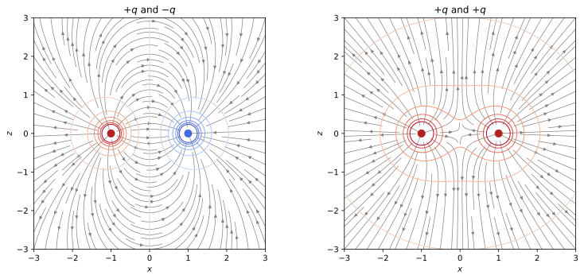
figures/ems_coulomb_fields.sage.
The definition below states Coulomb’s law, the superposition principle and the field of a continuous charge density in one formula. Point charges are included through the Dirac delta of Definition 24 of Differential equations.
Definition 1 (Electric field) A charge density is a function \rho(\mathbf x) on \mathbb{R}^3, piecewise continuous and vanishing outside a bounded set, or a finite sum \sum_aq_a\delta^3(\mathbf x - \mathbf x_a) of point charges; Q = \int\rho\,d^3x is its total charge. The electric field of \rho is \mathbf E(\mathbf x) = \frac1{4\pi}\int\rho(\mathbf x')\,\frac{\mathbf x - \mathbf x'}{|\mathbf x - \mathbf x'|^3}\, d^3x' , \tag{1} and a test charge q_0 at rest at \mathbf x feels the force \mathbf F = q_0\mathbf E(\mathbf x). For a single point charge q at \mathbf x' this is Coulomb’s law \mathbf F = \frac{qq_0}{4\pi}\frac{\mathbf x - \mathbf x'}{|\mathbf x - \mathbf x'|^3}; for several sources the fields, and the forces, add (superposition). In SI units the factor 1/4\pi is 1/4\pi\varepsilon_0 (Maggiore 2023, secs. 4.1.1–4.1.2).
Veriphy. Pending.
Lean. Pending.
Sage. Pending.
The simplest source is a single charge. Its field points away from it (for q > 0), has the same magnitude on every sphere around it, and falls off as the inverse square of the distance.
Example 1 (The field of a point charge) For \rho = q\delta^3(\mathbf x), Equation 1 gives \mathbf E = \frac{q}{4\pi r^2}\hat{\mathbf n}. The proton’s field at the Bohr radius a_0 = 5.29\times10^{-11}\,m is e/(4\pi\varepsilon_0a_0^2) = 5.1\times 10^{11}\,V/m, far beyond any field produced in a laboratory, while at 1\,m from a charge of 1\,\muC it is 9.0\times10^3\,V/m.
Coulomb’s force has the same inverse-square form as Newton’s gravity, and comparing the two for elementary particles shows how weak gravity is. The ratio does not depend on the distance.
Example 2 (Coulomb against gravity) Two protons repel electrically with e^2/4\pi\varepsilon_0r^2 and attract gravitationally with Gm_p^2/r^2 (Definition 2 of Classical mechanics). The ratio is e^2/(4\pi\varepsilon_0Gm_p^2) = 1.2\times10^{36}, and for an electron and a proton e^2/(4\pi\varepsilon_0Gm_em_p) = 2.3\times10^{39}. Matter is held together electrically; gravity wins only for large bodies, which are electrically neutral to high accuracy.
Superposition reduces the field of two charges to vector addition. On the symmetry axes of the pair the addition is done by hand, and the result already shows the two patterns of Figure 1.
Example 3 (Two charges on and off the axis) Put q_1 at (0, 0, d) and q_2 at (0, 0, -d). On the plane z = 0, at distance s from the axis, the field of equal charges q_1 = q_2 = q is radial in the plane, \mathbf E = \frac{2qs}{4\pi(s^2 + d^2)^{3/2}}\hat{\mathbf s}, zero at the origin; for opposite charges q_1 = -q_2 = q it is along the axis, \mathbf E = -\frac{2qd}{4\pi(s^2 + d^2)^{3/2}}\mathbf e_z, pointing from the positive to the negative charge’s side, and for s \gg d it falls as s^{-3} instead of s^{-2} (Pierrus 2018, Question 2.11).
A line charge is the idealisation of a long thin charged wire. The integral of Equation 1 over the line is elementary, and the result decays only as the inverse distance.
Example 4 (An infinite line charge) For charge \lambda per unit length on the z axis, a point at distance s in the plane z = 0 receives from the element at height z' the radial component \frac{\lambda\,dz'}{4\pi}\frac{s}{(s^2 + z'^2)^{3/2}}, and the axial components cancel in pairs. Since \int_{-\infty}^\infty\frac{s\,dz'}{(s^2 + z'^2)^{3/2}} = \frac2s, \mathbf E = \frac{\lambda}{2\pi s}\hat{\mathbf s} (Pierrus 2018, Question 2.8).
A uniformly charged ring has only one non-vanishing component of the field on its axis. The calculation is a single integral because every element of the ring is at the same distance from the point.
Example 5 (A ring on its axis) For charge q spread uniformly on the circle of radius a in the plane z = 0 centred on the axis, each element is at distance \sqrt{z^2 + a^2} from (0, 0, z) and the transverse components cancel, so E_z = \frac{qz}{4\pi(z^2 + a^2)^{3/2}}. It vanishes at the centre, is largest at |z| = a/\sqrt2, and for |z| \gg a it becomes the field q/4\pi z^2 of a point charge (Pierrus 2018, Question 2.10).
Summing rings of growing radius gives the disc. Letting the radius grow without bound then gives a plane, whose field does not decay at all.
Example 6 (A disc on its axis) A disc of radius a with surface charge density \sigma is a sum of rings of charge 2\pi\sigma a'\,da', so for z > 0 Example 5 gives E_z = \int_0^a\frac{\sigma a'z\,da'}{2(z^2 + a'^2)^{3/2}} = \frac\sigma2\Bigl(1 - \frac{z}{\sqrt{z^2 + a^2}}\Bigr). Far away it is \sigma\pi a^2/4\pi z^2, the field of the total charge; as a \to \infty it tends to \sigma/2 at every height (Pierrus 2018, Question 2.5).
The limit of the disc is the infinite plane, whose field is uniform on each side. The jump of the field across the plane is the surface charge density, a fact that Gauss’s law will make general.
Example 7 (An infinite charged plane) A plane z = 0 with uniform surface charge \sigma has, by Example 6 with a \to \infty and by symmetry under z \mapsto -z, the field \mathbf E = \frac\sigma2\operatorname{sign}(z)\,\mathbf e_z. Two parallel planes with \pm\sigma produce \sigma between them and 0 outside, the field of an ideal parallel-plate arrangement (Maggiore 2023, Problem 4.1).
Newton’s third law for two charges is part of Coulomb’s law, which is antisymmetric under exchange of the two charges. For extended charge distributions it follows by integration.
Example 8 (The third law for extended charges) The force on \rho_1 due to the field of \rho_2 is \mathbf F_1 = \int\rho_1\mathbf E_2\,d^3x = \frac1{4\pi}\int\!\!\int \rho_1(\mathbf x)\rho_2(\mathbf x')\frac{\mathbf x - \mathbf x'}{|\mathbf x - \mathbf x'|^3}d^3x\,d^3x'. Exchanging the roles of the two densities and renaming \mathbf x \leftrightarrow \mathbf x' changes the sign of the kernel, so \mathbf F_2 = -\mathbf F_1: the electric forces between charges at rest obey the third law of Definition 1 of Classical mechanics; (Maggiore 2023, sec. 4.1.2, eqs. (4.26)-(4.27)).
Field lines make a vector field visible. They are the integral curves of the field, and their behaviour near charges follows from the inverse-square law.
Example 9 (Field lines) A field line is a curve whose tangent is \mathbf E at each point, a solution of d\mathbf x/dt = \mathbf E(\mathbf x), an ordinary differential equation (Ordinary differential equations). Lines leave positive charges, end on negative charges or go to infinity, and never cross where \mathbf E \neq 0. In Figure 1 all lines from +q end on -q in the left panel, while in the right panel they go to infinity and the midpoint, where \mathbf E = 0, is a crossing point of two lines (Pierrus 2018, Question 2.14).
Two opposite charges close together look, from far away, like a single object with no charge. Its field is the dipole field of the multipole expansion, which this limit derives from Coulomb’s law.
Example 10 (The point dipole as a limit) For q at \mathbf d/2 and -q at -\mathbf d/2, expanding Equation 1 to first order in \mathbf d gives \mathbf E = \frac{3(\mathbf p\cdot\hat{\mathbf n})\hat{\mathbf n} - \mathbf p}{4\pi r^3} + O(d^2/r^4) with \mathbf p = q\mathbf d. Letting d \to 0 with \mathbf p fixed gives the field of a point dipole, the 1/4\pi multiple of the dipole field of Example 69 of Fourier analysis; it is the leading term far from any neutral charge distribution (Proposition 5 of Fourier analysis).
The exercises start with direct uses of superposition. The first one combines three equal forces, and symmetry does half of the work.
Exercise 1 (Three charges on a triangle) Three charges q sit at the vertices of an equilateral triangle of side a. Find the field at the centre and the force on each charge.
At the centre the three fields have equal magnitude and directions at 120^\circ to each other, so they cancel. The force on one charge is the sum of two forces of magnitude q^2/4\pi a^2 at 60^\circ to each other, each making 30^\circ with the line from the centre through the charge: |\mathbf F| = 2\cos30^\circ\,\frac{q^2}{4\pi a^2} = \frac{\sqrt3q^2}{4\pi a^2}, directed away from the centre.
Veriphy. Pending.
Lean. Pending.
Sage. Pending.
Four charges at the corners of a square produce, on the square’s axis, a field like that of a ring. The second exercise computes it with Sage and finds where it is strongest.
Exercise 2 (Four charges on a square) Charges q sit at (\pm a/2, \pm a/2, 0). With Sage, add the four Coulomb fields at (0, 0, z), show that only E_z survives, and find the height at which it is largest. Compare with Example 5.
Each charge is at distance \sqrt{z^2 + a^2/2}, and the transverse components cancel in pairs, so E_z = \frac{qz}{\pi(z^2 + a^2/2)^{3/2}}. This is the ring field with total charge 4q and radius a/\sqrt2, and it is largest at z = a/2, the ring’s R/\sqrt2 with R = a/\sqrt2:
q, a, z = var('q a z', domain='positive')
X = vector([0, 0, z])
E = sum(q * (X - vector([sx * a / 2, sy * a / 2, 0])) / (X - vector([sx * a / 2, sy * a / 2, 0])).norm()^3 / (4 * pi) for sx in (1, -1) for sy in (1, -1))
E = E.simplify_full()
print("E =", E)
Ez = E[2]
print("E_z equals q z/(pi (z^2 + a^2/2)^(3/2)):", bool((Ez - q * z / (pi * (z^2 + a^2 / 2)^(3/2))).simplify_full() == 0))
crit = solve(diff(Ez, z) == 0, z)
print("critical heights:", crit)Output:
E = (0, 0, q*z/(pi*(1/2*a^2 + z^2)^(3/2)))
E_z equals q z/(pi (z^2 + a^2/2)^(3/2)): True
critical heights: [
z == 1/2*a
]Veriphy. Pending.
Lean. Pending.
Sage. Pending.
A finite rod is the realistic version of the line charge. The third exercise computes its field on the bisecting plane and recovers Example 4 in the limit of a long rod.
Exercise 3 (A finite rod) A rod of length L on the z axis, centred at the origin, carries charge \lambda per unit length. With Sage, compute the field at distance s in the plane z = 0, and its limits for L \gg s and L \ll s (Pierrus 2018, Question 2.9).
Only the radial component survives: E_s = \frac{\lambda}{4\pi}\int_{-L/2}^{L/2}\frac{s\,dz'}{(s^2 + z'^2)^{3/2}} = \frac{\lambda L}{4\pi s\sqrt{s^2 + L^2/4}}. For L \gg s it tends to \lambda/2\pi s, and for L \ll s to \lambda L/4\pi s^2, a point charge:
lam, L, s, zp = var('lam L s zp', domain='positive')
Es = (lam / (4 * pi) * integrate(s / (s^2 + zp^2)^(3/2), zp, -L / 2, L / 2)).simplify_full()
print("E_s =", Es)
print("equals lam L/(4 pi s sqrt(s^2 + L^2/4)):", bool((Es - lam * L / (4 * pi * s * sqrt(s^2 + L^2 / 4))).simplify_full() == 0))
print("limit L -> oo:", limit(Es, L=oo))
print("leading term for L << s:", Es.taylor(L, 0, 1))Output:
E_s = 1/2*L*lam/(pi*sqrt(L^2 + 4*s^2)*s)
equals lam L/(4 pi s sqrt(s^2 + L^2/4)): True
limit L -> oo: 1/2*lam/(pi*s)
leading term for L << s: 1/4*L*lam/(pi*s^2)Veriphy. Pending.
Lean. Pending.
Sage. Pending.
On a line through two charges there may be a point where their fields cancel. The fourth exercise finds it for like and unlike charges.
Exercise 4 (Where the field vanishes) A charge q > 0 sits at x = 0 and a charge Q at x = d on the x axis. Find the points of the axis where \mathbf E = 0 for Q = 4q and for Q = -4q.
For Q = 4q the fields can cancel only between the charges, where they point in opposite directions: q/x^2 = 4q/(d - x)^2 gives d - x = 2x, x = d/3. For Q = -4q they can cancel only outside, on the side of the smaller charge: at x = -y with y > 0, q/y^2 = 4q/(d + y)^2 gives y = d, so x = -d. In both cases the zero is closer to the smaller charge.
Veriphy. Pending.
Lean. Pending.
Sage. Pending.
Integrating over a curved surface is the next step. The fifth exercise uses the rings of Example 5 to find the field at the centre of a charged hemisphere.
Exercise 5 (A charged hemisphere) A hemispherical surface of radius R, z \geq 0, carries uniform surface charge \sigma. With Sage, find the field at the centre of curvature by slicing it into rings (Macchi et al. 2023, Problem 1.11).
The ring between polar angles \theta and \theta + d\theta has charge 2\pi\sigma R^2\sin\theta\,d\theta, radius R\sin\theta and height R\cos\theta, so by Example 5 it contributes -\frac{2\pi\sigma R^2\sin\theta\, R\cos\theta}{4\pi R^3}d\theta to E_z at the centre. Integrating over 0 \leq \theta \leq \pi/2 gives E_z = -\sigma/4, pointing away from the hemisphere (-\sigma/4\varepsilon_0 in SI units):
sigma, R, th = var('sigma R theta', domain='positive')
# ring at polar angle theta: charge 2 pi sigma R^2 sin(theta) dtheta, at height R cos(theta), radius R sin(theta)
dEz = -2 * pi * sigma * R^2 * sin(th) * R * cos(th) / (4 * pi * R^3)
Ez = integrate(dEz, th, 0, pi / 2)
print("E_z at the centre =", Ez, " (Heaviside-Lorentz; -sigma/(4 eps0) in SI)")
# direct check by integrating the Coulomb kernel over the surface
ph = var('phi')
x = R * vector([sin(th) * cos(ph), sin(th) * sin(ph), cos(th)])
Ezd = integrate(integrate(-sigma * x[2] / R^3 / (4 * pi) * R^2 * sin(th), ph, 0, 2 * pi), th, 0, pi / 2)
print("direct surface integral:", Ezd)Output:
E_z at the centre = -1/4*sigma (Heaviside-Lorentz; -sigma/(4 eps0) in SI)
direct surface integral: -1/4*sigmaVeriphy. Pending.
Lean. Pending.
Sage. Pending.
Coulomb’s law combines with mechanics as soon as a charged body has weight. The sixth exercise is the classical electroscope of two charged balls on threads.
Exercise 6 (Two charged pendulums) Two small balls of mass m = 1\,g and equal charge q hang from the same point on threads of length \ell = 50\,cm, and settle with each thread at \theta = 10^\circ from the vertical. Write the equilibrium condition and, with Sage, find q in coulombs.
Each ball is in equilibrium under the tension, its weight mg and the horizontal repulsion q^2/4\pi\varepsilon_0(2\ell \sin\theta)^2, so \tan\theta = q^2/(4\pi\varepsilon_0mg\,4\ell^2\sin^2\theta) and q = 2\ell\sin\theta\sqrt{4\pi \varepsilon_0mg\tan\theta}, about 7.6\times10^{-8}\,C:
eps0 = 8.854e-12; m = 1e-3; g = 9.81; l = 0.5; th = 10 * pi / 180
q = 2 * l * sin(th) * sqrt(4 * pi * eps0 * m * g * tan(th))
print("q = %.3e C" % q.n())
F = q^2 / (4 * pi * eps0 * (2 * l * sin(th))^2)
print("check: F/(m g) = %.5f, tan(theta) = %.5f" % (F.n() / (m * g), tan(th).n()))Output:
q = 7.618e-08 C
check: F/(m g) = 0.17633, tan(theta) = 0.17633Veriphy. Pending.
Lean. Pending.
Sage. Pending.
The force between two extended charges is a double integral. For two collinear rods it can be done in closed form, and the point-charge limit is a check on the result.
Exercise 7 (Force between two rods) Two rods of length L lie on the x axis, one on [-L, 0] and the other on [a, a + L], both with charge \lambda per unit length. With Sage, find the force between them and its limit for L \ll a.
The force is \frac{\lambda^2}{4\pi}\int_0^L\!\!\int_0^L\frac{du\,dv}{(a + u + v)^2} = \frac{\lambda^2}{4\pi}\ln\frac{(a + L)^2}{a(a + 2L)}, repulsive. For L \ll a the logarithm is L^2/a^2 + O(L^3/a^3) and the force tends to (\lambda L)^2/4\pi a^2, Coulomb’s law for the two total charges:
lam, L, a, u, v = var('lam L a u v', domain='positive')
F = lam^2 / (4 * pi) * integrate(integrate(1 / (a + u + v)^2, v, 0, L), u, 0, L)
F = F.simplify_log()
print("F =", F)
print("equals lam^2/(4 pi) log((a+L)^2/(a(a+2L))):", bool((F - lam^2 / (4 * pi) * log((a + L)^2 / (a * (a + 2 * L)))).simplify_log().simplify_full() == 0))
print("expansion for small L:", F.taylor(L, 0, 3))Output:
F = -1/4*lam^2*log((2*L + a)*a/(L + a)^2)/pi
equals lam^2/(4 pi) log((a+L)^2/(a(a+2L))): True
expansion for small L: -1/2*L^3*lam^2/(pi*a^3) + 1/4*L^2*lam^2/(pi*a^2)Veriphy. Pending.
Lean. Pending.
Sage. Pending.
A point charge in the field of a dipole is the simplest case of a charge distribution in a non-uniform field. The eighth exercise treats the dipole as the limit of Example 10 and uses the third law.
Exercise 8 (A charge and a dipole) A point dipole \mathbf p sits at \mathbf r from a point charge q. Find the force on the charge from the dipole field, deduce the force on the dipole, and find the torque on the dipole by treating it as two charges \pm Q at \mathbf r \pm\mathbf d/2 with Q\mathbf d = \mathbf p (Macchi et al. 2023, Problem 1.10).
Seen from the dipole, the charge is in the direction -\hat{\mathbf r}, so Example 10 gives the force \frac{q}{4\pi r^3}\bigl(3(\mathbf p\cdot\hat{\mathbf r})\hat{\mathbf r} - \mathbf p\bigr) on the charge, and by Example 8 the dipole feels \mathbf F = \frac{q}{4\pi r^3}\bigl(\mathbf p - 3(\mathbf p\cdot\hat{\mathbf r})\hat{\mathbf r}\bigr). The two charges feel \pm Q\mathbf E(\mathbf r \pm\mathbf d/2), whose torque about \mathbf r is \frac{\mathbf d}2\times Q\mathbf E + (-\frac{\mathbf d}2)\times(-Q\mathbf E) = \mathbf p\times\mathbf E(\mathbf r) to first order, of magnitude \frac{qp\sin\alpha}{4\pi r^2} with \alpha the angle between \mathbf p and \hat{\mathbf r}; it turns \mathbf p towards the direction of the charge’s field.
Veriphy. Pending.
Lean. Pending.
Sage. Pending.
The field of a continuous density is finite even at points inside the charge, although the integrand of Equation 1 is singular there. The ninth exercise proves a bound that depends only on the largest density and the volume.
Exercise 9 (The field of a bounded density is bounded) Let |\rho| \leq \rho_m on a region V of volume |V| and \rho = 0 outside. Show that |\mathbf E(\mathbf x)| \leq \rho_mr_V at every point, where r_V = (3|V|/4\pi)^{1/3} is the radius of the ball of the same volume. Hint: among regions of given volume, which one maximises \int_V|\mathbf x - \mathbf y|^{-2}d^3y?
|\mathbf E(\mathbf x)| \leq \frac{\rho_m}{4\pi}\int_V\frac{d^3y}{|\mathbf x - \mathbf y|^2}. Let B be the ball of radius r_V centred at \mathbf x. The parts V\setminus B and B\setminus V have the same volume, and the integrand is at most r_V^{-2} on the first and at least r_V^{-2} on the second, so \int_V \leq \int_B = \int_0^{r_V}4\pi r^2\,r^{-2}dr = 4\pi r_V (spherical coordinates, Theorem 7 of Real analysis). Hence |\mathbf E| \leq \rho_mr_V: the singularity |\mathbf x - \mathbf y|^{-2} is integrable in three dimensions.
Veriphy. Pending.
Lean. Pending.
Sage. Pending.
Field lines can be found in closed form when the field has a symmetry. The last exercise integrates the line equation of Example 9 for two equal charges, using a conserved flux.
Exercise 10 (Field lines of two equal charges) For charges q at (0, 0, \pm d), show that the field lines in a plane through the axis satisfy \cos\theta_1 + \cos\theta_2 is constant, where \theta_{1, 2} are the angles, at the two charges, between the direction \mathbf e_z and the line to the point. Hint: for one charge at the origin, write \mathbf E = \frac{1}{2\pi s}\nabla\psi\times \hat{\boldsymbol\varphi} with s = r\sin\theta the distance from the axis, and find \psi.
For one charge, \nabla\cos\theta = -\frac{\sin\theta}{r}\hat{\boldsymbol\theta} and \hat{\boldsymbol\theta}\times \hat{\boldsymbol\varphi} = \hat{\mathbf n}, so \psi = -\frac q2\cos\theta gives \frac{1}{2\pi s}\nabla\psi\times \hat{\boldsymbol\varphi} = \frac{q\sin\theta}{4\pi rs}\hat{\mathbf n} = \frac{q}{4\pi r^2}\hat{\mathbf n}; up to a constant, \psi is the flux through the cap of the circle of revolution through the point. The relation is linear, so the field of the pair is \frac{1}{2\pi s}\nabla\psi\times\hat{\boldsymbol\varphi} with \psi = -\frac q2(\cos \theta_1 + \cos\theta_2). This vector is orthogonal to \nabla\psi, so \psi is constant along every field line, which is the claim; the right panel of Figure 1 shows these curves.
Veriphy. Pending.
Lean. Pending.
Sage. Pending.
The integral Equation 1 is hard to evaluate except in symmetric cases. Its divergence and curl, however, are local and simple, and with symmetry the integral form of the divergence equation gives the field of a sphere, a cylinder or a slab in one line.
Theorem 1 (Gauss’s law) The electric field Equation 1 of a charge density \rho satisfies \nabla\cdot\mathbf E = \rho, \qquad \nabla\times\mathbf E = 0 \tag{2} at every point where \rho is continuously differentiable, and, for point charges, away from the charges with the first equation holding in the sense of the delta function. In integral form, for every bounded region V with closed boundary surface \partial V (outward normal, no point charge on it) and every closed curve C, \oint_{\partial V}\mathbf E\cdot d\mathbf S = Q_V = \int_V\rho\,d^3x, \qquad \oint_C\mathbf E\cdot d\boldsymbol\ell = 0 . Proof. By \partial_i|\mathbf x - \mathbf x'|^{-1} = -(x_i - x'_i)/|\mathbf x - \mathbf x'|^3, \mathbf E = -\nabla \frac1{4\pi}\int\frac{\rho(\mathbf x')}{|\mathbf x - \mathbf x'|}d^3x' is a gradient, so its curl vanishes (Example 131 of Differential geometry). Its divergence is -\frac1{4\pi}\int\rho(\mathbf x')\nabla^2\frac{1}{|\mathbf x - \mathbf x'|}d^3x' = \int\rho(\mathbf x')\delta^3(\mathbf x - \mathbf x')d^3x' = \rho(\mathbf x), because \nabla^2(-1/4\pi r) = \delta^3 (Proposition 9 of Differential equations). The integral forms follow from the divergence theorem and from Stokes’ theorem, the cases k = 2 and k = 1 of Theorem 1 of Differential geometry; (Maggiore 2023, sec. 3.1.2 and 4.1).
Veriphy. Pending.
Lean. Pending.
Sage. Pending.
The first example is the content of Gauss’s law for one charge: the flux through a closed surface counts the charge inside it and ignores the charge outside, whatever the shape of the surface. The sphere is the simplest closed surface to check it on.
Example 11 (Flux of a point charge) For \rho = q\delta^3(\mathbf x) the flux of \mathbf E = q\hat{\mathbf n}/4\pi r^2 through the sphere of radius R is \frac{q}{4\pi R^2}\cdot4\pi R^2 = q, independent of R. Through any closed surface enclosing the origin it is again q, and through one that does not enclose it, 0: the field lines entering such a surface also leave it.
Spherical symmetry turns Gauss’s law into an algebraic equation for the radial component. A uniformly charged shell is the first case, and its field inside is zero.
Example 12 (A charged spherical shell) For charge Q spread uniformly on the sphere r = R, symmetry under rotations makes \mathbf E = E(r)\hat{\mathbf n}, and the flux through the sphere of radius r is 4\pi r^2E(r). Gauss’s law gives E = 0 for r < R and E = Q/4\pi r^2 for r > R: outside, the shell acts as a point charge at its centre, and E jumps by Q/4\pi R^2 = \sigma across the surface (Pierrus 2018, Question 2.4).
A uniformly charged ball has a field that grows linearly inside. The linear field inside is what makes the overlapping spheres of the later examples work.
Example 13 (A uniformly charged ball) For charge Q uniform in the ball r \leq R, \rho = 3Q/4\pi R^3, the sphere of radius r < R encloses Qr^3/R^3, so \mathbf E = \frac{Qr}{4\pi R^3}\hat{\mathbf n} = \frac{\rho}{3}\mathbf x inside and \frac{Q}{4\pi r^2}\hat{\mathbf n} outside. The field is continuous, largest at the surface, and linear in \mathbf x inside (Maggiore 2023, Problem 4.2).
Cylindrical symmetry uses a coaxial cylinder as Gaussian surface. The ends contribute nothing because the field is radial. The same argument works for every infinitely long charge distribution with axial symmetry.
Example 14 (A charged cylinder) An infinite cylinder of radius a with uniform density \rho has \mathbf E = E(s)\hat{\mathbf s}. A coaxial cylinder of radius s and length h has flux 2\pi shE and encloses \rho\pi s^2h for s < a and \lambda h for s > a, with \lambda = \rho\pi a^2. So E = \rho s/2 inside and E = \lambda/2\pi s outside, which recovers Example 4 without an integral.
Planar symmetry is the third case, and the Gaussian surface is a box crossing the slab. Outside the slab the field is uniform.
Example 15 (A charged slab) The slab |z| \leq b with uniform density \rho has \mathbf E = E(z)\mathbf e_z with E odd in z. A box of cross-section A between -z and z has flux 2AE(z), so E = \rho z for |z| \leq b and E = \rho b\, \operatorname{sign}z outside. As b \to 0 with 2\rho b = \sigma this becomes the plane of Example 7.
A surface charge makes the normal component of the field jump, while the tangential components stay continuous. These are the boundary conditions used for every surface charge, and in particular on conductors.
Example 16 (The field across a surface charge) Apply the integral forms of Theorem 1 to a thin box straddling a surface with charge density \sigma and unit normal \hat{\mathbf n} from side 1 to side 2, and to a thin rectangle crossing it. As the thickness tends to zero, \hat{\mathbf n}\cdot(\mathbf E_2 - \mathbf E_1) = \sigma and \hat{\mathbf n}\times(\mathbf E_2 - \mathbf E_1) = 0 (Maggiore 2023, sec. 4.1.6). The shell of Example 12 and the plane of Example 7 satisfy both.
Superposition combines with the linear field of Example 13 to solve a problem without symmetry. A ball with an off-centre cavity is a full ball plus a smaller ball of opposite charge.
Example 17 (A cavity in a charged ball) A ball of uniform density \rho centred at \mathbf c_1 contains an empty spherical cavity centred at \mathbf c_2. The density is that of the full ball plus a ball of density -\rho filling the cavity, so inside the cavity \mathbf E = \frac\rho3(\mathbf x - \mathbf c_1) - \frac\rho3(\mathbf x - \mathbf c_2) = \frac\rho3(\mathbf c_2 - \mathbf c_1): uniform, along the line of centres (Macchi et al. 2023, Problem 1.2; Pierrus 2018, Question 2.7).
The same superposition with two complete balls produces a dipole. The model is that of a neutral atom or a metal sphere whose electrons are displaced as a whole.
Example 18 (Two overlapping balls) Balls of density \rho and -\rho and radius R, with centres displaced by \boldsymbol\delta (the positive one at \boldsymbol\delta/2), give in the overlap the uniform field -\rho\boldsymbol\delta/3, and outside the field of two point charges \pm Q, Q = \frac43\pi R^3\rho, at the two centres. For \delta \ll R the outside field is that of the point dipole \mathbf p = Q\boldsymbol\delta of Example 10.
The hydrogen atom in its ground state has an electron cloud of density proportional to e^{-2r/a_0}. Gauss’s law gives the field of the atom, screened by the cloud at large distances.
Example 19 (The field of a hydrogen atom) For a proton at the origin and the cloud \rho_e = -\frac{e}{\pi a^3}e^{-2r/a}, the charge inside the sphere of radius r is e - e\bigl(1 - e^{-2r/a}(1 + \frac{2r}a + \frac{2r^2}{a^2})\bigr), so \mathbf E = \frac{e}{4\pi r^2}e^{-2r/a}\bigl(1 + \frac{2r}a + \frac{2r^2}{a^2}\bigr)\hat{\mathbf n}. Near the proton this is Coulomb’s field; beyond a few a it decays exponentially, because the atom is neutral.
Gauss’s law fixes the flux, not the field. The last example shows what it leaves undetermined, and why the curl equation and a condition at infinity are needed as well.
Example 20 (What Gauss’s law does not fix) The divergence equation alone allows adding to \mathbf E any divergence-free field, for instance (-y, x, 0) or a constant; the curl equation rules out the first, and the decay of \mathbf E at infinity rules out the second. For a uniformly charged cube the flux through a cube around it is Q, but no closed surface around it is everywhere normal to \mathbf E with constant |\mathbf E|, so the flux does not give the field, which must be computed from Equation 1. The uniqueness of the solution is the subject of Proposition 1.
The exercises begin with fluxes that follow from symmetry alone. The first places a charge at a corner of a cube.
Exercise 11 (A charge at a corner) A point charge q sits at a corner of a cube. Find the flux of its field through each face of the cube.
Eight cubes meeting at the charge enclose it symmetrically, so the cube receives q/8. On the three faces that meet at the charge the field is tangent and the flux is 0; the three other faces are equivalent under the symmetry that permutes the axes, so each receives q/24.
Veriphy. Pending.
Lean. Pending.
Sage. Pending.
The divergence of a piecewise field can be checked region by region. The second exercise does it with Sage for the uniformly charged ball.
Exercise 12 (Divergence and curl of the ball’s field) With Sage, compute the divergence and the curl of the field of Example 13 in Cartesian coordinates, inside and outside, and check Equation 2 in both regions and the continuity of \mathbf E at r = R.
Inside, \nabla\cdot(\rho\mathbf x/3) = \rho; outside, \nabla\cdot(Q\mathbf x/4\pi r^3) = 0; both curls vanish, and the two expressions agree at r = R:
x, y, z, Q, R = var('x y z Q R', domain='real'); assume(R > 0)
r = sqrt(x^2 + y^2 + z^2); X = vector([x, y, z])
rho = 3 * Q / (4 * pi * R^3)
Ein = rho / 3 * X; Eout = Q * X / (4 * pi * r^3)
def div(F): return sum(diff(F[i], v) for i, v in enumerate([x, y, z])).simplify_full()
def curl(F): return vector([diff(F[2], y) - diff(F[1], z), diff(F[0], z) - diff(F[2], x), diff(F[1], x) - diff(F[0], y)]).simplify_full()
print("div E_in =", div(Ein), "= rho:", bool(div(Ein) == rho))
print("div E_out =", div(Eout), "; curl E_in =", curl(Ein), "; curl E_out =", curl(Eout))
print("continuity at r = R (point (R,0,0)):", bool((Ein - Eout).subs(x=R, y=0, z=0).simplify_full() == 0))Output:
div E_in = 3/4*Q/(pi*R^3) = rho: True
div E_out = 0 ; curl E_in = (0, 0, 0) ; curl E_out = (0, 0, 0)
continuity at r = R (point (R,0,0)): TrueVeriphy. Pending.
Lean. Pending.
Sage. Pending.
A density that decays smoothly gives a field computed with one radial integral. The third exercise uses an exponential density, a model of a screened charge.
Exercise 13 (An exponential density) For \rho = \rho_0e^{-r/a}, find with Sage the charge inside the sphere of radius r, the field E(r), the total charge, and the behaviour of E for r \ll a and r \gg a.
Q(r) = 4\pi\rho_0\int_0^rr'^2e^{-r'/a}dr' = 4\pi\rho_0a^3\bigl(2 - e^{-r/a}(2 + 2r/a + r^2/a^2)\bigr), Q = 8\pi\rho_0a^3, and E = Q(r)/4\pi r^2. For r \ll a, E \approx \rho_0r/3 (a uniform ball), for r \gg a, E \approx Q/4\pi r^2:
rho0, a, r, t = var('rho0 a r t', domain='positive')
Qr = (4 * pi * rho0 * integrate(t^2 * exp(-t / a), t, 0, r)).simplify_full()
print("Q(r) =", Qr)
print("total charge:", limit(Qr, r=oo))
E = Qr / (4 * pi * r^2)
print("E(r) for small r:", E.taylor(r, 0, 2))
print("r^2 E(r) at large r ->", limit(r^2 * E, r=oo), "= Q/(4 pi)")Output:
Q(r) = 4*(2*pi*a^3*e^(r/a) - 2*pi*a^3 - 2*pi*a^2*r - pi*a*r^2)*rho0*e^(-r/a)
total charge: 8*pi*a^3*rho0
E(r) for small r: 1/3*r*rho0 - 1/4*r^2*rho0/a
r^2 E(r) at large r -> 2*a^3*rho0 = Q/(4 pi)Veriphy. Pending.
Lean. Pending.
Sage. Pending.
Power-law densities are the next family. The fourth exercise gives a closed form inside and outside a ball. The exponent decides whether the field at the centre is finite.
Exercise 14 (A power-law density) The ball r \leq R carries \rho = kr^n with n > -3. Find \mathbf E inside and outside, and say for which n the field at the centre is finite.
Q(r) = 4\pi k\int_0^rr'^{n + 2}dr' = \frac{4\pi kr^{n + 3}}{n + 3}, so E = \frac{kr^{n + 1}}{n + 3} for r \leq R and E = \frac{kR^{n + 3}}{(n + 3)r^2} outside. At the centre E \to 0 for n > -1, is finite and non-zero (k/2, direction-dependent and hence discontinuous) for n = -1, and diverges for -3 < n < -1; the total charge is finite for all n > -3.
Veriphy. Pending.
Lean. Pending.
Sage. Pending.
A coaxial cable carries equal and opposite charges on two cylinders. The fifth exercise shows that its field is confined between them.
Exercise 15 (The field of a coaxial cable) An inner cylinder of radius a carries charge \lambda per unit length on its surface and a coaxial outer cylinder of radius b > a carries -\lambda. Find \mathbf E everywhere and the potential difference between them (\Delta\phi = \int_a^bE\,ds).
A coaxial Gaussian cylinder encloses 0 for s < a, \lambda per unit length for a < s < b and 0 for s > b, so E = 0 inside and outside and E = \lambda/2\pi s between the cylinders. The potential difference is \frac{\lambda}{2\pi}\ln\frac ba.
Veriphy. Pending.
Lean. Pending.
Sage. Pending.
Gauss’s law can be read backwards: the field determines the density. The sixth exercise computes the density of a Gaussian-shaped field with Sage.
Exercise 16 (The density of a given field) For \mathbf E = E_0\,\mathbf x\,e^{-r^2/a^2}, find with Sage the charge density, its total integral, and check that \nabla\times\mathbf E = 0. Why must the total charge vanish?
\rho = \nabla\cdot\mathbf E = E_0e^{-r^2/a^2}(3 - 2r^2/a^2), positive in the core and negative outside it. The total charge is 0, as it must be: the flux through a sphere of radius R is 4\pi R^3E_0e^{-R^2/a^2} \to 0:
x, y, z, E0, a, r = var('x y z E0 a r'); assume(a > 0, r > 0)
X = vector([x, y, z]); E = E0 * X * exp(-(x^2 + y^2 + z^2) / a^2)
rho = sum(diff(E[i], v) for i, v in enumerate([x, y, z])).simplify_full()
print("rho =", rho.factor())
curl = vector([diff(E[2], y) - diff(E[1], z), diff(E[0], z) - diff(E[2], x), diff(E[1], x) - diff(E[0], y)]).simplify_full()
print("curl E =", curl)
rho_r = E0 * exp(-r^2 / a^2) * (3 - 2 * r^2 / a^2)
print("rho in spherical form matches:", bool((rho - rho_r.subs(r=sqrt(x^2 + y^2 + z^2))).simplify_full() == 0))
print("total charge 4 pi int r^2 rho dr =", integrate(4 * pi * r^2 * rho_r, r, 0, oo))Output:
rho = (3*a^2 - 2*x^2 - 2*y^2 - 2*z^2)*E0*e^(-x^2/a^2 - y^2/a^2 - z^2/a^2)/a^2
curl E = (0, 0, 0)
rho in spherical form matches: True
total charge 4 pi int r^2 rho dr = 0Veriphy. Pending.
Lean. Pending.
Sage. Pending.
Not every vector field is an electrostatic field. The seventh exercise tests three candidates against the curl equation. Two of them pass, and the third is the shape of a magnetic field.
Exercise 17 (Which fields are electrostatic?) Which of \mathbf E_1 = (y, x, 0), \mathbf E_2 = (-y, x, 0) and \mathbf E_3 = (x, y, -2z) can be a static electric field? For those that can, find the charge density.
\nabla\times\mathbf E_1 = 0 and \nabla\times\mathbf E_3 = 0, while \nabla\times\mathbf E_2 = (0, 0, 2), so \mathbf E_2 is not electrostatic (it is the shape of a magnetic field around an axis). \nabla\cdot\mathbf E_1 = 0 and \nabla\cdot\mathbf E_3 = 0: both are fields in a charge-free region, \mathbf E_1 = -\nabla(-xy) and \mathbf E_3 = -\nabla\bigl(z^2 - \tfrac12(x^2 + y^2)\bigr).
Veriphy. Pending.
Lean. Pending.
Sage. Pending.
A displaced electron gas produces a restoring field, and the electrons oscillate. The eighth exercise computes the frequency with Gauss’s law and Newton’s second law.
Exercise 18 (Plasma oscillations) In a slab of metal, the conduction electrons (density n, charge -e, mass m) are displaced together by a small \delta perpendicular to the faces, leaving surface charges \mp ne\delta on the two faces. Find the field inside, the equation of motion of the electrons and their oscillation frequency, and evaluate it with Sage for n = 10^{29}\,m^{-3} (Macchi et al. 2023, Problem 1.4).
The two surface charges \pm ne\delta produce, as in Example 7, the uniform field ne\delta between them, and the electrons feel -e\cdot ne\delta per particle opposite to the displacement. So m\ddot\delta = -ne^2\delta, simple harmonic with \omega_p^2 = ne^2/m, ne^2/\varepsilon_0m in SI units, the plasma frequency:
n, e, eps0, me = 1e29, 1.602e-19, 8.854e-12, 9.109e-31
wp = sqrt(n * e^2 / (eps0 * me))
print("omega_p = %.3e s^-1, frequency %.3e Hz, wavelength 2 pi c/omega_p = %.1f nm" % (wp, wp / (2 * pi.n()), 2 * pi.n() * 2.998e8 / wp * 1e9))
t = var('t'); w = var('w', domain='positive')
print("solution of d'' = -w^2 d:", desolve(diff(function('d')(t), t, 2) == -w^2 * function('d')(t), function('d')(t), ivar=t))Output:
omega_p = 1.784e+16 s^-1, frequency 2.839e+15 Hz, wavelength 2 pi c/omega_p = 105.6 nm
solution of d'' = -w^2 d: _K2*cos(t*w) + _K1*sin(t*w)Veriphy. Pending.
Lean. Pending.
Sage. Pending.
A cloud of charged particles at rest flies apart. Gauss’s law gives the force on each particle as long as the particles keep their order, and energy conservation then gives the final velocities.
Exercise 19 (A Coulomb explosion) A ball of radius R is filled uniformly with N particles of charge q and mass m, total charge Q = Nq, at rest at t = 0. Assuming that particles do not overtake each other, write the equation of motion of a particle starting at r_0, find its final kinetic energy, and the distribution of the final energies (Macchi et al. 2023, Problem 1.6).
The charge inside the particle’s shell stays Qr_0^3/R^3, so m\ddot r = \frac{qQr_0^3}{4\pi R^3r^2}, a radial Kepler problem with a repulsive force. Energy conservation (Definition 2 of Classical mechanics) gives \frac12mv^2 = \frac{qQr_0^3}{4\pi R^3}(\frac1{r_0} - \frac1r), so the final energy is K = K_m(r_0/R)^2 with K_m = qQ/4\pi R, reached by the outermost particles. The number with r_0 < R(K/K_m)^{1/2} is N(K/K_m)^{3/2}, so dN/dK = \frac{3N}{2K_m}\sqrt{K/K_m} for K \leq K_m.
Veriphy. Pending.
Lean. Pending.
Sage. Pending.
The flux of a point charge through a closed surface was found for spheres in Example 11. The last exercise proves it for every surface directly from the divergence theorem.
Exercise 20 (Gauss’s law for any surface) Let S = \partial V be a closed surface and q a charge at a point not on S. Show from \nabla\cdot(\mathbf x/r^3) = 0 for r > 0 and from the divergence theorem that the flux of the field of q through S is q if the charge is inside V and 0 otherwise.
Put the charge at the origin. If it is outside V, the field is smooth on V with zero divergence, and the divergence theorem (Theorem 1 of Differential geometry) gives flux 0. If it is inside, remove a small ball B_\varepsilon around it: on V\setminus B_\varepsilon the divergence vanishes, so the flux out through S equals the flux out through the sphere \partial B_\varepsilon, which is q by Example 11. By superposition the flux of any finite set of charges is the enclosed charge.
Veriphy. Pending.
Lean. Pending.
Sage. Pending.
The electrostatic potential
The proof of Gauss’s law wrote the electric field as the gradient of an integral. That integral is a scalar function, easier to compute and to visualise than the field, and it turns the electric force into a conservative force in the sense of classical mechanics.
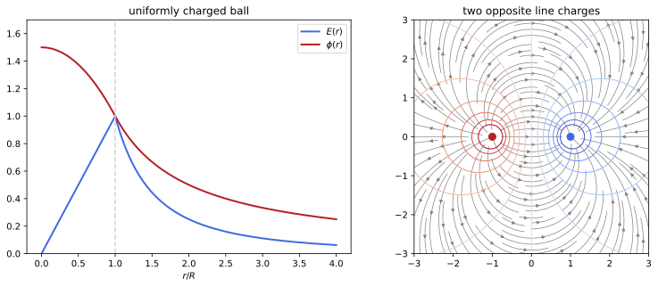
figures/ems_potential.sage.
The definition collects the integral formula, the differential equation it satisfies and its meaning as an energy per unit charge. The equation, Poisson’s equation, is the form of electrostatics used for boundary problems.
Definition 2 (Electrostatic potential) The electrostatic potential of a charge density \rho is \phi(\mathbf x) = \frac1{4\pi}\int\frac{\rho(\mathbf x')}{|\mathbf x - \mathbf x'|}\,d^3x' , \tag{3} so that \mathbf E = -\nabla\phi and \phi satisfies Poisson’s equation \nabla^2\phi = -\rho (Laplace’s equation, Definition 22 of Differential equations, where \rho = 0), with \phi \to 0 at infinity. The difference \phi(\mathbf x_2) - \phi(\mathbf x_1) = -\int_C\mathbf E\cdot d\boldsymbol\ell is the same along every curve C from \mathbf x_1 to \mathbf x_2, so the electric force q_0\mathbf E on a test charge is conservative with potential energy q_0\phi (Definition 2 of Classical mechanics), and q_0(\phi(\mathbf x_2) - \phi(\mathbf x_1)) is the work done against the field in moving the charge. Any other potential of \mathbf E differs from \phi by a constant. In SI units the factor is 1/4\pi\varepsilon_0 and \phi is measured in volts (Maggiore 2023, sec. 4.1.3, eqs. (4.16), (4.30)-(4.33)).
Veriphy. Pending.
Lean. Pending.
Sage. Pending.
The potential of a point charge is the integrand of Equation 3. Its equipotential surfaces are spheres, which the field crosses at right angles.
Example 21 (The potential of a point charge) For \rho = q\delta^3(\mathbf x), \phi = q/4\pi r and -\nabla\phi = q\hat{\mathbf n}/4\pi r^2, the field of Example 1. The potential energy of a second charge q_0 at distance r is qq_0/4\pi r: positive for like charges, which must be pushed together, negative for unlike ones. For several point charges \phi = \sum_aq_a/4\pi|\mathbf x - \mathbf x_a|.
Far from a neutral distribution the leading term of the potential is that of a dipole. The multipole expansion of the Fourier chapter gives it directly.
Example 22 (The potential of a dipole) By Proposition 5 of Fourier analysis, whose \Phi is 4\pi\phi, a charge distribution with Q = 0 and dipole moment \mathbf p = \int\rho\,\mathbf x\,d^3x has \phi = \frac{\mathbf p\cdot\hat{\mathbf n}}{4\pi r^2} + O(r^{-3}). Its gradient is the field of Example 10, and its equipotentials r^2 \propto \cos\theta are drawn in Exercise 29.
On the axis of a ring every charge element is at the same distance from the field point. The potential is then a single fraction, and its derivative gives back the field.
Example 23 (The potential of a ring on its axis) For the ring of Example 5, \phi(0, 0, z) = \frac{q}{4\pi\sqrt{z^2 + a^2}} and -\partial_z\phi = \frac{qz}{4\pi(z^2 + a^2)^{3/2}}, the field found there by adding vectors. The potential on the axis alone determines only E_z on the axis; the transverse components vanish by symmetry.
Inside a charge distribution the potential is found by integrating the field from outside. For the uniform ball the result is a parabola.
Example 24 (The potential of a uniform ball) Integrating the field of Example 13 inwards from \phi(R) = Q/4\pi R gives \phi = \frac{Q}{4\pi R} + \int_r^R\frac{Qr'}{4\pi R^3}dr' = \frac{Q(3R^2 - r^2)}{8\pi R^3} for r \leq R. At the centre \phi = \frac32\frac{Q}{4\pi R}; the left panel of Figure 2 plots both functions.
A charge distribution that extends to infinity can have a divergent potential integral. The infinite line is the standard case, and the potential is then defined only up to a constant fixed at a reference distance.
Example 25 (The potential of a line charge) For the line of Example 4, Equation 3 diverges logarithmically, but the field \lambda/2\pi s has the potential \phi = -\frac{\lambda}{2\pi}\ln\frac{s}{s_0}, zero at an arbitrary radius s_0. A potential difference, \phi(s_1) - \phi(s_2) = \frac\lambda{2\pi}\ln\frac{s_2}{s_1}, does not depend on s_0.
Two opposite line charges have equipotentials that are circles. This geometric fact is the basis of the image method for cylinders in the next unit.
Example 26 (Two opposite line charges) For \lambda through (-a, 0) and -\lambda through (a, 0), at distances s_1 and s_2, \phi = \frac\lambda{2\pi} \ln\frac{s_2}{s_1}. The equipotentials s_2/s_1 = K are the circles of Apollonius with centres (-a\frac{K^2 + 1}{K^2 - 1}, 0) and radii \frac{2aK}{|K^2 - 1|}, and K = 1 is the symmetry plane x = 0 (Figure 2, right) (Macchi et al. 2023, Problem 2.10; Pierrus 2018, Question 2.16).
Atomic and particle physics measure energy in electronvolts, the work done on one elementary charge by a potential difference of one volt. The example converts it and finds the speed it gives an electron.
Example 27 (The electronvolt) Moving the charge e = 1.602\times10^{-19}\,C through 1\,V takes 1\,\mathrm{eV} = 1.602\times10^{-19}\,J. An electron accelerated from rest through 1\,kV gains 1\,keV of kinetic energy, so v = \sqrt{2eV/m_e} = 1.9\times 10^7\,m/s, about 6\% of the speed of light, which justifies the non-relativistic formula.
Poisson’s equation can be checked directly on the ball. The radial part of the Laplacian is all that is needed for a spherically symmetric potential.
Example 28 (Poisson’s equation for the ball) For \phi = \phi(r), Equation 15 of Fourier analysis gives \nabla^2\phi = \frac1{r^2}(r^2\phi')'. For the potential of Example 24, r^2\phi' = -\frac{Qr^3}{4\pi R^3} inside, so \nabla^2\phi = -\frac{3Q}{4\pi R^3} = -\rho, and r^2\phi' = -\frac{Q}{4\pi} outside, so \nabla^2\phi = 0.
The maximum principle of harmonic functions has a mechanical consequence. A charge cannot rest in stable equilibrium in an electrostatic field, a result known as Earnshaw’s theorem.
Example 29 (Earnshaw’s theorem) In a region without charge \phi is harmonic, so by the maximum principle (Definition 22 of Differential equations) it has no local minimum or maximum there. A test charge q_0 has potential energy q_0\phi, and a stable equilibrium would need a strict local minimum of it (Definition 2 of Classical mechanics). Hence no configuration of static charges can hold a charge in stable equilibrium by electrostatic forces alone, and a classical atom of charges at rest is impossible (Maggiore 2023, sec. 4.1.4).
The mean value property of harmonic functions gives a quick way to average a potential over a sphere. The example averages the potential of an outside charge.
Example 30 (The average over a sphere) If a sphere of radius R about \mathbf c and its interior contain no charge, the average of \phi over the sphere is \phi(\mathbf c) (Definition 22 of Differential equations). For a charge q at distance d > R from \mathbf c the average of q/4\pi|\mathbf x - \mathbf d| over the sphere is q/4\pi d; read the other way round, this is the shell result of Example 12, since the average is also the potential at \mathbf d of a uniform shell of unit total charge (Macchi et al. 2023, Problem 1.14).
The exercises compute potentials and recover fields from them. The first is the disc on its axis, done with Sage.
Exercise 21 (The potential of a disc) With Sage, compute the potential on the axis of the disc of Example 6, check that -\partial_z\phi is the field found there, and find the potential at the centre (Pierrus 2018, Question 2.5).
\phi(0, 0, z) = \int_0^a\frac{2\pi\sigma a'\,da'}{4\pi\sqrt{z^2 + a'^2}} = \frac\sigma2\bigl(\sqrt{z^2 + a^2} - |z|\bigr), so \phi = \sigma a/2 at the centre, and -\partial_z\phi is the field of Example 6:
sigma, a, z, t = var('sigma a z t', domain='positive')
phi = (integrate(2 * pi * sigma * t / (4 * pi * sqrt(z^2 + t^2)), t, 0, a)).simplify_full()
print("phi(z) =", phi)
print("phi at the centre:", limit(phi, z=0))
Ez = -diff(phi, z)
print("-dphi/dz equals sigma/2 (1 - z/sqrt(z^2+a^2)):", bool((Ez - sigma / 2 * (1 - z / sqrt(z^2 + a^2))).simplify_full() == 0))Output:
phi(z) = -1/2*sigma*z + 1/2*sqrt(a^2 + z^2)*sigma
phi at the centre: 1/2*a*sigma
-dphi/dz equals sigma/2 (1 - z/sqrt(z^2+a^2)): TrueVeriphy. Pending.
Lean. Pending.
Sage. Pending.
A uniformly charged segment has equipotentials of a simple shape. The second exercise shows with Sage that they are prolate ellipsoids with foci at the ends of the segment.
Exercise 22 (Ellipsoidal equipotentials) A segment of length 2c on the z axis, centred at the origin, carries charge \lambda per unit length. Show that \phi = \frac\lambda{4\pi}\ln\frac{r_1 + r_2 + 2c}{r_1 + r_2 - 2c}, where r_{1, 2} are the distances to the ends, and conclude that the equipotentials are ellipsoids of revolution with foci at the ends. Check the formula with Sage at a few points (Macchi et al. 2023, Problem 2.14).
\phi = \frac\lambda{4\pi}\int_{-c}^c\frac{dz'}{\sqrt{s^2 + (z - z')^2}} = \frac\lambda{4\pi}\ln\frac{z + c + r_1}{z - c + r_2} with r_1 = \sqrt{s^2 + (z + c)^2}, r_2 = \sqrt{s^2 + (z - c)^2}, and since r_1^2 - r_2^2 = 4cz this equals the symmetric form. It depends only on r_1 + r_2, constant on an ellipsoid with foci (0, 0, \pm c):
lam, c, s, z, t = var('lam c s z t'); assume(c > 0, s > 0)
r1 = sqrt(s^2 + (z + c)^2); r2 = sqrt(s^2 + (z - c)^2)
phi_formula = lam / (4 * pi) * log((r1 + r2 + 2 * c) / (r1 + r2 - 2 * c))
for (sv, zv) in [(1, 0), (0.5, 2), (2, -1), (0.3, 0.7)]:
print("s = %s, z = %s: integral %.10f, formula %.10f" % (sv, zv, numerical_integral(1 / (4 * pi * sqrt(sv^2 + (zv - t)^2)), -1, 1)[0], phi_formula.subs(lam=1, c=1, s=sv, z=zv).n()))
# on the ellipse r1 + r2 = 2A (A = 2): the potential is constant
A = 2; B = sqrt(A^2 - 1); u = var('u')
vals = [phi_formula.subs(lam=1, c=1, s=B * sin(uu), z=A * cos(uu)).n() for uu in [0.3, 1.0, 1.7, 2.5]]
print("potential at four points of the ellipse z = 2 cos u, s = sqrt(3) sin u:", vals)Output:
s = 1, z = 0: integral 0.1402749631, formula 0.1402749631
s = 0.500000000000000, z = 2: integral 0.0834086794, formula 0.0834086794
s = 2, z = -1: integral 0.0701374815, formula 0.0701374815
s = 0.300000000000000, z = 0.700000000000000: integral 0.2639439830, formula 0.2639439830
potential at four points of the ellipse z = 2 cos u, s = sqrt(3) sin u: [0.0874247881415150, 0.0874247881415150, 0.0874247881415150, 0.0874247881415150]Veriphy. Pending.
Lean. Pending.
Sage. Pending.
A potential that decays exponentially describes a charge screened by a cloud of opposite charge. The third exercise recovers the density from Poisson’s equation.
Exercise 23 (A screened charge) With Sage, show that \phi = \frac{q\,e^{-r/\ell}}{4\pi r} satisfies \nabla^2\phi = \phi/\ell^2 for r > 0, deduce the charge density from Poisson’s equation, and check that the total charge is zero.
Near the origin \phi \approx q/4\pi r, which carries a point charge q; for r > 0, \rho = -\nabla^2\phi = -\phi/\ell^2. So \rho = q\delta^3(\mathbf x) - \frac{q\,e^{-r/\ell}}{4\pi\ell^2r}, whose smooth part integrates to -\frac{q}{\ell^2}\int_0^\infty re^{-r/\ell}dr = -q:
q, l, r = var('q l r', domain='positive')
phi = q * exp(-r / l) / (4 * pi * r)
lap = (diff(r^2 * diff(phi, r), r) / r^2).simplify_full()
print("Laplacian of phi for r > 0 equals phi/l^2:", bool((lap - phi / l^2).simplify_full() == 0))
rho_smooth = -phi / l^2
print("charge of the smooth part:", integrate(4 * pi * r^2 * rho_smooth, r, 0, oo))
print("flux of -grad phi through a small sphere (point charge):", limit(-4 * pi * r^2 * diff(phi, r), r=0))Output:
Laplacian of phi for r > 0 equals phi/l^2: True
charge of the smooth part: -q
flux of -grad phi through a small sphere (point charge): qVeriphy. Pending.
Lean. Pending.
Sage. Pending.
A curl-free field has a potential, found by integrating along any path. The fourth exercise does this with Sage and checks path independence.
Exercise 24 (A potential from its field) For \mathbf E = (yz, xz, xy), check with Sage that \nabla\times\mathbf E = 0, compute -\int\mathbf E\cdot d\boldsymbol\ell from the origin to (x, y, z) along two different paths, and find \phi and \rho.
Both paths give \phi = -xyz, and \nabla^2\phi = 0, so \rho = 0:
x, y, z, t = var('x y z t')
E = vector([y * z, x * z, x * y])
curl = vector([diff(E[2], y) - diff(E[1], z), diff(E[0], z) - diff(E[2], x), diff(E[1], x) - diff(E[0], y)])
print("curl E =", curl)
# path 1: straight line t (x, y, z)
p1 = -integrate(E.subs(x=t * x, y=t * y, z=t * z).dot_product(vector([x, y, z])), t, 0, 1)
# path 2: along x, then y, then z
p2 = -(integrate(E[0].subs(x=t, y=0, z=0), t, 0, x) + integrate(E[1].subs(x=x, y=t, z=0), t, 0, y) + integrate(E[2].subs(x=x, y=y, z=t), t, 0, z))
print("path 1:", p1.simplify_full(), "; path 2:", p2.simplify_full())
phi = p1.simplify_full()
print("Laplacian of phi:", sum(diff(phi, v, 2) for v in [x, y, z]), "-> rho = 0")Output:
curl E = (0, 0, 0)
path 1: -x*y*z ; path 2: -x*y*z
Laplacian of phi: 0 -> rho = 0Veriphy. Pending.
Lean. Pending.
Sage. Pending.
When all the charge is at the same distance from a point, the potential there needs no integral. The fifth exercise uses this for the hemisphere of Exercise 5.
Exercise 25 (The potential at the centre of a hemisphere) Find the potential at the centre of the charged hemisphere of Exercise 5, and explain why the potential does not give the field there by itself (Macchi et al. 2023, Problem 1.11).
Every charge is at distance R, so \phi = \frac{2\pi R^2\sigma}{4\pi R} = \frac{\sigma R}2. The field is the gradient, which needs \phi in a neighbourhood of the centre; the single value does not determine it.
Veriphy. Pending.
Lean. Pending.
Sage. Pending.
The mean value property used in Example 30 has a short proof by Gauss’s theorem. The sixth exercise asks for it.
Exercise 26 (The mean value property) Let \phi be harmonic on a region containing the closed ball of radius R about \mathbf c, and \bar\phi(r) its average over the sphere of radius r \leq R. Show that \bar\phi'(r) = 0 and conclude \bar\phi(R) = \phi(\mathbf c) (Macchi et al. 2023, Problem 1.14).
\bar\phi(r) = \frac1{4\pi}\int\phi(\mathbf c + r\hat{\mathbf n})\,d\Omega, so \bar\phi'(r) = \frac1{4\pi}\int\hat{\mathbf n}\cdot\nabla\phi\,d\Omega = \frac1{4\pi r^2}\oint\nabla\phi\cdot d\mathbf S = \frac1{4\pi r^2}\int_{B_r}\nabla^2\phi\,d^3x = 0 by the divergence theorem. Since \bar\phi(r) \to \phi(\mathbf c) as r \to 0 by continuity, \bar\phi(R) = \phi(\mathbf c).
Veriphy. Pending.
Lean. Pending.
Sage. Pending.
Coulomb assumed that charged spheres act on each other as point charges. The seventh exercise proves that the force of an external field on a spherically symmetric charge is that on a point charge at the centre.
Exercise 27 (Force on a spherical charge) A ball of radius a carries a spherically symmetric density of total charge Q in an external field \mathbf E_0 whose sources lie outside the ball. Show that the force \int\rho\mathbf E_0\,d^3x equals Q\mathbf E_0(\mathbf c), with \mathbf c the centre (Macchi et al. 2023, Problem 1.14).
Inside the ball \nabla^2\mathbf E_0 = -\nabla(\nabla^2\phi_0) = 0, so each component of \mathbf E_0 is harmonic. Split the ball into thin shells: a shell of radius r carries charge dQ spread uniformly, and the force on it is dQ times the average of \mathbf E_0 over the sphere, which is \mathbf E_0(\mathbf c) by Exercise 26. Summing over shells gives Q\mathbf E_0(\mathbf c).
Veriphy. Pending.
Lean. Pending.
Sage. Pending.
A periodic array of wires has a closed-form potential. The eighth exercise checks it with Sage and fixes its constants from the two limits, near a wire and far from the array.
Exercise 28 (An array of charged wires) Wires with charge \lambda per unit length run parallel to the z axis through the points (na, 0), n \in \mathbb{Z}. Show with Sage that \phi = -C\ln\bigl(2(\cosh ky - \cos kx)\bigr) is harmonic away from the wires, and find k and C from the periodicity and from the behaviour near a wire. What is the field far from the array? (Macchi et al. 2023, Problem 1.12)
Periodicity in x with period a gives k = 2\pi/a. Near the wire at the origin 2(\cosh ky - \cos kx) \approx k^2(x^2 + y^2), so \phi \approx -2C\ln(ks), which must be -\frac\lambda{2\pi}\ln s + const: C = \lambda/4\pi. For |y| \gg a, \phi \approx -Ck|y| and |E_y| = Ck = \lambda/2a, the field \sigma/2 of a plane with \sigma = \lambda/a:
x, y, k, C, a, lam, s = var('x y k C a lam s'); assume(k > 0, a > 0, s > 0, lam > 0, y > 0)
phi = -C * log(2 * (cosh(k * y) - cos(k * x)))
print("two-dimensional Laplacian:", (diff(phi, x, 2) + diff(phi, y, 2)).simplify_full())
# near the wire at the origin: 2 (cosh ky - cos kx) ~ k^2 (x^2 + y^2)
print("expansion of 2 (cosh ky - cos kx) at small x, y:", (2 * (cosh(k * y) - cos(k * x))).taylor((x, 0), (y, 0), 2))
# matching -2 C log s = -(lam/2 pi) log s gives C = lam/(4 pi); far field: |E_y| = C k
Cval = lam / (4 * pi); kval = 2 * pi / a
print("C k with C = lam/(4 pi), k = 2 pi/a:", (Cval * kval).simplify_full(), "= sigma/2 with sigma = lam/a")
print("large-y slope of phi:", limit(diff(phi, y).subs(C=Cval, k=kval), y=oo))Output:
two-dimensional Laplacian: 0
expansion of 2 (cosh ky - cos kx) at small x, y: k^2*x^2 + k^2*y^2
C k with C = lam/(4 pi), k = 2 pi/a: 1/2*lam/a = sigma/2 with sigma = lam/a
large-y slope of phi: -1/2*lam/aVeriphy. Pending.
Lean. Pending.
Sage. Pending.
The dipole potential has equipotentials and field lines with simple polar equations. The ninth exercise derives them and checks with Sage that they cross at right angles.
Exercise 29 (Equipotentials and field lines of a dipole) For \phi = \frac{p\cos\theta}{4\pi r^2}, show that the equipotentials in a plane through the axis are r^2 = A\cos\theta and the field lines r = B\sin^2\theta, and check with Sage that the two families are orthogonal (Pierrus 2018, Question 2.15).
Setting \phi constant gives r^2 \propto \cos\theta. On a field line \frac{dr}{r\,d\theta} = \frac{E_r}{E_\theta} = \frac{2\cos\theta}{\sin\theta}, so r/\sin^2\theta is constant along a line. The tangents (dr, r\,d\theta) of the two curves have zero inner product:
th, A, B = var('theta A B', domain='positive')
# tangent of a curve r(theta) in the (r, r dtheta) frame is (dr/dtheta, r)
r_eq = sqrt(A * cos(th)); r_fl = B * sin(th)^2
t_eq = vector([diff(r_eq, th), r_eq]); t_fl = vector([diff(r_fl, th), r_fl])
# at an intersection both r agree; use r for the second component of both
rr = var('rr')
dot = (diff(r_eq, th) / r_eq * rr) * (diff(r_fl, th) / r_fl * rr) + rr * rr
print("inner product of the tangents (divided by r^2):", (dot / rr^2).simplify_full())
p = var('p'); phi = p * cos(th) / (4 * pi * var('r')^2)
r = var('r')
Er = -diff(phi, r); Eth = -diff(phi, th) / r
print("E_r/E_theta =", (Er / Eth).simplify_full(), "= 2 cot(theta)")Output:
inner product of the tangents (divided by r^2): 0
E_r/E_theta = 2*cos(theta)/sin(theta) = 2 cot(theta)Veriphy. Pending.
Lean. Pending.
Sage. Pending.
A quadratic harmonic potential is a saddle. The last exercise shows how Earnshaw’s theorem appears in the potential used for ion traps.
Exercise 30 (A quadrupole saddle) Show that \phi = k(x^2 + y^2 - 2z^2) is harmonic, that the origin is an equilibrium point for a charge, and that for q_0k > 0 it is stable in the x and y directions and unstable in z. What does this say about trapping ions with static fields?
\nabla^2\phi = k(2 + 2 - 4) = 0, and \nabla\phi = 0 at the origin. The potential energy q_0k(x^2 + y^2 - 2z^2) increases in x and y and decreases in z, a saddle, as Example 29 requires. A static quadrupole confines in two directions only; traps add a magnetic field (Penning trap) or make the potential oscillate in time (Paul trap).
Veriphy. Pending.
Lean. Pending.
Sage. Pending.
Poisson’s equation with boundary values has at most one solution. The proposition states this for the boundary conditions met in electrostatics, including the ones that describe conductors.
Proposition 1 (Uniqueness of electrostatic potentials) Let V \subset \mathbb{R}^3 be a region bounded by closed surfaces S_1, \dots, S_n (and, if V is unbounded, with \phi = O(1/r), \nabla\phi = O(1/r^2) at infinity), and \rho a charge density on V. Two solutions \phi_1, \phi_2 of \nabla^2\phi = -\rho in V, continuously differentiable up to the boundary, coincide if on each S_i one of the following holds: (D) \phi_1 = \phi_2 (Dirichlet condition); (N) \partial_n\phi_1 = \partial_n\phi_2 (Neumann condition); (C) \phi_1 and \phi_2 are constant on S_i and \oint_{S_i}\partial_n\phi_1\,dS = \oint_{S_i}\partial_n \phi_2\,dS (fixed charge); except that if (N) or (C) holds on every S_i and V is bounded, they may differ by a constant. In particular the potential on all of \mathbb{R}^3 vanishing at infinity is Equation 3, and a field decaying at infinity is fixed by its divergence and its curl. Proof. \psi = \phi_1 - \phi_2 is harmonic, and the divergence theorem applied to \psi\nabla\psi gives \int_V|\nabla\psi|^2d^3x = \sum_i\oint_{S_i}\psi\,\partial_n\psi\, dS, with the surface at infinity contributing O(1/R). Under (D) or (N) each term vanishes, and under (C) it is \psi|_{S_i}\oint\partial_n\psi = 0. So \nabla\psi = 0 and \psi is constant, and zero if it vanishes somewhere on the boundary or at infinity (Maggiore 2023, sec. 4.1.5 and Sec. 4.1.6, eq. (4.55)).
Veriphy. Pending.
Lean. Pending.
Sage. Pending.
The first use of uniqueness is to trust a guess. If a symmetric candidate satisfies Poisson’s equation and the conditions, it is the potential.
Example 31 (Guessing is allowed) The potential of a charged shell can be guessed: Q/4\pi r outside and the constant Q/4\pi R inside satisfy Laplace’s equation on both sides, are continuous, and have the normal derivative jump -\sigma demanded by Example 16. By Proposition 1 on \mathbb{R}^3 this is the potential, with no integral computed.
The method of images rests on uniqueness. A charge in front of a plane held at zero potential is solved by a mirror charge of opposite sign, which is outside the region and so changes nothing there.
Example 32 (A charge and a plane at zero potential) In the half-space z > 0 with a charge q at (0, 0, a) and the condition \phi = 0 on z = 0 and at infinity, \phi = \frac{q}{4\pi|\mathbf x - a\mathbf e_z|} - \frac{q}{4\pi|\mathbf x + a\mathbf e_z|} satisfies Poisson’s equation in z > 0 and vanishes on the plane, so it is the solution; it is q times the Green’s function of Example 112 of Differential equations. The physical situation, a conducting plane, is the subject of the next unit.
Between two concentric spheres at given potentials, the solution is a combination of a constant and the Coulomb potential. Two boundary values fix the two constants.
Example 33 (Two concentric spheres) For a < r < b with \phi(a) = V_a, \phi(b) = V_b, the radial harmonic functions are A + B/r, and B = \frac{ab(V_a - V_b)}{b - a}, A = \frac{bV_b - aV_a}{b - a}. By uniqueness there is no other solution, symmetric or not.
Coaxial cylinders give the logarithm instead of 1/r. This is the potential inside a coaxial cable. The geometry is that of the coaxial cable of Exercise 15.
Example 34 (Two coaxial cylinders) For a < s < b with \phi(a) = V_0 and \phi(b) = 0, the harmonic functions of s alone are A + B\ln s, and \phi = V_0\frac{\ln(b/s)}{\ln(b/a)}, with field \frac{V_0}{s\ln(b/a)} (Pierrus 2018, Question 3.4).
A sphere at zero potential in a uniform field is solved by adding to the uniform potential a dipole at the centre. The Legendre polynomial P_1 = \cos\theta carries the angular dependence.
Example 35 (A sphere in a uniform field) Outside the sphere r = R, with \phi = 0 on it and \phi \to -E_0z at infinity, try \phi = (Ar + B/r^2)\cos\theta, harmonic by Equation 15 of Fourier analysis with l = 1 (Definition 16 of Differential equations). The conditions give A = -E_0 and B = E_0R^3: \phi = -E_0\bigl(r - \frac{R^3}{r^2}\bigr)\cos\theta, the uniform field plus a dipole \mathbf p = 4\pi R^3E_0 \mathbf e_z. Uniqueness for \phi + E_0z, which decays, makes this the solution (Macchi et al. 2023, Problem 2.7).
A rectangular box with one face at a given potential is solved by separation of variables. Uniqueness makes the series the potential.
Example 36 (A box with a live lid) In the box 0 < x < a, 0 < y < b, 0 < z < c with \phi = V_0 on the lid z = c and 0 on the other faces, separation of variables (Definition 23 of Differential equations) gives \phi = \sum_{m, n\text{ odd}}\frac{16V_0}{\pi^2mn}\sin \frac{m\pi x}a\sin\frac{n\pi y}b\frac{\sinh\gamma_{mn}z}{\sinh\gamma_{mn}c} with \gamma_{mn} = \pi\sqrt{m^2/a^2 + n^2/b^2}, which by uniqueness is the potential (Pierrus 2018, Question 3.16).
Neumann data cannot fix the additive constant. The example shows the freedom and the condition the data must satisfy. The normal derivative is the normal field, so this is a condition on the charge.
Example 37 (Neumann data fix the field, not the constant) If only \partial_n\phi is given on the whole boundary of a bounded region, \phi and \phi + c are both solutions, with the same field. The data are not arbitrary: by the divergence theorem \oint\partial_n\phi\,dS = \int\nabla^2\phi = -Q_V, so the prescribed normal field must have total flux -\oint\partial_n\phi = Q_V, Gauss’s law.
Without a condition at infinity uniqueness fails. Harmonic functions that grow are always available. The extra solutions are harmonic polynomials, which grow at infinity.
Example 38 (Uniqueness needs a condition at infinity) On all of \mathbb{R}^3, \phi = q/4\pi r - E_0z and \phi = q/4\pi r + kxy satisfy the same Poisson equation as q/4\pi r; they differ by harmonic polynomials, which do not decay. The condition \phi \to 0 at infinity selects Equation 3, and a uniform external field must be specified as part of the problem, as in Example 35.
A region without charge enclosed by a surface at constant potential has a constant potential. This is the principle of electrostatic shielding.
Example 39 (An empty cavity) If \nabla^2\phi = 0 in a cavity R and \phi = V_0 on \partial R, the constant V_0 solves the Dirichlet problem, so by uniqueness \phi = V_0 and \mathbf E = 0 in the cavity, whatever the shape and whatever charges lie outside (Maggiore 2023, sec. 4.1.6).
The last example is the statement about vector fields. It will fix the magnetic field from its divergence and curl in magnetostatics.
Example 40 (A field from its divergence and curl) If \mathbf V_1 and \mathbf V_2 on \mathbb{R}^3 have the same divergence and curl and decay at infinity, \mathbf w = \mathbf V_1 - \mathbf V_2 is curl free, so \mathbf w = \nabla\psi (Definition 2 of Classical mechanics), and divergence free, so \nabla^2\psi = 0; uniqueness with \nabla\psi \to 0 gives \mathbf w = 0 (Maggiore 2023, sec. 4.1.5, eqs. (4.45)-(4.47)).
The exercises start in one dimension, where the boundary problem is an ordinary differential equation. The first shows both conditions at work.
Exercise 31 (A slab between two plates) Solve \phi'' = -\rho_0 on 0 < z < d with \phi(0) = \phi(d) = 0. Then replace the conditions by \phi'(0) = \alpha, \phi'(d) = \beta: when does a solution exist, and how unique is it?
\phi = \frac{\rho_0}2z(d - z) is the unique Dirichlet solution. With Neumann data, \phi' = \alpha - \rho_0z requires \beta = \alpha - \rho_0d (the compatibility of Example 37), and then \phi = \alpha z - \frac{\rho_0}2z^2 + c with c arbitrary.
Veriphy. Pending.
Lean. Pending.
Sage. Pending.
The compatibility condition of the Neumann problem has a general proof. The second exercise asks for it and for its meaning.
Exercise 32 (The Neumann compatibility condition) Show that the Neumann problem \nabla^2\phi = -\rho in a bounded V, \partial_n\phi = g on \partial V, can have a solution only if \oint g\,dS = -\int_V\rho\,d^3x, and interpret the condition as Gauss’s law.
Integrate \nabla^2\phi = -\rho over V and apply the divergence theorem: \oint\partial_n\phi\,dS = -\int_V\rho. Since \mathbf E = -\nabla\phi, -\oint\partial_n\phi\,dS is the outward flux of \mathbf E, and the condition says that it equals the enclosed charge.
Veriphy. Pending.
Lean. Pending.
Sage. Pending.
Symmetry and superposition can give the value of a boundary problem at one point without solving it. The third exercise checks the result with Sage against the series of Example 36.
Exercise 33 (The centre of a cube) A cube has one face at V_0 and the other five at 0. Show without computation that the potential at the centre is V_0/6, and check it with Sage by summing the series of Example 36.
Let \phi_k be the potential with face k at V_0 and the others at 0. The sum \sum_k\phi_k is harmonic and equals V_0 on the whole boundary, so by uniqueness it is the constant V_0; at the centre the six terms are equal by symmetry, so each is V_0/6:
def phi_centre(N, V0=1.0, a=1.0):
tot = 0
for m in range(1, N + 1, 2):
for n in range(1, N + 1, 2):
g = pi.n() * sqrt(m^2 + n^2) / a
tot += 16 * V0 / (pi.n()^2 * m * n) * sin(m * pi.n() / 2) * sin(n * pi.n() / 2) * sinh(g * a / 2) / sinh(g * a)
return tot
for N in [1, 5, 21, 81]:
print("terms up to %d: phi(centre) = %.8f" % (N, phi_centre(N)))
print("1/6 = %.8f" % (1 / 6))Output:
terms up to 1: phi(centre) = 0.17377292
terms up to 5: phi(centre) = 0.16667255
terms up to 21: phi(centre) = 0.16666667
terms up to 81: phi(centre) = 0.16666667
1/6 = 0.16666667Veriphy. Pending.
Lean. Pending.
Sage. Pending.
Three concentric shells give a piecewise solution of the same form as Example 33. The fourth exercise also finds the charges on the shells from the jumps of the field.
Exercise 34 (Three concentric shells) Thin conducting shells of radii a < b < c are held at \phi(a) = V, \phi(b) = 0, \phi(c) = V, with \phi \to 0 at infinity. Find \phi everywhere and the charge on each shell.
\phi = V for r < a; \phi = \frac{aV}{b - a}(\frac br - 1) for a < r < b; \phi = \frac{cV}{c - b}(1 - \frac br) for b < r < c; \phi = cV/r for r > c. The charge on a shell is 4\pi r^2 times the jump of E_r = -\phi' (Example 16): Q_a = 4\pi\frac{abV}{b - a}, Q_b = -4\pi bV\bigl(\frac{a}{b - a} + \frac{c}{c - b}\bigr), Q_c = 4\pi cV\bigl(1 + \frac{b}{c - b}\bigr) = 4\pi\frac{c^2V}{c - b}.
Veriphy. Pending.
Lean. Pending.
Sage. Pending.
Boundary values that are a polynomial in \cos\theta are expanded in Legendre polynomials. The fifth exercise solves the inside problem with Sage.
Exercise 35 (Boundary values on a sphere, inside) Find the potential inside the sphere r = R with no charge inside and \phi(R, \theta) = V_0\cos^2\theta, and check with Sage that it is harmonic and takes the boundary values.
\cos^2\theta = \frac13 + \frac23P_2(\cos\theta), and r^lP_l(\cos\theta) is harmonic, so \phi = \frac{V_0}3 + \frac{2V_0}3\frac{r^2}{R^2}P_2(\cos\theta) = \frac{V_0}3 + \frac{V_0}{3R^2}(2z^2 - x^2 - y^2), unique by Proposition 1:
x, y, z, V0, R = var('x y z V0 R'); assume(R > 0)
phi = V0 / 3 + V0 / (3 * R^2) * (2 * z^2 - x^2 - y^2)
print("Laplacian:", sum(diff(phi, v, 2) for v in [x, y, z]))
th, ph = var('theta ph')
bnd = phi.subs(x=R * sin(th) * cos(ph), y=R * sin(th) * sin(ph), z=R * cos(th)).simplify_full()
print("boundary values minus V0 cos^2:", (bnd - V0 * cos(th)^2).simplify_full())
print("value at the centre:", phi.subs(x=0, y=0, z=0), "= average of the boundary values:", integrate(V0 * cos(th)^2 * sin(th), th, 0, pi) / 2)Output:
Laplacian: 0
boundary values minus V0 cos^2: 0
value at the centre: 1/3*V0 = average of the boundary values: 1/3*V0Veriphy. Pending.
Lean. Pending.
Sage. Pending.
Outside the sphere the decaying solutions r^{-l-1}P_l replace r^lP_l. The sixth exercise solves the outside problem with the same boundary values.
Exercise 36 (Boundary values on a sphere, outside) Find the potential outside the sphere of Exercise 35, vanishing at infinity, and the total charge on the sphere, with Sage.
\phi = \frac{V_0}3\frac Rr + \frac{2V_0}3\frac{R^3}{r^3}P_2(\cos\theta). The charge on the sphere is the jump of -\partial_r \phi integrated over the sphere; only l = 0 survives the angular integral, and the result is 4\pi RV_0/3, read off from the monopole term Q/4\pi r outside:
r, th, V0, R = var('r theta V0 R'); assume(R > 0, r > 0)
P2 = (3 * cos(th)^2 - 1) / 2
phi_out = V0 / 3 * R / r + 2 * V0 / 3 * R^3 / r^3 * P2
phi_in = V0 / 3 + 2 * V0 / 3 * r^2 / R^2 * P2
lap = (diff(r^2 * diff(phi_out, r), r) / r^2 + diff(sin(th) * diff(phi_out, th), th) / (r^2 * sin(th))).simplify_full()
print("Laplacian outside:", lap)
print("boundary values match:", bool((phi_out.subs(r=R) - V0 * cos(th)^2).simplify_full() == 0), bool((phi_in.subs(r=R) - V0 * cos(th)^2).simplify_full() == 0))
sigma = (-diff(phi_out, r) + diff(phi_in, r)).subs(r=R).simplify_full()
print("surface charge sigma(theta) =", sigma)
print("total charge:", integrate(2 * pi * R^2 * sigma * sin(th), th, 0, pi).simplify_full())Output:
Laplacian outside: 0
boundary values match: True True
surface charge sigma(theta) = -1/3*(15*V0*sin(theta)^2 - 11*V0)/R
total charge: 4/3*pi*R*V0Veriphy. Pending.
Lean. Pending.
Sage. Pending.
The maximum principle gives a second proof of uniqueness for the Dirichlet problem. The seventh exercise asks for it. It avoids the integration by parts of the proposition.
Exercise 37 (Uniqueness from the maximum principle) Using the maximum principle of Definition 22 of Differential equations, prove that the Dirichlet problem for Poisson’s equation in a bounded region has at most one solution continuous up to the boundary.
The difference \psi of two solutions is harmonic and zero on the boundary. Its maximum and its minimum over the closed region are attained on the boundary, so both are 0 and \psi = 0.
Veriphy. Pending.
Lean. Pending.
Sage. Pending.
In an unbounded region the condition at infinity cannot be dropped. The eighth exercise exhibits the failure in a half-space.
Exercise 38 (Non-uniqueness in a half-space) In z > 0 with no charge and \phi = 0 on z = 0, find three different non-zero harmonic functions satisfying the condition, and say which condition at infinity removes them all.
z, xz and (x^2 - y^2)z are harmonic and vanish on z = 0; so does e^{kx}\sin kz. None vanishes at infinity, and the condition \phi \to 0 as |\mathbf x| \to \infty makes \phi = 0 the only solution, by Proposition 1 applied to large half-balls.
Veriphy. Pending.
Lean. Pending.
Sage. Pending.
The square analogue of Exercise 33 is a two-dimensional problem. The ninth exercise sums its series with Sage. The value at the centre is again fixed by symmetry.
Exercise 39 (The centre of a square) In the square 0 < x, y < a, \phi is harmonic, equal to V_0 on y = a and to 0 on the other sides. Show that \phi = \sum_{n\text{ odd}}\frac{4V_0}{n\pi}\sin\frac{n\pi x}a\frac{\sinh(n\pi y/a)}{\sinh n\pi}, and with Sage check that \phi = V_0/4 at the centre, as symmetry requires.
Each term is harmonic and vanishes on three sides; on y = a the sum is the sine series of the constant V_0, \sum_{n\text{ odd}}\frac{4}{n\pi}\sin\frac{n\pi x}a = 1 on (0, a). The four rotated problems add up to V_0:
def phi(xv, yv, N, V0=1.0, a=1.0):
return sum(4 * V0 / (n * pi.n()) * sin(n * pi.n() * xv / a) * sinh(n * pi.n() * yv / a) / sinh(n * pi.n()) for n in range(1, N + 1, 2))
for N in [1, 3, 9, 41]:
print("terms up to %d: phi(centre) = %.10f" % (N, phi(0.5, 0.5, N)))
print("boundary value at (0.5, 1) with 401 terms: %.4f" % phi(0.5, 1.0, 401))Output:
terms up to 1: phi(centre) = 0.2537164167
terms up to 3: phi(centre) = 0.2499040972
terms up to 9: phi(centre) = 0.2500000035
terms up to 41: phi(centre) = 0.2500000000
boundary value at (0.5, 1) with 401 terms: 1.0016Veriphy. Pending.
Lean. Pending.
Sage. Pending.
The dipole term of Example 35 comes from the charge that the field induces on the sphere. The last exercise computes that charge.
Exercise 40 (The charge induced on the sphere) For the solution of Example 35, compute E_r on the sphere, the surface charge \sigma = E_r (the field is zero inside the sphere at constant potential), its total, and its dipole moment \int\sigma\mathbf x\,dS.
E_r = -\partial_r\phi = E_0(1 + 2R^3/r^3)\cos\theta = 3E_0\cos\theta at r = R. The total of \sigma = 3E_0\cos\theta over the sphere is 0, and p_z = \int3E_0\cos\theta\,R\cos\theta\,R^2d\Omega = 4\pi R^3E_0, the dipole read off from the potential.
Veriphy. Pending.
Lean. Pending.
Sage. Pending.
Conductors
In a metal some electrons move freely. When charges are placed on it or a field is applied, they move until the field inside vanishes, and the metal then becomes a region of constant potential bounded by a surface charge. The boundary problems of the previous unit are exactly what is needed to find that surface charge and the field outside.
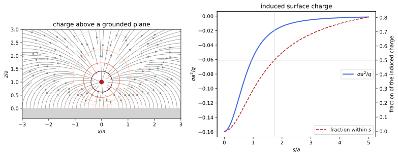
figures/ems_image_charge.sage.
The definition states what equilibrium means for a conductor and lists its consequences. They follow from \mathbf E = 0 inside together with Gauss’s law and the curl equation of Theorem 1.
Definition 3 (Conductor) A conductor is a closed region of space in which charge moves freely; it is in electrostatic equilibrium when \mathbf E = 0 in its interior. Then \rho = \nabla\cdot\mathbf E = 0 inside, any net charge resides on the surface with a surface density \sigma, the potential takes a constant value \phi_C on the whole conductor (its potential), and just outside the surface the field is normal to it, \mathbf E = \sigma\hat{\mathbf n} with \hat{\mathbf n} the outward normal (Example 16; \sigma/\varepsilon_0 in SI units). A conductor is grounded when it is held at \phi_C = 0 and isolated when its total charge is fixed; in either case the potential outside is determined by Proposition 1, with condition (D) or (C) on its surface (Maggiore 2023, sec. 4.1.6).
Veriphy. Pending.
Lean. Pending.
Sage. Pending.
A single conducting sphere spreads its charge uniformly over its surface, because nothing breaks the symmetry. Its potential is that of a point charge at the centre.
Example 41 (A charged conducting sphere) An isolated conducting sphere of radius R with charge Q has \sigma = Q/4\pi R^2, the field Q\hat{\mathbf n}/4\pi r^2 outside and 0 inside, and the potential \phi_C = Q/4\pi R; the field just outside is \sigma, as Definition 3 requires (Example 12).
A charge inside a hollow conductor induces an opposite charge on the inner wall. The outer surface then carries the remaining charge, distributed as if the cavity were not there.
Example 42 (A charge inside a conducting shell) Place q anywhere in the cavity of a neutral, isolated spherical shell with radii R_1 < R_2. A Gaussian surface inside the metal has zero flux, so the inner wall carries -q, distributed unevenly; the outer wall carries +q, and since the field outside must solve Laplace’s equation with the outer surface at constant potential, it is uniform there, and the field outside is q\hat{\mathbf n}/4\pi r^2 whatever the position of the charge (Macchi et al. 2023, Problem 2.9).
The image solution of Example 32 describes a grounded metal plane. The induced charge is the jump of the field across the plane, and its total is -q.
Example 43 (A charge in front of a conducting plane) For q at height a above the grounded plane z = 0, the potential in z > 0 is that of q and an image -q at -a, and \phi = 0 in z < 0. The field on the plane is E_z = -\frac{2qa}{4\pi(s^2 + a^2)^{3/2}}, so \sigma = -\frac{qa}{2\pi(s^2 + a^2)^{3/2}}, whose integral over the plane is -q (Figure 3) (Macchi et al. 2023, Problems 2.3, 2.16).
The charge is attracted by the plane. The force equals that of the image, because the field near the charge is that of the image charge.
Example 44 (The image force) The force on q is the force due to the induced charge, which in z > 0 has the field of the image: \mathbf F = -\frac{q^2}{4\pi(2a)^2}\mathbf e_z. The work needed to pull the charge from a to infinity is \int_a^\infty\frac{q^2dz}{16\pi z^2} = \frac{q^2}{16\pi a}, half of the energy q^2/8\pi a of a real pair at distance 2a, because the image moves with the charge (Macchi et al. 2023, Problem 2.2).
A grounded sphere also admits a single image. Its position and charge follow from the circles of Apollonius of Example 26, now in three dimensions.
Example 45 (A charge in front of a grounded sphere) For q at distance d > R from the centre of a grounded sphere of radius R, the image q' = -qR/d at distance R^2/d from the centre on the same line makes \phi = 0 on the sphere: for a point of the sphere at angle \gamma from the line, |\mathbf x - \mathbf d|^2 = R^2 + d^2 - 2Rd\cos\gamma and |\mathbf x - \mathbf d'|^2 = \frac{R^2}{d^2}|\mathbf x - \mathbf d|^2. The induced charge is q' (Macchi et al. 2023, Problem 2.4; Pierrus 2018, Question 3.23).
An isolated neutral sphere must carry zero total charge, which the grounded solution violates. A second image at the centre restores neutrality and keeps the surface at a constant potential.
Example 46 (An isolated neutral sphere) Add to the grounded solution a charge -q' = qR/d at the centre. The potential on the sphere becomes the constant qR/(4\pi dR) = q/4\pi d, the total induced charge is 0, and the solution is unique by condition (C) of Proposition 1. The force on q is still attractive but weaker, falling as d^{-5} at large distance (Macchi et al. 2023, Problem 2.4).
A conductor in a uniform field is the sphere of Example 35, now seen as a metal. The induced charge makes it a dipole.
Example 47 (A metal sphere in a uniform field) A neutral conducting sphere of radius R in a field E_0\mathbf e_z acquires \sigma = 3E_0\cos\theta and the dipole moment \mathbf p = 4\pi R^3E_0\mathbf e_z (Exercise 40), and the field at the poles is 3E_0. In SI units \sigma = 3\varepsilon_0E_0\cos\theta, and for E_0 = 10^3\,V/m the largest density is 2.7\times10^{-8}\,C/m^2, less than one electron per square micrometre (Macchi et al. 2023, Problems 2.1, 2.7).
A wire parallel to a conducting cylinder has an image line charge. The circles of Apollonius make the cylinder an equipotential.
Example 48 (A wire in front of a conducting cylinder) A line charge \lambda at distance d from the axis of a conducting cylinder of radius R < d is solved by an image -\lambda at distance R^2/d from the axis: by Example 26 the circle r = R is an equipotential of the pair, with s_2/s_1 = R/d on it, so in the outside region the potential is that of the two lines plus a constant (Macchi et al. 2023, Problem 2.10).
Two half-planes meeting at a right angle need three images. The images alternate in sign so that each face is at zero potential.
Example 49 (A charge in a right-angled corner) For grounded half-planes x = 0 and y = 0 and q at (a, b) in the quadrant x, y > 0, images -q at (-a, b) and (a, -b) and +q at (-a, -b) make both faces equipotentials at \phi = 0. Corners of angle \pi/n need 2n - 1 images; other angles admit no finite set (Macchi et al. 2023, Problem 2.2).
Charge on a conductor gathers where the surface curves most. Two spheres joined by a wire show the effect, which is why lightning rods are pointed.
Example 50 (Two connected spheres) Two conducting spheres of radii a and b, far apart and joined by a thin wire, are at the same potential, so Q_a/a = Q_b/b and the charges are proportional to the radii. The surface densities are \sigma \propto Q/r^2 \propto 1/r: the smaller sphere has the larger field at its surface, without bound as b \to 0 (Macchi et al. 2023, Problem 2.8).
The exercises start by integrating the induced charge on the plane. The first one does it with Sage. The radius that contains half of the charge measures how concentrated it is.
Exercise 41 (The total induced charge) With Sage, integrate the surface charge of Example 43 over the plane and over the disc of radius s, and find the radius inside which half of the induced charge lies (Macchi et al. 2023, Problem 2.16).
\int_0^s2\pi s'\sigma\,ds' = -q\bigl(1 - \frac{a}{\sqrt{s^2 + a^2}}\bigr), which tends to -q; half is reached at s = \sqrt3a:
q, a, s, t = var('q a s t', domain='positive')
sigma = -q * a / (2 * pi * (t^2 + a^2)^(3/2))
Qs = integrate(2 * pi * t * sigma, t, 0, s).simplify_full()
print("charge within radius s:", Qs)
print("total:", limit(Qs, s=oo))
print("half of the charge within s =", solve(Qs == -q / 2, s))Output:
charge within radius s: (a*q - sqrt(a^2 + s^2)*q)/sqrt(a^2 + s^2)
total: -q
half of the charge within s = [
s == sqrt(3)*a
]Veriphy. Pending.
Lean. Pending.
Sage. Pending.
The total induced charge can also be found without any integral. The second exercise uses Gauss’s law. Only the behaviour of the field far away is needed.
Exercise 42 (The induced charge from Gauss’s law) Show with Gauss’s law alone that the total charge induced on the grounded plane of Example 43 is -q. Hint: use a large hemisphere in z > 0 closed by the plane, and the decay of the field at infinity.
Take the closed surface made of a large hemisphere of radius \Lambda in z \geq 0 and the disc it cuts from a plane z = 0^- just inside the metal. The field is zero on the disc and of order \Lambda^{-3} (a dipole) on the hemisphere, so the flux tends to 0. Hence the enclosed charge, q plus the induced charge, is 0.
Veriphy. Pending.
Lean. Pending.
Sage. Pending.
The image construction for the sphere can be checked numerically at many points of the surface. The third exercise does it with Sage.
Exercise 43 (The sphere’s image, checked) With Sage, check symbolically that \frac{q}{|\mathbf x - \mathbf d|} - \frac{qR/d}{|\mathbf x - (R^2/d^2)\mathbf d|} vanishes for |\mathbf x| = R, and compute the induced surface charge and its total.
On the sphere the ratio of the two distances is R/d, so the two terms cancel. The surface charge is \sigma = -\frac{q(d^2 - R^2)}{4\pi R(R^2 + d^2 - 2Rd\cos\gamma)^{3/2}}, and its total is -qR/d:
q, R, d, g = var('q R d gamma'); assume(R > 0, d > R)
r1sq = R^2 + d^2 - 2 * R * d * cos(g); r2sq = R^2 + (R^2 / d)^2 - 2 * R * (R^2 / d) * cos(g)
print("on the sphere |x - d'|^2 = (R/d)^2 |x - d|^2:", bool((r2sq - (R / d)^2 * r1sq).simplify_full() == 0), "-> q/|x-d| - (qR/d)/|x-d'| = 0")
r, th = var('r th'); assume(r > 0)
phi = q / (4 * pi * sqrt(r^2 + d^2 - 2 * r * d * cos(th))) - q * R / d / (4 * pi * sqrt(r^2 + R^4 / d^2 - 2 * r * R^2 / d * cos(th)))
sigma = (-diff(phi, r)).subs(r=R)
sigma_expected = -q * (d^2 - R^2) / (4 * pi * R * (R^2 + d^2 - 2 * R * d * cos(th))^(3/2))
vals = {q: 1, R: 1, d: 2}
print("sigma - expected at five angles (R = 1, d = 2):", [((sigma - sigma_expected).subs(vals).subs(th=tt)).n(digits=6) for tt in [0, 0.5, 1.2, 2.0, pi]])
tot = numerical_integral((2 * pi * R^2 * sigma_expected * sin(th)).subs(vals), 0, pi)[0]
print("total induced charge for R = 1, d = 2: %.10f (expected -qR/d = -0.5)" % tot)Output:
on the sphere |x - d'|^2 = (R/d)^2 |x - d|^2: True -> q/|x-d| - (qR/d)/|x-d'| = 0
sigma - expected at five angles (R = 1, d = 2): [0.000000, 0.000000, -4.41744e-18, -2.20872e-18, 0.000000]
total induced charge for R = 1, d = 2: -0.5000000000 (expected -qR/d = -0.5)Veriphy. Pending.
Lean. Pending.
Sage. Pending.
The force between a charge and a sphere follows from the image. The fourth exercise computes it for both kinds of sphere with Sage.
Exercise 44 (Force between a charge and a sphere) With Sage, find the force on q at distance d from a grounded sphere of radius R, and from an isolated neutral one, and their leading behaviour for d \gg R (Macchi et al. 2023, Problem 2.4).
Grounded: F = -\frac{q^2Rd}{4\pi(d^2 - R^2)^2}, which for d \gg R is -\frac{q^2R}{4\pi d^3}. Isolated: add the repulsion \frac{q^2R/d}{4\pi d^2} of the central image; the leading terms cancel and F \approx -\frac{q^2R^3}{2\pi d^5}, the force on a charge from the dipole it induces:
q, R, d, u = var('q R d u', domain='positive')
F_g = -q * (q * R / d) / (4 * pi * (d - R^2 / d)^2)
print("grounded:", F_g.simplify_full(), "; leading term:", (F_g.subs(d=R / u).simplify_full().taylor(u, 0, 3)))
F_i = F_g + q * (q * R / d) / (4 * pi * d^2)
print("isolated: leading term in u = R/d:", F_i.subs(d=R / u).simplify_full().taylor(u, 0, 5), "(times 1/R^2)")Output:
grounded: -1/4*R*d*q^2/(pi*R^4 - 2*pi*R^2*d^2 + pi*d^4) ; leading term: -1/4*q^2*u^3/(pi*R^2)
isolated: leading term in u = R/d: -1/2*q^2*u^5/(pi*R^2) (times 1/R^2)Veriphy. Pending.
Lean. Pending.
Sage. Pending.
In the right-angled corner the force has two components. The fifth exercise computes them with Sage. The work to bring the charge in is then a line integral.
Exercise 45 (Force in a corner) For the corner of Example 49, find with Sage the force on q and the work needed to bring it from infinity along the diagonal to (a, a).
The three images give \mathbf F = \frac{q^2}{4\pi}\Bigl(-\frac{1}{4a^2} + \frac{2a}{(4a^2 + 4b^2)^{3/2}},\ -\frac{1}{4b^2} + \frac{2b}{(4a^2 + 4b^2)^{3/2}}\Bigr), toward the corner. On the diagonal, at (t, t), the component along the diagonal is -\frac{q^2(2\sqrt2 - 1)}{32\pi t^2}, and the work needed to bring the charge in from infinity is -\frac{q^2(4 - \sqrt2)}{32\pi a}, negative because the corner attracts it:
q, a, b, t = var('q a b t', domain='positive')
P = vector([a, b])
imgs = [(-q, vector([-a, b])), (-q, vector([a, -b])), (q, vector([-a, -b]))]
F = sum(qi * q * (P - Pi) / ((P - Pi).norm()^3 * 4 * pi) for qi, Pi in imgs)
print("F =", F.simplify_full())
Fd = (F.subs(a=t, b=t) * vector([1, 1]) / sqrt(2)).simplify_full()
print("component along the diagonal at (t, t):", Fd, "; equals -q^2 (2 sqrt2 - 1)/(32 pi t^2):", bool((Fd + q^2 * (2 * sqrt(2) - 1) / (32 * pi * t^2)).simplify_full() == 0))
W = integrate(Fd * sqrt(2), t, a, oo)
print("work to bring the charge from infinity to (a, a):", W.simplify_full())
Wim = (q / 2 * sum(qi / (4 * pi * (vector([a, a]) - Pi.subs(b=a)).norm()) for qi, Pi in imgs)).simplify_full()
print("half the charge times the images' potential:", Wim, "; equal:", bool((W - Wim).simplify_full() == 0))Output:
F = (1/16*(a^3*q^2 - (a^2 + b^2)^(3/2)*q^2)/((pi*a^4 + pi*a^2*b^2)*sqrt(a^2 + b^2)), 1/16*(b^3*q^2 - (a^2 + b^2)^(3/2)*q^2)/((pi*a^2*b^2 + pi*b^4)*sqrt(a^2 + b^2)))
component along the diagonal at (t, t): 1/64*sqrt(2)*q^2*(sqrt(2) - 4)/(pi*t^2) ; equals -q^2 (2 sqrt2 - 1)/(32 pi t^2): True
work to bring the charge from infinity to (a, a): 1/32*q^2*(sqrt(2) - 4)/(pi*a)
half the charge times the images' potential: 1/32*q^2*(sqrt(2) - 4)/(pi*a) ; equal: TrueVeriphy. Pending.
Lean. Pending.
Sage. Pending.
Two spheres joined by a wire share their charge. The sixth exercise works out the numbers of Example 50. Induction between the spheres is neglected.
Exercise 46 (Sharing charge between spheres) A total charge Q is placed on two connected spheres of radii a and b whose centres are at distance d \gg a, b. Neglecting induction, find the charges, the common potential, the capacitance Q/\phi and the ratio of the surface fields (Macchi et al. 2023, Problem 2.8).
Q_a = \frac{Qa}{a + b}, Q_b = \frac{Qb}{a + b}, \phi = \frac{Q}{4\pi(a + b)}, so Q/\phi = 4\pi(a + b), the sum of 4\pi a and 4\pi b, the ratios Q/\phi of the two spheres alone (Example 41). The surface fields Q_a/4\pi a^2 and Q_b/4\pi b^2 have ratio b/a.
Veriphy. Pending.
Lean. Pending.
Sage. Pending.
A charge inside a grounded shell has its image outside. The seventh exercise finds it and the force pulling the charge to the wall.
Exercise 47 (A charge inside a grounded shell) A charge q sits at distance d from the centre of a grounded spherical shell of inner radius R > d. Find the potential inside, the force on the charge, and the total charge on the inner wall (Macchi et al. 2023, Problem 2.9).
The construction of Example 45 with the roles exchanged gives an image -qR/d at distance R^2/d > R. The force is toward the nearest wall, F = \frac{q^2(R/d)}{4\pi(R^2/d - d)^2} = \frac{q^2Rd}{4\pi(R^2 - d^2)^2}, and the inner wall carries -q, by Gauss’s law on a surface inside the metal.
Veriphy. Pending.
Lean. Pending.
Sage. Pending.
The field just outside a conductor acts on the surface charge itself. The eighth exercise shows that the force per unit area is the average of the fields on the two sides times \sigma.
Exercise 48 (Electrostatic pressure) Show that the force per unit area on the surface charge of a conductor is \frac{\sigma^2}2\hat{\mathbf n} = \frac{|\mathbf E|^2}2\hat{\mathbf n}, outward whatever the sign of \sigma. Hint: the field acting on a small patch is produced by all the other charges, and the patch alone contributes \pm\sigma/2 on its two sides (Macchi et al. 2023, Problem 2.13).
Near the patch the field is \mathbf E_{\text{rest}} \pm\frac\sigma2\hat{\mathbf n} on the outer and inner sides, by Example 7. Inside it is 0 and outside \sigma\hat{\mathbf n}, so \mathbf E_{\text{rest}} = \frac\sigma2\hat{\mathbf n}, the average of the two sides. The force on the patch is \sigma\mathbf E_{\text{rest}}\,dS = \frac{\sigma^2}{2} \hat{\mathbf n}\,dS; for the charged sphere it is \frac{Q^2}{32\pi^2R^4} per unit area.
Veriphy. Pending.
Lean. Pending.
Sage. Pending.
Coulomb measured forces between charged metal spheres, not point charges. The ninth exercise computes the first correction due to induction with images, using Sage.
Exercise 49 (Coulomb’s experiment) Two conducting spheres of radius a with charges Q have centres at distance r \gg a. To first order in the images, each sphere carries Q at its centre, an image -Qa/r of the other centre at distance a^2/r from its centre toward the other sphere, and +Qa/r at its centre. With Sage, find the force to order (a/r)^3 relative to Coulomb’s law (Macchi et al. 2023, Problem 2.6).
Summing the forces between the three charges of each sphere and expanding in a/r, the force is \frac{Q^2}{4\pi r^2}\bigl(1 - 4(a/r)^3 + O((a/r)^4)\bigr): induction pushes the like charges to the far sides and the attraction of the images weakens the repulsion:
Q, r, a, e = var('Q r a e', domain='positive')
# sphere 1 at 0, sphere 2 at r; e = a/r
s1 = [(Q * (1 + e), 0), (-Q * e, e^2 * r)]
s2 = [(Q * (1 + e), r), (-Q * e, r - e^2 * r)]
F = sum(qi * qj / (4 * pi * (xj - xi)^2) for qi, xi in s1 for qj, xj in s2)
ser = (F * 4 * pi * r^2 / Q^2).simplify_full().taylor(e, 0, 4)
print("F/(Q^2/(4 pi r^2)) =", ser)Output:
F/(Q^2/(4 pi r^2)) = -4*e^3 + 1Veriphy. Pending.
Lean. Pending.
Sage. Pending.
The last exercise of the run proves the shielding properties stated in the definition. It combines Gauss’s law with the uniqueness proposition.
Exercise 50 (Shielding by a conductor) Prove that (a) the charge on the inner wall of a cavity in a conductor equals minus the charge in the cavity, and (b) the field in the cavity does not depend on charges outside the conductor.
- A closed surface inside the metal surrounding the cavity has \mathbf E = 0 on it, so it encloses zero charge. (b) In the cavity \phi solves Poisson’s equation with the charges of the cavity and equals the conductor’s constant \phi_C on the wall. Outside charges change only \phi_C, which adds a constant to \phi by Proposition 1, so the field is unchanged.
Veriphy. Pending.
Lean. Pending.
Sage. Pending.
The charge on an isolated conductor and its potential are proportional, because the equations are linear. The ratio depends only on the geometry, and for several conductors it becomes a matrix.
Definition 4 (Capacitance) For conductors 1, \dots, N with charges Q_a and potentials \phi_a (zero at infinity), the potentials are linear in the charges, \phi_a = \sum_bP_{ab}Q_b, with coefficients of potential P_{ab} that depend only on the geometry; the inverse matrix gives Q_a = \sum_bC_{ab}\phi_b, the capacitance coefficients. The capacitance of a single conductor is C = Q/\phi, and that of a capacitor, two conductors with charges \pm Q, is C = Q/(\phi_1 - \phi_2). In Heaviside-Lorentz units a capacitance is a length; in SI units it is multiplied by \varepsilon_0 and measured in farads (Maggiore 2023, Problems 4.3, 4.4; Pierrus 2018, Questions 3.11-3.12).
Veriphy. Pending.
Lean. Pending.
Sage. Pending.
The simplest capacitance is that of an isolated sphere. It is proportional to the radius, as dimensional analysis requires. It is the capacitor whose second plate is at infinity.
Example 51 (An isolated sphere) By Example 41, C = Q/\phi_C = 4\pi R, in SI units 4\pi\varepsilon_0R. A sphere of radius 1\,cm has 1.1\,pF, and the Earth, with R = 6.37\times10^6\,m, has 0.71\,mF.
Two parallel plates close together store charge with a uniform field between them. The capacitance grows with the area and decreases with the gap.
Example 52 (The parallel-plate capacitor) Plates of area A at distance d \ll \sqrt A with charges \pm Q have, neglecting the edges, \sigma = \pm Q/A and the field E = Q/A between them (Example 7), so \phi_1 - \phi_2 = Qd/A and C = A/d, in SI units \varepsilon_0A/d (Maggiore 2023, Problem 4.3).
Concentric spheres form a capacitor whose field is that of a point charge between them. The capacitance interpolates between the isolated sphere and the parallel plates.
Example 53 (The spherical capacitor) Spheres of radii a < b with \pm Q have E = Q/4\pi r^2 between them, so \phi_a - \phi_b = \frac{Q}{4\pi}(\frac1a - \frac1b) and C = \frac{4\pi ab}{b - a}. For b \to \infty it is the sphere’s 4\pi a, and for b - a = d \ll a it is 4\pi a^2/d, the plate formula with A = 4\pi a^2 (Maggiore 2023, Problem 4.4).
The coaxial cable is a cylindrical capacitor. Its capacitance per unit length depends on the radii only through their ratio.
Example 54 (The cylindrical capacitor) By Exercise 15, coaxial cylinders with \pm\lambda per unit length have \Delta\phi = \frac\lambda{2\pi}\ln\frac ba, so the capacitance per unit length is \frac{2\pi}{\ln(b/a)}, in SI units \frac{2\pi\varepsilon_0}{\ln(b/a)}. A cable with b/a = 3.5 has 44\,pF/m.
Capacitors combine like resistors in reverse. Parallel connection adds capacitances and series connection adds their inverses. Both rules follow from the definition and charge conservation.
Example 55 (Capacitors in parallel and in series) Two capacitors joined plate to plate (in parallel) have the same voltage V and charges C_1V and C_2V, so C = C_1 + C_2. Joined in a chain (in series), the inner plates exchange charge so both carry \pm Q, and the voltages add, V = Q/C_1 + Q/C_2, so 1/C = 1/C_1 + 1/C_2.
Two distant spheres have a coefficient matrix that is nearly diagonal. The off-diagonal terms are the potentials each produces at the other.
Example 56 (Coefficients of two distant spheres) For spheres of radii r_1, r_2 at distance d \gg r_1, r_2, to leading order each sphere’s charge sits at its centre and \phi_1 = \frac{Q_1}{4\pi r_1} + \frac{Q_2}{4\pi d}, \phi_2 = \frac{Q_1}{4\pi d} + \frac{Q_2}{4\pi r_2}. So P_{11} = 1/4\pi r_1, P_{22} = 1/4\pi r_2, P_{12} = P_{21} = 1/4\pi d (Pierrus 2018, Question 3.13).
For concentric shells the coefficients of potential are exact. The outer shells see the inner charges as point charges at the centre.
Example 57 (Coefficients of two concentric shells) For thin shells of radii r_1 < r_2, the potential of shell a is \frac1{4\pi}\sum_b\frac{Q_b}{\max(r_a, r_b)}, so P_{11} = 1/4\pi r_1, P_{12} = P_{21} = P_{22} = 1/4\pi r_2. The capacitor with Q_1 = -Q_2 = Q has \phi_1 - \phi_2 = (P_{11} - P_{21})Q, which is the spherical capacitor of Example 53.
The matrices P and C are symmetric, a fact that is not obvious from the geometry. It follows from Green’s reciprocity.
Example 58 (Reciprocity) For two charge densities, \int\rho_1\phi_2\,d^3x = \frac1{4\pi}\int\!\!\int\frac{\rho_1(\mathbf x)\rho_2(\mathbf x')}{|\mathbf x - \mathbf x'|} = \int\rho_2\phi_1\,d^3x. Applied to conductor a alone charged with Q_a = 1 and conductor b alone charged with Q_b = 1, it gives P_{ba} = P_{ab}: the potential of b when a carries a unit charge equals that of a when b carries it (Maggiore 2023, Problem 5.2).
Laplace’s equation has no length scale. The example shows the consequence for capacitance. The capacitance of a conductor is therefore proportional to its size.
Example 59 (Capacitance scales with size) If every length of a system of conductors is multiplied by \lambda, the potential \phi(\mathbf x/\lambda) with charges \lambda Q_a solves the new problem with the same boundary potentials, because Equation 3 is homogeneous of degree -1 in lengths. So C_{ab} \mapsto \lambda C_{ab}: capacitance is a length times 4\pi (times \varepsilon_0), as all the examples show.
Two parallel wires form the transmission line of old telephone and television cables. Their capacitance follows from the potential of two line charges, and it decreases only logarithmically with the distance.
Example 60 (A two-wire line) Two parallel wires of radius a at distance D \gg a carry \pm\lambda per unit length. By Example 26 the potential difference between their surfaces is \frac\lambda{2\pi}\cdot2\ln\frac{D - a}{a} \approx \frac\lambda\pi\ln\frac Da, so the capacitance per unit length is \frac{\pi}{\ln(D/a)}, in SI units \frac{\pi\varepsilon_0}{\ln(D/a)}: about 12\,pF/m for D/a = 10.
The exercises start with numbers for the capacitors of the examples. The first is a laboratory parallel-plate capacitor. The answer shows how small a farad is.
Exercise 51 (A laboratory capacitor) Plates of 1\,m^2 at 1\,mm in vacuum are connected to 100\,V. Find the capacitance, the charge and the field between the plates.
C = \varepsilon_0A/d = 8.85\,nF, Q = CV = 0.885\,\muC, and E = V/d = 10^5\,V/m, about 3\% of the field at which air breaks down.
Veriphy. Pending.
Lean. Pending.
Sage. Pending.
The spherical capacitor has two limits that recover earlier results. The second exercise asks for both. The exact formula has a simple geometric reading.
Exercise 52 (Limits of the spherical capacitor) Write C = \frac{4\pi ab}{b - a} for b = a + d as the plate formula of Example 52 plus a correction, and show that it is exactly the plate formula with the geometric mean of the two areas.
C = \frac{4\pi a(a + d)}{d} = \frac{4\pi a^2}d + 4\pi a exactly: the plate formula with the inner area, corrected by the capacitance 4\pi a of the inner sphere alone. Since 4\pi ab = \sqrt{4\pi a^2\cdot4\pi b^2}, C = A_g/d with A_g the geometric mean of the areas of the two spheres; the correction is small when d \ll a.
Veriphy. Pending.
Lean. Pending.
Sage. Pending.
Gauss’s law gives the cylindrical capacitance in one line. The third exercise asks for the computation and for numbers. The radii are those of a common laboratory cable.
Exercise 53 (A coaxial cable) A coaxial cable has inner radius 0.5\,mm and outer radius 1.75\,mm. With Sage, compute its capacitance per metre and the charge per metre at 50\,V.
2\pi\varepsilon_0/\ln3.5 = 44.4\,pF/m and \lambda = 2.2\,nC/m:
eps0 = 8.854e-12; a = 0.5e-3; b = 1.75e-3; V = 50
C = 2 * pi.n() * eps0 / log(b / a)
print("C = %.2f pF/m, lambda = C V = %.2f nC/m" % (C * 1e12, C * V * 1e9))Output:
C = 44.41 pF/m, lambda = C V = 2.22 nC/mVeriphy. Pending.
Lean. Pending.
Sage. Pending.
Two cylinders that are parallel but not coaxial form a capacitor solved by the Apollonius circles. The fourth exercise checks the closed formula with Sage.
Exercise 54 (A non-coaxial cylindrical capacitor) Cylinders of radii R_1 < R_2 with parallel axes at distance c < R_2 - R_1, one inside the other, form a capacitor. Using two line charges \pm\lambda whose Apollonius circles are the two cross-sections, show that the capacitance per unit length is \frac{2\pi}{\operatorname{arccosh}\frac{R_1^2 + R_2^2 - c^2}{2R_1R_2}}, and check with Sage that it tends to the coaxial value as c \to 0 (Macchi et al. 2023, Problem 2.15).
A circle of radius R around (x_0, 0) is the level K of Example 26 with R = 2aK/|K^2 - 1|; for two circles of the same pair, \Delta\phi = \frac\lambda{2\pi}\ln\frac{K_1}{K_2} and eliminating a and the centres gives \ln\frac{K_1}{K_2} = \operatorname{arccosh}\frac{R_1^2 + R_2^2 - c^2}{2R_1R_2}. For c = 0 the argument is \frac12(\frac{R_2}{R_1} + \frac{R_1}{R_2}) and \operatorname{arccosh} of it is \ln\frac{R_2}{R_1}:
from scipy.optimize import fsolve
def cap_from_lines(R1, R2, c):
f = lambda v: [2 * v[0] * v[1] / (v[1]**2 - 1) - R1, 2 * v[0] * v[2] / (v[2]**2 - 1) - R2,
v[0] * (v[2]**2 + 1) / (v[2]**2 - 1) - v[0] * (v[1]**2 + 1) / (v[1]**2 - 1) - c]
A, K1, K2 = fsolve(f, [1.0, 3.0, 1.5])
return 2 * pi.n() / log(K1 / K2)
for (R1, R2, c) in [(1.0, 2.0, 0.3), (1.0, 3.0, 1.5), (0.5, 2.0, 1.0)]:
print("R1 = %s, R2 = %s, c = %s: from the lines %.6f, closed formula %.6f" % (R1, R2, c, cap_from_lines(R1, R2, c), 2 * pi.n() / arccosh((R1^2 + R2^2 - c^2) / (2 * R1 * R2)).n()))
print("c = 0, R1 = 1, R2 = 3: arccosh(10/6) - log(3) =", (arccosh(10 / 6) - log(3)).n())Output:
R1 = 1.00000000000000, R2 = 2.00000000000000, c = 0.300000000000000: from the lines 9.486026, closed formula 9.486026
R1 = 1.00000000000000, R2 = 3.00000000000000, c = 1.50000000000000: from the lines 8.418879, closed formula 8.418879
R1 = 0.500000000000000, R2 = 2.00000000000000, c = 1.00000000000000: from the lines 5.890123, closed formula 5.890123
c = 0, R1 = 1, R2 = 3: arccosh(10/6) - log(3) = 0.000000000000000Veriphy. Pending.
Lean. Pending.
Sage. Pending.
Three concentric shells give a three by three capacitance matrix. The fifth exercise computes it with Sage and checks its sign pattern.
Exercise 55 (Three concentric shells) For thin shells of radii 1, 2, 3, write P_{ab} as in Example 57, invert it with Sage, and check that C is symmetric with C_{aa} > 0 and C_{ab} \leq 0 for a \neq b (Pierrus 2018, Question 3.12).
P = \frac1{4\pi}\begin{pmatrix}1 & 1/2 & 1/3\\ 1/2 & 1/2 & 1/3\\ 1/3 & 1/3 & 1/3\end{pmatrix} and its inverse is tridiagonal: shells that are not neighbours do not couple, because the middle shell screens them:
r = [1, 2, 3]
P = matrix(QQ, 3, 3, lambda i, j: 1 / max(r[i], r[j])) / (4 * pi)
C = P.inverse().simplify_full()
print("4 pi P =", (4 * pi * P).simplify_full())
print("C/(4 pi) =", (C / (4 * pi)).simplify_full())
print("symmetric:", C == C.transpose(), "; diagonal positive, off-diagonal <= 0:", all(C[i, i] > 0 for i in range(3)) and all(C[i, j] <= 0 for i in range(3) for j in range(3) if i != j))Output:
4 pi P = [ 1 1/2 1/3]
[1/2 1/2 1/3]
[1/3 1/3 1/3]
C/(4 pi) = [ 2 -2 0]
[-2 8 -6]
[ 0 -6 9]
symmetric: True ; diagonal positive, off-diagonal <= 0: TrueVeriphy. Pending.
Lean. Pending.
Sage. Pending.
Two distant spheres form a capacitor when they carry opposite charges. The sixth exercise finds its capacitance from Example 56. The two spheres act as two capacitors in series, corrected by their mutual influence.
Exercise 56 (Two spheres as a capacitor) Show that two distant spheres with \pm Q have capacitance C \approx 4\pi\big/\bigl(\frac1{r_1} + \frac1{r_2} - \frac2d\bigr), and evaluate it for r_1 = r_2 = 1\,cm, d = 10\,cm (Pierrus 2018, Question 3.13).
\phi_1 - \phi_2 = (P_{11} - P_{12} - P_{21} + P_{22})Q = \frac{Q}{4\pi}(\frac1{r_1} + \frac1{r_2} - \frac2d). With the numbers, C = 4\pi\varepsilon_0/(180\,\mathrm m^{-1}) = 0.62\,pF, a little more than half of one sphere’s 1.1\,pF.
Veriphy. Pending.
Lean. Pending.
Sage. Pending.
The equipotentials of a charged segment are ellipsoids, so the segment solves the problem of a conducting ellipsoid. The seventh exercise finds the capacitance with Sage.
Exercise 57 (A conducting ellipsoid) Using Exercise 22, show that a prolate conducting ellipsoid with semi-axes a > b has capacitance C = \frac{8\pi\sqrt{a^2 - b^2}}{\ln\frac{a + \sqrt{a^2 - b^2}}{a - \sqrt{a^2 - b^2}}}, check with Sage that C \to 4\pi a as b \to a, and estimate the capacitance of a wire of length h and radius b \ll h (Macchi et al. 2023, Problem 2.14).
The segment with foci at \pm c, c = \sqrt{a^2 - b^2}, and total charge Q = 2c\lambda has on the ellipsoid r_1 + r_2 = 2a the potential \frac{Q}{8\pi c}\ln\frac{a + c}{a - c}, which gives C. As c \to 0 the logarithm is 2c/a and C \to 4\pi a. For a thin wire, a = h/2 and a - c \approx b^2/h, so C \approx \frac{2\pi h}{\ln(h/b)}:
a, b, h = var('a b h', domain='positive')
c = sqrt(a^2 - b^2)
C = 8 * pi * c / log((a + c) / (a - c))
print("limit b -> a:", limit(C, b=a))
for (hv, bv) in [(1.0, 0.01), (1.0, 0.001)]:
exact = C.subs(a=hv / 2, b=bv).n()
print("wire h = %s, b = %s: ellipsoid %.5f, 2 pi h/log(h/b) = %.5f" % (hv, bv, exact, (2 * pi * hv / log(hv / bv)).n()))Output:
limit b -> a: 4*pi*a
wire h = 1.00000000000000, b = 0.0100000000000000: ellipsoid 1.36413, 2 pi h/log(h/b) = 1.36438
wire h = 1.00000000000000, b = 0.00100000000000000: ellipsoid 0.90958, 2 pi h/log(h/b) = 0.90958Veriphy. Pending.
Lean. Pending.
Sage. Pending.
Green’s reciprocity theorem of Example 58 deserves a careful statement for conductors. The eighth exercise proves it. The proof uses that each conductor is an equipotential.
Exercise 58 (Symmetry of the coefficients) Prove that P_{ab} = P_{ba} by applying \int\rho_1\phi_2 = \int\rho_2\phi_1 to the two states (1): Q_a = 1, other charges 0; (2): Q_b = 1, other charges 0. Deduce that C_{ab} = C_{ba}.
In state 1 the charge sits on the conductors’ surfaces, where state 2’s potential is constant, so \int\rho_1\phi_2 = \sum_cQ_c^{(1)}\phi_c^{(2)} = \phi_a^{(2)} = P_{ab}; likewise \int\rho_2\phi_1 = \phi_b^{(1)} = P_{ba}. So P is symmetric and so is its inverse C.
Veriphy. Pending.
Lean. Pending.
Sage. Pending.
The capacitance coefficients have definite signs. The ninth exercise derives them from the maximum principle. The diagonal coefficients are positive and the others negative.
Exercise 59 (Signs of the capacitance coefficients) Hold conductor a at \phi_a = 1 and all others at 0. Using the maximum principle, show that 0 \leq \phi \leq 1 in the space between the conductors, and deduce C_{aa} > 0 and C_{ba} \leq 0 for b \neq a.
\phi is harmonic outside the conductors, tends to 0 at infinity and takes the values 0 or 1 on the conductors, so it lies between 0 and 1. Near conductor a it decreases outward, so \partial_n\phi \leq 0 and Q_a = -\oint\partial_n\phi\,dS = C_{aa} > 0 (it is not zero, since \phi is not constant). Near conductor b it increases outward from 0, so Q_b = C_{ba} \leq 0.
Veriphy. Pending.
Lean. Pending.
Sage. Pending.
The Earth and the ionosphere form a large spherical capacitor. The last exercise evaluates it with Sage and compares it with the Earth alone.
Exercise 60 (The Earth and the ionosphere) Treat the Earth (R = 6371\,km) and the conducting ionosphere at height h = 60\,km as a spherical capacitor. With Sage, compute its capacitance, compare with the plate approximation, and find the charge for the observed potential difference of about 300\,kV.
C = 4\pi\varepsilon_0\frac{R(R + h)}{h} = 0.076\,F, a hundred times the Earth’s 0.71\,mF, and Q = CV \approx 2.3\times 10^4\,C:
eps0 = 8.854e-12; R = 6.371e6; h = 6e4; V = 3e5
C = 4 * pi.n() * eps0 * R * (R + h) / h
Cp = eps0 * 4 * pi.n() * R^2 / h
print("C = %.4f F, plate approximation %.4f F, isolated Earth %.3e F" % (C, Cp, 4 * pi.n() * eps0 * R))
print("charge at 300 kV: %.2e C" % (C * V))Output:
C = 0.0760 F, plate approximation 0.0753 F, isolated Earth 7.089e-04 F
charge at 300 kV: 2.28e+04 CVeriphy. Pending.
Lean. Pending.
Sage. Pending.
Steady currents and the magnetic field
Charges in steady motion produce a second field, which acts only on moving charges. Two parallel wires carrying currents in the same direction attract each other although both are electrically neutral, and the law of that force, found by Biot, Savart and Ampère, plays for currents the role that Coulomb’s law plays for charges.
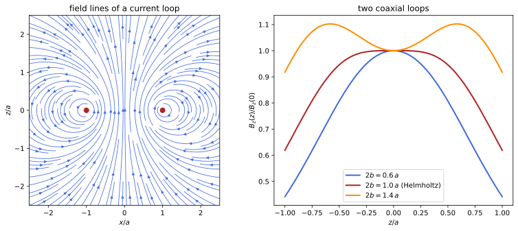
figures/ems_current_loop.sage.
The definition introduces the current density, the field it produces and the force that the field exerts. The condition \nabla\cdot\mathbf J = 0 expresses that the current is steady: no charge accumulates anywhere.
Definition 5 (Magnetic field) A steady current density is a vector field \mathbf J(\mathbf x), vanishing outside a bounded set, with \nabla \cdot\mathbf J = 0; the current through a surface S is I = \int_S\mathbf J\cdot d\mathbf S, and for a thin wire \mathbf J\,d^3x' = I\,d\boldsymbol\ell'. Its magnetic field is given by the Biot-Savart law \mathbf B(\mathbf x) = \frac1{4\pi}\int\mathbf J(\mathbf x')\times\frac{\mathbf x - \mathbf x'}{|\mathbf x - \mathbf x'|^3}\,d^3x' , \tag{4} or \frac{I}{4\pi}\oint d\boldsymbol\ell'\times\frac{\mathbf x - \mathbf x'}{|\mathbf x - \mathbf x'|^3} for a wire loop. A charge q moving with velocity \mathbf v in the fields \mathbf E and \mathbf B feels the Lorentz force \mathbf F = q(\mathbf E + \mathbf v\times\mathbf B), and a current distribution feels \int\mathbf J\times \mathbf B\,d^3x (I\oint d\boldsymbol\ell\times\mathbf B for a wire). In SI units the factor 1/4\pi is \mu_0/4\pi and \mathbf B is measured in tesla (Maggiore 2023, secs. 4.2.2–4.2.4).
Veriphy. Pending.
Lean. Pending.
Sage. Pending.
The field of a long straight wire is the magnetic analogue of the line charge. The Biot-Savart integral is the same integral as in Example 4, but the cross product turns the field around the wire.
Example 61 (A long straight wire) For a current I along the z axis, d\boldsymbol\ell'\times(\mathbf x - \mathbf x') = dz'\,s\,\hat{\boldsymbol\varphi} at a point at distance s, so \mathbf B = \frac{I}{4\pi}\int_{-\infty}^\infty\frac{s\,dz'}{(s^2 + z'^2)^{3/2}}\hat{\boldsymbol \varphi} = \frac{I}{2\pi s}\hat{\boldsymbol\varphi}: circles around the wire, oriented by the right-hand rule. In SI units \mu_0I/2\pi s, which for 1\,A at 1\,cm is 20\,\muT, comparable to the Earth’s field (Maggiore 2023, sec. 4.2.1).
On the axis of a circular loop the field has only an axial component. Each element of the loop is at the same distance, and the transverse parts cancel.
Example 62 (A circular loop on its axis) For a loop of radius a in the plane z = 0 with current I, each element contributes \frac{I\,d\ell}{4\pi(a^2 + z^2)} at right angles to the line joining it to the point, and the axial part of that is a fraction a/\sqrt{a^2 + z^2}. So B_z = \frac{Ia^2}{2(a^2 + z^2)^{3/2}}, with I/2a at the centre and Ia^2/2|z|^3 far away (Pierrus 2018, Question 4.8).
A finite straight segment is the building block of polygonal circuits. Its field depends on the angles under which its ends are seen.
Example 63 (A straight segment) For a segment on the z axis seen from a point at distance s under the angles \alpha_1 < \alpha_2 (measured from the perpendicular from the point to the line), substituting z' = s\tan\alpha in the integral of Example 61 gives B = \frac{I}{4\pi s}(\sin\alpha_2 - \sin\alpha_1), circling the line. For \alpha_{1, 2} \to \mp\pi/2 it is the infinite wire (Pierrus 2018, Question 4.8).
A regular polygon is a sum of such segments. As the number of sides grows it approaches the circle. The limit is a check on both formulas.
Example 64 (A polygonal loop) A regular n-gon inscribed in a circle of radius a has sides at distance a\cos(\pi/n) from the centre, each seen under \pm\pi/n, so Example 63 gives at the centre B = n\frac{I\cdot2\sin(\pi/n)}{4\pi a\cos(\pi/n)} = \frac{nI\tan(\pi/n)}{2\pi a}. As n \to \infty, n\tan(\pi/n) \to \pi and B \to I/2a, the circular loop of Example 62.
A solenoid is a stack of loops. On its axis the loops add to a field that is uniform deep inside and half as strong at the ends.
Example 65 (A finite solenoid on its axis) A solenoid of radius a from z = -L/2 to L/2 with n turns per unit length is a sum of loops with current nI\,dz', so B_z(z) = \int_{-L/2}^{L/2}\frac{nIa^2\,dz'}{2(a^2 + (z - z')^2)^{3/2}} = \frac{nI}2\Bigl(\frac{L/2 - z}{\sqrt{a^2 + (L/2 - z)^2}} + \frac{L/2 + z}{\sqrt{a^2 + (L/2 + z)^2}}\Bigr). For L \gg a it is nI in the middle and nI/2 at the ends (Maggiore 2023, Problem 4.6; Pierrus 2018, Question 4.9).
Two parallel currents exert forces on each other through their fields. The force per unit length was used until 2019 to define the ampere.
Example 66 (Force between parallel wires) A wire with current I_2 at distance d from a parallel wire with I_1 lies in the field \frac{I_1}{2\pi d}, and a length \ell of it feels I_2\ell\,\mathbf e_z\times\mathbf B_1, of magnitude \frac{I_1I_2\ell}{2\pi d}, attractive for currents in the same direction and repulsive otherwise. In SI units \mu_0I_1I_2/2\pi d = 2\times10^{-7}\,N/m for 1\,A at 1\,m (Maggiore 2023, sec. 4.2.3).
A charge moving in a uniform magnetic field goes round in a circle. The angular frequency does not depend on the speed, which is the principle of the cyclotron.
Example 67 (Motion in a uniform field) For \mathbf B = B\mathbf e_z and \mathbf E = 0, Newton’s law m\dot{\mathbf v} = q\mathbf v\times\mathbf B (Definition 1 of Classical mechanics) gives \dot v_x = \omega v_y, \dot v_y = -\omega v_x with \omega = qB/m: the velocity rotates uniformly, and the orbit in the plane is a circle of radius v_\perp/|\omega|. An electron in 1\,T has |\omega| = 1.76 \times10^{11}\,s^{-1}.
The magnetic part of the Lorentz force is perpendicular to the velocity. It changes the direction of motion but never the speed.
Example 68 (Magnetic forces do no work) The power delivered by the Lorentz force is \mathbf F\cdot\mathbf v = q\mathbf E\cdot\mathbf v + q(\mathbf v\times \mathbf B)\cdot\mathbf v = q\mathbf E\cdot\mathbf v. So the kinetic energy changes only through the electric field: in Example 67 |\mathbf v| is constant, and in a static electric field \frac12mv^2 + q\phi is conserved (Definition 2).
The component of the velocity along the field is unaffected. Together with the circular motion it gives a helix. The pitch is the distance advanced in one turn.
Example 69 (Helical motion) With v_\parallel along \mathbf B and v_\perp across it, the motion of Example 67 combines with uniform motion along \mathbf e_z: a helix of radius mv_\perp/|q|B and pitch 2\pi mv_\parallel/|q|B. Charged particles from the Sun spiral along the Earth’s field lines in this way toward the poles.
Crossed electric and magnetic fields make all charges drift in the same direction. The drift velocity is independent of charge and mass.
Example 70 (Drift in crossed fields) For uniform \mathbf E \perp \mathbf B with |\mathbf E| < |\mathbf B|, the velocity \mathbf v_d = \mathbf E\times \mathbf B/B^2 gives \mathbf E + \mathbf v_d\times\mathbf B = 0, so a charge moving with \mathbf v_d feels no force. Writing \mathbf v = \mathbf v_d + \mathbf u, the remainder obeys m\dot{\mathbf u} = q\mathbf u\times\mathbf B and circles as in Example 67: the motion is a circle carried along at \mathbf v_d (Macchi et al. 2023, Problem 5.6).
The exercises begin with the Biot-Savart law for straight pieces of wire. The first one adds the four sides of a square.
Exercise 61 (A square loop) Find the field at the centre of a square loop of side \ell carrying a current I.
Each side is at distance \ell/2 and seen under \pm\pi/4, so by Example 63 it contributes \frac{I}{4\pi(\ell/2)} \cdot2\sin\frac\pi4 = \frac{\sqrt2I}{2\pi\ell}, all four in the same direction: B = \frac{2\sqrt2I}{\pi\ell}, which is Example 64 with n = 4 and a = \ell/\sqrt2.
Veriphy. Pending.
Lean. Pending.
Sage. Pending.
The polygon formula approaches the circle slowly. The second exercise measures how slowly with Sage. The correction decreases as the inverse square of the number of sides.
Exercise 62 (From polygons to the circle) With Sage, expand \frac{n\tan(\pi/n)}{\pi} for large n, and find the smallest n for which the field at the centre of the n-gon exceeds the circle’s by less than 1\% (Macchi et al. 2023, Problem 5.13).
\frac{n}{\pi}\tan\frac\pi n = 1 + \frac{\pi^2}{3n^2} + O(n^{-4}), so the excess is about 3.3/n^2, below 1\% from n = 19:
n = var('n')
ratio = n * tan(pi / n) / pi
print("expansion for large n:", ratio.subs(n=1 / var('u')).taylor(var('u'), 0, 4))
first = min(k for k in range(3, 200) if (k * tan(pi / k) / pi).n() - 1 < 0.01)
print("smallest n with excess below 1%%: %d (excess %.5f; n - 1 gives %.5f)" % (first, (first * tan(pi / first) / pi).n() - 1, ((first - 1) * tan(pi / (first - 1)) / pi).n() - 1))Output:
expansion for large n: 2/15*pi^4*u^4 + 1/3*pi^2*u^2 + 1
smallest n with excess below 1%: 19 (excess 0.00921; n - 1 gives 0.01028)Veriphy. Pending.
Lean. Pending.
Sage. Pending.
Two coaxial loops at the right distance produce a very uniform field near their centre. The third exercise finds that distance with Sage.
Exercise 63 (Helmholtz coils) Two coaxial loops of radius a at z = \pm b carry the same current I. With Sage, show that the first and third derivatives of B_z on the axis vanish at the centre, find the b for which the second derivative vanishes too, and the field at the centre then (Macchi et al. 2023, Problem 5.14; Pierrus 2018, Question 4.16).
B_z is even in z, so the odd derivatives vanish at 0. The second derivative is proportional to 4b^2 - a^2, so b = a/2: the coils are one radius apart. Then B_z(0) = (4/5)^{3/2}I/a, and the first non-zero correction is of fourth order, which makes the field flat in Figure 4:
I, a, b, z = var('I a b z', domain='positive')
Bloop = lambda zz: I * a^2 / (2 * (a^2 + zz^2)^(3/2))
B = Bloop(z - b) + Bloop(z + b)
d = [diff(B, z, k).subs(z=0).simplify_full() for k in range(1, 5)]
print("first and third derivatives at 0:", d[0], d[2])
print("second derivative at 0:", d[1].factor())
print("b with vanishing second derivative:", solve(d[1] == 0, b))
print("B(0) at b = a/2:", B.subs(z=0, b=a / 2).simplify_full(), "= (4/5)^(3/2) I/a:", bool((B.subs(z=0, b=a / 2) - (4 / 5)^(3/2) * I / a).simplify_full() == 0))
print("fourth derivative at 0, b = a/2:", d[3].subs(b=a / 2).simplify_full())Output:
first and third derivatives at 0: 0 0
second derivative at 0: -3*I*(a + 2*b)*(a - 2*b)*a^2/(a^2 + b^2)^(7/2)
b with vanishing second derivative: [
b == 1/2*a,
b == -I*a,
b == I*a
]
B(0) at b = a/2: 8/25*sqrt(5)*I/a = (4/5)^(3/2) I/a: True
fourth derivative at 0, b = a/2: -27648/3125*sqrt(5)*I/a^5Veriphy. Pending.
Lean. Pending.
Sage. Pending.
With opposite currents the field at the centre vanishes and the gradient is uniform instead. The fourth exercise analyses this arrangement with Sage.
Exercise 64 (Opposite currents) The loops of Exercise 63 carry opposite currents. With Sage, compute \partial_zB_z at the centre, and find the b for which \partial_z^3B_z = 0, so that the gradient is as uniform as possible (Pierrus 2018, Question 4.17).
B_z is now odd, B_z(0) = 0 and \partial_zB_z(0) = \frac{3Ia^2b}{(a^2 + b^2)^{5/2}}. The third derivative vanishes for b = \frac{\sqrt3}2a, a separation of \sqrt3 radii; such a pair is used to trap neutral atoms with magnetic moments:
I, a, b, z = var('I a b z', domain='positive')
Bloop = lambda zz: I * a^2 / (2 * (a^2 + zz^2)^(3/2))
B = Bloop(z - b) - Bloop(z + b)
print("B(0) =", B.subs(z=0))
g = diff(B, z).subs(z=0).simplify_full()
print("dB/dz at 0 =", g, "; equals 3 I a^2 b/(a^2+b^2)^(5/2):", bool((g - 3 * I * a^2 * b / (a^2 + b^2)^(5/2)).simplify_full() == 0))
d3 = diff(B, z, 3).subs(z=0).simplify_full()
print("third derivative at 0:", d3.factor())
print("b with vanishing third derivative:", solve(d3 == 0, b))Output:
B(0) = 0
dB/dz at 0 = 3*I*a^2*b/((a^4 + 2*a^2*b^2 + b^4)*sqrt(a^2 + b^2)) ; equals 3 I a^2 b/(a^2+b^2)^(5/2): True
third derivative at 0: -15*(3*a^2 - 4*b^2)*I*a^2*b/(a^2 + b^2)^(9/2)
b with vanishing third derivative: [
b == 1/2*sqrt(3)*a,
b == -I*a,
b == I*a
]Veriphy. Pending.
Lean. Pending.
Sage. Pending.
A hairpin-shaped wire combines straight and curved pieces. The fifth exercise adds their fields at the centre of the bend.
Exercise 65 (A hairpin) A long wire runs from infinity along y = a, x \leq 0, turns around the semicircle of radius a about the origin in x \geq 0, and returns to infinity along y = -a, x \leq 0. Find \mathbf B at the origin.
Each straight half-line ends at the foot of the perpendicular from the origin, so by Example 63 it gives \frac{I}{4\pi a}; the semicircle gives half the loop’s field, \frac{I}{4a}. All three point the same way along \mathbf e_z, so B = \frac{I}{2\pi a} + \frac I{4a}.
Veriphy. Pending.
Lean. Pending.
Sage. Pending.
Cyclotrons accelerate protons on circles of increasing radius at fixed frequency. The sixth exercise computes the numbers with Sage. The magnetic field is that of a typical laboratory magnet.
Exercise 66 (A cyclotron) With Sage, compute the cyclotron frequency f = qB/2\pi m of a proton in 1.5\,T and the radius of its orbit at a kinetic energy of 10\,MeV. Is the non-relativistic treatment justified?
f = 22.9\,MHz, independent of the energy; at 10\,MeV, v = 4.4\times10^7\,m/s and r = mv/qB = 0.30\,m. Since v/c \approx 0.15, the relativistic increase of the mass, about 1\%, starts to matter, which is why cyclotrons are limited to energies of tens of MeV:
e, mp, c = 1.602e-19, 1.673e-27, 2.998e8
B = 1.5; K = 10e6 * e
f = e * B / (2 * pi.n() * mp); v = sqrt(2 * K / mp); r = mp * v / (e * B)
print("f = %.2f MHz, v = %.3e m/s (v/c = %.3f), r = %.3f m" % (f / 1e6, v, v / c, r))
print("relativistic gamma - 1 = K/(m c^2) = %.4f" % (K / (mp * c^2)))Output:
f = 22.86 MHz, v = 4.376e+07 m/s (v/c = 0.146), r = 0.305 m
relativistic gamma - 1 = K/(m c^2) = 0.0107Veriphy. Pending.
Lean. Pending.
Sage. Pending.
A charge released from rest in crossed fields moves on a cycloid. The seventh exercise solves the equations with Sage and applies the result to a magnetron-like diode.
Exercise 67 (Released in crossed fields) A charge q > 0 of mass m starts at rest at the origin in \mathbf E = E\mathbf e_y, \mathbf B = B\mathbf e_z. With Sage, solve the equations of motion and find the largest y reached. Electrons are emitted at rest from the negative plate of a plane diode with gap h and voltage V, with \mathbf B parallel to the plates: find the field B above which they never reach the positive plate (Macchi et al. 2023, Problem 5.6).
With \omega = qB/m, x = \frac{E}{B}(t - \frac{\sin\omega t}{\omega}) and y = \frac{E}{B\omega}(1 - \cos\omega t), a cycloid drifting at E/B; the largest y is \frac{2mE}{qB^2}. With E = V/h, the electrons stay below h when \frac{2mV}{ehB^2} < h, that is B > \sqrt{2mV/eh^2}:
t, q, m, E, B = var('t q m E B', domain='positive')
vx, vy = function('vx')(t), function('vy')(t)
w = q * B / m
# m vx' = q vy B, m vy' = q E - q vx B, from rest
sol = desolve_system([diff(vx, t) == w * vy, diff(vy, t) == q * E / m - w * vx], [vx, vy], ics=[0, 0, 0], ivar=t)
u = var('u')
xs = integrate(sol[0].rhs().subs(t=u), u, 0, t); ys = integrate(sol[1].rhs().subs(t=u), u, 0, t)
print("x(t) =", xs.simplify_full()); print("y(t) =", ys.simplify_full())
print("matches the cycloid:", bool((xs - E / B * (t - sin(w * t) / w)).simplify_full() == 0), bool((ys - E / (B * w) * (1 - cos(w * t))).simplify_full() == 0))
print("largest y:", (2 * E / (B * w)).simplify_full())
h, V = var('h V', domain='positive')
print("electrons stay below h for B >", solve(2 * m * (V / h) / (q * B^2) == h, B))Output:
x(t) = (B*E*q*t - E*m*sin(B*q*t/m))/(B^2*q)
y(t) = -(E*m*cos(B*q*t/m) - E*m)/(B^2*q)
matches the cycloid: True True
largest y: 2*E*m/(B^2*q)
electrons stay below h for B > [
B == sqrt(2)*sqrt(V*m/q)/h
]Veriphy. Pending.
Lean. Pending.
Sage. Pending.
Rowland showed in 1876 that moving charges produce a magnetic field, using a charged rotating disc. The eighth exercise computes the field at its centre.
Exercise 68 (A rotating charged disc) A disc of radius a with uniform surface charge \sigma rotates about its axis with angular velocity \omega. Find the field at the centre, and its value in SI units for \sigma = 2\times10^{-5}\,C/m^2, a = 10\,cm and \omega = 2\pi\times 100\,s^{-1} (Macchi et al. 2023, Problem 5.1).
The ring between s and s + ds carries the current \sigma\omega s\,ds and gives \frac{\sigma\omega s\,ds}{2s} at the centre (Example 62), so B = \frac{\sigma\omega a}2, \mu_0\sigma\omega a/2 in SI units. With the numbers this is 7.9\times10^{-10}\,T, five orders of magnitude below the Earth’s field, which is why the experiment was hard.
Veriphy. Pending.
Lean. Pending.
Sage. Pending.
In a wire the electrons move in the field of their own current, which pushes them toward the axis. The ninth exercise finds the electric field that stops them, and the charge it requires.
Exercise 69 (The pinch effect in a wire) A cylindrical wire of radius a has fixed ions and conduction electrons of density n drifting with velocity v\mathbf e_z, so \mathbf J = -nev\,\mathbf e_z. Find the magnetic force on an electron, the electric field that balances it, and the charge density this field needs. How large is the effect? (Macchi et al. 2023, Problem 5.2)
Ampère’s law (Example 71) gives \mathbf B = -\frac{nevs}2\hat{\boldsymbol\varphi} inside, and the force -e\mathbf v\times\mathbf B = -\frac{ne^2v^2s}{2}\hat{\mathbf s} points inward. Equilibrium needs \mathbf E = -\mathbf v \times\mathbf B = -\frac{nev^2s}2\hat{\mathbf s}, and Gauss’s law gives \rho = \frac1s\partial_s(sE_s) = -nev^2: a relative excess of electrons of v^2, that is v^2/c^2 in SI units, about 10^{-25} for drift velocities of 10^{-4}\,m/s.
Veriphy. Pending.
Lean. Pending.
Sage. Pending.
Newton’s third law holds for the forces between closed circuits, although not between isolated current elements. The last exercise proves it.
Exercise 70 (The third law for circuits) Show that the force of loop 1 on loop 2, \mathbf F_{12} = \frac{I_1I_2}{4\pi}\oint_2\oint_1d\boldsymbol\ell_2\times\Bigl( d\boldsymbol\ell_1\times\frac{\mathbf R}{R^3}\Bigr) with \mathbf R = \mathbf x_2 - \mathbf x_1, equals -\frac{I_1I_2}{4\pi} \oint\oint(d\boldsymbol\ell_1\cdot d\boldsymbol\ell_2)\frac{\mathbf R}{R^3}, and deduce \mathbf F_{21} = -\mathbf F_{12} (Pierrus 2018, Question 4.4).
d\boldsymbol\ell_2\times(d\boldsymbol\ell_1\times\mathbf R) = d\boldsymbol\ell_1(d\boldsymbol\ell_2\cdot\mathbf R) - \mathbf R(d\boldsymbol\ell_1\cdot d\boldsymbol\ell_2). In the first term, \oint_2d\boldsymbol\ell_2\cdot\frac{\mathbf R}{R^3} = -\oint_2d\boldsymbol\ell_2\cdot\nabla_2\frac1R = 0, the integral of a gradient around a closed loop. The remaining expression changes sign under 1 \leftrightarrow 2, since \mathbf R \mapsto -\mathbf R. For two elements alone the first term survives and the forces need not be opposite.
Veriphy. Pending.
Lean. Pending.
Sage. Pending.
The magnetic field has its own pair of differential equations. The divergence vanishes, because there are no magnetic charges, and the curl is the current density.
Theorem 2 (Ampère’s law) The field Equation 4 of a steady current density satisfies \nabla\cdot\mathbf B = 0, \qquad \nabla\times\mathbf B = \mathbf J \tag{5} wherever \mathbf J is continuously differentiable, and for every closed surface S and every closed curve C bounding a surface \Sigma, \oint_S\mathbf B\cdot d\mathbf S = 0 and \oint_C\mathbf B\cdot d\boldsymbol\ell = I_\Sigma = \int_\Sigma\mathbf J\cdot d\mathbf S, the current through any surface bounded by C. Proof. Let \mathbf A(\mathbf x) = \frac1{4\pi}\int\frac{\mathbf J(\mathbf x')}{|\mathbf x - \mathbf x'|}d^3x'. Since \nabla\times\frac{\mathbf J(\mathbf x')}{|\mathbf x - \mathbf x'|} = \nabla\frac1{|\mathbf x - \mathbf x'|}\times\mathbf J(\mathbf x') = \mathbf J(\mathbf x') \times\frac{\mathbf x - \mathbf x'}{|\mathbf x - \mathbf x'|^3}, \mathbf B = \nabla\times\mathbf A, so \nabla\cdot \mathbf B = 0. Next \nabla\times\mathbf B = \nabla(\nabla\cdot\mathbf A) - \nabla^2\mathbf A; by Proposition 9 of Differential equations \nabla^2\mathbf A = -\mathbf J, and \nabla\cdot\mathbf A = -\frac1{4\pi}\int\mathbf J(\mathbf x')\cdot\nabla'\frac{1}{|\mathbf x - \mathbf x'|}d^3x' = \frac1{4\pi}\int\frac{\nabla'\cdot\mathbf J}{|\mathbf x - \mathbf x'|}d^3x' = 0 after an integration by parts. The integral forms follow from Theorem 1 of Differential geometry, and \nabla\cdot\mathbf J = 0 makes I_\Sigma independent of \Sigma (Maggiore 2023, sec. 4.2.2; Pierrus 2018, Question 4.5).
Veriphy. Pending.
Lean. Pending.
Sage. Pending.
With symmetry, the integral form of Ampère’s law gives the field in one line, as Gauss’s law did for charges. The first example is a thick wire.
Example 71 (A thick wire) A cylinder of radius a carrying the current I uniformly has \mathbf B = B(s)\hat{\boldsymbol\varphi}, and the circle of radius s gives 2\pi sB = I\min(s^2/a^2, 1). So B = \frac{Is}{2\pi a^2} inside and \frac{I}{2\pi s} outside, which is Example 61 without the integral (Pierrus 2018, Question 4.7).
The long solenoid has a uniform field inside and none outside. A rectangular loop crossing the winding gives its value.
Example 72 (A long solenoid) For an infinite solenoid with n turns per unit length, symmetry gives \mathbf B = B(s)\mathbf e_z; a rectangle with both long sides outside shows B is constant outside, hence 0 (its value at infinity), and a rectangle with one side inside gives B\ell = nI\ell. So B = nI inside, in SI units \mu_0nI: 1.26\,mT for 1000 turns per metre and 1\,A, the limit of Example 65.
A toroidal coil confines the field completely. Its strength varies as the inverse distance from the axis. The field lines are circles inside the winding.
Example 73 (A toroidal coil) N turns wound on a torus around the z axis produce \mathbf B = B(s)\hat{\boldsymbol\varphi}, and a circle of radius s inside the torus links the current NI: B = \frac{NI}{2\pi s} inside and 0 outside, where the circle links no net current.
A surface current makes the tangential component of the field jump. The jump conditions are the magnetic counterpart of Example 16.
Example 74 (A current sheet) A surface current density \mathbf K (current per unit length) on a surface with unit normal \hat{\mathbf n} from side 1 to side 2 gives, by the integral forms on thin boxes and rectangles, \hat{\mathbf n}\cdot(\mathbf B_2 - \mathbf B_1) = 0 and \hat{\mathbf n}\times(\mathbf B_2 - \mathbf B_1) = \mathbf K. For \mathbf K = K\mathbf e_x on the plane z = 0, symmetry then gives \mathbf B = -\frac K2\operatorname{sign}(z)\,\mathbf e_y.
A coaxial cable carries equal and opposite currents. Ampère’s law shows that the field is confined between the conductors. This is the magnetic counterpart of Exercise 15.
Example 75 (A coaxial cable) With I in the inner conductor and -I in the outer one, a circle outside the cable links no current, so \mathbf B = 0 there, and between the conductors B = I/2\pi s. Cables do not radiate or pick up fields, for the same reason.
Superposition again solves a problem without full symmetry. A cylinder with an off-centre hole has a uniform field in the hole.
Example 76 (A wire with an off-centre hole) Inside a full cylinder with uniform \mathbf J = J\mathbf e_z, Example 71 reads \mathbf B = \frac J2\mathbf e_z\times(\mathbf x - \mathbf c_1), with \mathbf c_1 on the axis. A hole around \mathbf c_2 is a cylinder carrying -\mathbf J, so in the hole \mathbf B = \frac J2\mathbf e_z\times(\mathbf c_2 - \mathbf c_1), uniform and perpendicular to the line of centres (Macchi et al. 2023, Problem 5.7; Pierrus 2018, Question 4.12).
The vanishing divergence means that the field has no sources. Its lines never begin or end, in contrast with those of the electric field.
Example 77 (No magnetic charges) \oint_S\mathbf B\cdot d\mathbf S = 0 for every closed surface: no magnetic analogue of charge exists, and lines of \mathbf B close on themselves (Figure 4), go to infinity, or wind densely on a surface. The field of a loop, seen from far away, resembles the field of a pair of opposite charges, but inside the loop its lines continue instead of ending.
Symmetry arguments for the wire deserve care. The example states the argument that removes the radial and axial components. Uniqueness is what makes the symmetry argument a proof.
Example 78 (Why the wire’s field circles) For an infinite straight wire, \nabla\cdot\mathbf B = 0 on a coaxial cylinder gives 2\pi shB_s = 0, so B_s = 0; the curl equation outside gives \partial_sB_z = 0, so B_z is constant and vanishes if \mathbf B \to 0 far away. Only B_\varphi survives, and a reflection argument confirms it once the solution is known to be unique (Example 40) (Maggiore 2023, sec. 4.2.1).
Ampère’s law holds for every loop, even when it is not useful for computing. The last example checks it on the axis of a circular loop, with a path closing at infinity.
Example 79 (The line integral along the axis) The axis of the loop of Example 62, closed by a large semicircle at infinity where B = O(R^{-3}), links the current once, so \int_{-\infty}^\infty B_z\,dz = I. Indeed \int_{-\infty}^\infty\frac{Ia^2\,dz}{2(a^2 + z^2)^{3/2}} = \frac{Ia^2}2\cdot\frac2{a^2} = I.
A rotating charged cylinder is a solenoid made of moving charge instead of a winding. Ampère’s law gives its field as for Example 72, with the surface current fixed by the rotation.
Example 80 (A rotating charged cylinder) A long cylinder of radius R with surface charge \sigma rotating about its axis with angular velocity \omega carries the surface current K = \sigma\omega R around the axis. A rectangle crossing the surface gives \mathbf B = \sigma\omega R\, \mathbf e_z inside and 0 outside, the jump K of Example 74; the electric field, \sigma R/s outside and 0 inside, does not depend on \omega.
The exercises begin with a non-uniform current in a wire. The first one uses the integral form with a current that grows toward the surface.
Exercise 71 (A non-uniform wire) A wire of radius a carries the current I with density proportional to s. Find \mathbf B inside and outside.
J = \frac{3Is}{2\pi a^3} (so that \int_0^a2\pi sJ\,ds = I), the current inside radius s is Is^3/a^3, and B = \frac{Is^2}{2\pi a^3} inside, \frac{I}{2\pi s} outside.
Veriphy. Pending.
Lean. Pending.
Sage. Pending.
The axial integral of Example 79 applies to a solenoid of any length. The second exercise checks it with Sage. The answer does not depend on the radius.
Exercise 72 (The axial integral of a solenoid) With Sage, integrate the axial field of Example 65 over the whole axis, and explain the result with Ampère’s law.
The integral is nIL, the total current NI linked by the axis closed at infinity:
n, I, a, L, z = var('n I a L z', domain='positive')
Bz = n * I / 2 * ((L / 2 - z) / sqrt(a^2 + (L / 2 - z)^2) + (L / 2 + z) / sqrt(a^2 + (L / 2 + z)^2))
F = integrate(Bz, z).simplify_full()
print("antiderivative:", F)
print("integral over the axis:", (limit(F, z=oo) - limit(F, z=-oo)).simplify_full())Output:
antiderivative: 1/4*sqrt(L^2 + 4*a^2 + 4*L*z + 4*z^2)*I*n - 1/4*sqrt(L^2 + 4*a^2 - 4*L*z + 4*z^2)*I*n
integral over the axis: I*L*nVeriphy. Pending.
Lean. Pending.
Sage. Pending.
Ampère’s law in differential form can be checked on the thick wire. The third exercise does it with Sage in Cartesian coordinates.
Exercise 73 (The thick wire, checked) With Sage, write the field of Example 71 in Cartesian coordinates and compute its divergence and curl inside and outside the wire.
Inside, \mathbf B = \frac{I}{2\pi a^2}(-y, x, 0) has curl \frac{I}{\pi a^2}\mathbf e_z = \mathbf J; outside, \frac{I}{2\pi s^2}(-y, x, 0) has zero curl; both divergences vanish:
x, y, z, I, a = var('x y z I a'); assume(a > 0)
s2 = x^2 + y^2
Bin = I / (2 * pi * a^2) * vector([-y, x, 0]); Bout = I / (2 * pi * s2) * vector([-y, x, 0])
def div(F): return sum(diff(F[i], v) for i, v in enumerate([x, y, z])).simplify_full()
def curl(F): return vector([diff(F[2], y) - diff(F[1], z), diff(F[0], z) - diff(F[2], x), diff(F[1], x) - diff(F[0], y)]).simplify_full()
print("inside: div =", div(Bin), ", curl =", curl(Bin), "= J = I/(pi a^2) e_z")
print("outside: div =", div(Bout), ", curl =", curl(Bout))Output:
inside: div = 0 , curl = (0, 0, I/(pi*a^2)) = J = I/(pi a^2) e_z
outside: div = 0 , curl = (0, 0, 0)Veriphy. Pending.
Lean. Pending.
Sage. Pending.
The current can be read off a given field with the curl. The fourth exercise does it with Sage for a field confined near an axis.
Exercise 74 (The current of a given field) For \mathbf B = B_0e^{-s^2/a^2}(-y, x, 0), find with Sage the current density and the total current through the plane z = 0. Why is the total zero?
\mathbf J = \nabla\times\mathbf B = 2B_0(1 - s^2/a^2)e^{-s^2/a^2}\mathbf e_z, positive near the axis and negative outside s = a. The total current is the circulation of \mathbf B on a large circle, which tends to 0:
x, y, z, B0, a, s = var('x y z B0 a s'); assume(a > 0, s > 0)
B = B0 * exp(-(x^2 + y^2) / a^2) * vector([-y, x, 0])
J = vector([diff(B[2], y) - diff(B[1], z), diff(B[0], z) - diff(B[2], x), diff(B[1], x) - diff(B[0], y)]).simplify_full()
print("J =", J)
Jz = 2 * B0 * (1 - s^2 / a^2) * exp(-s^2 / a^2)
print("J_z = 2 B0 (1 - s^2/a^2) exp(-s^2/a^2):", bool((J[2] - Jz.subs(s=sqrt(x^2 + y^2))).simplify_full() == 0))
print("total current:", integrate(2 * pi * s * Jz, s, 0, oo))Output:
J = (0, 0, 2*(B0*a^2 - B0*x^2 - B0*y^2)*e^(-x^2/a^2 - y^2/a^2)/a^2)
J_z = 2 B0 (1 - s^2/a^2) exp(-s^2/a^2): True
total current: 0Veriphy. Pending.
Lean. Pending.
Sage. Pending.
The flux through a toroidal coil is needed for its inductance later. The fifth exercise computes it for a rectangular cross-section.
Exercise 75 (Flux in a toroid) A toroid of N turns has a rectangular cross-section, a < s < b, height h. Find the flux of \mathbf B through one turn.
\Phi = \int_a^b\frac{NI}{2\pi s}h\,ds = \frac{NIh}{2\pi}\ln\frac ba.
Veriphy. Pending.
Lean. Pending.
Sage. Pending.
A rotating charged capacitor is a pair of solenoids of opposite current. The sixth exercise finds its field with Ampère’s law.
Exercise 76 (A rotating cylindrical capacitor) Coaxial cylindrical shells of radii a < b and length h \gg b carry +Q and -Q and rotate about their axis with angular velocity \omega. Find \mathbf B everywhere, neglecting the ends (Macchi et al. 2023, Problem 5.9).
The shells carry surface currents K = \pm\frac{Q}{2\pi ah}\omega a = \pm\frac{Q\omega}{2\pi h}, equal and opposite. Each produces K inside itself and 0 outside (Example 72), so \mathbf B = 0 for s < a and s > b, and \mathbf B = -\frac{Q\omega}{2\pi h}\mathbf e_z between the shells for \omega > 0 along \mathbf e_z.
Veriphy. Pending.
Lean. Pending.
Sage. Pending.
The dipole field of Example 10 has the same form as the far field of a loop. The seventh exercise checks with Sage that it satisfies Equation 5 away from the source.
Exercise 77 (The dipole field has no sources) With Sage, check that \mathbf B = \frac{3(\mathbf m\cdot\hat{\mathbf n})\hat{\mathbf n} - \mathbf m}{4\pi r^3} has zero divergence and zero curl for r > 0.
Both vanish identically; the field is the gradient of the harmonic function -\frac{\mathbf m\cdot\mathbf x}{4\pi r^3}:
x, y, z, m1, m2, m3 = var('x y z m1 m2 m3')
X = vector([x, y, z]); m = vector([m1, m2, m3]); r = sqrt(x^2 + y^2 + z^2)
B = (3 * m.dot_product(X) * X / r^2 - m) / (4 * pi * r^3)
div = sum(diff(B[i], v) for i, v in enumerate([x, y, z])).simplify_full()
curl = vector([diff(B[2], y) - diff(B[1], z), diff(B[0], z) - diff(B[2], x), diff(B[1], x) - diff(B[0], y)]).simplify_full()
print("div B =", div, "; curl B =", curl)
psi = -m.dot_product(X) / (4 * pi * r^3)
print("B = grad(psi) with psi = -m.x/(4 pi r^3):", bool((B - vector([diff(psi, v) for v in [x, y, z]])).simplify_full() == 0))Output:
div B = 0 ; curl B = (0, 0, 0)
B = grad(psi) with psi = -m.x/(4 pi r^3): TrueVeriphy. Pending.
Lean. Pending.
Sage. Pending.
The integral form refers to “the” current through a loop. The eighth exercise proves that the surface spanning the loop does not matter.
Exercise 78 (Any spanning surface) Let \Sigma_1 and \Sigma_2 be two surfaces bounded by the same curve C. Show that \int_{\Sigma_1}\mathbf J\cdot d\mathbf S = \int_{\Sigma_2}\mathbf J\cdot d\mathbf S when \nabla\cdot\mathbf J = 0, and explain what goes wrong for a charging capacitor.
\Sigma_1 and \Sigma_2 (one with reversed orientation) bound a region V, and the divergence theorem gives the difference as \int_V\nabla\cdot\mathbf J = 0. In a charging capacitor a surface between the plates is crossed by no current while one cutting the wire is, because \nabla\cdot\mathbf J = -\partial_t\rho \neq 0; Maxwell’s displacement current, in Section 1.2, repairs Ampère’s law there.
Veriphy. Pending.
Lean. Pending.
Sage. Pending.
A slab of current is the thick version of the current sheet. The ninth exercise finds its field. Its outside field is that of a sheet with the same total current.
Exercise 79 (A slab of current) The slab |z| < d carries the uniform current density J\mathbf e_x. Find \mathbf B inside and outside.
By symmetry \mathbf B = B(z)\mathbf e_y with B odd. A rectangle in the yz plane from -z to z gives B(z) = -Jz for |z| < d and -Jd\operatorname{sign}(z) outside, the sheet of Example 74 with K = 2Jd.
Veriphy. Pending.
Lean. Pending.
Sage. Pending.
The jump conditions of Example 74 follow from the integral forms by a limit. The last exercise asks for the argument.
Exercise 80 (The jump conditions) Derive \hat{\mathbf n}\cdot(\mathbf B_2 - \mathbf B_1) = 0 and \hat{\mathbf n}\times(\mathbf B_2 - \mathbf B_1) = \mathbf K from Theorem 2, using a thin box and a thin rectangle across the surface.
For a box of area A and vanishing height, the flux is A\,\hat{\mathbf n}\cdot(\mathbf B_2 - \mathbf B_1) = 0. A thin rectangle of length \ell along a unit tangent \mathbf t, run along \mathbf t on side 2 and back on side 1, has oriented normal \hat{\mathbf n}\times\mathbf t; its circulation is \ell\,\mathbf t\cdot(\mathbf B_2 - \mathbf B_1) and the current through it is \ell\,\mathbf K\cdot(\hat{\mathbf n}\times\mathbf t) = \ell\,\mathbf t\cdot(\mathbf K\times \hat{\mathbf n}). So the tangential part of \Delta\mathbf B is \mathbf K\times\hat{\mathbf n}, and \hat{\mathbf n}\times\Delta\mathbf B = \hat{\mathbf n}\times(\mathbf K\times\hat{\mathbf n}) = \mathbf K.
Veriphy. Pending.
Lean. Pending.
Sage. Pending.
The vector potential and magnetic dipoles
Since the magnetic field has zero divergence, it is the curl of another vector field, as the proof of Ampère’s law showed. This vector potential plays for magnetostatics the role that the electrostatic potential plays for charges, and far from a small current loop it produces the magnetic dipole field.
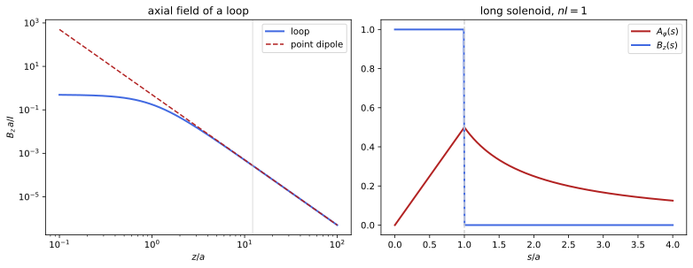
figures/ems_dipole.sage.
The definition separates what is fixed, the curl, from what is not. The vector potential of a given field is defined only up to the gradient of a function; the integral formula picks one choice, with zero divergence.
Definition 6 (Vector potential) A vector potential of a magnetic field \mathbf B is a vector field \mathbf A with \mathbf B = \nabla\times \mathbf A. For a steady current density \mathbf J, \mathbf A(\mathbf x) = \frac1{4\pi}\int\frac{\mathbf J(\mathbf x')}{|\mathbf x - \mathbf x'|}\,d^3x' \tag{6} is a vector potential of Equation 4, and it satisfies \nabla\cdot\mathbf A = 0 (the Coulomb gauge) and \nabla^2\mathbf A = -\mathbf J (proof of Theorem 2). If \mathbf A is a vector potential, so is \mathbf A + \nabla\lambda for every function \lambda, since the curl of a gradient vanishes; this freedom is studied in Section 1.2. By Stokes’ theorem the flux of \mathbf B through a surface \Sigma bounded by C is \int_\Sigma\mathbf B\cdot d\mathbf S = \oint_C\mathbf A\cdot d\boldsymbol\ell. In SI units the factor is \mu_0/4\pi (Maggiore 2023, sec. 4.2.2; Pierrus 2018, Questions 4.5-4.6).
Veriphy. Pending.
Lean. Pending.
Sage. Pending.
A uniform field has many vector potentials, all linear in the coordinates. Two common choices differ by a gradient. The difference is invisible in the field.
Example 81 (A uniform field) For \mathbf B = B\mathbf e_z, both \mathbf A_1 = \frac12\mathbf B\times\mathbf x = \frac B2(-y, x, 0) and \mathbf A_2 = (0, Bx, 0) have curl \mathbf B, and \mathbf A_2 - \mathbf A_1 = \frac B2(y, x, 0) = \nabla\frac{Bxy}2. Both have zero divergence, so even the Coulomb gauge leaves a freedom when no condition at infinity is imposed.
The straight wire has a vector potential along the wire. Like the potential of a line charge, it grows logarithmically, because the source is not localised.
Example 82 (A straight wire) For the current I along the z axis, \mathbf A = -\frac{I}{2\pi}\ln\frac{s}{s_0}\mathbf e_z: its curl is -\partial_sA_z\, \hat{\boldsymbol\varphi} = \frac{I}{2\pi s}\hat{\boldsymbol\varphi}, the field of Example 61, and \nabla\cdot\mathbf A = \partial_zA_z = 0. It is Equation 6 with a divergent constant removed, exactly as for the line charge in Example 25.
The solenoid shows that the vector potential need not vanish where the field does. Outside the coil the field is zero but the potential circles the axis.
Example 83 (A long solenoid) For the solenoid of Example 72, with radius a, take \mathbf A = A_\varphi(s)\hat{\boldsymbol\varphi}. Stokes’ theorem on the circle of radius s gives 2\pi sA_\varphi = \pi s^2nI inside and \pi a^2nI outside: A_\varphi = \frac{nIs}2 for s < a and \frac{nIa^2}{2s} for s > a (Figure 5). The field outside is zero, but \mathbf A is not, and no gauge choice can make it vanish there, since its circulation is the flux inside. In quantum mechanics this potential has observable effects, a subject of the gauge-theory chapter.
The circulation of the vector potential is a flux. This makes the potential the natural tool for computing fluxes through circuits.
Example 84 (Flux through a circuit) The flux through a loop C is \oint_C\mathbf A\cdot d\boldsymbol\ell, whatever surface is used to span it. For a circle of radius s coaxial with the wire of Example 82 the circulation is 0, since \mathbf A is along the wire: no field line crosses a disc perpendicular to the wire. For a rectangle of length \ell in a plane through the wire, between distances s_1 < s_2, it is \ell(A_z(s_1) - A_z(s_2)) = \frac{I\ell}{2\pi}\ln\frac{s_2}{s_1}.
Each Cartesian component of the Coulomb-gauge potential satisfies its own Poisson equation. Magnetostatics then borrows the solutions of electrostatics. The analogy is exact for currents along one direction.
Example 85 (Three electrostatic problems) \nabla^2\mathbf A = -\mathbf J is three copies of Poisson’s equation, \nabla^2A_i = -J_i, so A_i is the electrostatic potential of the “charge density” J_i. A wire along z is a line charge for A_z (Example 82), and the surface current of a rotating charged shell has components proportional to x and y on the sphere, the angular dependence of Exercise 40, which gives Example 89.
When all currents are parallel to the z axis the problem is two-dimensional. The single component A_z is then a stream function for the field.
Example 86 (Planar currents) For \mathbf J = J(x, y)\mathbf e_z, \mathbf A = A_z(x, y)\mathbf e_z and \mathbf B = (\partial_yA_z, -\partial_xA_z, 0), which is orthogonal to \nabla A_z: the field lines are the level curves of A_z. For two antiparallel wires they are the circles of Apollonius, the equipotentials of Example 26 (Exercise 88).
The Coulomb-gauge condition for the integral formula follows from charge conservation. The example spells out the step used in the proof of Theorem 2.
Example 87 (Why the integral has zero divergence) \nabla_{\mathbf x}\frac{1}{|\mathbf x - \mathbf x'|} = -\nabla_{\mathbf x'}\frac{1}{|\mathbf x - \mathbf x'|}, so \nabla \cdot\mathbf A = -\frac1{4\pi}\int\mathbf J\cdot\nabla'\frac1{|\mathbf x - \mathbf x'|}d^3x', and integrating by parts, with no boundary term for a localised \mathbf J, gives \frac1{4\pi}\int\frac{\nabla'\cdot\mathbf J}{|\mathbf x - \mathbf x'|}d^3x' = 0. For a current that is not steady the same steps give \nabla\cdot\mathbf A \neq 0 (Pierrus 2018, Question 4.6).
A potential with zero curl can still have a circulation, when the region has a hole. The thin solenoid is the example.
Example 88 (A potential with no field) Shrink the solenoid of Example 83 to a line with flux \Phi. Outside it, \mathbf A = \frac{\Phi}{2\pi s}\hat{\boldsymbol \varphi} has zero curl, and locally \mathbf A = \nabla\frac{\Phi\varphi}{2\pi}, but \varphi is not a single-valued function, and \oint\mathbf A\cdot d\boldsymbol\ell = \Phi around the line. On a region that is not simply connected, a curl-free field need not be a gradient (Definition 2 of Classical mechanics).
A rotating charged sphere is a source of a uniform field inside. Its vector potential is linear inside and dipolar outside.
Example 89 (A rotating charged shell) A spherical shell of radius a with surface charge \sigma rotating with angular velocity \boldsymbol\omega carries \mathbf K = \sigma\boldsymbol\omega\times\mathbf x. Its vector potential is \mathbf A = \frac{\sigma a}3\boldsymbol\omega\times \mathbf x inside and \frac{\sigma a^4}3\frac{\boldsymbol\omega\times\mathbf x}{r^3} outside, continuous at r = a. Inside, \mathbf B = \frac23\sigma a\boldsymbol\omega is uniform; outside it has the dipole form of Example 10.
A current sheet has a vector potential parallel to the current, with a kink at the sheet. Its curl reproduces the uniform field on each side.
Example 90 (A current sheet) For \mathbf K = K\mathbf e_x on z = 0, \mathbf A = -\frac K2|z|\,\mathbf e_x has \nabla\times\mathbf A = \partial_zA_x\, \mathbf e_y = -\frac K2\operatorname{sign}(z)\,\mathbf e_y, the field of Example 74, and \nabla\cdot\mathbf A = 0. \mathbf A is continuous across the sheet and its normal derivative jumps by -\mathbf K, as \nabla\phi jumps by -\sigma across a surface charge.
The exercises start by checking vector potentials of the examples with Sage. The first is the uniform field. The direction of the field is left general.
Exercise 81 (Two gauges for a uniform field) With Sage, compute the curl and divergence of \mathbf A_1 and \mathbf A_2 of Example 81 for a uniform field in an arbitrary direction \mathbf B = (B_1, B_2, B_3) with \mathbf A_1 = \frac12\mathbf B\times\mathbf x, and find a function \lambda with \mathbf A_1 - \nabla\lambda having only a y component when \mathbf B = B\mathbf e_z.
\nabla\times(\frac12\mathbf B\times\mathbf x) = \mathbf B and its divergence is 0; for \mathbf B = B\mathbf e_z, \lambda = -\frac{Bxy}2 gives \mathbf A_1 - \nabla\lambda = (0, Bx, 0) = \mathbf A_2:
x, y, z, B1, B2, B3, B = var('x y z B1 B2 B3 B')
X = vector([x, y, z]); Bv = vector([B1, B2, B3])
def curl(F): return vector([diff(F[2], y) - diff(F[1], z), diff(F[0], z) - diff(F[2], x), diff(F[1], x) - diff(F[0], y)])
def div(F): return sum(diff(F[i], v) for i, v in enumerate([x, y, z]))
A1 = Bv.cross_product(X) / 2
print("curl(B x X/2) =", curl(A1).simplify_full(), "; div =", div(A1))
A1z = vector([-B * y / 2, B * x / 2, 0]); lam = -B * x * y / 2
print("A1 - grad(lambda) for B e_z, lambda = -B x y/2:", (A1z - vector([diff(lam, v) for v in [x, y, z]])).simplify_full())Output:
curl(B x X/2) = (B1, B2, B3) ; div = 0
A1 - grad(lambda) for B e_z, lambda = -B x y/2: (0, B*x, 0)Veriphy. Pending.
Lean. Pending.
Sage. Pending.
The vector potential of a solenoid follows from the flux alone. The second exercise derives it for a coil with a different current distribution.
Exercise 82 (Two coaxial solenoids) Two long coaxial solenoids of radii a < b carry n_1I_1 and n_2I_2 turns times current per unit length in the same sense. Find \mathbf B and A_\varphi in the three regions.
B = n_1I_1 + n_2I_2 for s < a, n_2I_2 for a < s < b, 0 outside. The flux through the circle of radius s gives A_\varphi = \frac{(n_1I_1 + n_2I_2)s}{2} for s < a, \frac{n_1I_1a^2 + n_2I_2s^2}{2s} for a < s < b, and \frac{n_1I_1a^2 + n_2I_2b^2}{2s} outside.
Veriphy. Pending.
Lean. Pending.
Sage. Pending.
Inside a thick wire the vector potential is quadratic. The third exercise matches it to the logarithm outside with Sage.
Exercise 83 (A thick wire) For the wire of Example 71, show with Sage that A_z = -\frac{Is^2}{4\pi a^2} for s \leq a and A_z = -\frac{I}{4\pi}(1 + 2\ln\frac sa) for s \geq a is continuous with continuous derivative, and that its curl is the field found there.
Both pieces equal -I/4\pi at s = a with derivative -I/2\pi a; -\partial_sA_z is \frac{Is}{2\pi a^2} inside and \frac{I}{2\pi s} outside:
I, a, s = var('I a s', domain='positive')
Ain = -I * s^2 / (4 * pi * a^2); Aout = -I / (4 * pi) * (1 + 2 * log(s / a))
print("values at s = a:", Ain.subs(s=a), Aout.subs(s=a), "; derivatives:", diff(Ain, s).subs(s=a), diff(Aout, s).subs(s=a).simplify_full())
print("B_phi = -dA_z/ds inside:", -diff(Ain, s), "; outside:", -diff(Aout, s))Output:
values at s = a: -1/4*I/pi -1/4*I/pi ; derivatives: -1/2*I/(pi*a) -1/2*I/(pi*a)
B_phi = -dA_z/ds inside: 1/2*I*s/(pi*a^2) ; outside: 1/2*I/(pi*s)Veriphy. Pending.
Lean. Pending.
Sage. Pending.
Finding a vector potential is solving \nabla\times\mathbf A = \mathbf B, which has many solutions. The fourth exercise picks a simple one for a non-uniform field with Sage.
Exercise 84 (A potential for a non-uniform field) For \mathbf B = \frac{B_0}a(0, 0, x), check that \nabla\cdot\mathbf B = 0, find with Sage a vector potential with only a y component, and compute the current density that produces this field.
\mathbf A = (0, \frac{B_0x^2}{2a}, 0) has curl (0, 0, \frac{B_0x}a). The current is \nabla\times\mathbf B = (0, -\frac{B_0}a, 0), uniform, as a field growing linearly across a slab of current requires (Exercise 79):
x, y, z, B0, a = var('x y z B0 a')
def curl(F): return vector([diff(F[2], y) - diff(F[1], z), diff(F[0], z) - diff(F[2], x), diff(F[1], x) - diff(F[0], y)])
B = vector([0, 0, B0 * x / a])
print("div B =", sum(diff(B[i], v) for i, v in enumerate([x, y, z])))
A = vector([0, B0 * x^2 / (2 * a), 0])
print("curl A =", curl(A), "; J = curl B =", curl(B))Output:
div B = 0
curl A = (0, 0, B0*x/a) ; J = curl B = (0, -B0/a, 0)Veriphy. Pending.
Lean. Pending.
Sage. Pending.
The Coulomb gauge condition for the integral formula was shown in Example 87. The fifth exercise asks for a second proof, by the maximum principle.
Exercise 85 (The Coulomb gauge from the curl) Show that the divergence of \mathbf A in Equation 6 is a harmonic function on \mathbb{R}^3 that tends to zero at infinity, and conclude again that it vanishes.
\nabla^2(\nabla\cdot\mathbf A) = \nabla\cdot(\nabla^2\mathbf A) = -\nabla\cdot\mathbf J = 0, so \nabla\cdot\mathbf A is harmonic everywhere. For a localised current \mathbf A = O(r^{-2}), since its 1/r term is \frac{1}{4\pi r}\int\mathbf J\,d^3x and \int J_i = \int\nabla x_i\cdot\mathbf J = -\int x_i\nabla\cdot\mathbf J = 0, so its derivatives are O(r^{-3}), and a harmonic function on \mathbb{R}^3 tending to zero at infinity is zero by the maximum principle on large balls (Definition 22 of Differential equations).
Veriphy. Pending.
Lean. Pending.
Sage. Pending.
Any vector potential can be brought to the Coulomb gauge by a gradient. The sixth exercise constructs the gradient with Sage for a simple potential.
Exercise 86 (Reaching the Coulomb gauge) For \mathbf A = (xy, 0, 0), find with Sage a function \lambda such that \mathbf A + \nabla\lambda has zero divergence, and check that the curl is unchanged.
\nabla\cdot\mathbf A = y, so \lambda must solve \nabla^2\lambda = -y; \lambda = -y^3/6 does it, giving \mathbf A' = (xy, -y^2/2, 0) with curl (0, 0, -x), as before:
x, y, z = var('x y z')
def curl(F): return vector([diff(F[2], y) - diff(F[1], z), diff(F[0], z) - diff(F[2], x), diff(F[1], x) - diff(F[0], y)])
def div(F): return sum(diff(F[i], v) for i, v in enumerate([x, y, z]))
A = vector([x * y, 0, 0]); lam = -y^3 / 6
Ap = A + vector([diff(lam, v) for v in [x, y, z]])
print("div A =", div(A), "; Laplacian of lambda =", sum(diff(lam, v, 2) for v in [x, y, z]))
print("A' =", Ap, "; div A' =", div(Ap), "; curl A =", curl(A), "; curl A' =", curl(Ap))Output:
div A = y ; Laplacian of lambda = -y
A' = (x*y, -1/2*y^2, 0) ; div A' = 0 ; curl A = (0, 0, -x) ; curl A' = (0, 0, -x)Veriphy. Pending.
Lean. Pending.
Sage. Pending.
The rotating shell of Example 89 can be checked component by component. The seventh exercise does it with Sage. The jump condition of Example 74 is a further check.
Exercise 87 (The rotating shell, checked) With Sage, take \boldsymbol\omega = \omega\mathbf e_z and the two expressions for \mathbf A of Example 89. Check that both have zero divergence, that the inner one gives a uniform field and the outer one a dipole field with \mathbf m = \frac{4\pi}3\sigma a^4\boldsymbol\omega, and that the tangential components of \mathbf B jump by \mathbf K at r = a (Macchi et al. 2023, Problem 5.12).
Inside, \mathbf B = \frac23\sigma a\omega\mathbf e_z; outside, \mathbf B = \frac{3(\mathbf m\cdot\hat{\mathbf n})\hat{\mathbf n} - \mathbf m}{4\pi r^3} with m = \frac{4\pi}3\sigma\omega a^4; at the equator the jump of B_z is -\sigma\omega a, and \hat{\mathbf n}\times\Delta\mathbf B = \mathbf K:
x, y, z, sigma, a, w = var('x y z sigma a w'); assume(a > 0)
X = vector([x, y, z]); r = sqrt(x^2 + y^2 + z^2); W = vector([0, 0, w])
def curl(F): return vector([diff(F[2], y) - diff(F[1], z), diff(F[0], z) - diff(F[2], x), diff(F[1], x) - diff(F[0], y)])
def div(F): return sum(diff(F[i], v) for i, v in enumerate([x, y, z]))
Ain = sigma * a / 3 * W.cross_product(X); Aout = sigma * a^4 / 3 * W.cross_product(X) / r^3
print("div A_in =", div(Ain), "; div A_out =", div(Aout).simplify_full())
print("B_in =", curl(Ain))
m = 4 * pi / 3 * sigma * w * a^4 * vector([0, 0, 1])
Bdip = (3 * m.dot_product(X) * X / r^2 - m) / (4 * pi * r^3)
print("B_out is the dipole field with m = 4 pi sigma w a^4/3:", bool((curl(Aout) - Bdip).simplify_full() == 0))
print("continuity of A at r = a (point (a,0,0)):", (Ain - Aout).subs(x=a, y=0, z=0).simplify_full())
jump = (curl(Aout) - curl(Ain)).subs(x=a, y=0, z=0).simplify_full()
print("n x (B_out - B_in) at (a, 0, 0):", vector([1, 0, 0]).cross_product(jump), "; K = sigma w x X there:", (sigma * W.cross_product(X)).subs(x=a, y=0, z=0))Output:
div A_in = 0 ; div A_out = 0
B_in = (0, 0, 2/3*a*sigma*w)
B_out is the dipole field with m = 4 pi sigma w a^4/3: True
continuity of A at r = a (point (a,0,0)): (0, 0, 0)
n x (B_out - B_in) at (a, 0, 0): (0, a*sigma*w, 0) ; K = sigma w x X there: (0, a*sigma*w, 0)Veriphy. Pending.
Lean. Pending.
Sage. Pending.
Two antiparallel wires form a transmission line. The eighth exercise uses the planar stream function of Example 86 to draw its field lines.
Exercise 88 (Two antiparallel wires) Wires with currents I and -I along \mathbf e_z pass through (-d, 0) and (d, 0). Find A_z, show that the field lines are circles, and find the flux per unit length between the wires if each has radius a \ll d.
A_z = \frac{I}{2\pi}\ln\frac{s_2}{s_1}, with s_{1, 2} the distances to the two wires, so the field lines, the level curves of A_z, are the circles s_2/s_1 = K of Example 26. The flux per unit length between the wire surfaces is the difference of A_z, \frac{I}{2\pi}\cdot2\ln\frac{2d - a}{a} \approx \frac I\pi\ln\frac{2d}a.
Veriphy. Pending.
Lean. Pending.
Sage. Pending.
The potential of a thin flux tube is a gradient locally but not globally. The ninth exercise checks both statements with Sage.
Exercise 89 (The flux tube, checked) With Sage, write \mathbf A = \frac{\Phi}{2\pi}\frac{(-y, x, 0)}{x^2 + y^2}, compute its curl for s > 0, its circulation on a circle of radius R around the axis and on a circle that does not enclose the axis, and compare it with \nabla \frac{\Phi}{2\pi}\arctan\frac yx.
The curl vanishes, the circulation is \Phi around the axis and 0 otherwise, and \mathbf A = \nabla(\frac{\Phi}{2\pi} \arctan\frac yx) where the angle is defined, but no single-valued angle exists around the axis:
x, y, z, Phi, R, t = var('x y z Phi R t'); assume(R > 0)
A = Phi / (2 * pi) * vector([-y, x, 0]) / (x^2 + y^2)
curl = vector([diff(A[2], y) - diff(A[1], z), diff(A[0], z) - diff(A[2], x), diff(A[1], x) - diff(A[0], y)]).simplify_full()
print("curl A for s > 0:", curl)
def circ(cx, cy, rad):
px, py = cx + rad * cos(t), cy + rad * sin(t)
return integrate((A[0].subs(x=px, y=py) * diff(px, t) + A[1].subs(x=px, y=py) * diff(py, t)).simplify_full(), t, 0, 2 * pi)
print("circulation around the axis:", circ(0, 0, R))
print("circulation on a circle not enclosing the axis (centre (3,0), radius 1):", circ(3, 0, 1).simplify_full())
g = vector([diff(Phi / (2 * pi) * arctan(y / x), v) for v in [x, y, z]])
print("A - grad(Phi arctan(y/x)/(2 pi)) =", (A - g).simplify_full())Output:
curl A for s > 0: (0, 0, 0)
circulation around the axis: Phi
circulation on a circle not enclosing the axis (centre (3,0), radius 1): 0
A - grad(Phi arctan(y/x)/(2 pi)) = (0, 0, 0)Veriphy. Pending.
Lean. Pending.
Sage. Pending.
The vector potential is unique up to a gradient on all of space. The last exercise proves it, using the vector form of Proposition 1.
Exercise 90 (How unique is the vector potential?) Show that two vector potentials of the same field on \mathbb{R}^3 differ by a gradient, and that two Coulomb-gauge potentials that decay at infinity are equal.
\nabla\times(\mathbf A_1 - \mathbf A_2) = 0 on the simply connected \mathbb{R}^3, so \mathbf A_1 - \mathbf A_2 = \nabla\lambda (Definition 2 of Classical mechanics). If both are divergence free, \nabla^2\lambda = 0, and if both decay, \nabla\lambda is a field with zero divergence and curl decaying at infinity, hence zero (Example 40).
Veriphy. Pending.
Lean. Pending.
Sage. Pending.
Far from a small current loop, the vector potential is dominated by one term, as the electrostatic potential of a neutral charge distribution is dominated by its dipole. The magnetic dipole moment is the coefficient of that term.
Definition 7 (Magnetic dipole moment) The magnetic dipole moment of a steady current density \mathbf J is \mathbf m = \frac12\int\mathbf x\times\mathbf J\,d^3x, and for a wire loop \mathbf m = \frac I2\oint\mathbf x\times d\boldsymbol\ell, which for a planar loop of area S with unit normal \hat{\mathbf n} (oriented with the current by the right-hand rule) is IS\hat{\mathbf n}. Since \int\mathbf J\,d^3x = 0 for a steady localised current, \mathbf m does not depend on the origin and, for r large compared with the size of the source, \mathbf A = \frac{\mathbf m\times\mathbf x}{4\pi r^3} + O(r^{-3}), \qquad \mathbf B = \frac{3(\mathbf m\cdot \hat{\mathbf n})\hat{\mathbf n} - \mathbf m}{4\pi r^3} + O(r^{-4}) , \tag{7} the field of a point magnetic dipole, of the same form as the electric dipole field of Example 10 with \mathbf p replaced by \mathbf m. In SI units \mathbf m is in A m^2 and the fields carry \mu_0 (Maggiore 2023, secs. 6.2–6.3).
Veriphy. Pending.
Lean. Pending.
Sage. Pending.
A circular loop is the model of every magnetic dipole. On its axis the exact field of Example 62 can be compared with Equation 7.
Example 91 (A circular loop) A loop of radius a with current I in the plane z = 0 has \mathbf m = \pi a^2I\mathbf e_z. On the axis, Equation 7 gives \frac{2m}{4\pi|z|^3} = \frac{Ia^2}{2|z|^3}, the leading term of the exact \frac{Ia^2}{2(a^2 + z^2)^{3/2}}; the left panel of Figure 5 compares the two.
For any planar loop the moment is the current times the area. The integral \frac12\oint\mathbf x\times d\boldsymbol\ell is the area by Green’s theorem.
Example 92 (A planar loop of any shape) For a loop in the plane z = 0, \frac12\oint(\mathbf x\times d\boldsymbol\ell)_z = \frac12\oint(x\,dy - y\,dx), which is the enclosed area by Green’s theorem (Example 136 of Differential geometry), and the other components vanish. So a square of side \ell has m = I\ell^2 and an ellipse with semi-axes p, q has m = \pi pqI (Pierrus 2018, Question 4.25).
A coil of many turns adds the moments of its turns. Far away a solenoid looks like a single dipole.
Example 93 (A solenoid seen from far away) A solenoid of N turns of radius a has m = N\pi a^2I, and at distances large compared with its length its field is Equation 7. A bar magnet is, for the field outside it, a solenoid of atomic currents with the same moment.
A rotating charged shell is a dipole outside, exactly. The moment follows from the rings that make it up. The result agrees with the outer vector potential found earlier.
Example 94 (The moment of a rotating shell) The ring of the shell of Example 89 between \theta and \theta + d\theta carries the current \sigma\omega a^2 \sin\theta\,d\theta around a circle of radius a\sin\theta, so m = \int_0^\pi\sigma\omega a^2\sin\theta\cdot\pi a^2\sin^2 \theta\,d\theta = \frac{4\pi}3\sigma\omega a^4, the moment of the outside potential there.
A charge on a closed orbit is a current loop. Its magnetic moment is proportional to its angular momentum, with a universal ratio.
Example 95 (The gyromagnetic ratio) A charge q of mass m_q on a circle of radius \rho with period T is, on average, a current q/T around the area \pi\rho^2, so m = \frac{q\pi\rho^2}{T} = \frac q{2m_q}m_q\rho^2\frac{2\pi}{T} = \frac q{2m_q}L, with L the angular momentum (Definition 3 of Classical mechanics); vectorially \mathbf m = \frac{q}{2m_q}\mathbf L.
For an electron with angular momentum \hbar the ratio gives the natural unit of atomic magnetism. Its size sets the scale of magnetic energies in atoms.
Example 96 (The Bohr magneton) With q = -e and L = \hbar, Example 95 gives |\mathbf m| = \mu_B = \frac{e\hbar}{2m_e} = 9.27\times 10^{-24}\,A m^2, the Bohr magneton. The electron’s spin moment is about \mu_B too, twice the classical ratio for its spin angular momentum \hbar/2, a fact that classical electromagnetism cannot explain.
The Earth’s field is, to a first approximation, that of a dipole at its centre. Its moment follows from the field at the equator.
Example 97 (The Earth’s dipole) On the magnetic equator, \mathbf m\cdot\hat{\mathbf n} = 0 and B = \mu_0m/4\pi R^3. With B = 3.1\times10^{-5}\,T and R = 6.37\times10^6\,m, m = 4\pi R^3B/\mu_0 = 8.0\times10^{22}\,A m^2, pointing roughly toward the geographic south pole.
The magnetic moment does not depend on where the origin is, unlike the electric dipole moment of a charged body. The reason is that the total current vanishes.
Example 98 (Independence of the origin) Shifting \mathbf x \mapsto \mathbf x + \mathbf s changes \mathbf m by \frac12\mathbf s\times\int\mathbf J\,d^3x = 0. By contrast, the electric dipole moment changes by Q\mathbf s (Example 68 of Fourier analysis): the vanishing total current plays the role of a vanishing total charge, and no magnetic monopole term exists (Example 77).
Far away the electric and magnetic dipole fields are identical in form. Near the source they are not, and the difference shows in the field lines.
Example 99 (Electric and magnetic dipoles near the source) The field lines of a pair of opposite charges start on one charge and end on the other, so between the charges the field points from +q to -q, against \mathbf p. The lines of a current loop pass through the loop along \mathbf m and close outside (Figure 4). The two point dipoles differ by a delta function at the origin, which matters for the hyperfine structure of hydrogen.
A flat coil of several turns is the practical magnetic dipole. Its moment is the moment of one turn times the number of turns, and its field on the axis is the sum of the loops.
Example 100 (A flat coil) A coil of N = 100 turns of radius 2\,cm carrying 0.5\,A has m = N\pi a^2I = 6.3\times10^{-2}\,A m^2. At 20\,cm on its axis, Equation 7 gives \mu_0\cdot2m/4\pi z^3 = 1.6\,\muT, while the exact field of Example 62 gives 1.5\,\muT.
The exercises start with moments of simple loops. The first one is a triangle. The moment depends only on the area, by Example 92.
Exercise 91 (A triangular loop) Find the magnetic moment of an equilateral triangular loop of side \ell carrying I, and the field far away on the axis through its centre.
m = I\frac{\sqrt3}4\ell^2 along the normal, and on the axis B \approx \frac{2m}{4\pi z^3} = \frac{\sqrt3I\ell^2}{8\pi z^3}.
Veriphy. Pending.
Lean. Pending.
Sage. Pending.
A spinning ball of charge is a model of a charged particle with spin. The second exercise computes its moment with Sage.
Exercise 92 (A spinning charged ball) A ball of radius a with uniform charge Q spins with angular velocity \omega about \mathbf e_z. With Sage, compute \mathbf m = \frac12\int\mathbf x\times\rho(\boldsymbol\omega\times\mathbf x)\,d^3x and the ratio m/L for a uniform mass M (Pierrus 2018, Question 4.11).
m = \frac{Q\omega a^2}5, and with L = \frac25Ma^2\omega the ratio is \frac{Q}{2M}, the same as for an orbit (Example 95), since the charge and the mass are distributed alike:
r, th, ph, Q, a, w, M = var('r theta phi Q a w M', domain='positive')
rho = 3 * Q / (4 * pi * a^3)
X = r * vector([sin(th) * cos(ph), sin(th) * sin(ph), cos(th)])
J = rho * vector([0, 0, w]).cross_product(X)
mz = integrate(integrate(integrate((X.cross_product(J))[2] / 2 * r^2 * sin(th), ph, 0, 2 * pi), th, 0, pi), r, 0, a)
print("m_z =", mz.simplify_full())
L = 2 / 5 * M * a^2 * w
print("m/L =", (mz / L).simplify_full())Output:
m_z = 1/5*Q*a^2*w
m/L = 1/2*Q/MVeriphy. Pending.
Lean. Pending.
Sage. Pending.
The dipole approximation on the axis can be compared with the exact field. The third exercise measures the error with Sage.
Exercise 93 (How good is the dipole approximation?) With Sage, compute the ratio of the exact axial field of a loop to the dipole field as a function of z/a, its expansion for large z, and the distance beyond which the error is below 1\%.
The ratio is (1 + a^2/z^2)^{-3/2} = 1 - \frac{3a^2}{2z^2} + O(z^{-4}), and the error is below 1\% for z > 12.2a:
u = var('u', domain='positive') # u = z/a
ratio = (1 + 1 / u^2)^(-3/2)
print("ratio =", ratio, "; large-u expansion:", ratio.subs(u=1 / var('e')).taylor(var('e'), 0, 4))
print("ratio > 0.99 for z/a > %.3f" % find_root(ratio - 0.99, 1, 100))
for zz in [2, 3, 5, 10]:
print("z = %d a: ratio %.4f" % (zz, ratio.subs(u=zz).n()))Output:
ratio = (1/u^2 + 1)^(-3/2) ; large-u expansion: 15/8*e^4 - 3/2*e^2 + 1
ratio > 0.99 for z/a > 12.196
z = 2 a: ratio 0.7155
z = 3 a: ratio 0.8538
z = 5 a: ratio 0.9429
z = 10 a: ratio 0.9852Veriphy. Pending.
Lean. Pending.
Sage. Pending.
The dipole field is the curl of the dipole potential. The fourth exercise checks it with Sage. The computation is done for a moment in an arbitrary direction.
Exercise 94 (From \mathbf A to \mathbf B) With Sage, compute \nabla\times\frac{\mathbf m\times\mathbf x}{4\pi r^3} for a general \mathbf m and compare it with Equation 7; check also that \nabla\cdot\mathbf A = 0.
The curl is exactly \frac{3(\mathbf m\cdot\hat{\mathbf n})\hat{\mathbf n} - \mathbf m}{4\pi r^3} for r > 0, and the divergence vanishes:
x, y, z, m1, m2, m3 = var('x y z m1 m2 m3')
X = vector([x, y, z]); m = vector([m1, m2, m3]); r = sqrt(x^2 + y^2 + z^2)
A = m.cross_product(X) / (4 * pi * r^3)
curlA = vector([diff(A[2], y) - diff(A[1], z), diff(A[0], z) - diff(A[2], x), diff(A[1], x) - diff(A[0], y)])
B = (3 * m.dot_product(X) * X / r^2 - m) / (4 * pi * r^3)
print("curl A - B =", (curlA - B).simplify_full())
print("div A =", sum(diff(A[i], v) for i, v in enumerate([x, y, z])).simplify_full())Output:
curl A - B = (0, 0, 0)
div A = 0Veriphy. Pending.
Lean. Pending.
Sage. Pending.
The relation between moment and angular momentum holds for every periodic orbit, not only circles. The fifth exercise proves it.
Exercise 95 (The gyromagnetic ratio for any orbit) A charge q of mass m_q moves periodically with period T. Show that the time average of \frac q2\mathbf x\times \dot{\mathbf x} is the moment of the loop traced by the orbit, and equals \frac q{2m_q}\mathbf L when the angular momentum \mathbf L is conserved.
The time-averaged current density of the orbit is \frac qT\oint\delta^3(\mathbf x - \mathbf x(t))\dot{\mathbf x}\,dt, so Definition 7 gives \mathbf m = \frac q{2T}\int_0^T\mathbf x\times\dot{\mathbf x}\,dt. Since \mathbf L = m_q\mathbf x\times\dot{\mathbf x} is constant for a central force (Definition 3 of Classical mechanics), the average is \frac{q}{2m_q} \mathbf L.
Veriphy. Pending.
Lean. Pending.
Sage. Pending.
The field of a dipole at the Earth’s surface depends on the latitude. The sixth exercise finds the inclination of a compass needle.
Exercise 96 (Magnetic inclination) For a dipole field at the surface of a sphere, find the ratio of the field at the poles to that at the equator, and show that the angle I of the field below the horizontal at magnetic latitude \lambda satisfies \tan I = 2\tan\lambda.
With \theta the angle from \mathbf m, B_r = \frac{2m\cos\theta}{4\pi R^3} and B_\theta = \frac{m\sin\theta}{4\pi R^3}. At the poles |B| = 2m/4\pi R^3, twice the equatorial value. With \lambda = \pi/2 - \theta (measured from the magnetic equator), \tan I = |B_r|/|B_\theta| = 2\cot\theta = 2\tan\lambda.
Veriphy. Pending.
Lean. Pending.
Sage. Pending.
The area formula of Example 92 holds in every plane. The seventh exercise proves it for a loop in a general plane.
Exercise 97 (Moment and area) For a closed curve C in a plane with unit normal \hat{\mathbf n}, show that \frac12\oint_C\mathbf x\times d\boldsymbol \ell = S\hat{\mathbf n}, with S the enclosed area. Hint: apply Stokes’ theorem to \mathbf c\cdot(\mathbf x\times d\boldsymbol \ell) = (\mathbf c\times\mathbf x)\cdot d\boldsymbol\ell for a constant vector \mathbf c (Pierrus 2018, Question 4.25).
\oint(\mathbf c\times\mathbf x)\cdot d\boldsymbol\ell = \int_\Sigma\nabla\times(\mathbf c\times\mathbf x)\cdot d\mathbf S = \int_\Sigma2\mathbf c\cdot\hat{\mathbf n}\,dS = 2S\,\mathbf c\cdot\hat{\mathbf n} for the flat surface \Sigma inside C. As this holds for every \mathbf c, \frac12\oint\mathbf x\times d\boldsymbol\ell = S\hat{\mathbf n}.
Veriphy. Pending.
Lean. Pending.
Sage. Pending.
The independence of the origin rests on \int\mathbf J = 0, and the dipole term rests on an antisymmetry. The eighth exercise proves both.
Exercise 98 (Integrals of a steady current) For a steady localised \mathbf J, show that \int J_i\,d^3x = 0 and \int(x_iJ_j + x_jJ_i)\,d^3x = 0, and use the second identity to obtain the first term of Equation 7 from Equation 6.
\nabla\cdot(f\mathbf J) = \nabla f\cdot\mathbf J when \nabla\cdot\mathbf J = 0, and its integral vanishes; f = x_i gives the first identity and f = x_ix_j the second. Expanding \frac1{|\mathbf x - \mathbf x'|} = \frac1r + \frac{\mathbf x\cdot\mathbf x'}{r^3} + \dots, the 1/r term vanishes and \int J_ix'_jx_j = \frac12x_j\int(J_ix'_j - J_jx'_i) = -\frac12\bigl(\mathbf x\times\int\mathbf x'\times\mathbf J\bigr)_i = (\mathbf m\times\mathbf x)_i, which gives \mathbf A = \frac{\mathbf m\times\mathbf x}{4\pi r^3}.
Veriphy. Pending.
Lean. Pending.
Sage. Pending.
Off the axis the exact field of a loop needs a numerical integral. The ninth exercise compares it with the dipole field with Sage.
Exercise 99 (The loop off its axis) With Sage, integrate the Biot-Savart law numerically for a loop of radius 1 at the point at distance r = 5 and angle \theta = 60^\circ from the axis, and compare each component with Equation 7.
At r = 5 the two fields differ by about 4\%, at r = 10 by 1\%, and the error decreases as r^{-2}, since the next term of the expansion of a loop is an octupole:
import numpy as np
def B_loop(P, N=4000):
t = np.linspace(0, 2 * np.pi, N, endpoint=False); dt = 2 * np.pi / N
xs = np.stack([np.cos(t), np.sin(t), 0 * t], axis=1); dl = np.stack([-np.sin(t), np.cos(t), 0 * t], axis=1) * dt
R = P - xs; Rn = np.linalg.norm(R, axis=1)[:, None]
return (np.cross(dl, R) / Rn**3).sum(axis=0) / (4 * np.pi)
def B_dip(P, m=np.array([0, 0, np.pi])):
r = np.linalg.norm(P); n = P / r
return (3 * np.dot(m, n) * n - m) / (4 * np.pi * r**3)
for r in [5.0, 10.0, 20.0]:
th = np.pi / 3; P = r * np.array([np.sin(th), 0, np.cos(th)])
b, d = B_loop(P), B_dip(P)
print("r = %4.1f: loop %s, dipole %s, relative error %.2e" % (r, np.array2string(b, precision=6), np.array2string(d, precision=6), np.linalg.norm(b - d) / np.linalg.norm(d)))Output:
r = 5.0: loop [ 2.678098e-03 -4.332240e-19 -4.267099e-04], dipole [ 0.002598 0. -0.0005 ], relative error 4.10e-02
r = 10.0: loop [ 3.272886e-04 -1.016176e-19 -6.030165e-05], dipole [ 3.247595e-04 0.000000e+00 -6.250000e-05], relative error 1.01e-02
r = 20.0: loop [ 4.067417e-05 3.064075e-20 -7.744514e-06], dipole [ 4.059494e-05 0.000000e+00 -7.812500e-06], relative error 2.53e-03Veriphy. Pending.
Lean. Pending.
Sage. Pending.
Rowland’s rotating disc of Exercise 68 is a dipole when seen from far away. The last exercise computes its moment. Its rings are loops of growing radius.
Exercise 100 (The rotating disc as a dipole) Find the magnetic moment of a disc of radius a with surface charge \sigma rotating with angular velocity \omega, and its field on the axis at z \gg a (Macchi et al. 2023, Problem 5.1).
The ring between s and s + ds carries \sigma\omega s\,ds around the area \pi s^2, so m = \int_0^a\pi\sigma\omega s^3ds = \frac{\pi\sigma\omega a^4}4, and on the axis B \approx \frac{2m}{4\pi z^3} = \frac{\sigma\omega a^4}{8z^3}.
Veriphy. Pending.
Lean. Pending.
Sage. Pending.
Energy of static fields
Assembling charges takes work against their repulsion, and establishing currents takes work too. The proposition expresses this work as an integral over the sources and, equivalently, as an integral of the square of the field over all space, so that the energy can be thought of as stored in the field itself.
Proposition 2 (Energy of static fields)
- The work needed to assemble a bounded charge density \rho, bringing its charge in from infinity at rest, is W_E = \frac12\int\rho\,\phi\,d^3x = \frac12\int|\mathbf E|^2\,d^3x . \tag{8} For point charges the work is the interaction energy W = \frac12\sum_{a \neq b}\frac{q_aq_b}{4\pi|\mathbf x_a - \mathbf x_b|}, which differs from \frac12\int|\mathbf E|^2 by the infinite self-energies of the charges. For conductors W_E = \frac12\sum_aQ_a\phi_a = \frac12\sum_{a, b}P_{ab}Q_aQ_b (Definition 4), and for a capacitor W_E = \frac{Q^2}{2C} = \frac12CV^2. (b) For a steady localised current density, W_B = \frac12\int\mathbf J\cdot\mathbf A\,d^3x = \frac12\int|\mathbf B|^2\,d^3x , \tag{9} and for thin circuits with currents I_a, W_B = \frac12\sum_{a, b}L_{ab}I_aI_b, where for a \neq b the mutual inductance L_{ab} = \frac1{4\pi}\oint_a\oint_b\frac{d\boldsymbol\ell_a\cdot d\boldsymbol\ell_b}{|\mathbf x_a - \mathbf x_b|} (Neumann’s formula) is the flux of the field of circuit b through circuit a per unit current, and the self-inductance L_{aa} is the flux of a circuit’s own field per unit current (finite only for a wire of non-zero thickness). That W_B is the work done against induction while the currents are switched on is shown after Faraday’s law, in Section 1.2. In SI units the densities are \frac{\varepsilon_0}2|\mathbf E|^2 and \frac1{2\mu_0}|\mathbf B|^2. Proof. (a) Build \rho as \lambda\rho with \lambda from 0 to 1: adding \rho\,d\lambda in the potential \lambda\phi costs d\lambda\int\lambda\phi\rho, and integrating gives \frac12\int\rho\phi. With \rho = \nabla\cdot\mathbf E and \mathbf E = -\nabla\phi, \rho\phi = \nabla\cdot(\phi\mathbf E) + |\mathbf E|^2, and the flux of \phi\mathbf E = O(r^{-3}) through a sphere of radius R tends to 0. For conductors \phi is constant on each surface charge. (b) With \mathbf J = \nabla \times\mathbf B, \mathbf J\cdot\mathbf A = \nabla\cdot(\mathbf B\times\mathbf A) + |\mathbf B|^2, and \mathbf B\times\mathbf A = O(r^{-5}). For circuits, \int\mathbf J\cdot\mathbf A = \sum_aI_a\oint_a\mathbf A\cdot d\boldsymbol\ell_a, and inserting Equation 6 for the field of circuit b gives Neumann’s formula (Maggiore 2023, secs. 5.1–5.4).
Veriphy. Pending.
Lean. Pending.
Sage. Pending.
For two point charges the energy is the potential energy of one in the field of the other. It is the work done against Coulomb’s force in bringing them together.
Example 101 (Two and three charges) Two charges at distance r have W = \frac{q_1q_2}{4\pi r}, the potential energy of Example 21. For three charges the work of bringing them in one at a time adds a term for each pair, W = \frac{1}{4\pi}\bigl(\frac{q_1q_2}{r_{12}} + \frac{q_1q_3}{r_{13}} + \frac{q_2q_3}{r_{23}}\bigr), independent of the order, as the symmetric formula of Proposition 2 shows.
The energy of a uniformly charged ball is the standard example. It can be computed from either side of Equation 8.
Example 102 (A uniformly charged ball) With the field of Example 13, \frac12\int|\mathbf E|^2 = \frac12\int_0^R\bigl(\frac{Qr}{4\pi R^3}\bigr)^24\pi r^2dr + \frac12\int_R^\infty\bigl(\frac{Q}{4\pi r^2}\bigr)^24\pi r^2dr = \frac{Q^2}{8\pi R}\bigl(\frac15 + 1\bigr) = \frac35\frac{Q^2}{4\pi R}. One sixth of it is inside the ball (Macchi et al. 2023, Problem 1.3).
A shell stores its energy only outside, since the field inside vanishes. The result is the energy of the charged conducting sphere.
Example 103 (A charged shell) For charge Q on the sphere of radius R, \frac12\int_R^\infty\frac{Q^2}{16\pi^2r^4}4\pi r^2dr = \frac{Q^2}{8\pi R}, which is \frac12Q\phi_C and \frac{Q^2}{2C} with C = 4\pi R (Example 51). It is less than the ball’s \frac35 \frac{Q^2}{4\pi R}: charge free to move goes to the surface, lowering the energy.
A point charge has an infinite field energy. The classical radius of the electron is the radius at which its field energy would equal its rest energy.
Example 104 (Self-energy and the classical electron radius) For a shell of radius R and charge e the energy e^2/8\pi R diverges as R \to 0: the field energy of a point charge is infinite, which is why Proposition 2 uses interaction energies for point charges. Equating e^2/4\pi R with the rest energy m_ec^2 defines the classical electron radius r_e = \frac{e^2}{4\pi\varepsilon_0m_ec^2} = 2.82\times 10^{-15}\,m, below which classical electrodynamics cannot describe the electron (Maggiore 2023, sec. 5.2.2).
The energy of a capacitor sits in the field between its plates. The field energy density times the volume reproduces Q^2/2C.
Example 105 (Energy of a capacitor) For the plates of Example 52, E = Q/A fills the volume Ad, so \frac12E^2Ad = \frac{Q^2d}{2A} = \frac{Q^2}{2C}. In SI units, a 10\,\muF capacitor at 100\,V stores \frac12CV^2 = 0.05\,J (Maggiore 2023, Problem 5.1).
The binding energy of an ionic crystal is a lattice sum of Coulomb energies. The sum converges only conditionally, which is a physical statement about the boundary of the crystal.
Example 106 (The Madelung energy of rock salt) In NaCl the ions \pm e sit on a cubic lattice of spacing a = 0.282\,nm with alternating signs. The energy per ion pair is -\alpha\frac{e^2}{4\pi\varepsilon_0a} with the Madelung constant \alpha = -\sum_{\mathbf n \neq 0}\frac{(-1)^{n_x + n_y + n_z}}{|\mathbf n|} = 1.7476, about -8.9\,eV; the series converges if summed over growing neutral cubes, but its value depends on the order of summation, which corresponds to surface charges on the crystal (Maggiore 2023, Problem 4.5).
The interaction energy of point charges can be negative, while the field energy cannot. The two differ by the self-energies, which do not depend on the positions.
Example 107 (Interaction energy and field energy) For charges \pm q at distance r, W = -\frac{q^2}{4\pi r} < 0, while \frac12\int|\mathbf E_1 + \mathbf E_2|^2 = \frac12\int|\mathbf E_1|^2 + \frac12\int|\mathbf E_2|^2 + \int\mathbf E_1\cdot\mathbf E_2 is positive (and infinite). The cross term is the interaction energy, \int\mathbf E_1\cdot\mathbf E_2 = \int\rho_1\phi_2 = -\frac{q^2}{4\pi r}, by the integration by parts of the proof; only it depends on r.
The magnetic energy of a solenoid is stored inside it. The coefficient of \frac12I^2 is the self-inductance. The energy density is uniform inside the coil.
Example 108 (Inductance of a solenoid) A solenoid of length \ell, radius a and n turns per unit length has B = nI inside, so W_B = \frac12n^2I^2\pi a^2\ell and L = n^2\pi a^2\ell, which is also the flux N\cdot nI\pi a^2 through its N = n\ell turns per unit current. In SI units L = \mu_0n^2\pi a^2\ell: 1000 turns on 10\,cm with radius 1\,cm give 3.9\,mH.
The coaxial cable has a magnetic energy between its conductors. The inductance per unit length depends on the radii through the same logarithm as the capacitance.
Example 109 (Inductance of a coaxial cable) With the field I/2\pi s between radii a and b (Example 75), the energy per unit length is \frac12\int_a^b\frac{I^2}{4\pi^2s^2}2\pi s\,ds = \frac{I^2}{4\pi}\ln\frac ba, so the inductance per unit length is \frac{1}{2\pi}\ln\frac ba, in SI units \frac{\mu_0}{2\pi}\ln\frac ba, ignoring the field inside the inner conductor.
Two coaxial loops far apart couple weakly. The mutual inductance follows from the flux of the dipole field of one through the other.
Example 110 (Two distant coaxial loops) Loops of radii a and b on a common axis at distance d \gg a, b have mutual inductance L_{12} \approx \pi b^2\cdot \frac{a^2}{2d^3} = \frac{\pi a^2b^2}{2d^3}, the field of loop 1 on the axis per unit current (Example 62) times the area of loop 2. It is symmetric in a and b, as Neumann’s formula requires.
Nuclei hold many protons within a few femtometres. Their electrostatic energy is large enough to limit the size of stable nuclei.
Example 111 (The Coulomb energy of a nucleus) A nucleus of Z protons and radius R = 1.2A^{1/3}\,fm, modelled as a uniform ball, has W_E = \frac35\frac{Z^2e^2}{4\pi \varepsilon_0R} by Example 102. With \frac{e^2}{4\pi\varepsilon_0} = 1.44\,MeV fm, uranium-238 (Z = 92, R = 7.4\,fm) has about 1\,GeV, comparable to its total nuclear binding energy of 1.8\,GeV, which is why heavy nuclei fission.
The exercises start with the energy of the ball, computed in the three ways that Proposition 2 allows. The first uses Sage.
Exercise 101 (Three ways to the ball’s energy) With Sage, compute the energy of the uniform ball (a) as the work of bringing successive shells from infinity, (b) as \frac12\int|\mathbf E|^2, and (c) as \frac12\int\rho\phi with \phi of Example 24. Why does (c) need no integral outside the ball while (b) does? (Macchi et al. 2023, Problem 1.3)
All three give \frac{3Q^2}{20\pi R}. In (c) the integrand vanishes where \rho = 0, while in (b) the field energy outside, \frac{Q^2}{8\pi R}, is five sixths of the total:
Q, R, r = var('Q R r', domain='positive')
rho = 3 * Q / (4 * pi * R^3)
# (a) shells: charge q(r) = Q r^3/R^3 at potential q/(4 pi r), add dq = rho 4 pi r^2 dr
Wa = integrate(Q * r^3 / R^3 / (4 * pi * r) * rho * 4 * pi * r^2, r, 0, R)
# (b) field energy
Win = integrate((Q * r / (4 * pi * R^3))^2 / 2 * 4 * pi * r^2, r, 0, R); Wout = integrate((Q / (4 * pi * r^2))^2 / 2 * 4 * pi * r^2, r, R, oo)
# (c) (1/2) int rho phi
phi_in = Q * (3 * R^2 - r^2) / (8 * pi * R^3)
Wc = integrate(rho * phi_in / 2 * 4 * pi * r^2, r, 0, R)
print("(a)", Wa.simplify_full(), " (b)", (Win + Wout).simplify_full(), " (c)", Wc.simplify_full())
print("fraction of the field energy outside:", (Wout / (Win + Wout)).simplify_full())Output:
(a) 3/20*Q^2/(pi*R) (b) 3/20*Q^2/(pi*R) (c) 3/20*Q^2/(pi*R)
fraction of the field energy outside: 5/6Veriphy. Pending.
Lean. Pending.
Sage. Pending.
Point charges have only interaction energy. The second exercise sums it for a square. The order in which the charges are brought does not matter.
Exercise 102 (Four charges on a square) Find the work needed to bring four charges q from infinity to the corners of a square of side a, and the work needed if two diagonally opposite charges are -q.
Four sides and two diagonals: W = \frac{q^2}{4\pi a}(4 + \frac{2}{\sqrt2}) = \frac{q^2}{4\pi a}(4 + \sqrt2). With alternating signs the sides are attractive and the diagonals repulsive: W = \frac{q^2}{4\pi a}(-4 + \sqrt2) < 0.
Veriphy. Pending.
Lean. Pending.
Sage. Pending.
Two oppositely charged balls attract and may pass through each other. The third exercise follows their energy with Sage. The interaction energy changes form once the balls overlap.
Exercise 103 (Two charged balls collide) Two rigid balls of radius R and mass M carry uniform charges \pm Q and start at rest far apart. With Sage, find their speed when they touch, and when their centres coincide if they pass through each other without friction (Macchi et al. 2023, Problem 1.8).
At contact the interaction energy is -\frac{Q^2}{8\pi R} (point charges, Exercise 27), so Mv^2 = \frac{Q^2}{8\pi R}. At coincidence it is -\int\rho_+\phi_- = -2\cdot\frac{3Q^2}{20\pi R} = -\frac65\frac{Q^2}{4\pi R}, so Mv^2 = \frac{3Q^2}{10\pi R}:
Q, R, M = var('Q R M', domain='positive')
Wself = 3 * Q^2 / (20 * pi * R)
U_contact = -Q^2 / (4 * pi * 2 * R)
U_overlap = -2 * Wself # interaction of coincident balls = -int rho_+ phi_+ = -2 W_self
v_contact = solve(M * var('v')^2 == -U_contact, var('v'))
v_overlap = solve(M * var('v')^2 == -U_overlap, var('v'))
print("speed at contact:", v_contact[-1]); print("speed at coincidence:", v_overlap[-1])
print("U_overlap = -(6/5) Q^2/(4 pi R):", bool(U_overlap == -6 / 5 * Q^2 / (4 * pi * R)))Output:
speed at contact: v == 1/2*sqrt(1/2)*Q*sqrt(1/(pi*M*R))
speed at coincidence: v == sqrt(3/10)*Q*sqrt(1/(pi*M*R))
U_overlap = -(6/5) Q^2/(4 pi R): TrueVeriphy. Pending.
Lean. Pending.
Sage. Pending.
The kinetic energy released in the Coulomb explosion of Exercise 19 must equal the initial field energy. The fourth exercise checks it.
Exercise 104 (Energy balance of a Coulomb explosion) Integrate the final kinetic energies of Exercise 19 over all particles and compare with Example 102.
\int_0^R\frac{qQr_0^2}{4\pi R^3}\cdot\frac{3Nr_0^2}{R^3}dr_0 = \frac{3NqQ}{20\pi R} = \frac35\frac{Q^2}{4\pi R}, the energy of the ball: all the field energy ends up as kinetic energy (up to the self-energies of the point particles, which do not change).
Veriphy. Pending.
Lean. Pending.
Sage. Pending.
The Madelung constant is computed by summing over growing neutral cubes. The fifth exercise does it with Sage. The weights make each cube electrically neutral.
Exercise 105 (Computing the Madelung constant) With Sage, sum -(-1)^{n_x + n_y + n_z}/|\mathbf n| over cubes |n_i| \leq N, giving the ions on faces, edges and corners of the cube the weights \frac12, \frac14 and \frac18 (so each cube is neutral), and watch the convergence to 1.7476 (Maggiore 2023, Problem 4.5).
With these weights (Evjen’s method) the sums converge fast, while the unweighted cube sums oscillate:
def madelung(N, evjen=True):
tot = 0.0
for i in range(-N, N + 1):
for j in range(-N, N + 1):
for k in range(-N, N + 1):
if i == j == k == 0: continue
w = 1.0
if evjen:
for c in (i, j, k):
if abs(c) == N: w /= 2
tot += -(-1)**(i + j + k) * w / sqrt(float(i*i + j*j + k*k))
return tot
for N in [1, 2, 4, 8, 16]:
print("N = %2d: Evjen %.6f, unweighted %.6f" % (N, madelung(N), madelung(N, False)))
e2_over_4pieps0 = 1.44 # eV nm
print("energy per ion pair for a = 0.282 nm: %.2f eV" % (-madelung(16) * e2_over_4pieps0 / 0.282))Output:
N = 1: Evjen 1.456030, unweighted 2.133521
N = 2: Evjen 1.751769, unweighted 1.516646
N = 4: Evjen 1.747721, unweighted 1.619270
N = 8: Evjen 1.747574, unweighted 1.679641
N = 16: Evjen 1.747565, unweighted 1.712574
energy per ion pair for a = 0.282 nm: -8.92 eVVeriphy. Pending.
Lean. Pending.
Sage. Pending.
The field energy of a capacitor can be computed in the space between the plates. The sixth exercise does it for the spherical capacitor.
Exercise 106 (The spherical capacitor’s energy) Integrate \frac12|\mathbf E|^2 between the spheres of Example 53 and compare with Q^2/2C.
\frac12\int_a^b\frac{Q^2}{16\pi^2r^4}4\pi r^2dr = \frac{Q^2}{8\pi}\bigl(\frac1a - \frac1b\bigr) = \frac{Q^2(b - a)}{8\pi ab} = \frac{Q^2}{2C} with C = \frac{4\pi ab}{b - a}.
Veriphy. Pending.
Lean. Pending.
Sage. Pending.
A thick wire stores magnetic energy inside itself. The seventh exercise computes its contribution to the inductance with Sage. The field inside grows linearly with the distance from the axis.
Exercise 107 (Internal inductance of a wire) With Sage, compute the magnetic energy per unit length inside a wire of radius a carrying I uniformly (Example 71) and the corresponding inductance per unit length, in SI units.
\frac12\int_0^a\frac{I^2s^2}{4\pi^2a^4}2\pi s\,ds = \frac{I^2}{16\pi}, independent of a, so the internal inductance per unit length is \frac1{8\pi}, \mu_0/8\pi = 50\,nH/m in SI units:
I, a, s = var('I a s', domain='positive')
W = integrate((I * s / (2 * pi * a^2))^2 / 2 * 2 * pi * s, s, 0, a)
print("energy per unit length:", W, "; inductance per unit length 2W/I^2 =", (2 * W / I^2))
print("SI: mu0/(8 pi) = %.1f nH/m" % (1.2566e-6 / (8 * pi.n()) * 1e9))Output:
energy per unit length: 1/16*I^2/pi ; inductance per unit length 2W/I^2 = 1/8/pi
SI: mu0/(8 pi) = 50.0 nH/mVeriphy. Pending.
Lean. Pending.
Sage. Pending.
Neumann’s formula is a double line integral, easy to evaluate numerically. The eighth exercise compares it with the far-field estimate of Example 110 with Sage.
Exercise 108 (Neumann’s formula for two loops) With Sage, evaluate L_{12} = \frac1{4\pi}\oint\oint\frac{d\boldsymbol\ell_1\cdot d\boldsymbol\ell_2}{|\mathbf x_1 - \mathbf x_2|} for two coaxial loops of radius 1 at distances d = 1, 2, 5, 10, and compare with \frac{\pi}{2d^3}.
For coaxial circles the integrand depends only on the angle difference, and L_{12} = \frac12\int_0^{2\pi}\frac{ab\cos u\,du}{\sqrt{a^2 + b^2 + d^2 - 2ab\cos u}}. The ratio to the dipole estimate tends to 1 as d grows:
u = var('u')
def L12(d, a=1, b=1):
return numerical_integral(a * b * cos(u) / (2 * sqrt(a^2 + b^2 + d^2 - 2 * a * b * cos(u))), 0, 2 * pi)[0]
for d in [1, 2, 5, 10]:
est = pi.n() / (2 * d^3)
print("d = %2d: Neumann %.6e, dipole estimate %.6e, ratio %.4f" % (d, L12(d), est, L12(d) / est))Output:
d = 1: Neumann 3.931751e-01, dipole estimate 1.570796e+00, ratio 0.2503
d = 2: Neumann 1.128885e-01, dipole estimate 1.963495e-01, ratio 0.5749
d = 5: Neumann 1.122519e-02, dipole estimate 1.256637e-02, ratio 0.8933
d = 10: Neumann 1.525099e-03, dipole estimate 1.570796e-03, ratio 0.9709Veriphy. Pending.
Lean. Pending.
Sage. Pending.
The equality of the two forms of the electric energy rests on an integration by parts. The ninth exercise asks for the details, including the surface term.
Exercise 109 (The surface term) Show that \int_{B_R}\rho\phi\,d^3x = \int_{B_R}|\mathbf E|^2d^3x + \oint_{\partial B_R}\phi\,\mathbf E\cdot d\mathbf S for every ball B_R, and that the surface term tends to 0 as R \to \infty for a bounded density. What goes wrong for an infinite charged line?
\nabla\cdot(\phi\mathbf E) = \nabla\phi\cdot\mathbf E + \phi\nabla\cdot\mathbf E = -|\mathbf E|^2 + \phi\rho, and the divergence theorem gives the identity. For a bounded density \phi = O(1/R) and |\mathbf E| = O(1/R^2), so the surface term is O(1/R). For a line, \phi grows like \ln R and E \sim 1/R on a surface of size R^2: the energy per unit length is infinite, as is \int|\mathbf E|^2.
Veriphy. Pending.
Lean. Pending.
Sage. Pending.
Conductors in equilibrium minimise their electrostatic energy. The last exercise proves this theorem of Thomson. It is a variational characterisation of equilibrium.
Exercise 110 (Thomson’s theorem) Conductors carry fixed total charges Q_a. Show that among all surface charge distributions with these totals, the equilibrium one (each conductor at constant potential, field zero inside) has the smallest field energy. Hint: write the field of another distribution as \mathbf E + \mathbf E' with \mathbf E the equilibrium field.
\frac12\int|\mathbf E + \mathbf E'|^2 = \frac12\int|\mathbf E|^2 + \frac12\int|\mathbf E'|^2 + \int\mathbf E\cdot\mathbf E'. The field \mathbf E' comes from a charge \rho' with zero total on each conductor, so \int\mathbf E\cdot\mathbf E' = \int\phi\rho' = \sum_a\phi_a\int_a\rho' = 0 because \phi is constant on each conductor. Hence the energy exceeds the equilibrium value by \frac12\int|\mathbf E'|^2 \geq 0.
Veriphy. Pending.
Lean. Pending.
Sage. Pending.
Forces and mechanical potentials
The energy of a static configuration depends on the positions of the bodies, and its derivatives give the forces between them. Which derivative is the right one depends, as for thermodynamic potentials, on what is held fixed while the bodies move: their charges, or the potentials and currents maintained by batteries.
Proposition 3 (Mechanical potentials) Let rigid bodies carrying charges or currents be displaced by a parameter \xi (a coordinate of one body). (a) If the charges of all bodies are fixed, the generalised force is F_\xi = -\partial_\xi W_E|_Q. (b) If conductors are held at fixed potentials by batteries, F_\xi = +\partial_\xi W_E|_\phi, that is, -\partial_\xi of W_E - \sum_aQ_a\phi_a. (c) If the currents in circuits are held fixed, F_\xi = +\partial_\xi W_B|_I = \sum_{a < b}I_aI_b\partial_\xi L_{ab}. (d) A small charge distribution of total charge 0 and dipole moment \mathbf p in an external field \mathbf E with sources elsewhere feels the force \nabla(\mathbf p\cdot\mathbf E) and the torque \mathbf p\times\mathbf E, so its mechanical potential is U = -\mathbf p\cdot\mathbf E; a small current loop with moment \mathbf m at fixed current in an external \mathbf B feels \nabla(\mathbf m\cdot\mathbf B) and \mathbf m\times\mathbf B, with U = -\mathbf m\cdot\mathbf B. Proof. (a) With charges fixed, no other energy enters, so the work F_\xi\,d\xi of the field forces equals -dW_E; for point charges this is the gradient of the pair energies of Proposition 2, which is Coulomb’s force. (b) At fixed potentials the batteries supply \sum_a\phi_a\,dQ_a, while dW_E = \frac12\sum_a\phi_a\,dQ_a by Proposition 2; so F_\xi\,d\xi = \sum\phi_a\,dQ_a - dW_E = dW_E. (c) By Exercise 70 the force on circuit b is -\frac{I_aI_b}{4\pi}\oint\oint (d\boldsymbol\ell_a\cdot d\boldsymbol\ell_b)\frac{\mathbf x_b - \mathbf x_a}{|\mathbf x_b - \mathbf x_a|^3} = I_aI_b\nabla_{\mathbf x_b}L_{ab}. (d) Expanding \mathbf E about the centre, \int\rho\mathbf E = (\mathbf p\cdot\nabla)\mathbf E + \dots, which is \nabla(\mathbf p\cdot\mathbf E) since \nabla\times\mathbf E = 0; the magnetic case is the same computation with \int\mathbf J \times\mathbf B and Exercise 98.
Veriphy. Pending.
Lean. Pending.
Sage. Pending.
The force between the plates of a capacitor shows the difference between (a) and (b). Both must give the same force, since the force depends only on the charges present at the moment.
Example 112 (The plates of a capacitor) For the plates of Example 52 at distance x, W_E = \frac{Q^2x}{2A} at fixed charge and \frac{AV^2}{2x} at fixed voltage. Rule (a) gives F = -\frac{Q^2}{2A} and rule (b) gives F = -\frac{AV^2}{2x^2}, the same attraction since Q = AV/x. Using -\partial_xW_E at fixed voltage would give a repulsion, which is wrong (Macchi et al. 2023, Problem 2.12).
The pressure on a charged sphere follows from the energy as a function of the radius. It agrees with the surface force of Exercise 48.
Example 113 (The pressure on a charged sphere) For an isolated sphere with charge Q, W_E = \frac{Q^2}{8\pi R} and rule (a) gives the outward force -\partial_RW_E = \frac{Q^2}{8\pi R^2} on the whole surface, a pressure \frac{Q^2}{32\pi^2R^4} = \frac{\sigma^2}2: a charged soap bubble expands (Macchi et al. 2023, Problem 2.13).
A charge in front of a grounded plane is a case where the conductor is held at a fixed potential, zero. The Legendre term vanishes, and the force follows from the energy at fixed charge on the point charge.
Example 114 (The image force from the energy) For the charge of Example 43, W_E = \frac12q\phi_{\text{image}}(\mathbf x_q) = -\frac{q^2}{16\pi a}, the plane contributing nothing since its potential is 0. So F = -\partial_aW_E = -\frac{q^2}{16\pi a^2}, the attraction to the image found in Example 44.
An electric dipole in a uniform field feels no force but a torque. Its potential energy is lowest when it points along the field.
Example 115 (A dipole in a uniform field) In a uniform \mathbf E, U = -pE\cos\theta and the torque \mathbf p\times\mathbf E turns \mathbf p toward \mathbf E. A water molecule, p = 6.2\times10^{-30}\,C m, in 10^6\,V/m has |U| \leq 6.2\times10^{-24}\,J, a thousand times less than k_BT = 4.1\times10^{-21}\,J at room temperature: thermal motion keeps most molecules unaligned.
In a non-uniform field a dipole is pulled toward stronger fields when it is aligned. Near a point charge this is the attraction of neutral bodies to charged ones.
Example 116 (A dipole near a charge) A dipole aligned with the field of a charge q at distance r has U = -\frac{qp}{4\pi r^2} and is attracted with F = \frac{2qp}{4\pi r^3}. A neutral body polarised by the charge, with \mathbf p \propto\mathbf E, has U \propto -E^2 \propto -r^{-4}: small pieces of paper are attracted to a charged comb (Macchi et al. 2023, Problem 1.10).
Two parallel wires attract, as found directly in Example 66. Rule (c) gives the same force from the mutual inductance. The mutual inductance comes from Neumann’s formula.
Example 117 (Parallel wires from the energy) Two long parallel wires of length \ell at distance d have L_{12} = \frac{\ell}{2\pi}\bigl(\ln\frac{2\ell}{d} - 1\bigr) + O(d/\ell) by Neumann’s formula, so rule (c) gives F = I_1I_2\partial_dL_{12} = -\frac{I_1I_2\ell}{2\pi d}: an attraction for parallel currents (Maggiore 2023, sec. 5.5.2).
A compass needle is a magnetic dipole. It turns to align with the field and has its lowest energy there.
Example 118 (A compass needle) A needle with moment \mathbf m in the Earth’s horizontal field B_h \approx 2\times10^{-5}\,T feels the torque mB_h\sin\theta toward the field. With m = 0.1\,A m^2, the largest torque is 2\times10^{-6}\,N m, and the needle oscillates about north with frequency \sqrt{mB_h/I_n} for a moment of inertia I_n.
A magnetic moment in a field gradient feels a force along the gradient. Stern and Gerlach used it to separate silver atoms by the orientation of their magnetic moments.
Example 119 (The Stern-Gerlach force) For \mathbf B mainly along \mathbf e_z with gradient \partial_zB_z, rule (d) gives F_z = m_z\partial_zB_z. With m_z = \pm\mu_B (Example 96) and 10^3\,T/m, F = 9.3\times10^{-21}\,N, an acceleration of 5\times10^4\,m/s^2 for a silver atom: the beam splits in two, one of the first signs of spin.
Two magnetic dipoles exert forces and torques on each other. Their interaction energy has the same form as that of two electric dipoles.
Example 120 (Two magnetic dipoles) With \mathbf B of \mathbf m_1 from Equation 7, U = -\mathbf m_2\cdot\mathbf B_1 = \frac{\mathbf m_1\cdot\mathbf m_2 - 3(\mathbf m_1\cdot\hat{\mathbf n})(\mathbf m_2\cdot\hat{\mathbf n})}{4\pi r^3}, the form of the electric dipole-dipole energy of Exercise 69 of Fourier analysis. Two dipoles on a line attract when they point the same way along it, and side by side they prefer opposite orientations.
A rectangular loop in a uniform field feels a torque but no net force. This is the principle of the electric motor and of the moving-coil meter.
Example 121 (A loop in a uniform field) A rectangular loop with sides \ell_1, \ell_2 and current I in a uniform \mathbf B has \oint d\boldsymbol\ell = 0, so the net force I\oint d\boldsymbol\ell\times\mathbf B vanishes. The forces on the two sides of length \ell_1 perpendicular to \mathbf B form a couple of arm \ell_2\sin\theta, with \theta the angle between the normal and \mathbf B, so the torque is I\ell_1\ell_2B\sin\theta = |\mathbf m\times\mathbf B|, as rule (d) states for \mathbf m = I\ell_1\ell_2\hat{\mathbf n}.
The exercises start with the capacitor force by the surface pressure. The first one compares it with the energy method.
Exercise 111 (The capacitor force from the pressure) Compute the force between the plates of Example 112 from the pressure \sigma^2/2 of Exercise 48, and evaluate it in SI units for A = 1\,m^2, d = 1\,mm and V = 1\,kV.
F = \frac{\sigma^2}2A = \frac{Q^2}{2A}, as in Example 112. In SI units F = \frac{\varepsilon_0AV^2}{2d^2} = 4.4\,N, the weight of about 450\,g (Macchi et al. 2023, Problem 2.12).
Veriphy. Pending.
Lean. Pending.
Sage. Pending.
A sphere held at fixed potential needs rule (b). The second exercise computes the pressure and compares with the isolated sphere.
Exercise 112 (A sphere at fixed potential) A conducting sphere is held at potential V by a battery. Using rule (b), find the pressure on its surface and show that it is again \sigma^2/2 (Macchi et al. 2023, Problem 2.13).
W_E = \frac12CV^2 = 2\pi RV^2, and +\partial_RW_E = 2\pi V^2 spread over 4\pi R^2 gives the pressure \frac{V^2}{2R^2}. With \sigma = \frac{Q}{4\pi R^2} = \frac VR this is \frac{\sigma^2}2, the same as for the isolated sphere, as it must be.
Veriphy. Pending.
Lean. Pending.
Sage. Pending.
The force on a dipole near a charge can be computed from \nabla(\mathbf p\cdot\mathbf E) in any orientation. The third exercise does it with Sage and compares with Exercise 8.
Exercise 113 (The force on a dipole, by Sage) With Sage, compute \nabla(\mathbf p\cdot\mathbf E) for a dipole \mathbf p at \mathbf r in the field of a charge q at the origin, and check that it equals \frac{q}{4\pi r^3}\bigl(\mathbf p - 3(\mathbf p\cdot\hat{\mathbf r})\hat{\mathbf r}\bigr).
The gradient is taken with respect to the position of the dipole, and the result agrees with the force found from the third law:
x, y, z, q, p1, p2, p3 = var('x y z q p1 p2 p3')
X = vector([x, y, z]); p = vector([p1, p2, p3]); r = sqrt(x^2 + y^2 + z^2)
E = q * X / (4 * pi * r^3)
F = vector([diff(p.dot_product(E), v) for v in [x, y, z]])
F_expected = q / (4 * pi * r^3) * (p - 3 * p.dot_product(X) * X / r^2)
print("grad(p.E) - q/(4 pi r^3)(p - 3 (p.n) n) =", (F - F_expected).simplify_full())
print("(p.grad)E equals grad(p.E):", bool((F - vector([sum(p[j] * diff(E[i], v) for j, v in enumerate([x, y, z])) for i in range(3)])).simplify_full() == 0))Output:
grad(p.E) - q/(4 pi r^3)(p - 3 (p.n) n) = (0, 0, 0)
(p.grad)E equals grad(p.E): TrueVeriphy. Pending.
Lean. Pending.
Sage. Pending.
A diamagnetic particle is repelled from strong fields and can float. The fourth exercise finds the equilibrium and the oscillation frequencies with Sage.
Exercise 114 (Magnetic levitation) An axially symmetric field has B_z = B_0z/L on the axis. (a) From \nabla\cdot\mathbf B = 0 find B_s near the axis. (b) A particle of mass M acquires the moment \mathbf m = \alpha\mathbf B, with energy -\frac12\alpha|\mathbf B|^2; with gravity along -\mathbf e_z, find with Sage its equilibrium for \alpha < 0 and the frequencies of small oscillations (Macchi et al. 2023, Problem 5.4).
- \frac1s\partial_s(sB_s) = -\partial_zB_z = -\frac{B_0}L gives B_s = -\frac{B_0s}{2L}. (b) U = \frac{|\alpha|B_0^2}{2L^2}(z^2 + \frac{s^2}4) + Mgz has its minimum at s = 0, z_0 = -\frac{MgL^2}{|\alpha|B_0^2}, with \omega_z^2 = \frac{|\alpha|B_0^2}{ML^2} and \omega_s = \omega_z/2. For \alpha > 0 the quadratic part is negative and there is no stable equilibrium:
s, z, B0, L, M, g, al = var('s z B0 L M g alpha'); assume(L > 0, M > 0, g > 0, B0 > 0)
Bs = -B0 * s / (2 * L); Bz = B0 * z / L
print("div B in cylindrical coordinates:", (diff(s * Bs, s) / s + diff(Bz, z)).simplify_full())
A = var('A', domain='positive') # A = |alpha| for a diamagnet, alpha = -A
U = A / 2 * (Bs^2 + Bz^2) + M * g * z
eq = solve([diff(U, s) == 0, diff(U, z) == 0], [s, z])
print("equilibrium:", eq)
print("omega_z^2 =", (diff(U, z, 2) / M).simplify_full(), "; omega_s^2 =", (diff(U, s, 2) / M).simplify_full())
print("paramagnet (alpha > 0): U'' along z =", diff(-A / 2 * (Bs^2 + Bz^2), z, 2), "< 0, unstable")Output:
div B in cylindrical coordinates: 0
equilibrium: [
[s == 0, z == -L^2*M*g/(A*B0^2)]
]
omega_z^2 = A*B0^2/(L^2*M) ; omega_s^2 = 1/4*A*B0^2/(L^2*M)
paramagnet (alpha > 0): U'' along z = -A*B0^2/L^2 < 0, unstableVeriphy. Pending.
Lean. Pending.
Sage. Pending.
A small magnet on the axis of a coil is pulled or pushed along the axis. The fifth exercise computes the force with Sage.
Exercise 115 (A magnet on the axis of a coil) A small magnet with moment m\mathbf e_z sits on the axis of a loop of radius a with current I. With Sage, find the force m\,\partial_zB_z, where it is largest, and its value there (Pierrus 2018, Question 4.29).
F_z = -\frac{3mIa^2z}{2(a^2 + z^2)^{5/2}}, toward the loop when \mathbf m and the loop’s moment are parallel; |F_z| is largest at |z| = a/2, where it is \frac{24mI}{25\sqrt5\,a^2}:
m, I, a, z = var('m I a z', domain='positive')
Bz = I * a^2 / (2 * (a^2 + z^2)^(3/2))
F = (m * diff(Bz, z)).simplify_full()
print("F_z =", F)
zmax = solve(diff(F, z) == 0, z)
print("extremum at", zmax)
Fmax = F.subs(z=a / 2).simplify_full()
print("F_z(a/2) =", Fmax, "; equals -24 m I/(25 sqrt5 a^2):", bool((Fmax + 24 * m * I / (25 * sqrt(5) * a^2)).simplify_full() == 0))Output:
F_z = -3/2*I*a^2*m*z/((a^4 + 2*a^2*z^2 + z^4)*sqrt(a^2 + z^2))
extremum at [
z == 1/2*a,
z == -I*a,
z == I*a
]
F_z(a/2) = -24/125*sqrt(5)*I*m/a^2 ; equals -24 m I/(25 sqrt5 a^2): TrueVeriphy. Pending.
Lean. Pending.
Sage. Pending.
The force on a charge can also be found from the field on a surface around it. The sixth exercise checks this with Sage for two equal charges, integrating over the plane between them.
Exercise 116 (The force from a surface integral) For charges q at (0, 0, \pm d), the force on the upper one is \oint\bigl((\mathbf E\cdot\hat{\mathbf n})\mathbf E - \frac12|\mathbf E|^2\hat{\mathbf n}\bigr)dS over any closed surface around it. Taking the plane z = 0 (with \hat{\mathbf n} = -\mathbf e_z) closed at infinity, compute it with Sage and compare with Coulomb’s law (Maggiore 2023, sec. 4.1.7).
On the plane \mathbf E = \frac{2q(x, y, 0)}{4\pi(s^2 + d^2)^{3/2}}, so \mathbf E\cdot\hat{\mathbf n} = 0 and the force is \frac12\int|\mathbf E|^2dS\,\mathbf e_z = \frac{q^2}{4\pi(2d)^2}\mathbf e_z, the repulsion of the lower charge:
q, d, s = var('q d s', domain='positive')
E = 2 * q * s / (4 * pi * (s^2 + d^2)^(3/2)) # radial in the plane, no z component
Fz = integrate(E^2 / 2 * 2 * pi * s, s, 0, oo)
print("F_z =", Fz.simplify_full(), "; Coulomb q^2/(4 pi (2d)^2) =", q^2 / (4 * pi * (2 * d)^2), "; equal:", bool((Fz - q^2 / (16 * pi * d^2)).simplify_full() == 0))Output:
F_z = 1/16*q^2/(pi*d^2) ; Coulomb q^2/(4 pi (2d)^2) = 1/16*q^2/(pi*d^2) ; equal: TrueVeriphy. Pending.
Lean. Pending.
Sage. Pending.
Rule (b) can be justified by following the energy delivered by the batteries. The seventh exercise asks for the argument in a general form.
Exercise 117 (Why the sign changes) Show that U = W_E - \sum_aQ_a\phi_a, as a function of the potentials and of \xi, satisfies dU = -\sum_aQ_a\,d\phi_a - F_\xi\,d\xi, so that F_\xi = -\partial_\xi U|_\phi = +\partial_\xi W_E|_\phi. Hint: start from dW_E = \sum_a\phi_a\,dQ_a - F_\xi\, d\xi, which is rule (a) together with \partial W_E/\partial Q_a = \phi_a.
dU = dW_E - \sum(\phi_a\,dQ_a + Q_a\,d\phi_a) = -\sum Q_a\,d\phi_a - F_\xi\,d\xi, a Legendre transform as in thermodynamics. At fixed potentials, U = W_E - 2W_E = -W_E by W_E = \frac12\sum Q_a\phi_a, so F_\xi = -\partial_\xi U = +\partial_\xi W_E (Maggiore 2023, sec. 5.5.1).
Veriphy. Pending.
Lean. Pending.
Sage. Pending.
The force on a dipole in a field with zero curl can be written in two ways. The eighth exercise proves their equality and the formula for the torque.
Exercise 118 (Force and torque on a small charge distribution) For a neutral distribution \rho of size small compared with the scale of an external field \mathbf E with \nabla\times \mathbf E = 0, expand \mathbf E to first order about the centre and show that \int\rho\mathbf E = (\mathbf p\cdot\nabla)\mathbf E = \nabla(\mathbf p\cdot\mathbf E) and \int\mathbf x\times\rho\mathbf E = \mathbf p\times\mathbf E.
\mathbf E(\mathbf x) = \mathbf E(0) + (\mathbf x\cdot\nabla)\mathbf E(0) + \dots; with \int\rho = 0 and \int\rho\mathbf x = \mathbf p, the force is (\mathbf p\cdot\nabla)\mathbf E, and \partial_i(p_jE_j) = p_j\partial_jE_i because \partial_iE_j = \partial_jE_i. The torque to lowest order is \int\rho\,\mathbf x\times\mathbf E(0) = \mathbf p\times\mathbf E.
Veriphy. Pending.
Lean. Pending.
Sage. Pending.
A two-wire line can be treated with rule (c) using the flux of Exercise 88. The ninth exercise finds the repulsion of the two antiparallel currents.
Exercise 119 (The two-wire line) Two long wires of radius a with antiparallel currents I at distance D \gg a have self-inductance per unit length \frac1\pi\ln\frac Da (external field only). Use rule (c) to find the force per unit length between them.
W_B = \frac{I^2}{2\pi}\ln\frac Da per unit length, and F = +\partial_DW_B|_I = \frac{I^2}{2\pi D}, positive, so the wires repel, as antiparallel currents do (Example 66).
Veriphy. Pending.
Lean. Pending.
Sage. Pending.
The interaction of two coaxial loops can be found from their mutual inductance. The last exercise differentiates the far-field result.
Exercise 120 (Two coaxial loops) Using Example 110 and rule (c), find the force between two distant coaxial loops with currents I_1, I_2 in the same sense, and check it against the force m_2\partial_zB_{1z} of rule (d).
F = I_1I_2\partial_dL_{12} = -\frac{3\pi a^2b^2I_1I_2}{2d^4}, an attraction. With m_2 = \pi b^2I_2 and B_{1z} = \frac{I_1a^2}{2d^3}, m_2\partial_dB_{1z} = -\frac{3\pi a^2b^2I_1I_2}{2d^4}, the same.
Veriphy. Pending.
Lean. Pending.
Sage. Pending.
Exercises
The last exercises combine the notions of the whole section. Each one follows a single system from its fields to its energy and forces.
Exercise 121 (The coaxial cable, completely) For a coaxial cable with radii a < b, compute the capacitance and the external inductance per unit length, show that their product is 1 in Heaviside-Lorentz units with c = 1 (and \varepsilon_0\mu_0 = 1/c^2 in SI units), and find the ratio of magnetic to electric energy per unit length when the line carries a current I at voltage V with V = I\sqrt{L/C}.
By Example 54 and Example 109, C = \frac{2\pi}{\ln(b/a)} and L = \frac1{2\pi}\ln\frac ba, so LC = 1: in SI units LC = \varepsilon_0\mu_0 = 1/c^2. With V = I\sqrt{L/C}, \frac{\frac12LI^2}{\frac12CV^2} = \frac{LI^2}{LI^2} = 1: the two energies are equal. That the product of a static capacitance and a static inductance is 1/c^2 is a first sign of waves travelling along the cable at the speed of light, the subject of Section 1.3.
Veriphy. Pending.
Lean. Pending.
Sage. Pending.
A rotating charged sphere has both an electric and a magnetic field. The second exercise compares their energies with Sage.
Exercise 122 (Electric and magnetic energy of a rotating shell) For the rotating shell of Example 89, with total charge Q = 4\pi a^2\sigma, compute with Sage the electric energy, the magnetic energy inside and outside, and the ratio W_B/W_E.
W_E = \frac{Q^2}{8\pi a} = 2\pi\sigma^2a^3. Inside, W_B = \frac12(\frac23\sigma a\omega)^2\frac43\pi a^3 = \frac{8\pi}{27}\sigma^2\omega^2 a^5; outside, the dipole field gives \frac{m^2}{12\pi a^3} = \frac{4\pi}{27}\sigma^2\omega^2a^5. So W_B = \frac{4\pi}9\sigma^2\omega^2a^5 and W_B/W_E = \frac29(\omega a)^2, that is \frac29(\omega a/c)^2: tiny for any rotation slower than light, which is why magnetic effects of moving charges are relativistic corrections:
sigma, a, w, r, th = var('sigma a w r theta', domain='positive')
Q = 4 * pi * a^2 * sigma
WE = Q^2 / (8 * pi * a)
Bin = 2 / 3 * sigma * a * w
WBin = Bin^2 / 2 * 4 / 3 * pi * a^3
m = 4 * pi / 3 * sigma * w * a^4
B2 = m^2 * (3 * cos(th)^2 + 1) / (16 * pi^2 * r^6)
WBout = integrate(integrate(B2 / 2 * 2 * pi * r^2 * sin(th), th, 0, pi), r, a, oo)
print("W_E =", WE.simplify_full(), "; W_B inside =", WBin.simplify_full(), "; outside =", WBout.simplify_full())
print("W_B/W_E =", ((WBin + WBout) / WE).simplify_full())Output:
W_E = 2*pi*a^3*sigma^2 ; W_B inside = 8/27*pi*a^5*sigma^2*w^2 ; outside = 4/27*pi*a^5*sigma^2*w^2
W_B/W_E = 2/9*a^2*w^2Veriphy. Pending.
Lean. Pending.
Sage. Pending.
A classical hydrogen atom is a proton in an electron cloud. The last exercise computes its fields and energies with Sage and compares them with the measured ionisation energy.
Exercise 123 (A classical hydrogen atom) For the proton and cloud of Example 19, with Sage: (a) find the potential of the cloud at the proton and the interaction energy; (b) find the self-energy of the cloud, \frac12\int\rho_e\phi_e; (c) compare the interaction energy with -\frac{e^2}{4\pi\varepsilon_0a_0} = -27.2\,eV, twice the ionisation energy of hydrogen.
- \phi_e(0) = -\frac{e}{4\pi a}, so the interaction energy is -\frac{e^2}{4\pi a}, exactly -27.2\,eV for a = a_0: the quantum-mechanical potential energy of the ground state, whose kinetic energy +13.6\,eV gives the total -13.6\,eV. (b) The cloud’s field gives \frac{5}{16}\frac{e^2}{4\pi a} = 8.5\,eV, which a single electron does not feel: the classical field energy of a quantum particle’s charge density counts an interaction of the electron with itself:
e, a, r, t = var('e a r t', domain='positive')
rho = -e * exp(-2 * r / a) / (pi * a^3)
print("cloud charge:", integrate(4 * pi * r^2 * rho, r, 0, oo))
phi0 = integrate(rho / (4 * pi * r) * 4 * pi * r^2, r, 0, oo)
print("cloud potential at the proton:", phi0, "; interaction energy e phi0 =", e * phi0)
Qin = integrate(4 * pi * t^2 * rho.subs(r=t), t, 0, r) # cloud charge inside r
E = Qin / (4 * pi * r^2)
W = integrate(E^2 / 2 * 4 * pi * r^2, r, 0, oo)
print("self-energy of the cloud:", W.simplify_full(), "= (5/16) e^2/(4 pi a):", bool((W - 5 / 16 * e^2 / (4 * pi * a)).simplify_full() == 0))
print("numbers with e^2/(4 pi eps0 a0) = 27.211 eV: interaction %.2f eV, self-energy %.2f eV" % (-27.211, 5 / 16 * 27.211))Output:
cloud charge: -e
cloud potential at the proton: -1/4*e/(pi*a) ; interaction energy e phi0 = -1/4*e^2/(pi*a)
self-energy of the cloud: 5/64*e^2/(pi*a) = (5/16) e^2/(4 pi a): True
numbers with e^2/(4 pi eps0 a0) = 27.211 eV: interaction -27.21 eV, self-energy 8.50 eVVeriphy. Pending.
Lean. Pending.
Sage. Pending.
Maxwell’s equations, potentials and gauge invariance
When the fields change in time, electricity and magnetism no longer separate. A changing magnetic field produces an electric field with a circulation, and a changing electric field acts as a source of the magnetic field like a current. With these two terms the static equations of Section 1.1 become Maxwell’s equations, which imply the conservation of charge, of energy and of momentum, with the field itself carrying energy and momentum. Two potentials, \phi and \mathbf A, solve the homogeneous equations identically; they are fixed only up to a gauge transformation, and they are the variables through which a charged particle enters Lagrangian and Hamiltonian mechanics, by the rule \mathbf p \to \mathbf p - q\mathbf A (Maggiore 2023, Ch. 3). The units are those of Section 1.1: Heaviside-Lorentz with c = 1, SI where numbers are given. In SI units a time derivative of \mathbf E next to \nabla \times\mathbf B carries 1/c^2, and \partial_t\mathbf B next to \nabla\times\mathbf E carries no factor.
Induction
Faraday found in 1831 that a current appears in a closed wire whenever the magnetic flux through it changes, whether the field changes or the wire moves. The effect shows that a time-dependent magnetic field comes with an electric field whose circulation does not vanish, so that the static equation \nabla\times\mathbf E = 0 must be corrected.
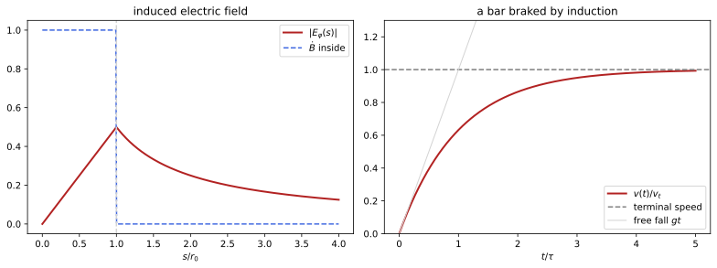
figures/emm_induction.sage.
The definition states the law of induction for a circuit that may move, and its local form for a fixed one. The electromotive force is the work per unit charge done around the circuit by the Lorentz force of Definition 5.
Definition 8 (Induction) For a closed curve C(t) moving with velocity \mathbf v at each of its points and bounding a surface S(t), the electromotive force is \mathcal E = \oint_C(\mathbf E + \mathbf v\times\mathbf B)\cdot d\boldsymbol\ell and the magnetic flux is \Phi_B = \int_S\mathbf B\cdot d\mathbf S, with C oriented by the normal of S through the right-hand rule. Faraday’s law of induction states that \mathcal E = -\frac{d\Phi_B}{dt}, \qquad\text{and for fixed curves}\qquad \nabla\times\mathbf E = -\frac{\partial\mathbf B}{\partial t} , \tag{10} together with \nabla\cdot\mathbf B = 0 at all times. The minus sign is Lenz’s law: the current driven by \mathcal E in a conducting loop produces a flux that opposes the change. The same equations hold in SI units (Maggiore 2023, sec. 3.1.2 and 4.3).
Veriphy. Pending.
Lean. Pending.
Sage. Pending.
A uniform field that grows inside a cylinder is the simplest source of an induced field. Symmetry and the integral form of Faraday’s law give it at once, inside and outside.
Example 122 (A growing field in a cylinder) Let \mathbf B = B(t)\mathbf e_z for s < r_0 and 0 outside. By symmetry \mathbf E = E_\varphi(s)\hat{\boldsymbol\varphi}, and the circle of radius s gives 2\pi sE_\varphi = -\dot B\pi\min(s, r_0)^2: E_\varphi = -\frac{\dot Bs}{2} inside and -\frac{\dot Br_0^2}{2s} outside (Figure 6). Outside, \mathbf B = 0 but \mathbf E \neq 0: the induced field is not produced locally by \partial_t\mathbf B (Pierrus 2018, Question 5.12).
The sign of the induced current follows from Lenz’s law without computing anything. The example works it out for a loop in a growing field.
Example 123 (Lenz’s law) A loop in the plane z = 0 sits in \mathbf B = B(t)\mathbf e_z with B > 0 growing. With the normal \mathbf e_z the circulation is counterclockwise seen from above, \mathcal E = -\dot B\cdotarea < 0, so the current flows clockwise, and by Example 62 its field inside the loop points along -\mathbf e_z, against the growth. If B decreases, the current reverses and supports the field (Maggiore 2023, sec. 4.3.1).
A coil rotating in a uniform field sees a flux that oscillates, which is how generators produce alternating voltages. The amplitude grows with the speed of rotation.
Example 124 (A rotating coil) A coil of N turns and area A rotating with angular velocity \omega about an axis perpendicular to a uniform \mathbf B has \Phi_B = NBA\cos\omega t, so \mathcal E = NBA\omega\sin\omega t. With N = 100, A = 100\,cm^2, B = 0.5\,T and 50\,Hz the peak is 157\,V (Pierrus 2018, Question 5.7).
When the circuit moves in a static field, the electromotive force comes entirely from the magnetic part of the Lorentz force. A bar sliding on rails is the standard example.
Example 125 (A bar sliding on rails) A bar of length \ell slides with velocity v on two parallel rails, closing a circuit in a uniform field B normal to its plane. Each charge in the bar feels q\mathbf v\times\mathbf B along the bar, so \mathcal E = Bv\ell, which is also -d\Phi_B/dt since the area changes at the rate \ell v (Macchi et al. 2023, Problem 6.21).
The flux rule for moving circuits combines the two mechanisms. The example derives it from the local law and the geometry of the moving surface.
Example 126 (Why the flux rule holds for moving circuits) When C moves, \frac{d\Phi_B}{dt} = \int_S\partial_t\mathbf B\cdot d\mathbf S + \oint_C\mathbf B\cdot(\mathbf v\times d\boldsymbol\ell): the first term is the change of the field, the second the flux swept by the moving boundary (the contribution of the strip swept by d\boldsymbol\ell in a time \delta t, with \nabla\cdot\mathbf B = 0 closing the surface). With \nabla\times\mathbf E = -\partial_t\mathbf B and \mathbf B\cdot(\mathbf v\times d\boldsymbol\ell) = -(\mathbf v\times\mathbf B)\cdot d\boldsymbol\ell this is -\mathcal E (Maggiore 2023, sec. 4.3.2).
A disc spinning in a magnetic field is a generator without any change of flux through a fixed loop. The motional term of the electromotive force does all the work.
Example 127 (The Faraday disc) A conducting disc of radius a rotates with angular velocity \omega in a uniform B along its axis, with contacts at the centre and the rim. A charge at radius s moves with speed \omega s and feels q\omega sB radially, so \mathcal E = \int_0^a\omega sB\,ds = \frac12B\omega a^2, a steady voltage from a steady field (Macchi et al. 2023, Problem 6.11).
The flux through a circuit includes the field of its own current and that of neighbouring circuits. The inductances of Proposition 2 then measure the induced electromotive forces.
Example 128 (Self and mutual induction) For circuits with currents I_b the fluxes are \Phi_a = \sum_bL_{ab}I_b (Proposition 2), so slowly varying currents induce \mathcal E_a = -\sum_bL_{ab}\dot I_b. A coil opposes changes of its own current with the back electromotive force -L\dot I, and a transformer’s secondary receives -L_{21}\dot I_1 from the primary.
Switching a current on requires work against the back electromotive force. That work is the magnetic energy found in statics, which is now justified as an energy.
Example 129 (The work of switching on a current) To raise the current in a coil from 0 to I, a source must supply the power -\mathcal EI = LI\dot I against the back electromotive force, a total of \int_0^ILI'\,dI' = \frac12LI^2, the magnetic energy W_B of Proposition 2. For several circuits the same computation gives \frac12\sum L_{ab}I_aI_b, which completes the proof of that proposition.
A conducting tether hanging from a satellite crosses the Earth’s field at orbital speed. The motional electromotive force is large enough to be used as a power source or a brake.
Example 130 (The tethered satellite) A satellite at v = 8\,km/s in the magnetic equatorial plane, where B = 3.2\times10^{-5}\,T, trails a vertical cable of length \ell = 1\,km. Since \mathbf v, \mathbf B and the cable are mutually perpendicular, \mathcal E = vB\ell = 256\,V (Macchi et al. 2023, Problem 6.4).
The induced electric field is not conservative, so it cannot be the gradient of a potential. This is the first sign that the potentials of statics must be generalised.
Example 131 (The induced field has no potential) The field of Example 122 outside the cylinder, -\frac{\dot Br_0^2}{2s}\hat{\boldsymbol\varphi}, has zero curl, yet its circulation around the cylinder is -\dot B\pi r_0^2 \neq 0. A charge carried once around gains energy at each turn, so no function \phi with \mathbf E = -\nabla\phi exists; Definition 10 repairs this with a vector potential.
The betatron accelerates electrons on a circle of fixed radius with the field that grows through the orbit. The condition for a fixed radius links the field at the orbit to the average field inside it.
Example 132 (The betatron) An electron on a circle of radius R is accelerated by E_\varphi = -\frac{1}{2\pi R}\frac{d\Phi_B}{dt}, so \dot p = \frac{e}{2\pi R}\dot\Phi_B, while circular motion needs p = eRB(R) (Example 67, also valid relativistically for the momentum). Both hold at all times if \dot\Phi_B = 2\pi R^2\dot B(R), that is, if the average field inside the orbit is twice the field at the orbit (Exercise 129) (Pierrus 2018, Question 5.13).
The exercises start with direct uses of the flux rule. The first one has a loop at rest in an oscillating field.
Exercise 124 (A loop in an oscillating field) A square loop of side a and resistance R lies perpendicular to \mathbf B = B_0\cos\omega t\,\mathbf e_z. Find the electromotive force, the current, and the average power dissipated.
\Phi_B = a^2B_0\cos\omega t, so \mathcal E = a^2B_0\omega\sin\omega t and I = \mathcal E/R (neglecting self-induction). The average of \mathcal E^2/R is \frac{a^4B_0^2\omega^2}{2R}.
Veriphy. Pending.
Lean. Pending.
Sage. Pending.
The induced field of Example 122 can be checked against the local law. The second exercise does it with Sage in Cartesian coordinates.
Exercise 125 (The induced field, checked) With Sage, write the field of Example 122 in Cartesian coordinates and check \nabla\times\mathbf E = -\partial_t\mathbf B inside and outside the cylinder and \nabla\cdot\mathbf E = 0.
Inside \mathbf E = \frac{\dot B}2(y, -x, 0), with curl -\dot B\mathbf e_z; outside \mathbf E = \frac{\dot Br_0^2}{2s^2}(y, -x, 0), with zero curl; both are divergence free:
t, x, y, z = var("t x y z")
X = [x, y, z]
def div(F): return sum(diff(F[i], X[i]) for i in range(3)).simplify_full()
def curl(F): return vector([diff(F[2], y) - diff(F[1], z), diff(F[0], z) - diff(F[2], x), diff(F[1], x) - diff(F[0], y)]).simplify_full()
def grad(f): return vector([diff(f, v) for v in X])
B = function('B')(t); r0 = var('r0')
Ein = diff(B, t) / 2 * vector([y, -x, 0]); Eout = diff(B, t) * r0^2 / (2 * (x^2 + y^2)) * vector([y, -x, 0])
print('inside: curl E =', curl(Ein), '; -dB/dt e_z =', (0, 0, -diff(B, t)), '; div E =', div(Ein))
print('outside: curl E =', curl(Eout), '; div E =', div(Eout))
s, ph = var('s ph'); assume(s > 0)
circ = integrate((Eout[0].subs(x=s*cos(ph), y=s*sin(ph)) * (-s*sin(ph)) + Eout[1].subs(x=s*cos(ph), y=s*sin(ph)) * s*cos(ph)).simplify_full(), ph, 0, 2*pi)
print('circulation outside at radius s:', circ, '= -pi r0^2 dB/dt')Output:
inside: curl E = (0, 0, -diff(B(t), t)) ; -dB/dt e_z = (0, 0, -diff(B(t), t)) ; div E = 0
outside: curl E = (0, 0, 0) ; div E = 0
circulation outside at radius s: -pi*r0^2*diff(B(t), t) = -pi r0^2 dB/dtVeriphy. Pending.
Lean. Pending.
Sage. Pending.
A bar falling between vertical rails in a magnetic field is braked by the induced current. The third exercise solves its motion with Sage and checks the energy balance.
Exercise 126 (A falling bar) A horizontal bar of mass m and length \ell falls from rest between two vertical rails joined at the top through a resistance R, in a horizontal field B normal to the plane of the rails. With Sage, solve for v(t), find the terminal speed, and check that at that speed the power of gravity equals the Joule power (Macchi et al. 2023, Problem 6.3; Pierrus 2018, Question 5.6).
I = B\ell v/R and the braking force is IB\ell, so m\dot v = mg - \frac{B^2\ell^2}{R}v, v = v_t(1 - e^{-t/\tau}) with v_t = \frac{mgR}{B^2\ell^2} and \tau = \frac{mR}{B^2\ell^2}. At v_t, mgv_t = I^2R (Figure 6):
t, m, g, R, B, l = var('t m g R B l', domain='positive')
v = function('v')(t)
sol = desolve(m * diff(v, t) == m * g - B^2 * l^2 / R * v, v, ics=[0, 0], ivar=t).simplify_full()
print('v(t) =', sol)
vt = limit(sol, t=oo); print('terminal speed:', vt)
I = B * l * vt / R
print('power of gravity m g v_t =', (m * g * vt).simplify_full(), '; Joule power I^2 R =', (I^2 * R).simplify_full())Output:
v(t) = (R*g*m*e^(B^2*l^2*t/(R*m)) - R*g*m)*e^(-B^2*l^2*t/(R*m))/(B^2*l^2)
terminal speed: R*g*m/(B^2*l^2)
power of gravity m g v_t = R*g^2*m^2/(B^2*l^2) ; Joule power I^2 R = R*g^2*m^2/(B^2*l^2)Veriphy. Pending.
Lean. Pending.
Sage. Pending.
A real generator coil has inductance as well as resistance. The fourth exercise finds the current it delivers with Sage.
Exercise 127 (A generator with self-inductance) The coil of Example 124 has resistance R and self-inductance L, so L\dot I + RI = NBA\omega\sin\omega t. With Sage, find the steady oscillating current, its amplitude and its phase lag behind the electromotive force (Pierrus 2018, Question 5.7).
I = \frac{NBA\omega}{\sqrt{R^2 + \omega^2L^2}}\sin(\omega t - \delta) with \tan\delta = \omega L/R; the inductance limits the current at high speed:
t, R, L, w, E0 = var('t R L w E0', domain='positive')
a, b = var('a b')
I = a * sin(w * t) + b * cos(w * t)
lhs = (L * diff(I, t) + R * I - E0 * sin(w * t)).expand()
# the coefficients of sin(w t) and cos(w t) must vanish
sol = solve([lhs.subs(t=0) == 0, lhs.subs(t=pi / (2 * w)) == 0], [a, b])[0]
print('steady current: a =', sol[0].rhs().simplify_full(), ', b =', sol[1].rhs().simplify_full())
amp = sqrt((a^2 + b^2).subs(sol)).simplify_full()
print('amplitude equals E0/sqrt(R^2 + w^2 L^2):', bool((amp - E0 / sqrt(R^2 + w^2 * L^2)).simplify_full() == 0))
print('tan(phase lag) = -b/a =', (-b / a).subs(sol).simplify_full())
print('check: the residual vanishes identically:', (lhs.subs(sol)).simplify_full())Output:
steady current: a = E0*R/(L^2*w^2 + R^2) , b = -E0*L*w/(L^2*w^2 + R^2)
amplitude equals E0/sqrt(R^2 + w^2 L^2): True
tan(phase lag) = -b/a = L*w/R
check: the residual vanishes identically: 0Veriphy. Pending.
Lean. Pending.
Sage. Pending.
The Faraday disc of Example 127 delivers power when its circuit is closed. The fifth exercise finds the torque needed to keep it turning.
Exercise 128 (Driving the Faraday disc) The disc of Example 127 is connected through a resistance R. Find the current, the torque of the magnetic force on the radial current, and check that the mechanical power equals the Joule power (Macchi et al. 2023, Problem 6.11).
I = \frac{B\omega a^2}{2R}. The radial current in the element ds feels IB\,ds at radius s, so the torque is \int_0^aIBs\,ds = \frac12IBa^2, and the power \frac12IBa^2\omega = I\mathcal E = I^2R.
Veriphy. Pending.
Lean. Pending.
Sage. Pending.
The betatron condition of Example 132 follows from the two equations stated there. The sixth exercise asks for the derivation. The derivation uses only the two equations.
Exercise 129 (The betatron condition) Show that \dot p = \frac{e}{2\pi R}\dot\Phi_B and p = eRB(R) are compatible for all times, starting from rest in zero field, if and only if \Phi_B(t) = 2\pi R^2B(R, t).
Integrating the first equation from rest gives p = \frac{e\Phi_B}{2\pi R}; equating with eRB(R) gives \Phi_B = 2\pi R^2B(R), that is, the mean field \Phi_B/\pi R^2 is 2B(R). Conversely, if this holds at all times both equations agree.
Veriphy. Pending.
Lean. Pending.
Sage. Pending.
A small loop rotating inside a large one sees an oscillating flux. The seventh exercise computes the induced current and its power with Sage.
Exercise 130 (A loop rotating inside a loop) A small loop of radius b and resistance R rotates with angular velocity \omega about a diameter at the centre of a large coplanar loop of radius a \gg b carrying I. With Sage, find the induced current, the average Joule power and the average torque needed (Macchi et al. 2023, Problem 6.12).
The field at the centre is I/2a, so \Phi_B = \frac{\pi b^2I}{2a}\cos\omega t, I_b = \frac{\pi b^2I\omega}{2aR}\sin\omega t, and the average power is \frac{\pi^2b^4I^2\omega^2}{8a^2R}, supplied by an average torque equal to this power divided by \omega:
t, I, a, b, R, w = var('t I a b R w', domain='positive')
Phi = pi * b^2 * I / (2 * a) * cos(w * t)
emf = -diff(Phi, t); Ib = emf / R
print('induced current:', Ib)
Pav = (w / (2 * pi) * integrate(Ib^2 * R, t, 0, 2 * pi / w)).simplify_full()
print('average Joule power:', Pav, '; average torque = P/w =', (Pav / w).simplify_full())Output:
induced current: 1/2*pi*I*b^2*w*sin(t*w)/(R*a)
average Joule power: 1/8*pi^2*I^2*b^4*w^2/(R*a^2) ; average torque = P/w = 1/8*pi^2*I^2*b^4*w/(R*a^2)Veriphy. Pending.
Lean. Pending.
Sage. Pending.
Sea water is a conductor moving through the Earth’s field. The eighth exercise estimates the currents and the braking they cause with Sage.
Exercise 131 (Currents in the ocean) Sea water of conductivity \sigma = 4\,S/m and density 1025\,kg/m^3 flows at 1\,m/s across the vertical component B = 5\times10^{-5}\,T of the Earth’s field. Taking \mathbf J = \sigma\mathbf v\times\mathbf B (no electrostatic field builds up), find J and the time scale of the magnetic braking \rho_m/\sigma B^2 (Macchi et al. 2023, Problem 6.7).
J = 2\times10^{-4}\,A/m^2, and the force density JB decelerates the water on the time scale \rho_m/(\sigma B^2) = 1.0 \times10^{11}\,s, three thousand years: negligible for ocean currents:
sigma, v, B, rho_m = 4.0, 1.0, 5e-5, 1025.0
J = sigma * v * B; tau = rho_m / (sigma * B^2)
print('J = %.1e A/m^2; braking time rho/(sigma B^2) = %.2e s = %.0f years' % (J, tau, tau / 3.156e7))Output:
J = 2.0e-04 A/m^2; braking time rho/(sigma B^2) = 1.02e+11 s = 3248 yearsVeriphy. Pending.
Lean. Pending.
Sage. Pending.
The flux rule for moving circuits was derived in Example 126. The ninth exercise asks for the geometric step that was only sketched there.
Exercise 132 (The swept flux) Let S(t) move with the velocity field \mathbf v. Show, by applying \oint\mathbf B\cdot d\mathbf S = 0 to the closed surface formed by S(t), S(t + \delta t) and the strip swept by C, that the change of flux due to the motion is \delta t\oint_C\mathbf B\cdot(\mathbf v\times d\boldsymbol\ell) to first order.
Let V be the region swept by S between t and t + \delta t, with \mathbf B taken at the fixed time t. Its boundary is S(t + \delta t) with its own normal, S(t) with the opposite normal, and the strip swept by C, whose outward area element is d\boldsymbol\ell\times\mathbf v\,\delta t (for a counterclockwise loop moving along its normal, \hat{\boldsymbol\varphi}\times\mathbf e_z points outward). The outward flux vanishes, so \Phi(S(t + \delta t)) - \Phi(S(t)) = -\delta t\oint\mathbf B\cdot(d\boldsymbol\ell\times\mathbf v) = \delta t\oint\mathbf B\cdot(\mathbf v\times d\boldsymbol\ell), which is -\delta t\oint(\mathbf v\times\mathbf B)\cdot d\boldsymbol\ell.
Veriphy. Pending.
Lean. Pending.
Sage. Pending.
The magnetic energy of two coupled circuits must not depend on the order in which their currents are switched on. The last exercise shows that this forces the mutual inductances to be equal.
Exercise 133 (Why mutual inductances are symmetric) Switch on I_1 to its final value with I_2 = 0, then I_2 with I_1 held fixed, and compute the work against the electromotive forces of Example 128; then do it in the other order. Deduce L_{12} = L_{21}.
First order: \frac12L_{11}I_1^2, then \frac12L_{22}I_2^2 + L_{12}I_1I_2 (the source of circuit 1 must work against -L_{12}\dot I_2 to hold I_1). Second order: \frac12L_{22}I_2^2 + \frac12L_{11}I_1^2 + L_{21}I_1I_2. The final state has a single energy, so L_{12} = L_{21}, as Neumann’s formula of Proposition 2 shows directly.
Veriphy. Pending.
Lean. Pending.
Sage. Pending.
Maxwell’s equations
Ampère’s law \nabla\times\mathbf B = \mathbf J cannot hold when charge accumulates, because the divergence of a curl vanishes while \nabla\cdot\mathbf J = -\partial_t\rho does not. Maxwell added to the current the term \partial_t\mathbf E, which restores consistency with Gauss’s law, and the resulting four equations, with the Lorentz force, are the whole of classical electrodynamics.
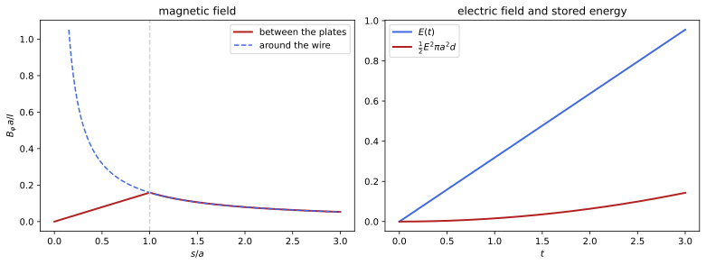
figures/emm_capacitor.sage.
The definition collects the four equations. Two contain the sources, two do not, and the consistency of the first two requires the conservation of charge.
Definition 9 (Maxwell’s equations) A charge density \rho(t, \mathbf x) and a current density \mathbf J(t, \mathbf x) determine the electric and magnetic fields \mathbf E(t, \mathbf x), \mathbf B(t, \mathbf x) through Maxwell’s equations \nabla\cdot\mathbf E = \rho, \qquad \nabla\times\mathbf B - \frac{\partial\mathbf E}{\partial t} = \mathbf J, \qquad \nabla\cdot\mathbf B = 0, \qquad \nabla\times\mathbf E + \frac{\partial\mathbf B}{\partial t} = 0 , \tag{11} and the fields act on a charge q with velocity \mathbf v by the Lorentz force q(\mathbf E + \mathbf v\times\mathbf B) of Definition 5. The term \partial_t\mathbf E, the displacement current, makes the first two equations consistent only if the sources satisfy the continuity equation \partial_t\rho + \nabla\cdot\mathbf J = 0. In SI units the equations read \nabla\cdot\mathbf E = \rho/\varepsilon_0, \nabla\times\mathbf B - \frac1{c^2}\partial_t\mathbf E = \mu_0\mathbf J, \nabla\cdot\mathbf B = 0, \nabla\times\mathbf E + \partial_t\mathbf B = 0, with c^2 = 1/\varepsilon_0 \mu_0 (Maggiore 2023, secs. 3.1–3.2.1).
Veriphy. Pending.
Lean. Pending.
Sage. Pending.
A charging capacitor is the case for which Maxwell’s term was invented. Between the plates no charge moves, yet the magnetic field there is the same as around the wire.
Example 133 (A charging capacitor) Circular plates of radius a are charged by a current I, so \sigma = Q/\pi a^2 and E = Q/\pi a^2 between them, with \partial_tE = I/\pi a^2. The Ampère-Maxwell law on a circle of radius s midway between the plates gives 2\pi sB = \pi\min(s, a)^2\partial_tE: B = \frac{Is}{2\pi a^2} inside and \frac{I}{2\pi s} outside, as around the wire (Figure 7). Without the displacement current a circle around the wire would link a current I through one spanning surface and none through another (Exercise 78) (Macchi et al. 2023, Problem 8.2).
The divergence of the Ampère-Maxwell law gives the continuity equation. The integral form of the result says that charge is conserved locally.
Example 134 (Conservation of charge) \nabla\cdot(\nabla\times\mathbf B) = 0 gives \nabla\cdot\mathbf J = -\partial_t\nabla\cdot\mathbf E = -\partial_t\rho. Integrated over a fixed region, \frac{d}{dt}\int_V\rho = -\oint_{\partial V}\mathbf J\cdot d\mathbf S: charge changes only by flowing through the boundary (Maggiore 2023, sec. 3.2.1; Pierrus 2018, Question 7.1).
The sources of point charges satisfy the continuity equation automatically. The example checks it with the delta function. Point charges are the sources of every microscopic field.
Example 135 (Point charges in motion) For charges q_a on trajectories \mathbf x_a(t), \rho = \sum_aq_a\delta^3(\mathbf x - \mathbf x_a(t)) and \mathbf J = \sum_aq_a\dot{\mathbf x}_a\delta^3(\mathbf x - \mathbf x_a(t)) (Definition 24 of Differential equations). By the chain rule \partial_t\delta^3(\mathbf x - \mathbf x_a(t)) = -\dot{\mathbf x}_a\cdot\nabla\delta^3(\mathbf x - \mathbf x_a(t)), which is -\nabla\cdot\mathbf J term by term (Maggiore 2023, eqs. (3.25)-(3.30)).
When nothing depends on time, the equations split into the electrostatics and magnetostatics of the previous section. The example states the limit precisely.
Example 136 (The static limit) For time-independent \rho and \mathbf J and fields, Equation 11 becomes Equation 2 and Equation 5, and the continuity equation becomes \nabla\cdot\mathbf J = 0, the steady-current condition of Definition 5. The solutions vanishing at infinity are the Coulomb and Biot-Savart fields (Proposition 1).
Integrating the four equations over volumes and surfaces gives the forms in which they were discovered. Each is a statement about fluxes and circulations.
Example 137 (The integral forms) By Theorem 1 of Differential geometry, for a fixed region V and a fixed surface S with boundary C: \oint_{\partial V}\mathbf E\cdot d\mathbf S = Q_V, \oint_{\partial V}\mathbf B\cdot d\mathbf S = 0, \oint_C\mathbf B\cdot d\boldsymbol\ell = I_S + \frac{d}{dt}\int_S \mathbf E\cdot d\mathbf S and \oint_C\mathbf E\cdot d\boldsymbol\ell = -\frac{d}{dt}\int_S\mathbf B\cdot d\mathbf S (Maggiore 2023, sec. 3.1.2).
In empty space the equations couple \mathbf E and \mathbf B into waves. Taking one more curl shows that each component satisfies the wave equation with unit speed, the speed of light.
Example 138 (Waves in vacuum) With \rho = 0 and \mathbf J = 0, \nabla\times(\nabla\times\mathbf E) = -\partial_t\nabla\times\mathbf B = -\partial_t^2\mathbf E, and \nabla\times\nabla\times = \nabla\nabla\cdot - \nabla^2 with \nabla\cdot\mathbf E = 0 gives \partial_t^2\mathbf E - \nabla^2\mathbf E = 0, and likewise for \mathbf B. In SI units the speed is 1/\sqrt{\varepsilon_0\mu_0} = 2.998\times10^8\,m/s, which Maxwell recognised as the speed of light; Section 1.3 studies these waves.
Six unknown components obey eight equations. The two divergence equations are not independent dynamical equations but constraints, preserved by the other two.
Example 139 (Constraints and evolution) The curl equations give \partial_t\mathbf B and \partial_t\mathbf E and so evolve the fields. The divergence equations contain no time derivative: they constrain the initial data and then hold at all times, since \partial_t(\nabla\cdot\mathbf B) = -\nabla\cdot\nabla\times\mathbf E = 0 and \partial_t(\nabla\cdot\mathbf E - \rho) = \nabla\cdot(\nabla\times\mathbf B - \mathbf J) - \partial_t\rho = 0 by continuity (Exercise 139) (Maggiore 2023, sec. 3.3).
The displacement current is negligible in ordinary circuits. The example estimates when, which defines the quasi-static regime used in Section 1.1 and in the induction unit.
Example 140 (When the displacement current can be neglected) For fields varying at frequency f over a circuit of size d, \partial_t\mathbf E in \nabla\times\mathbf B compares with the other terms like (fd/c)^2. For d = 30\,cm the ratio is small below about c/d = 10^9\,Hz: up to radio frequencies a laboratory circuit is quasi-static, and its fields at each instant are those of statics with the instantaneous sources (Pierrus 2018, Question 5.1).
In a conductor that obeys Ohm’s law, a charge placed inside disappears exponentially. The time constant is extremely short for metals.
Example 141 (Charge relaxation in a conductor) In a medium with \mathbf J = \sigma\mathbf E (Ohm’s law, with conductivity \sigma), continuity and Gauss’s law give \partial_t\rho = -\sigma\nabla\cdot\mathbf E = -\sigma\rho, so \rho = \rho_0e^{-\sigma t}, with \tau = \varepsilon_0/\sigma in SI units: 1.5\times10^{-19}\,s for copper. This is why conductors in equilibrium carry charge only on their surface (Definition 3) (Macchi et al. 2023, Problem 4.2).
The constants \varepsilon_0 and \mu_0 enter only through the coupling to sources and through c. The last example relates the SI form to the form used here.
Example 142 (From SI units to Heaviside-Lorentz units) With \mathbf E_{\text{HL}} = \sqrt{\varepsilon_0}\mathbf E_{\text{SI}}, \mathbf B_{\text{HL}} = \mathbf B_{\text{SI}}/\sqrt{\mu_0}, \rho_{\text{HL}} = \rho_{\text{SI}}/\sqrt{\varepsilon_0}, \mathbf J_{\text{HL}} = \mathbf J_{\text{SI}}/c\sqrt{\varepsilon_0} and time measured as ct, the SI equations become Equation 11. The energy density \frac12(\varepsilon_0E^2 + B^2/\mu_0) becomes \frac12(E^2 + B^2) (Maggiore 2023, Ch. 2 and Sec. 3.1.1).
The exercises start by checking the continuity equation for a moving charge cloud. The first one uses Sage. The density is carried along without changing shape.
Exercise 134 (A moving charge cloud) With Sage, check that \rho = f(\mathbf x - \mathbf vt) and \mathbf J = \mathbf v\rho, for an arbitrary function f and a constant \mathbf v, satisfy the continuity equation.
\partial_t\rho = -\mathbf v\cdot\nabla f and \nabla\cdot\mathbf J = \mathbf v\cdot\nabla f:
t, x, y, z = var("t x y z")
X = [x, y, z]
def div(F): return sum(diff(F[i], X[i]) for i in range(3)).simplify_full()
def curl(F): return vector([diff(F[2], y) - diff(F[1], z), diff(F[0], z) - diff(F[2], x), diff(F[1], x) - diff(F[0], y)]).simplify_full()
def grad(f): return vector([diff(f, v) for v in X])
v1, v2, v3 = var('v1 v2 v3')
f = function('f')
rho = f(x - v1 * t, y - v2 * t, z - v3 * t)
J = vector([v1, v2, v3]) * rho
print('d rho/dt + div J =', (diff(rho, t) + div(J)).simplify_full())Output:
d rho/dt + div J = 0Veriphy. Pending.
Lean. Pending.
Sage. Pending.
The magnetic field between capacitor plates was found in Example 133. The second exercise asks for the field when the current oscillates.
Exercise 135 (An alternating current through a capacitor) A capacitor with circular plates of radius a carries the current I = I_0\cos\omega t. Find \mathbf B between the plates, and the ratio of its largest value to the field just outside a wire of radius a carrying the same current.
B = \frac{I_0s}{2\pi a^2}\cos\omega t for s < a; at s = a it equals the field I_0/2\pi a at the surface of the wire, so the ratio is 1.
Veriphy. Pending.
Lean. Pending.
Sage. Pending.
A plane wave is a solution of the vacuum equations. The third exercise checks one with Sage and shows that a wrong relative orientation of the fields fails.
Exercise 136 (A plane wave) With Sage, check that \mathbf E = E_0\cos(z - t)\mathbf e_x, \mathbf B = E_0\cos(z - t)\mathbf e_y satisfies Equation 11 with \rho = 0, \mathbf J = 0, and that \mathbf B = E_0\cos(z - t)\mathbf e_x with the same \mathbf E does not.
All four equations hold for the first pair; for the second, \nabla\times\mathbf E + \partial_t\mathbf B \neq 0:
t, x, y, z = var("t x y z")
X = [x, y, z]
def div(F): return sum(diff(F[i], X[i]) for i in range(3)).simplify_full()
def curl(F): return vector([diff(F[2], y) - diff(F[1], z), diff(F[0], z) - diff(F[2], x), diff(F[1], x) - diff(F[0], y)]).simplify_full()
def grad(f): return vector([diff(f, v) for v in X])
E0 = var('E0')
E = vector([E0 * cos(z - t), 0, 0])
for name, B in [('B along e_y', vector([0, E0 * cos(z - t), 0])), ('B along e_x', vector([E0 * cos(z - t), 0, 0]))]:
print(name, ': div E =', div(E), ', div B =', div(B), ', curl E + dB/dt =', (curl(E) + diff(B, t)).simplify_full(), ', curl B - dE/dt =', (curl(B) - diff(E, t)).simplify_full())Output:
B along e_y : div E = 0 , div B = 0 , curl E + dB/dt = (0, 0, 0) , curl B - dE/dt = (0, 0, 0)
B along e_x : div E = 0 , div B = 0 , curl E + dB/dt = (-E0*cos(z)*sin(t) + E0*cos(t)*sin(z), E0*cos(z)*sin(t) - E0*cos(t)*sin(z), 0) , curl B - dE/dt = (E0*cos(z)*sin(t) - E0*cos(t)*sin(z), E0*cos(z)*sin(t) - E0*cos(t)*sin(z), 0)Veriphy. Pending.
Lean. Pending.
Sage. Pending.
Given fields determine their sources. The fourth exercise reads off \rho and \mathbf J with Sage and checks continuity. The homogeneous equations decide whether the fields are possible at all.
Exercise 137 (Sources of given fields) For \mathbf E = (xt, 0, 0) and \mathbf B = (0, 0, x^2y), compute \rho, \mathbf J and check the homogeneous equations and continuity with Sage. Are these possible electromagnetic fields?
\rho = t and \mathbf J = \nabla\times\mathbf B - \partial_t\mathbf E = (x^2 - x, -2xy, 0), with \partial_t\rho + \nabla\cdot\mathbf J = 1 - 1 = 0; \nabla\cdot\mathbf B = 0 and \nabla\times\mathbf E = 0 = -\partial_t\mathbf B, so these are possible fields, produced by these sources:
t, x, y, z = var("t x y z")
X = [x, y, z]
def div(F): return sum(diff(F[i], X[i]) for i in range(3)).simplify_full()
def curl(F): return vector([diff(F[2], y) - diff(F[1], z), diff(F[0], z) - diff(F[2], x), diff(F[1], x) - diff(F[0], y)]).simplify_full()
def grad(f): return vector([diff(f, v) for v in X])
E = vector([x * t, 0, 0]); B = vector([0, 0, x^2 * y])
rho = div(E); J = (curl(B) - diff(E, t)).simplify_full()
print('rho =', rho, '; J =', J)
print('div B =', div(B), '; curl E + dB/dt =', curl(E) + diff(B, t), '; continuity:', diff(rho, t) + div(J))Output:
rho = t ; J = (x^2 - x, -2*x*y, 0)
div B = 0 ; curl E + dB/dt = (0, 0, 0) ; continuity: 0Veriphy. Pending.
Lean. Pending.
Sage. Pending.
In a good conductor the conduction current dominates the displacement current. The fifth exercise compares them for copper and for sea water.
Exercise 138 (Conduction against displacement) For a field oscillating at angular frequency \omega in a medium with \mathbf J = \sigma\mathbf E, the ratio of the displacement current to the conduction current is \varepsilon_0\omega/\sigma in SI units. Evaluate it for copper (\sigma = 6\times10^7\,S/m) at 1\,GHz and for sea water (4\,S/m) at 1\,MHz and 1\,GHz.
\varepsilon_0\omega/\sigma is 9\times10^{-10} for copper at 1\,GHz, 1.4\times10^{-5} for sea water at 1\,MHz and 0.014 at 1\,GHz: metals are conductors up to the optical range, while sea water stops being one at microwave frequencies.
Veriphy. Pending.
Lean. Pending.
Sage. Pending.
The constraints of Example 139 are preserved by the evolution. The sixth exercise asks for the proof. It uses the continuity equation once.
Exercise 139 (The constraints are preserved) Assume the curl equations of Equation 11 for all t, the continuity equation, and \nabla\cdot\mathbf B = 0, \nabla\cdot \mathbf E = \rho at t = 0. Show that the divergence equations hold at all times.
\partial_t(\nabla\cdot\mathbf B) = -\nabla\cdot(\nabla\times\mathbf E) = 0, so \nabla\cdot\mathbf B keeps its initial value 0. \partial_t(\nabla\cdot\mathbf E - \rho) = \nabla\cdot(\nabla\times\mathbf B - \mathbf J) - \partial_t\rho = -\nabla\cdot\mathbf J - \partial_t \rho = 0, so \nabla\cdot\mathbf E - \rho stays 0.
Veriphy. Pending.
Lean. Pending.
Sage. Pending.
A spherically symmetric current produces no magnetic field, because a radial field cannot circulate. The seventh exercise shows how the displacement current cancels the conduction current in this case.
Exercise 140 (A radial current) A charge Q(t) at the centre leaks out radially and symmetrically, with \mathbf J = J(r, t)\hat{\mathbf n}. Show that \nabla\times\mathbf B - \partial_t\mathbf E = \mathbf J is satisfied with \mathbf B = 0, by computing \partial_t\mathbf E from Gauss’s law and continuity.
By symmetry \mathbf E = \frac{Q_r(t)}{4\pi r^2}\hat{\mathbf n} with Q_r the charge inside radius r, and continuity gives \dot Q_r = -4\pi r^2J. So \partial_t\mathbf E = -J\hat{\mathbf n} and -\partial_t\mathbf E = \mathbf J: the equation holds with \nabla\times\mathbf B = 0, and \mathbf B = 0 is the solution vanishing at infinity.
Veriphy. Pending.
Lean. Pending.
Sage. Pending.
The relaxation time of Example 141 varies enormously between materials. The eighth exercise computes it with Sage for several of them.
Exercise 141 (Relaxation times) With Sage, compute \tau = \varepsilon_0/\sigma for copper (6\times10^7\,S/m), sea water (4\,S/m), pure water (5.5\times 10^{-6}\,S/m) and glass (10^{-12}\,S/m), ignoring the dielectric constants of the materials.
1.5\times10^{-19}\,s, 2.2\times10^{-12}\,s, 1.6\,\mus and 8.9\,s: a charge on glass stays put for seconds:
eps0 = 8.854e-12
for name, sigma in [('copper', 6e7), ('sea water', 4.0), ('pure water', 5.5e-6), ('glass', 1e-12)]:
print('%-10s tau = %.2e s' % (name, eps0 / sigma))Output:
copper tau = 1.48e-19 s
sea water tau = 2.21e-12 s
pure water tau = 1.61e-06 s
glass tau = 8.85e+00 sVeriphy. Pending.
Lean. Pending.
Sage. Pending.
Magnetic charges have never been observed, but Maxwell’s equations can accommodate them. The ninth exercise finds the consistency condition. The modified equations are symmetric between electric and magnetic quantities.
Exercise 142 (Magnetic charges) Replace \nabla\cdot\mathbf B = 0 by \nabla\cdot\mathbf B = \rho_m and \nabla\times\mathbf E + \partial_t\mathbf B = 0 by -\mathbf J_m. Show that consistency requires \partial_t\rho_m + \nabla\cdot\mathbf J_m = 0, and find the force on a magnetic charge g that makes the equations symmetric under \mathbf E \to \mathbf B, \mathbf B \to -\mathbf E, (\rho, \mathbf J) \to (\rho_m, \mathbf J_m), (\rho_m, \mathbf J_m) \to (-\rho, -\mathbf J) (Macchi et al. 2023, Problem 8.9).
The divergence of the modified Faraday law gives \partial_t\rho_m = -\nabla\cdot\mathbf J_m. The force q(\mathbf E + \mathbf v \times\mathbf B) maps under the substitution to g(\mathbf B - \mathbf v\times\mathbf E), the force on a magnetic charge.
Veriphy. Pending.
Lean. Pending.
Sage. Pending.
With sources, the wave equations acquire source terms. The last exercise derives them. They are the starting point of radiation theory.
Exercise 143 (Wave equations with sources) From Equation 11, derive \partial_t^2\mathbf E - \nabla^2\mathbf E = -\nabla\rho - \partial_t\mathbf J and \partial_t^2\mathbf B - \nabla^2\mathbf B = \nabla\times\mathbf J.
\nabla\times(\nabla\times\mathbf E) = \nabla\rho - \nabla^2\mathbf E and also = -\partial_t(\mathbf J + \partial_t\mathbf E), which gives the first. \nabla\times(\nabla\times\mathbf B) = -\nabla^2\mathbf B = \nabla\times\mathbf J + \partial_t\nabla\times\mathbf E = \nabla\times\mathbf J - \partial_t^2\mathbf B gives the second.
Veriphy. Pending.
Lean. Pending.
Sage. Pending.
Energy and momentum of the field
In statics the energy of a configuration could be written as an integral of the squared fields. Maxwell’s equations show that this is more than a bookkeeping device: the field energy flows through space with a current density, the Poynting vector, and the field also carries momentum, so that the conservation laws of mechanics hold only for particles and field together.
The first proposition is the local law of energy conservation. Its source term is the power that the electric field delivers to the charges, since the magnetic force does no work (Example 68).
Proposition 4 (Poynting’s theorem) For fields satisfying Equation 11, the energy density u = \frac12(|\mathbf E|^2 + |\mathbf B|^2) and the Poynting vector \mathbf S = \mathbf E\times\mathbf B satisfy \frac{\partial u}{\partial t} + \nabla\cdot\mathbf S = -\mathbf E\cdot\mathbf J , \tag{12} and for point charges \int_V\mathbf E\cdot\mathbf J\,d^3x is the rate of change of their kinetic energy, so that \frac{d}{dt}\bigl(\int_Vu\,d^3x + E_{\text{kin}}\bigr) = -\oint_{\partial V}\mathbf S\cdot d\mathbf S. In SI units u = \frac12(\varepsilon_0E^2 + B^2/\mu_0) and \mathbf S = \mathbf E\times\mathbf B/\mu_0. Proof. Dot the Faraday law with \mathbf B and the Ampère-Maxwell law with \mathbf E and subtract: \mathbf B\cdot\partial_t\mathbf B + \mathbf E\cdot\partial_t\mathbf E = -\mathbf B\cdot\nabla\times\mathbf E + \mathbf E\cdot\nabla\times\mathbf B - \mathbf E\cdot\mathbf J, and \mathbf B\cdot\nabla\times\mathbf E - \mathbf E\cdot\nabla\times\mathbf B = \nabla\cdot(\mathbf E\times\mathbf B). For charges q_a, \int\mathbf E\cdot\mathbf J = \sum_aq_a\dot{\mathbf x}_a\cdot(\mathbf E + \dot{\mathbf x}_a\times\mathbf B) = \frac{d}{dt}\sum_a\frac12m_a|\dot{\mathbf x}_a|^2 by the Lorentz force law (Maggiore 2023, sec. 3.2.2, eqs. (3.31)-(3.47)).
Veriphy. Pending.
Lean. Pending.
Sage. Pending.
A resistive wire receives the energy it dissipates from the field around it, not along the wire. The Poynting vector at its surface points inward.
Example 143 (Energy flowing into a resistor) A straight wire of radius a and length \ell carries I with a voltage V across it, so E = V/\ell along the wire and B = I/2\pi a around it at the surface. \mathbf S = \mathbf E\times\mathbf B points radially inward with magnitude \frac{VI}{2\pi a\ell}, and the flux into the surface 2\pi a\ell is VI, the Joule power (Macchi et al. 2023, Problem 8.1).
A charging capacitor gains its energy through its rim. The Poynting vector there brings in exactly the growth of the field energy.
Example 144 (Energy flowing into a capacitor) For the capacitor of Example 133 with gap d, at the rim B = a\dot E/2 and \mathbf S points inward with magnitude Ea\dot E/2. The flux through the side 2\pi ad is \pi a^2dE\dot E = \frac{d}{dt}\bigl(\frac12E^2\pi a^2d\bigr), the rate of growth of the energy between the plates (Macchi et al. 2023, Problem 8.2).
A solenoid whose current grows stores magnetic energy, fed through its winding by the induced electric field. The balance is the magnetic counterpart of the previous example.
Example 145 (Energy flowing into a solenoid) In a long solenoid of radius a with B = nI(t), the induced field at the winding is E_\varphi = -a\dot B/2 (Example 122), and \mathbf S points inward with magnitude aB\dot B/2. Through a length \ell the flux is \pi a^2\ell B\dot B = \frac{d}{dt}\bigl(\frac12B^2\pi a^2\ell\bigr) (Macchi et al. 2023, Problem 8.3).
A plane wave carries energy in its direction of motion. The energy density and the flux are related as for anything moving at unit speed.
Example 146 (Energy of a plane wave) For the wave of Exercise 136, u = E_0^2\cos^2(z - t) and \mathbf S = E_0^2\cos^2(z - t)\mathbf e_z = u\,\mathbf e_z, so \partial_tu + \partial_zS_z = 0: the energy moves along \mathbf e_z at the speed of light, and the time-averaged intensity is \frac12E_0^2 (\frac12c\varepsilon_0E_0^2 in SI units).
Sunlight is the most familiar energy flux. Its intensity at the Earth fixes the field strengths in the light. The numbers give a feeling for the strength of radiation fields.
Example 147 (The fields in sunlight) Sunlight above the atmosphere has intensity 1361\,W/m^2. Writing \langle S\rangle = c\varepsilon_0E_{\text{rms}}^2, the root-mean-square electric field is 716\,V/m and the magnetic field E_{\text{rms}}/c = 2.4\,\muT, a twentieth of the Earth’s static field.
Static fields can have a non-zero Poynting vector. The energy then circulates without any net flow, as the theorem requires.
Example 148 (Circulating energy in static fields) A point charge placed next to a bar magnet has \mathbf S = \mathbf E\times\mathbf B \neq 0, circling the magnet’s axis. Since \partial_tu = 0 and \mathbf E\cdot\mathbf J = 0 away from sources, \nabla\cdot\mathbf S = 0: energy flows in closed loops and none accumulates. The circulation is real enough to carry angular momentum (Proposition 5).
The local energy density and flux are not unique. The theorem fixes them only up to terms that do not change the integrated balance.
Example 149 (What the theorem does not fix) For any vector fields \mathbf v and \mathbf w, u' = u - \nabla\cdot\mathbf v and \mathbf S' = \mathbf S + \partial_t\mathbf v + \nabla \times\mathbf w satisfy the same equation Equation 12. The choice u = \frac12(E^2 + B^2), \mathbf S = \mathbf E\times\mathbf B is singled out by the relativistic energy-momentum tensor of the special relativity chapter and, ultimately, by gravity (Maggiore 2023, sec. 3.2.2, note 11).
In an ohmic conductor the work done by the field on the charges becomes heat. The source term of the theorem is then the Joule power density.
Example 150 (Joule heating) With \mathbf J = \sigma\mathbf E (Example 141), \mathbf E\cdot\mathbf J = \sigma|\mathbf E|^2 = |\mathbf J|^2/\sigma \geq 0: the field always loses energy to an ohmic medium. For the wire of Example 143, \int\sigma E^2 = \sigma\frac{V^2}{\ell^2}\pi a^2\ell = V^2/R with R = \ell/\sigma\pi a^2, the power found there.
A coaxial cable carries power along its length in the space between the conductors. Integrating the Poynting vector over that space gives the product of voltage and current.
Example 151 (Power along a coaxial cable) Between the conductors of a cable with voltage V and current I, E = \frac{V}{s\ln(b/a)} (Example 34) and B = \frac{I}{2\pi s} (Example 75), so S_z = \frac{VI}{2\pi s^2\ln(b/a)} and \int_a^bS_z2\pi s\,ds = VI: the energy travels in the dielectric, the wires guide it.
The source term was identified with the change of kinetic energy using non-relativistic particles. The last example notes that the identification survives in relativity.
Example 152 (The work done on fast particles) For a particle with momentum \mathbf p and energy \mathcal E_p = \sqrt{m^2 + |\mathbf p|^2}, the Lorentz force law \dot{\mathbf p} = q(\mathbf E + \mathbf v\times\mathbf B) holds with \mathbf v = \mathbf p/\mathcal E_p, and \dot{\mathcal E}_p = \mathbf v\cdot\dot{\mathbf p} = q\mathbf v\cdot\mathbf E. So \int\mathbf E\cdot\mathbf J is the rate of change of the relativistic energy, which the special relativity chapter justifies (Maggiore 2023, sec. 3.2.2, eqs. (3.49)-(3.55)).
The exercises start with the vector identity behind the theorem. The first checks it with Sage for arbitrary fields. The identity holds for any vector fields, solutions or not.
Exercise 144 (The identity behind the theorem) With Sage, check \nabla\cdot(\mathbf E\times\mathbf B) = \mathbf B\cdot\nabla\times\mathbf E - \mathbf E\cdot\nabla\times\mathbf B for arbitrary smooth fields, written with symbolic functions.
Both sides expand to the same sum of products of components and first derivatives:
t, x, y, z = var("t x y z")
X = [x, y, z]
def div(F): return sum(diff(F[i], X[i]) for i in range(3)).simplify_full()
def curl(F): return vector([diff(F[2], y) - diff(F[1], z), diff(F[0], z) - diff(F[2], x), diff(F[1], x) - diff(F[0], y)]).simplify_full()
def grad(f): return vector([diff(f, v) for v in X])
E = vector([function('E%d' % i)(t, x, y, z) for i in range(3)]); B = vector([function('B%d' % i)(t, x, y, z) for i in range(3)])
print('difference:', (div(E.cross_product(B)) - B.dot_product(curl(E)) + E.dot_product(curl(B))).simplify_full())Output:
difference: 0Veriphy. Pending.
Lean. Pending.
Sage. Pending.
The capacitor of Example 144 can be integrated explicitly. The second exercise does it with Sage, including the region outside the rim.
Exercise 145 (Energy balance of a charging capacitor) With Sage, for E(t) = It/\pi a^2 between circular plates of radius a at distance d, compute \mathbf B and \mathbf S for s < a, check Equation 12 pointwise there, and integrate the flux through the cylinder of radius s.
B_\varphi = \frac{Is}{2\pi a^2}, S_s = -\frac{EIs}{2\pi a^2}, and \partial_tu + \frac1s\partial_s(sS_s) = 0; the flux through radius s is the rate of growth of the energy inside it:
t, s, r, I, a, d = var('t s r I a d', domain='positive')
E = I * t / (pi * a^2)
Bf = lambda rr: I * rr / (2 * pi * a^2)
print('B from the Ampere-Maxwell law (2 pi s B = pi s^2 dE/dt):', bool(2 * pi * s * Bf(s) == pi * s^2 * diff(E, t)))
u = (E^2 + Bf(s)^2) / 2; Ss = -E * Bf(s) # S = E e_z x B phi-hat = -E B s-hat
print('du/dt + (1/s) d(s S_s)/ds =', (diff(u, t) + diff(s * Ss, s) / s).simplify_full())
flux_in = (-2 * pi * s * d * Ss).simplify_full()
energy = integrate((E^2 + Bf(r)^2) / 2 * 2 * pi * r * d, r, 0, s)
print('inward flux through radius s:', flux_in, '; d/dt of the energy inside:', diff(energy, t).simplify_full())Output:
B from the Ampere-Maxwell law (2 pi s B = pi s^2 dE/dt): True
du/dt + (1/s) d(s S_s)/ds = 0
inward flux through radius s: I^2*d*s^2*t/(pi*a^4) ; d/dt of the energy inside: I^2*d*s^2*t/(pi*a^4)Veriphy. Pending.
Lean. Pending.
Sage. Pending.
A laser beam has a modest power but a small cross-section. The third exercise finds the field amplitude in it.
Exercise 146 (The field of a laser pointer) A 1\,mW laser beam has a cross-section of 1\,mm^2. Find its intensity and the amplitude of its electric and magnetic fields.
I = 10^3\,W/m^2, and I = \frac12c\varepsilon_0E_0^2 gives E_0 = 870\,V/m and B_0 = E_0/c = 2.9\,\muT: comparable to sunlight, but in one colour and one direction.
Veriphy. Pending.
Lean. Pending.
Sage. Pending.
A standing wave has fields but no net energy flux. The fourth exercise checks Maxwell’s equations and Poynting’s theorem for one with Sage.
Exercise 147 (A standing wave) With Sage, check that \mathbf E = E_0\sin z\cos t\,\mathbf e_x, \mathbf B = -E_0\cos z\sin t\,\mathbf e_y solves the vacuum equations, compute u and \mathbf S, check Equation 12, and the time average of \mathbf S.
All equations hold, S_z = -E_0^2\sin z\cos z\sin t\cos t averages to zero over a period, and energy sloshes between the electric and the magnetic nodes:
t, x, y, z = var("t x y z")
X = [x, y, z]
def div(F): return sum(diff(F[i], X[i]) for i in range(3)).simplify_full()
def curl(F): return vector([diff(F[2], y) - diff(F[1], z), diff(F[0], z) - diff(F[2], x), diff(F[1], x) - diff(F[0], y)]).simplify_full()
def grad(f): return vector([diff(f, v) for v in X])
E0 = var('E0')
E = vector([E0 * sin(z) * cos(t), 0, 0]); B = vector([0, -E0 * cos(z) * sin(t), 0])
print('div E, div B:', div(E), div(B), '; curl E + dB/dt =', (curl(E) + diff(B, t)).simplify_full(), '; curl B - dE/dt =', (curl(B) - diff(E, t)).simplify_full())
u = (E.dot_product(E) + B.dot_product(B)) / 2; S = E.cross_product(B)
print('S =', S, '; du/dt + div S =', (diff(u, t) + div(S)).simplify_full())
print('time average of S_z:', integrate(S[2], t, 0, 2 * pi) / (2 * pi))Output:
div E, div B: 0 0 ; curl E + dB/dt = (0, 0, 0) ; curl B - dE/dt = (0, 0, 0)
S = (0, 0, -E0^2*cos(t)*cos(z)*sin(t)*sin(z)) ; du/dt + div S = 0
time average of S_z: 0Veriphy. Pending.
Lean. Pending.
Sage. Pending.
A capacitor discharging through a resistor converts its field energy into heat. The fifth exercise checks the balance with Sage.
Exercise 148 (A discharging capacitor) A capacitor C charged to V_0 discharges through R. With Sage, find I(t), the total heat \int I^2R\,dt, and compare with the initial energy; which way does the Poynting vector point at the rim of the capacitor?
I = \frac{V_0}Re^{-t/RC} and \int_0^\infty I^2R\,dt = \frac12CV_0^2. At the rim \mathbf S now points outward, since \dot E < 0:
t, R, C, V0 = var('t R C V0', domain='positive')
q = function('q')(t)
sol = desolve(R * diff(q, t) + q / C == 0, q, ics=[0, C * V0], ivar=t)
I = -diff(sol, t)
print('q(t) =', sol, '; I(t) =', I.simplify_full())
print('heat:', integrate(I^2 * R, t, 0, oo).simplify_full(), '; initial energy:', C * V0^2 / 2)Output:
q(t) = C*V0*e^(-t/(C*R)) ; I(t) = V0*e^(-t/(C*R))/R
heat: 1/2*C*V0^2 ; initial energy: 1/2*C*V0^2Veriphy. Pending.
Lean. Pending.
Sage. Pending.
A wire’s Poynting flux can be computed without the field inside the wire. The sixth exercise asks why the result does not depend on the wire’s radius.
Exercise 149 (Any surface around the wire) Show that the flux of \mathbf S into a coaxial cylinder of radius s > a around the wire of Example 143 is also VI, assuming E = V/\ell along the wire just outside it.
The tangential component of \mathbf E is continuous, so outside the wire E_z = V/\ell still (for a long wire), and B = I/2\pi s; the flux 2\pi s\ell\cdot\frac V\ell\cdot\frac{I}{2\pi s} = VI is independent of s, since no energy is dissipated in the space between the cylinders.
Veriphy. Pending.
Lean. Pending.
Sage. Pending.
The ambiguity of Example 149 is a statement about divergences. The seventh exercise asks for the check. Divergences and curls can be moved between the two terms.
Exercise 150 (Redefining the energy density) Show that u' = u - \nabla\cdot\mathbf v and \mathbf S' = \mathbf S + \partial_t\mathbf v + \nabla\times\mathbf w satisfy Equation 12, and that the total energy in a region and the flux through its boundary change by equal amounts.
\partial_tu' + \nabla\cdot\mathbf S' = \partial_tu - \nabla\cdot\partial_t\mathbf v + \nabla\cdot\mathbf S + \nabla\cdot\partial_t\mathbf v + 0. In a region V, \int_Vu' differs from \int_Vu by -\oint\mathbf v\cdot d\mathbf S, whose time derivative is the change of the flux, \oint \partial_t\mathbf v\cdot d\mathbf S (\nabla\times\mathbf w has zero flux through a closed surface).
Veriphy. Pending.
Lean. Pending.
Sage. Pending.
Energy conservation in a region follows from the local law by integration. The eighth exercise derives the global form used in Proposition 4.
Exercise 151 (The global energy balance) Integrate Equation 12 over all space for fields of localised sources that vanish fast enough at infinity, and show that \int u\,d^3x + E_{\text{kin}} is constant.
\frac{d}{dt}\int u = -\oint_{|\mathbf x| = R}\mathbf S\cdot d\mathbf S - \int\mathbf E\cdot\mathbf J; if |\mathbf E||\mathbf B| = o(R^{-2}) the surface term tends to 0, and \int\mathbf E\cdot\mathbf J = \dot E_{\text{kin}}. Radiation fields fall only as 1/R, so for them the surface term remains: energy is carried away (Section 1.3).
Veriphy. Pending.
Lean. Pending.
Sage. Pending.
The energy carried by a cable can also be computed from a Poynting vector that is not purely axial. The ninth exercise uses Sage for a cable whose inner conductor has resistance.
Exercise 152 (A cable with a resistive core) In the cable of Example 151 the inner conductor has resistance R' per unit length, so there is also E_z = IR' at its surface. With Sage, compute the radial flux of \mathbf S into the inner conductor per unit length and the change of \int S_z along the cable.
S_s = -E_zB = -\frac{I^2R'}{2\pi a} at s = a, so the inner conductor receives I^2R' per unit length, and the axial power VI decreases by the same amount per unit length, because V drops by IR':
s, a, b, V, I, Rp = var('s a b V I Rp', domain='positive'); assume(b > a)
Es = V / (s * log(b / a)); Ez = I * Rp; Bphi = I / (2 * pi * s)
# S = E x B with E = (Es, 0, Ez) in (s, phi, z), B = (0, Bphi, 0): S_s = -Ez Bphi, S_z = Es Bphi
Ss = -Ez * Bphi; Sz = Es * Bphi
print('radial flux into the inner conductor per unit length:', (-2 * pi * a * Ss.subs(s=a)).simplify_full())
P = integrate(Sz * 2 * pi * s, s, a, b).simplify_log()
print('axial power:', P, '; its change along the cable, with dV/dz = -I R:', (diff(P, V) * (-I * Rp)).simplify_log())Output:
radial flux into the inner conductor per unit length: I^2*Rp
axial power: I*V ; its change along the cable, with dV/dz = -I R: -I^2*RpVeriphy. Pending.
Lean. Pending.
Sage. Pending.
A uniformly charged rotating shell has static \mathbf E and \mathbf B with a circulating Poynting vector. The last exercise computes it.
Exercise 153 (Circulating energy around a rotating shell) For the shell of Example 89 with total charge Q, find \mathbf S outside, show that it circles the axis, and that \nabla\cdot\mathbf S = 0 (Macchi et al. 2023, Problem 8.13).
Outside, \mathbf E = \frac{Q}{4\pi r^2}\hat{\mathbf n} and \mathbf B is the dipole field of \mathbf m = \frac{Qa^2}3\boldsymbol\omega; only the component B_\theta = \frac{m\sin\theta}{4\pi r^3} contributes to \hat{\mathbf n}\times\mathbf B, so \mathbf S = \frac{Qm\sin\theta}{16\pi^2 r^5}\hat{\boldsymbol\varphi}, independent of \varphi, hence divergence free. Inside, \mathbf E = 0 and \mathbf S = 0.
Veriphy. Pending.
Lean. Pending.
Sage. Pending.
The second conservation law concerns momentum. The field has a momentum density proportional to the Poynting vector, and its flux is a symmetric tensor, the Maxwell stress tensor.
Proposition 5 (Momentum of the field) For fields satisfying Equation 11, the momentum density \mathbf g = \mathbf E\times\mathbf B and the Maxwell stress tensor T_{ij} = \tfrac12(|\mathbf E|^2 + |\mathbf B|^2)\delta_{ij} - E_iE_j - B_iB_j \tag{13} satisfy \partial_tg_i + \partial_jT_{ij} = -(\rho\mathbf E + \mathbf J\times\mathbf B)_i, so that for a region V containing charges with mechanical momentum \mathbf P_{\text{mech}}, \frac{d}{dt}\bigl(\mathbf P_{\text{mech}} + \int_V\mathbf g\,d^3x\bigr)_i = -\oint_{\partial V}T_{ij}n_j\,dS: T_{ij}n_j is the flux of momentum through a surface with normal \hat{\mathbf n}. The angular momentum density \mathbf x\times\mathbf g satisfies a law of the same form. In SI units \mathbf g = \varepsilon_0\mathbf E\times\mathbf B = \mathbf S/c^2 and T_{ij} carries \varepsilon_0 and 1/\mu_0. Proof. \partial_t(\mathbf E\times\mathbf B) = (\nabla\times\mathbf B - \mathbf J)\times\mathbf B - \mathbf E\times\nabla\times\mathbf E, and (\mathbf E\times\nabla\times\mathbf E)_i = \partial_i\frac{E^2}2 - E_j\partial_jE_i = \partial_j(\frac12E^2 \delta_{ij} - E_iE_j) + E_i\nabla\cdot\mathbf E, with \nabla\cdot\mathbf E = \rho; likewise for \mathbf B with \nabla\cdot\mathbf B = 0 (Maggiore 2023, sec. 3.2.2, eqs. (3.56)-(3.79)).
Veriphy. Pending.
Lean. Pending.
Sage. Pending.
Light pushes on what absorbs or reflects it. The pressure is the momentum flux of the wave, equal to its energy density.
Example 153 (Radiation pressure) For the plane wave of Example 146, T_{zz} = \frac12(E^2 + B^2) = u and g_z = u: momentum flows along \mathbf e_z with flux u. An absorber receives the pressure \langle u\rangle, I/c in SI units, and a mirror twice that; for sunlight I/c = 4.5\,\muPa (Macchi et al. 2023, Problem 8.5).
In statics the momentum density vanishes or is constant, and the force on a body is a surface integral of the stress tensor. This is the result used in the statics section.
Example 154 (Forces from the stress tensor in statics) With static fields, \partial_t\mathbf g = 0 and the force on the charges and currents inside V is F_i = -\oint T_{ij}n_j\,dS = \oint\bigl(E_i(\mathbf E\cdot\hat{\mathbf n}) - \frac12E^2n_i\bigr)dS plus the same terms with \mathbf B, which is the formula of Exercise 116.
The stress tensor has a simple meaning along and across field lines. Field lines pull like strings along their length and push sideways like a gas.
Example 155 (Tension along field lines) For \mathbf B = B\mathbf e_z, T = \operatorname{diag}(\frac12B^2, \frac12B^2, -\frac12B^2): across the field the momentum flux is a pressure \frac12B^2, along it a tension \frac12B^2. The winding of a solenoid therefore feels an outward magnetic pressure \frac12B^2 = \frac12n^2I^2, which strong-field magnets must resist (Macchi et al. 2023, Problem 6.16).
A current flowing on the surface of a cylinder is squeezed inward by its own field. This is the pinch of plasma physics.
Example 156 (The pinch of a surface current) A current I along the surface of a cylinder of radius a has B = I/2\pi s outside and 0 inside, so the momentum flux through the surface is \frac12B^2 = \frac{I^2}{8\pi^2a^2}, an inward pressure, which equals \mathbf K\times\bar{\mathbf B} with \bar{\mathbf B} the average of the fields on the two sides (Macchi et al. 2023, Problem 6.15).
For a plane wave the momentum density equals the energy density. The ratio is that of a massless particle. It follows from the transverse structure of the wave.
Example 157 (Momentum and energy of light) For a plane wave |\mathbf g| = |\mathbf E\times\mathbf B| = u, so a pulse of energy \mathcal E carries momentum \mathcal E (\mathcal E/c in SI units), the relation |\mathbf p| = \mathcal E of a particle without mass; quantum theory makes it the photon’s (Maggiore 2023, sec. 3.2.2).
A small grain in the Solar System feels both the Sun’s gravity and its radiation pressure. Both fall as the inverse square of the distance, so their ratio depends only on the grain.
Example 158 (Dust blown out of the Solar System) A black grain of radius a and density 2000\,kg/m^3 intercepts \pi a^2L_\odot/4\pi r^2 and feels \pi a^2L_\odot/4\pi r^2c, while gravity is GM_\odot\frac43\pi a^3\rho_m/r^2. The ratio is \frac{3L_\odot}{16\pi cGM_\odot\rho_ma}, which exceeds 1 for a < 0.3\,\mum: smaller grains are pushed out of the Solar System.
The momentum conservation law shows that a static configuration can store momentum in its field. Releasing it moves matter. The paradox is that angular momentum seems to come from nowhere.
Example 159 (Feynman’s disc paradox) A charged ring around a long solenoid is at rest and the system has no mechanical angular momentum. When the current is switched off, the induced electric field (Example 122) exerts a torque on the ring, which starts to rotate. Angular momentum is conserved because the initial static fields, \mathbf E of the ring and \mathbf B of the solenoid, carried angular momentum \int\mathbf x\times(\mathbf E\times\mathbf B) (Exercise 158) (Macchi et al. 2023, Problems 6.6, 8.8).
The momentum balance can be read as a force law for a volume element. The force density on matter is the divergence of the stress plus the loss of field momentum.
Example 160 (The force density on matter) Writing the conservation law as (\rho\mathbf E + \mathbf J\times\mathbf B)_i = -\partial_jT_{ij} - \partial_tg_i, the Lorentz force on a volume element is the net momentum flux into it minus the momentum the field keeps. The second term is of order 1/c^2 compared with the first in SI units, and is negligible for slowly varying fields (Maggiore 2023, eqs. (3.70)-(3.72)).
The stress tensor of a single field has simple eigenvalues. The last example states them, and what they mean. Their signs distinguish tension from pressure.
Example 161 (Eigenvalues of the stress tensor) For \mathbf E alone, T_{ij} = \frac12E^2\delta_{ij} - E_iE_j has the eigenvalue -\frac12E^2 along \mathbf E and \frac12E^2 twice across it, and its trace is \frac12E^2. With both fields, T_{ii} = \frac12(E^2 + B^2) = u: the trace of the momentum flux equals the energy density, a property of radiation that makes its pressure u/3 when averaged over directions.
Circularly polarised light carries angular momentum as well as momentum. The ratio of the two is fixed by the frequency, as for photons of spin one.
Example 162 (Angular momentum of circularly polarised light) A circularly polarised beam of power P and angular frequency \omega, absorbed by a disc, exerts the torque P/\omega about its axis besides the force P (P/c in SI units): the angular momentum density \mathbf x\times\mathbf g of a beam of finite width integrates to \pm\mathcal E/\omega per energy \mathcal E, which for a photon of energy \hbar\omega is \pm\hbar (Macchi et al. 2023, Problem 8.7).
The exercises start with the identity behind the proposition. The first one is a check with Sage. Only first derivatives of the field appear.
Exercise 154 (The identity behind the stress tensor) With Sage, check (\mathbf E\times(\nabla\times\mathbf E))_i = \partial_j(\frac12E^2\delta_{ij} - E_iE_j) + E_i\nabla\cdot\mathbf E for arbitrary smooth \mathbf E.
Both sides equal E_j\partial_iE_j - E_j\partial_jE_i:
t, x, y, z = var("t x y z")
X = [x, y, z]
def div(F): return sum(diff(F[i], X[i]) for i in range(3)).simplify_full()
def curl(F): return vector([diff(F[2], y) - diff(F[1], z), diff(F[0], z) - diff(F[2], x), diff(F[1], x) - diff(F[0], y)]).simplify_full()
def grad(f): return vector([diff(f, v) for v in X])
E = vector([function('E%d' % i)(x, y, z) for i in range(3)])
E2 = E.dot_product(E)
lhs = E.cross_product(curl(E))
rhs = vector([sum(diff(E2 / 2 * (1 if i == j else 0) - E[i] * E[j], X[j]) for j in range(3)) + E[i] * div(E) for i in range(3)])
print('difference:', (lhs - rhs).simplify_full())Output:
difference: (0, 0, 0)Veriphy. Pending.
Lean. Pending.
Sage. Pending.
A mirror at an angle receives less momentum per unit area. The second exercise computes the pressure at oblique incidence with Sage.
Exercise 155 (Radiation pressure at oblique incidence) A plane wave of intensity I falls on a perfect mirror at angle \theta from the normal. With Sage, compute the momentum delivered per unit area and time from the change of the momentum flux, and show that the pressure is 2I\cos^2\theta/c (Macchi et al. 2023, Problem 8.11).
The beam’s cross-section covers an area larger by 1/\cos\theta, and reflection reverses the normal momentum \frac Ic\cos\theta per unit beam area: 2\frac Ic\cos\theta\cdot\cos\theta:
I, c, th = var('I c theta', domain='positive')
# momentum per unit time per unit beam area along the normal: (I/c) cos(theta); reflection doubles it; a unit of beam area covers 1/cos(theta) of mirror
p = 2 * (I / c) * cos(th) * cos(th)
print('pressure =', p, '; at normal incidence:', p.subs({th: 0}), '; tangential momentum transfer: 0')
print('numbers: sunlight on a mirror at 60 degrees: %.2e Pa' % p.subs({I: 1361, c: 2.998e8, th: pi / 3}).n())Output:
pressure = 2*I*cos(theta)^2/c ; at normal incidence: 2*I/c ; tangential momentum transfer: 0
numbers: sunlight on a mirror at 60 degrees: 2.27e-06 PaVeriphy. Pending.
Lean. Pending.
Sage. Pending.
A light sail driven by a powerful laser can reach a fraction of the speed of light. The third exercise estimates its acceleration with Sage.
Exercise 156 (A light sail) A sail of mass 1\,g reflects a laser beam of power 100\,GW. With Sage, find the force, the acceleration, and the time and distance to reach 0.2c at constant acceleration, ignoring relativity (Macchi et al. 2023, Problem 8.10).
F = 2P/c = 667\,N, a = 6.7\times10^5\,m/s^2, and 0.2c is reached after 90\,s and 2.7\times10^6\,km:
P, m, c = 1e11, 1e-3, 2.998e8
F = 2 * P / c; a = F / m; t = 0.2 * c / a
print('F = %.0f N, a = %.2e m/s^2 = %.0f g, t = %.0f s, distance = %.2e km' % (F, a, a / 9.81, t, a * t^2 / 2 / 1e3))Output:
F = 667 N, a = 6.67e+05 m/s^2 = 68003 g, t = 90 s, distance = 2.69e+06 kmVeriphy. Pending.
Lean. Pending.
Sage. Pending.
The magnetic pressure on a solenoid was stated in Example 155. The fourth exercise derives it from the force on the winding and from the energy.
Exercise 157 (Pressure on a solenoid) For a long solenoid of radius a with n turns per unit length and current I, compute the outward force per unit area on the winding from \mathbf K\times\bar{\mathbf B}, and from the change of magnetic energy at fixed current when a grows (Proposition 3) (Macchi et al. 2023, Problem 6.16).
K = nI and \bar B = nI/2, so the pressure is \frac12n^2I^2. The energy per unit length is \frac12n^2I^2\pi a^2, and at fixed current the force is +\partial_aW_B = n^2I^2\pi a per unit length, spread over 2\pi a: again \frac12n^2I^2.
Veriphy. Pending.
Lean. Pending.
Sage. Pending.
Feynman’s paradox can be resolved quantitatively. The fifth exercise computes the angular momentum gained by the ring. The result does not depend on how fast the current is switched off.
Exercise 158 (The ring’s angular momentum) A ring of radius R with charge Q surrounds a long solenoid carrying the flux \Phi_0. Show that switching off the current gives the ring the angular momentum \frac{Q\Phi_0}{2\pi} about the axis, whatever the time dependence of the switch-off (Macchi et al. 2023, Problem 6.6).
On the ring E_\varphi = -\frac{\dot\Phi}{2\pi R}, so the torque is RQE_\varphi = -\frac{Q\dot\Phi}{2\pi}, and integrating from \Phi_0 to 0 gives \Delta L = \frac{Q\Phi_0}{2\pi}. It equals the initial angular momentum of the field (Example 159).
Veriphy. Pending.
Lean. Pending.
Sage. Pending.
A light beam carries momentum, so an absorber feels a force. The sixth exercise relates the force to the power.
Exercise 159 (The force of a beam) A beam of power P is fully absorbed by a body. Show that the force is P/c, and evaluate it for P = 1\,kW. How large a mirror is needed for sunlight to exert the same force?
The momentum flux through the beam’s cross-section is \langle S\rangle/c per unit area, so the force is P/c = 3.3\,\muN for 1\,kW. A mirror receives 2I/c, so sunlight needs \frac{P/c}{2I/c} = \frac{1000}{2\cdot1361} = 0.37\,m^2.
Veriphy. Pending.
Lean. Pending.
Sage. Pending.
The field of a rotating charged shell carries angular momentum. The seventh exercise computes it with Sage. Only the field outside the shell contributes.
Exercise 160 (Angular momentum of a rotating shell’s field) For the shell of Exercise 153, compute with Sage the angular momentum \int_{r > a}\mathbf x\times(\mathbf E\times \mathbf B)\,d^3x of the field outside, and express it through Q, \omega and a.
\mathbf x\times\mathbf S has z component rS_\varphi\sin\theta, and the integral gives J_z = \frac{Qm}{6\pi a} = \frac{Q^2a\omega}{18\pi}, growing with the square of the charge; it is a relativistic effect, small compared with the mechanical angular momentum of any material shell:
r, th, Q, a, w = var('r theta Q a w', domain='positive')
m = Q * a^2 * w / 3
Sphi = Q * m * sin(th) / (16 * pi^2 * r^5) # E_r B_theta with E_r = Q/(4 pi r^2), B_theta = m sin/(4 pi r^3)
Jz = integrate(integrate(r * sin(th) * Sphi * 2 * pi * r^2 * sin(th), th, 0, pi), r, a, oo)
print('J_z =', Jz.simplify_full(), '; Q m/(6 pi a) =', (Q * m / (6 * pi * a)).simplify_full())Output:
J_z = 1/18*Q^2*a*w/pi ; Q m/(6 pi a) = 1/18*Q^2*a*w/piVeriphy. Pending.
Lean. Pending.
Sage. Pending.
At the surface of a conductor the stress tensor gives the electrostatic pressure. The eighth exercise recovers Exercise 48. The field inside the conductor vanishes.
Exercise 161 (Pressure on a conductor from the stress tensor) Just outside a conductor \mathbf E = \sigma\hat{\mathbf n} and inside \mathbf E = 0. Compute the force per unit area on a patch of the surface with Proposition 5, using a thin box around the patch.
Only the outer face contributes: -T_{ij}n_j = E_i(\mathbf E\cdot\hat{\mathbf n}) - \frac12E^2n_i = \sigma^2n_i - \frac12\sigma^2n_i = \frac12\sigma^2n_i, an outward pressure \frac12\sigma^2.
Veriphy. Pending.
Lean. Pending.
Sage. Pending.
The global form of momentum conservation follows from the local law by integration. The ninth exercise derives it. The surface term decides whether the total is conserved.
Exercise 162 (Total momentum is conserved) For localised sources whose fields fall off faster than r^{-1}, show that \mathbf P_{\text{mech}} + \int\mathbf g\,d^3x over all space is constant.
Integrating over a ball of radius R, the surface term is O(R^2|\mathbf E|^2 + R^2|\mathbf B|^2), which tends to 0 for fields falling faster than 1/R, and \int(\rho\mathbf E + \mathbf J\times\mathbf B) = \dot{\mathbf P}_{\text{mech}} by the Lorentz force law. Radiation fields carry momentum to infinity.
Veriphy. Pending.
Lean. Pending.
Sage. Pending.
Newton’s third law can fail for the forces between moving charges, while total momentum is conserved. The last exercise shows how the field momentum restores the balance.
Exercise 163 (The third law and field momentum) A charge q_1 moves along \mathbf e_x and a charge q_2 along \mathbf e_y, both slowly, through the origin region at different times. Using the magnetic field of a slow charge, \mathbf B = \mathbf v\times\mathbf E (Equation 4 with \mathbf J = q\mathbf v\delta^3(\mathbf x - \mathbf x_q)), show that the magnetic forces between them are not opposite, and explain with Proposition 5 why momentum is still conserved.
With q_1 at (x, 0, 0) moving along \mathbf e_x and q_2 at (0, y, 0) moving along \mathbf e_y, the field of q_1 at q_2 is along \mathbf e_x\times(-x, y, 0) \propto \mathbf e_z and gives q_2 a force along \mathbf e_y\times\mathbf e_z = \mathbf e_x, while the field of q_2 at q_1 is along \mathbf e_y\times(x, -y, 0) \propto \mathbf e_z and gives q_1 a force along \mathbf e_y: the two forces are perpendicular, not opposite. The difference is the rate of change of \int\mathbf E\times\mathbf B, which is not zero for moving charges.
Veriphy. Pending.
Lean. Pending.
Sage. Pending.
Potentials and gauge transformations
The homogeneous Maxwell equations, \nabla\cdot\mathbf B = 0 and \nabla\times\mathbf E + \partial_t\mathbf B = 0, say that the fields are derivatives of potentials. Expressing them through a scalar and a vector potential solves these two equations identically and leaves four equations for four functions. The potentials are not unique, and the freedom in them, gauge invariance, is the structure on which the gauge theories of the later chapters are built.
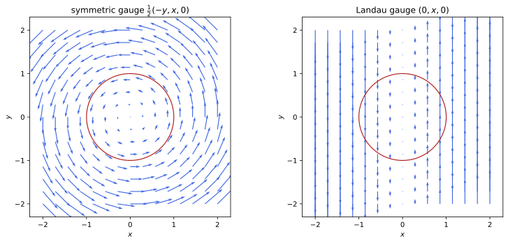
figures/emm_gauges.sage.
The first definition introduces the potentials of time-dependent fields. It generalises Definition 2 and Definition 6, and it makes the induced field of Example 131 expressible.
Definition 10 (Electromagnetic potentials) Electromagnetic potentials of fields \mathbf E, \mathbf B are a function \phi(t, \mathbf x), the scalar potential, and a vector field \mathbf A(t, \mathbf x), the vector potential, with \mathbf B = \nabla\times\mathbf A, \qquad \mathbf E = -\nabla\phi - \frac{\partial\mathbf A}{\partial t} . \tag{14} Fields of this form satisfy the homogeneous Maxwell equations identically, and on \mathbb{R}^3 every solution of them has potentials. The inhomogeneous equations become, with \Box = \partial_t^2 - \nabla^2, -\nabla^2\phi - \partial_t\nabla\cdot\mathbf A = \rho, \qquad \Box\mathbf A + \nabla\bigl(\nabla\cdot\mathbf A + \partial_t\phi\bigr) = \mathbf J . \tag{15} In SI units the same definitions hold, and the equations carry 1/\varepsilon_0, \mu_0 and \Box = c^{-2}\partial_t^2 - \nabla^2 (Maggiore 2023, sec. 3.3, eqs. (3.80)-(3.85); Pierrus 2018, Questions 8.1-8.2).
Veriphy. Pending.
Lean. Pending.
Sage. Pending.
Static fields have the potentials of the statics section. The time-independent case is the first check of the definition. Nothing new appears in this case.
Example 163 (Static potentials) For static fields, \phi of Definition 2 and \mathbf A of Definition 6 satisfy Equation 14 with \partial_t\mathbf A = 0, and Equation 15 reduces to -\nabla^2\phi = \rho and -\nabla^2\mathbf A + \nabla(\nabla\cdot\mathbf A) = \mathbf J, which is \nabla^2\mathbf A = -\mathbf J in the Coulomb gauge of the statics section.
A uniform field that grows in time has a vector potential that grows with it. Its time derivative is the induced electric field of the first unit.
Example 164 (A growing uniform field) For \mathbf B = B(t)\mathbf e_z take \mathbf A = \frac12B(t)(-y, x, 0) and \phi = 0. Then \mathbf E = -\partial_t\mathbf A = \frac12\dot B(y, -x, 0), the field of Example 122 inside the cylinder, now obtained without integrating Faraday’s law.
A plane wave can be described by a vector potential alone. Both fields follow from one function. The potential is transverse to the direction of motion.
Example 165 (A plane wave from its potential) \phi = 0 and \mathbf A = E_0\sin(z - t)\mathbf e_x give \mathbf E = -\partial_t\mathbf A = E_0\cos(z - t)\mathbf e_x and \mathbf B = \nabla\times \mathbf A = \partial_zA_x\mathbf e_y = E_0\cos(z - t)\mathbf e_y, the wave of Exercise 136. Here \nabla\cdot\mathbf A = 0 and \Box\mathbf A = 0.
A uniform electric field has two simple sets of potentials. One is static, the other grows in time, and both give the same field.
Example 166 (Two potentials for a uniform electric field) \mathbf E = E_0\mathbf e_x with \mathbf B = 0 comes from \phi = -E_0x, \mathbf A = 0, and also from \phi = 0, \mathbf A = -E_0t\,\mathbf e_x, whose curl vanishes. A charge sees the same force in both descriptions; the second will be useful in the Hamiltonian of a charge (Exercise 217).
The potentials replace six field components by four functions. The counting of equations changes accordingly. The reduction is the main practical gain of the potentials.
Example 167 (Four functions for six components) Equation 15 are four equations for four unknowns, while Equation 11 were eight for six. The two homogeneous Maxwell equations (four component equations) are solved by Equation 14; the remaining four are Equation 15.
When the current in a solenoid changes, the electric field outside comes entirely from the time derivative of the vector potential. The magnetic field there remains zero.
Example 168 (Outside a solenoid with changing current) Outside a long solenoid of radius a, \mathbf A = \frac{nI(t)a^2}{2s}\hat{\boldsymbol\varphi} (Example 83) and \phi = 0 give \mathbf B = 0 and \mathbf E = -\frac{n\dot Ia^2}{2s}\hat{\boldsymbol\varphi}, the outside field of Example 122 with B = nI: the electric field appears where the magnetic field is zero, but the vector potential is not.
Faraday’s law in integral form follows from the potentials by Stokes’ theorem. The flux through a loop is the circulation of \mathbf A.
Example 169 (The flux rule from the potentials) For a fixed loop C, \oint_C\mathbf E\cdot d\boldsymbol\ell = -\oint_C\nabla\phi\cdot d\boldsymbol\ell - \frac{d}{dt}\oint_C\mathbf A\cdot d\boldsymbol \ell = 0 - \frac{d}{dt}\Phi_B, since the circulation of a gradient vanishes and \oint\mathbf A\cdot d\boldsymbol\ell = \Phi_B (Definition 6).
The scalar potential is no longer the potential energy per unit charge when \mathbf A depends on time. The work done on a charge then depends on the path.
Example 170 (The scalar potential is not an energy) The work done by the field on a charge moving from \mathbf x_1 to \mathbf x_2 is q\int\mathbf E\cdot d\boldsymbol\ell = q(\phi(\mathbf x_1) - \phi(\mathbf x_2)) - q\int\partial_t\mathbf A\cdot d\boldsymbol\ell, and the last term depends on the path and its timing. Only when \partial_t\mathbf A = 0 is q\phi a potential energy (Definition 2); otherwise energy is exchanged with the field, as in Example 132.
Potentials exist for every solution of the homogeneous equations on all of space. The example states the construction. It uses only the vector calculus of the statics section.
Example 171 (Why potentials exist) On \mathbb{R}^3, \nabla\cdot\mathbf B = 0 gives \mathbf B = \nabla\times\mathbf A (for instance \mathbf A = \frac1{4\pi}\int\frac{\nabla'\times \mathbf B}{|\mathbf x - \mathbf x'|}d^3x' for a decaying field, as in Definition 6 with \mathbf J = \nabla\times\mathbf B). Then \nabla\times(\mathbf E + \partial_t\mathbf A) = 0, so \mathbf E + \partial_t\mathbf A = -\nabla\phi (Definition 2 of Classical mechanics) (Maggiore 2023, sec. 3.3).
The equations for the potentials are coupled through the term \nabla\cdot\mathbf A + \partial_t\phi. The last example shows the coupling and anticipates how a choice of gauge removes it.
Example 172 (The coupled equations) In Equation 15, \phi appears in the equation for \mathbf A and \mathbf A in that for \phi, through \partial_t\nabla\cdot\mathbf A and \nabla(\nabla\cdot\mathbf A + \partial_t\phi). If \nabla\cdot\mathbf A + \partial_t\phi = 0, the equations decouple into four wave equations, \Box\phi = \rho and \Box\mathbf A = \mathbf J; Proposition 6 shows that this condition can always be imposed.
The exercises begin by checking potentials with Sage. The first one checks the plane wave. Both sets of equations are checked at once.
Exercise 164 (The plane wave, from its potential) With Sage, compute \mathbf E and \mathbf B from the potential of Example 165 and check Equation 11 in vacuum and Equation 15 with \rho = 0, \mathbf J = 0.
The fields are those of the plane wave, and both equations hold:
t, x, y, z = var("t x y z")
X = [x, y, z]
def div(F): return sum(diff(F[i], X[i]) for i in range(3)).simplify_full()
def curl(F): return vector([diff(F[2], y) - diff(F[1], z), diff(F[0], z) - diff(F[2], x), diff(F[1], x) - diff(F[0], y)]).simplify_full()
def grad(f): return vector([diff(f, v) for v in X])
E0 = var('E0')
phi = 0; A = vector([E0 * sin(z - t), 0, 0])
E = -grad(phi) - diff(A, t); B = curl(A)
print('E =', E, '; B =', B)
print('vacuum Maxwell:', div(E), div(B), (curl(E) + diff(B, t)).simplify_full(), (curl(B) - diff(E, t)).simplify_full())
box = lambda f: diff(f, t, 2) - sum(diff(f, v, 2) for v in X)
print('potential equations: -lap phi - d_t div A =', -sum(diff(phi, v, 2) for v in X) - diff(div(A), t), '; box A + grad(div A + d_t phi) =', (vector([box(Ai) for Ai in A]) + grad(div(A) + diff(phi, t))).simplify_full())Output:
E = (E0*cos(-t + z), 0, 0) ; B = (0, E0*cos(t)*cos(z) + E0*sin(t)*sin(z), 0)
vacuum Maxwell: 0 0 (0, 0, 0) (0, 0, 0)
potential equations: -lap phi - d_t div A = 0 ; box A + grad(div A + d_t phi) = (0, 0, 0)Veriphy. Pending.
Lean. Pending.
Sage. Pending.
The potential equations follow from substituting Equation 14 into Maxwell’s equations. The second exercise does it with Sage for arbitrary potentials.
Exercise 165 (Deriving the potential equations) With Sage, take arbitrary functions \phi, A_x, A_y, A_z of (t, x, y, z), compute \mathbf E and \mathbf B, and check that \nabla\cdot\mathbf E and \nabla\times\mathbf B - \partial_t\mathbf E equal the left-hand sides of Equation 15, and that the homogeneous equations hold identically.
The differences vanish identically:
t, x, y, z = var("t x y z")
X = [x, y, z]
def div(F): return sum(diff(F[i], X[i]) for i in range(3)).simplify_full()
def curl(F): return vector([diff(F[2], y) - diff(F[1], z), diff(F[0], z) - diff(F[2], x), diff(F[1], x) - diff(F[0], y)]).simplify_full()
def grad(f): return vector([diff(f, v) for v in X])
phi = function('phi')(t, x, y, z); A = vector([function('A%d' % i)(t, x, y, z) for i in range(3)])
E = -grad(phi) - diff(A, t); B = curl(A)
box = lambda f: diff(f, t, 2) - sum(diff(f, v, 2) for v in X)
lap = lambda f: sum(diff(f, v, 2) for v in X)
print('div E - (-lap phi - d_t div A) =', (div(E) - (-lap(phi) - diff(div(A), t))).simplify_full())
lhs2 = vector([box(A[i]) for i in range(3)]) + grad(div(A) + diff(phi, t))
print('curl B - dE/dt - (box A + grad(div A + d_t phi)) =', (curl(B) - diff(E, t) - lhs2).simplify_full())
print('homogeneous equations: div B =', div(B), '; curl E + dB/dt =', (curl(E) + diff(B, t)).simplify_full())Output:
div E - (-lap phi - d_t div A) = 0
curl B - dE/dt - (box A + grad(div A + d_t phi)) = (0, 0, 0)
homogeneous equations: div B = 0 ; curl E + dB/dt = (0, 0, 0)Veriphy. Pending.
Lean. Pending.
Sage. Pending.
A uniform field that switches on at t = 0 needs potentials that depend on time. The third exercise finds two sets.
Exercise 166 (A field switched on) Find potentials for \mathbf E = E_0\theta(t)\mathbf e_x, \mathbf B = 0, one with \mathbf A = 0 and one with \phi = 0, and check that the second has \mathbf A continuous at t = 0.
\phi = -E_0\theta(t)x, \mathbf A = 0; or \phi = 0, \mathbf A = -E_0t\theta(t)\mathbf e_x, which is continuous at t = 0 with a kink: -\partial_t\mathbf A = E_0\theta(t)\mathbf e_x (Definition 24 of Differential equations for the derivative of the step).
Veriphy. Pending.
Lean. Pending.
Sage. Pending.
The electric field outside a solenoid with alternating current follows from its vector potential. The fourth exercise computes it with Sage and checks Faraday’s law.
Exercise 167 (A solenoid with alternating current) For I = I_0\sin\omega t in the solenoid of Example 168, compute with Sage \mathbf E outside in Cartesian coordinates, its curl, and its circulation around the solenoid; compare with -\dot\Phi_B.
\mathbf E = -\frac{n\omega I_0a^2\cos\omega t}{2s^2}(-y, x, 0) has zero curl outside and circulation -\pi a^2n\omega I_0\cos\omega t = -\dot\Phi_B:
t, x, y, z = var("t x y z")
X = [x, y, z]
def div(F): return sum(diff(F[i], X[i]) for i in range(3)).simplify_full()
def curl(F): return vector([diff(F[2], y) - diff(F[1], z), diff(F[0], z) - diff(F[2], x), diff(F[1], x) - diff(F[0], y)]).simplify_full()
def grad(f): return vector([diff(f, v) for v in X])
n, I0, w, a, s, ph = var('n I0 w a s ph'); assume(a > 0, s > a)
Aout = n * I0 * sin(w * t) * a^2 / (2 * (x^2 + y^2)) * vector([-y, x, 0])
E = -diff(Aout, t)
print('E =', E.simplify_full(), '; curl E =', curl(E), '; B = curl A =', curl(Aout))
circ = integrate((E[0].subs(x=s*cos(ph), y=s*sin(ph)) * (-s*sin(ph)) + E[1].subs(x=s*cos(ph), y=s*sin(ph)) * s*cos(ph)).simplify_full(), ph, 0, 2*pi)
print('circulation:', circ.simplify_full(), '; -dPhi/dt =', -diff(pi * a^2 * n * I0 * sin(w * t), t))Output:
E = (1/2*I0*a^2*n*w*y*cos(t*w)/(x^2 + y^2), -1/2*I0*a^2*n*w*x*cos(t*w)/(x^2 + y^2), 0) ; curl E = (0, 0, 0) ; B = curl A = (0, 0, 0)
circulation: -pi*I0*a^2*n*w*cos(t*w) ; -dPhi/dt = -pi*I0*a^2*n*w*cos(t*w)Veriphy. Pending.
Lean. Pending.
Sage. Pending.
Potentials that give zero fields are gradients. The fifth exercise proves it. The converse of the gauge invariance of the fields is the point.
Exercise 168 (Potentials of zero fields) On \mathbb{R}^3, show that (\phi, \mathbf A) gives \mathbf E = 0, \mathbf B = 0 at all times if and only if \phi = -\partial_t\lambda and \mathbf A = \nabla\lambda for some function \lambda(t, \mathbf x).
If \mathbf B = 0, \mathbf A = \nabla\Lambda(t, \mathbf x) (Definition 2 of Classical mechanics at each t). Then \mathbf E = -\nabla(\phi + \partial_t \Lambda) = 0, so \phi + \partial_t\Lambda = f(t); with \lambda = \Lambda - \int f\,dt, \mathbf A = \nabla\lambda and \phi = -\partial_t\lambda. The converse is direct.
Veriphy. Pending.
Lean. Pending.
Sage. Pending.
Two vector potentials of the same growing uniform field differ in a way that matters. The sixth exercise shows with Sage that, with \phi = 0 in both, they describe different electric fields.
Exercise 169 (Two potentials of a growing field) For \mathbf B = B(t)\mathbf e_z, compare \mathbf A_1 = \frac12B(t)(-y, x, 0) and \mathbf A_2 = (0, B(t)x, 0), both with \phi = 0. With Sage, compute both electric fields and their difference. Are they the same physical situation?
\mathbf E_1 = \frac{\dot B}2(y, -x, 0) and \mathbf E_2 = (0, -\dot Bx, 0) differ by -\frac{\dot B}2\nabla(xy), the field of a time-dependent quadrupole of external charges. They are not related by a gauge transformation, since \mathbf E differs: Faraday’s law fixes only the curl of \mathbf E, and the sources far away decide the rest. With \phi_2 = -\frac12\dot Bxy the second potential describes the first situation:
t, x, y, z = var("t x y z")
X = [x, y, z]
def div(F): return sum(diff(F[i], X[i]) for i in range(3)).simplify_full()
def curl(F): return vector([diff(F[2], y) - diff(F[1], z), diff(F[0], z) - diff(F[2], x), diff(F[1], x) - diff(F[0], y)]).simplify_full()
def grad(f): return vector([diff(f, v) for v in X])
B = function('B')(t)
A1 = B / 2 * vector([-y, x, 0]); A2 = vector([0, B * x, 0])
print('curl A1 =', curl(A1), '; curl A2 =', curl(A2))
E1 = -diff(A1, t); E2 = -diff(A2, t)
print('E1 =', E1, '; E2 =', E2)
print('E2 - E1 + (dB/dt/2) grad(x y) =', (E2 - E1 + diff(B, t) / 2 * grad(x * y)).simplify_full())
phi2 = -diff(B, t) * x * y / 2
print('with phi2 = -dB/dt x y/2: E2 - grad(phi2) - E1 =', (E2 - grad(phi2) - E1).simplify_full())Output:
curl A1 = (0, 0, B(t)) ; curl A2 = (0, 0, B(t))
E1 = (1/2*y*diff(B(t), t), -1/2*x*diff(B(t), t), 0) ; E2 = (0, -x*diff(B(t), t), 0)
E2 - E1 + (dB/dt/2) grad(x y) = (0, 0, 0)
with phi2 = -dB/dt x y/2: E2 - grad(phi2) - E1 = (0, 0, 0)Veriphy. Pending.
Lean. Pending.
Sage. Pending.
A charging capacitor gives a first glimpse of how the static fields are corrected when they change. The seventh exercise computes the correction with Sage.
Exercise 170 (Beyond the quasi-static capacitor) Between circular plates take \phi = -E(t)z and \mathbf A = -\frac{\dot E(t)s^2}4\mathbf e_z. With Sage, check that \mathbf B is the field of Example 133 and find the correction to the uniform \mathbf E. How large is it for E \propto \cos\omega t at the rim s = a?
\mathbf B = \nabla\times\mathbf A = \frac{\dot Es}{2}\hat{\boldsymbol\varphi}, and \mathbf E = E\mathbf e_z + \frac{\ddot Es^2}4\mathbf e_z; for E \propto \cos\omega t the relative correction at the rim is -(\omega a)^2/4, small when the plates are much smaller than the wavelength:
t, x, y, z = var("t x y z")
X = [x, y, z]
def curl(F): return vector([diff(F[2], y) - diff(F[1], z), diff(F[0], z) - diff(F[2], x), diff(F[1], x) - diff(F[0], y)]).simplify_full()
def grad(f): return vector([diff(f, v) for v in X])
Ef = function('E')(t); w, a = var('w a', domain='positive')
for name, Et in [('general E(t)', Ef), ('E = cos(w t)', cos(w * t))]:
phi = -Et * z; A = vector([0, 0, -diff(Et, t) * (x^2 + y^2) / 4])
Efield = (-grad(phi) - diff(A, t)).simplify_full(); B = curl(A)
print(name, ': E =', Efield, '; B =', B)
print('relative correction at the rim for E = cos(w t):', ((-grad(-cos(w*t)*z) - diff(vector([0, 0, w*sin(w*t)*(x^2 + y^2)/4]), t))[2] / cos(w*t) - 1).subs(x=a, y=0).simplify_full())Output:
general E(t) : E = (0, 0, 1/4*x^2*diff(E(t), t, t) + 1/4*y^2*diff(E(t), t, t) + E(t)) ; B = (-1/2*y*diff(E(t), t), 1/2*x*diff(E(t), t), 0)
E = cos(w t) : E = (0, 0, -1/4*w^2*x^2*cos(t*w) - 1/4*w^2*y^2*cos(t*w) + cos(t*w)) ; B = (1/2*w*y*sin(t*w), -1/2*w*x*sin(t*w), 0)
relative correction at the rim for E = cos(w t): -1/4*a^2*w^2Veriphy. Pending.
Lean. Pending.
Sage. Pending.
A point charge at rest can be described without a scalar potential. The eighth exercise constructs the potentials with Sage (Pierrus 2018, Question 8.3).
Exercise 171 (A static charge with only a vector potential) Show with Sage that \phi = 0, \mathbf A = -\frac{qt}{4\pi}\frac{\mathbf x}{r^3} give the Coulomb field and no magnetic field, and that \mathbf A grows without bound in time.
\nabla\times\mathbf A = 0 and -\partial_t\mathbf A = \frac{q\mathbf x}{4\pi r^3}; the potential is not static although the fields are:
t, x, y, z = var("t x y z")
X = [x, y, z]
def div(F): return sum(diff(F[i], X[i]) for i in range(3)).simplify_full()
def curl(F): return vector([diff(F[2], y) - diff(F[1], z), diff(F[0], z) - diff(F[2], x), diff(F[1], x) - diff(F[0], y)]).simplify_full()
def grad(f): return vector([diff(f, v) for v in X])
q = var('q'); r = sqrt(x^2 + y^2 + z^2)
A = -q * t / (4 * pi) * vector([x, y, z]) / r^3
print('E = -dA/dt =', (-diff(A, t)).simplify_full(), '; B = curl A =', curl(A))
lam = q * t / (4 * pi * r)
print('A - grad(lambda) with lambda = q t/(4 pi r):', (A - grad(lam)).simplify_full(), '; q/(4 pi r) - d lambda/dt =', (q / (4 * pi * r) - diff(lam, t)).simplify_full())Output:
E = -dA/dt = (1/4*q*x/((pi*x^2 + pi*y^2 + pi*z^2)*sqrt(x^2 + y^2 + z^2)), 1/4*q*y/((pi*x^2 + pi*y^2 + pi*z^2)*sqrt(x^2 + y^2 + z^2)), 1/4*q*z/((pi*x^2 + pi*y^2 + pi*z^2)*sqrt(x^2 + y^2 + z^2))) ; B = curl A = (0, 0, 0)
A - grad(lambda) with lambda = q t/(4 pi r): (0, 0, 0) ; q/(4 pi r) - d lambda/dt = 0Veriphy. Pending.
Lean. Pending.
Sage. Pending.
The magnetic flux through an open surface is the circulation of \mathbf A around its boundary. The ninth exercise asks when that circulation is unchanged by \mathbf A \to \mathbf A + \nabla\lambda.
Exercise 172 (The flux and single-valued functions) Show that \oint_C\nabla\lambda\cdot d\boldsymbol\ell = 0 for every closed curve when \lambda is a single-valued smooth function, and find a \lambda on \mathbb{R}^3 minus the z axis for which it is not (Pierrus 2018, Question 8.5).
The circulation of a gradient is the difference of \lambda between the ends, which coincide. The angle \varphi around the z axis has \nabla\varphi = \hat{\boldsymbol\varphi}/s and circulation 2\pi around the axis: it is not single-valued, and adding c\nabla \varphi changes the flux through a loop around the axis, as for the flux tube of Example 88.
Veriphy. Pending.
Lean. Pending.
Sage. Pending.
Potentials exist on all of space but not always on regions with holes. The last exercise gives a field on a region with a hole that has no global vector potential.
Exercise 173 (A field without a global vector potential) The field \mathbf B = \frac{g\hat{\mathbf n}}{4\pi r^2} on \mathbb{R}^3\setminus\{0\} has \nabla\cdot\mathbf B = 0. Show that it has no vector potential defined on the whole region, using the flux through a sphere around the origin.
The flux through the unit sphere is g. If \mathbf B = \nabla\times\mathbf A on the whole sphere, Stokes’ theorem on the sphere, which has no boundary, gives 0 (Example 137 of Differential geometry). So no global \mathbf A exists; the gauge-theory chapter treats this field, that of a magnetic monopole, with two potentials on overlapping regions.
Veriphy. Pending.
Lean. Pending.
Sage. Pending.
The potentials of given fields are not unique. The second definition names the transformations that relate the different choices. Physics depends only on the fields, so all these choices are equivalent.
Definition 11 (Gauge transformation) A gauge transformation with gauge function \lambda(t, \mathbf x) maps potentials to \phi \mapsto \phi - \frac{\partial\lambda}{\partial t}, \qquad \mathbf A \mapsto \mathbf A + \nabla\lambda ; \tag{16} it leaves \mathbf E and \mathbf B of Equation 14 unchanged, and conversely two sets of potentials of the same fields on \mathbb{R}^3 differ by a gauge transformation (Exercise 168). Quantities unchanged by all gauge transformations are gauge invariant. The sign convention is that of the Dirac and gauge-theory chapters, where the potentials combine into A_\mu = (\phi, -\mathbf A) and the transformation reads A_\mu \mapsto A_\mu - \partial_\mu\lambda; Maggiore (2023, sec. 3.3, eq. (3.86)) writes it with \theta = -\lambda.
Veriphy. Pending.
Lean. Pending.
Sage. Pending.
A gauge function that does not depend on time changes only the vector potential. This is the freedom already met in magnetostatics.
Example 173 (Time-independent gauge functions) For \lambda = \lambda(\mathbf x), \phi is unchanged and \mathbf A \mapsto \mathbf A + \nabla\lambda, the freedom of Definition 6. The symmetric and Landau potentials of a uniform field are related in this way, by \lambda = \frac12Bxy (Figure 8).
A gauge function linear in time shifts the scalar potential by a constant. The zero of potential is therefore itself a choice of gauge.
Example 174 (The zero of the potential) \lambda = -Vt gives \phi \mapsto \phi + V and leaves \mathbf A unchanged: adding a constant to the potential, the freedom of Definition 2, is a gauge transformation.
A static point charge can be described with a scalar potential or with a growing vector potential. The two descriptions are related by an explicit gauge function.
Example 175 (A point charge in two gauges) \lambda = \frac{qt}{4\pi r} maps (\phi, \mathbf A) = (\frac{q}{4\pi r}, 0) to (\frac{q}{4\pi r} - \frac{q}{4\pi r}, \nabla\lambda) = (0, -\frac{qt\mathbf x}{4\pi r^3}), the potentials of Exercise 171.
Gauge transformations can add pieces to the potentials of a wave that carry no field. The example shows a pure gauge part travelling with the wave.
Example 176 (A pure gauge wave) For any function f, \lambda = f(z - t) adds f'(z - t) to \phi and f'(z - t)\mathbf e_z to \mathbf A. The new potentials of the plane wave of Example 165 have a scalar part and a longitudinal part, yet describe the same wave: a longitudinal potential wave with A_z = \phi is pure gauge.
Gauge transformations compose by adding their functions. They form a group, the same at every point, which is why electromagnetism is called an abelian gauge theory.
Example 177 (The gauge group) Applying \lambda_1 and then \lambda_2 is the transformation with \lambda_1 + \lambda_2, and -\lambda undoes \lambda: the gauge transformations form an abelian group, isomorphic to the additive group of functions. In quantum mechanics they act on wave functions by the phases e^{iq\lambda(t, \mathbf x)}, one copy of U(1) at each point, which the gauge-theory chapter develops (Gauge theories).
Some quantities built from potentials are gauge invariant and others are not. The example sorts the common ones. The distinction matters whenever potentials appear in a formula.
Example 178 (What is gauge invariant) \mathbf E, \mathbf B, u, \mathbf S and the flux \oint_C\mathbf A\cdot d\boldsymbol\ell through a closed curve (for single-valued \lambda) are gauge invariant. The value of \phi at a point, \nabla\cdot\mathbf A, and \int\mathbf J\cdot\mathbf A\,d^3x for a current with \nabla\cdot\mathbf J \neq 0 are not; for a steady localised current, \int\mathbf J\cdot\nabla\lambda = -\int\lambda\nabla\cdot\mathbf J = 0, so the magnetic energy of Proposition 2 is invariant.
The flux tube shows a potential that is a gradient locally but not globally. Its gauge function would be the multivalued angle.
Example 179 (A potential that is locally pure gauge) Outside a thin solenoid with flux \Phi, \mathbf A = \frac{\Phi}{2\pi s}\hat{\boldsymbol\varphi} = \nabla\frac{\Phi\varphi}{2\pi} on any region not encircling the axis (Example 88). Removing it by a gauge transformation would need \lambda = -\frac{\Phi\varphi}{2\pi}, which is not single valued: the potential is not gauge equivalent to zero, although \mathbf E = \mathbf B = 0 outside.
The relation to the covariant notation of the later chapters fixes the signs. The example states the dictionary. Only the signs need care.
Example 180 (The four-potential) With x^\mu = (t, \mathbf x), signature (+, -, -, -) and A^\mu = (\phi, \mathbf A), A_\mu = (\phi, -\mathbf A) and \partial_\mu = (\partial_t, \nabla), so Equation 16 is A_\mu \mapsto A_\mu - \partial_\mu\lambda: A_0 \mapsto \phi - \partial_t\lambda and A_i = -A^i \mapsto -A^i - \partial_i\lambda. The classical field theory and special relativity chapters develop this form.
A growing uniform field has two simple sets of potentials, found in Exercise 169. They are related by a gauge function that depends on time.
Example 181 (A growing field in two gauges) For \mathbf B = B(t)\mathbf e_z, \lambda = \frac12B(t)xy maps (\phi, \mathbf A) = (0, \frac B2(-y, x, 0)) to (-\frac12\dot Bxy, (0, Bx, 0)): the Landau potential describes the same electric field only together with the scalar potential -\frac12\dot Bxy, which a static gauge function would not produce.
A gauge function that depends only on time does nothing to the vector potential. It moves the scalar potential by a function of time, which no field can detect.
Example 182 (Gauge functions of time alone) For \lambda = \lambda(t), \mathbf A is unchanged and \phi \mapsto \phi - \dot\lambda(t): a uniform, time-dependent shift of the potential. It changes the energy q\phi of a charge by the same amount everywhere, which is unobservable because only differences of potential energy enter the motion.
The exercises begin with the invariance of the fields, computed with Sage. The first one uses arbitrary functions. The computation is short but instructive.
Exercise 174 (Invariance of the fields) With Sage, check for arbitrary \phi, \mathbf A and \lambda that Equation 16 leaves \mathbf E and \mathbf B unchanged.
The changes are -\nabla(-\partial_t\lambda) - \partial_t\nabla\lambda = 0 and \nabla\times\nabla\lambda = 0:
t, x, y, z = var("t x y z")
X = [x, y, z]
def div(F): return sum(diff(F[i], X[i]) for i in range(3)).simplify_full()
def curl(F): return vector([diff(F[2], y) - diff(F[1], z), diff(F[0], z) - diff(F[2], x), diff(F[1], x) - diff(F[0], y)]).simplify_full()
def grad(f): return vector([diff(f, v) for v in X])
box = lambda f: diff(f, t, 2) - sum(diff(f, v, 2) for v in X)
lap = lambda f: sum(diff(f, v, 2) for v in X)
phi = function('phi')(t, x, y, z); A = vector([function('A%d' % i)(t, x, y, z) for i in range(3)]); lam = function('lam')(t, x, y, z)
E = lambda ph, AA: -grad(ph) - diff(AA, t)
phi2 = phi - diff(lam, t); A2 = A + grad(lam)
print('change of E:', (E(phi2, A2) - E(phi, A)).simplify_full(), '; change of B:', (curl(A2) - curl(A)).simplify_full())Output:
change of E: (0, 0, 0) ; change of B: (0, 0, 0)Veriphy. Pending.
Lean. Pending.
Sage. Pending.
The two Landau gauges of a uniform field differ by a gauge function too. The second exercise finds the functions with Sage.
Exercise 175 (Three gauges for a uniform field) For \mathbf B = B\mathbf e_z, find with Sage the gauge functions relating \frac B2(-y, x, 0), (0, Bx, 0) and (-By, 0, 0).
\frac12Bxy maps the symmetric potential to (0, Bx, 0), -\frac12Bxy maps it to (-By, 0, 0), and -Bxy relates the two Landau potentials:
t, x, y, z = var("t x y z")
X = [x, y, z]
def div(F): return sum(diff(F[i], X[i]) for i in range(3)).simplify_full()
def curl(F): return vector([diff(F[2], y) - diff(F[1], z), diff(F[0], z) - diff(F[2], x), diff(F[1], x) - diff(F[0], y)]).simplify_full()
def grad(f): return vector([diff(f, v) for v in X])
box = lambda f: diff(f, t, 2) - sum(diff(f, v, 2) for v in X)
lap = lambda f: sum(diff(f, v, 2) for v in X)
B = var('B')
As = B / 2 * vector([-y, x, 0]); A1 = vector([0, B * x, 0]); A2 = vector([-B * y, 0, 0])
for lam, src, dst, name in [(B*x*y/2, As, A1, 'symmetric -> (0, Bx, 0)'), (-B*x*y/2, As, A2, 'symmetric -> (-By, 0, 0)'), (-B*x*y, A1, A2, '(0, Bx, 0) -> (-By, 0, 0)')]:
print(name, ': lambda =', lam, ', check:', (src + grad(lam) - dst).simplify_full())Output:
symmetric -> (0, Bx, 0) : lambda = 1/2*B*x*y , check: (0, 0, 0)
symmetric -> (-By, 0, 0) : lambda = -1/2*B*x*y , check: (0, 0, 0)
(0, Bx, 0) -> (-By, 0, 0) : lambda = -B*x*y , check: (0, 0, 0)Veriphy. Pending.
Lean. Pending.
Sage. Pending.
The scalar potential can always be removed. The third exercise constructs the temporal gauge. It is the gauge used in many Hamiltonian treatments of the field.
Exercise 176 (The temporal gauge) Show that every pair (\phi, \mathbf A) is gauge equivalent to one with \phi = 0, and find the remaining freedom.
Take \lambda(t, \mathbf x) = \int_0^t\phi(t', \mathbf x)\,dt', so \phi - \partial_t\lambda = 0. Gauge functions independent of time preserve \phi = 0: the freedom left is that of magnetostatics.
Veriphy. Pending.
Lean. Pending.
Sage. Pending.
A component of the vector potential can be removed too. The fourth exercise constructs the axial gauge. It is another gauge that fixes a component.
Exercise 177 (The axial gauge) Show that every \mathbf A is gauge equivalent to one with A_z = 0. Is the scalar potential then fixed?
\lambda = -\int_0^zA_z(t, x, y, z')\,dz' gives A_z + \partial_z\lambda = 0; \phi changes to \phi - \partial_t\lambda. Functions \lambda(t, x, y) keep A_z = 0, so a large freedom remains.
Veriphy. Pending.
Lean. Pending.
Sage. Pending.
Two gauge transformations in a row are one transformation. The fifth exercise asks for the composition rule. The group structure is abelian.
Exercise 178 (Composition) Show that applying \lambda_1 and then \lambda_2 gives \lambda_1 + \lambda_2, that the order does not matter, and that the identity is a constant \lambda.
\phi \mapsto \phi - \partial_t\lambda_1 - \partial_t\lambda_2 and \mathbf A \mapsto \mathbf A + \nabla\lambda_1 + \nabla\lambda_2, symmetric in the two. A constant \lambda changes nothing, and conversely \nabla\lambda = 0 and \partial_t\lambda = 0 force \lambda constant.
Veriphy. Pending.
Lean. Pending.
Sage. Pending.
A pure gauge potential produces no fields, whatever its form. The sixth exercise checks the wave of Example 176 with Sage.
Exercise 179 (A pure gauge wave, checked) With Sage, compute \mathbf E and \mathbf B for \phi = f'(z - t), \mathbf A = f'(z - t)\mathbf e_z, and for the plane wave of Example 165 with this addition.
The pure gauge part gives \mathbf E = -f''\mathbf e_z + f''\mathbf e_z = 0 and \mathbf B = 0; the sum gives the plane wave:
t, x, y, z = var("t x y z")
X = [x, y, z]
def div(F): return sum(diff(F[i], X[i]) for i in range(3)).simplify_full()
def curl(F): return vector([diff(F[2], y) - diff(F[1], z), diff(F[0], z) - diff(F[2], x), diff(F[1], x) - diff(F[0], y)]).simplify_full()
def grad(f): return vector([diff(f, v) for v in X])
box = lambda f: diff(f, t, 2) - sum(diff(f, v, 2) for v in X)
lap = lambda f: sum(diff(f, v, 2) for v in X)
f = function('f'); E0 = var('E0')
phi = diff(f(z - t), z); A = vector([0, 0, diff(f(z - t), z)])
print('pure gauge part: E =', (-grad(phi) - diff(A, t)).simplify_full(), ', B =', curl(A))
A2 = A + vector([E0 * sin(z - t), 0, 0])
print('with the plane wave added: E =', (-grad(phi) - diff(A2, t)).simplify_full(), ', B =', curl(A2))Output:
pure gauge part: E = (0, 0, 0) , B = (0, 0, 0)
with the plane wave added: E = (E0*cos(t)*cos(z) + E0*sin(t)*sin(z), 0, 0) , B = (0, E0*cos(t)*cos(z) + E0*sin(t)*sin(z), 0)Veriphy. Pending.
Lean. Pending.
Sage. Pending.
The energy of a current in a field written with \mathbf A is gauge invariant only when charge is conserved. The seventh exercise works it out.
Exercise 180 (The coupling to a current) Show that \int(-\rho\phi + \mathbf J\cdot\mathbf A)\,d^3x\,dt, integrated over all space and time for localised sources, is gauge invariant if and only if \partial_t\rho + \nabla\cdot\mathbf J = 0.
The change is \int(\rho\partial_t\lambda + \mathbf J\cdot\nabla\lambda) = -\int\lambda(\partial_t\rho + \nabla\cdot\mathbf J) after integrating by parts, which vanishes for every \lambda exactly when the continuity equation holds. This is the coupling term of the action of the classical field theory chapter, and the reason gauge invariance requires conserved charge.
Veriphy. Pending.
Lean. Pending.
Sage. Pending.
Gauge transformations act on the canonical momentum of a charge, as the last unit shows. The eighth exercise prepares it by computing the change of the circulation of \mathbf A along an open path.
Exercise 181 (Along an open path) Show that \int_\gamma\mathbf A\cdot d\boldsymbol\ell along an open path from \mathbf x_1 to \mathbf x_2 changes by \lambda(\mathbf x_2) - \lambda(\mathbf x_1) under a time-independent gauge transformation, and that the difference of two such integrals along paths with the same ends is gauge invariant.
\int_\gamma\nabla\lambda\cdot d\boldsymbol\ell = \lambda(\mathbf x_2) - \lambda(\mathbf x_1), the same for both paths, so it cancels in the difference, which is the flux through the loop formed by the two paths. In quantum mechanics this difference is the Aharonov-Bohm phase, divided by the charge.
Veriphy. Pending.
Lean. Pending.
Sage. Pending.
A potential in the Landau gauge can be shifted along the field without changing anything. The ninth exercise finds all the gauge functions that preserve a given potential’s form.
Exercise 182 (Transformations preserving the Landau form) Which time-independent gauge functions keep the form \mathbf A = (0, Bx + c, 0) with a constant c, and what does c correspond to physically?
\nabla\lambda must be (0, c', 0) with c' constant, so \lambda = c'y up to a constant. The constant c in A_y is a shift of the origin in x by -c/B, since B(x + c/B) = Bx + c: translations in x act on the Landau potential as gauge transformations.
Veriphy. Pending.
Lean. Pending.
Sage. Pending.
The transformation of the fields is trivial, but that of the potential equations is not. The last exercise checks that Equation 15 are gauge invariant.
Exercise 183 (The potential equations are gauge invariant) Show directly that the left-hand sides of Equation 15 do not change under Equation 16.
-\nabla^2(-\partial_t\lambda) - \partial_t\nabla\cdot\nabla\lambda = 0; and \Box\nabla\lambda + \nabla(\nabla^2\lambda - \partial_t^2\lambda) = \nabla(\Box\lambda - \Box\lambda) = 0. This is expected, since they equal \nabla\cdot\mathbf E and \nabla\times\mathbf B - \partial_t\mathbf E.
Veriphy. Pending.
Lean. Pending.
Sage. Pending.
Gauge freedom can be used to simplify the equations. The proposition shows that the two most useful conditions can always be imposed, and writes the equations they produce.
Proposition 6 (Coulomb and Lorenz gauges) Every pair of potentials is gauge equivalent to one in the Coulomb gauge, \nabla\cdot\mathbf A = 0, and to one in the Lorenz gauge, \partial_t\phi + \nabla\cdot\mathbf A = 0 (assuming suitable decay at infinity for the equations below to be solvable). In the Coulomb gauge Equation 15 become \nabla^2\phi = -\rho, \qquad \Box\mathbf A = \mathbf J - \nabla\partial_t\phi , and in the Lorenz gauge \Box\phi = \rho, \qquad \Box\mathbf A = \mathbf J . \tag{17} The remaining freedom is \nabla^2\lambda = 0 in the Coulomb gauge and \Box\lambda = 0 in the Lorenz gauge. Proof. Under Equation 16, \nabla\cdot\mathbf A \mapsto \nabla\cdot\mathbf A + \nabla^2\lambda, so solving Poisson’s equation \nabla^2\lambda = -\nabla\cdot\mathbf A reaches the Coulomb gauge; and \partial_t\phi + \nabla\cdot\mathbf A \mapsto \partial_t\phi + \nabla\cdot\mathbf A - \Box\lambda, so solving the wave equation \Box\lambda = \partial_t\phi + \nabla\cdot\mathbf A (with the retarded Green’s function of Definition 27 of Differential equations) reaches the Lorenz gauge. Substituting the conditions into Equation 15 gives the equations (Maggiore 2023, sec. 3.3, eqs. (3.87)-(3.94); Pierrus 2018, Questions 8.6-8.7).
Veriphy. Pending.
Lean. Pending.
Sage. Pending.
In the Coulomb gauge the scalar potential is the instantaneous Coulomb potential of the charges. It changes everywhere at once when the charges move, yet no signal travels faster than light.
Example 183 (The instantaneous Coulomb potential) In the Coulomb gauge, \phi(t, \mathbf x) = \frac1{4\pi}\int\frac{\rho(t, \mathbf x')}{|\mathbf x - \mathbf x'|}d^3x' at the same time t. The fields are nevertheless causal: the instantaneous part of -\nabla\phi is cancelled by part of -\partial_t\mathbf A, whose source \mathbf J - \nabla\partial_t\phi is itself spread over space (Maggiore 2023, sec. 3.3).
In the Lorenz gauge every component obeys a wave equation with a source. The solutions are retarded potentials, the subject of Section 1.3.
Example 184 (Retarded potentials) Each of Equation 17 is the inhomogeneous wave equation, solved by the retarded Green’s function (Definition 27 of Differential equations): \phi(t, \mathbf x) = \frac1{4\pi}\int\frac{\rho(t - |\mathbf x - \mathbf x'|, \mathbf x')}{|\mathbf x - \mathbf x'|}d^3x' and likewise \mathbf A with \mathbf J. The potentials at \mathbf x depend on the sources at the earlier times when light left them.
The Coulomb gauge leaves a harmonic gauge function free. With decay at infinity, only a constant remains. The answer depends on the conditions at infinity.
Example 185 (Freedom left in the Coulomb gauge) \nabla^2\lambda = 0 for all t keeps \nabla\cdot\mathbf A = 0. If \nabla\lambda must decay at infinity, \lambda depends on time only (Proposition 1), which shifts \phi by -\dot\lambda(t); requiring \phi \to 0 at infinity removes this too.
The Lorenz gauge leaves solutions of the wave equation free. These include plane waves, so the Lorenz condition does not fix the potentials of radiation.
Example 186 (Freedom left in the Lorenz gauge) Any \lambda with \Box\lambda = 0, such as \lambda = f(z - t), preserves the Lorenz condition. The pure gauge wave of Example 176 is of this kind: within the Lorenz gauge one may still add longitudinal potential waves that carry no field.
In statics the two gauges coincide. The Lorenz condition reduces to the Coulomb condition when nothing depends on time. Nothing distinguishes them without time dependence.
Example 187 (Both gauges in statics) For time-independent potentials, \partial_t\phi = 0 makes the Lorenz condition \nabla\cdot\mathbf A = 0, and both sets of equations become \nabla^2\phi = -\rho, \nabla^2\mathbf A = -\mathbf J: the potentials of Section 1.1 are in both gauges.
The plane wave of Example 165 satisfies both conditions at once. In vacuum this choice, the radiation gauge, is always possible.
Example 188 (The radiation gauge) In vacuum, the Coulomb gauge gives \nabla^2\phi = 0, so \phi = 0 for decaying potentials, and then the Lorenz condition holds too: \phi = 0, \nabla\cdot\mathbf A = 0, \Box\mathbf A = 0. The potential of a wave is then transverse, with two independent polarisations, as for Example 165.
Other gauges are useful in special situations. The temporal and axial gauges of the exercises are examples, and they are not reached through a condition on derivatives.
Example 189 (Other gauges) The temporal gauge \phi = 0 (Exercise 176) and the axial gauge A_z = 0 (Exercise 177) fix a component instead of a divergence; they leave more freedom, but make some equations simpler, for instance Hamiltonian formulations of the field where \phi has no time derivative. Each gauge picks one representative from every class of equivalent potentials.
In the Coulomb gauge the vector potential is driven by the transverse part of the current. The example shows why the source \mathbf J - \nabla\partial_t\phi has zero divergence.
Example 190 (The transverse current) In the Coulomb gauge, \nabla\cdot(\mathbf J - \nabla\partial_t\phi) = \nabla\cdot\mathbf J - \partial_t\nabla^2\phi = \nabla\cdot\mathbf J + \partial_t\rho = 0: the source of \mathbf A is the divergence-free part of the current, the longitudinal part being carried by the instantaneous \phi. Consistently \nabla\cdot\Box\mathbf A = \Box\nabla\cdot\mathbf A = 0.
A static point charge in the Lorenz gauge has the usual Coulomb potential. The example checks the wave equation in the static case.
Example 191 (A point charge in the Lorenz gauge) For a charge at rest, \phi = \frac{q}{4\pi r} and \mathbf A = 0 satisfy the Lorenz condition, and \Box\phi = -\nabla^2\phi = q\delta^3 (Proposition 9 of Differential equations). The potentials of Example 175 violate it, since \partial_t\phi + \nabla\cdot\mathbf A = -\frac{qt}{4\pi}\nabla\cdot\frac{\mathbf x}{r^3} = -qt\delta^3(\mathbf x).
A gauge condition breaks the gauge freedom on purpose. The last example states what the condition does and does not change.
Example 192 (What a gauge condition does) A gauge condition selects potentials, not physics: \mathbf E and \mathbf B are the same in every gauge, and so are all predictions. It is chosen for convenience, the Coulomb gauge for slowly moving charges and for the Hamiltonian of atoms, the Lorenz gauge for radiation and relativistic problems, since its condition is Lorentz invariant.
The exercises start by reaching the Coulomb gauge for given potentials. The first one uses Sage. The gauge function solves a Poisson equation.
Exercise 184 (Reaching the Coulomb gauge) For \phi = 0 and \mathbf A = (0, x^2, zt), find with Sage a gauge function giving \nabla\cdot\mathbf A = 0, and the new potentials.
\nabla\cdot\mathbf A = t, so \nabla^2\lambda = -t; \lambda = -\frac{tr^2}6 works, giving \phi' = \frac{r^2}6 and \mathbf A' = (-\frac{tx}3, x^2 - \frac{ty}3, \frac{2tz}3):
t, x, y, z = var("t x y z")
X = [x, y, z]
def div(F): return sum(diff(F[i], X[i]) for i in range(3)).simplify_full()
def curl(F): return vector([diff(F[2], y) - diff(F[1], z), diff(F[0], z) - diff(F[2], x), diff(F[1], x) - diff(F[0], y)]).simplify_full()
def grad(f): return vector([diff(f, v) for v in X])
box = lambda f: diff(f, t, 2) - sum(diff(f, v, 2) for v in X)
lap = lambda f: sum(diff(f, v, 2) for v in X)
phi = 0; A = vector([0, x^2, z * t])
lam = -t * (x^2 + y^2 + z^2) / 6
print('div A =', div(A), '; lap lambda =', lap(lam))
phi2 = phi - diff(lam, t); A2 = A + grad(lam)
print('phi_new =', phi2, '; A_new =', A2, '; div A_new =', div(A2))
print('fields unchanged:', (-grad(phi2) - diff(A2, t) + diff(A, t)).simplify_full(), (curl(A2) - curl(A)).simplify_full())Output:
div A = t ; lap lambda = -t
phi_new = 1/6*x^2 + 1/6*y^2 + 1/6*z^2 ; A_new = (-1/3*t*x, x^2 - 1/3*t*y, 2/3*t*z) ; div A_new = 0
fields unchanged: (0, 0, 0) (0, 0, 0)Veriphy. Pending.
Lean. Pending.
Sage. Pending.
The Lorenz gauge needs a solution of the wave equation. The second exercise finds one with Sage for simple potentials.
Exercise 185 (Reaching the Lorenz gauge) For \phi = 0 and \mathbf A = (tx, 0, 0), find with Sage a \lambda with \Box\lambda = \partial_t\phi + \nabla\cdot\mathbf A, and check the Lorenz condition for the new potentials.
\partial_t\phi + \nabla\cdot\mathbf A = t, and \lambda = \frac{t^3}6 has \Box\lambda = t. Then \phi' = -\frac{t^2}2, \mathbf A' = \mathbf A, and \partial_t\phi' + \nabla\cdot\mathbf A' = -t + t = 0:
t, x, y, z = var("t x y z")
X = [x, y, z]
def div(F): return sum(diff(F[i], X[i]) for i in range(3)).simplify_full()
def curl(F): return vector([diff(F[2], y) - diff(F[1], z), diff(F[0], z) - diff(F[2], x), diff(F[1], x) - diff(F[0], y)]).simplify_full()
def grad(f): return vector([diff(f, v) for v in X])
box = lambda f: diff(f, t, 2) - sum(diff(f, v, 2) for v in X)
lap = lambda f: sum(diff(f, v, 2) for v in X)
phi = 0; A = vector([t * x, 0, 0])
lam = t^3 / 6
print('d_t phi + div A =', diff(phi, t) + div(A), '; box lambda =', box(lam))
phi2 = phi - diff(lam, t); A2 = A + grad(lam)
print('phi_new =', phi2, '; A_new =', A2, '; Lorenz condition:', diff(phi2, t) + div(A2))Output:
d_t phi + div A = t ; box lambda = t
phi_new = -1/2*t^2 ; A_new = (t*x, 0, 0) ; Lorenz condition: 0Veriphy. Pending.
Lean. Pending.
Sage. Pending.
The Lorenz equations follow from Equation 15 by one substitution. The third exercise checks it with Sage for arbitrary potentials. The identity holds for arbitrary potentials.
Exercise 186 (The Lorenz equations) With Sage, show that -\nabla^2\phi - \partial_t\nabla\cdot\mathbf A = \Box\phi - \partial_t(\partial_t\phi + \nabla\cdot\mathbf A) for arbitrary functions, and conclude Equation 17.
The identity holds term by term, and under the Lorenz condition the last term vanishes; the second equation of Equation 15 loses its gradient term:
t, x, y, z = var("t x y z")
X = [x, y, z]
def div(F): return sum(diff(F[i], X[i]) for i in range(3)).simplify_full()
def curl(F): return vector([diff(F[2], y) - diff(F[1], z), diff(F[0], z) - diff(F[2], x), diff(F[1], x) - diff(F[0], y)]).simplify_full()
def grad(f): return vector([diff(f, v) for v in X])
box = lambda f: diff(f, t, 2) - sum(diff(f, v, 2) for v in X)
lap = lambda f: sum(diff(f, v, 2) for v in X)
phi = function('phi')(t, x, y, z); A = vector([function('A%d' % i)(t, x, y, z) for i in range(3)])
print('difference:', (-lap(phi) - diff(div(A), t) - (box(phi) - diff(diff(phi, t) + div(A), t))).simplify_full())Output:
difference: 0Veriphy. Pending.
Lean. Pending.
Sage. Pending.
The Coulomb equations follow in the same way. The fourth exercise asks for the derivation by hand. It is a one-line substitution.
Exercise 187 (The Coulomb equations) Derive the Coulomb-gauge equations of Proposition 6 from Equation 15.
With \nabla\cdot\mathbf A = 0 the first equation is -\nabla^2\phi = \rho, and the second is \Box\mathbf A + \nabla\partial_t\phi = \mathbf J.
Veriphy. Pending.
Lean. Pending.
Sage. Pending.
The freedom left in the Lorenz gauge includes plane waves. The fifth exercise finds the condition with Sage. The condition is the dispersion relation of light.
Exercise 188 (Plane-wave gauge functions) With Sage, find for which \omega and \mathbf k the function \lambda = \sin(\mathbf k\cdot\mathbf x - \omega t) satisfies \Box\lambda = 0.
\Box\lambda = (|\mathbf k|^2 - \omega^2)\sin(\mathbf k\cdot\mathbf x - \omega t), so \omega = \pm|\mathbf k|, the dispersion relation of light:
t, x, y, z = var("t x y z")
X = [x, y, z]
def div(F): return sum(diff(F[i], X[i]) for i in range(3)).simplify_full()
def curl(F): return vector([diff(F[2], y) - diff(F[1], z), diff(F[0], z) - diff(F[2], x), diff(F[1], x) - diff(F[0], y)]).simplify_full()
def grad(f): return vector([diff(f, v) for v in X])
box = lambda f: diff(f, t, 2) - sum(diff(f, v, 2) for v in X)
lap = lambda f: sum(diff(f, v, 2) for v in X)
k1, k2, k3, w = var('k1 k2 k3 w')
lam = sin(k1 * x + k2 * y + k3 * z - w * t)
print('box lambda / lambda =', (box(lam) / lam).simplify_full())
print('solutions for w:', solve(box(lam) / lam == 0, w))Output:
box lambda / lambda = k1^2 + k2^2 + k3^2 - w^2
solutions for w: [
w == -sqrt(k1^2 + k2^2 + k3^2),
w == sqrt(k1^2 + k2^2 + k3^2)
]Veriphy. Pending.
Lean. Pending.
Sage. Pending.
The Lorenz condition and the potential equations imply charge conservation. The sixth exercise checks it with Sage. Charge conservation is built into the gauge condition.
Exercise 189 (Continuity from the Lorenz equations) With Sage, take arbitrary \phi and \mathbf A, define \rho = \Box\phi and \mathbf J = \Box\mathbf A, and show that \partial_t\rho + \nabla \cdot\mathbf J = \Box(\partial_t\phi + \nabla\cdot\mathbf A), which vanishes in the Lorenz gauge.
\Box commutes with \partial_t and with \nabla\cdot:
t, x, y, z = var("t x y z")
X = [x, y, z]
def div(F): return sum(diff(F[i], X[i]) for i in range(3)).simplify_full()
def curl(F): return vector([diff(F[2], y) - diff(F[1], z), diff(F[0], z) - diff(F[2], x), diff(F[1], x) - diff(F[0], y)]).simplify_full()
def grad(f): return vector([diff(f, v) for v in X])
box = lambda f: diff(f, t, 2) - sum(diff(f, v, 2) for v in X)
lap = lambda f: sum(diff(f, v, 2) for v in X)
phi = function('phi')(t, x, y, z); A = vector([function('A%d' % i)(t, x, y, z) for i in range(3)])
rho = box(phi); J = vector([box(Ai) for Ai in A])
print('d_t rho + div J - box(d_t phi + div A) =', (diff(rho, t) + div(J) - box(diff(phi, t) + div(A))).simplify_full())Output:
d_t rho + div J - box(d_t phi + div A) = 0Veriphy. Pending.
Lean. Pending.
Sage. Pending.
The instantaneous Coulomb potential does not violate causality. The seventh exercise argues it for a charge that starts moving. The answer rests on the gauge invariance of the fields.
Exercise 190 (Causality in the Coulomb gauge) A charge at rest at the origin is moved suddenly at t = 0. In the Coulomb gauge \phi changes everywhere at t = 0. Why does \mathbf E at distance R not change before t = R?
\mathbf E is gauge invariant, so it equals its value in the Lorenz gauge, where the retarded potentials of Example 184 change at \mathbf x only after t = R. In the Coulomb gauge the instantaneous change of -\nabla\phi is cancelled by an instantaneous part of -\partial_t\mathbf A.
Veriphy. Pending.
Lean. Pending.
Sage. Pending.
In statics the two gauges agree. The eighth exercise asks for a static example where a potential satisfies neither. A gradient spoils both conditions at once.
Exercise 191 (A static potential in neither gauge) For a uniform field B\mathbf e_z, give a static \mathbf A that satisfies neither condition, and transform it to the Coulomb gauge.
\mathbf A = (0, Bx, 0) + \nabla\frac{x^2}2 = (x, Bx, 0) has \nabla\cdot\mathbf A = 1 and \phi = 0, so \partial_t\phi + \nabla\cdot\mathbf A = 1. \lambda = -\frac{x^2}2 restores (0, Bx, 0), which is in both gauges.
Veriphy. Pending.
Lean. Pending.
Sage. Pending.
Two Lorenz-gauge potentials of the same fields differ by a solution of the wave equation. The ninth exercise proves it.
Exercise 192 (Uniqueness in the Lorenz gauge) Show that two sets of potentials in the Lorenz gauge with the same \mathbf E and \mathbf B differ by a gauge transformation with \Box\lambda = 0.
By Definition 11 they differ by some \lambda, and the Lorenz condition for both gives \Box\lambda = 0 by the proof of Proposition 6.
Veriphy. Pending.
Lean. Pending.
Sage. Pending.
In the Coulomb gauge the potentials of decaying fields are unique. The last exercise proves it with Proposition 1. Decay at infinity removes the residual freedom.
Exercise 193 (Uniqueness in the Coulomb gauge) Show that Coulomb-gauge potentials of the same fields, with \phi and \mathbf A vanishing at infinity, coincide.
They differ by \lambda with \nabla^2\lambda = 0 at each time; \nabla\lambda is the difference of the vector potentials, which vanishes at infinity, so \nabla\lambda = 0 (Example 40) and \lambda = \lambda(t); then \phi differs by -\dot\lambda(t), which vanishes at infinity, so \dot\lambda = 0.
Veriphy. Pending.
Lean. Pending.
Sage. Pending.
Symmetries of Maxwell’s equations
Maxwell’s equations look the same after a translation, a rotation, a reflection of space or a reversal of time, provided the fields and sources are transformed in the right way. These symmetries constrain the solutions, as in the symmetry arguments of the statics section, and through Noether’s theorem they underlie the conservation laws of the previous unit. The largest symmetry, under Lorentz transformations, is developed in the special relativity chapter.
Proposition 7 (Symmetries of Maxwell’s equations) If (\rho, \mathbf J, \mathbf E, \mathbf B) satisfy Equation 11, so do the following transformed quantities, and the Lorentz force law keeps its form: (a) translations in space and time, X(t, \mathbf x) \mapsto X(t - t_0, \mathbf x - \mathbf a) for each of them; (b) rotations R \in SO(3), with \rho(t, \mathbf x) \mapsto \rho(t, R^{-1}\mathbf x) and each vector \mathbf V(t, \mathbf x) \mapsto R\mathbf V(t, R^{-1}\mathbf x); (c) parity, \rho \mapsto \rho(t, -\mathbf x), \mathbf J \mapsto -\mathbf J(t, -\mathbf x), \mathbf E \mapsto -\mathbf E(t, -\mathbf x), \mathbf B \mapsto +\mathbf B(t, -\mathbf x), so \mathbf E is a polar vector and \mathbf B an axial vector; (d) time reversal, \rho \mapsto \rho(-t, \mathbf x), \mathbf J \mapsto -\mathbf J(-t, \mathbf x), \mathbf E \mapsto \mathbf E(-t, \mathbf x), \mathbf B \mapsto -\mathbf B(-t, \mathbf x); (e) charge conjugation, all four quantities change sign; (f) without sources, the duality \mathbf E \mapsto \mathbf B, \mathbf B \mapsto -\mathbf E, and more generally the rotation \mathbf E\cos\alpha + \mathbf B\sin\alpha, -\mathbf E\sin\alpha + \mathbf B\cos\alpha. In each case the potentials transform like the fields they produce: \phi like \rho and \mathbf A like \mathbf J. Proof. By substitution: \nabla changes sign under parity and \partial_t under time reversal, and the stated signs make each equation map to itself; for duality the two curl equations exchange and the two divergence equations exchange (Maggiore 2023, sec. 3.4, eqs. (3.95)-(3.99)).
Veriphy. Pending.
Lean. Pending.
Sage. Pending.
The field of a straight wire shows that the magnetic field is axial. Reflecting the wire through a point reverses the current, but the field circles the same way.
Example 193 (Parity and the wire’s field) Under parity a current I along \mathbf e_z on the z axis becomes -\mathbf J(t, -\mathbf x), a current along -\mathbf e_z on the same line. By (c) the new field is \mathbf B'(\mathbf x) = \mathbf B(-\mathbf x) = \frac{I}{2\pi s}\hat{\boldsymbol\varphi}(-\mathbf x) = -\frac{I}{2\pi s}\hat{\boldsymbol\varphi}(\mathbf x), since \hat{\boldsymbol\varphi} is opposite at antipodal points: the field of the reversed current, as it must be. Had \mathbf B transformed as a polar vector, the reversed current would keep the original field (Maggiore 2023, sec. 4.2.1).
The potentials inherit the parity of the sources. The scalar potential is a scalar and the vector potential a polar vector, unlike \mathbf B.
Example 194 (Parity of the potentials) With \phi \mapsto \phi(t, -\mathbf x) and \mathbf A \mapsto -\mathbf A(t, -\mathbf x), \mathbf E = -\nabla\phi - \partial_t\mathbf A picks up a sign from \nabla and from -\mathbf A, and \mathbf B = \nabla\times\mathbf A two signs: so \mathbf E is polar and \mathbf B axial, as in (c) (Maggiore 2023, sec. 3.4).
Time reversal runs a motion backwards. A charge circling in a magnetic field retraces its path only if the field is reversed too.
Example 195 (Time reversal of a cyclotron orbit) A charge circling counterclockwise in B\mathbf e_z (Example 67), run backwards, would circle clockwise, which in the same field is not a solution. In the reversed field -B\mathbf e_z, as (d) requires, it is: the currents that produce \mathbf B reverse with time.
Charge conjugation exchanges positive and negative charges. Classical electrodynamics cannot distinguish a world from its charge-conjugate. The symmetry is exact in classical electrodynamics.
Example 196 (Charge conjugation) Changing the sign of all charges and currents reverses all fields, and the Lorentz force q(\mathbf E + \mathbf v\times\mathbf B) on the reversed charge in the reversed fields is unchanged: an electron orbiting a proton moves exactly as a positron orbiting an antiproton.
The duality symmetry of the vacuum equations rotates a plane wave’s fields into each other. Its polarisation turns by a right angle.
Example 197 (Duality and polarisation) The wave \mathbf E = E_0\cos(z - t)\mathbf e_x, \mathbf B = E_0\cos(z - t)\mathbf e_y maps under (f) to \mathbf E = E_0\cos(z - t)\mathbf e_y, \mathbf B = -E_0\cos(z - t)\mathbf e_x: the same wave polarised along \mathbf e_y.
The energy and momentum of the field are invariant under duality rotations. The two quadratic invariants of the field rotate into each other.
Example 198 (What duality preserves) Under the rotation of (f), |\mathbf E|^2 + |\mathbf B|^2 and \mathbf E\times\mathbf B are unchanged, so u, \mathbf S and T_{ij} are invariant, while (|\mathbf E|^2 - |\mathbf B|^2, 2\mathbf E\cdot\mathbf B) rotates by the angle 2\alpha (Exercise 197).
The symmetries of the equations become conservation laws through Noether’s theorem. The example lists the correspondence found in mechanics. The correspondence is the same as in mechanics.
Example 199 (Symmetries and conservation laws) As for particles (Definition 18 of Classical mechanics), invariance under time translations goes with the conservation of energy (Proposition 4), under space translations with momentum, and under rotations with angular momentum (Proposition 5); the field-theoretic version of this correspondence is derived in the classical field theory chapter (Maggiore 2023, sec. 3.4).
The vacuum equations contain no length scale. Scaling space and time together maps solutions to solutions. Only the sources and quantum mechanics introduce scales.
Example 200 (Scale invariance in vacuum) If \mathbf E(t, \mathbf x), \mathbf B(t, \mathbf x) solve the vacuum equations, so do \mathbf E(t/s, \mathbf x/s) and \mathbf B(t/s, \mathbf x/s) for every s > 0, since each equation is homogeneous of first order in the derivatives. A wave of any wavelength is as good as any other: classical electromagnetism has no preferred size, until quantum mechanics brings in \hbar.
A current loop reflected in a mirror shows what happens to an axial vector under a reflection. The magnetic moment behaves differently from an ordinary vector.
Example 201 (A loop in a mirror) Reflect a loop in the plane z = 0 by z \mapsto -z (parity followed by a rotation by \pi about \mathbf e_z). If the loop lies in the plane z = 0, its current is unchanged and so is \mathbf m \parallel \mathbf e_z, while a polar vector along \mathbf e_z would reverse; if the loop lies in the plane x = 0, the current reverses and \mathbf m \parallel \mathbf e_x flips. Axial vectors reflect with the opposite sign to polar ones.
Galilean boosts are not symmetries of Maxwell’s equations. A wave moving at unit speed in one frame would move at another speed in a moving frame.
Example 202 (Galilean boosts fail) Under \mathbf x' = \mathbf x - \mathbf vt, t' = t, a solution f(z - t) of the wave equation becomes f(z' + (v_z - 1)t'), which moves at speed 1 - v_z and solves no equation with speed 1. The symmetry group of Maxwell’s equations contains Lorentz boosts instead, which mix \mathbf E and \mathbf B; this is the starting point of the special relativity chapter (Special relativity).
The exercises start by checking symmetries on solutions. The first one applies parity to a plane wave with Sage. The transformed wave moves the other way.
Exercise 194 (Parity of a plane wave) With Sage, apply (c) to the plane wave of Exercise 136 and check that the result solves the vacuum equations. Which way does it travel?
\mathbf E' = -E_0\cos(-z - t)\mathbf e_x, \mathbf B' = E_0\cos(-z - t)\mathbf e_y solve the equations and travel along -\mathbf e_z:
t, x, y, z = var("t x y z")
X = [x, y, z]
def div(F): return sum(diff(F[i], X[i]) for i in range(3)).simplify_full()
def curl(F): return vector([diff(F[2], y) - diff(F[1], z), diff(F[0], z) - diff(F[2], x), diff(F[1], x) - diff(F[0], y)]).simplify_full()
def grad(f): return vector([diff(f, v) for v in X])
def maxwell(E, B): return [div(E), div(B), (curl(E) + diff(B, t)).simplify_full(), (curl(B) - diff(E, t)).simplify_full()]
E0 = var('E0')
E = vector([E0 * cos(z - t), 0, 0]); B = vector([0, E0 * cos(z - t), 0])
P = {x: -x, y: -y, z: -z}
Ep = -E.subs(P); Bp = B.subs(P)
print('transformed fields:', Ep, Bp); print('vacuum equations:', maxwell(Ep, Bp))
print('Poynting vector:', Ep.cross_product(Bp).simplify_full(), '-> travels along -e_z')Output:
transformed fields: (-E0*cos(-t - z), 0, 0) (0, E0*cos(-t - z), 0)
vacuum equations: [0, 0, (0, 0, 0), (0, 0, 0)]
Poynting vector: (0, 0, -E0^2*cos(t)^2*cos(z)^2 + 2*E0^2*cos(t)*cos(z)*sin(t)*sin(z) - E0^2*sin(t)^2*sin(z)^2) -> travels along -e_zVeriphy. Pending.
Lean. Pending.
Sage. Pending.
Time reversal also reverses the direction of propagation. The second exercise checks it with Sage. The Poynting vector is a useful indicator.
Exercise 195 (Time reversal of a plane wave) With Sage, apply (d) to the same wave and check the vacuum equations. Compare the Poynting vectors before and after.
\mathbf E' = E_0\cos(z + t)\mathbf e_x, \mathbf B' = -E_0\cos(z + t)\mathbf e_y is a solution travelling along -\mathbf e_z, and \mathbf S reverses, as a momentum must under time reversal:
t, x, y, z = var("t x y z")
X = [x, y, z]
def div(F): return sum(diff(F[i], X[i]) for i in range(3)).simplify_full()
def curl(F): return vector([diff(F[2], y) - diff(F[1], z), diff(F[0], z) - diff(F[2], x), diff(F[1], x) - diff(F[0], y)]).simplify_full()
def grad(f): return vector([diff(f, v) for v in X])
def maxwell(E, B): return [div(E), div(B), (curl(E) + diff(B, t)).simplify_full(), (curl(B) - diff(E, t)).simplify_full()]
E0 = var('E0')
E = vector([E0 * cos(z - t), 0, 0]); B = vector([0, E0 * cos(z - t), 0])
Et = E.subs(t=-t); Bt = -B.subs(t=-t)
print('transformed fields:', Et, Bt); print('vacuum equations:', maxwell(Et, Bt))
print('Poynting vector before:', E.cross_product(B).simplify_full(), '; after:', Et.cross_product(Bt).simplify_full())Output:
transformed fields: (E0*cos(t + z), 0, 0) (0, -E0*cos(t + z), 0)
vacuum equations: [0, 0, (0, 0, 0), (0, 0, 0)]
Poynting vector before: (0, 0, E0^2*cos(t)^2*cos(z)^2 + 2*E0^2*cos(t)*cos(z)*sin(t)*sin(z) + E0^2*sin(t)^2*sin(z)^2) ; after: (0, 0, -E0^2*cos(t)^2*cos(z)^2 + 2*E0^2*cos(t)*cos(z)*sin(t)*sin(z) - E0^2*sin(t)^2*sin(z)^2)Veriphy. Pending.
Lean. Pending.
Sage. Pending.
Duality maps vacuum solutions to vacuum solutions. The third exercise checks it with Sage for arbitrary fields. The check uses arbitrary fields.
Exercise 196 (Duality, checked) With Sage, take arbitrary fields, write the four vacuum equations as expressions that vanish on solutions, and show that the expressions for the dual fields are combinations of the original ones.
The divergence expressions exchange, and \nabla\times\mathbf E' + \partial_t\mathbf B' = \nabla\times\mathbf B - \partial_t\mathbf E while \nabla\times\mathbf B' - \partial_t\mathbf E' = -(\nabla\times\mathbf E + \partial_t\mathbf B):
t, x, y, z = var("t x y z")
X = [x, y, z]
def div(F): return sum(diff(F[i], X[i]) for i in range(3)).simplify_full()
def curl(F): return vector([diff(F[2], y) - diff(F[1], z), diff(F[0], z) - diff(F[2], x), diff(F[1], x) - diff(F[0], y)]).simplify_full()
def grad(f): return vector([diff(f, v) for v in X])
def maxwell(E, B): return [div(E), div(B), (curl(E) + diff(B, t)).simplify_full(), (curl(B) - diff(E, t)).simplify_full()]
E = vector([function('E%d' % i)(t, x, y, z) for i in range(3)]); B = vector([function('B%d' % i)(t, x, y, z) for i in range(3)])
m = maxwell(E, B); md = maxwell(B, -E)
print('div E\' - div B =', (md[0] - m[1]).simplify_full(), '; div B\' + div E =', (md[1] + m[0]).simplify_full())
print('Faraday\' - Ampere =', (md[2] - m[3]).simplify_full(), '; Ampere\' + Faraday =', (md[3] + m[2]).simplify_full())Output:
div E' - div B = 0 ; div B' + div E = 0
Faraday' - Ampere = (0, 0, 0) ; Ampere' + Faraday = (0, 0, 0)Veriphy. Pending.
Lean. Pending.
Sage. Pending.
The two invariants of the field transform simply under duality rotations. The fourth exercise computes how. The energy density is one of them.
Exercise 197 (Invariants under duality rotations) For \mathbf E' = \mathbf E\cos\alpha + \mathbf B\sin\alpha, \mathbf B' = -\mathbf E\sin\alpha + \mathbf B\cos\alpha, compute |\mathbf E'|^2 + |\mathbf B'|^2, \mathbf E'\times\mathbf B', |\mathbf E'|^2 - |\mathbf B'|^2 and \mathbf E'\cdot\mathbf B'.
The first two are unchanged. |\mathbf E'|^2 - |\mathbf B'|^2 = (E^2 - B^2)\cos2\alpha + 2\mathbf E\cdot\mathbf B\sin2\alpha and 2\mathbf E'\cdot\mathbf B' = -(E^2 - B^2)\sin2\alpha + 2\mathbf E\cdot\mathbf B\cos2\alpha: the pair rotates by -2\alpha.
Veriphy. Pending.
Lean. Pending.
Sage. Pending.
The scalar \mathbf E\cdot\mathbf B behaves unusually under the discrete symmetries. The fifth exercise finds its signs. It is odd under two of the three discrete symmetries.
Exercise 198 (The pseudoscalar \mathbf E\cdot\mathbf B) Find how |\mathbf E|^2 - |\mathbf B|^2 and \mathbf E\cdot\mathbf B transform under parity, time reversal and charge conjugation.
|\mathbf E|^2 - |\mathbf B|^2 is invariant under all three. \mathbf E\cdot\mathbf B changes sign under parity (polar times axial) and under time reversal (\mathbf B flips), and is invariant under charge conjugation: it is a pseudoscalar, odd under P and T.
Veriphy. Pending.
Lean. Pending.
Sage. Pending.
The Lorentz force must transform like a force for the symmetries to hold. The sixth exercise checks it for parity and time reversal.
Exercise 199 (The Lorentz force under parity and time reversal) Show that m\ddot{\mathbf x} = q(\mathbf E + \dot{\mathbf x}\times\mathbf B) keeps its form under (c) with \mathbf x \mapsto -\mathbf x, and under (d) with \mathbf x(t) \mapsto \mathbf x(-t).
Parity: \ddot{\mathbf x}, \dot{\mathbf x} and \mathbf E change sign and \mathbf B does not, so both sides flip. Time reversal: \ddot{\mathbf x} and \mathbf E keep their sign, while \dot{\mathbf x} and \mathbf B both flip, so \dot{\mathbf x}\times\mathbf B keeps its sign.
Veriphy. Pending.
Lean. Pending.
Sage. Pending.
Duality can be extended to sources if magnetic charges exist. The seventh exercise finds the extension, using Exercise 142. Magnetic charges would make the symmetry exact.
Exercise 200 (Duality with magnetic charges) With the equations of Exercise 142, show that \mathbf E \mapsto \mathbf B, \mathbf B \mapsto -\mathbf E is a symmetry if (\rho, \mathbf J) \mapsto (\rho_m, \mathbf J_m) and (\rho_m, \mathbf J_m) \mapsto (-\rho, -\mathbf J) (Macchi et al. 2023, Problem 8.9).
\nabla\cdot\mathbf E' = \nabla\cdot\mathbf B = \rho_m = \rho' and \nabla\cdot\mathbf B' = -\rho = \rho_m'; similarly the curl equations exchange with the currents, the signs matching those of the divergence equations.
Veriphy. Pending.
Lean. Pending.
Sage. Pending.
Galilean boosts fail because of the wave speed. The eighth exercise checks with Sage that a boosted plane wave violates the equations.
Exercise 201 (A Galilean boost, checked) With Sage, take the plane wave of Exercise 136, substitute z = z' + vt', t = t', keep \mathbf E and \mathbf B as they are, and compute the vacuum equations in the primed coordinates.
Faraday’s law gives -vE_0\sin(z' - (1 - v)t') instead of 0: the boosted fields are not a solution for v \neq 0:
t, x, y, z = var("t x y z")
X = [x, y, z]
def div(F): return sum(diff(F[i], X[i]) for i in range(3)).simplify_full()
def curl(F): return vector([diff(F[2], y) - diff(F[1], z), diff(F[0], z) - diff(F[2], x), diff(F[1], x) - diff(F[0], y)]).simplify_full()
def grad(f): return vector([diff(f, v) for v in X])
def maxwell(E, B): return [div(E), div(B), (curl(E) + diff(B, t)).simplify_full(), (curl(B) - diff(E, t)).simplify_full()]
E0, v = var('E0 v')
# fields written in the primed coordinates (z = z' + v t'), with the primed variables named z, t
E = vector([E0 * cos(z + v * t - t), 0, 0]); B = vector([0, E0 * cos(z + v * t - t), 0])
m = maxwell(E, B)
print('div E, div B:', m[0], m[1])
print('curl E + dB/dt =', m[2].apply_map(lambda e: e.reduce_trig()), '; curl B - dE/dt =', m[3].apply_map(lambda e: e.reduce_trig()))Output:
div E, div B: 0 0
curl E + dB/dt = (0, -E0*v*cos(z)*sin(t*v - t) - E0*v*cos(t*v - t)*sin(z), 0) ; curl B - dE/dt = (E0*v*cos(z)*sin(t*v - t) + E0*v*cos(t*v - t)*sin(z), 0, 0)Veriphy. Pending.
Lean. Pending.
Sage. Pending.
Symmetry arguments constrain fields before any computation. The ninth exercise uses them for a rotating charged sphere. Uniqueness turns the symmetry into a constraint.
Exercise 202 (The field on the axis of a rotating sphere) A uniformly charged sphere rotates about \mathbf e_z. Using only its symmetry under rotations about \mathbf e_z, show that \mathbf B on the axis is along \mathbf e_z.
A rotation R about \mathbf e_z maps the charge and current distribution to itself, so by (b) the field satisfies \mathbf B(\mathbf x) = R\mathbf B(R^{-1}\mathbf x), and solutions are unique (Example 40). At a point of the axis R^{-1}\mathbf x = \mathbf x, so \mathbf B(\mathbf x) is invariant under all rotations about \mathbf e_z, which leaves only its z component.
Veriphy. Pending.
Lean. Pending.
Sage. Pending.
Scaling acts on the sources too, with powers determined by the equations. The last exercise finds them. The power of the scaling is fixed by the equations.
Exercise 203 (Scaling with sources) Under \mathbf x \mapsto s\mathbf x, t \mapsto st, show that \mathbf E(t/s, \mathbf x/s)/s^n, \mathbf B(t/s, \mathbf x/s)/s^n solve Maxwell’s equations with \rho(t/s, \mathbf x/s)/s^{n + 1}, \mathbf J(t/s, \mathbf x/s)/s^{n + 1}, and that n = 2 keeps the charge of a point charge fixed.
Each derivative brings a factor 1/s, so the sources must scale with one more power than the fields. A total charge \int\rho\,d^3x scales as s^3/s^{n + 1} = s^{2 - n}, invariant for n = 2, which is the 1/r^2 of Coulomb’s field.
Veriphy. Pending.
Lean. Pending.
Sage. Pending.
A charged particle in an electromagnetic field
The Lorentz force depends on the velocity, so it is not the gradient of a potential energy, and a charged particle does not fit the Lagrangian T - V of mechanics. It fits a Lagrangian that contains the potentials linearly, as the classical mechanics chapter found for a magnetic field (Exercise 17 of Classical mechanics, Exercise 29 of Classical mechanics). The resulting rule, which replaces the momentum by \mathbf p - q\mathbf A, is how every charged particle and field, classical or quantum, is coupled to electromagnetism.
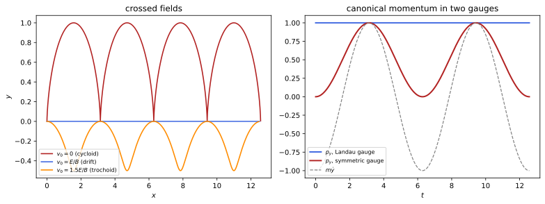
figures/emm_particle.sage.
The definition gives the Lagrangian and the Hamiltonian of a charge in given fields. The free particle’s functions are modified in the simplest way compatible with gauge invariance, hence the name.
Definition 12 (Minimal coupling of a charged particle) A particle of mass m and charge q in potentials (\phi, \mathbf A) has the Lagrangian (Definition 5 of Classical mechanics) L = \tfrac12m|\dot{\mathbf x}|^2 - q\phi(t, \mathbf x) + q\dot{\mathbf x}\cdot\mathbf A(t, \mathbf x) , \tag{18} whose Euler-Lagrange equations (Definition 7 of Classical mechanics) are the Lorentz force law m\ddot{\mathbf x} = q(\mathbf E + \dot{\mathbf x}\times \mathbf B). The canonical momentum (Definition 8 of Classical mechanics) is \mathbf p = m\dot{\mathbf x} + q\mathbf A, and the Hamiltonian (Definition 9 of Classical mechanics) is H = \frac{|\mathbf p - q\mathbf A(t, \mathbf x)|^2}{2m} + q\phi(t, \mathbf x) . \tag{19} Minimal coupling is the rule that produces Equation 19 from the free Hamiltonian |\mathbf p|^2/2m: replace the momentum \mathbf p by the kinetic momentum \boldsymbol\pi = \mathbf p - q\mathbf A = m\dot{\mathbf x} and the energy H by H - q\phi. The relativistic Hamiltonian \sqrt{m^2 + |\mathbf p - q\mathbf A|^2} + q\phi and the quantum rule \mathbf p = -i\nabla follow the same rule; the Dirac and gauge-theory chapters write it as the covariant derivative \partial_\mu + iqA_\mu (Maggiore 2023, sec. 8.6; Pierrus 2018, Questions 8.16-8.17).
Veriphy. Pending.
Lean. Pending.
Sage. Pending.
The first example derives the Lorentz force from the Lagrangian. The velocity-dependent term produces the magnetic force through the total time derivative in the Euler-Lagrange equation.
Example 203 (The Lorentz force from the Lagrangian) \partial L/\partial\dot{\mathbf x} = m\dot{\mathbf x} + q\mathbf A, whose time derivative is m\ddot{\mathbf x} + q\partial_t\mathbf A + q(\dot{\mathbf x}\cdot \nabla)\mathbf A, and \partial L/\partial\mathbf x = -q\nabla\phi + q\nabla(\dot{\mathbf x}\cdot\mathbf A). Since \nabla(\dot{\mathbf x}\cdot\mathbf A) - (\dot{\mathbf x}\cdot\nabla)\mathbf A = \dot{\mathbf x}\times(\nabla\times\mathbf A), the equation is m\ddot{\mathbf x} = q(-\nabla\phi - \partial_t\mathbf A) + q\dot{\mathbf x}\times\mathbf B (Exercise 29 of Classical mechanics for a uniform field) (Pierrus 2018, Question 8.16).
In a uniform magnetic field with the symmetric potential, the Lagrangian is invariant under rotations about the field. The conserved quantity is a canonical angular momentum.
Example 204 (The symmetric gauge and angular momentum) For \mathbf B = B\mathbf e_z, \mathbf A = \frac B2(-y, x, 0), L = \frac m2|\dot{\mathbf x}|^2 + \frac{qB}2(x\dot y - y\dot x) is invariant under rotations about \mathbf e_z, and Noether’s theorem (Definition 18 of Classical mechanics) gives the conserved p_\varphi = m(x\dot y - y\dot x) + \frac{qB}2(x^2 + y^2), which fixes the position of the orbit’s centre relative to the origin.
In the Landau gauge the Lagrangian is invariant under translations along y. The conserved momentum locates the centre of the orbit in x.
Example 205 (The Landau gauge and the orbit centre) With \mathbf A = (0, Bx, 0), L = \frac m2|\dot{\mathbf x}|^2 + qBx\dot y does not contain y, so p_y = m\dot y + qBx is conserved (Figure 9). On a circle about (X, Y), m\dot y = -qB(x - X) (Example 67), so p_y = qBX: the conserved momentum is the x coordinate of the centre (Exercise 42 of Classical mechanics).
Hamilton’s equations reproduce the motion with the kinetic momentum as the velocity variable. The uniform field shows how. The motion separates in the Landau gauge.
Example 206 (Hamilton’s equations in a uniform field) With H = \frac{(p_x)^2 + (p_y - qBx)^2 + p_z^2}{2m} (Landau gauge), Hamilton’s equations (Definition 10 of Classical mechanics) give m\dot x = p_x, m\dot y = p_y - qBx, \dot p_x = \frac{qB}{m}(p_y - qBx) = qB\dot y and \dot p_y = 0: so m\ddot x = qB\dot y and m\ddot y = -qB\dot x, the cyclotron motion.
Without a vector potential the Lagrangian is kinetic minus potential energy. The minimal coupling reduces to the mechanics of conservative forces.
Example 207 (Electrostatics as a special case) For \mathbf A = 0 and static \phi, L = \frac12m|\dot{\mathbf x}|^2 - q\phi, the Lagrangian of a particle with potential energy q\phi (Definition 2), and H = \frac{|\mathbf p|^2}{2m} + q\phi is its energy.
The velocity-dependent part of the Lagrangian is a generalised potential. Mechanics allows such potentials when the force is derived in a specific way from them.
Example 208 (A velocity-dependent potential) Write L = T - U with U = q\phi - q\dot{\mathbf x}\cdot\mathbf A. The Euler-Lagrange equations give the force -\nabla U + \frac{d}{dt} \frac{\partial U}{\partial\dot{\mathbf x}}, which is the Lorentz force by Example 203. The electromagnetic force is the main example of a force with a velocity-dependent potential.
When the potentials are static, the Hamiltonian is conserved. It is the kinetic energy plus q\phi, even though the canonical momentum contains \mathbf A.
Example 209 (Energy conservation) If \phi and \mathbf A do not depend on time, neither does H, so H = \frac12m|\dot{\mathbf x}|^2 + q\phi is conserved (Definition 10 of Classical mechanics): the magnetic field does no work (Example 68). With time-dependent \mathbf A the kinetic energy changes, as in the betatron (Example 132).
The quantum Hamiltonian of a charge follows by the same rule. The momentum operator is replaced by the kinetic momentum operator.
Example 210 (The Schrödinger Hamiltonian) With \mathbf p = -i\nabla, Equation 19 becomes H = \frac{1}{2m}(-i\nabla - q\mathbf A)^2 + q\phi. Its kinetic part contains -i\nabla - q\mathbf A = -i(\nabla - iq\mathbf A), the spatial part of the covariant derivative with A_i = -A^i, and the Dirac equation in a field uses \boldsymbol\pi = -i\nabla - q\mathbf A in the same way (The Dirac equation); the quantum mechanics chapter treats the charge in a field (Quantum mechanics).
The components of the kinetic momentum do not commute in the Poisson bracket. Their bracket is the magnetic field. The result does not depend on the gauge.
Example 211 (Brackets of the kinetic momentum) With Definition 12 of Classical mechanics, \{\pi_i, \pi_j\} = \{p_i - qA_i, p_j - qA_j\} = q(\partial_iA_j - \partial_jA_i) = q\epsilon_{ijk}B_k, a gauge-invariant result, while \{p_i, p_j\} = 0. In quantum mechanics this becomes [\pi_i, \pi_j] = iq\epsilon_{ijk}B_k, the origin of the Landau levels.
In a weak uniform field the Hamiltonian splits into a term linear and a term quadratic in B. The linear term couples the field to the orbital magnetic moment.
Example 212 (Paramagnetic and diamagnetic terms) In the symmetric gauge, |\mathbf p - \frac q2\mathbf B\times\mathbf x|^2 = |\mathbf p|^2 - q\mathbf B\cdot(\mathbf x\times\mathbf p) + \frac{q^2}4|\mathbf B\times\mathbf x|^2, so H = \frac{|\mathbf p|^2}{2m} + q\phi - \frac{q}{2m}\mathbf B\cdot\mathbf L + \frac{q^2}{8m}|\mathbf B\times\mathbf x|^2, with \mathbf L = \mathbf x \times\mathbf p: the linear term is -\mathbf m\cdot\mathbf B with the moment of Example 95, the quadratic one is diamagnetic (Pierrus 2018, Questions 8.17-8.18).
The exercises start with the Euler-Lagrange equations for general potentials. The first derives them with Sage. The computation is done for arbitrary potentials.
Exercise 204 (The Lorentz force with Sage) With Sage, take arbitrary functions \phi, A_x, A_y, A_z of (t, x, y, z), form the Euler-Lagrange expressions of Equation 18 along a path, and check that they equal m\ddot{\mathbf x} - q(\mathbf E + \dot{\mathbf x}\times\mathbf B).
The difference vanishes identically:
var('m q t')
xs = [function('x%d' % i)(t) for i in range(3)]
X0, X1, X2 = var('X0 X1 X2'); V0, V1, V2 = var('V0 V1 V2'); Xv = [X0, X1, X2]; Vv = [V0, V1, V2]
phi = function('phi')(t, X0, X1, X2); A = [function('A%d' % i)(t, X0, X1, X2) for i in range(3)]
L = m / 2 * sum(v^2 for v in Vv) - q * phi + q * sum(Vv[i] * A[i] for i in range(3))
path = {**{Xv[i]: xs[i] for i in range(3)}, **{Vv[i]: diff(xs[i], t) for i in range(3)}}
EL = [diff(diff(L, Vv[i]).subs(path), t) - diff(L, Xv[i]).subs(path) for i in range(3)]
E = [(-diff(phi, Xv[i]) - diff(A[i], t)).subs(path) for i in range(3)]
B = [(diff(A[2], X1) - diff(A[1], X2)).subs(path), (diff(A[0], X2) - diff(A[2], X0)).subs(path), (diff(A[1], X0) - diff(A[0], X1)).subs(path)]
v = [diff(xs[i], t) for i in range(3)]
vxB = [v[1] * B[2] - v[2] * B[1], v[2] * B[0] - v[0] * B[2], v[0] * B[1] - v[1] * B[0]]
print('EL - (m a - q(E + v x B)):', [(EL[i] - (m * diff(xs[i], t, 2) - q * (E[i] + vxB[i]))).simplify_full() for i in range(3)])Output:
EL - (m a - q(E + v x B)): [0, 0, 0]Veriphy. Pending.
Lean. Pending.
Sage. Pending.
Hamilton’s equations should give the same motion. The second exercise checks it with Sage. The kinetic momentum appears as the velocity variable.
Exercise 205 (Hamilton’s equations with Sage) With Sage, compute Hamilton’s equations from Equation 19 for arbitrary potentials, and show that they give m\dot{\mathbf x} = \mathbf p - q\mathbf A and, after eliminating \mathbf p, the Lorentz force.
\dot{\mathbf x} = (\mathbf p - q\mathbf A)/m, and \dot p_i = \frac qm(p_j - qA_j)\partial_iA_j - q\partial_i\phi; substituting \mathbf p = m\dot{\mathbf x} + q\mathbf A gives the Lorentz force:
var('m q t')
X0, X1, X2, P0, P1, P2 = var('X0 X1 X2 P0 P1 P2'); Xv = [X0, X1, X2]; Pv = [P0, P1, P2]
phi = function('phi')(t, X0, X1, X2); A = [function('A%d' % i)(t, X0, X1, X2) for i in range(3)]
H = sum((Pv[i] - q * A[i])^2 for i in range(3)) / (2 * m) + q * phi
xdot = [diff(H, Pv[i]) for i in range(3)]; pdot = [-diff(H, Xv[i]) for i in range(3)]
print('x-dot = (p - qA)/m:', all(bool((xdot[i] - (Pv[i] - q * A[i]) / m).simplify_full() == 0) for i in range(3)))
print('p-dot_i =', pdot[0].simplify_full(), '(i = 0)')
# m x'' = d/dt(p - qA) along the flow = p-dot - q (dA/dt + sum xdot_j dA/dX_j); compare with the Lorentz force
mxdd = [pdot[i] - q * (diff(A[i], t) + sum(xdot[j] * diff(A[i], Xv[j]) for j in range(3))) for i in range(3)]
E = [-diff(phi, Xv[i]) - diff(A[i], t) for i in range(3)]
B = [diff(A[2], X1) - diff(A[1], X2), diff(A[0], X2) - diff(A[2], X0), diff(A[1], X0) - diff(A[0], X1)]
v = xdot
F = [q * (E[0] + v[1] * B[2] - v[2] * B[1]), q * (E[1] + v[2] * B[0] - v[0] * B[2]), q * (E[2] + v[0] * B[1] - v[1] * B[0])]
print('m x-double-dot minus the Lorentz force:', [(mxdd[i] - F[i]).simplify_full() for i in range(3)])Output:
x-dot = (p - qA)/m: True
p-dot_i = -(m*q*diff(phi(t, X0, X1, X2), X0) + (q^2*A0(t, X0, X1, X2) - P0*q)*diff(A0(t, X0, X1, X2), X0) + (q^2*A1(t, X0, X1, X2) - P1*q)*diff(A1(t, X0, X1, X2), X0) + (q^2*A2(t, X0, X1, X2) - P2*q)*diff(A2(t, X0, X1, X2), X0))/m (i = 0)
m x-double-dot minus the Lorentz force: [0, 0, 0]Veriphy. Pending.
Lean. Pending.
Sage. Pending.
The Hamiltonian follows from the Lagrangian by a Legendre transform. The third exercise asks for the computation. It is the standard Legendre transform of mechanics.
Exercise 206 (From the Lagrangian to the Hamiltonian) Compute H = \mathbf p\cdot\dot{\mathbf x} - L for Equation 18 and express it in \mathbf x and \mathbf p.
\dot{\mathbf x} = (\mathbf p - q\mathbf A)/m, so \mathbf p\cdot\dot{\mathbf x} - L = \frac{\mathbf p\cdot(\mathbf p - q\mathbf A)}m - \frac{|\mathbf p - q\mathbf A|^2}{2m} + q\phi - \frac{q\mathbf A\cdot(\mathbf p - q\mathbf A)}m = \frac{|\mathbf p - q\mathbf A|^2}{2m} + q\phi.
Veriphy. Pending.
Lean. Pending.
Sage. Pending.
The bracket of Example 211 holds for any potential. The fourth exercise checks it with Sage. Only the curl of the potential survives.
Exercise 207 (The bracket of kinetic momenta) With Sage, compute \{\pi_x, \pi_y\}, \{\pi_y, \pi_z\}, \{\pi_z, \pi_x\} for arbitrary \mathbf A(\mathbf x) and compare with q\mathbf B.
They are qB_z, qB_x and qB_y:
var('q')
X0, X1, X2, P0, P1, P2 = var('X0 X1 X2 P0 P1 P2'); Xv = [X0, X1, X2]; Pv = [P0, P1, P2]
A = [function('A%d' % i)(X0, X1, X2) for i in range(3)]
pb = lambda f, g: sum(diff(f, Xv[i]) * diff(g, Pv[i]) - diff(f, Pv[i]) * diff(g, Xv[i]) for i in range(3))
pi_ = [Pv[i] - q * A[i] for i in range(3)]
B = [diff(A[2], X1) - diff(A[1], X2), diff(A[0], X2) - diff(A[2], X0), diff(A[1], X0) - diff(A[0], X1)]
print('{pi_x, pi_y} - q B_z =', (pb(pi_[0], pi_[1]) - q * B[2]).simplify_full())
print('{pi_y, pi_z} - q B_x =', (pb(pi_[1], pi_[2]) - q * B[0]).simplify_full())
print('{pi_z, pi_x} - q B_y =', (pb(pi_[2], pi_[0]) - q * B[1]).simplify_full())Output:
{pi_x, pi_y} - q B_z = 0
{pi_y, pi_z} - q B_x = 0
{pi_z, pi_x} - q B_y = 0Veriphy. Pending.
Lean. Pending.
Sage. Pending.
In the Landau gauge the motion separates into a free motion along y and an oscillator in x. The fifth exercise works it out.
Exercise 208 (An oscillator in disguise) For Example 206, use the conserved p_y and p_z to write the motion in x as that of a harmonic oscillator, and find its frequency and centre.
H = \frac{p_x^2}{2m} + \frac{q^2B^2}{2m}(x - \frac{p_y}{qB})^2 + \frac{p_z^2}{2m}: an oscillator of frequency \omega = |qB|/m centred at X = p_y/qB, the cyclotron frequency and the orbit centre of Example 205.
Veriphy. Pending.
Lean. Pending.
Sage. Pending.
The weak-field expansion of Example 212 is an algebraic identity. The sixth exercise asks for it. The two terms have very different sizes.
Exercise 209 (The expansion in the field) Verify |\mathbf p - \frac q2\mathbf B\times\mathbf x|^2 = |\mathbf p|^2 - q\mathbf B\cdot\mathbf L + \frac{q^2}4|\mathbf B\times\mathbf x|^2 and estimate the ratio of the two magnetic terms for an atomic electron in 1\,T (Pierrus 2018, Question 8.18).
\mathbf p\cdot(\mathbf B\times\mathbf x) = \mathbf B\cdot(\mathbf x\times\mathbf p), which gives the cross term. For L \approx \hbar and |\mathbf x| \approx a_0, the ratio \frac{q^2B^2a_0^2/8m}{qB\hbar/2m} = \frac{eBa_0^2}{4\hbar} \approx 10^{-6}: the diamagnetic term is tiny unless the paramagnetic one vanishes.
Veriphy. Pending.
Lean. Pending.
Sage. Pending.
Larmor’s theorem replaces a weak magnetic field by a rotation. The seventh exercise proves it. It is a statement about weak fields.
Exercise 210 (Larmor’s theorem) For a charge in a central electric field and a weak uniform \mathbf B, show that in the frame rotating with \boldsymbol\omega_L = -\frac{q\mathbf B}{2m} the equation of motion is that without \mathbf B, up to terms of order B^2.
In a frame rotating with \boldsymbol\omega, m\ddot{\mathbf x} gains -2m\boldsymbol\omega\times\dot{\mathbf x} + O(\omega^2). The magnetic force q\dot{\mathbf x}\times\mathbf B = -q\mathbf B\times\dot{\mathbf x} cancels it for 2m\boldsymbol\omega = -q\mathbf B, and the central force is unchanged by the rotation. Orbits in the weak field precess at \omega_L.
Veriphy. Pending.
Lean. Pending.
Sage. Pending.
In crossed fields the Landau gauge gives a conserved momentum too. The eighth exercise solves the motion with Sage through the Hamiltonian.
Exercise 211 (Crossed fields from the Hamiltonian) For \mathbf E = E\mathbf e_y, \mathbf B = B\mathbf e_z, take \phi = -Ey and \mathbf A = (-By, 0, 0). With Sage, write H, find the conserved momentum, and solve for a charge starting at rest at the origin.
H = \frac{(p_x + qBy)^2 + p_y^2}{2m} - qEy does not depend on x, so p_x = m\dot x - qBy is conserved and equals 0. Then m\dot x = qBy and the y motion is an oscillator about y = mE/qB^2: the cycloid of Exercise 67:
var('t'); assume(t > 0); m, q, E, B = var('m q E B', domain='positive')
X, Y, PX, PY = var('X Y PX PY')
H = ((PX + q * B * Y)^2 + PY^2) / (2 * m) - q * E * Y
print('H =', H, '; dH/dX =', diff(H, X), '-> p_x conserved')
# with p_x = 0: m y'' = -dH/dY = -(q B)^2 y/m + q E
y = function('y')(t)
sol = desolve(m * diff(y, t, 2) == -(q * B)^2 * y / m + q * E, y, ics=[0, 0, 0], ivar=t).simplify_full()
print('y(t) =', sol, '; centre of oscillation m E/(q B^2)')
xsol = integrate(q * B * sol.subs(t=var('u')) / m, var('u'), 0, t).simplify_full()
print('x(t) =', xsol)Output:
H = -E*Y*q + 1/2*((B*Y*q + PX)^2 + PY^2)/m ; dH/dX = 0 -> p_x conserved
y(t) = -(E*m*cos(B*q*t/m) - E*m)/(B^2*q) ; centre of oscillation m E/(q B^2)
x(t) = (B*E*q*t - E*m*sin(B*q*t/m))/(B^2*q)Veriphy. Pending.
Lean. Pending.
Sage. Pending.
An axially symmetric field conserves a canonical angular momentum. The ninth exercise derives Busch’s theorem from it. It is the basis of magnetic focusing.
Exercise 212 (Busch’s theorem) For an axially symmetric static field with \mathbf A = A_\varphi(s, z)\hat{\boldsymbol\varphi} and \phi = \phi(s, z), show that p_\varphi = ms^2 \dot\varphi + qsA_\varphi is conserved, and that ms^2\dot\varphi = \frac{q}{2\pi}(\Phi_0 - \Phi) for a charge starting with \dot\varphi = 0 where the flux through its circle of radius s is \Phi_0, with \Phi = 2\pi sA_\varphi the current flux.
In cylindrical coordinates \dot{\mathbf x}\cdot\mathbf A = s\dot\varphi A_\varphi, and L does not depend on \varphi, so p_\varphi = \partial L/\partial\dot \varphi = ms^2\dot\varphi + qsA_\varphi is conserved. With 2\pi sA_\varphi = \Phi, ms^2\dot\varphi = p_\varphi - \frac{q\Phi}{2\pi} = \frac q{2\pi}(\Phi_0 - \Phi). Magnetic lenses and bottles rest on this.
Veriphy. Pending.
Lean. Pending.
Sage. Pending.
A charge in a uniform magnetic field that grows in time is accelerated by the induced electric field. The last exercise follows the energy with the Lagrangian of Equation 18.
Exercise 213 (A charge in a growing field) In \mathbf B = B(t)\mathbf e_z with \mathbf A = \frac{B(t)}2(-y, x, 0) and \phi = 0, the Lagrangian is still invariant under rotations about \mathbf e_z, so p_\varphi = ms^2\dot\varphi + \frac q2B(t)s^2 is conserved. A charge at rest at distance s from the axis when B = 0 is held at that distance by a frictionless circular guide while the field is switched on. Find \dot\varphi(t) and its kinetic energy.
p_\varphi = 0 initially, so \dot\varphi = -\frac{qB(t)}{2m}: the charge turns at half the cyclotron frequency, and its kinetic energy \frac12ms^2\dot\varphi^2 = \frac{q^2B^2s^2}{8m} grows with the field. The energy is supplied by the induced electric field E_\varphi = -\frac12\dot Bs (Example 164), as in the betatron; the guide supplies only radial forces.
Veriphy. Pending.
Lean. Pending.
Sage. Pending.
Gauge transformations change the potentials and hence the Lagrangian and the Hamiltonian of a charge. The proposition shows that the motion does not change, and how the canonical variables transform.
Proposition 8 (Gauge invariance of the motion) Under the gauge transformation Equation 16, the Lagrangian Equation 18 becomes L' = L + q\frac{d}{dt}\lambda(t, \mathbf x), so the action changes only by the endpoint term q[\lambda]_{t_1}^{t_2} and the paths of the charge are the same (Definition 6 of Classical mechanics). The canonical momentum and the Hamiltonian change to \mathbf p' = \mathbf p + q\nabla\lambda and H' = H - q\partial_t\lambda, the canonical transformation generated by F_2 = \mathbf x\cdot\mathbf P - q\lambda(t, \mathbf x) (Definition 14 of Classical mechanics), while the kinetic momentum \mathbf p - q\mathbf A = m\dot{\mathbf x} is gauge invariant. In quantum mechanics the corresponding statement is that \psi \mapsto e^{iq\lambda}\psi maps solutions of the Schrödinger equation with (\phi, \mathbf A) to solutions with the transformed potentials. Proof. -q(-\partial_t\lambda) + q\dot{\mathbf x}\cdot\nabla\lambda = q(\partial_t\lambda + \dot{\mathbf x}\cdot\nabla\lambda) = q\dot\lambda along the path. Then \mathbf p' = \partial L'/\partial\dot{\mathbf x} = \mathbf p + q\nabla\lambda, and with Equation 9 of Classical mechanics, \mathbf p = \mathbf P - q\nabla\lambda and K = H + \partial_tF_2 = H - q\partial_t\lambda, which equals \frac{|\mathbf P - q\mathbf A'|^2}{2m} + q\phi' (Maggiore 2023, sec. 8.6.2; Pierrus 2018, Question 8.16).
Veriphy. Pending.
Lean. Pending.
Sage. Pending.
The symmetric and Landau Lagrangians of a uniform field differ by a total derivative. The example writes it out. The difference is the gauge function of Figure 8.
Example 213 (Two Lagrangians for one motion) L_{\text{Landau}} - L_{\text{sym}} = qBx\dot y - \frac{qB}2(x\dot y - y\dot x) = \frac{qB}2(x\dot y + y\dot x) = \frac{d}{dt}\frac{qBxy}2, the change of Proposition 8 with \lambda = \frac12Bxy. The orbits agree, while the conserved quantities found by Noether’s theorem differ (Example 204, Example 205).
The canonical momentum is not gauge invariant. Which of its components is conserved depends on the gauge. The figure of this unit shows the difference.
Example 214 (The canonical momentum depends on the gauge) In Figure 9, p_y is constant in the Landau gauge and oscillates in the symmetric gauge, where p_y = m\dot y + \frac{qB}2x, while m\dot y is the same function of time in both. Statements such as “p_y is conserved” refer to a gauge, as Exercise 42 of Classical mechanics found.
A constant shift of the scalar potential shifts the Hamiltonian by a constant. The energy is defined only up to this choice.
Example 215 (Shifting the energy) \lambda = -Vt gives \phi' = \phi + V and H' = H + qV, with \mathbf p' = \mathbf p: every energy is shifted by qV, which changes no equation of motion and no energy difference.
The action of a path changes by the difference of the gauge function at its ends. For paths with common ends the difference cancels.
Example 216 (The action) S'[\mathbf x] = \int L'\,dt = S[\mathbf x] + q\lambda(t_2, \mathbf x(t_2)) - q\lambda(t_1, \mathbf x(t_1)). For all paths between the same events the added term is the same, so the stationary paths of S' and S coincide. The difference of the actions of two paths is gauge invariant, and in quantum mechanics it is the relative phase between them.
The gauge transformation of the canonical variables is generated by a function. The example writes the generating function and checks the transformation.
Example 217 (The generating function) F_2(\mathbf x, \mathbf P, t) = \mathbf x\cdot\mathbf P - q\lambda(t, \mathbf x) gives \mathbf p = \mathbf P - q\nabla\lambda, \mathbf X = \mathbf x and K = H - q\partial_t\lambda by Equation 9 of Classical mechanics. The positions are untouched, and the new momentum is the canonical momentum of the transformed potentials.
The quantum version of gauge invariance is a local phase change of the wave function. The example states it and points to its consequences.
Example 218 (Local phase changes in quantum mechanics) With H = \frac{1}{2m}(-i\nabla - q\mathbf A)^2 + q\phi (Example 210), (-i\nabla - q\mathbf A - q\nabla\lambda)(e^{iq\lambda}\psi) = e^{iq\lambda}(-i\nabla - q\mathbf A)\psi and (i\partial_t - q\phi + q\partial_t\lambda)(e^{iq\lambda}\psi) = e^{iq\lambda}(i\partial_t - q\phi)\psi, so e^{iq\lambda}\psi solves the Schrödinger equation with the new potentials. Probabilities |\psi|^2 do not change (Exercise 220).
The Aharonov-Bohm effect shows that the potentials matter in quantum mechanics even where the fields vanish. Classically they do not.
Example 219 (A charge around a flux tube) Outside a thin solenoid with flux \Phi, \mathbf E = \mathbf B = 0, and the classical orbits are straight lines, whatever \Phi. The potential \frac{\Phi}{2\pi s}\hat{\boldsymbol\varphi} is locally a gradient but not globally (Example 179), and two quantum paths around opposite sides of the tube differ in phase by q\Phi (Example 216): the gauge-theory chapter treats this effect.
The Hamilton-Jacobi function changes under a gauge transformation by the gauge function. The example checks the equation. The change is the classical counterpart of a phase.
Example 220 (The Hamilton-Jacobi function) If S solves \partial_tS + \frac{1}{2m}|\nabla S - q\mathbf A|^2 + q\phi = 0 (Definition 15 of Classical mechanics), then S' = S + q\lambda solves the equation with the transformed potentials, since \nabla S' - q\mathbf A' = \nabla S - q\mathbf A and \partial_tS' + q\phi' = \partial_tS + q\phi. In the semiclassical limit \psi \approx e^{iS}, this is the phase change of Example 218.
The Lagrangian needs the potentials, not only the fields. This is why the potentials, not the fields, are the variables of field theory.
Example 221 (Why the potentials are needed) No Lagrangian of the form L(\mathbf x, \dot{\mathbf x}, \mathbf E, \mathbf B), local in the fields at the particle’s position, gives the Lorentz force for all fields: the term linear in \dot{\mathbf x} must be q\dot{\mathbf x}\cdot\mathbf A up to a total derivative, because its Euler-Lagrange contribution must be q\dot{\mathbf x}\times\nabla\times\mathbf A. Gauge invariance is the price of this locality (Maggiore 2023, sec. 3.3).
Noether’s theorem with a Lagrangian that changes by a total derivative gives a modified conserved quantity. In the symmetric gauge the translations of a uniform field are such symmetries.
Example 222 (Translations in the symmetric gauge) Under y \mapsto y + a, the symmetric Lagrangian changes by \frac{qB}2(-a\dot x) = \frac{d}{dt}(-\frac{qBa}2x), so the conserved Noether quantity is p_y + \frac{qB}2x = m\dot y + qBx (Definition 18 of Classical mechanics), the same gauge-invariant function as the Landau p_y of Example 205.
The exercises start by checking the total derivative of the proposition with Sage. The first one uses arbitrary functions. It is the chain rule along the path.
Exercise 214 (The Lagrangian changes by a total derivative) With Sage, along a path \mathbf x(t) and for arbitrary \phi, \mathbf A, \lambda, check that L' - L = q\frac{d}{dt}\lambda(t, \mathbf x(t)).
The difference is q(\partial_t\lambda + \dot x_i\partial_i\lambda), the chain rule for \frac{d}{dt}\lambda:
var('m q t')
X0, X1, X2 = var('X0 X1 X2'); V0, V1, V2 = var('V0 V1 V2'); Xv = [X0, X1, X2]; Vv = [V0, V1, V2]
phi = function('phi')(t, X0, X1, X2); A = [function('A%d' % i)(t, X0, X1, X2) for i in range(3)]; lam = function('lam')(t, X0, X1, X2)
Lf = lambda ph, AA: m / 2 * sum(v^2 for v in Vv) - q * ph + q * sum(Vv[i] * AA[i] for i in range(3))
L1 = Lf(phi, A); L2 = Lf(phi - diff(lam, t), [A[i] + diff(lam, Xv[i]) for i in range(3)])
xs = [function('x%d' % i)(t) for i in range(3)]
path = {**{Xv[i]: xs[i] for i in range(3)}, **{Vv[i]: diff(xs[i], t) for i in range(3)}}
print('L2 - L1 - q d/dt lambda(t, x(t)) =', ((L2 - L1).subs(path) - q * diff(lam.subs(path), t)).simplify_full())Output:
L2 - L1 - q d/dt lambda(t, x(t)) = 0Veriphy. Pending.
Lean. Pending.
Sage. Pending.
The Hamiltonian in the new canonical variables should be the minimally coupled Hamiltonian of the new potentials. The second exercise checks it with Sage.
Exercise 215 (The transformed Hamiltonian) With Sage, substitute \mathbf p = \mathbf P - q\nabla\lambda into H - q\partial_t\lambda and compare with \frac{|\mathbf P - q\mathbf A'|^2}{2m} + q\phi' for arbitrary potentials and \lambda.
The two expressions agree identically:
var('m q t')
X0, X1, X2, P0, P1, P2 = var('X0 X1 X2 P0 P1 P2'); Xv = [X0, X1, X2]; Pv = [P0, P1, P2]
phi = function('phi')(t, X0, X1, X2); A = [function('A%d' % i)(t, X0, X1, X2) for i in range(3)]; lam = function('lam')(t, X0, X1, X2)
Hf = lambda p, ph, AA: sum((p[i] - q * AA[i])^2 for i in range(3)) / (2 * m) + q * ph
old_p = [Pv[i] - q * diff(lam, Xv[i]) for i in range(3)] # p = P - q grad(lambda)
K = Hf(old_p, phi, A) - q * diff(lam, t)
Hnew = Hf(Pv, phi - diff(lam, t), [A[i] + diff(lam, Xv[i]) for i in range(3)])
print('K - H_new =', (K - Hnew).simplify_full())Output:
K - H_new = 0Veriphy. Pending.
Lean. Pending.
Sage. Pending.
The map (\mathbf x, \mathbf p) \mapsto (\mathbf x, \mathbf p + q\nabla\lambda) must preserve the Poisson brackets. The third exercise checks it with Sage.
Exercise 216 (The transformation is canonical) With Sage, check \{x_i, P_j\} = \delta_{ij} and \{P_i, P_j\} = 0 for \mathbf P = \mathbf p + q\nabla\lambda(\mathbf x).
\{P_i, P_j\} = q(\partial_j\partial_i\lambda - \partial_i\partial_j\lambda) = 0 by the symmetry of second derivatives:
var('q')
X0, X1, X2, P0, P1, P2 = var('X0 X1 X2 P0 P1 P2'); Xv = [X0, X1, X2]; Pv = [P0, P1, P2]
lam = function('lam')(X0, X1, X2)
pb = lambda f, g: sum(diff(f, Xv[i]) * diff(g, Pv[i]) - diff(f, Pv[i]) * diff(g, Xv[i]) for i in range(3))
Pn = [Pv[i] + q * diff(lam, Xv[i]) for i in range(3)]
print('{x_i, P_j}:', matrix(3, 3, lambda i, j: pb(Xv[i], Pn[j])))
print('{P_i, P_j}:', matrix(3, 3, lambda i, j: pb(Pn[i], Pn[j]).simplify_full()))Output:
{x_i, P_j}: [1 0 0]
[0 1 0]
[0 0 1]
{P_i, P_j}: [0 0 0]
[0 0 0]
[0 0 0]Veriphy. Pending.
Lean. Pending.
Sage. Pending.
A uniform electric field can be described by a scalar or a vector potential. The fourth exercise compares the two Hamiltonians, with their different conserved quantities.
Exercise 217 (Two Hamiltonians for a uniform electric field) For \mathbf E = E_0\mathbf e_x, compare H_1 = \frac{|\mathbf p|^2}{2m} - qE_0x (\phi = -E_0x) and H_2 = \frac{|\mathbf p + qE_0t\mathbf e_x|^2}{2m} (\mathbf A = -E_0t\mathbf e_x). Which quantities are conserved in each, and what is the gauge function?
H_1 does not depend on t, so it is conserved (energy); H_2 does not depend on x, so \mathbf p is conserved, and m\dot x = p_x + qE_0t grows linearly. The gauge function is \lambda = -E_0xt: \phi_1 - \partial_t\lambda = -E_0x + E_0x = 0 and \nabla\lambda = -E_0t\mathbf e_x.
Veriphy. Pending.
Lean. Pending.
Sage. Pending.
The invariance of the paths can be proved from the action. The fifth exercise asks for the argument. It uses only the definition of the action.
Exercise 218 (Same paths from the action) Show from Definition 6 of Classical mechanics that two Lagrangians differing by \frac{d}{dt}f(t, \mathbf x) have the same Euler-Lagrange equations.
Their actions differ by f(t_2, \mathbf x_2) - f(t_1, \mathbf x_1), which is the same for all paths with fixed ends, so the variations agree and the stationary paths coincide. Equivalently, \frac{d}{dt}f satisfies the Euler-Lagrange equations identically.
Veriphy. Pending.
Lean. Pending.
Sage. Pending.
The kinetic momentum is gauge invariant while the canonical one is not. The sixth exercise relates them in the two gauges of a uniform field.
Exercise 219 (Momenta in two gauges) For the same orbit in B\mathbf e_z, express p_x and p_y of the symmetric gauge through those of the Landau gauge (0, Bx, 0).
With \lambda = \frac12Bxy from symmetric to Landau, \mathbf p_{\text{L}} = \mathbf p_{\text{s}} + q\nabla\lambda, so p_{\text{s}, x} = p_{\text{L}, x} - \frac{qB}2y and p_{\text{s}, y} = p_{\text{L}, y} - \frac{qB}2x.
Veriphy. Pending.
Lean. Pending.
Sage. Pending.
The gauge transformation of the wave function is a short computation with Sage. The seventh exercise does it in one dimension.
Exercise 220 (The Schrödinger equation is gauge covariant) With Sage, in one space dimension, check that (-i\partial_x - qA - q\partial_x\lambda)(e^{iq\lambda}\psi) = e^{iq\lambda}(-i\partial_x - qA)\psi and (i\partial_t - q\phi + q\partial_t\lambda)(e^{iq\lambda}\psi) = e^{iq\lambda}(i\partial_t - q\phi)\psi for arbitrary functions.
Both differences vanish:
var('t x q')
psi = function('psi')(t, x); A = function('A')(t, x); phi = function('phi')(t, x); lam = function('lam')(t, x)
g = exp(I * q * lam)
kin = lambda f, AA: -I * diff(f, x) - q * AA * f
tim = lambda f, ph: I * diff(f, t) - q * ph * f
print('momentum operator:', (kin(g * psi, A + diff(lam, x)) - g * kin(psi, A)).simplify_full())
print('energy operator:', (tim(g * psi, phi - diff(lam, t)) - g * tim(psi, phi)).simplify_full())Output:
momentum operator: 0
energy operator: 0Veriphy. Pending.
Lean. Pending.
Sage. Pending.
The Hamilton-Jacobi function shifts by q\lambda. The eighth exercise checks it for a uniform electric field. The gauge function is that of Exercise 217.
Exercise 221 (Hamilton-Jacobi in two gauges) For the two gauges of Exercise 217 in one dimension, show that if S_1(t, x) solves the Hamilton-Jacobi equation of H_1, then S_2 = S_1 - qE_0xt solves that of H_2.
This is Example 220 with \lambda = -E_0xt. Directly: \partial_xS_2 + qE_0t = \partial_xS_1 and \partial_tS_2 = \partial_tS_1 - qE_0x, so \partial_tS_2 + \frac{(\partial_xS_2 + qE_0t)^2}{2m} = \partial_tS_1 + \frac{(\partial_xS_1)^2}{2m} - qE_0x = 0.
Veriphy. Pending.
Lean. Pending.
Sage. Pending.
A total derivative of a function of position alone adds a gradient to the vector potential. The ninth exercise sees it as a special gauge transformation.
Exercise 222 (A static gauge function) Show that adding \dot{\mathbf x}\cdot\nabla f(\mathbf x) to a Lagrangian changes neither the motion nor the velocity, and that it is the gauge transformation with \lambda = f/q.
\dot{\mathbf x}\cdot\nabla f = \frac{d}{dt}f, a total derivative; the term q\dot{\mathbf x}\cdot\mathbf A becomes q\dot{\mathbf x}\cdot(\mathbf A + \nabla \lambda) with \lambda = f/q, and \phi is unchanged since \partial_t\lambda = 0.
Veriphy. Pending.
Lean. Pending.
Sage. Pending.
The Noether quantity of Example 222 is gauge invariant although the canonical momentum is not. The last exercise checks this with Sage on the orbits of Figure 9.
Exercise 223 (A gauge-invariant conserved quantity) With Sage, for a circular orbit in B\mathbf e_z, evaluate p_y + \frac{qB}2x in the symmetric gauge and p_y in the Landau gauge along the orbit, and check that both are constant and equal.
Both equal m\dot y + qBx = qBX, constant along the orbit:
var('t'); m, q, B, R, X0, Y0 = var('m q B R X0 Y0', domain='positive')
w = q * B / m
x = X0 + R * cos(w * t); y = Y0 - R * sin(w * t) # clockwise for q B > 0
print('orbit solves m x\'\' = q B y\', m y\'\' = -q B x\':', bool((m * diff(x, t, 2) - q * B * diff(y, t)).simplify_full() == 0), bool((m * diff(y, t, 2) + q * B * diff(x, t)).simplify_full() == 0))
py_sym = m * diff(y, t) + q * B / 2 * x; py_landau = m * diff(y, t) + q * B * x
print('symmetric gauge: p_y =', py_sym.simplify_full(), '(oscillates); p_y + qBx/2 =', (py_sym + q * B / 2 * x).simplify_full())
print('Landau gauge: p_y =', py_landau.simplify_full(), '= q B X0')Output:
orbit solves m x'' = q B y', m y'' = -q B x': True True
symmetric gauge: p_y = -1/2*B*R*q*cos(B*q*t/m) + 1/2*B*X0*q (oscillates); p_y + qBx/2 = B*X0*q
Landau gauge: p_y = B*X0*q = q B X0Veriphy. Pending.
Lean. Pending.
Sage. Pending.
Exercises
The last exercises follow single systems through the whole section. Each uses induction, Maxwell’s equations, the conservation laws and the potentials together.
Exercise 224 (The charging capacitor, completely) A capacitor with circular plates of radius a and gap d \ll a is charged by a constant current I. With Sage, find \mathbf E and \mathbf B between the plates, potentials \phi and \mathbf A in the Coulomb gauge to first order, the Poynting flux through the rim, and check the energy balance of Proposition 4.
E = \frac{It}{\pi a^2}, B_\varphi = \frac{Is}{2\pi a^2}; \phi = -Ez and \mathbf A = -\frac{Is^2}{4\pi a^2}\mathbf e_z (Exercise 170, with \ddot E = 0 so no correction); the inward flux through the rim, 2\pi ad\cdot E\frac{Ia}{2\pi a^2}, equals \frac{d}{dt}(\frac12E^2\pi a^2d):
t, x, y, z = var('t x y z')
s, r, I, a, d = var('s r I a d', domain='positive')
X = [x, y, z]
def curl(F): return vector([diff(F[2], y) - diff(F[1], z), diff(F[0], z) - diff(F[2], x), diff(F[1], x) - diff(F[0], y)]).simplify_full()
def grad(f): return vector([diff(f, v) for v in X])
E = I * t / (pi * a^2)
phi = -E * z; A = vector([0, 0, -I * (x^2 + y^2) / (4 * pi * a^2)])
Ef = (-grad(phi) - diff(A, t)).simplify_full(); Bf = curl(A)
print('E =', Ef, '; B =', Bf, '; |B| at distance s: I s/(2 pi a^2)')
print('Ampere-Maxwell inside (no current): curl B - dE/dt =', (curl(Bf) - diff(Ef, t)).simplify_full())
flux = 2 * pi * a * d * E * I * a / (2 * pi * a^2)
energy = integrate((E^2 + (I * r / (2 * pi * a^2))^2) / 2 * 2 * pi * r * d, r, 0, a)
print('inward Poynting flux through the rim:', flux.simplify_full(), '; rate of change of the energy (electric part dominant):', diff(energy, t).simplify_full())Output:
E = (0, 0, I*t/(pi*a^2)) ; B = (-1/2*I*y/(pi*a^2), 1/2*I*x/(pi*a^2), 0) ; |B| at distance s: I s/(2 pi a^2)
Ampere-Maxwell inside (no current): curl B - dE/dt = (0, 0, 0)
inward Poynting flux through the rim: I^2*d*t/(pi*a^2) ; rate of change of the energy (electric part dominant): I^2*d*t/(pi*a^2)Veriphy. Pending.
Lean. Pending.
Sage. Pending.
The betatron combines induction, the Lorentz force and the energy balance. The second exercise works it out for a specific field profile.
Exercise 225 (A betatron with a given profile) Take B_z(s, t) = B_0(t)(1 - \frac{s^2}{2R^2}) inside a radius larger than R. Find the mean field inside radius s, the radius at which the betatron condition of Example 132 holds, and, at that radius, the energy gained per turn by an electron when \dot B_0 is constant.
The flux through radius s is \pi s^2B_0(1 - \frac{s^2}{4R^2}), so the mean field is B_0(1 - \frac{s^2}{4R^2}). The condition mean = 2B_z(s) gives 1 - \frac{s^2}{4R^2} = 2 - \frac{s^2}{R^2}, so s^2 = \frac43R^2. The energy gained per turn is e\oint E\cdot d\ell = e\dot\Phi = e\pi s^2\dot B_0(1 - \frac{s^2}{4R^2}) = \frac{8\pi}{9}eR^2\dot B_0.
Veriphy. Pending.
Lean. Pending.
Sage. Pending.
A charged ring around a solenoid takes up angular momentum when the current changes. The last exercise connects the induced field, the field momentum and the canonical angular momentum of the ring.
Exercise 226 (Angular momentum three ways) A ring of radius R, mass M and charge Q can turn freely about the axis of a long solenoid of radius a < R carrying flux \Phi(t). Show that MR^2\dot\varphi + \frac{Q\Phi}{2\pi} is constant (a) from the torque of the induced field, (b) from the canonical angular momentum of Exercise 212, and say (c) where the angular momentum \frac{Q\Phi_0}{2\pi} is stored before the current is switched off.
- The torque RQE_\varphi = -\frac{Q\dot\Phi}{2\pi} (Exercise 158). (b) On the ring A_\varphi = \frac{\Phi}{2\pi R}, so p_\varphi = MR^2\dot\varphi + QRA_\varphi = MR^2\dot\varphi + \frac{Q\Phi}{2\pi}, conserved because L is independent of \varphi. (c) In the field: \int\mathbf x\times(\mathbf E\times \mathbf B)\,d^3x of the ring’s electric field and the solenoid’s magnetic field (Example 159).
Veriphy. Pending.
Lean. Pending.
Sage. Pending.
Waves, moving charges and radiation
Maxwell’s equations in empty space have solutions that carry energy away from their sources at the speed of light. This section describes them in vector form: plane waves and their polarisation; the retarded potentials, which solve the equations for given sources with the Green’s function of the wave operator; the Liénard-Wiechert fields of a point charge in arbitrary motion; the radiation of accelerated charges, from Larmor’s formula to the dipole radiation of small sources and the zones around them; and, in outline, the reaction of the radiation on the charge that emits it (Maggiore 2023, Chs. 9-12). The units are those of Section 1.1; the covariant form of these results is given in the classical field theory and special relativity chapters, which refer back to the blocks here.
Plane waves and polarisation
In vacuum each component of \mathbf E and \mathbf B satisfies the wave equation (Example 138). Its simplest solutions are plane waves, functions of one combination \hat{\mathbf k}\cdot\mathbf x - t, and every solution is a superposition of them; the two transverse directions of the field give each wave a polarisation.
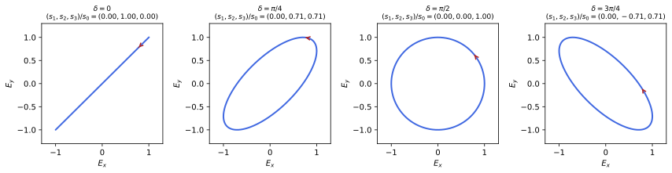
figures/emw_polarisation.sage.
The definition gives the monochromatic plane wave in the complex notation used throughout optics. The physical fields are the real parts.
Definition 13 (Plane wave) A monochromatic plane wave with wave vector \mathbf k and angular frequency \omega is a vacuum solution of Equation 11 of the form \mathbf E = \operatorname{Re}\bigl(\mathbf E_0e^{i(\mathbf k\cdot\mathbf x - \omega t)}\bigr), \qquad \mathbf B = \hat{\mathbf k}\times\mathbf E, \qquad \omega = |\mathbf k|, \qquad \mathbf k\cdot\mathbf E_0 = 0 , \tag{20} with a constant complex amplitude \mathbf E_0; its wavelength is \lambda = 2\pi/|\mathbf k|. More generally, \mathbf E = \mathbf f(\hat{\mathbf k}\cdot\mathbf x - t) with \hat{\mathbf k}\cdot\mathbf f = 0 and \mathbf B = \hat{\mathbf k}\times\mathbf E is a plane wave of arbitrary profile. The fields are transverse, |\mathbf E| = |\mathbf B|, and u = |\mathbf E|^2, \mathbf S = u\hat{\mathbf k}. In SI units \omega = c|\mathbf k| and \mathbf B = \hat{\mathbf k}\times\mathbf E/c (Maggiore 2023, secs. 9.1–9.4; Pierrus 2018, Questions 7.4-7.5).
Veriphy. Pending.
Lean. Pending.
Sage. Pending.
The first example is the wave already met in Exercise 136. Its profile can be any function, which the definition allows.
Example 223 (A wave of any shape) For any function f, \mathbf E = f(z - t)\mathbf e_x and \mathbf B = f(z - t)\mathbf e_y solve the vacuum equations: \nabla\times\mathbf E = f'\mathbf e_y = -\partial_t\mathbf B and \nabla\times\mathbf B = -f'\mathbf e_x = \partial_t\mathbf E. A pulse keeps its shape as it travels, because the vacuum is not dispersive.
Gauss’s law forces the field to be transverse. A longitudinal plane wave would need a charge density. It is a direct consequence of the definition.
Example 224 (Why the field is transverse) For \mathbf E = \operatorname{Re}(\mathbf E_0e^{i(\mathbf k\cdot\mathbf x - \omega t)}), \nabla\cdot\mathbf E = \operatorname{Re}(i\mathbf k\cdot\mathbf E_0e^{i(\dots)}), which vanishes for all \mathbf x and t only if \mathbf k\cdot\mathbf E_0 = 0. Faraday’s law then gives \omega\mathbf B_0 = \mathbf k\times \mathbf E_0, and the Ampère-Maxwell law \omega^2 = |\mathbf k|^2 (Pierrus 2018, Question 7.5).
The energy of a plane wave moves with it. The time-averaged flux is the intensity. It is a direct consequence of the definition.
Example 225 (Energy and intensity) For a real amplitude E_0\mathbf e_x, u = E_0^2\cos^2(kz - \omega t) and \mathbf S = u\,\mathbf e_z (Example 146). The intensity, the time average \langle|\mathbf S|\rangle, is \frac12|\mathbf E_0|^2 for any complex amplitude, \frac12c\varepsilon_0|\mathbf E_0|^2 in SI units.
Complex amplitudes make time averages simple. The rule for the average of a product is used repeatedly in radiation. It is a direct consequence of the definition.
Example 226 (Time averages with complex amplitudes) For a(t) = \operatorname{Re}(\alpha e^{-i\omega t}) and b(t) = \operatorname{Re}(\beta e^{-i\omega t}), the average over a period is \langle ab\rangle = \frac12\operatorname{Re}(\alpha\bar\beta), since the terms in e^{\mp2i\omega t} average to zero. So \langle\mathbf S\rangle = \frac12\operatorname{Re}(\mathbf E_0\times\bar{\mathbf B}_0) and \langle u\rangle = \frac14(|\mathbf E_0|^2 + |\mathbf B_0|^2).
Every vacuum solution is a superposition of plane waves. The Fourier transform in space provides the decomposition. It is a direct consequence of the definition.
Example 227 (Superposition of plane waves) Writing \mathbf E(t, \mathbf x) = \int\hat{\mathbf E}(t, \mathbf k)e^{i\mathbf k\cdot\mathbf x}\frac{d^3k}{(2\pi)^3} (Definition 4 of Fourier analysis), the wave equation gives \partial_t^2\hat{\mathbf E} = -|\mathbf k|^2\hat{\mathbf E}, so \hat{\mathbf E} = \mathbf a(\mathbf k)e^{-i|\mathbf k|t} + \mathbf b(\mathbf k)e^{i|\mathbf k|t} with \mathbf k\cdot\mathbf a = \mathbf k\cdot\mathbf b = 0: each mode is a plane wave, two polarisations per \mathbf k (Maggiore 2023, sec. 9.4).
Two plane waves travelling in opposite directions form a standing wave. Its nodes do not move and no energy flows on average.
Example 228 (Standing waves) E_0\cos(z - t)\mathbf e_x - E_0\cos(z + t)\mathbf e_x = 2E_0\sin z\sin t\,\mathbf e_x, with \mathbf B = 2E_0\cos z\cos t\,\mathbf e_y: the electric nodes are at z = n\pi and the magnetic ones half a wavelength further, and \langle\mathbf S\rangle = 0 (Exercise 147). A perfect mirror at z = 0, where \mathbf E vanishes, produces exactly this wave.
A pulse with a Gaussian envelope is a superposition of nearby frequencies. In vacuum all of them travel at the same speed, so the pulse does not spread.
Example 229 (A wave packet) E_x = E_0e^{-(z - t)^2/2\sigma^2}\cos(k_0(z - t)), B_y = E_x is a plane wave of the general form, a packet of length \sigma around the wavelength 2\pi/k_0; its spectrum has width 1/\sigma. In a dispersive medium the components would separate, as studied in Section 1.4.
The wavelengths of electromagnetic waves span many orders of magnitude. The example gives the frequencies of a few familiar ones.
Example 230 (The electromagnetic spectrum) With f = c/\lambda: an FM radio wave of 100\,MHz has \lambda = 3\,m, a microwave oven 2.45\,GHz and 12\,cm, visible light 400-700\,nm and 4-7.5\times10^{14}\,Hz, and a 10\,keV X-ray 0.12\,nm. All obey Equation 20; they differ in how they interact with matter.
Far from a localised source the waves are spherical, but in a small region they look plane. The example compares the two.
Example 231 (Spherical waves look plane far away) The scalar function f(r - t)/r solves the wave equation for r > 0, and the radiation fields found later in this section have this form times a transverse vector. Over a region of size \ell \ll r around a point in the direction \hat{\mathbf n}, r \approx r_0 + \hat{\mathbf n}\cdot(\mathbf x - \mathbf x_0), so the wave is locally a plane wave with \hat{\mathbf k} = \hat{\mathbf n}.
A plane wave has |\mathbf E| = |\mathbf B| and \mathbf E\perp\mathbf B at every point. These two statements are invariant, which the special relativity chapter interprets.
Example 232 (A null field) For a plane wave, |\mathbf E|^2 - |\mathbf B|^2 = 0 and \mathbf E\cdot\mathbf B = 0: both quadratic invariants of the field vanish, and no observer can see a plane wave as a static field. The special relativity chapter shows that these two combinations are the same for all inertial observers.
The exercises start with the general plane wave. The first one checks with Sage which conditions Maxwell’s equations impose on its parameters.
Exercise 227 (Conditions on a plane wave) With Sage, take \mathbf E = \mathbf E_0\cos(\mathbf k\cdot\mathbf x - \omega t) and \mathbf B = \mathbf B_0\cos(\mathbf k\cdot\mathbf x - \omega t) with real constant vectors, compute the four vacuum equations, and show that they hold if and only if \mathbf k\cdot\mathbf E_0 = 0, \omega\mathbf B_0 = \mathbf k\times\mathbf E_0 and \omega^2 = |\mathbf k|^2.
The equations reduce to \mathbf k\cdot\mathbf E_0 = 0, \mathbf k\cdot\mathbf B_0 = 0, \mathbf k\times\mathbf E_0 = \omega\mathbf B_0 and \mathbf k\times\mathbf B_0 = -\omega\mathbf E_0; inserting the third into the fourth gives \omega^2 = |\mathbf k|^2:
t, x, y, z = var("t x y z")
X = [x, y, z]
def div(F): return sum(diff(F[i], X[i]) for i in range(3)).simplify_full()
def curl(F): return vector([diff(F[2], y) - diff(F[1], z), diff(F[0], z) - diff(F[2], x), diff(F[1], x) - diff(F[0], y)]).simplify_full()
def grad(f): return vector([diff(f, v) for v in X])
def maxwell(E, B): return [div(E), div(B), (curl(E) + diff(B, t)).simplify_full(), (curl(B) - diff(E, t)).simplify_full()]
k = vector(var('k1 k2 k3')); E0 = vector(var('e1 e2 e3')); B0 = vector(var('b1 b2 b3')); w = var('w')
ph = k.dot_product(vector(X)) - w * t
E = E0 * cos(ph); B = B0 * cos(ph)
m = maxwell(E, B)
print('div E / (-sin) =', (m[0] / (-sin(ph))).simplify_full(), '; div B / (-sin) =', (m[1] / (-sin(ph))).simplify_full())
print('Faraday / (-sin) =', (m[2] / (-sin(ph))).simplify_full(), '= k x E0 - w B0')
print('Ampere / (-sin) =', (m[3] / (-sin(ph))).simplify_full(), '= k x B0 + w E0')
# with B0 = k x E0/w and k.E0 = 0, Ampere gives (k.E0) k - |k|^2 E0 + w^2 E0 = (w^2 - |k|^2) E0
Bsub = k.cross_product(E0) / w
print('k x (k x E0)/w + w E0 =', (k.cross_product(Bsub) + w * E0).simplify_full())Output:
div E / (-sin) = e1*k1 + e2*k2 + e3*k3 ; div B / (-sin) = b1*k1 + b2*k2 + b3*k3
Faraday / (-sin) = (e3*k2 - e2*k3 - b1*w, -e3*k1 + e1*k3 - b2*w, e2*k1 - e1*k2 - b3*w) = k x E0 - w B0
Ampere / (-sin) = (b3*k2 - b2*k3 + e1*w, -b3*k1 + b1*k3 + e2*w, b2*k1 - b1*k2 + e3*w) = k x B0 + w E0
k x (k x E0)/w + w E0 = ((e2*k1*k2 - e1*k2^2 + e3*k1*k3 - e1*k3^2 + e1*w^2)/w, -(e2*k1^2 - e1*k1*k2 - e3*k2*k3 + e2*k3^2 - e2*w^2)/w, -(e3*k1^2 + e3*k2^2 - e3*w^2 - (e1*k1 + e2*k2)*k3)/w)Veriphy. Pending.
Lean. Pending.
Sage. Pending.
The magnetic field of a plane wave follows from the electric field. The second exercise asks for it in a different direction of propagation.
Exercise 228 (The magnetic field from the electric one) For \mathbf E = E_0\cos(ky + \omega t)\mathbf e_z, find the direction of propagation, \omega, and \mathbf B.
The wave travels along -\mathbf e_y, with \omega = k, and \mathbf B = \hat{\mathbf k}\times\mathbf E = -\mathbf e_y\times\mathbf e_zE_0\cos(ky + \omega t) = -E_0\cos(ky + \omega t)\mathbf e_x.
Veriphy. Pending.
Lean. Pending.
Sage. Pending.
Intense lasers reach fields comparable to those inside atoms. The third exercise estimates them with Sage. It is a direct consequence of the definition.
Exercise 229 (An intense laser pulse) A pulse of 1\,J lasting 10\,fs is focused onto 10\,\mum^2. With Sage, find its intensity and the amplitude of its electric field, and compare with the proton’s field at the Bohr radius (Example 1).
I = 10^{25}\,W/m^2 and E_0 = \sqrt{2I/c\varepsilon_0} = 8.7\times10^{13}\,V/m, about 170 times the atomic field 5.1\times10^{11}\,V/m: such pulses ionise any atom within a fraction of a period:
eps0, c = 8.854e-12, 2.998e8
I = 1.0 / 10e-15 / 10e-12
E0 = sqrt(2 * I / (c * eps0))
print('intensity %.2e W/m^2, field amplitude %.2e V/m, ratio to the atomic field 5.14e11 V/m: %.1f' % (I, E0, E0 / 5.14e11))Output:
intensity 1.00e+25 W/m^2, field amplitude 8.68e+13 V/m, ratio to the atomic field 5.14e11 V/m: 168.9Veriphy. Pending.
Lean. Pending.
Sage. Pending.
A Gaussian packet keeps its shape in vacuum. The fourth exercise checks that it solves the equations with Sage. It is a direct consequence of the definition.
Exercise 230 (The wave packet, checked) With Sage, check that the packet of Example 229 satisfies the vacuum Maxwell equations, and compute its energy per unit area \int u\,dz in the limit k_0\sigma \gg 1.
It is of the form f(z - t), so the equations hold; \int E_x^2\,dz \approx \frac12E_0^2\sigma\sqrt\pi when the carrier oscillates many times within the envelope:
t, x, y, z = var("t x y z")
X = [x, y, z]
def div(F): return sum(diff(F[i], X[i]) for i in range(3)).simplify_full()
def curl(F): return vector([diff(F[2], y) - diff(F[1], z), diff(F[0], z) - diff(F[2], x), diff(F[1], x) - diff(F[0], y)]).simplify_full()
def grad(f): return vector([diff(f, v) for v in X])
def maxwell(E, B): return [div(E), div(B), (curl(E) + diff(B, t)).simplify_full(), (curl(B) - diff(E, t)).simplify_full()]
E0, sig, k0 = var('E0 sigma k0', domain='positive')
g = function('g')
E = vector([g(z - t), 0, 0]); B = vector([0, g(z - t), 0])
print('vacuum equations for any profile g(z - t):', maxwell(E, B))
f = E0 * exp(-(z - t)^2 / (2 * sig^2)) * cos(k0 * (z - t))
print('the packet is of this form: f depends on z - t only:', bool((diff(f, t) + diff(f, z)).simplify_full() == 0))
u = var('u')
energy = integrate((E0 * exp(-u^2 / (2 * sig^2)) * cos(k0 * u))^2, u, -oo, oo).simplify_full()
print('integral of E_x^2 dz =', energy, '; for k0 sigma >> 1 it tends to E0^2 sigma sqrt(pi)/2 =', E0^2 * sig * sqrt(pi) / 2)Output:
vacuum equations for any profile g(z - t): [0, 0, (0, 0, 0), (0, 0, 0)]
the packet is of this form: f depends on z - t only: True
integral of E_x^2 dz = 1/2*sqrt(pi)*(E0^2*sigma*e^(k0^2*sigma^2) + E0^2*sigma)*e^(-k0^2*sigma^2) ; for k0 sigma >> 1 it tends to E0^2 sigma sqrt(pi)/2 = 1/2*sqrt(pi)*E0^2*sigmaVeriphy. Pending.
Lean. Pending.
Sage. Pending.
Time averages of products are easy in complex notation. The fifth exercise checks the rule of Example 226 with Sage. It is a direct consequence of the definition.
Exercise 231 (Averages of products) With Sage, for complex \alpha and \beta, average \operatorname{Re}(\alpha e^{-i\omega t})\operatorname{Re}(\beta e^{-i\omega t}) over a period and compare with \frac12\operatorname{Re}(\alpha\bar\beta).
Writing \alpha = a_1 + ia_2, \beta = b_1 + ib_2, the average is \frac12(a_1b_1 + a_2b_2) = \frac12\operatorname{Re}(\alpha\bar\beta):
t, w = var('t w'); assume(w > 0)
a1, a2, b1, b2 = var('a1 a2 b1 b2', domain='real')
al = a1 + I * a2; be = b1 + I * b2
f = (al * exp(-I * w * t)).real_part() * (be * exp(-I * w * t)).real_part()
avg = (w / (2 * pi) * integrate(f.simplify_full(), t, 0, 2 * pi / w)).simplify_full()
print('average:', avg, '; Re(alpha conj(beta))/2 =', ((al * be.conjugate()).real_part() / 2).simplify_full())Output:
average: 1/2*a1*b1 + 1/2*a2*b2 ; Re(alpha conj(beta))/2 = 1/2*a1*b1 + 1/2*a2*b2Veriphy. Pending.
Lean. Pending.
Sage. Pending.
The Fourier decomposition of Example 227 rests on two facts about each mode. The sixth exercise asks for the proof. It is a direct consequence of the definition.
Exercise 232 (Each Fourier mode is a plane wave) Show from the vacuum equations that each spatial Fourier mode \hat{\mathbf E}(t, \mathbf k) is transverse, \mathbf k\cdot\hat{\mathbf E} = 0, and oscillates with frequency |\mathbf k|.
Under the Fourier transform \nabla \mapsto i\mathbf k, so \nabla\cdot\mathbf E = 0 becomes i\mathbf k\cdot\hat{\mathbf E} = 0, and (\partial_t^2 - \nabla^2)\mathbf E = 0 becomes \partial_t^2\hat{\mathbf E} + |\mathbf k|^2\hat{\mathbf E} = 0, whose solutions oscillate as e^{\mp i|\mathbf k|t}.
Veriphy. Pending.
Lean. Pending.
Sage. Pending.
A longitudinal electric wave is not allowed in vacuum. The seventh exercise identifies which equation it violates. It is a direct consequence of the definition.
Exercise 233 (No longitudinal waves in vacuum) Show that \mathbf E = E_0\cos(z - t)\mathbf e_z, \mathbf B = 0 violates Gauss’s law, and find the charge and current densities that would produce it.
\nabla\cdot\mathbf E = -E_0\sin(z - t) \neq 0, so \rho = -E_0\sin(z - t), and the Ampère-Maxwell law gives \mathbf J = -\partial_t\mathbf E = -E_0\sin(z - t)\mathbf e_z: a charge wave moving with the field, as in a plasma oscillation (Exercise 18).
Veriphy. Pending.
Lean. Pending.
Sage. Pending.
Two plane waves crossing at an angle interfere. The eighth exercise computes the pattern of the energy density with Sage.
Exercise 234 (Two crossing waves) Two waves of equal amplitude, both polarised along \mathbf e_z, travel along (\cos\alpha, \sin\alpha, 0) and (\cos\alpha, -\sin\alpha, 0). With Sage, compute the time-averaged energy density and its period in y.
\langle u\rangle = E_0^2(1 + \cos^2\alpha\cos(2ky\sin\alpha)) including the magnetic field, fringes of period \frac{\pi}{k\sin\alpha} = \frac{\lambda}{2\sin\alpha} along y:
t, x, y, k, al, E0 = var('t x y k alpha E0'); assume(k > 0)
n1 = vector([cos(al), sin(al), 0]); n2 = vector([cos(al), -sin(al), 0]); ez = vector([0, 0, 1])
p1 = k * (x * cos(al) + y * sin(al)) - k * t; p2 = k * (x * cos(al) - y * sin(al)) - k * t
E = E0 * (cos(p1) + cos(p2)) * ez
B = E0 * cos(p1) * n1.cross_product(ez) + E0 * cos(p2) * n2.cross_product(ez)
u = (E.dot_product(E) + B.dot_product(B)) / 2
avg = (k / (2 * pi) * integrate(u.expand(), t, 0, 2 * pi / k)).simplify_full()
print('time-averaged energy density:', avg)
print('equals E0^2 (1 + cos(alpha)^2 cos(2 k y sin(alpha))):', bool((avg - E0^2 * (1 + cos(al)^2 * cos(2 * k * y * sin(al)))).simplify_full().simplify_trig() == 0))Output:
time-averaged energy density: E0^2*sin(alpha)^2 - 2*(E0^2*sin(alpha)^2 - E0^2)*cos(k*y*sin(alpha))^2
equals E0^2 (1 + cos(alpha)^2 cos(2 k y sin(alpha))): TrueVeriphy. Pending.
Lean. Pending.
Sage. Pending.
The invariants of Example 232 vanish for every plane wave. The ninth exercise asks for the check and for a superposition where they do not.
Exercise 235 (Invariants of a superposition) Show that |\mathbf E|^2 - |\mathbf B|^2 and \mathbf E\cdot\mathbf B vanish for every plane wave, and find their values for the standing wave of Example 228.
\mathbf B = \hat{\mathbf k}\times\mathbf E with \mathbf E\perp\hat{\mathbf k} gives |\mathbf B| = |\mathbf E| and \mathbf E\cdot\mathbf B = 0. For the standing wave |\mathbf E|^2 - |\mathbf B|^2 = 4E_0^2(\sin^2z\sin^2t - \cos^2z\cos^2t) = -4E_0^2\cos(z + t)\cos(z - t), not zero, and \mathbf E\cdot\mathbf B = 0: a superposition of plane waves is in general not null.
Veriphy. Pending.
Lean. Pending.
Sage. Pending.
A perfect mirror reflects a wave with a phase change of \pi in the electric field. The last exercise finds the field and the pressure on the mirror.
Exercise 236 (Reflection from a perfect conductor) A wave E_0\cos(z - t)\mathbf e_x falls on a perfect conductor filling z > 0. Using that the tangential \mathbf E vanishes on its surface, find the reflected wave, the surface current and the pressure on the mirror.
The reflected wave is -E_0\cos(z + t)\mathbf e_x, so the total is the standing wave of Example 228 with \mathbf B = 2E_0\cos t\,\mathbf e_y at z = 0. The surface current is \mathbf K = \hat{\mathbf n}\times\Delta\mathbf B (Example 74) with |\mathbf K| = 2E_0|\cos t|, and the average pressure \frac12\langle B^2\rangle = E_0^2, twice the intensity, as in Example 153.
Veriphy. Pending.
Lean. Pending.
Sage. Pending.
The direction of the electric field of a monochromatic wave traces a curve in the plane transverse to the wave. The second definition names its shapes.
Definition 14 (Polarisation) For a monochromatic plane wave travelling along \mathbf e_z, write \mathbf E_0 = E_x\mathbf e_x + E_ye^{i\delta}\mathbf e_y with E_x, E_y \geq 0. At a fixed point the tip of \mathbf E describes an ellipse, the polarisation of the wave: linear if \delta \in \{0, \pi\}, circular if E_x = E_y and \delta = \pm\pi/2, elliptical otherwise. The Stokes parameters s_0 = |E_x|^2 + |E_y|^2, s_1 = |E_x|^2 - |E_y|^2, s_2 = 2\operatorname{Re}(\bar E_{0x}E_{0y}), s_3 = 2\operatorname{Im}(\bar E_{0x}E_{0y}) satisfy s_0^2 = s_1^2 + s_2^2 + s_3^2 and describe the polarisation by a point on a sphere; for light that is a mixture of waves they are averages, with s_0^2 \geq s_1^2 + s_2^2 + s_3^2 (Maggiore 2023, sec. 9.5).
Veriphy. Pending.
Lean. Pending.
Sage. Pending.
Linear polarisation is the simplest case. The field oscillates along a fixed line. Polarisation is a property of the amplitude alone.
Example 233 (Linear polarisation) For \delta = 0, \mathbf E = (E_x\mathbf e_x + E_y\mathbf e_y)\cos(kz - \omega t) oscillates along the line at angle \arctan(E_y/E_x) from \mathbf e_x; the Stokes parameters are (s_1, s_2, s_3) = (E_x^2 - E_y^2, 2E_xE_y, 0), on the equator of the sphere.
Circular polarisation has a field of constant length that turns at the wave’s frequency. The sense of rotation defines the helicity.
Example 234 (Circular polarisation) For \mathbf E_0 = \frac{E}{\sqrt2}(\mathbf e_x + i\mathbf e_y), \mathbf E = \frac{E}{\sqrt2}\bigl(\cos(kz - \omega t), -\sin(kz - \omega t), 0\bigr): at z = 0 it turns counterclockwise seen from the side toward which the wave travels, positive helicity (called left circular in optics); \mathbf e_x - i\mathbf e_y gives negative helicity. Then s_3 = \pm s_0, the poles of the sphere (Maggiore 2023, sec. 9.5).
In general the tip of the field describes an ellipse. Its axes depend on the amplitudes and on the phase difference.
Example 235 (Elliptical polarisation) At z = 0, E_x(t) = E_x\cos\omega t and E_y(t) = E_y\cos(\omega t - \delta). Eliminating t gives \frac{E_x(t)^2}{E_x^2} + \frac{E_y(t)^2}{E_y^2} - \frac{2E_x(t)E_y(t)}{E_xE_y}\cos\delta = \sin^2\delta, an ellipse whose major axis makes the angle \psi with \tan2\psi = \frac{2E_xE_y\cos\delta}{E_x^2 - E_y^2} (Figure 10).
A linearly polarised wave is the sum of two circular waves of opposite helicity. The decomposition is the basis of the circular basis of polarisation vectors.
Example 236 (Linear as a sum of circular) \mathbf e_x = \frac1{\sqrt2}\bigl(\frac{\mathbf e_x + i\mathbf e_y}{\sqrt2} + \frac{\mathbf e_x - i\mathbf e_y}{\sqrt2}\bigr): a linear wave is an equal superposition of the two helicities, and a phase difference between them rotates the plane of polarisation. Conversely, two linear waves at right angles and a quarter period apart make a circular one.
Natural light is a rapidly fluctuating mixture of polarisations. On average it has no preferred direction. Polarisation is a property of the amplitude alone.
Example 237 (Unpolarised light) If the phase \delta and the ratio E_y/E_x vary randomly over times much longer than a period but much shorter than the observation, the averaged s_1, s_2, s_3 vanish while s_0 does not: the light is unpolarised. The degree of polarisation \sqrt{s_1^2 + s_2^2 + s_3^2}/s_0 is between 0 and 1.
A polariser transmits the component of the field along its axis. The transmitted intensity follows Malus’s law. Polarisation is a property of the amplitude alone.
Example 238 (Malus’s law) An ideal polariser along \hat{\mathbf u} transmits (\mathbf E\cdot\hat{\mathbf u})\hat{\mathbf u}. For linear light at angle \theta to \hat{\mathbf u} the intensity becomes I\cos^2\theta; for unpolarised light the average of \cos^2 gives I/2, linearly polarised along \hat{\mathbf u}.
A retarding plate shifts the phase of one component relative to the other. With a quarter-period shift it turns linear polarisation into circular.
Example 239 (Changing the phase difference) A device that delays E_y by a quarter period changes \delta by \pi/2: linear light at 45^\circ (\delta = 0, E_x = E_y) becomes circular. In terms of Stokes parameters, the change of \delta rotates (s_2, s_3) about the s_1 axis of the sphere.
Circularly polarised light carries angular momentum. Its sign is that of the helicity. Polarisation is a property of the amplitude alone.
Example 240 (Helicity and angular momentum) A circularly polarised beam of energy \mathcal E carries angular momentum \pm\mathcal E/\omega along its direction (Example 162), the sign given by the helicity; a linearly polarised beam carries none, being an equal mixture. In quantum theory each photon carries \pm\hbar.
The radiation of an oscillating dipole, found later in this section, is linearly polarised. The direction is fixed by the dipole and the line of sight.
Example 241 (Polarisation of dipole radiation) The far field of a dipole \mathbf p(t) is along \hat{\mathbf n}\times(\hat{\mathbf n}\times\ddot{\mathbf p}) (Proposition 12): in the plane of \hat{\mathbf n} and \mathbf p, so a dipole oscillating along a fixed direction emits linearly polarised light, and a rotating dipole emits circular light along its axis and linear light in its plane.
The Stokes parameters can be measured with polarisers alone, plus one retarder. Each of them is a difference of two measured intensities.
Example 242 (Measuring the Stokes parameters) With I(\theta) the intensity behind a linear polariser at angle \theta from \mathbf e_x, s_1 = I(0^\circ) - I(90^\circ) and s_2 = I(45^\circ) - I(135^\circ); with I_\pm behind filters passing only positive or negative helicity, s_3 = I_+ - I_-, and s_0 is the total intensity (Example 238, Example 239) (Maggiore 2023, sec. 9.5).
The exercises start by computing the ellipse of polarisation. The first one uses Sage for the axes and their orientation.
Exercise 237 (The polarisation ellipse) With Sage, for E_x = 1, E_y = 1/2 and \delta = \pi/3, find the semi-axes of the ellipse traced by (\cos\omega t, \frac12\cos(\omega t - \delta)) and the angle of the major axis, and compare with \tan2\psi of Example 235.
The extremes of E_x(t)^2 + E_y(t)^2 over a period are the squared semi-axes, about 1.037 and 0.418, and \psi = \frac12\arctan\frac{2\cdot\frac12 \cos(\pi/3)}{1 - 1/4} = 16.8^\circ:
t = var('t'); d = pi / 3
Ex = cos(t); Ey = cos(t - d) / 2
r2 = Ex^2 + Ey^2
vals = [find_local_maximum(r2, 0, pi), find_local_minimum(r2, 0, pi)]
print('semi-axes: %.4f and %.4f' % (sqrt(vals[0][0]), sqrt(vals[1][0])))
tm = vals[0][1]
print('angle of the major axis: %.2f degrees' % (atan2(Ey.subs(t=tm), Ex.subs(t=tm)) * 180 / pi).n())
print('formula: psi = arctan(2 Ex Ey cos(delta)/(Ex^2 - Ey^2))/2 = %.2f degrees' % (atan(2 * 1 * 0.5 * cos(d) / (1 - 0.25)) / 2 * 180 / pi).n())Output:
semi-axes: 1.0372 and 0.4175
angle of the major axis: 16.85 degrees
formula: psi = arctan(2 Ex Ey cos(delta)/(Ex^2 - Ey^2))/2 = 16.85 degreesVeriphy. Pending.
Lean. Pending.
Sage. Pending.
The Stokes parameters classify the examples. The second exercise computes them with Sage. Polarisation is a property of the amplitude alone.
Exercise 238 (Stokes parameters of the examples) With Sage, compute (s_0, s_1, s_2, s_3) for linear light at 30^\circ, for both circular polarisations and for \mathbf E_0 = \mathbf e_x + \frac12e^{i\pi/3}\mathbf e_y, and check s_0^2 = s_1^2 + s_2^2 + s_3^2.
(1, \frac12, \frac{\sqrt3}2, 0), (1, 0, 0, \pm1) and (\frac54, \frac34, \frac12, \frac{\sqrt3}2), all on the sphere:
def stokes(ex, ey):
s0 = abs(ex)^2 + abs(ey)^2; s1 = abs(ex)^2 - abs(ey)^2
s2 = 2 * (ex.conjugate() * ey).real(); s3 = 2 * (ex.conjugate() * ey).imag()
return [x.simplify_full() for x in (s0, s1, s2, s3)]
cases = {'linear at 30 deg': (cos(pi/6), sin(pi/6)), 'positive helicity': (1/sqrt(2), I/sqrt(2)), 'negative helicity': (1/sqrt(2), -I/sqrt(2)), 'e_x + exp(i pi/3) e_y/2': (1, exp(I*pi/3)/2)}
for name, (ex, ey) in cases.items():
s = stokes(SR(ex), SR(ey))
print(name, ':', s, '; s0^2 - s1^2 - s2^2 - s3^2 =', (s[0]^2 - s[1]^2 - s[2]^2 - s[3]^2).simplify_full())Output:
linear at 30 deg : [1, 1/2, 1/2*sqrt(3), 0] ; s0^2 - s1^2 - s2^2 - s3^2 = 0
positive helicity : [1, 0, 0, 1] ; s0^2 - s1^2 - s2^2 - s3^2 = 0
negative helicity : [1, 0, 0, -1] ; s0^2 - s1^2 - s2^2 - s3^2 = 0
e_x + exp(i pi/3) e_y/2 : [5/4, 3/4, 1/2, 1/2*sqrt(3)] ; s0^2 - s1^2 - s2^2 - s3^2 = 0Veriphy. Pending.
Lean. Pending.
Sage. Pending.
Three polarisers can transmit light that two crossed ones block. The third exercise uses Malus’s law. Polarisation is a property of the amplitude alone.
Exercise 239 (Three polarisers) Unpolarised light of intensity I passes two crossed polarisers. How much is transmitted, and how much if a third polariser at 45^\circ is inserted between them? With N polarisers at equal angle steps from 0 to 90^\circ?
Crossed: 0. With the middle one: \frac I2\cos^245^\circ\cos^245^\circ = \frac I8. With N: \frac I2(\cos^2\frac{\pi}{2(N - 1)})^{N - 1} \to \frac I2 as N \to \infty.
Veriphy. Pending.
Lean. Pending.
Sage. Pending.
The decomposition of Example 236 works in reverse. The fourth exercise builds a circular wave from linear ones. Polarisation is a property of the amplitude alone.
Exercise 240 (Building circular light) Show that E_0\cos(z - t)\mathbf e_x + E_0\sin(z - t)\mathbf e_y is circularly polarised, find its helicity, and its \mathbf B.
It is \operatorname{Re}\bigl(E_0(\mathbf e_x - i\mathbf e_y)e^{i(z - t)}\bigr), of constant length E_0: circular, with \mathbf E_0 \propto \mathbf e_x - i\mathbf e_y, negative helicity (\delta = -\pi/2); at z = 0 it is E_0(\cos t, -\sin t), turning clockwise seen from +z. \mathbf B = \mathbf e_z\times\mathbf E = E_0(-\sin(z - t), \cos(z - t), 0).
Veriphy. Pending.
Lean. Pending.
Sage. Pending.
The energy flux does not depend on the polarisation, only on the total amplitude. The fifth exercise checks it. Polarisation is a property of the amplitude alone.
Exercise 241 (Energy of an elliptical wave) Show that \langle|\mathbf S|\rangle = \frac12(E_x^2 + E_y^2) = \frac12s_0 for any polarisation, and that for circular light u is constant in time.
\langle E_x(t)^2\rangle = \frac12E_x^2 and likewise for y, whatever \delta, and |\mathbf S| = u = |\mathbf E|^2. For circular light |\mathbf E|^2 = E^2/2 at all times.
Veriphy. Pending.
Lean. Pending.
Sage. Pending.
The Stokes parameters of a pure wave lie on the sphere. The sixth exercise proves it and the inequality for mixtures.
Exercise 242 (The Poincaré sphere) Prove s_0^2 = s_1^2 + s_2^2 + s_3^2 for a single wave, and s_0^2 \geq s_1^2 + s_2^2 + s_3^2 for averages over waves.
With a = E_{0x}, b = E_{0y}: s_1^2 + s_2^2 + s_3^2 = (|a|^2 - |b|^2)^2 + 4|\bar ab|^2 = (|a|^2 + |b|^2)^2. For averages, (s_1, s_2, s_3) is an average of vectors of lengths s_0^{(i)}, so its length is at most the average of the lengths, which is s_0 (triangle inequality).
Veriphy. Pending.
Lean. Pending.
Sage. Pending.
Rotating the axes changes the Stokes parameters in a simple way. The seventh exercise finds the rule with Sage. Polarisation is a property of the amplitude alone.
Exercise 243 (Stokes parameters in rotated axes) With Sage, express E_{0x}, E_{0y} in axes rotated by \alpha about \mathbf e_z and show that (s_1, s_2) rotate by 2\alpha while s_0 and s_3 are unchanged.
s_1' = s_1\cos2\alpha + s_2\sin2\alpha, s_2' = -s_1\sin2\alpha + s_2\cos2\alpha: a rotation by 2\alpha, because polarisation directions are defined only up to sign:
a, b1, b2, c1, c2 = var('alpha b1 b2 c1 c2', domain='real')
ex = b1 + I * b2; ey = c1 + I * c2
exr = ex * cos(a) + ey * sin(a); eyr = -ex * sin(a) + ey * cos(a)
def stokes(ex, ey):
return [(ex*ex.conjugate() + ey*ey.conjugate()).simplify_full(), (ex*ex.conjugate() - ey*ey.conjugate()).simplify_full(), (2*(ex.conjugate()*ey).real_part()).simplify_full(), (2*(ex.conjugate()*ey).imag_part()).simplify_full()]
s = stokes(ex, ey); sr = stokes(exr, eyr)
print('s0, s3 unchanged:', bool((sr[0] - s[0]).simplify_full() == 0), bool((sr[3] - s[3]).simplify_full() == 0))
print('s1\' - (s1 cos 2a + s2 sin 2a) =', (sr[1] - s[1] * cos(2 * a) - s[2] * sin(2 * a)).simplify_trig())
print('s2\' - (-s1 sin 2a + s2 cos 2a) =', (sr[2] + s[1] * sin(2 * a) - s[2] * cos(2 * a)).simplify_trig())Output:
s0, s3 unchanged: True True
s1' - (s1 cos 2a + s2 sin 2a) = 0
s2' - (-s1 sin 2a + s2 cos 2a) = 0Veriphy. Pending.
Lean. Pending.
Sage. Pending.
For circular light both fields turn together. The eighth exercise computes u, \mathbf S and the invariants. Polarisation is a property of the amplitude alone.
Exercise 244 (Fields of a circular wave) For the wave of Example 234, compute \mathbf B, u, \mathbf S, |\mathbf E|^2 - |\mathbf B|^2 and \mathbf E\cdot\mathbf B as functions of t at z = 0.
\mathbf B = \mathbf e_z\times\mathbf E = \frac E{\sqrt2}(\sin(kz - \omega t), \cos(kz - \omega t), 0), so |\mathbf E|^2 = |\mathbf B|^2 = E^2/2, u = E^2/2 and \mathbf S = \mathbf E\times\mathbf B = \frac{E^2}2\mathbf e_z, all constant in time, and |\mathbf E|^2 - |\mathbf B|^2 = \mathbf E\cdot\mathbf B = 0.
Veriphy. Pending.
Lean. Pending.
Sage. Pending.
Partially polarised light is a mixture of polarised and unpolarised light. The ninth exercise separates the two. Polarisation is a property of the amplitude alone.
Exercise 245 (Partial polarisation) Light with averaged Stokes parameters (4, 1, 1, 1) is a sum of an unpolarised and a fully polarised part. Find the degree of polarisation and the Stokes parameters of each part.
The degree is \sqrt3/4 \approx 0.43. The polarised part is (\sqrt3, 1, 1, 1) and the unpolarised part (4 - \sqrt3, 0, 0, 0).
Veriphy. Pending.
Lean. Pending.
Sage. Pending.
Two circular waves of different amplitudes add up to an elliptical one. The last exercise finds the ratio of the axes.
Exercise 246 (Two helicities of different amplitude) Show that a\frac{\mathbf e_x + i\mathbf e_y}{\sqrt2} + b\frac{\mathbf e_x - i\mathbf e_y}{\sqrt2} with real a > b > 0 gives an ellipse with axes along \mathbf e_x and \mathbf e_y and ratio \frac{a - b}{a + b}, turning with the helicity of a.
The amplitude is \frac1{\sqrt2}((a + b)\mathbf e_x + i(a - b)\mathbf e_y), so E_x \propto (a + b)\cos\omega t and E_y \propto (a - b)\sin\omega t at z = 0: an ellipse with semi-axes in the ratio \frac{a - b}{a + b}, turning as the dominant circular component.
Veriphy. Pending.
Lean. Pending.
Sage. Pending.
Retarded potentials
With sources, the potentials in the Lorenz gauge obey inhomogeneous wave equations (Proposition 6). Their solution is the static Coulomb and Biot-Savart integrals with each source evaluated at the earlier time when a signal at the speed of light had to leave it to arrive at the field point.
The proposition states the solution and its two properties: it satisfies the Lorenz condition, and it vanishes before the sources act. The Green’s function is that of Definition 27 of Differential equations.
Proposition 9 (Retarded potentials) Let \rho and \mathbf J be localised sources satisfying the continuity equation. With the retarded time t_r = t - |\mathbf x - \mathbf x'|, the retarded potentials \phi(t, \mathbf x) = \frac1{4\pi}\int\frac{\rho(t_r, \mathbf x')}{|\mathbf x - \mathbf x'|}d^3x', \qquad \mathbf A(t, \mathbf x) = \frac1{4\pi}\int\frac{\mathbf J(t_r, \mathbf x')}{|\mathbf x - \mathbf x'|}d^3x' \tag{21} satisfy \Box\phi = \rho, \Box\mathbf A = \mathbf J and the Lorenz condition \partial_t\phi + \nabla\cdot\mathbf A = 0, so they are potentials of a solution of Equation 11 (Proposition 6); if the sources vanish before a time t_0, so do the potentials at every point until t_0. Proof. Each integral is \int G_{\text{ret}}(t - t', \mathbf x - \mathbf x')f(t', \mathbf x')\,dt'\,d^3x' with G_{\text{ret}} = \delta(t - r)/4\pi r, which solves \Box u = f (Definition 27 of Differential equations). For the Lorenz condition, write R = |\mathbf x - \mathbf x'|; then \nabla\cdot\frac{\mathbf J(t - R, \mathbf x')}{R} = -\nabla'\cdot\frac{\mathbf J(t - R, \mathbf x')}{R} + \frac{(\nabla'\cdot\mathbf J)(t - R, \mathbf x')}{R}, where \nabla' in the last term acts on the second argument only; the first term integrates to zero, and the last cancels \partial_t\phi by continuity (Maggiore 2023, sec. 10.1 and 9.2; Pierrus 2018, Questions 8.8-8.9).
Veriphy. Pending.
Lean. Pending.
Sage. Pending.
For static sources the retarded time plays no role. The proposition then reduces to the integrals of the statics section.
Example 243 (The static limit) If \rho and \mathbf J do not depend on time, \rho(t_r, \mathbf x') = \rho(\mathbf x') and Equation 21 become Equation 3 and Equation 6: Coulomb’s and the Biot-Savart potentials are the retarded potentials of sources that have always been there.
The retarded time expresses causality. The potentials at a point depend only on the sources on the past light cone of that point.
Example 244 (The past light cone) The source at \mathbf x' contributes to the potentials at (t, \mathbf x) only through its value at t_r = t - |\mathbf x - \mathbf x'|: the events (t_r, \mathbf x') form the past light cone of (t, \mathbf x). A change of the sources at \mathbf x' is felt at distance R a time R later (R/c in SI units: 1\,ns for 30\,cm).
An infinite current sheet switched on at t = 0 radiates two plane fronts. The retarded potential gives them in closed form.
Example 245 (A current sheet switched on) For \mathbf K = K_0\theta(t)\mathbf e_x on z = 0, rings of radius s around the foot of the field point contribute at retarded distance R = \sqrt{s^2 + z^2}, and s\,ds = R\,dR gives A_x = \frac{K_0}{2}\int_{|z|}^t dR = \frac{K_0}2(t - |z|)\theta(t - |z|). So \mathbf E = -\frac{K_0}2\theta(t - |z|)\mathbf e_x and \mathbf B = -\frac{K_0}2\operatorname{sign}(z)\theta(t - |z|)\mathbf e_y: behind fronts moving out at the speed of light, the static field of Example 74 plus an electric field opposing the current.
A wire whose current is switched on approaches the static field only gradually. The retarded integral gives the approach. The retardation is the new ingredient.
Example 246 (A wire switched on) For I = I_0\theta(t) along the z axis, A_z = \frac{I_0}{2\pi}\int_0^{\sqrt{t^2 - s^2}}\frac{dz}{\sqrt{s^2 + z^2}} = \frac{I_0}{2\pi}\ln\frac{t + \sqrt{t^2 - s^2}}s for t > s, and 0 before. Then E_z = -\frac{I_0}{2\pi\sqrt{t^2 - s^2}}, which dies away, and B_\varphi = \frac{I_0t}{2\pi s\sqrt{t^2 - s^2}} \to \frac{I_0}{2\pi s}.
A spherically symmetric source cannot radiate. Its exterior field is the Coulomb field of its total charge at all times.
Example 247 (A pulsating sphere does not radiate) If \rho and \mathbf J = J(t, r)\hat{\mathbf n} are spherically symmetric, symmetry forces \mathbf B = 0 and \mathbf E radial, and Gauss’s law gives \mathbf E = Q(t, r)\hat{\mathbf n}/4\pi r^2 with Q(t, r) the charge inside radius r; outside the source Q is the conserved total charge. A radially pulsating charged ball therefore produces no waves (Exercise 140).
The advanced potentials, with t + R in place of t - R, also solve the equations. Initial conditions exclude them.
Example 248 (Retarded and advanced solutions) The advanced Green’s function \delta(t + r)/4\pi r gives potentials that depend on the sources in the future. Their difference from the retarded potentials solves the homogeneous equation; requiring no incoming radiation before the sources act selects the retarded solution (Maggiore 2023, sec. 10.1).
The retarded potentials give the fields directly by differentiation. The result expresses \mathbf E and \mathbf B as integrals over the retarded sources and their time derivatives.
Example 249 (Fields from the retarded sources) Differentiating Equation 21, with \nabla R = \hat{\mathbf R} and \partial_tt_r = 1, gives \mathbf E = \frac1{4\pi}\int\Bigl(\frac{[\rho]\hat{\mathbf R}}{R^2} + \frac{[\dot\rho]\hat{\mathbf R}}{R} - \frac{[\dot{\mathbf J}]}{R}\Bigr)d^3x' and \mathbf B = \frac1{4\pi}\int\Bigl(\frac{[\mathbf J]}{R^2} + \frac{[\dot{\mathbf J}]}{R}\Bigr)\times\hat{\mathbf R}\,d^3x', with [\cdot] evaluated at t_r and \hat{\mathbf R} = (\mathbf x - \mathbf x')/R: the static laws plus terms in 1/R that carry radiation.
When the sources change slowly, the retardation can be expanded. The leading term is the instantaneous static potential. The retardation is the new ingredient.
Example 250 (Expansion in the retardation) For sources varying on time scales much longer than their light-crossing time, \rho(t - R) = \rho(t) - R\dot\rho(t) + \frac12R^2\ddot\rho(t) - \dots, so \phi = \frac1{4\pi}\int\frac{\rho}{R} - \frac1{4\pi}\frac{d}{dt}\int\rho + \frac1{8\pi}\frac{d^2}{dt^2}\int\rho R - \dots. The second term vanishes by charge conservation; the third is the first correction to the Coulomb potential (Maggiore 2023, sec. 12.1).
Far from a localised source the retardation simplifies. The potentials become functions of t - r and of the direction.
Example 251 (The far zone of a localised source) For r \gg |\mathbf x'|, R \approx r - \hat{\mathbf n}\cdot\mathbf x' and \frac1R \approx \frac1r, so \mathbf A \approx \frac1{4\pi r}\int\mathbf J(t - r + \hat{\mathbf n}\cdot\mathbf x', \mathbf x')\,d^3x', an outgoing spherical wave whose angular dependence comes from the source; the dipole radiation of Proposition 12 is its first term (Maggiore 2023, sec. 11.1).
For a point charge the integral Equation 21 needs care. The source moves while its signal travels, and the result is not simply the Coulomb potential at the retarded position.
Example 252 (A point charge needs care) For \rho = q\delta^3(\mathbf x' - \mathbf r(t')), the retarded time in \rho(t_r, \mathbf x') depends on \mathbf x', so \int\rho(t - |\mathbf x - \mathbf x'|, \mathbf x')d^3x' is not q: the delta function must be integrated through the light cone, which produces the factor 1/\kappa of Proposition 10 in the next unit (Maggiore 2023, sec. 10.2).
The exercises start with the switched-on sheet. The first one checks its fields with Sage. The retardation is the new ingredient.
Exercise 247 (The switched-on sheet, checked) With Sage, compute \mathbf E and \mathbf B from A_x = \frac{K_0}2(t - |z|) for t > |z| (and z > 0), check the vacuum equations behind the front, and compute the outgoing Poynting flux and the work done against \mathbf E by the current.
\mathbf E = -\frac{K_0}2\mathbf e_x, \mathbf B = -\frac{K_0}2\mathbf e_y for z > 0; \mathbf S = \frac{K_0^2}4\mathbf e_z on each side, and the source does work -\mathbf E\cdot\mathbf K = \frac{K_0^2}2 per unit area and time, the sum of the two fluxes:
t, x, y, z = var("t x y z")
X = [x, y, z]
def div(F): return sum(diff(F[i], X[i]) for i in range(3)).simplify_full()
def curl(F): return vector([diff(F[2], y) - diff(F[1], z), diff(F[0], z) - diff(F[2], x), diff(F[1], x) - diff(F[0], y)]).simplify_full()
def grad(f): return vector([diff(f, v) for v in X])
def maxwell(E, B): return [div(E), div(B), (curl(E) + diff(B, t)).simplify_full(), (curl(B) - diff(E, t)).simplify_full()]
box = lambda f: (diff(f, t, 2) - sum(diff(f, v, 2) for v in X)).simplify_full()
K0 = var('K0', domain='positive')
A = vector([K0 / 2 * (t - z), 0, 0])
E = -diff(A, t); B = curl(A)
print('E =', E, '; B =', B, '; vacuum equations:', maxwell(E, B))
S = E.cross_product(B)
print('Poynting vector:', S, '; work done by the source per area and time, -E.K =', -E[0] * K0, '= flux out of both sides 2 S_z =', 2 * S[2])Output:
E = (-1/2*K0, 0, 0) ; B = (0, -1/2*K0, 0) ; vacuum equations: [0, 0, (0, 0, 0), (0, 0, 0)]
Poynting vector: (0, 0, 1/4*K0^2) ; work done by the source per area and time, -E.K = 1/2*K0^2 = flux out of both sides 2 S_z = 1/2*K0^2Veriphy. Pending.
Lean. Pending.
Sage. Pending.
The switched-on wire can be integrated with Sage. The second exercise checks the formulas of Example 246. The retardation is the new ingredient.
Exercise 248 (The switched-on wire, checked) With Sage, compute A_z of Example 246, E_z and B_\varphi, and their limits as t \to \infty.
The integral gives \frac{I_0}{2\pi}\operatorname{arcsinh}\frac{\sqrt{t^2 - s^2}}s, equal to the logarithm; E_z \to 0 and B_\varphi \to \frac{I_0}{2\pi s}:
t, s, zz, I0 = var('t s zz I0', domain='positive'); assume(t > s)
Az = 2 * I0 / (4 * pi) * integrate(1 / sqrt(s^2 + zz^2), zz, 0, sqrt(t^2 - s^2))
print('A_z =', Az.simplify_full())
print('equals (I0/2 pi) log((t + sqrt(t^2 - s^2))/s):', bool((Az - I0 / (2 * pi) * log((t + sqrt(t^2 - s^2)) / s)).simplify_log().simplify_full() == 0) or bool(abs((Az - I0/(2*pi)*log((t + sqrt(t^2 - s^2))/s)).subs(I0=1, s=1, t=3).n()) < 1e-12))
Ez = -diff(Az, t).simplify_full(); Bphi = -diff(Az, s).simplify_full()
print('E_z =', Ez, '; B_phi =', Bphi)
print('limits t -> oo: E_z ->', limit(Ez, t=oo), '; B_phi ->', limit(Bphi, t=oo))Output:
A_z = 1/2*I0*arcsinh(sqrt(-s^2 + t^2)/s)/pi
equals (I0/2 pi) log((t + sqrt(t^2 - s^2))/s): True
E_z = -1/2*I0/(pi*sqrt(-s^2 + t^2)) ; B_phi = 1/2*I0*t/(pi*sqrt(-s^2 + t^2)*s)
limits t -> oo: E_z -> 0 ; B_phi -> 1/2*I0/(pi*s)Veriphy. Pending.
Lean. Pending.
Sage. Pending.
The Lorenz condition for the retarded potentials needs the continuity equation. The third exercise asks for the details of the proof.
Exercise 249 (The Lorenz condition) Complete the proof of Proposition 9: show that \partial_t\phi + \nabla\cdot\mathbf A = \frac1{4\pi}\int\frac{[\partial_t\rho + \nabla'\cdot\mathbf J]}{R}d^3x', which vanishes.
\nabla_{\mathbf x} acting on f(t - R, \mathbf x')/R equals -\nabla' acting on it through R only. So \nabla\cdot\frac{[\mathbf J]}R = -\nabla'\cdot\frac{[\mathbf J]}R + \frac{[\nabla'\cdot\mathbf J]}R, the total divergence integrates to zero for localised sources, and \partial_t\frac{[\rho]}R = \frac{[\partial_t\rho]}R.
Veriphy. Pending.
Lean. Pending.
Sage. Pending.
The building block of the retarded potentials is the outgoing spherical wave. The fourth exercise checks with Sage that it solves the wave equation away from the origin.
Exercise 250 (Outgoing spherical waves) With Sage, show that f(t - r)/r satisfies \partial_t^2u - \nabla^2u = 0 for r > 0 and any f, using the Laplacian in Cartesian coordinates.
With u = g(r)/r the Laplacian is g''/r, and \partial_t^2 gives f''/r too:
t, x, y, z = var("t x y z")
X = [x, y, z]
def div(F): return sum(diff(F[i], X[i]) for i in range(3)).simplify_full()
def curl(F): return vector([diff(F[2], y) - diff(F[1], z), diff(F[0], z) - diff(F[2], x), diff(F[1], x) - diff(F[0], y)]).simplify_full()
def grad(f): return vector([diff(f, v) for v in X])
def maxwell(E, B): return [div(E), div(B), (curl(E) + diff(B, t)).simplify_full(), (curl(B) - diff(E, t)).simplify_full()]
box = lambda f: (diff(f, t, 2) - sum(diff(f, v, 2) for v in X)).simplify_full()
f = function('f'); r = sqrt(x^2 + y^2 + z^2)
print('box (f(t - r)/r) =', box(f(t - r) / r))Output:
box (f(t - r)/r) = 0Veriphy. Pending.
Lean. Pending.
Sage. Pending.
The fronts of Example 245 show that nothing reaches a point before the light-travel time. The fifth exercise states it in general.
Exercise 251 (Nothing before the light arrives) Sources vanish outside the ball |\mathbf x'| \leq a before t = 0 and are arbitrary afterwards. Show that the retarded potentials vanish at \mathbf x for t < |\mathbf x| - a.
Every source point has |\mathbf x - \mathbf x'| \geq |\mathbf x| - a, so t_r = t - |\mathbf x - \mathbf x'| < 0 when t < |\mathbf x| - a, where the sources vanish.
Veriphy. Pending.
Lean. Pending.
Sage. Pending.
An oscillating current sheet radiates monochromatic plane waves. The sixth exercise computes them with Sage. The retardation is the new ingredient.
Exercise 252 (An oscillating current sheet) For \mathbf K = K_0\cos\omega t\,\mathbf e_x on z = 0, the potential is A_x = \frac{K_0}{2\omega}\sin(\omega(t - |z|)). With Sage, compute \mathbf E, \mathbf B, check the vacuum equations for z \neq 0, and find the average power radiated per unit area.
\mathbf E = -\frac{K_0}2\cos(\omega(t - |z|))\mathbf e_x, two plane waves leaving the sheet; each side receives \langle S\rangle = \frac{K_0^2}8, so the sheet radiates \frac{K_0^2}4 per unit area:
t, x, y, z = var("t x y z")
X = [x, y, z]
def div(F): return sum(diff(F[i], X[i]) for i in range(3)).simplify_full()
def curl(F): return vector([diff(F[2], y) - diff(F[1], z), diff(F[0], z) - diff(F[2], x), diff(F[1], x) - diff(F[0], y)]).simplify_full()
def grad(f): return vector([diff(f, v) for v in X])
def maxwell(E, B): return [div(E), div(B), (curl(E) + diff(B, t)).simplify_full(), (curl(B) - diff(E, t)).simplify_full()]
box = lambda f: (diff(f, t, 2) - sum(diff(f, v, 2) for v in X)).simplify_full()
K0, w = var('K0 w', domain='positive')
A = vector([K0 / (2 * w) * sin(w * (t - z)), 0, 0])
E = -diff(A, t); B = curl(A)
print('E =', E, '; B =', B, '; vacuum equations:', [m.simplify_trig() if hasattr(m, 'simplify_trig') else m.apply_map(lambda e: e.simplify_trig()) for m in maxwell(E, B)])
Sz = (E.cross_product(B))[2]
print('average Poynting flux on one side:', (w / (2 * pi) * integrate(Sz, t, 0, 2 * pi / w)).simplify_full())Output:
E = (-1/2*K0*cos((t - z)*w), 0, 0) ; B = (0, -1/2*K0*cos(-t*w + w*z), 0) ; vacuum equations: [0, 0, (0, 0, 0), (0, 0, 0)]
average Poynting flux on one side: 1/8*K0^2Veriphy. Pending.
Lean. Pending.
Sage. Pending.
The expansion of Example 250 can be carried out for a simple source. The seventh exercise does it with Sage for a charge oscillating on a line.
Exercise 253 (The first correction for a moving charge) For a point charge on the z axis at z_q(t) = d\cos\omega t, compute with Sage the expansion of \phi at a fixed distant point to second order in \omega, and check that the first-order term vanishes.
The terms are \frac{q}{4\pi R(t)}, then -\frac{1}{4\pi}\frac{d}{dt}q = 0, then \frac{q}{8\pi}\frac{d^2}{dt^2}R(t), of order \omega^2d:
t, q, d, w, X0 = var('t q d w X0', domain='positive')
# field point on the x axis at distance X0; source at z = d cos(w t); distance R(t) = sqrt(X0^2 + d^2 cos^2)
R = sqrt(X0^2 + (d * cos(w * t))^2)
phi0 = q / (4 * pi * R); phi1 = -1 / (4 * pi) * diff(q, t); phi2 = q / (8 * pi) * diff(R, t, 2)
print('zeroth order:', phi0, '; first order (charge conservation):', phi1)
print('second order term, leading in d:', phi2.taylor(d, 0, 2).simplify_full())Output:
zeroth order: 1/4*q/(pi*sqrt(d^2*cos(t*w)^2 + X0^2)) ; first order (charge conservation): 0
second order term, leading in d: 1/8*(2*d^2*q*w^2*sin(t*w)^2 - d^2*q*w^2)/(pi*X0)Veriphy. Pending.
Lean. Pending.
Sage. Pending.
Retardation sets a time scale for every circuit. The eighth exercise compares it with the period of a signal. The retardation is the new ingredient.
Exercise 254 (When retardation matters) A circuit of size 30\,cm carries signals of 50\,Hz, 100\,MHz and 10\,GHz. Compare the light-crossing time with the period in each case.
The crossing time is 1\,ns. The periods are 20\,ms, 10\,ns and 0.1\,ns: retardation is negligible at 50\,Hz, a 10\% effect at 100\,MHz, and dominant at 10\,GHz, where the circuit radiates and behaves as a wave guide (Example 140).
Veriphy. Pending.
Lean. Pending.
Sage. Pending.
The difference between the retarded and the advanced potentials is a source-free field. The ninth exercise proves it. The retardation is the new ingredient.
Exercise 255 (Retarded minus advanced) Show that G_{\text{ret}} - G_{\text{adv}} = \frac{\delta(t - r) - \delta(t + r)}{4\pi r} solves the homogeneous wave equation, and that the difference of the two potentials of the same sources is a vacuum solution.
Both Green’s functions satisfy \Box G = \delta(t)\delta^3(\mathbf x), so their difference has \Box(G_{\text{ret}} - G_{\text{adv}}) = 0, and convolving with the sources gives potentials with \Box\phi = 0, \Box\mathbf A = 0.
Veriphy. Pending.
Lean. Pending.
Sage. Pending.
A current that varies slowly produces fields close to the static ones, with corrections of order of the retardation. The last exercise estimates the electric field near a wire with an alternating current.
Exercise 256 (The induced field near an AC wire) For I = I_0\cos\omega t in a long wire, the quasi-static vector potential is A_z \approx -\frac{I}{2\pi}\ln\frac s{s_0}. Find the induced E_z, and explain why the constant s_0 must be fixed by the retarded potential at s_0 \sim 1/\omega.
E_z = -\partial_tA_z = -\frac{\omega I_0\sin\omega t}{2\pi}\ln\frac s{s_0}. The logarithm diverges for an infinite wire; retardation cuts off the contributions of the wire beyond a distance of order the wavelength, which replaces s_0 by about 1/\omega (c/\omega in SI units).
Veriphy. Pending.
Lean. Pending.
Sage. Pending.
Fields of moving charges
The retarded potentials of a point charge can be computed exactly for any motion. The result, the Liénard-Wiechert potentials, shows a factor that depends on the velocity at the retarded time, and its derivatives separate the field into a part that follows the charge and a part that leaves it as radiation.
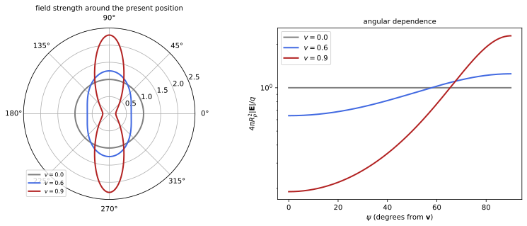
figures/emw_moving_charge.sage.
The proposition gives the potentials and the fields of a point charge on an arbitrary trajectory with speed below that of light. All quantities on the right are evaluated at the retarded time.
Proposition 10 (Liénard-Wiechert fields) Let a charge q move on \mathbf r(t) with |\dot{\mathbf r}| < 1. For each field point (t, \mathbf x) the equation t - t_r = |\mathbf x - \mathbf r(t_r)| has a unique solution t_r; set \mathbf R = \mathbf x - \mathbf r(t_r), \hat{\mathbf n} = \mathbf R/R, \mathbf v = \dot{\mathbf r}(t_r), \mathbf a = \ddot{\mathbf r}(t_r) and \kappa = 1 - \hat{\mathbf n}\cdot\mathbf v. The retarded potentials are the Liénard-Wiechert potentials \phi = \frac{q}{4\pi\kappa R}, \qquad \mathbf A = \frac{q\mathbf v}{4\pi\kappa R} , \tag{22} and the fields are \mathbf B = \hat{\mathbf n}\times\mathbf E with \mathbf E = \frac{q}{4\pi}\left[\frac{(\hat{\mathbf n} - \mathbf v)(1 - v^2)}{\kappa^3R^2} + \frac{\hat{\mathbf n}\times\bigl((\hat{\mathbf n} - \mathbf v)\times\mathbf a\bigr)}{\kappa^3R}\right] , \tag{23} the sum of a velocity field, falling as 1/R^2, and an acceleration field, falling as 1/R and perpendicular to \hat{\mathbf n}. Proof. Uniqueness: f(t_r) = t - t_r - |\mathbf x - \mathbf r(t_r)| decreases strictly since |\dot{\mathbf r}| < 1. In Equation 21 with \rho = q\delta^3(\mathbf x' - \mathbf r(t')), write \rho(t_r) as \int\delta(t' - t + |\mathbf x - \mathbf x'|)\rho(t', \mathbf x')dt'; integrating over \mathbf x' and then over t' gives the Jacobian 1/\kappa of t' \mapsto t' - t + |\mathbf x - \mathbf r(t')|. The fields follow by differentiating with \partial t_r/\partial t = 1/\kappa and \nabla t_r = -\hat{\mathbf n}/\kappa (Maggiore 2023, secs. 10.2–10.4; Pierrus 2018, Questions 8.12-8.14).
Veriphy. Pending.
Lean. Pending.
Sage. Pending.
A charge at rest is the first check. The potentials reduce to the Coulomb potential. The general formula contains this case.
Example 253 (A charge at rest) For \mathbf v = 0 and \mathbf a = 0, \kappa = 1, \phi = q/4\pi R, \mathbf A = 0, and Equation 23 gives \mathbf E = q\hat{\mathbf n}/4\pi R^2, the field of Example 1, with \mathbf B = 0.
A charge in uniform motion has a field that points from its present position. The retarded quantities combine into the present ones.
Example 254 (A charge in uniform motion) For \mathbf r = \mathbf vt, the identity \kappa R = \sqrt{(\mathbf R_p\cdot\hat{\mathbf v})^2 + (1 - v^2)|\mathbf R_p\times\hat{\mathbf v}|^2}, with \mathbf R_p = \mathbf x - \mathbf vt the vector from the present position, turns Equation 23 into \mathbf E = \frac{q}{4\pi}\frac{(1 - v^2)\mathbf R_p}{R_p^3(1 - v^2\sin^2\psi)^{3/2}}, with \psi the angle between \mathbf R_p and \mathbf v, and \mathbf B = \mathbf v\times\mathbf E (Figure 11) (Maggiore 2023, sec. 10.3; Pierrus 2018, Question 8.15).
The factor 1/\kappa makes an approaching charge’s potential larger. It is a geometric effect of the retarded time, not a change of charge.
Example 255 (The factor \kappa) A charge approaching the observer (\hat{\mathbf n}\cdot\mathbf v > 0) has \kappa < 1: its signal is emitted over a shorter interval of retarded time than it takes to pass the observer’s sphere, and the potential is enhanced by 1/\kappa; receding charges are weakened. The total charge is unchanged, since \int\rho\,d^3x is evaluated at a common time, not along the light cone.
The two parts of the field behave differently far away. Only the acceleration field carries energy to infinity. The general formula contains this case.
Example 256 (Velocity field and acceleration field) The velocity field, \propto R^{-2}, gives a Poynting flux \propto R^{-4} through a sphere of area \propto R^2, which vanishes at large R; the acceleration field gives |\mathbf E|^2R^2 \propto const: a charge radiates if and only if it accelerates, in the sense that energy crosses arbitrarily large spheres (Maggiore 2023, sec. 10.4).
The acceleration field is transverse. Together with \mathbf B = \hat{\mathbf n}\times\mathbf E it has the structure of a plane wave locally.
Example 257 (The radiation field is transverse) \hat{\mathbf n}\cdot\bigl(\hat{\mathbf n}\times(\dots)\bigr) = 0, so the acceleration field is perpendicular to \hat{\mathbf n}, and \mathbf B = \hat{\mathbf n}\times\mathbf E has the same magnitude and is perpendicular to both: the radiation field is locally the plane wave of Example 231 with \hat{\mathbf k} = \hat{\mathbf n}, and \mathbf S = |\mathbf E|^2\hat{\mathbf n}.
At low velocity the acceleration field becomes simple. It is the field used in Larmor’s formula. The general formula contains this case.
Example 258 (The radiation field of a slow charge) For v \ll 1, \kappa \approx 1 and the acceleration field is \mathbf E_{\text{rad}} = \frac{q}{4\pi R}\hat{\mathbf n}\times(\hat{\mathbf n}\times\mathbf a), of magnitude \frac{qa\sin\theta}{4\pi R} with \theta the angle between \hat{\mathbf n} and \mathbf a, in the plane of \hat{\mathbf n} and \mathbf a (Maggiore 2023, sec. 10.5).
A charge that stops abruptly leaves a shell of radiation. Inside the shell the field is that of the charge at rest, outside that of the charge still moving.
Example 259 (A charge that stops) A charge moving uniformly stops in a short time \tau at t = 0. At time t the field inside the sphere of radius t around the stopping point is the Coulomb field of the charge at rest, outside it is the field of the uniform motion continued, and in the shell of thickness \tau the field lines join with a transverse kink: the acceleration field of Equation 23, the origin of bremsstrahlung.
A charge on a circle at relativistic speed emits in a narrow cone along its velocity. The factor \kappa^{-3} produces the beaming.
Example 260 (Beaming of synchrotron radiation) For v \to 1, \kappa = 1 - v\cos\alpha, with \alpha the angle between \hat{\mathbf n} and \mathbf v, is about \frac{1}{2\gamma^2} + \frac{\alpha^2}2 for small \alpha, so the fields are enhanced by \kappa^{-3} \sim \gamma^6 within a cone of half-angle \sim1/\gamma around \mathbf v: an observer sees short flashes as the cone sweeps past, which is synchrotron light (Maggiore 2023, sec. 10.6).
The potentials of a uniformly moving charge are explicit at the present time. They also follow from those of a charge at rest by a Lorentz transformation, as the special relativity chapter shows.
Example 261 (The potential of a uniformly moving charge) With \kappa R from Example 254, \phi = \frac{q}{4\pi\sqrt{(x - vt)^2 + (1 - v^2)(y^2 + z^2)}} = \frac{q\gamma}{4\pi\sqrt{\gamma^2(x - vt)^2 + y^2 + z^2}} for \mathbf v = v\mathbf e_x, and \mathbf A = \mathbf v\phi, with \gamma = (1 - v^2)^{-1/2} (Pierrus 2018, Question 8.15).
A charge moving slowly on a circle is a rotating dipole seen from far away. Its radiation field follows from the acceleration term.
Example 262 (A charge on a circle) For \mathbf r = \rho(\cos\omega t, \sin\omega t, 0) with \rho\omega \ll 1, \mathbf a = -\omega^2\mathbf r, and the acceleration field at distance R \gg \rho is \frac{q}{4\pi R}\hat{\mathbf n}\times(\hat{\mathbf n}\times\mathbf a), that of the rotating dipole q\mathbf r(t) of Example 274: circularly polarised along the axis of the orbit (Maggiore 2023, Problem 10.2).
The exercises start with the potential of uniform motion. The first one checks with Sage that it solves the wave equation.
Exercise 257 (The uniform-motion potential, checked) With Sage, check that \phi of Example 261 satisfies \Box\phi = 0 away from the charge, and that \phi and \mathbf A = \mathbf v \phi satisfy the Lorenz condition.
Both hold identically for (x, y, z) \neq (vt, 0, 0):
t, x, y, z = var("t x y z")
X = [x, y, z]
def div(F): return sum(diff(F[i], X[i]) for i in range(3)).simplify_full()
def curl(F): return vector([diff(F[2], y) - diff(F[1], z), diff(F[0], z) - diff(F[2], x), diff(F[1], x) - diff(F[0], y)]).simplify_full()
def grad(f): return vector([diff(f, v) for v in X])
def maxwell(E, B): return [div(E), div(B), (curl(E) + diff(B, t)).simplify_full(), (curl(B) - diff(E, t)).simplify_full()]
box = lambda f: (diff(f, t, 2) - sum(diff(f, v, 2) for v in X)).simplify_full()
q, v = var('q v'); assume(v > 0, v < 1)
phi = q / (4 * pi * sqrt((x - v * t)^2 + (1 - v^2) * (y^2 + z^2)))
A = vector([v * phi, 0, 0])
print('box phi =', box(phi), '; Lorenz condition d_t phi + div A =', (diff(phi, t) + div(A)).simplify_full())Output:
box phi = 0 ; Lorenz condition d_t phi + div A = 0Veriphy. Pending.
Lean. Pending.
Sage. Pending.
The retarded time of a uniformly moving charge solves a quadratic equation. The second exercise solves it with Sage. The general formula contains this case.
Exercise 258 (The retarded time of uniform motion) For \mathbf r(t) = vt\,\mathbf e_x, solve t - t_r = |\mathbf x - vt_r\mathbf e_x| for t_r with Sage, choose the root with t_r < t, and evaluate \kappa R.
t_r = \gamma^2\bigl(t - vx - \sqrt{(x - vt)^2 + (1 - v^2)(y^2 + z^2)}\bigr), and \kappa R = \sqrt{(x - vt)^2 + (1 - v^2)(y^2 + z^2)}:
t, x, y, z, v, tr = var('t x y z v tr'); assume(v > 0, v < 1)
sols = solve((t - tr)^2 == (x - v * tr)^2 + y^2 + z^2, tr)
for s in sols: print('root:', s.rhs().simplify_full())
g2 = 1 / (1 - v^2)
trr = g2 * (t - v * x - sqrt((x - v * t)^2 + (1 - v^2) * (y^2 + z^2)))
print('this root solves the equation:', bool(((t - trr)^2 - (x - v * trr)^2 - y^2 - z^2).simplify_full() == 0))
R = t - trr; Rvec = vector([x - v * trr, y, z]); kR = (R - v * Rvec[0]).simplify_full()
print('kappa R =', kR, '; equals sqrt((x - v t)^2 + (1 - v^2)(y^2 + z^2)):', bool((kR - sqrt((x - v*t)^2 + (1 - v^2)*(y^2 + z^2))).simplify_full() == 0))
print('numeric check at t=1, x=0.3, y=0.5, z=0.2, v=0.6: t - t_r = %.6f, |x - v t_r| = %.6f' % (R.subs(t=1, x=0.3, y=0.5, z=0.2, v=0.6).n(), Rvec.norm().subs(t=1, x=0.3, y=0.5, z=0.2, v=0.6).n()))Output:
root: (v*x - t - sqrt(t^2*v^2 - 2*t*v*x - (v^2 - 1)*y^2 - (v^2 - 1)*z^2 + x^2))/(v^2 - 1)
root: (v*x - t + sqrt(t^2*v^2 - 2*t*v*x - (v^2 - 1)*y^2 - (v^2 - 1)*z^2 + x^2))/(v^2 - 1)
this root solves the equation: True
kappa R = sqrt(t^2*v^2 - 2*t*v*x - (v^2 - 1)*y^2 - (v^2 - 1)*z^2 + x^2) ; equals sqrt((x - v t)^2 + (1 - v^2)(y^2 + z^2)): True
numeric check at t=1, x=0.3, y=0.5, z=0.2, v=0.6: t - t_r = 0.539025, |x - v t_r| = 0.539025Veriphy. Pending.
Lean. Pending.
Sage. Pending.
The field of uniform motion can be computed from the potentials at the present time. The third exercise does it with Sage.
Exercise 259 (The field of uniform motion from the potentials) With Sage, compute \mathbf E = -\nabla\phi - \partial_t\mathbf A and \mathbf B = \nabla\times\mathbf A from Example 261, and compare with the formula of Example 254.
\mathbf E = \frac{q\gamma(x - vt, y, z)}{4\pi(\gamma^2(x - vt)^2 + y^2 + z^2)^{3/2}}, which is the stated formula, and \mathbf B = \mathbf v\times\mathbf E:
t, x, y, z = var("t x y z")
X = [x, y, z]
def div(F): return sum(diff(F[i], X[i]) for i in range(3)).simplify_full()
def curl(F): return vector([diff(F[2], y) - diff(F[1], z), diff(F[0], z) - diff(F[2], x), diff(F[1], x) - diff(F[0], y)]).simplify_full()
def grad(f): return vector([diff(f, v) for v in X])
def maxwell(E, B): return [div(E), div(B), (curl(E) + diff(B, t)).simplify_full(), (curl(B) - diff(E, t)).simplify_full()]
box = lambda f: (diff(f, t, 2) - sum(diff(f, v, 2) for v in X)).simplify_full()
q, v = var('q v'); assume(v > 0, v < 1)
g = 1 / sqrt(1 - v^2)
phi = q * g / (4 * pi * sqrt(g^2 * (x - v * t)^2 + y^2 + z^2)); A = vector([v * phi, 0, 0])
E = (-grad(phi) - diff(A, t)).simplify_full(); B = curl(A)
Eexp = q * g * vector([x - v * t, y, z]) / (4 * pi * (g^2 * (x - v * t)^2 + y^2 + z^2)^(3/2))
print('E - expected =', (E - Eexp).simplify_full(), '; B - v x E =', (B - vector([v, 0, 0]).cross_product(E)).simplify_full())Output:
E - expected = (0, 0, 0) ; B - v x E = (0, 0, 0)Veriphy. Pending.
Lean. Pending.
Sage. Pending.
The field of a fast charge is concentrated in the transverse plane. The fourth exercise compares its strength along and across the motion.
Exercise 260 (Along and across the motion) At a given distance R_p from the present position, find the ratio of |\mathbf E| across the motion to |\mathbf E| along it, and the angular width of the region where the field exceeds half its maximum, for \gamma \gg 1.
Across, (1 - v^2)(1 - v^2)^{-3/2} = \gamma; along, 1 - v^2 = \gamma^{-2}; ratio \gamma^3. Near \psi = \pi/2, 1 - v^2\sin^2\psi \approx \gamma^{-2} + (\psi - \frac\pi2)^2, so the field halves when (\psi - \frac\pi2)^2\gamma^2 = 2^{2/3} - 1, a width of order 1/\gamma.
Veriphy. Pending.
Lean. Pending.
Sage. Pending.
The magnetic field of a moving charge is perpendicular to the line from the retarded position. The fifth exercise checks this against the uniform-motion formula.
Exercise 261 (\hat{\mathbf n}\times\mathbf E and \mathbf v\times\mathbf E for uniform motion) For uniform motion the magnetic field is \hat{\mathbf n}\times\mathbf E by Proposition 10, with \hat{\mathbf n} from the retarded position, and \mathbf v\times\mathbf E by Example 254. Show that the two agree.
With \mathbf a = 0, \mathbf E is parallel to \hat{\mathbf n} - \mathbf v, and \hat{\mathbf n}\times(\hat{\mathbf n} - \mathbf v) = -\hat{\mathbf n}\times\mathbf v = \mathbf v\times\hat{\mathbf n} = \mathbf v\times(\hat{\mathbf n} - \mathbf v). So \hat{\mathbf n}\times\mathbf E = \mathbf v\times\mathbf E, although \hat{\mathbf n} points from the retarded position and \mathbf E along the line from the present one.
Veriphy. Pending.
Lean. Pending.
Sage. Pending.
The acceleration field is orthogonal to the direction of observation. The sixth exercise checks it and computes its magnitude for an acceleration along the velocity.
Exercise 262 (The acceleration field) Show that the second term of Equation 23 is perpendicular to \hat{\mathbf n}, and that for \mathbf a \parallel \mathbf v its magnitude is \frac{qa\sin\alpha}{4\pi\kappa^3R}, with \alpha the angle between \hat{\mathbf n} and \mathbf v.
It is a cross product with \hat{\mathbf n}. For \mathbf a \parallel \mathbf v, (\hat{\mathbf n} - \mathbf v)\times\mathbf a = \hat{\mathbf n}\times\mathbf a, and |\hat{\mathbf n}\times(\hat{\mathbf n}\times\mathbf a)| = a\sin\alpha.
Veriphy. Pending.
Lean. Pending.
Sage. Pending.
A fast electron passing a point produces a short pulse. The seventh exercise estimates its strength and duration with Sage.
Exercise 263 (The pulse of a passing electron) An electron of 1\,GeV passes at distance b = 1\,cm. With Sage, find \gamma, the peak transverse field \gamma e/4\pi\varepsilon_0b^2, and the duration b/\gamma c of the pulse.
\gamma = 1957, the peak field is 28\,mV/m, and the pulse lasts 1.7\times10^{-14}\,s: a flash of virtual photons with frequencies up to \gamma c/b:
e, eps0, c, me = 1.602e-19, 8.854e-12, 2.998e8, 0.511e6
g = 1e9 / me; b = 0.01
E = g * e / (4 * pi.n() * eps0 * b^2)
print('gamma = %.0f, peak transverse field %.3e V/m, duration b/(gamma c) = %.2e s' % (g, E, b / (g * c)))Output:
gamma = 1957, peak transverse field 2.818e-02 V/m, duration b/(gamma c) = 1.70e-14 sVeriphy. Pending.
Lean. Pending.
Sage. Pending.
A uniformly moving charge does not radiate. The eighth exercise shows it from the energy flux through a large sphere.
Exercise 264 (Uniform motion does not radiate) Using Example 254, show that the Poynting flux through a sphere of radius R around the present position tends to zero as R \to \infty.
|\mathbf E| \leq \frac{q\gamma}{4\pi R^2} and |\mathbf B| \leq v|\mathbf E|, so |\mathbf S| \leq \frac{q^2\gamma^2}{16\pi^2R^4} and the flux through the sphere is O(R^{-2}). The field moves along with the charge without leaving it.
Veriphy. Pending.
Lean. Pending.
Sage. Pending.
The energy carried away by a charge that stops can be estimated from Larmor’s formula of the next unit. The ninth exercise compares it with the kinetic energy.
Exercise 265 (Energy lost in stopping) An electron with speed v \ll c stops uniformly in time \tau. Using the power \frac{e^2a^2}{6\pi\varepsilon_0c^3} of Proposition 11, compare the radiated energy with \frac12mv^2, and evaluate the ratio for \tau = 10^{-15}\,s.
The radiated energy is \frac{e^2v^2}{6\pi\varepsilon_0c^3\tau}, and its ratio to \frac12mv^2 is \frac{e^2}{3\pi\varepsilon_0mc^3\tau} = \frac{4r_e}{3c\tau} (Example 104), 1.3\times10^{-8} for \tau = 10^{-15}\,s: tiny unless the stopping takes about 10^{-23}\,s.
Veriphy. Pending.
Lean. Pending.
Sage. Pending.
The uniqueness of the retarded time requires the speed to stay below that of light. The last exercise shows what goes wrong otherwise.
Exercise 266 (One retarded time) Show that f(t') = t - t' - |\mathbf x - \mathbf r(t')| is strictly decreasing when |\dot{\mathbf r}| < 1, positive for t' \to -\infty if the charge moves slower than light, and zero at exactly one t' < t. What happens for a source faster than light?
f'(t') = -1 + \hat{\mathbf n}\cdot\dot{\mathbf r} < 0. f(t) = -|\mathbf x - \mathbf r(t)| \leq 0 and f \to +\infty as t' \to -\infty because |\mathbf r(t')| grows slower than |t'|, so there is exactly one zero. For a superluminal source f can have several zeros: several retarded positions contribute, as for the shock fronts of Cherenkov radiation in a medium.
Veriphy. Pending.
Lean. Pending.
Sage. Pending.
Radiation of accelerated charges
The acceleration field of Proposition 10 falls as 1/R, so its energy flux through a large sphere does not vanish. For a slowly moving charge the flux has a simple angular pattern and a total that depends only on the square of the acceleration.
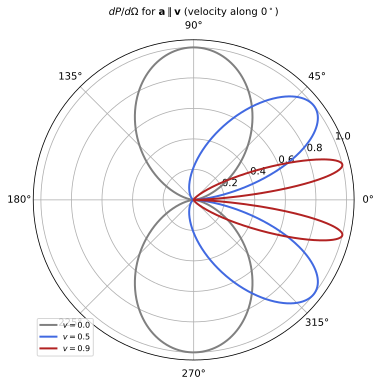
figures/emw_larmor.sage.
The proposition gives the radiated power of a slow charge and its relativistic generalisation. Only the first is proved here; the second is the Lorentz-invariant form of the first.
Proposition 11 (Larmor’s formula) A charge q with velocity v \ll 1 and acceleration \mathbf a produces at large distance R the radiation field \mathbf E = \frac{q}{4\pi R}\hat{\mathbf n}\times(\hat{\mathbf n}\times\mathbf a), \mathbf B = \hat{\mathbf n}\times\mathbf E, evaluated at the retarded time, and radiates the power \frac{dP}{d\Omega} = \frac{q^2a^2}{16\pi^2}\sin^2\theta, \qquad P = \frac{q^2a^2}{6\pi} , \tag{24} with \theta the angle between \hat{\mathbf n} and \mathbf a; in SI units P = \frac{q^2a^2}{6\pi\varepsilon_0c^3}. For arbitrary velocity the power is Liénard’s formula P = \frac{q^2}{6\pi}\gamma^6\bigl(a^2 - |\mathbf v\times\mathbf a|^2\bigr), \gamma = (1 - v^2)^{-1/2}. Proof. The field is the slow limit of Equation 23 (Example 258). Its Poynting vector is |\mathbf E|^2\hat{\mathbf n} with |\mathbf E| = \frac{qa\sin\theta}{4\pi R}, so \frac{dP}{d\Omega} = R^2|\mathbf E|^2, and \int\sin^2\theta\,d\Omega = \frac{8\pi}3. Liénard’s formula follows by writing the power as a Lorentz scalar, as the classical field theory chapter does (Maggiore 2023, secs. 10.5–10.6).
Veriphy. Pending.
Lean. Pending.
Sage. Pending.
The angular pattern has no radiation along the acceleration. The power is largest at right angles to it. The numbers show how small or large the effect can be.
Example 263 (The doughnut pattern) \sin^2\theta vanishes along \pm\mathbf a and is largest in the plane perpendicular to \mathbf a; the radiation is linearly polarised in the plane of \hat{\mathbf n} and \mathbf a (Example 241). About 70\% of the power goes into 60^\circ < \theta < 120^\circ (Figure 12, curve v = 0).
A charge oscillating harmonically radiates at its frequency. The average power grows as the fourth power of the frequency. The numbers show how small or large the effect can be.
Example 264 (An oscillating charge) For z(t) = z_0\cos\omega t, a = -\omega^2z_0\cos\omega t and \langle P\rangle = \frac{q^2\omega^4z_0^2}{12\pi}, the dipole power of Proposition 12 with p_0 = qz_0. Doubling the frequency multiplies the radiated power by 16.
At high speed the same acceleration radiates much more. Liénard’s formula distinguishes accelerations along and across the velocity. The numbers show how small or large the effect can be.
Example 265 (Linear and circular acceleration) For \mathbf a \parallel \mathbf v, P = \frac{q^2}{6\pi}\gamma^6a^2; for \mathbf a \perp \mathbf v, P = \frac{q^2}{6\pi}\gamma^4a^2. In terms of the force, \dot p = m\gamma^3a in the first case and m\gamma a in the second, so P = \frac{q^2\dot p^2}{6\pi m^2} along the velocity and \frac{q^2\gamma^2\dot p^2}{6\pi m^2} across it (Maggiore 2023, secs. 10.6.2–10.6.3).
A linear accelerator loses very little to radiation. The loss compared with the energy gain is set by the classical electron radius.
Example 266 (Radiation in a linear accelerator) With Example 265, the ratio of radiated power to the power v\dot p supplied is \frac{q^2\dot p}{6\pi m^2v}, which in SI units is \frac23\frac{r_e}{mc^2}\frac{d\mathcal E}{dx} for an electron with v \approx c. For a gradient of 10\,MeV/m this is 4\times 10^{-14}: negligible.
In a circular accelerator the loss grows as the fourth power of the energy. It limits electron rings. The numbers show how small or large the effect can be.
Example 267 (Synchrotron losses) On a circle of radius \rho, a = v^2/\rho, and the energy lost per turn is \frac{q^2\gamma^4v^3}{6\pi\rho^2}\cdot\frac{2\pi\rho}v = \frac{q^2\gamma^4v^2}{3\rho}. In SI units, for an electron of 100\,GeV on \rho = 3.1\,km, \frac{e^2\gamma^4}{3\varepsilon_0\rho} = 2.9\,GeV per turn, while a proton of the same energy loses (m_e/m_p)^4 \approx 10^{-13} times as much.
An electron circling in a magnetic field radiates at the cyclotron frequency. Its energy decays exponentially. The numbers show how small or large the effect can be.
Example 268 (Cyclotron radiation) An electron with v \ll 1 in a field B has a = \omega v, \omega = eB/m, so P = \frac{e^2\omega^2v^2}{6\pi} = \frac{e^2\omega^2}{3\pi m}\mathcal E with \mathcal E = \frac12mv^2: the energy decays with time constant \frac{3\pi m}{e^2\omega^2}, 2.6\,s in 1\,T (Exercise 269) (Macchi et al. 2023, Problem 10.1).
A free electron in a light wave oscillates and radiates. The ratio of the scattered power to the incident intensity is the Thomson cross-section.
Example 269 (Thomson scattering) In a wave of amplitude E_0 an electron has a = eE_0\cos\omega t/m and radiates \langle P\rangle = \frac{e^4E_0^2}{12\pi m^2}. Dividing by the intensity \frac12E_0^2 gives \sigma_T = \frac{e^4}{6\pi m^2} = \frac{8\pi}3r_e^2 = 6.65\times10^{-29}\,m^2 in SI units, independent of the frequency (Macchi et al. 2023, Problem 10.9).
At relativistic speed the radiation is thrown forward. The factor \kappa^{-5} in the angular distribution produces the cone. The numbers show how small or large the effect can be.
Example 270 (Forward beaming) For \mathbf a \parallel \mathbf v, the power per solid angle measured at the charge’s retarded time is \frac{q^2a^2}{16\pi^2}\frac{\sin^2\alpha}{(1 - v\cos\alpha)^5}, with \alpha the angle from \mathbf v; its maximum moves to \cos\alpha = \frac{\sqrt{1 + 15v^2} - 1}{3v}, which for \gamma \gg 1 is \alpha \approx \frac1{2\gamma} (Figure 12, Exercise 273) (Maggiore 2023, sec. 10.6).
A classical electron on a Bohr orbit radiates its binding energy in a fraction of a nanosecond. Larmor’s formula shows why classical atoms cannot exist.
Example 271 (The classical atom) At the Bohr radius the electron’s acceleration is a = \frac{e^2}{4\pi\varepsilon_0m_ea_0^2} = 9.0\times10^{22}\,m/s^2, and P = 4.7\times 10^{-8}\,W; the binding energy 13.6\,eV would be radiated in about 5\times10^{-11}\,s, and the orbit collapses in about 10^{-11}\,s (Macchi et al. 2023, Problem 10.2).
The radiated power depends on the charge and the mass only through q^2/m^2 for a given force. Heavy particles radiate much less.
Example 272 (Light particles radiate) For a given force \mathbf F = m\mathbf a, Equation 24 gives P = \frac{q^2F^2}{6\pi m^2}: an electron radiates (m_p/m_e)^2 = 3.4\times10^6 times more than a proton under the same force, which is why bremsstrahlung and synchrotron light come from electrons.
The exercises start with the angular integral of the formula. The first one checks it with Sage. The numbers show how small or large the effect can be.
Exercise 267 (The total power) With Sage, integrate \frac{q^2a^2}{16\pi^2}\sin^2\theta over the sphere, and find the fraction of the power emitted within 30^\circ of the plane perpendicular to \mathbf a.
The total is \frac{q^2a^2}{6\pi}, and \frac{\int_{\pi/3}^{2\pi/3}\sin^3\theta\,d\theta}{\int_0^\pi\sin^3\theta\,d\theta} = \frac{11}{16} \approx 0.69:
th, ph, q, a = var('theta phi q a', domain='positive')
dP = q^2 * a^2 * sin(th)^2 / (16 * pi^2)
print('total power:', integrate(integrate(dP * sin(th), ph, 0, 2 * pi), th, 0, pi))
print('fraction within 30 degrees of the plane perpendicular to a:', integrate(sin(th)^3, th, pi/3, 2*pi/3) / integrate(sin(th)^3, th, 0, pi))Output:
total power: 1/6*a^2*q^2/pi
fraction within 30 degrees of the plane perpendicular to a: 11/16Veriphy. Pending.
Lean. Pending.
Sage. Pending.
The power follows from the field by the Poynting vector. The second exercise computes it with Sage from the vector form of the field.
Exercise 268 (From the field to the power) With Sage, for \mathbf a = a\mathbf e_z and \hat{\mathbf n} = (\sin\theta\cos\varphi, \sin\theta\sin\varphi, \cos\theta), compute \mathbf E = \frac{q}{4\pi R}\hat{\mathbf n}\times(\hat{\mathbf n}\times\mathbf a), \mathbf B = \hat{\mathbf n}\times\mathbf E, R^2\mathbf S\cdot\hat{\mathbf n}, and check that \mathbf E\perp\hat{\mathbf n}.
R^2\mathbf S\cdot\hat{\mathbf n} = \frac{q^2a^2\sin^2\theta}{16\pi^2}:
th, ph, q, a, R = var('theta phi q a R', domain='positive')
n = vector([sin(th) * cos(ph), sin(th) * sin(ph), cos(th)]); acc = vector([0, 0, a])
E = q / (4 * pi * R) * n.cross_product(n.cross_product(acc)); B = n.cross_product(E)
print('E . n =', E.dot_product(n).simplify_full(), '; |B|^2 - |E|^2 =', (B.dot_product(B) - E.dot_product(E)).simplify_full())
print('R^2 S . n =', (R^2 * E.cross_product(B).dot_product(n)).simplify_full())Output:
E . n = 0 ; |B|^2 - |E|^2 = 0
R^2 S . n = 1/16*a^2*q^2*sin(theta)^2/pi^2Veriphy. Pending.
Lean. Pending.
Sage. Pending.
Cyclotron radiation damps the circular motion of an electron in a magnetic field. The third exercise computes the time scale with Sage.
Exercise 269 (Damping of cyclotron motion) With Sage, solve \frac{d\mathcal E}{dt} = -\frac{e^2\omega^2}{3\pi m}\mathcal E and evaluate the time constant in SI units, \frac{3\pi\varepsilon_0m^3c^3}{e^4B^2}, for an electron in 1\,T and in 10\,T (Macchi et al. 2023, Problem 10.1).
\mathcal E = \mathcal E_0e^{-t/\tau} with \tau = 2.6\,s in 1\,T and 0.026\,s in 10\,T:
t, k = var('t k', domain='positive'); En = function('En')(t)
print('solution:', desolve(diff(En, t) == -k * En, En, ivar=t))
e, me, eps0, c = 1.602e-19, 9.109e-31, 8.854e-12, 2.998e8
for B in [1, 10]:
print('B = %d T: tau = 3 pi eps0 m^3 c^3/(e^4 B^2) = %.3g s' % (B, 3 * pi.n() * eps0 * me^3 * c^3 / (e^4 * B^2)))Output:
solution: _C*e^(-k*t)
B = 1 T: tau = 3 pi eps0 m^3 c^3/(e^4 B^2) = 2.58 s
B = 10 T: tau = 3 pi eps0 m^3 c^3/(e^4 B^2) = 0.0258 sVeriphy. Pending.
Lean. Pending.
Sage. Pending.
Two charges on a rotating rod radiate differently depending on their signs. The fourth exercise compares the cases. The numbers show how small or large the effect can be.
Exercise 270 (Two charges on a rotating rod) Charges at the two ends of a rod of length 2\ell rotating with angular velocity \omega about its centre: compare the radiated power when they are +q, +q and when they are +q, -q (Macchi et al. 2023, Problem 10.4).
The fields add coherently when \ell\omega \ll 1, so the power is that of the total dipole \mathbf p = \sum q_a\mathbf x_a. For +q, -q, \mathbf p rotates with |\mathbf p| = 2q\ell and P = \frac{4q^2\ell^2\omega^4}{6\pi}; for +q, +q, \mathbf p = 0 and the leading radiation is quadrupole, smaller by a factor of order (\ell\omega)^2.
Veriphy. Pending.
Lean. Pending.
Sage. Pending.
The ratio of radiated to supplied power in a linear accelerator was estimated in Example 266. The fifth exercise derives it.
Exercise 271 (Losses in a linear accelerator) From P = \frac{q^2\dot p^2}{6\pi m^2} for \mathbf a \parallel \mathbf v, show that \frac{P}{v\dot p} = \frac{q^2\dot p}{6\pi m^2v}, and that \dot p = \frac{d\mathcal E}{dx}.
The power supplied is \mathbf F\cdot\mathbf v = v\dot p, so the ratio is as stated. Since d\mathcal E = v\,dp (relativistic, Example 152), \dot p = \frac{d\mathcal E}{v\,dt} = \frac{d\mathcal E}{dx}.
Veriphy. Pending.
Lean. Pending.
Sage. Pending.
The Thomson cross-section is a combination of the electron’s charge and mass. The sixth exercise evaluates it with Sage. The numbers show how small or large the effect can be.
Exercise 272 (The Thomson cross-section) With Sage, compute \sigma_T = \frac{8\pi}3r_e^2 in SI units, and the mean free path of a photon in a plasma with 10^{30} electrons per m^3, as in the core of the Sun.
\sigma_T = 6.65\times10^{-29}\,m^2 and the mean free path 1/(n\sigma_T) = 1.5\,cm:
re = 2.818e-15
sT = 8 * pi.n() / 3 * re^2
print('sigma_T = %.3e m^2, mean free path at n = 1e30 m^-3: %.3e m' % (sT, 1 / (1e30 * sT)))Output:
sigma_T = 6.653e-29 m^2, mean free path at n = 1e30 m^-3: 1.503e-02 mVeriphy. Pending.
Lean. Pending.
Sage. Pending.
The forward peak of the relativistic pattern moves with the speed. The seventh exercise locates it with Sage. The numbers show how small or large the effect can be.
Exercise 273 (Where the beam points) With Sage, maximise \frac{\sin^2\alpha}{(1 - v\cos\alpha)^5} over \alpha, check \cos\alpha_{\max} = \frac{\sqrt{1 + 15v^2} - 1}{3v}, and evaluate \alpha_{\max} and \frac{1}{2\gamma} for v = 0.9 and 0.99.
The derivative vanishes at the stated cosine; \alpha_{\max} = 13.4^\circ and \frac1{2\gamma} = 12.5^\circ for v = 0.9; 4.1^\circ and 4.0^\circ for 0.99:
al, v = var('alpha v'); assume(v > 0, v < 1)
f = sin(al)^2 / (1 - v * cos(al))^5
c = (sqrt(1 + 15 * v^2) - 1) / (3 * v)
print('derivative at the stated cosine:', diff(f, al).subs(al=arccos(c)).simplify_full())
for vv in [0.5, 0.9, 0.99]:
g = 1 / sqrt(1 - vv^2)
print('v = %.2f: alpha_max = %.2f deg, 1/(2 gamma) = %.2f deg' % (vv, (arccos(c.subs(v=vv)) * 180 / pi).n(), (1 / (2 * g) * 180 / pi).n()))Output:
derivative at the stated cosine: ((3*cos(alpha)^2 - 5)*v*sin(alpha) + 2*cos(alpha)*sin(alpha))/(v^6*cos(alpha)^6 - 6*v^5*cos(alpha)^5 + 15*v^4*cos(alpha)^4 - 20*v^3*cos(alpha)^3 + 15*v^2*cos(alpha)^2 - 6*v*cos(alpha) + 1)
v = 0.50: alpha_max = 38.16 deg, 1/(2 gamma) = 24.81 deg
v = 0.90: alpha_max = 13.42 deg, 1/(2 gamma) = 12.49 deg
v = 0.99: alpha_max = 4.07 deg, 1/(2 gamma) = 4.04 degVeriphy. Pending.
Lean. Pending.
Sage. Pending.
Liénard’s formula must reduce to Larmor’s at low speed. The eighth exercise checks the limits. The numbers show how small or large the effect can be.
Exercise 274 (Limits of Liénard’s formula) Show that Liénard’s formula reduces to Equation 24 for v \to 0, gives \gamma^6a^2 for \mathbf a \parallel \mathbf v and \gamma^4a^2 for \mathbf a \perp \mathbf v, and is never negative.
For v \to 0, \gamma \to 1 and |\mathbf v\times\mathbf a| \to 0. For \mathbf a \parallel \mathbf v, \mathbf v\times\mathbf a = 0; for \mathbf a \perp \mathbf v, |\mathbf v\times\mathbf a|^2 = v^2a^2 and \gamma^6(1 - v^2) = \gamma^4. Since |\mathbf v\times\mathbf a| \leq va < a, the bracket is positive.
Veriphy. Pending.
Lean. Pending.
Sage. Pending.
Light scattered at a right angle is polarised. The ninth exercise explains why. The numbers show how small or large the effect can be.
Exercise 275 (Polarisation of scattered light) Unpolarised light travelling along \mathbf e_z is scattered by free electrons. Show that the light scattered along \mathbf e_x is linearly polarised along \mathbf e_y (Macchi et al. 2023, Problem 10.8).
The electrons oscillate in the xy plane, along the incident field. Seen along \mathbf e_x, the x component of \mathbf a is along \hat{\mathbf n} and does not radiate (\sin\theta = 0), while the y component gives a field along \hat{\mathbf n}\times(\hat{\mathbf n}\times\mathbf e_y) = -\mathbf e_y: the skylight at 90^\circ from the Sun is strongly polarised.
Veriphy. Pending.
Lean. Pending.
Sage. Pending.
Proton rings are limited by the strength of their magnets, electron rings by radiation. The last exercise compares the losses.
Exercise 276 (Protons and electrons in the same ring) At the same energy \mathcal E \gg m and radius, compare the synchrotron loss per turn of a proton and of an electron, and evaluate it for the protons of 7\,TeV in the LHC (\rho = 2.8\,km) with the formula of Example 267.
The loss scales as \gamma^4 = (\mathcal E/m)^4, so the ratio is (m_e/m_p)^4 = 8.8\times10^{-14}. For the LHC, \gamma = 7460 and \frac{e^2\gamma^4}{3\varepsilon_0\rho} = 6.7\,keV per turn, small but enough to heat the cryogenic beam pipe.
Veriphy. Pending.
Lean. Pending.
Sage. Pending.
Dipole radiation and the radiation zones
A source whose size is small compared with the wavelength radiates mainly through its electric dipole moment. Its field, computed at every distance, shows three regions with different behaviour: a near zone where the field is static, a far zone where it is radiation, and an induction zone between them.
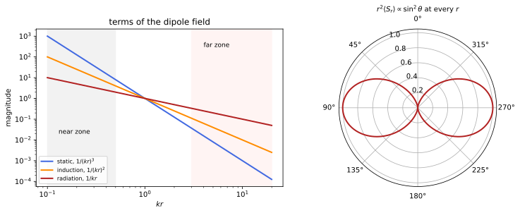
figures/emw_zones.sage.
The proposition gives the far field of a small slowly moving source. It reduces Larmor’s formula for several charges to one vector, the second time derivative of the dipole moment.
Proposition 12 (Electric dipole radiation) Let a source of size d have charges moving slowly, so that its dipole moment \mathbf p(t) = \int\rho\,\mathbf x\,d^3x changes on time scales T \gg d. In the far zone r \gg T the fields are \mathbf E = \frac{\hat{\mathbf n}\times\bigl(\hat{\mathbf n}\times\ddot{\mathbf p}(t - r)\bigr)}{4\pi r}, \qquad \mathbf B = \frac{\ddot{\mathbf p}(t - r)\times\hat{\mathbf n}}{4\pi r} , \tag{25} and the radiated power is \frac{dP}{d\Omega} = \frac{|\ddot{\mathbf p}|^2\sin^2\theta}{16\pi^2}, P = \frac{|\ddot{\mathbf p}|^2}{6\pi}, with \theta the angle from \ddot{\mathbf p}; for \mathbf p = \operatorname{Re}(\mathbf p_0e^{-i\omega t}), \langle P\rangle = \frac{\omega^4|\mathbf p_0|^2}{12\pi}. The next terms are the magnetic dipole radiation, with \mathbf E \leftrightarrow \mathbf B up to sign and \mathbf p \to \mathbf m (Definition 7), P = \frac{|\ddot{\mathbf m}|^2}{6\pi}, and the electric quadrupole radiation, P = \frac{1}{720\pi}\sum_{ij}\dddot Q_{ij}^2 (Proposition 5 of Fourier analysis), both smaller by (d/T)^2. Proof. By Example 251, \mathbf A \approx \frac1{4\pi r}\int\mathbf J(t - r, \mathbf x')d^3x' = \frac{\dot{\mathbf p}(t - r)}{4\pi r}, since \int\mathbf J = \dot{\mathbf p} by continuity. In the far zone \nabla acting on t - r gives -\hat{\mathbf n}\partial_t, so \mathbf B = \nabla\times\mathbf A = -\hat{\mathbf n}\times\partial_t\mathbf A = \frac{\ddot{\mathbf p}\times\hat{\mathbf n}}{4\pi r}, and \mathbf E = \mathbf B\times\hat{\mathbf n} for the outgoing wave (Example 231); the power follows as in Proposition 11.
Veriphy. Pending.
Lean. Pending.
Sage. Pending.
An oscillating dipole radiates a power that grows as the fourth power of the frequency. The example writes the average.
Example 273 (An oscillating dipole) For \mathbf p = p_0\cos(\omega t)\mathbf e_z, |\ddot{\mathbf p}|^2 = \omega^4p_0^2\cos^2\omega t and \langle P\rangle = \frac{\omega^4p_0^2}{12\pi}, \frac{\omega^4p_0^2}{12\pi\varepsilon_0c^3} in SI units; for a point charge this is Example 264.
A rotating dipole is two oscillating dipoles a quarter period apart. It radiates a constant power with circular polarisation along its axis.
Example 274 (A rotating dipole) For \mathbf p = p_0(\cos\omega t, \sin\omega t, 0), |\ddot{\mathbf p}| = \omega^2p_0 is constant, P = \frac{\omega^4p_0^2}{6\pi}, twice the average of one linear dipole, and \frac{dP}{d\Omega} = \frac{\omega^4p_0^2}{32\pi^2}(1 + \cos^2\theta): circularly polarised along the axis, linearly in the plane of rotation (Example 241).
A short antenna is an oscillating dipole driven by a current. Its radiated power defines a radiation resistance. The dipole approximation makes the computation short.
Example 275 (Radiation resistance of a short antenna) A wire of length \ell \ll \lambda with uniform current I_0\cos\omega t has \dot p = I\ell, so \langle P\rangle = \frac{\omega^2I_0^2\ell^2}{12\pi\varepsilon_0c^3} in SI units, which equals \frac12R_{\text{rad}}I_0^2 with R_{\text{rad}} = \frac{2\pi}3Z_0\bigl(\frac\ell\lambda\bigr)^2 \approx 789\,\Omega\bigl(\frac\ell\lambda\bigr)^2, Z_0 = 1/\varepsilon_0c = 377\,\Omega (Pierrus 2018, Question 11.13).
A small current loop radiates through its magnetic dipole moment. Its fields are those of the electric dipole with the roles of \mathbf E and \mathbf B exchanged.
Example 276 (A loop antenna) A loop of radius b with current I_0\cos\omega t has m = \pi b^2I_0\cos\omega t and radiates \langle P\rangle = \frac{\omega^4\pi^2b^4I_0^2}{12\pi}; the far field is \mathbf B = \frac{\hat{\mathbf n}\times(\hat{\mathbf n}\times\ddot{\mathbf m})}{4\pi r}, \mathbf E = -\hat{\mathbf n}\times\mathbf B. Compared with an electric dipole of the same current and size it is weaker by (\omega b)^2 (Pierrus 2018, Question 11.12).
A rotating neutron star with a magnetic dipole tilted from its axis radiates at its rotation frequency. The radiated power slows it down.
Example 277 (The spin-down of a pulsar) A dipole \mathbf m at angle \alpha to the rotation axis has |\ddot{\mathbf m}| = \omega^2m\sin\alpha and P = \frac{\omega^4m^2\sin^2\alpha}{6\pi}. Equating it to the loss of rotational energy -I_*\omega\dot\omega gives the field of the star from its period and spin-down rate: of order 10^9\,T for the Crab pulsar (Exercise 280) (Macchi et al. 2023, Problem 10.5).
The \omega^4 law explains the colour of the sky. Molecules scatter blue light much more than red. The dipole approximation makes the computation short.
Example 278 (Why the sky is blue) A molecule in a light wave acquires a dipole \mathbf p = \alpha\mathbf E (with polarisability \alpha independent of frequency far from resonances), and radiates \propto\omega^4|\mathbf E|^2: blue light at 450\,nm is scattered (700/450)^4 = 5.9 times more than red at 700\,nm, and the scattered light at 90^\circ is polarised (Exercise 275).
A system of charges with the same charge-to-mass ratio has no dipole radiation. Its dipole moment is tied to its centre of mass.
Example 279 (No dipole radiation from like particles) If every charge has q_a/m_a = \kappa, then \mathbf p = \kappa\sum m_a\mathbf x_a = \kappa M\mathbf X, and for an isolated system \ddot{\mathbf X} = 0, so \ddot{\mathbf p} = 0: two electrons colliding radiate only through their quadrupole moment, much more weakly than an electron and a proton (Exercise 282).
Quadrupole radiation appears when the dipole moment is constant. Its angular pattern has four lobes. The dipole approximation makes the computation short.
Example 280 (Quadrupole radiation) For the linear quadrupole Q_{zz} = Q_0\cos\omega t, Q_{xx} = Q_{yy} = -\frac12Q_0\cos\omega t (charges \pm on the z axis), \sum\dddot Q_{ij}^2 averages to \frac34\omega^6Q_0^2 and \langle P\rangle = \frac{\omega^6Q_0^2}{960\pi}, with the pattern \sin^2\theta\cos^2\theta: no radiation along the axis or in the equatorial plane (Maggiore 2023, sec. 11.2.2).
Two dipoles at a distance comparable with the wavelength interfere. The pattern of an array can be steered by the phases.
Example 281 (Two antennas) Two parallel dipoles along \mathbf e_z at x = \pm\frac d2, in phase, have far fields with path difference d\sin\theta\cos\varphi; the power pattern is \sin^2\theta\cos^2\bigl(\frac{kd}2\sin\theta\cos\varphi\bigr) times that of one. For d = \lambda/2 the radiation along \pm\mathbf e_x cancels and that along \pm\mathbf e_y doubles in amplitude (Macchi et al. 2023, Problem 10.10).
The polarisation of the dipole field is fixed by the geometry. The example gives its direction. The dipole approximation makes the computation short.
Example 282 (Direction of the radiated field) \hat{\mathbf n}\times(\hat{\mathbf n}\times\ddot{\mathbf p}) = (\hat{\mathbf n}\cdot\ddot{\mathbf p})\hat{\mathbf n} - \ddot{\mathbf p} is minus the component of \ddot{\mathbf p} perpendicular to \hat{\mathbf n}: the electric field lies in the plane of \hat{\mathbf n} and \mathbf p, along the meridian when \mathbf p \parallel \mathbf e_z, and \mathbf B along the parallels.
The exercises start with the average power. The first one integrates over the sphere and over a period with Sage.
Exercise 277 (The average power) With Sage, compute \langle P\rangle for \mathbf p = p_0\cos(\omega t)\mathbf e_z by averaging \frac{dP}{d\Omega} over a period and integrating over the sphere, and evaluate it for an electron with z_0 = 0.1\,nm at \omega = 3\times10^{15}\,s^{-1} in SI units.
\langle P\rangle = \frac{\omega^4p_0^2}{12\pi}, 2.3\times10^{-12}\,W for the electron:
th, ph, t, w, p0 = var('theta phi t w p0', domain='positive')
dP = (w^2 * p0 * cos(w * t))^2 * sin(th)^2 / (16 * pi^2)
avg = w / (2 * pi) * integrate(integrate(integrate(dP * sin(th), ph, 0, 2 * pi), th, 0, pi), t, 0, 2 * pi / w)
print('<P> =', avg.simplify_full())
e, eps0, c = 1.602e-19, 8.854e-12, 2.998e8
print('electron, z0 = 0.1 nm, w = 3e15 /s: <P> = %.2e W' % ((3e15)^4 * (e * 1e-10)^2 / (12 * pi.n() * eps0 * c^3)))Output:
<P> = 1/12*p0^2*w^4/pi
electron, z0 = 0.1 nm, w = 3e15 /s: <P> = 2.31e-12 WVeriphy. Pending.
Lean. Pending.
Sage. Pending.
The rotating dipole has the pattern 1 + \cos^2\theta. The second exercise derives it with Sage. The dipole approximation makes the computation short.
Exercise 278 (The pattern of a rotating dipole) With Sage, compute |\hat{\mathbf n}\times\ddot{\mathbf p}|^2 for \mathbf p = p_0(\cos\omega t, \sin\omega t, 0), average over a period, and integrate over the sphere.
The average is \frac12\omega^4p_0^2(1 + \cos^2\theta), and the total P = \frac{\omega^4p_0^2}{6\pi}:
th, ph, t, w, p0 = var('theta phi t w p0', domain='positive')
n = vector([sin(th) * cos(ph), sin(th) * sin(ph), cos(th)])
pdd = -w^2 * p0 * vector([cos(w * t), sin(w * t), 0])
f = n.cross_product(pdd); f2 = f.dot_product(f)
avg = (w / (2 * pi) * integrate(f2.expand(), t, 0, 2 * pi / w)).simplify_full()
print('time average of |n x p..|^2:', avg.simplify_trig())
P = integrate(integrate(avg / (16 * pi^2) * sin(th), ph, 0, 2 * pi), th, 0, pi)
print('total power:', P.simplify_full())Output:
time average of |n x p..|^2: -1/2*(p0^2*sin(theta)^2 - 2*p0^2)*w^4
total power: 1/6*p0^2*w^4/piVeriphy. Pending.
Lean. Pending.
Sage. Pending.
Short antennas have small radiation resistances. The third exercise evaluates it with Sage. The dipole approximation makes the computation short.
Exercise 279 (A short antenna) With Sage, evaluate R_{\text{rad}} for \ell = \lambda/10 and \lambda/50, and the current needed to radiate 1\,W.
7.9\,\Omega and 0.32\,\Omega, requiring 0.50\,A and 2.5\,A in amplitude: short antennas are inefficient because the ohmic losses compete with a tiny radiation resistance:
Z0 = 376.73
for frac in [1/10, 1/50]:
R = 2 * pi.n() / 3 * Z0 * frac^2
print('l = lambda/%d: R_rad = %.3f ohm, current amplitude for 1 W: %.2f A' % (round(1 / frac), R, sqrt(2 / R)))Output:
l = lambda/10: R_rad = 7.890 ohm, current amplitude for 1 W: 0.50 A
l = lambda/50: R_rad = 0.316 ohm, current amplitude for 1 W: 2.52 AVeriphy. Pending.
Lean. Pending.
Sage. Pending.
The spin-down of the Crab pulsar gives its magnetic field. The fourth exercise computes it with Sage. The dipole approximation makes the computation short.
Exercise 280 (The field of the Crab pulsar) The Crab pulsar has period P_* = 33\,ms, \dot P_* = 4.2\times10^{-13} and moment of inertia 10^{38}\,kg m^2, radius 10\,km. With Sage, find the spin-down power and, taking \alpha = 90^\circ, the dipole moment and the polar field B = \mu_0m/2\pi R^3 (Macchi et al. 2023, Problem 10.5).
-I_*\omega\dot\omega = 4\pi^2I_*\dot P_*/P_*^3 = 4.6\times10^{31}\,W, m = \sqrt{6\pi c^3P/\mu_0\omega^4} = 3.8\times10^{27}\,A m^2, and B \approx 8\times10^8\,T:
Ps, Pdot, Is, Rs = 0.033, 4.2e-13, 1e38, 1e4
mu0, c = 1.2566e-6, 2.998e8
w = 2 * pi.n() / Ps
Edot = 4 * pi.n()^2 * Is * Pdot / Ps^3
m = sqrt(6 * pi.n() * c^3 * Edot / (mu0 * w^4))
B = mu0 * m / (2 * pi.n() * Rs^3)
print('spin-down power %.2e W, dipole moment %.2e A m^2, polar field %.2e T' % (Edot, m, B))Output:
spin-down power 4.61e+31 W, dipole moment 3.77e+27 A m^2, polar field 7.53e+08 TVeriphy. Pending.
Lean. Pending.
Sage. Pending.
A loop antenna and a dipole antenna of the same size and current radiate very differently. The fifth exercise compares them.
Exercise 281 (Loop against dipole) A loop of radius b and a straight wire of length 2b carry the same current I_0\cos\omega t. Find the ratio of their radiated powers for \omega b \ll 1.
The wire has p_0\omega = 2bI_0 and \langle P\rangle = \frac{\omega^2(2b)^2I_0^2}{12\pi}; the loop \frac{\omega^4\pi^2b^4I_0^2}{12\pi}. The ratio loop to wire is \frac{\pi^2(\omega b)^2}4 \ll 1.
Veriphy. Pending.
Lean. Pending.
Sage. Pending.
The absence of dipole radiation for like particles follows from momentum conservation. The sixth exercise asks for the proof. The dipole approximation makes the computation short.
Exercise 282 (Equal charge-to-mass ratios) Prove the statement of Example 279, and show that the magnetic dipole radiation vanishes too.
\mathbf p = \kappa M\mathbf X and \ddot{\mathbf X} = 0. Similarly \mathbf m = \frac12\sum q_a\mathbf x_a\times\dot{\mathbf x}_a = \frac\kappa2\sum m_a\mathbf x_a\times\dot{\mathbf x}_a = \frac\kappa2\mathbf L, constant for an isolated system (Exercise 95), so \ddot{\mathbf m} = 0.
Veriphy. Pending.
Lean. Pending.
Sage. Pending.
The four-lobed pattern of the quadrupole follows from its tensor. The seventh exercise checks it with Sage. The dipole approximation makes the computation short.
Exercise 283 (The quadrupole pattern) With Sage, for Q = Q_0\operatorname{diag}(-\frac12, -\frac12, 1) and \mathbf q(\hat{\mathbf n}) = Q\hat{\mathbf n}, compute |\mathbf q|^2 - (\hat{\mathbf n}\cdot\mathbf q)^2 and its integral over the sphere, and compare with \frac{4\pi}5\sum Q_{ij}^2.
It is \frac94Q_0^2\sin^2\theta\cos^2\theta, with integral \frac{6\pi}5Q_0^2 = \frac{4\pi}5\cdot\frac32Q_0^2:
th, ph, Q0 = var('theta phi Q0', domain='positive')
n = vector([sin(th) * cos(ph), sin(th) * sin(ph), cos(th)])
Q = Q0 * diagonal_matrix([-1/2, -1/2, 1])
qn = Q * n
f = (qn.dot_product(qn) - n.dot_product(qn)^2).simplify_full()
print('|q|^2 - (n.q)^2 =', f.factor(), '; equals 9/4 Q0^2 sin^2 cos^2:', bool((f - 9/4 * Q0^2 * sin(th)^2 * cos(th)^2).simplify_full() == 0))
print('integral over the sphere:', integrate(integrate(f * sin(th), ph, 0, 2 * pi), th, 0, pi), '; (4 pi/5) sum Q_ij^2 =', 4 * pi / 5 * sum(Q[i, i]^2 for i in range(3)))Output:
|q|^2 - (n.q)^2 = -9/4*Q0^2*(cos(theta) + 1)*(cos(theta) - 1)*cos(theta)^2 ; equals 9/4 Q0^2 sin^2 cos^2: True
integral over the sphere: 6/5*pi*Q0^2 ; (4 pi/5) sum Q_ij^2 = 6/5*pi*Q0^2Veriphy. Pending.
Lean. Pending.
Sage. Pending.
An array of two antennas has a pattern with nulls. The eighth exercise computes it with Sage. The dipole approximation makes the computation short.
Exercise 284 (The two-antenna pattern) With Sage, plot (or tabulate) \cos^2(\frac{kd}2\cos\varphi) in the plane \theta = \frac\pi2 for d = \lambda/2 and d = \lambda, and locate the directions of zero and maximal power (Macchi et al. 2023, Problem 10.10).
For d = \lambda/2, zero along \varphi = 0, \pi and maximal along \varphi = \pm\frac\pi2; for d = \lambda, maxima also along the axis and zeros at \varphi = \pm\frac\pi3, \pm\frac{2\pi}3:
ph = var('phi')
for name, kd in [('d = lambda/2', pi), ('d = lambda', 2 * pi)]:
f = cos(kd * cos(ph) / 2)^2
print(name, ': factor', f, '; values at phi = 0, pi/3, pi/2:', [f.subs(phi=v).simplify_full() for v in [0, pi / 3, pi / 2]])Output:
d = lambda/2 : factor cos(1/2*pi*cos(phi))^2 ; values at phi = 0, pi/3, pi/2: [0, 1/2, 1]
d = lambda : factor cos(pi*cos(phi))^2 ; values at phi = 0, pi/3, pi/2: [1, 0, 1]Veriphy. Pending.
Lean. Pending.
Sage. Pending.
The far-zone fields follow from the retarded vector potential. The ninth exercise asks for the derivative of a function of t - r.
Exercise 285 (Derivatives of retarded functions) For \mathbf A = \frac{\mathbf f(t - r)}{4\pi r}, show that \nabla\times\mathbf A = -\frac{\hat{\mathbf n}\times\mathbf f'(t - r)}{4\pi r} + O(r^{-2}), and use it to derive Equation 25.
\nabla f_i(t - r) = -f_i'\hat{\mathbf n}, so \nabla\times\mathbf f = -\hat{\mathbf n}\times\mathbf f', and the derivative of 1/r gives O(r^{-2}). With \mathbf f = \dot{\mathbf p}, \mathbf B = -\frac{\hat{\mathbf n}\times\ddot{\mathbf p}}{4\pi r} = \frac{\ddot{\mathbf p}\times\hat{\mathbf n}}{4\pi r}; then \mathbf E = \mathbf B\times\hat{\mathbf n} = \frac{(\ddot{\mathbf p}\times\hat{\mathbf n})\times\hat{\mathbf n}}{4\pi r} = \frac{\hat{\mathbf n}\times(\hat{\mathbf n}\times\ddot{\mathbf p})}{4\pi r}.
Veriphy. Pending.
Lean. Pending.
Sage. Pending.
The \omega^4 law can be put into numbers for sunlight. The last exercise compares colours. The dipole approximation makes the computation short.
Exercise 286 (Colours of scattered light) With the \omega^4 law of Example 278, compare the scattering of violet (400\,nm), blue (450\,nm) and red (700\,nm) light, and explain why the sky is blue and not violet.
Relative to red, violet is scattered (700/400)^4 = 9.4 times and blue 5.9 times more. The sky looks blue because sunlight contains less violet, part of it is absorbed high in the atmosphere, and the eye is less sensitive to it.
Veriphy. Pending.
Lean. Pending.
Sage. Pending.
The full field of an oscillating dipole contains three powers of the distance. The definition names the regions where each dominates.
Definition 15 (Radiation zones) For a source of size d oscillating at angular frequency \omega with wavelength \lambda = 2\pi/\omega \gg d (SI: 2\pi c/\omega), the near zone is d \ll r \ll \lambda, the induction zone r \sim \lambda, and the far zone or radiation zone r \gg \lambda. For a dipole \mathbf p = \operatorname{Re}(\mathbf p_0e^{-i\omega t}) at the origin, with k = \omega, the fields are the real parts of \mathbf E = \frac{e^{i(kr - \omega t)}}{4\pi}\Bigl[\frac{k^2(\hat{\mathbf n}\times\mathbf p_0)\times\hat{\mathbf n}}r + \bigl(3\hat{\mathbf n}(\hat{\mathbf n}\cdot\mathbf p_0) - \mathbf p_0\bigr)\Bigl(\frac1{r^3} - \frac{ik}{r^2}\Bigr)\Bigr], \qquad \mathbf B = \frac{k^2e^{i(kr - \omega t)}}{4\pi}(\hat{\mathbf n}\times\mathbf p_0)\frac1r\Bigl(1 - \frac1{ikr}\Bigr) ; \tag{26} the terms in r^{-3} dominate in the near zone, the terms in r^{-1} in the far zone (Maggiore 2023, sec. 11.3).
Veriphy. Pending.
Lean. Pending.
Sage. Pending.
In the near zone the electric field is the static dipole field. It follows the dipole moment without delay. Each zone has its own approximation.
Example 283 (The near zone: a static dipole) For kr \ll 1, e^{ikr} \approx 1 and the r^{-3} term dominates: \mathbf E \approx \frac{3\hat{\mathbf n}(\hat{\mathbf n}\cdot\mathbf p(t)) - \mathbf p(t)}{4\pi r^3}, the field of Example 10 with the instantaneous moment, as the quasi-static approximation of Example 140 predicts.
The magnetic field in the near zone is that of the current that changes the dipole. It is weaker than the electric field by the factor kr.
Example 284 (The near zone: a current element) For kr \ll 1, \mathbf B \approx \frac{ik}{4\pi r^2}\hat{\mathbf n}\times\mathbf p_0e^{-i\omega t} = \frac{\dot{\mathbf p}\times\hat{\mathbf n}}{4\pi r^2}, the Biot-Savart field of the current element \int\mathbf J = \dot{\mathbf p} (Equation 4); |\mathbf B|/|\mathbf E| \sim kr \ll 1.
In the far zone only the 1/r terms remain. They are the transverse fields of Proposition 12. Each zone has its own approximation.
Example 285 (The far zone) For kr \gg 1, \mathbf E \approx \frac{k^2}{4\pi r}(\hat{\mathbf n}\times\mathbf p_0)\times\hat{\mathbf n}e^{i(kr - \omega t)} and \mathbf B = \hat{\mathbf n}\times\mathbf E: with \ddot{\mathbf p} = -\omega^2\mathbf p these are Equation 25, transverse, in phase and of equal magnitude.
In the induction zone all terms are comparable. The field there is neither static nor a free wave. Each zone has its own approximation.
Example 286 (The induction zone) At kr \sim 1 the three terms \frac1{r^3}, \frac k{r^2}, \frac{k^2}r have the same size and different phases; in the equatorial plane the static and radiation parts of |\mathbf E| are equal at kr = 1.27 (Exercise 289), about a sixth of a wavelength (Maggiore 2023, sec. 11.3).
The time-averaged energy flux is radial at every distance. The near-zone fields store energy but carry none on average. Each zone has its own approximation.
Example 287 (The average flux at every distance) Computing \langle\mathbf S\rangle = \frac12\operatorname{Re}(\mathbf E\times\bar{\mathbf B}) from Equation 26, the cross terms with \frac1{r^3} and \frac{ik}{r^2} are out of phase with \mathbf B and average to zero, leaving \langle\mathbf S\rangle = \frac{k^4|\mathbf p_0|^2\sin^2\theta}{32\pi^2r^2}\hat{\mathbf n} for real \mathbf p_0 at all r (Figure 13, Exercise 288).
A power line at 50\,Hz has a wavelength of 6000\,km. Everything around it is in the near zone. Each zone has its own approximation.
Example 288 (A power line) At 50\,Hz, \lambda = 6000\,km, so the fields of power lines and household wiring are quasi-static everywhere on Earth: their electric and magnetic fields are those of statics with slowly varying sources, and they radiate a negligible power.
A mobile phone works at gigahertz frequencies. The head of its user is in its near and induction zones. Each zone has its own approximation.
Example 289 (A mobile phone) At 1.8\,GHz, \lambda = 17\,cm and \lambda/2\pi = 2.7\,cm: a head a few centimetres from the antenna is in the induction zone, where neither the static nor the radiation approximation holds and the absorbed power must be computed from the full field.
An atom emitting visible light is a tiny source. Its radiation is dipole radiation to excellent accuracy. Each zone has its own approximation.
Example 290 (An atom) With d \approx 0.1\,nm and \lambda \approx 500\,nm, d/\lambda \approx 2\times10^{-4}: magnetic dipole and quadrupole transitions are weaker by (d/\lambda)^2 \sim 10^{-7}, which is why atomic selection rules for dipole transitions matter.
In the near zone \mathbf E and \mathbf B oscillate a quarter period apart. Energy flows back and forth between the source and the field.
Example 291 (Stored and radiated energy) In the near zone \mathbf E \propto \mathbf p and \mathbf B \propto \dot{\mathbf p} are out of phase, so \mathbf S changes sign twice per period: energy is stored and returned, the reactive field of an antenna, while only the small in-phase part radiates. Far away the fields are in phase and \mathbf S always points outward.
The far zone also requires the distance to be large compared with the source. The two conditions together define where the dipole formula holds.
Example 292 (Two conditions for the far zone) The far-zone formula needs r \gg \lambda, for the 1/r terms to dominate, and r \gg d, for the expansion of Example 251; for a large antenna (d \gtrsim \lambda) also r \gg d^2/\lambda, so that the phase k\hat{\mathbf n}\cdot\mathbf x' varies negligibly across the source’s projection.
The exercises start with the full fields. The first one checks them with Sage. Each zone has its own approximation.
Exercise 287 (The full dipole fields, checked) With Sage, for \mathbf p_0 = p_0\mathbf e_z, check that the complex fields of Equation 26 satisfy the vacuum Maxwell equations for r > 0 (with \partial_t \to -i\omega).
All four equations hold:
x, y, z = var("x y z"); k, p0 = var("k p0", domain="positive")
X = [x, y, z]
def div(F): return sum(diff(F[i], X[i]) for i in range(3)).simplify_full()
def curl(F): return vector([diff(F[2], y) - diff(F[1], z), diff(F[0], z) - diff(F[2], x), diff(F[1], x) - diff(F[0], y)])
r = sqrt(x^2 + y^2 + z^2); n = vector(X) / r; p = vector([0, 0, p0])
ph = exp(I * k * r)
E = ph / (4 * pi) * (k^2 * n.cross_product(p).cross_product(n) / r + (3 * n * n.dot_product(p) - p) * (1 / r^3 - I * k / r^2))
B = k^2 * ph / (4 * pi) * n.cross_product(p) / r * (1 - 1 / (I * k * r))
print('div E =', div(E), '; div B =', div(B))
print('curl E - i k B =', (curl(E) - I * k * B).simplify_full())
print('curl B + i k E =', (curl(B) + I * k * E).simplify_full())Output:
div E = 0 ; div B = 0
curl E - i k B = (0, 0, 0)
curl B + i k E = (0, 0, 0)Veriphy. Pending.
Lean. Pending.
Sage. Pending.
The average flux of Example 287 is the same at every distance. The second exercise computes it with Sage. Each zone has its own approximation.
Exercise 288 (The average flux, computed) With Sage, compute \frac12\operatorname{Re}(\mathbf E\times\bar{\mathbf B}) for the fields of Equation 26 with real \mathbf p_0 = p_0\mathbf e_z, and integrate its radial component over a sphere of radius r.
It is radial, \frac{k^4p_0^2\sin^2\theta}{32\pi^2r^2}, and its flux \frac{k^4p_0^2}{12\pi} is independent of r:
x, y, z = var("x y z"); k, p0 = var("k p0", domain="positive")
X = [x, y, z]
def div(F): return sum(diff(F[i], X[i]) for i in range(3)).simplify_full()
def curl(F): return vector([diff(F[2], y) - diff(F[1], z), diff(F[0], z) - diff(F[2], x), diff(F[1], x) - diff(F[0], y)])
r = sqrt(x^2 + y^2 + z^2); n = vector(X) / r; p = vector([0, 0, p0])
ph = exp(I * k * r)
E = ph / (4 * pi) * (k^2 * n.cross_product(p).cross_product(n) / r + (3 * n * n.dot_product(p) - p) * (1 / r^3 - I * k / r^2))
B = k^2 * ph / (4 * pi) * n.cross_product(p) / r * (1 - 1 / (I * k * r))
Sav = (E.cross_product(B.conjugate()) / 2).apply_map(lambda e: e.real_part())
Sav = Sav.simplify_full()
radial = (Sav.dot_product(n)).simplify_full()
transverse = (Sav - radial * n).simplify_full()
print('radial component:', radial.factor(), '; transverse part:', transverse)
th, R = var('th R', domain='positive')
rad_sph = radial.subs(x=R*sin(th), y=0, z=R*cos(th)).simplify_full()
print('in spherical form:', rad_sph, '; flux through a sphere:', integrate(rad_sph * 2 * pi * R^2 * sin(th), th, 0, pi).simplify_full())Output:
radial component: 1/32*(x^2 + y^2)*k^4*p0^2/(pi^2*(x^2 + y^2 + z^2)^2) ; transverse part: (0, 0, 0)
in spherical form: 1/32*k^4*p0^2*sin(th)^2/(pi^2*R^2) ; flux through a sphere: 1/12*k^4*p0^2/piVeriphy. Pending.
Lean. Pending.
Sage. Pending.
The boundary of the near zone can be located by comparing terms. The third exercise finds where the static and radiation fields are equal.
Exercise 289 (Where the zones meet) In the equatorial plane compare the magnitude \frac{k^2p_0}{4\pi r} of the radiation term with that of the other two, \frac{p_0}{4\pi}\sqrt{\frac1{r^6} + \frac{k^2}{r^4}}, and find with Sage the kr where they are equal.
Equality gives (kr)^4 = 1 + (kr)^2, so (kr)^2 = \frac{1 + \sqrt5}2 and kr = 1.272:
u = var('u', domain='positive') # u = k r
print('solutions of u^4 = 1 + u^2:', solve(u^4 == 1 + u^2, u), '; numerically', find_root(u^4 - 1 - u^2, 0.5, 3))Output:
solutions of u^4 = 1 + u^2: [
u == sqrt(1/2*sqrt(5) + 1/2),
u == -sqrt(-1/2*sqrt(5) + 1/2),
u == sqrt(-1/2*sqrt(5) + 1/2)
] ; numerically 1.272019649514069Veriphy. Pending.
Lean. Pending.
Sage. Pending.
The near-zone magnetic field is the Biot-Savart field of the dipole current. The fourth exercise proves it. Each zone has its own approximation.
Exercise 290 (The near zone magnetic field) Show that the Biot-Savart field of a small current distribution with \int\mathbf J = \dot{\mathbf p} is \frac{\dot{\mathbf p}\times\hat{\mathbf n}}{4\pi r^2} at leading order in d/r, and that it is the kr \ll 1 limit of \mathbf B in Equation 26.
In Equation 4 with |\mathbf x'| \ll r, \frac{\mathbf x - \mathbf x'}{|\mathbf x - \mathbf x'|^3} \approx \frac{\hat{\mathbf n}}{r^2}, giving \frac{(\int\mathbf J)\times\hat{\mathbf n}}{4\pi r^2}. In Equation 26, \frac{k^2}r(1 - \frac1{ikr}) \approx \frac{ik}{r^2}, and ik\mathbf p_0e^{-i\omega t}\times with -i\omega\mathbf p_0 = \dot{\mathbf p} gives -\dot{\mathbf p}, so \mathbf B \approx -\frac{\hat{\mathbf n}\times\dot{\mathbf p}}{4\pi r^2}, the same.
Veriphy. Pending.
Lean. Pending.
Sage. Pending.
The fields of Equation 26 can be expanded in both limits. The fifth exercise does it with Sage. Each zone has its own approximation.
Exercise 291 (The two limits) With Sage, expand E_\theta and B_\varphi of a dipole along \mathbf e_z for kr \ll 1 and for kr \gg 1, and identify the static dipole field, the current element and the radiation field.
For small kr, E_\theta \to \frac{p_0\sin\theta}{4\pi r^3} and B_\varphi \to -\frac{i\omega p_0\sin\theta}{4\pi r^2}; for large kr, E_\theta \approx B_\varphi \approx -\frac{k^2p_0\sin\theta}{4\pi r}e^{ikr} up to the common phase:
r, th, k, p0 = var('r theta k p0', domain='positive')
Eth = p0 * sin(th) / (4 * pi) * exp(I * k * r) * (-k^2 / r + 1 / r^3 - I * k / r^2)
Bph = -k^2 * p0 * sin(th) / (4 * pi * r) * exp(I * k * r) * (1 - 1 / (I * k * r))
print('near zone, leading terms in k: E_theta ->', Eth.taylor(k, 0, 0), '; B_phi ->', Bph.taylor(k, 0, 1).simplify_full())
print('far zone: E_theta exp(-ikr) r ->', limit((Eth * exp(-I * k * r) * r), r=oo), '; B_phi exp(-ikr) r ->', limit((Bph * exp(-I * k * r) * r).simplify_full(), r=oo))Output:
near zone, leading terms in k: E_theta -> 1/4*p0*sin(theta)/(pi*r^3) ; B_phi -> -1/4*I*k*p0*sin(theta)/(pi*r^2)
far zone: E_theta exp(-ikr) r -> -1/4*k^2*p0*sin(theta)/pi ; B_phi exp(-ikr) r -> -1/4*k^2*p0*sin(theta)/piVeriphy. Pending.
Lean. Pending.
Sage. Pending.
The ratio of the magnetic to the electric field distinguishes the zones. The sixth exercise computes it on the equator.
Exercise 292 (|\mathbf B|/|\mathbf E| across the zones) Show that on the equator \frac{|\mathbf B|}{|\mathbf E|} = \frac{kr\sqrt{1 + (kr)^2}}{\sqrt{1 - (kr)^2 + (kr)^4}}, which is \approx kr for kr \ll 1 and \to 1 for kr \gg 1.
On the equator |\mathbf E| = \frac{p_0}{4\pi r^3}|1 - ikr - (kr)^2| and |\mathbf B| = \frac{p_0k}{4\pi r^2}|kr + i|, with |1 - ikr - (kr)^2|^2 = (1 - (kr)^2)^2 + (kr)^2 = 1 - (kr)^2 + (kr)^4 and |kr + i|^2 = 1 + (kr)^2.
Veriphy. Pending.
Lean. Pending.
Sage. Pending.
The zones of practical sources differ by many orders of magnitude. The seventh exercise compares three of them. Each zone has its own approximation.
Exercise 293 (Three sources) Find \lambda/2\pi for an AM radio transmitter at 1\,MHz, a Wi-Fi router at 5\,GHz and green light. At 100\,m from the transmitter, 1\,m from the router and 1\,mm from an atom, which zone is the observer in?
\lambda/2\pi = 48\,m, 9.5\,mm and 80\,nm: the radio listener at 100\,m is in the induction zone, the router’s user and the atom’s observer are in the far zone.
Veriphy. Pending.
Lean. Pending.
Sage. Pending.
The magnetic dipole has fields obtained from those of the electric dipole. The eighth exercise uses the duality of Proposition 7.
Exercise 294 (The full fields of a magnetic dipole) Using the duality \mathbf E \to \mathbf B, \mathbf B \to -\mathbf E of the vacuum equations, obtain the full fields of an oscillating magnetic dipole \mathbf m_0 from Equation 26, and check the static limit.
Replace \mathbf p_0 \to \mathbf m_0, \mathbf E \to \mathbf B and \mathbf B \to -\mathbf E: \mathbf B has the bracket of \mathbf E in Equation 26, and \mathbf E = -\frac{k^2e^{i(kr - \omega t)}}{4\pi}(\hat{\mathbf n}\times\mathbf m_0)\frac1r(1 - \frac1{ikr}). For k \to 0, \mathbf B becomes Equation 7.
Veriphy. Pending.
Lean. Pending.
Sage. Pending.
The near-zone energy grows without bound as the distance decreases. The ninth exercise estimates it. Each zone has its own approximation.
Exercise 295 (Energy stored near a dipole) Show that the electric energy of the near-zone field outside a sphere of radius a is of order \frac{p_0^2}{a^3} and compare it with the energy radiated per period, of order \frac{\omega^3p_0^2}{12}; deduce that a small antenna (ka \ll 1) stores much more energy than it radiates per cycle.
\frac12\int_{r > a}|\mathbf E|^2 \sim \frac12\cdot\frac{p_0^2}{16\pi^2}\int_a^\infty\frac{4\pi r^2dr}{r^6} \sim \frac{p_0^2}{24\pi a^3}, and \langle P\rangle\frac{2\pi}\omega = \frac{\omega^3p_0^2}6; their ratio is of order (ka)^{-3} \gg 1: a small antenna has a high quality factor and a narrow bandwidth.
Veriphy. Pending.
Lean. Pending.
Sage. Pending.
The polarisation of the far field and the near field differ. The last exercise compares them on the equator. Each zone has its own approximation.
Exercise 296 (Direction of the field in each zone) For \mathbf p_0 = p_0\mathbf e_z, find the direction of \mathbf E on the axis and on the equator in the near and the far zone.
On the equator \mathbf E \parallel -\mathbf e_z in both zones. On the axis the far field vanishes (\hat{\mathbf n}\times\mathbf p_0 = 0) while the near field is \frac{2p_0}{4\pi r^3}(1 - ikr)\mathbf e_z, longitudinal: there is no radiation along the dipole, only a near field.
Veriphy. Pending.
Lean. Pending.
Sage. Pending.
Radiation reaction
A charge that radiates loses energy, so the Lorentz force of the external fields cannot be the whole force on it. The missing force, the reaction of its own field, is small for every ordinary motion and is found here in outline from the energy balance; its systematic derivation and its difficulties belong to the theory of the self-force (Maggiore 2023, sec. 12.3).
The proposition states the Abraham-Lorentz force and the energy balance it reproduces. The characteristic time \tau that it contains is the time light takes to cross the classical radius of the particle.
Proposition 13 (Abraham-Lorentz force) For a charge q of mass m moving slowly, the force \mathbf F_{\text{rad}} = \frac{q^2}{6\pi}\dot{\mathbf a} = m\tau\dot{\mathbf a}, \qquad \tau = \frac{q^2}{6\pi m} \tag{27} (\tau = q^2/6\pi\varepsilon_0mc^3 in SI units, 6.3\times10^{-24}\,s for an electron) accounts for the radiated energy: \int_{t_1}^{t_2}\mathbf F_{\text{rad}}\cdot\mathbf v\,dt = -\int_{t_1}^{t_2}P\,dt + m\tau[\mathbf a\cdot\mathbf v]_{t_1}^{t_2}, with P the Larmor power of Proposition 11, so the work of \mathbf F_{\text{rad}} equals minus the radiated energy over a period of a periodic motion, or between states with equal \mathbf a\cdot\mathbf v. The equation of motion m\mathbf a = \mathbf F_{\text{ext}} + m\tau\dot{\mathbf a} is of third order: besides the physical solutions it has runaway solutions growing as e^{t/\tau}, and the physical ones are selected by reduction of order, \mathbf F_{\text{rad}} \approx \tau\dot{\mathbf F}_{\text{ext}}, valid when \mathbf F_{\text{ext}} varies slowly on the time scale \tau. Proof. m\tau\dot{\mathbf a}\cdot\mathbf v = m\tau\frac{d}{dt}(\mathbf a\cdot\mathbf v) - m\tau a^2 and m\tau a^2 = \frac{q^2a^2}{6\pi} = P; integrate. Without external force, \mathbf a = m\tau\dot{\mathbf a}/m gives \mathbf a = \mathbf a_0e^{t/\tau}. To first order in \tau, \dot{\mathbf a} = \dot{\mathbf F}_{\text{ext}}/m + O(\tau) (Maggiore 2023, secs. 12.3.3–12.3.4; Macchi et al. 2023, Problem 10.12).
Veriphy. Pending.
Lean. Pending.
Sage. Pending.
The time \tau is tiny for every known particle. The example gives its value for the electron and the proton.
Example 293 (The characteristic time) \tau = \frac{2}{3}\frac{r_e}{c} in SI units, with r_e = 2.82\times10^{-15}\,m the classical electron radius (Example 104): 6.3\times10^{-24}\,s for the electron and 3.4\times10^{-27}\,s for the proton. Below such times quantum effects, at the Compton time \hbar/mc^2 = 1.3\times 10^{-21}\,s of the electron, set in first, so the classical force is only an approximation.
The energy identity of the proposition is an integration by parts. The boundary term is the Schott energy. The reaction force is small but has definite consequences.
Example 294 (The energy balance) Over one period of a periodic motion [\mathbf a\cdot\mathbf v] vanishes and \int\mathbf F_{\text{rad}}\cdot\mathbf v\,dt = -\int P\,dt: on average the reaction force removes exactly the radiated energy. The term m\tau\mathbf a\cdot\mathbf v, the Schott energy, is energy exchanged with the field near the charge (Maggiore 2023, sec. 12.3.3).
Without external force the equation still has accelerating solutions. They are the runaway solutions, which no free particle shows. The reaction force is small but has definite consequences.
Example 295 (Runaway solutions) With \mathbf F_{\text{ext}} = 0, \mathbf a = \tau\dot{\mathbf a} has \mathbf a = \mathbf a_0e^{t/\tau}: unless \mathbf a_0 = 0 the particle accelerates exponentially on its own, gaining kinetic energy while radiating. These solutions are excluded by requiring \mathbf a \to 0 as t \to \infty when the force vanishes.
The physical solution responds to a force slightly before the force acts. The effect is confined to a time \tau.
Example 296 (Preacceleration) Excluding runaways, the solution is \mathbf a(t) = \frac1{m\tau}\int_t^\infty e^{(t - t')/\tau}\mathbf F_{\text{ext}}(t')\,dt'. For a force switched on at t = 0 the particle starts to accelerate at t \approx -\tau: a violation of causality on a scale of 10^{-23}\,s, where the classical description fails anyway (Exercise 299).
A charge bound by a spring loses energy by radiation. The reaction force acts as a weak friction. The reaction force is small but has definite consequences.
Example 297 (A radiating oscillator) For m\ddot x = -m\omega_0^2x + m\tau\dddot x, reduction of order gives \dddot x \approx -\omega_0^2\dot x, so \ddot x + \omega_0^2\tau\dot x + \omega_0^2x = 0: a damped oscillator with energy decay rate \Gamma = \omega_0^2\tau and quality factor Q = 1/(\omega_0\tau), about 5\times10^7 for visible light (Macchi et al. 2023, Problem 10.3).
The damping gives the emitted light a finite width in frequency. Expressed as a wavelength, the classical width is the same for every line.
Example 298 (The natural linewidth) Light emitted by an oscillator decaying at rate \Gamma has a frequency width \Delta\omega = \Gamma, so \Delta\lambda = \frac{\lambda^2\Delta\omega}{2\pi c} = 2\pi c\tau = 1.2\times10^{-14}\,m for any \lambda; the corresponding lifetime 1/\Gamma is about 10\,ns at 500\,nm, close to that of real atomic transitions.
A charge circling in a magnetic field slows down by radiating. Reduction of order turns the reaction force into a drag.
Example 299 (Damping of cyclotron motion) With \mathbf F_{\text{ext}} = q\mathbf v\times\mathbf B and circular motion at \omega = qB/m, \dot{\mathbf F}_{\text{ext}} = q\mathbf a\times\mathbf B = -m\omega^2\mathbf v, so \mathbf F_{\text{rad}} \approx -m\tau\omega^2\mathbf v, a drag whose power m\tau\omega^2v^2 is the Larmor power \frac{q^2\omega^2v^2}{6\pi}; it gives the decay of Example 268.
Under a constant force the reaction force vanishes, yet the charge radiates. The energy then comes from the Schott term.
Example 300 (Uniform acceleration) For \mathbf a constant, \dot{\mathbf a} = 0 and \mathbf F_{\text{rad}} = 0, while P = m\tau a^2 \neq 0. The balance of the proposition holds through the Schott term: \frac{d}{dt}(m\tau\mathbf a\cdot\mathbf v) = m\tau a^2, so the radiated energy is drawn from the field near the charge, not from its kinetic energy (Exercise 304).
The Abraham-Lorentz force is the slow limit of a covariant equation. The relativistic form adds terms that keep the force orthogonal to the four-velocity.
Example 301 (The Abraham-Lorentz-Dirac equation) For relativistic motion the reaction force becomes the Abraham-Lorentz-Dirac force, \frac{q^2}{6\pi}\bigl(\dddot x^\mu + \ddot x^\nu\ddot x_\nu\dot x^\mu\bigr) in terms of proper time, whose spatial part reduces to Equation 27 for v \ll 1; it has the same runaway and preacceleration problems (Maggiore 2023, secs. 12.3.4–12.3.5).
The reaction force matters only when the external force changes on time scales near \tau. The example compares the two forces for a charge in a wave.
Example 302 (When the reaction is negligible) For a force oscillating at \omega, |\mathbf F_{\text{rad}}| \approx \tau\omega|\mathbf F_{\text{ext}}|, and \omega\tau \approx 10^{-8} for visible light: the reaction force is a tiny correction, important only for its cumulative effect on energy, as in the linewidth, or for ultra-intense lasers where the electron reaches \gamma \gg 1.
The exercises start with the energy identity. The first one asks for the integration by parts. The reaction force is small but has definite consequences.
Exercise 297 (The energy identity) Prove \int_{t_1}^{t_2}m\tau\dot{\mathbf a}\cdot\mathbf v\,dt = m\tau[\mathbf a\cdot\mathbf v]_{t_1}^{t_2} - \int_{t_1}^{t_2}\frac{q^2a^2}{6\pi}dt.
\frac{d}{dt}(\mathbf a\cdot\mathbf v) = \dot{\mathbf a}\cdot\mathbf v + a^2, so \dot{\mathbf a}\cdot\mathbf v = \frac{d}{dt}(\mathbf a\cdot\mathbf v) - a^2; multiply by m\tau, use m\tau = \frac{q^2}{6\pi}, and integrate.
Veriphy. Pending.
Lean. Pending.
Sage. Pending.
The runaway solution is a solution of a linear third-order equation. The second exercise solves the general case with Sage.
Exercise 298 (The general free solution) With Sage, solve \dddot x = \ddot x/\tau in one dimension and show that the only solutions with bounded acceleration are uniform motions.
x = c_1 + c_2t + c_3\tau^2e^{t/\tau}; boundedness of \ddot x = c_3e^{t/\tau} for t \to \infty requires c_3 = 0:
t, u = var('t u'); tau = var('tau', domain='positive'); c1, c2, c3 = var('c1 c2 c3')
a = function('a')(t)
asol = desolve(diff(a, t) == a / tau, a, ivar=t)
print('acceleration:', asol)
x = c1 + c2 * t + c3 * tau^2 * exp(t / tau)
print('x(t) = c1 + c2 t + c3 tau^2 e^(t/tau) solves the equation:', bool((diff(x, t, 3) - diff(x, t, 2) / tau).simplify_full() == 0), '; its acceleration:', diff(x, t, 2), '-> bounded only for c3 = 0')Output:
acceleration: _C*e^(t/tau)
x(t) = c1 + c2 t + c3 tau^2 e^(t/tau) solves the equation: True ; its acceleration: c3*e^(t/tau) -> bounded only for c3 = 0Veriphy. Pending.
Lean. Pending.
Sage. Pending.
A force switched on suddenly shows the preacceleration. The third exercise computes it with Sage. The reaction force is small but has definite consequences.
Exercise 299 (A step force) With Sage, evaluate a(t) = \frac1{m\tau}\int_t^\infty e^{(t - t')/\tau}F(t')\,dt' for F = F_0\theta(t'), and check that it solves ma = F + m\tau\dot a for t \neq 0.
a = \frac{F_0}m for t > 0 and a = \frac{F_0}me^{t/\tau} for t < 0: the acceleration starts before the force, over a time \tau:
t, tp = var('t tp'); tau, F0, m = var('tau F0 m', domain='positive')
a_neg = (1 / (m * tau) * integrate(exp((t - tp) / tau) * F0, tp, 0, oo)).simplify_full() # valid for t < 0
a_pos = (F0 / (m * tau) * exp(t / tau) * integrate(exp(-tp / tau), tp, t, oo)).simplify_full() # valid for t > 0
print('t < 0: a =', a_neg, '; t > 0: a =', a_pos)
print('m a - F - m tau a\' for t < 0 (F = 0):', (m * a_neg - m * tau * diff(a_neg, t)).simplify_full(), '; for t > 0:', (m * a_pos - F0 - m * tau * diff(a_pos, t)).simplify_full())Output:
t < 0: a = F0*e^(t/tau)/m ; t > 0: a = F0/m
m a - F - m tau a' for t < 0 (F = 0): 0 ; for t > 0: 0Veriphy. Pending.
Lean. Pending.
Sage. Pending.
The radiating oscillator can be solved exactly. The fourth exercise compares the exact roots with reduction of order. The reaction force is small but has definite consequences.
Exercise 300 (The roots of the oscillator) With Sage, find the roots s of \tau s^3 - s^2 - \omega_0^2 = 0 (from x = e^{st}) to first order in \omega_0\tau, and identify the damping rate and the runaway root.
s \approx \pm i\omega_0 - \frac12\omega_0^2\tau, decaying with amplitude rate \frac12\Gamma, and s \approx 1/\tau, the runaway:
s, e = var('s e'); w0 = 1
# with w0 = 1, e = w0 tau small; find the roots numerically and compare with the expansions
for ev in [1e-2, 1e-3]:
roots = (ev * s^3 - s^2 - 1).roots(s, ring=CC, multiplicities=False)
print('w0 tau = %g: roots' % ev, [complex(rt) for rt in roots], '; expected: +-i - %g/2 and 1/tau = %g' % (ev, 1 / ev))Output:
w0 tau = 0.01: roots [(100.0099980006997+0j), (-0.004999000349850072-0.9999375180397562j), (-0.004999000349850072+0.9999375180397562j)] ; expected: +-i - 0.01/2 and 1/tau = 100
w0 tau = 0.001: roots [(1000.000999998+0j), (-0.0004999990000035-0.9999993750018047j), (-0.0004999990000035+0.9999993750018047j)] ; expected: +-i - 0.001/2 and 1/tau = 1000Veriphy. Pending.
Lean. Pending.
Sage. Pending.
The classical lifetime of an atomic oscillator is close to measured ones. The fifth exercise evaluates it with Sage. The reaction force is small but has definite consequences.
Exercise 301 (Classical lifetimes and linewidths) With Sage, compute 1/\Gamma, the quality factor and \Delta\lambda for an electron oscillating at \lambda = 500\,nm and at \lambda = 0.1\,nm.
1/\Gamma = 11\,ns, Q = 4.2\times10^7 at 500\,nm; 0.45\,fs and Q = 8.5\times10^3 at 0.1\,nm; \Delta\lambda = 1.2\times10^{-14}\,m in both:
re, c = 2.818e-15, 2.998e8
tau = 2 * re / (3 * c)
for lam in [500e-9, 0.1e-9]:
w0 = 2 * pi.n() * c / lam; G = w0^2 * tau
print('lambda = %g m: 1/Gamma = %.3g s, Q = %.3g, Delta lambda = %.3g m' % (lam, 1 / G, 1 / (w0 * tau), lam^2 * G / (2 * pi.n() * c)))
print('tau = %.3g s' % tau)Output:
lambda = 5e-07 m: 1/Gamma = 1.12e-08 s, Q = 4.24e+07, Delta lambda = 1.18e-14 m
lambda = 1e-10 m: 1/Gamma = 4.5e-16 s, Q = 8.47e+03, Delta lambda = 1.18e-14 m
tau = 6.27e-24 sVeriphy. Pending.
Lean. Pending.
Sage. Pending.
Reduction of order is a statement about small \tau. The sixth exercise justifies it for the oscillator. The reaction force is small but has definite consequences.
Exercise 302 (Why reduction of order works) Write x = x_0 + \tau x_1 + O(\tau^2) in \ddot x + \omega_0^2x = \tau\dddot x and show that to first order the equation is that of a damped oscillator with rate \omega_0^2\tau, while the runaway solution is not of this form.
At order zero \ddot x_0 = -\omega_0^2x_0, so \dddot x_0 = -\omega_0^2\dot x_0; at order one \ddot x_1 + \omega_0^2x_1 = \dddot x_0 = -\omega_0^2\dot x_0, which is the same as replacing \tau\dddot x by -\tau\omega_0^2\dot x. The runaway e^{t/\tau} is not analytic in \tau at \tau = 0 and is missed by the expansion.
Veriphy. Pending.
Lean. Pending.
Sage. Pending.
The drag on a circling charge was found by reduction of order. The seventh exercise compares the rate with Larmor’s formula.
Exercise 303 (The cyclotron drag, checked) Show that the drag -m\tau\omega^2\mathbf v of Example 299 makes the kinetic energy decay as e^{-2\tau\omega^2t}, and that this agrees with Example 268.
\frac{d}{dt}\frac12mv^2 = -m\tau\omega^2v^2 = -2\tau\omega^2\cdot\frac12mv^2, rate 2\tau\omega^2 = \frac{q^2\omega^2}{3\pi m}, which is the rate \frac{e^2\omega^2}{3\pi m} found from Larmor’s formula.
Veriphy. Pending.
Lean. Pending.
Sage. Pending.
A uniformly accelerated charge radiates without a reaction force. The eighth exercise checks the Schott balance. The reaction force is small but has definite consequences.
Exercise 304 (The Schott energy) For constant \mathbf a, show that \frac{d}{dt}(m\tau\mathbf a\cdot\mathbf v) = P and explain how the energy identity of the proposition holds with \mathbf F_{\text{rad}} = 0.
\frac{d}{dt}(\mathbf a\cdot\mathbf v) = a^2 for constant \mathbf a, so \frac{d}{dt}(m\tau\mathbf a\cdot\mathbf v) = m\tau a^2 = P; the identity reads 0 = -\int P\,dt + m\tau[\mathbf a\cdot\mathbf v]: the radiated energy equals the increase of the Schott term, taken from the field bound to the charge.
Veriphy. Pending.
Lean. Pending.
Sage. Pending.
An electron driven by a wave radiates and feels a reaction force. The ninth exercise finds the phase it causes and the absorbed power.
Exercise 305 (A free electron driven by a wave) For m\ddot x = qE_0\cos\omega t + m\tau\dddot x, find the steady solution and show that the power absorbed from the wave equals the scattered power of Example 269 to first order in \omega\tau (Macchi et al. 2023, Problem 10.12).
With x = \operatorname{Re}(\hat xe^{-i\omega t}), -m\omega^2\hat x = qE_0 + im\tau\omega^3\hat x, so \hat x = -\frac{qE_0}{m\omega^2(1 + i\omega\tau)}. The velocity amplitude is \hat v = -i\omega\hat x = \frac{iqE_0}{m\omega(1 + i\omega\tau)}, and the absorbed power is \langle qE\dot x\rangle = \frac12qE_0\operatorname{Re}\hat v = \frac{q^2E_0^2\tau}{2m(1 + \omega^2\tau^2)} \approx \frac{q^2E_0^2\tau}{2m} = \frac{q^4E_0^2}{12\pi m^2}, the Thomson power.
Veriphy. Pending.
Lean. Pending.
Sage. Pending.
For a relativistic electron in an intense laser the reaction force becomes important. The last exercise estimates when. The reaction force is small but has definite consequences.
Exercise 306 (When radiation reaction matters) An electron in a laser field of angular frequency \omega = 2.4\times10^{15}\,s^{-1} radiates in each period an energy of order P\cdot\frac{2\pi}\omega with P \sim \frac{e^2\gamma^4\omega^2v^2}{6\pi\varepsilon_0c^3} for circular motion. Show that this is comparable to its energy \gamma mc^2 when \gamma^3 \sim \frac{1}{\omega\tau}, and evaluate \gamma.
With v \approx c, P\frac{2\pi}\omega \sim 2\pi m\tau\gamma^4\omega c^2, and the ratio to \gamma mc^2 is 2\pi\gamma^3\omega\tau, of order one for \gamma \sim (2\pi\omega\tau)^{-1/3} \approx 220: reached in today’s most intense lasers.
Veriphy. Pending.
Lean. Pending.
Sage. Pending.
Exercises
The last exercises combine the units of the section. Each follows one physical system from its fields to its radiation and, where needed, the reaction on the source.
Exercise 307 (A classical spectral line) Model an atomic electron as a charge on a spring with \lambda = 589\,nm. With Sage, compute the radiated power for an amplitude of 0.1\,nm, the decay time, the natural linewidth, and the far-zone field at 1\,m in the equatorial plane.
\langle P\rangle = \frac{e^2\omega^4z_0^2}{12\pi\varepsilon_0c^3} \approx 3.0\times10^{-12}\,W, 1/\Gamma = 15.6\,ns, \Delta\lambda = 1.2\times10^{-14}\,m, and the field amplitude \frac{e\omega^2z_0}{4\pi\varepsilon_0c^2r} = 1.6\times10^{-5}\,V/m:
e, eps0, c, re = 1.602e-19, 8.854e-12, 2.998e8, 2.818e-15
lam, z0, r = 589e-9, 1e-10, 1.0
w = 2 * pi.n() * c / lam; tau = 2 * re / (3 * c)
P = w^4 * (e * z0)^2 / (12 * pi.n() * eps0 * c^3)
print('w = %.3e /s, <P> = %.3e W, 1/Gamma = %.3e s, Delta lambda = %.3e m' % (w, P, 1 / (w^2 * tau), 2 * pi.n() * c * tau))
print('field amplitude at 1 m on the equator: %.3e V/m' % (e * w^2 * z0 / (4 * pi.n() * eps0 * c^2 * r)))Output:
w = 3.198e+15 /s, <P> = 2.985e-12 W, 1/Gamma = 1.560e-08 s, Delta lambda = 1.180e-14 m
field amplitude at 1 m on the equator: 1.638e-05 V/mVeriphy. Pending.
Lean. Pending.
Sage. Pending.
A synchrotron light source combines Liénard’s formula, beaming and the energy balance. The second exercise works out its numbers. It combines several units of the section.
Exercise 308 (A synchrotron light source) Electrons of 3\,GeV circle with radius \rho = 7\,m. Find the energy lost per turn with Example 267, the power for a current of 0.3\,A, the opening angle of the emission cone, and the characteristic frequency \gamma^3c/\rho.
\gamma = 5870, the loss per turn is \frac{e^2\gamma^4}{3\varepsilon_0\rho} \approx 1.0\,MeV, so the beam radiates 1.0\,MeV \times0.3\,A = 0.30\,MW, in a cone of 1/\gamma = 0.17\,mrad, at frequencies around \gamma^3c/\rho = 8.7\times10^{18}\,s^{-1}, in the X-ray range.
Veriphy. Pending.
Lean. Pending.
Sage. Pending.
A charge oscillating in a cavity of a radio antenna links the near field, the radiation and the reaction. The last exercise follows the energy.
Exercise 309 (An antenna as a damped oscillator) A short dipole antenna of length \ell is driven at resonance and then left alone. Treating its charge as an oscillator with radiation resistance R_{\text{rad}} (Example 275) and inductance L, find the decay time of the oscillation, and compare the energy stored in the near zone with that radiated per period (Exercise 295).
The circuit equation L\dot I + R_{\text{rad}}I + q/C = 0 gives energy decay at the rate R_{\text{rad}}/L, the analogue of \Gamma in Example 297. The stored energy exceeds the energy radiated per period by a factor of order (k\ell)^{-3}, the quality factor of a short antenna, so its oscillation lasts many periods.
Veriphy. Pending.
Lean. Pending.
Sage. Pending.
Fields in matter
Inside matter the microscopic fields vary wildly over atomic distances, and what is measured are their averages over regions containing many atoms. The averaged fields obey Maxwell’s equations with the charges and currents of the atoms included as polarisation and magnetisation; a material is then described by how these respond to the fields, and the response, which depends on frequency, decides how waves travel, are absorbed, guided and scattered (Maggiore 2023, Chs. 13-16). The units are those of Section 1.1; in Heaviside-Lorentz units the vacuum has \varepsilon = \mu = 1, and relative permittivities and permeabilities of SI tables are used unchanged.
Polarisation and magnetisation
An external field displaces the electrons of an atom relative to the nucleus and turns the atom into a small dipole; it also aligns the magnetic moments of atoms. Averaged over many atoms these dipoles become densities, and their divergences and curls act as charge and current densities of their own.
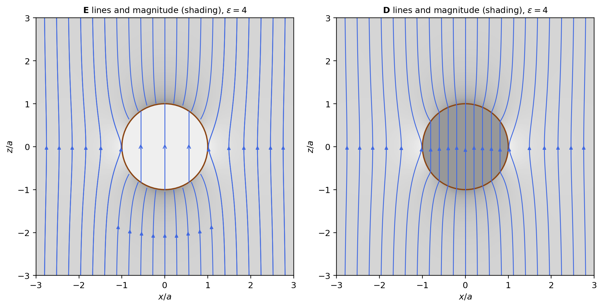
figures/emx_dielectric_sphere.sage.
The first definition describes a polarised material by its dipole moment per unit volume. Its bound charges follow from the potential of a continuum of dipoles.
Definition 16 (Polarisation) The polarisation \mathbf P(t, \mathbf x) of a material is its electric dipole moment per unit volume. A polarised body V produces the potential of the bound charges \rho_b = -\nabla\cdot\mathbf P \quad\text{in } V, \qquad \sigma_b = \mathbf P\cdot\hat{\mathbf n} \quad\text{on } \partial V , \tag{28} and a time-dependent polarisation carries the polarisation current \mathbf J_P = \partial_t\mathbf P, which satisfies \partial_t\rho_b + \nabla\cdot\mathbf J_P = 0. A material is a dielectric when its charges are bound to atoms or molecules, so that its only response to a static field is a polarisation. In SI units \mathbf P is in C/m^2 (Maggiore 2023, sec. 13.2; Pierrus 2018, Questions 9.2, 10.1-10.2).
Veriphy. Pending.
Lean. Pending.
Sage. Pending.
A slab polarised perpendicular to its faces is the simplest polarised body. Its bound charge sits on the two faces.
Example 303 (A polarised slab) For uniform \mathbf P = P\mathbf e_z in |z| < d, \rho_b = 0 and \sigma_b = \pm P on z = \pm d: two charged planes, so \mathbf E = -P\mathbf e_z inside and 0 outside (Example 7). The field produced by the polarisation opposes it, which is why it is called the depolarising field (Pierrus 2018, Question 9.4).
A uniformly polarised sphere has a bound surface charge proportional to \cos\theta. Its field inside is uniform. This makes the sphere the standard example of a polarised body in the rest of the section.
Example 304 (A uniformly polarised sphere) For \mathbf P = P\mathbf e_z in r < a, \sigma_b = P\cos\theta, which by Exercise 40 (with 3E_0 = P) gives \mathbf E = -\frac{\mathbf P}3 inside and, outside, the field of the dipole \mathbf p = \frac{4\pi}3a^3\mathbf P, the total dipole moment of the sphere (Macchi et al. 2023, Problem 3.3).
An atom in a field acquires a dipole proportional to the field. The constant is the atomic polarisability. It links the microscopic picture of a single atom to the macroscopic polarisation of a material.
Example 305 (Atomic polarisability) An atom in a weak field \mathbf E acquires \mathbf p = \alpha\mathbf E. The model of Example 18, a uniform electron cloud of radius a, gives \alpha = 4\pi a^3 (4\pi\varepsilon_0a^3 in SI units, Exercise 316); quantum mechanics gives \alpha = 4\pi\cdot\frac92a_0^3 for hydrogen. A gas of n atoms per unit volume then has \mathbf P = n\alpha\mathbf E.
Molecules with a permanent dipole are aligned by the field against thermal agitation. The result is a polarisation that falls with temperature.
Example 306 (Polar molecules) A gas of n molecules with permanent dipole p at temperature T in a field E has P = np\,L(pE/k_BT), with the Langevin function L(x) = \coth x - \frac1x \approx \frac x3: for weak fields P = \frac{np^2}{3k_BT}E. For water vapour, p = 6.2\times10^{-30}\,C m, the orientational part dominates the atomic one at room temperature (Pierrus 2018, Question 9.5).
A polarised body is neutral, so its bound charges add up to zero. The example checks it from the definition.
Example 307 (Bound charges cancel) \int_V\rho_b\,d^3x + \oint_{\partial V}\sigma_b\,dS = -\int_V\nabla\cdot\mathbf P + \oint\mathbf P\cdot d\mathbf S = 0 by the divergence theorem: polarisation moves charge within the body but creates none. Its dipole moment is \int_V\mathbf P\,d^3x, as the definition requires: the same divergence theorem applied to x_i\mathbf P gives \int_V x_i\rho_b\,d^3x + \oint x_i\sigma_b\,dS = \int_V P_i\,d^3x.
A non-uniform polarisation leaves a bound charge in the volume. The example computes it for a polarisation that grows linearly.
Example 308 (A non-uniform polarisation) For \mathbf P = kx\mathbf e_x in the cube 0 < x, y, z < L, \rho_b = -k throughout the volume and \sigma_b = kL on the face x = L and 0 on the others: the face carries kL^3, which cancels the volume charge -kL^3.
When the polarisation changes in time, the moving bound charges form a current. It is the source that radiates in Proposition 12.
Example 309 (The polarisation current) \partial_t\rho_b + \nabla\cdot\partial_t\mathbf P = -\partial_t\nabla\cdot\mathbf P + \nabla\cdot\partial_t\mathbf P = 0: the bound charges are conserved with the current \partial_t\mathbf P. For a small body, \int\partial_t\mathbf P\,d^3x = \dot{\mathbf p}, the current whose time derivative is the source of dipole radiation (Pierrus 2018, Questions 10.1-10.2).
A lattice of small conducting spheres behaves as a dielectric. Each sphere is a dipole induced by the field. Such artificial dielectrics are used to build lenses for microwaves, whose wavelengths are much longer than the spheres.
Example 310 (An artificial dielectric) Conducting spheres of radius a, n per unit volume and far apart, acquire \mathbf p = 4\pi a^3\mathbf E each (Example 47), so \mathbf P = 4\pi na^3\mathbf E and \chi_e = 4\pi na^3, three times the volume fraction they occupy; microwave lenses use such materials (Macchi et al. 2023, Problem 3.1).
A long cylinder polarised across its axis has a uniform field inside, like the sphere. The depolarising factor is \frac12 instead of \frac13.
Example 311 (A transversely polarised cylinder) For \mathbf P = P\mathbf e_x in an infinite cylinder of radius a, \sigma_b = P\cos\varphi, and the two-dimensional analogue of Example 304 gives \mathbf E = -\frac{\mathbf P}2 inside: the depolarising factors of a slab, a cylinder and a sphere are 1, \frac12 and \frac13 (Macchi et al. 2023, Problem 3.11).
The polarisation is a macroscopic average. The microscopic field inside a dielectric is very different from the averaged field used here.
Example 312 (Macroscopic averages) The macroscopic fields are averages of the microscopic ones over regions large compared with atoms (\sim1\,nm) and small compared with the scale of variation of the fields; they satisfy Maxwell’s equations with averaged sources, which are the free charges and the bound charges of Equation 28.
The exercises start with bound charges of simple bodies. The first one uses a cube. Its bound charge sits on the faces only, since the polarisation inside is uniform.
Exercise 310 (A polarised cube) A cube of side L has uniform \mathbf P = P(\mathbf e_x + \mathbf e_y)/\sqrt2. Find \rho_b, \sigma_b on each face, and the dipole moment.
\rho_b = 0; \sigma_b = \pm P/\sqrt2 on the faces x = L, 0 and y = L, 0, and 0 on the faces normal to \mathbf e_z. The dipole moment is L^3\mathbf P.
Veriphy. Pending.
Lean. Pending.
Sage. Pending.
The field of a polarised sphere follows from its surface charge. The second exercise checks it with Sage. The computation integrates the potential of the surface charge over the whole sphere.
Exercise 311 (The polarised sphere, checked) With Sage, check that \phi = \frac{P}3r\cos\theta inside and \frac{Pa^3\cos\theta}{3r^2} outside are harmonic, continuous at r = a, and have a jump of -\partial_r\phi equal to P\cos\theta.
All three hold, so by Proposition 1 this is the potential, with \mathbf E = -\frac P3\mathbf e_z inside:
r, th, P, a = var('r theta P a', domain='positive')
def lap(f):
return (diff(r^2 * diff(f, r), r) / r^2 + diff(sin(th) * diff(f, th), th) / (r^2 * sin(th))).simplify_full()
phi_in = P / 3 * r * cos(th)
phi_out = P * a^3 * cos(th) / (3 * r^2)
print('Laplacian inside :', lap(phi_in))
print('Laplacian outside:', lap(phi_out))
print('continuity at r = a:', bool((phi_in - phi_out).subs(r=a) == 0))
jump = (-diff(phi_out, r) + diff(phi_in, r)).subs(r=a).simplify_full()
print('jump of -d_r phi:', jump, '; equals P cos(theta):', bool(jump == P * cos(th)))
print('E inside, z component: -d_z(P z/3) =', -P / 3)Output:
Laplacian inside : 0
Laplacian outside: 0
continuity at r = a: True
jump of -d_r phi: P*cos(theta) ; equals P cos(theta): True
E inside, z component: -d_z(P z/3) = -1/3*PVeriphy. Pending.
Lean. Pending.
Sage. Pending.
A finite polarised cylinder interpolates between the slab and the long rod. The third exercise compares the limits. The answer shows when the depolarising field of the ends can be neglected.
Exercise 312 (A polarised rod and a polarised disc) A cylinder of radius r and length \ell is polarised uniformly along its axis. Find the field at its centre for \ell \gg r and \ell \ll r (Pierrus 2018, Question 9.3).
The bound charges \pm P sit on the two end faces. For \ell \ll r they are two large planes, \mathbf E = -\mathbf P; for \ell \gg r they are two small discs far from the centre, each giving \frac{P\pi r^2}{4\pi(\ell/2)^2}, so |\mathbf E| \approx \frac{2Pr^2}{\ell^2} \to 0.
Veriphy. Pending.
Lean. Pending.
Sage. Pending.
The Langevin function interpolates between weak and saturated alignment. The fourth exercise examines it with Sage. The two limits give the linear law and the saturated polarisation of the material.
Exercise 313 (The Langevin function) With Sage, expand L(x) = \coth x - \frac1x for small x, find its limit for large x, and evaluate pE/k_BT for water molecules in 10^6\,V/m at 300\,K.
L(x) = \frac x3 - \frac{x^3}{45} + \dots, L \to 1; pE/k_BT = 1.5\times10^{-3}, deep in the linear regime:
x = var('x')
L = coth(x) - 1 / x
print('series:', L.series(x, 6))
print('limit x -> oo:', limit(L, x=oo))
p = 6.2e-30 # dipole moment of water, C m
E = 1e6 # V/m
kB, T = 1.380649e-23, 300
print('pE/kT =', n(p * E / (kB * T), digits=3))Output:
series: 1/3*x + (-1/45)*x^3 + 2/945*x^5 + Order(x^6)
limit x -> oo: 1
pE/kT = 0.00150Veriphy. Pending.
Lean. Pending.
Sage. Pending.
A radial polarisation produces a volume charge and a surface charge that cancel. The fifth exercise computes both with Sage.
Exercise 314 (A radial polarisation) With Sage, for \mathbf P = k\mathbf x in the ball r < R, compute \rho_b, \sigma_b, their totals, and \mathbf E inside and outside.
\rho_b = -3k, \sigma_b = kR, totals \mp4\pi kR^3; Gauss’s law gives \mathbf E = -k\mathbf x inside and 0 outside:
x, y, z, k, R, r = var('x y z k R r')
assume(R > 0, r > 0)
P = vector([k * x, k * y, k * z])
rho_b = -sum(diff(P[i], v) for i, v in enumerate([x, y, z]))
print('rho_b =', rho_b)
sigma_b = k * R # P . n at r = R
print('sigma_b =', sigma_b)
Qv = rho_b * 4 / 3 * pi * R^3
Qs = sigma_b * 4 * pi * R^2
print('total volume charge:', Qv, '; total surface charge:', Qs, '; sum:', Qv + Qs)
Er_in = rho_b * 4 / 3 * pi * r^3 / (4 * pi * r^2)
print('E_r inside (Gauss):', Er_in.simplify_full(), '; E outside: 0 since the total charge vanishes')Output:
rho_b = -3*k
sigma_b = R*k
total volume charge: -4*pi*R^3*k ; total surface charge: 4*pi*R^3*k ; sum: 0
E_r inside (Gauss): -k*r ; E outside: 0 since the total charge vanishesVeriphy. Pending.
Lean. Pending.
Sage. Pending.
The bound charges are a rewriting of the potential of a continuum of dipoles. The sixth exercise asks for the integration by parts.
Exercise 315 (The potential of a polarised body) Starting from \phi(\mathbf x) = \frac1{4\pi}\int_V\frac{\mathbf P(\mathbf x')\cdot(\mathbf x - \mathbf x')}{|\mathbf x - \mathbf x'|^3}d^3x', the sum of the dipole potentials of Example 22, show that it equals the potential of \rho_b and \sigma_b (Pierrus 2018, Question 9.2).
\frac{\mathbf x - \mathbf x'}{|\mathbf x - \mathbf x'|^3} = \nabla'\frac1{|\mathbf x - \mathbf x'|}, and \mathbf P\cdot\nabla'f = \nabla'\cdot(\mathbf Pf) - f\nabla'\cdot\mathbf P; the divergence theorem turns the first term into \oint\frac{\mathbf P\cdot\hat{\mathbf n}}{|\mathbf x - \mathbf x'|}dS', and the second is the volume charge -\nabla'\cdot\mathbf P.
Veriphy. Pending.
Lean. Pending.
Sage. Pending.
The overlap model gives a polarisability in closed form. The seventh exercise derives it. It treats the atom as a point nucleus inside a uniform cloud of electrons.
Exercise 316 (Polarisability of a cloud atom) A point nucleus e sits inside a uniform electron cloud of radius a and charge -e. Find the displacement in a field E and the polarisability, and evaluate it with a = a_0 in SI units.
The cloud’s field at displacement \delta from its centre is \frac{e\delta}{4\pi a^3} (Example 13), balancing E for \delta = \frac{4\pi a^3E}{e}, so p = e\delta = 4\pi a^3E and \alpha = 4\pi a^3. In SI units \alpha/4\pi\varepsilon_0 = a_0^3 = 1.5\times10^{-31}\,m^3, a third of the quantum value.
Veriphy. Pending.
Lean. Pending.
Sage. Pending.
In a dense medium each molecule feels the field of its neighbours as well. The eighth exercise derives the Clausius-Mossotti relation from the local field.
Exercise 317 (The Clausius-Mossotti relation) Assume that a molecule in a dielectric feels the local field \mathbf E + \frac{\mathbf P}3 (the field in a spherical cavity, by Example 304). With \mathbf P = n\alpha(\mathbf E + \frac{\mathbf P}3), show that \chi_e = \frac{n\alpha}{1 - n\alpha/3} and \frac{\varepsilon - 1}{\varepsilon + 2} = \frac{n\alpha}3.
\mathbf P(1 - \frac{n\alpha}3) = n\alpha\mathbf E gives \chi_e. Then \varepsilon - 1 = \frac{n\alpha}{1 - n\alpha/3} and \varepsilon + 2 = 3 + \frac{n\alpha}{1 - n\alpha/3} = \frac{3}{1 - n\alpha/3}, whose ratio is \frac{n\alpha}3.
Veriphy. Pending.
Lean. Pending.
Sage. Pending.
The polarisation current makes the bound charges conserved. The ninth exercise proves it for an arbitrary body, including the surface.
Exercise 318 (Bound charge is conserved) Show that the total bound charge of a body, including the surface charge, is constant in time, and that the surface charge changes at the rate at which \partial_t\mathbf P arrives at the surface.
The total is zero at all times (Example 307). On the surface \partial_t\sigma_b = \partial_t\mathbf P\cdot\hat{\mathbf n}, the normal component of the polarisation current flowing into the surface from inside.
Veriphy. Pending.
Lean. Pending.
Sage. Pending.
The susceptibility of a dilute gas is small. The last exercise estimates it for hydrogen with Sage. The answer explains why the permittivity of a gas is so close to one.
Exercise 319 (The susceptibility of hydrogen gas) With Sage, take \alpha/\varepsilon_0 = 4\pi\cdot\frac92a_0^3 per atom and twice that per molecule, and compute \chi_e = n\alpha/\varepsilon_0 for H_2 at standard conditions (n = 2.69\times10^{25}\,m^{-3}), and the correction from Exercise 317.
\chi_e \approx 4.5\times10^{-4}, the right order of magnitude (the measured value is 2.5\times10^{-4}), and the Clausius-Mossotti correction is a part in 10^4:
a0 = 5.29177e-11
alpha_atom = 4 * pi * 9 / 2 * a0^3 # alpha/eps0 in m^3
alpha_mol = 2 * alpha_atom
N = 2.69e25
chi = N * alpha_mol
print('alpha/eps0 per molecule =', n(alpha_mol, digits=3), 'm^3')
print('chi_e = n alpha/eps0 =', n(chi, digits=3))
cm = chi / (1 - chi / 3)
print('Clausius-Mossotti chi =', n(cm, digits=6), '; relative correction =', n(cm / chi - 1, digits=3))Output:
alpha/eps0 per molecule = 1.68e-29 m^3
chi_e = n alpha/eps0 = 0.000451
Clausius-Mossotti chi = 0.000450892 ; relative correction = 0.000122Veriphy. Pending.
Lean. Pending.
Sage. Pending.
Magnetic moments of atoms, from orbital motion and spin, add up to a magnetisation. The second definition is the magnetic counterpart of the first, with bound currents in place of bound charges.
Definition 17 (Magnetisation) The magnetisation \mathbf M(t, \mathbf x) of a material is its magnetic dipole moment per unit volume (Definition 7). A magnetised body V produces the vector potential of the bound currents \mathbf J_b = \nabla\times\mathbf M \quad\text{in } V, \qquad \mathbf K_b = \mathbf M\times\hat{\mathbf n} \quad\text{on } \partial V , \tag{29} which have zero divergence and so carry no charge. A material is paramagnetic if \mathbf M is along an applied field, diamagnetic if opposite, and ferromagnetic if it keeps a magnetisation without a field. In SI units \mathbf M is in A/m (Maggiore 2023, sec. 13.3; Pierrus 2018, Question 9.13).
Veriphy. Pending.
Lean. Pending.
Sage. Pending.
A long uniformly magnetised cylinder is a solenoid of bound current. Its field inside equals its magnetisation. The cylinder plays the role for magnetisation that the slab plays for polarisation.
Example 313 (A long magnetised cylinder) For \mathbf M = M\mathbf e_z in an infinite cylinder, \mathbf J_b = 0 and \mathbf K_b = M\hat{\boldsymbol\varphi}, a solenoid with nI = M (Example 72): \mathbf B = \mathbf M inside and 0 outside, \mu_0\mathbf M in SI units (Macchi et al. 2023, Problem 5.5).
A uniformly magnetised sphere is equivalent to a rotating charged shell. Its field inside is uniform and two thirds of the magnetisation.
Example 314 (A uniformly magnetised sphere) For \mathbf M = M\mathbf e_z in r < a, \mathbf K_b = M\sin\theta\,\hat{\boldsymbol\varphi}, the current of the rotating shell of Example 89 with \sigma\omega a = M: \mathbf B = \frac23\mathbf M inside and the dipole field of \mathbf m = \frac{4\pi}3a^3\mathbf M outside (Macchi et al. 2023, Problem 5.10; Pierrus 2018, Question 9.19).
Permanent magnets have magnetisations of order a million amperes per metre. The field near them is of order a tesla.
Example 315 (A permanent magnet) A neodymium magnet has M \approx 10^6\,A/m, so by Example 313 a long bar has B = \mu_0M \approx 1.3\,T inside. Iron saturates at 1.7\times10^6\,A/m, about 2.2 Bohr magnetons (Example 96) per atom for 8.5\times10^{28} atoms per m^3.
Paramagnets align their atomic moments with the field. Thermal agitation limits the alignment as for polar molecules. The result is a susceptibility that falls as the inverse of the temperature.
Example 316 (Curie’s law) Atoms with moment \mu align in a field B like the polar molecules of Example 306, giving M = \frac{n\mu^2}{3k_BT}B for weak fields: the susceptibility of a paramagnet falls as 1/T. For \mu = \mu_B and n = 10^{28}\,m^{-3} at 300\,K it is \chi_m \approx 9\times10^{-5} (with \mu_0 in SI units).
Every material has a diamagnetic response from the orbital motion of its electrons. It follows from the quadratic term of the minimally coupled Hamiltonian.
Example 317 (Diamagnetism) The term \frac{q^2}{8m}|\mathbf B\times\mathbf x|^2 of Example 212 raises the energy in a field, so each electron acquires a moment against \mathbf B of order \frac{e^2\langle x^2 + y^2\rangle}{4m}B; with n \approx 10^{29} electrons per m^3 and \langle x^2 + y^2\rangle \approx a_0^2 this gives \chi_m \approx -3\times10^{-6}, the order of magnitude of water (-9\times10^{-6}) and copper (-1\times10^{-5}).
The magnetisation of a nonuniform body gives a volume current. The example computes it for a magnetisation that grows with the radius.
Example 318 (A non-uniform magnetisation) For \mathbf M = ks\mathbf e_z in a long cylinder of radius R, \mathbf J_b = \nabla\times\mathbf M = -k\hat{\boldsymbol\varphi} and \mathbf K_b = kR\hat{\boldsymbol \varphi} on the surface: the volume and surface currents circulate in opposite senses, and Ampère’s law gives \mathbf B = \mathbf M inside.
A thin magnetised disc has almost no field at its centre. The bound current on its rim is too short to act as a solenoid.
Example 319 (A thin magnetised disc) For a disc of radius R and thickness h \ll R magnetised along its axis, \mathbf K_b = M\hat{\boldsymbol\varphi} on the rim is a loop with current Mh, whose field at the centre is \frac{Mh}{2R} (Example 62), small compared with M (Macchi et al. 2023, Problem 5.5).
A cylinder magnetised across its axis has a uniform field inside. It is the magnetic analogue of Example 311. The two problems are solved by the same potential with the roles of the fields exchanged.
Example 320 (A transversely magnetised cylinder) For \mathbf M = M\mathbf e_x in an infinite cylinder, \mathbf K_b = \mathbf M\times\hat{\mathbf n} = -M\cos\varphi\,\mathbf e_z along the surface, and \mathbf B = \frac{\mathbf M}2 inside; a current \propto\cos\varphi on a thin shell is how accelerator dipole magnets make uniform fields (Macchi et al. 2023, Problem 5.11).
The bound currents carry no net current through the body. The example checks it for any cross-section. The volume and surface currents cancel each other in every section of the body.
Example 321 (No net bound current) Through a surface \Sigma cutting the body, \int_\Sigma\mathbf J_b\cdot d\mathbf S + \int_{\partial\Sigma\cap\partial V}\mathbf K_b\cdot d\boldsymbol\ell_\perp = \oint_{\partial\Sigma}\mathbf M\cdot d\boldsymbol\ell by Stokes’ theorem, and the boundary curve can be taken just outside the body, where \mathbf M = 0: atomic currents circulate and never flow through.
The field inside a magnetised material depends on the shape of the body as well as on the magnetisation. The example compares the three shapes.
Example 322 (Shape matters) For uniform \mathbf M along the axis, \mathbf B inside is \mathbf M for a long rod, \frac23\mathbf M for a sphere and nearly 0 at the centre of a thin disc: the field \mathbf B - \mathbf M is the demagnetising field, with factors 0, \frac13 and 1, the magnetic counterparts of the depolarising factors of Example 311.
The exercises start with the magnetised sphere. The first one checks its field with Sage from the vector potential. The bound surface current of the sphere is that of a rotating charged shell.
Exercise 320 (The magnetised sphere, checked) With Sage, take \mathbf A = \frac M3\mathbf e_z\times\mathbf x inside and \frac{Ma^3}3\frac{\mathbf e_z\times\mathbf x}{r^3} outside a sphere of radius a, compute \mathbf B, and check that the tangential jump at the equator equals \mathbf K_b (Pierrus 2018, Question 9.19).
\mathbf B = \frac23M\mathbf e_z inside and the dipole field outside, with the jump M at the equator:
x, y, z, M, a = var('x y z M a')
assume(a > 0)
X = vector([x, y, z]); ez = vector([0, 0, 1])
r = sqrt(x^2 + y^2 + z^2)
def curl(A):
return vector([diff(A[2], y) - diff(A[1], z), diff(A[0], z) - diff(A[2], x), diff(A[1], x) - diff(A[0], y)])
Ain = M / 3 * ez.cross_product(X)
Aout = M * a^3 / 3 * ez.cross_product(X) / r^3
Bin = curl(Ain); Bout = curl(Aout).simplify_full()
print('B inside:', Bin)
m = 4 * pi * a^3 / 3 * M
dip = vector([3 * x * z, 3 * y * z, 3 * z^2 - r^2]) * m / (4 * pi * r^5)
print('B outside equals the dipole field of m = (4 pi a^3/3) M:', bool((Bout - dip).simplify_full() == 0))
eq_in = Bin.subs(x=a, y=0, z=0); eq_out = Bout.subs(x=a, y=0, z=0)
print('B_z just inside / outside at the equator:', eq_in[2], ',', eq_out[2].simplify_full())
print('jump B_z(in) - B_z(out) =', (eq_in[2] - eq_out[2]).simplify_full(), '= |K_b| = M sin(pi/2)')Output:
B inside: (0, 0, 2/3*M)
B outside equals the dipole field of m = (4 pi a^3/3) M: True
B_z just inside / outside at the equator: 2/3*M , -1/3*M
jump B_z(in) - B_z(out) = M = |K_b| = M sin(pi/2)Veriphy. Pending.
Lean. Pending.
Sage. Pending.
A magnetised cylinder with a gap has a field in the gap. The second exercise uses the bound currents. The gap removes a slice of the solenoid of bound current that the magnet represents.
Exercise 321 (A gap in a magnetised rod) A thin transverse slice of width w \ll R is cut from a long rod of radius R magnetised along its axis. Find \mathbf B in the middle of the gap (Pierrus 2018, Question 9.16).
The field is that of the whole rod, \mathbf M, minus that of the removed slice, a loop of radius R carrying the bound current Mw (Example 319), whose field at its centre is \frac{Mw}{2R}. So \mathbf B \approx \mathbf M(1 - \frac{w}{2R}): almost the full field crosses a thin gap.
Veriphy. Pending.
Lean. Pending.
Sage. Pending.
The bound currents of a non-uniform magnetisation can be computed with Sage. The third exercise checks Example 318. The computation takes the curl of the magnetisation and compares the result with the example.
Exercise 322 (Bound currents, checked) With Sage, for \mathbf M = k\sqrt{x^2 + y^2}\,\mathbf e_z, compute \nabla\times\mathbf M and check that \nabla\times\mathbf B = \mathbf J_b with \mathbf B = \mathbf M inside.
\mathbf J_b = \frac{k}{s}(y, -x, 0) = -k\hat{\boldsymbol\varphi}, and \mathbf B = \mathbf M has the same curl:
x, y, z, k = var('x y z k')
s = sqrt(x^2 + y^2)
def curl(A):
return vector([diff(A[2], y) - diff(A[1], z), diff(A[0], z) - diff(A[2], x), diff(A[1], x) - diff(A[0], y)])
M = vector([0, 0, k * s])
J = curl(M).simplify_full()
print('J_b = curl M =', J)
phihat = vector([-y / s, x / s, 0])
print('J_b . phi_hat =', (J * phihat).simplify_full())
print('curl B with B = M equals J_b:', bool((curl(M) - J).simplify_full() == 0))Output:
J_b = curl M = (k*y/sqrt(x^2 + y^2), -k*x/sqrt(x^2 + y^2), 0)
J_b . phi_hat = -k
curl B with B = M equals J_b: TrueVeriphy. Pending.
Lean. Pending.
Sage. Pending.
Curie’s law can be put into numbers. The fourth exercise evaluates the susceptibility of a paramagnetic salt with Sage. The numbers show how small paramagnetism is at room temperature and how it grows when cooled.
Exercise 323 (A paramagnetic salt) With Sage, compute \chi_m = \mu_0n\mu^2/3k_BT for n = 10^{28}\,m^{-3} ions with \mu = 5\mu_B at 300\,K and at 4\,K, and the magnetisation in 1\,T at 4\,K. Is the linear law still valid there?
\chi_m = 2.2\times10^{-3} at 300\,K and 0.16 at 4\,K; at 4\,K, \mu B/k_BT = 0.84, where the Langevin function gives 0.268 against the linear 0.280: the linear law is off by 4\%, and M = 1.2\times10^5\,A/m:
mu0 = 4 * pi * 1e-7; kB = 1.380649e-23; muB = 9.2740100783e-24
N = 1e28; mu = 5 * muB
for T in [300, 4]:
print('T =', T, 'K: chi_m =', n(mu0 * N * mu^2 / (3 * kB * T), digits=3))
x = mu * 1 / (kB * 4)
print('mu B / kT at 1 T and 4 K =', n(x, digits=3))
L = coth(x) - 1 / x
print('Langevin L(x) =', n(L, digits=3), 'versus linear x/3 =', n(x / 3, digits=3))
print('M (Langevin) =', n(N * mu * L, digits=3), 'A/m')Output:
T = 300 K: chi_m = 0.00217
T = 4 K: chi_m = 0.163
mu B / kT at 1 T and 4 K = 0.840
Langevin L(x) = 0.268 versus linear x/3 = 0.280
M (Langevin) = 124000. A/mVeriphy. Pending.
Lean. Pending.
Sage. Pending.
The equivalence between the magnetised sphere and the rotating shell is exact. The fifth exercise states it in general. It shows that any uniformly magnetised body is equivalent to a surface current on its boundary.
Exercise 324 (Rotating charge and magnetisation) Show that a surface charge \sigma(\theta) on a sphere rotating with \boldsymbol\omega has the same surface current as a magnetisation, and find the magnetisation for uniform \sigma.
The current is \sigma\boldsymbol\omega\times\mathbf x = \sigma\omega a\sin\theta\,\hat{\boldsymbol\varphi}, and \mathbf M\times\hat{\mathbf n} = M\sin\theta\,\hat{\boldsymbol \varphi} for \mathbf M = M\mathbf e_z: uniform \sigma corresponds to uniform M = \sigma\omega a.
Veriphy. Pending.
Lean. Pending.
Sage. Pending.
Bound currents have no divergence. The sixth exercise checks it, including the surface. The surface current must be included for the total bound current to be conserved.
Exercise 325 (Bound currents are divergence free) Show that \nabla\cdot\mathbf J_b = 0 and that the surface current \mathbf K_b flows along the surface, so no bound charge accumulates.
\nabla\cdot(\nabla\times\mathbf M) = 0, and \mathbf K_b\cdot\hat{\mathbf n} = (\mathbf M\times\hat{\mathbf n})\cdot\hat{\mathbf n} = 0; the volume current reaching the surface, \mathbf J_b\cdot\hat{\mathbf n}, is balanced by the surface divergence of \mathbf K_b, as Stokes’ theorem shows.
Veriphy. Pending.
Lean. Pending.
Sage. Pending.
The vector potential of a magnetised body is that of its bound currents. The seventh exercise proves it. The proof is an integration by parts of the dipole potential of each volume element.
Exercise 326 (The vector potential of a magnetised body) Show that \mathbf A = \frac1{4\pi}\int_V\frac{\mathbf M(\mathbf x')\times(\mathbf x - \mathbf x')}{|\mathbf x - \mathbf x'|^3}d^3x', the sum of dipole potentials of Definition 7, equals the vector potential of \mathbf J_b and \mathbf K_b (Pierrus 2018, Question 9.13).
As in Exercise 315, \frac{\mathbf x - \mathbf x'}{|\mathbf x - \mathbf x'|^3} = \nabla'\frac1{|\mathbf x - \mathbf x'|} and \mathbf M\times\nabla'f = f\nabla'\times\mathbf M - \nabla'\times(f\mathbf M); the last term integrates to the surface term \oint f\,\mathbf M\times\hat{\mathbf n}\,dS'.
Veriphy. Pending.
Lean. Pending.
Sage. Pending.
Diamagnetic levitation needs a strong field gradient. The eighth exercise estimates the gradient needed to float water. The answer is compared with the gradients of the magnets that levitated a living frog.
Exercise 327 (Floating water) A diamagnetic material with \chi_m = -9\times10^{-6} (water) has energy density -\frac{\chi_m}{2\mu_0}B^2 in a field. With \rho_m = 1000\,kg/m^3, find the value of \frac{d(B^2)}{dz} needed to balance gravity (Exercise 114).
The force per unit volume is \frac{|\chi_m|}{2\mu_0}\frac{d(B^2)}{dz} = \rho_mg, so \frac{d(B^2)}{dz} = \frac{2\mu_0\rho_mg}{|\chi_m|} = 2.7\times10^3\,T^2/m, reached in the bore of a 16\,T magnet, where frogs have been levitated.
Veriphy. Pending.
Lean. Pending.
Sage. Pending.
The magnetisation of iron is a large fraction of a Bohr magneton per atom. The ninth exercise computes it from the saturation value.
Exercise 328 (Moments per atom in iron) Iron saturates at M_s = 1.7\times10^6\,A/m with 8.5\times10^{28} atoms per m^3. Find the moment per atom in Bohr magnetons, and the field \mu_0M_s inside a long saturated rod.
M_s/n = 2.0\times10^{-23}\,A m^2 = 2.2\mu_B, and \mu_0M_s = 2.1\,T, the largest field of iron magnets.
Veriphy. Pending.
Lean. Pending.
Sage. Pending.
The magnetic field outside a uniformly magnetised sphere is exactly dipolar. The last exercise checks the moment. The moment is the magnetisation times the volume of the sphere, as one would guess.
Exercise 329 (The moment of a magnetised body) Show that the total magnetic moment of the bound currents of a uniformly magnetised body is \int_V\mathbf M\,d^3x, using Definition 7 for the surface current of a sphere.
\frac12\oint\mathbf x\times\mathbf K_b\,dS = \frac12\oint\mathbf x\times(\mathbf M\times\hat{\mathbf n})dS; for the sphere, \mathbf x = a\hat{\mathbf n} and \hat{\mathbf n}\times(\mathbf M \times\hat{\mathbf n}) = \mathbf M - (\mathbf M\cdot\hat{\mathbf n})\hat{\mathbf n}, whose average over directions is \frac23\mathbf M: total \frac12a\cdot4\pi a^2\cdot\frac23\mathbf M = \frac{4\pi}3a^3\mathbf M.
Veriphy. Pending.
Lean. Pending.
Sage. Pending.
With the bound charges and currents, Maxwell’s equations can be rewritten so that only the free sources appear. Two auxiliary fields absorb the response of the material, and the jump conditions across a boundary follow.
Proposition 14 (Maxwell’s equations in matter) With \rho = \rho_f + \rho_b and \mathbf J = \mathbf J_f + \partial_t\mathbf P + \nabla\times\mathbf M, where \rho_f, \mathbf J_f are the free charges and currents, the electric displacement \mathbf D = \mathbf E + \mathbf P and the magnetic field strength \mathbf H = \mathbf B - \mathbf M satisfy \nabla\cdot\mathbf D = \rho_f, \qquad \nabla\times\mathbf H - \partial_t\mathbf D = \mathbf J_f, \qquad \nabla\cdot\mathbf B = 0, \qquad \nabla\times\mathbf E + \partial_t\mathbf B = 0 . \tag{30} Across a surface with unit normal \hat{\mathbf n} from medium 1 to medium 2 carrying free surface charge \sigma_f and current \mathbf K_f, \hat{\mathbf n}\cdot(\mathbf D_2 - \mathbf D_1) = \sigma_f, \hat{\mathbf n}\times(\mathbf E_2 - \mathbf E_1) = 0, \hat{\mathbf n}\cdot(\mathbf B_2 - \mathbf B_1) = 0 and \hat{\mathbf n}\times(\mathbf H_2 - \mathbf H_1) = \mathbf K_f. In SI units \mathbf D = \varepsilon_0\mathbf E + \mathbf P and \mathbf H = \mathbf B/\mu_0 - \mathbf M. Proof. Insert the sources into Equation 11: \nabla\cdot\mathbf E = \rho_f - \nabla\cdot\mathbf P and \nabla\times\mathbf B - \partial_t\mathbf E = \mathbf J_f + \partial_t\mathbf P + \nabla\times\mathbf M, and move the bound terms to the left. The jump conditions follow from the integral forms on thin boxes and rectangles, as in Example 16 and Example 74.
Veriphy. Pending.
Lean. Pending.
Sage. Pending.
A capacitor filled with a dielectric holds more charge at the same voltage. The free charge is set by \mathbf D and the voltage by \mathbf E.
Example 323 (A capacitor with a dielectric) In a parallel-plate capacitor filled with a linear dielectric, \mathbf D = \sigma_f\mathbf e_z between the plates and \mathbf E = \mathbf D/\varepsilon, so at fixed voltage the free charge, and the capacitance, grow by \varepsilon (Example 52); at fixed charge the field and voltage drop by \varepsilon, because the bound charge \mp(1 - 1/\varepsilon)\sigma_f on the dielectric faces partly cancels the free charge (Pierrus 2018, Question 9.1).
A dielectric sphere in a uniform field polarises uniformly. Its interior field is weaker than the applied one. The surface charge of the polarised sphere produces a field opposed to the applied one.
Example 324 (A dielectric sphere in a uniform field) For a sphere of permittivity \varepsilon in E_0\mathbf e_z, try a uniform \mathbf E_{\text{in}} and outside E_0\mathbf e_z plus a dipole. Continuity of E_\theta and of D_r at r = a gives \mathbf E_{\text{in}} = \frac3{\varepsilon + 2}E_0\mathbf e_z, \mathbf P = \frac{3(\varepsilon - 1)}{\varepsilon + 2}E_0\mathbf e_z, and the dipole \frac{4\pi}3a^3\mathbf P (Figure 14); \varepsilon \to \infty gives the conductor of Example 47.
At a boundary between two dielectrics without free charge, the field lines bend. The tangential \mathbf E and the normal \mathbf D are continuous.
Example 325 (Refraction of field lines) With E_{1t} = E_{2t} and \varepsilon_1E_{1n} = \varepsilon_2E_{2n}, the angles from the normal satisfy \frac{\tan\theta_2}{\tan\theta_1} = \frac{\varepsilon_2}{\varepsilon_1}: field lines entering a medium of larger permittivity bend away from the normal, and the field magnitude drops (Macchi et al. 2023, Problem 3.5; Pierrus 2018, Question 9.9).
A charge near a dielectric half-space is attracted by its own image, as near a conductor but more weakly. The image charge is reduced by a factor involving the permittivity.
Example 326 (A charge in front of a dielectric) For q at height d above a dielectric \varepsilon filling z < 0, the field in z > 0 is that of q and an image q' = -\frac{\varepsilon - 1}{\varepsilon + 1}q at -d, and in z < 0 that of a charge \frac{2}{\varepsilon + 1}q at d (in a medium of permittivity 1); the boundary conditions hold on the plane, and \varepsilon \to \infty gives the conductor of Example 43.
A conductor surrounded by a dielectric shell keeps the field outside the shell unchanged. The field inside the shell is reduced.
Example 327 (A charged sphere in a dielectric shell) For a conducting sphere of radius R with free charge q and a dielectric shell R < r < 2R, \mathbf D = \frac{q\hat{\mathbf n}}{4\pi r^2} everywhere outside the conductor, so \mathbf E = \frac{\mathbf D}\varepsilon in the shell and \mathbf D outside; the potential of the conductor is \frac{q}{4\pi}\bigl(\frac{1}{2R} + \frac1\varepsilon(\frac1R - \frac1{2R})\bigr) (Pierrus 2018, Question 9.7).
An iron ring with an air gap concentrates the field of its winding in the gap. The field strength \mathbf H follows from the free current alone.
Example 328 (An electromagnet) N turns with current I on an iron ring of length \ell and permeability \mu with a gap w: \oint\mathbf H\cdot d\boldsymbol\ell = NI, and B is continuous across the gap, so \frac B\mu\ell + Bw = NI and B = \frac{NI}{w + \ell/\mu}; for \mu \sim 10^3 a gap of a few mm controls the field, which is why the gap sets the strength of an electromagnet (Pierrus 2018, Question 9.17).
A magnetisable sphere in a uniform field is the magnetic version of Example 324. A superconductor is the limit of zero permeability.
Example 329 (A magnetisable sphere in a field) With \mathbf B = \mu\mathbf H, a sphere in \mathbf B_0 has \mathbf B_{\text{in}} = \frac{3\mu}{\mu + 2}\mathbf B_0, the dielectric result with \mathbf E \to \mathbf H, \mathbf D \to \mathbf B. For \mu = 0, a perfect diamagnet such as a superconductor, \mathbf B_{\text{in}} = 0 and the field lines go around the sphere (Macchi et al. 2023, Problem 5.10).
Inside a permanent magnet \mathbf H points against \mathbf M. The two auxiliary fields can point in opposite directions. This is the demagnetising field of the magnet, which tends to weaken the magnetisation.
Example 330 (\mathbf H inside a magnet) For the magnetised sphere of Example 314, \mathbf H = \mathbf B - \mathbf M = -\frac13\mathbf M inside: \nabla\cdot\mathbf H = -\nabla\cdot\mathbf M acts as a magnetic charge on the surface, and \mathbf H runs from the north to the south face inside, against \mathbf B (Pierrus 2018, Question 9.20).
The free charge on a conductor embedded in a dielectric produces a weaker field. The field just outside is \sigma_f/\varepsilon.
Example 331 (A conductor in a dielectric) At the surface of a conductor in a medium of permittivity \varepsilon, \mathbf D = \sigma_f\hat{\mathbf n} and \mathbf E = \frac{\sigma_f}{\varepsilon}\hat{\mathbf n}, the vacuum result of Definition 3 divided by \varepsilon: the dielectric’s bound charge -(1 - \frac1\varepsilon)\sigma_f at the surface screens the free charge (Macchi et al. 2023, Problem 3.9).
The macroscopic equations conserve free charge separately. The example checks it. It follows from the divergence of the macroscopic Ampère-Maxwell law and Gauss’s law for the displacement.
Example 332 (Free charge is conserved) The divergence of the second equation of Equation 30 gives \partial_t\rho_f + \nabla\cdot\mathbf J_f = 0: free charge is conserved on its own, as is bound charge (Example 309); in a medium with \mathbf J_f = \sigma\mathbf E and \mathbf D = \varepsilon\mathbf E it relaxes with time constant \varepsilon/\sigma (Example 141) (Pierrus 2018, Question 10.9).
The exercises start with the dielectric sphere. The first one checks its solution with Sage. The check covers the field equations inside and outside and the conditions on the surface.
Exercise 330 (The dielectric sphere, checked) With Sage, write \phi = -\frac{3E_0}{\varepsilon + 2}r\cos\theta inside and -E_0r\cos\theta + \frac{\varepsilon - 1}{\varepsilon + 2}\frac{E_0a^3\cos\theta}{r^2} outside, and check the continuity of \phi and of \varepsilon\partial_r\phi at r = a.
Both hold, so this is the potential, with \mathbf E_{\text{in}} = \frac{3E_0}{\varepsilon + 2}\mathbf e_z:
r, th, E0, a, eps = var('r theta E0 a epsilon', domain='positive')
pin = -3 * E0 / (eps + 2) * r * cos(th)
pout = -E0 * r * cos(th) + (eps - 1) / (eps + 2) * E0 * a^3 * cos(th) / r^2
def lap(f):
return (diff(r^2 * diff(f, r), r) / r^2 + diff(sin(th) * diff(f, th), th) / (r^2 * sin(th))).simplify_full()
print('harmonic:', lap(pin), lap(pout))
print('phi continuous:', bool((pin - pout).subs(r=a).simplify_full() == 0))
print('eps d_r phi(in) = d_r phi(out):', bool((eps * diff(pin, r) - diff(pout, r)).subs(r=a).simplify_full() == 0))Output:
harmonic: 0 0
phi continuous: True
eps d_r phi(in) = d_r phi(out): TrueVeriphy. Pending.
Lean. Pending.
Sage. Pending.
The image of Example 326 can be checked at the boundary. The second exercise does it with Sage. Both the potential and the normal displacement must be continuous across the plane.
Exercise 331 (The dielectric image, checked) With Sage, check that the potentials of Example 326 satisfy the continuity of \phi and of \varepsilon\partial_z\phi on z = 0, and find the force on q.
Both conditions hold, and the force is -\frac{\varepsilon - 1}{\varepsilon + 1}\frac{q^2}{16\pi d^2}, attractive:
x, y, z, q, d, eps = var('x y z q d epsilon')
assume(d > 0, eps > 0)
qi = -(eps - 1) / (eps + 1) * q
qt = 2 / (eps + 1) * q
up = q / (4 * pi * sqrt(x^2 + y^2 + (z - d)^2)) + qi / (4 * pi * sqrt(x^2 + y^2 + (z + d)^2))
down = qt / (4 * pi * sqrt(x^2 + y^2 + (z - d)^2))
print('phi continuous on z = 0:', bool((up - down).subs(z=0).simplify_full() == 0))
print('D_z continuous on z = 0:', bool((diff(up, z) - eps * diff(down, z)).subs(z=0).simplify_full() == 0))
F = q * qi / (4 * pi * (2 * d)^2)
print('force on q (z component):', F.factor())Output:
phi continuous on z = 0: True
D_z continuous on z = 0: True
force on q (z component): -1/16*(epsilon - 1)*q^2/(pi*d^2*(epsilon + 1))Veriphy. Pending.
Lean. Pending.
Sage. Pending.
A capacitor half filled with a dielectric shows how the field adjusts to the boundary conditions. The third exercise compares the two ways of filling it.
Exercise 332 (A half-filled capacitor) A parallel-plate capacitor with gap d is half filled with a dielectric \varepsilon, once as a layer of thickness d/2 parallel to the plates, once as a slab filling half of the area. Find the capacitance relative to the empty one in each case.
Layer: two capacitors in series with C_0\cdot2 and C_0\cdot2\varepsilon, so C = \frac{2\varepsilon}{1 + \varepsilon}C_0. Side by side: in parallel, C = \frac{1 + \varepsilon}2C_0. The second is always larger.
Veriphy. Pending.
Lean. Pending.
Sage. Pending.
The refraction law of field lines can be derived from the boundary conditions. The fourth exercise asks for it. The law relates the tangents of the angles of the field lines to the permittivities.
Exercise 333 (The refraction law) Derive \frac{\tan\theta_2}{\tan\theta_1} = \frac{\varepsilon_2}{\varepsilon_1} and find the bound surface charge on the boundary in terms of E_{1n}.
\tan\theta = E_t/E_n, E_t is continuous and E_n \propto 1/\varepsilon, which gives the law. The bound charge is the jump of E_n: \sigma_b = E_{2n} - E_{1n} = (\frac{\varepsilon_1}{\varepsilon_2} - 1)E_{1n}.
Veriphy. Pending.
Lean. Pending.
Sage. Pending.
The electromagnet of Example 328 can be evaluated with Sage. The fifth exercise uses realistic numbers. The answer shows that a narrow gap, not the iron, sets the field of the magnet.
Exercise 334 (Field in the gap of an electromagnet) With Sage, for N = 400, I = 2\,A, a ring of mean radius 100\,mm and \mu_r = 1000, compute B in the gap for w = 1, 5, 10\,mm, in SI units B = \mu_0NI/(w + \ell/\mu_r) (Pierrus 2018, Questions 9.17-9.18).
B = 0.62, 0.18 and 0.095\,T: the gap dominates the magnetic circuit as soon as w exceeds \ell/\mu_r = 0.63\,mm:
mu0 = 4 * pi * 1e-7
N, I, mur = 400, 2, 1000
for w in [1e-3, 5e-3, 10e-3]:
l = 2 * pi * 0.1 - w
print('w =', w * 1e3, 'mm: l/mu_r =', n(l / mur * 1e3, digits=3), 'mm, B =', n(mu0 * N * I / (w + l / mur), digits=3), 'T')Output:
w = 1.00000000000000 mm: l/mu_r = 0.627 mm, B = 0.618 T
w = 5.00000000000000 mm: l/mu_r = 0.623 mm, B = 0.179 T
w = 10.0000000000000 mm: l/mu_r = 0.618 mm, B = 0.0947 TVeriphy. Pending.
Lean. Pending.
Sage. Pending.
A charged conductor partly immersed in a dielectric liquid has unequal charge densities on its two parts. The sixth exercise finds them.
Exercise 335 (A sphere half immersed in a liquid) A conducting sphere of radius a with charge Q is half immersed in a liquid of permittivity \varepsilon. Assuming a radial \mathbf E of the same magnitude above and below, find \mathbf E, the free charge densities on the two halves, and the potential (Macchi et al. 2023, Problem 3.7).
\mathbf E = \frac{A}{r^2}\hat{\mathbf n} satisfies the tangential condition on the liquid surface and is radial. Gauss’s law for \mathbf D: 2\pi a^2(\frac{A}{a^2} + \varepsilon\frac{A}{a^2}) = Q, so A = \frac{Q}{2\pi(1 + \varepsilon)}, \sigma_f = \frac A{a^2} above and \frac{\varepsilon A}{a^2} below, and \phi = \frac Aa.
Veriphy. Pending.
Lean. Pending.
Sage. Pending.
The magnetisable sphere of Example 329 follows from the dielectric one by a substitution. The seventh exercise checks the boundary conditions with Sage.
Exercise 336 (The magnetisable sphere, checked) With Sage, use the magnetic scalar potential \psi with \mathbf H = -\nabla\psi (no free currents), \psi = -\frac{3B_0}{\mu + 2}r\cos\theta inside and -B_0r\cos\theta + \frac{\mu - 1}{\mu + 2}\frac{B_0a^3\cos\theta}{r^2} outside, and check the continuity of H_\theta and B_r.
Both hold, giving \mathbf B_{\text{in}} = \mu\mathbf H_{\text{in}} = \frac{3\mu}{\mu + 2}\mathbf B_0:
r, th, B0, a, mu = var('r theta B0 a mu', domain='positive')
pin = -3 * B0 / (mu + 2) * r * cos(th)
pout = -B0 * r * cos(th) + (mu - 1) / (mu + 2) * B0 * a^3 * cos(th) / r^2
Hth = lambda p: -diff(p, th) / r
print('H_theta continuous:', bool((Hth(pin) - Hth(pout)).subs(r=a).simplify_full() == 0))
print('B_r continuous:', bool((mu * diff(pin, r) - diff(pout, r)).subs(r=a).simplify_full() == 0))
print('B inside along z:', (mu * 3 * B0 / (mu + 2)), '= 3 mu/(mu + 2) B0')Output:
H_theta continuous: True
B_r continuous: True
B inside along z: 3*B0*mu/(mu + 2) = 3 mu/(mu + 2) B0Veriphy. Pending.
Lean. Pending.
Sage. Pending.
The jump conditions must be consistent with each other. The eighth exercise derives them from the integral forms. The integral forms are applied to a thin pillbox and a thin loop across the surface.
Exercise 337 (The jump conditions) Derive the four jump conditions of Proposition 14 from Equation 30, and explain why \partial_t\mathbf D and \partial_t\mathbf B do not contribute.
For a box of height h \to 0, the flux of \mathbf D gives \sigma_f and that of \mathbf B gives 0; for a rectangle of height h \to 0, the circulations of \mathbf H and \mathbf E give \mathbf K_f and 0, since the fluxes of the bounded fields \partial_t\mathbf D, \partial_t\mathbf B through an area of order h vanish.
Veriphy. Pending.
Lean. Pending.
Sage. Pending.
The capacitance of a capacitor with a non-uniform dielectric needs \mathbf D. The ninth exercise works a spherical case. The displacement field is fixed by the free charge alone, which makes the problem easy.
Exercise 338 (A graded dielectric) A spherical capacitor a < r < b is filled with a dielectric with \varepsilon(r) = \frac{kr}{a}. Find \mathbf D, \mathbf E, the bound charge density and the capacitance.
\mathbf D = \frac{Q\hat{\mathbf n}}{4\pi r^2}, \mathbf E = \frac{Qa\hat{\mathbf n}}{4\pi kr^3}, \Delta\phi = \frac{Qa}{8\pi k}(\frac1{a^2} - \frac1{b^2}), so C = \frac{8\pi ka^{-1}}{a^{-2} - b^{-2}}; \rho_b = -\nabla\cdot\mathbf P = \nabla\cdot\mathbf E = -\frac{Qa}{4\pi kr^4}.
Veriphy. Pending.
Lean. Pending.
Sage. Pending.
The force between a capacitor and a dielectric slab pulls the slab in. The last exercise finds it from the energy.
Exercise 339 (A slab pulled into a capacitor) A dielectric slab of width w (along the plates) fills the gap d of a capacitor of length \ell to a depth x. At fixed voltage V, find the force on the slab with Proposition 3.
C(x) = \frac{w}{d}(\varepsilon x + \ell - x), W_E = \frac12CV^2, and at fixed potential F = +\partial_xW_E = \frac{(\varepsilon - 1)wV^2}{2d}, pulling the slab in, independent of x; the force acts on the fringing field at the slab’s edge.
Veriphy. Pending.
Lean. Pending.
Sage. Pending.
Linear media and energy
The macroscopic equations need a relation between the auxiliary fields and the fields themselves. For most materials in fields that are not too strong the relation is linear, and a few constants per material describe the response.
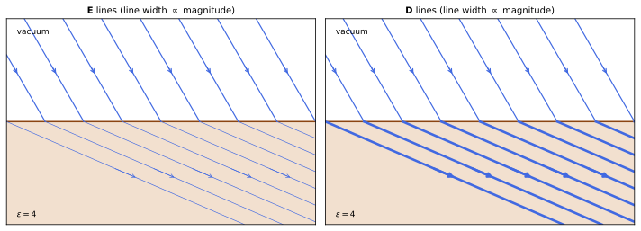
figures/emx_boundary.sage.
The definition gives the constitutive relations of an isotropic linear medium. Conduction is included through Ohm’s law.
Definition 18 (Linear medium) A linear isotropic medium has \mathbf P = \chi_e\mathbf E and \mathbf M = \chi_m\mathbf H, with electric and magnetic susceptibilities \chi_e, \chi_m, so that \mathbf D = \varepsilon\mathbf E, \qquad \mathbf B = \mu\mathbf H, \qquad \mathbf J_f = \sigma\mathbf E , \tag{31} with permittivity \varepsilon = 1 + \chi_e, permeability \mu = 1 + \chi_m and, for a conductor, conductivity \sigma (Ohm’s law). In SI units \mathbf D = \varepsilon_0\varepsilon_r\mathbf E and \mathbf B = \mu_0\mu_r\mathbf H, and the relative values \varepsilon_r, \mu_r are the \varepsilon, \mu used here. For time-dependent fields these relations hold frequency by frequency, with \varepsilon(\omega), \mu(\omega), \sigma(\omega) (Proposition 16) (Maggiore 2023, sec. 13.6).
Veriphy. Pending.
Lean. Pending.
Sage. Pending.
A charge inside a dielectric is screened by the polarisation it induces. Its field is reduced by the permittivity. The bound charge that gathers around the charge cancels part of it.
Example 333 (A charge in a dielectric) For a point charge q in a medium \varepsilon, \mathbf D = \frac{q\hat{\mathbf n}}{4\pi r^2} and \mathbf E = \frac{q\hat{\mathbf n}}{4\pi\varepsilon r^2}: the Coulomb force between two charges is reduced by \varepsilon, because a bound charge -\frac{\varepsilon - 1}\varepsilon q gathers around each charge (Exercise 342).
Water has a permittivity of about 80. The reduced Coulomb attraction explains why salts dissolve in it. The large permittivity comes from the permanent dipoles of the water molecules.
Example 334 (Why salt dissolves) The Coulomb energy of Na^+ and Cl^- at 0.28\,nm is 5.1\,eV in vacuum and 5.1/80 = 0.064\,eV in water, about 2.5k_BT at room temperature: thermal motion separates the ions. The large \varepsilon of water comes from the orientation of its polar molecules (Example 306).
Permittivities range from just above one for gases to thousands for special ceramics. A few values fix the scale. They show how much the polarisation of a material can change the field.
Example 335 (Typical permittivities and permeabilities) \varepsilon = 1.0006 for air, 2-4 for plastics, 4-10 for glasses, 80 for water and 10^3-10^4 for barium titanate; \mu - 1 is about 10^{-5} for paramagnets, -10^{-5} for diamagnets (Example 317), and \mu \sim 10^3-10^5 for soft iron, whose response is not linear at all.
Conductivities span more than twenty orders of magnitude. The example lists a few in SI units. No other common physical property of materials varies over such a wide range.
Example 336 (Conductivities) \sigma = 6\times10^7\,S/m for copper, 4\,S/m for sea water, 5.5\times10^{-6}\,S/m for pure water and 10^{-12}\,S/m or less for glass: the relaxation times \varepsilon/\sigma of Exercise 141 decide whether a material behaves as a conductor or as a dielectric on a given time scale.
A resistor between coaxial cylinders has a resistance set by the same logarithm as the capacitance. The two are related by the permittivity and the conductivity.
Example 337 (A coaxial resistor) A medium of conductivity \sigma between coaxial cylinders of radii a < b and length \ell carries the radial current I with J = \frac{I}{2\pi s\ell}, so E = J/\sigma and V = \frac{I}{2\pi\sigma\ell}\ln\frac ba: R = \frac{\ln(b/a)}{2\pi\sigma\ell}. With Example 54, RC = \varepsilon/\sigma (Macchi et al. 2023, Problem 4.3).
In a crystal the permittivity can depend on the direction of the field. Then \mathbf D and \mathbf E are not parallel.
Example 338 (Anisotropic media) In a crystal D_i = \varepsilon_{ij}E_j with a symmetric tensor \varepsilon_{ij}; along its principal axes the medium is linear with different permittivities, and a field at an angle produces a \mathbf D in a different direction. Waves polarised along different axes then travel at different speeds: birefringence (Macchi et al. 2023, Problem 11.6).
Ferromagnets are not linear. Their magnetisation depends on the history of the field. The magnetisation curve of a ferromagnet is a loop rather than a single line.
Example 339 (Hysteresis) In iron, \mathbf B(\mathbf H) follows a loop: increasing \mathbf H saturates \mathbf M, and decreasing it back to zero leaves a remanent magnetisation. The work per unit volume and cycle is \oint\mathbf H\cdot d\mathbf B, the area of the loop (Proposition 15), dissipated as heat in transformer cores.
The field equations in a homogeneous linear medium look like the vacuum ones. Only the constants change. The speed of waves in the medium is changed accordingly.
Example 340 (The equations in a homogeneous medium) With Equation 31 and constant \varepsilon, \mu: \nabla\cdot\mathbf E = \rho_f/\varepsilon, \nabla\times\mathbf B - \varepsilon\mu\partial_t\mathbf E = \mu\mathbf J_f, and the homogeneous equations unchanged. Statics in the medium is vacuum statics with q \to q/\varepsilon and I \to \mu I, and waves travel at 1/\sqrt{\varepsilon\mu} (Proposition 17).
A capacitor with a lossy dielectric discharges through it. The time constant is a property of the material alone. It does not depend on the shape or size of the capacitor.
Example 341 (A leaky capacitor) A capacitor filled with a medium of permittivity \varepsilon and conductivity \sigma loses its charge through the medium as Q(t) = Q_0e^{-t/RC} with RC = \varepsilon/\sigma for any shape of the electrodes (Exercise 341): the relaxation of Example 141 seen from outside (Macchi et al. 2023, Problem 4.7).
Magnetic media are linear too, except for the ferromagnets of Example 339. Their susceptibilities are much smaller than the electric ones, and they come with both signs.
Example 342 (Some permeabilities) The magnetic susceptibilities \chi_m = \mu - 1 of ordinary materials are tiny: about 2 imes10^{-5} for aluminium and 4 imes10^{-7} for air (paramagnets), about -10^{-5} for copper and -9 imes10^{-6} for water (diamagnets). Only ferromagnets such as soft iron reach effective values \mu of thousands, and for them \mu is the slope of a curve, not a constant (Maggiore 2023, sec. 13.6.3).
The exercises start with numbers for the coaxial resistor. The first one uses Sage. The resistance per unit length follows from the radial current between the conductors.
Exercise 340 (A coaxial resistor, in numbers) With Sage, find the resistance of a 1\,m long layer of sea water between cylinders of radii 1\,cm and 10\,cm, and the leakage resistance of 1\,km of coaxial cable with polyethylene (\sigma = 10^{-15}\,S/m) between radii 0.5 and 1.75\,mm.
R = \frac{\ln10}{2\pi\cdot4\cdot1} = 0.092\,\Omega for the sea water and 2.0\times10^{11}\,\Omega for the cable:
R = lambda a, b, s, L: log(b / a) / (2 * pi * s * L)
print('sea water, 1 m:', n(R(0.01, 0.1, 4, 1), digits=3), 'ohm')
print('polyethylene cable, 1 km:', n(R(0.5e-3, 1.75e-3, 1e-15, 1000), digits=3), 'ohm')Output:
sea water, 1 m: 0.0916 ohm
polyethylene cable, 1 km: 1.99e11 ohmVeriphy. Pending.
Lean. Pending.
Sage. Pending.
The product of resistance and capacitance between the same electrodes depends only on the medium. The second exercise proves it.
Exercise 341 (RC = \varepsilon/\sigma for any electrodes) Two electrodes are embedded in a homogeneous medium \varepsilon, \sigma. Show that RC = \varepsilon/\sigma, using Gauss’s law for \mathbf D and the current \oint\sigma\mathbf E\cdot d\mathbf S through a surface around one electrode.
With a potential difference V, the same field \mathbf E solves both problems. The charge is Q = \oint\varepsilon\mathbf E\cdot d\mathbf S and the current I = \oint\sigma\mathbf E\cdot d\mathbf S over the same surface, so \frac{C}{1/R} = \frac{Q/V}{I/V} = \frac\varepsilon\sigma.
Veriphy. Pending.
Lean. Pending.
Sage. Pending.
The bound charge around a charge in a dielectric partly cancels it. The third exercise computes it. The bound charge is found on the surface of a small sphere around the charge.
Exercise 342 (The screening charge) A point charge q sits at the centre of a dielectric ball \varepsilon of radius R. Find \mathbf P, the bound charge at the centre and on the surface, and the field outside.
\mathbf P = (1 - \frac1\varepsilon)\frac{q\hat{\mathbf n}}{4\pi r^2}, \nabla\cdot\mathbf P = 0 for r > 0, a bound point charge -(1 - \frac1\varepsilon)q at the centre and +(1 - \frac1\varepsilon)q on the surface; outside, the field of q, as Gauss’s law for the total charge requires.
Veriphy. Pending.
Lean. Pending.
Sage. Pending.
The rise of a liquid between capacitor plates measures its permittivity. The fourth exercise finds the height. The pull of the field on the liquid is balanced by its weight.
Exercise 343 (A liquid drawn into a capacitor) Vertical plates at distance d and voltage V dip into a liquid of permittivity \varepsilon and density \rho_m. With the force of Exercise 339, find the height to which the liquid rises, in SI units (Macchi et al. 2023, Problem 3.8).
The upward force per unit width is \frac{(\varepsilon - 1)\varepsilon_0V^2}{2d}, balanced by the weight \rho_mghd of the raised column per unit width: h = \frac{(\varepsilon - 1)\varepsilon_0V^2}{2\rho_mgd^2}.
Veriphy. Pending.
Lean. Pending.
Sage. Pending.
A leaky capacitor discharges with the material’s relaxation time. The fifth exercise checks it with Sage for a spherical capacitor.
Exercise 344 (A leaky spherical capacitor) With Sage, compute C and R for a spherical capacitor a < r < b filled with \varepsilon, \sigma, check RC = \varepsilon/\sigma, and solve R\dot Q = -Q/C (Macchi et al. 2023, Problem 4.7).
C = \frac{4\pi\varepsilon ab}{b - a}, R = \frac{b - a}{4\pi\sigma ab}, RC = \frac\varepsilon\sigma, and Q = Q_0e^{-\sigma t/\varepsilon}:
r, a, b, eps, sig, Q0 = var('r a b epsilon sigma Q0', domain='positive')
t = var('t'); assume(b > a)
V = integrate(1 / (4 * pi * eps * r^2), r, a, b) # potential difference per unit charge
C = (1 / V).simplify_full()
R = integrate(1 / (4 * pi * sig * r^2), r, a, b).simplify_full()
print('C =', C.factor(), '; R =', R.factor(), '; RC =', (R * C).simplify_full())
Q = function('Q')(t)
sol = desolve(R * diff(Q, t) + Q / C, Q, ics=[0, Q0], ivar=t)
print('Q(t) =', sol.simplify_full())Output:
C = -4*pi*a*b*epsilon/(a - b) ; R = -1/4*(a - b)/(pi*a*b*sigma) ; RC = epsilon/sigma
Q(t) = Q0*e^(-sigma*t/epsilon)Veriphy. Pending.
Lean. Pending.
Sage. Pending.
Two small spheres buried in a conducting medium form a resistor. The sixth exercise finds its resistance. The answer is independent of the distance when the spheres are far apart.
Exercise 345 (Resistance between buried spheres) Two metal spheres of radius a, far apart, are buried in soil of conductivity \sigma. Find the resistance between them (Macchi et al. 2023, Problem 4.4).
Around each sphere the current spreads radially: V_1 = \frac{I}{4\pi\sigma a} from one sphere to infinity, and the same for the other, so R = \frac{1}{2\pi\sigma a}, independent of the distance; this is why ground electrodes work.
Veriphy. Pending.
Lean. Pending.
Sage. Pending.
A conductor whose conductivity varies along the current accumulates charge. The seventh exercise finds it with Sage. The charge appears wherever the conductivity changes along the wire.
Exercise 346 (Charge in a non-uniform conductor) A steady current density J\mathbf e_x flows through a medium with permittivity \varepsilon and conductivity \sigma(x) = \sigma_0(1 + x/L). With Sage, find \mathbf E and the free charge density \rho_f = \nabla\cdot(\varepsilon\mathbf E) (Macchi et al. 2023, Problem 4.6).
E = \frac{J}{\sigma(x)} and \rho_f = \varepsilon J\frac{d}{dx}\frac1\sigma = -\frac{\varepsilon J}{\sigma_0L(1 + x/L)^2}: a steady current through a varying conductor needs a static charge to adjust the field:
x, J, eps, s0, L = var('x J epsilon sigma0 L')
E = J / (s0 * (1 + x / L))
rho = diff(eps * E, x).simplify_full()
print('E =', E, '; rho_f =', rho.factor())Output:
E = J/(sigma0*(x/L + 1)) ; rho_f = -J*L*epsilon/((L + x)^2*sigma0)Veriphy. Pending.
Lean. Pending.
Sage. Pending.
In an anisotropic medium the displacement turns away from the field. The eighth exercise computes the angle with Sage. The angle depends on the direction of the field relative to the axes of the crystal.
Exercise 347 (\mathbf D and \mathbf E at an angle) With Sage, for \varepsilon_{ij} = \operatorname{diag}(\varepsilon_1, \varepsilon_1, \varepsilon_2) and \mathbf E at angle \theta from the z axis in the xz plane, find the angle between \mathbf D and \mathbf E, and its largest value for calcite-like values \varepsilon_1 = 2.75, \varepsilon_2 = 2.21.
\tan\theta_D = \frac{\varepsilon_1}{\varepsilon_2}\tan\theta, and the difference \theta_D - \theta is largest at \tan\theta = \sqrt{\varepsilon_2/\varepsilon_1}, about 6.3^\circ:
th = var('th')
e1, e2 = 2.75, 2.21
thD = arctan(e1 / e2 * tan(th))
diffang = thD - th
th0 = arctan(sqrt(e2 / e1))
print('maximum at tan(theta) = sqrt(e2/e1): theta =', n(th0 * 180 / pi, digits=4), 'deg')
print('derivative there:', n(diff(diffang, th).subs({th: th0}), digits=3))
print('largest angle between D and E:', n(diffang.subs({th: th0}) * 180 / pi, digits=4), 'deg')Output:
maximum at tan(theta) = sqrt(e2/e1): theta = 41.88 deg
derivative there: 0.000
largest angle between D and E: 6.250 degVeriphy. Pending.
Lean. Pending.
Sage. Pending.
Dissolving a salt depends on the reduced binding energy. The ninth exercise compares it with thermal energy in two solvents.
Exercise 348 (Ions in water and in oil) Compare the Coulomb energy of an ion pair at 0.28\,nm with k_BT at 300\,K in water (\varepsilon = 80) and in an oil with \varepsilon = 2.
5.1\,eV/80 = 0.064\,eV \approx 2.5k_BT in water, but 2.6\,eV \approx 100k_BT in oil: salts dissolve in water and not in oil.
Veriphy. Pending.
Lean. Pending.
Sage. Pending.
The area of a hysteresis loop is the energy lost per cycle. The last exercise estimates the loss in a transformer.
Exercise 349 (Loss in a transformer core) A core of 10^{-3}\,m^3 of silicon steel has a loop area \oint H\,dB \approx 100\,J/m^3. Find the power lost at 50\,Hz, and explain why the loss is \oint\mathbf H\cdot d\mathbf B per cycle.
100 \times 10^{-3} \times 50 = 5\,W. The source supplies \mathbf H\cdot d\mathbf B per unit volume to change \mathbf B (Proposition 15); over a closed cycle the stored energy returns to its initial value, so the integral is dissipated.
Veriphy. Pending.
Lean. Pending.
Sage. Pending.
The energy of fields in matter includes the energy needed to polarise and magnetise the material. For linear media the result has the same form as in vacuum with \mathbf D and \mathbf H in place of the fields.
Proposition 15 (Energy in linear media) With Equation 30, \mathbf E\cdot\partial_t\mathbf D + \mathbf H\cdot\partial_t\mathbf B + \nabla\cdot(\mathbf E\times\mathbf H) = -\mathbf E\cdot\mathbf J_f: the work done on the free charges is supplied by the change \mathbf E\cdot\delta\mathbf D + \mathbf H\cdot\delta\mathbf B of the field energy and by the inflow of the Poynting vector \mathbf S = \mathbf E\times\mathbf H. For linear media with constant \varepsilon and \mu, u = \tfrac12(\mathbf E\cdot\mathbf D + \mathbf B\cdot\mathbf H), \qquad \partial_tu + \nabla\cdot\mathbf S = -\mathbf E\cdot\mathbf J_f , \tag{32} and the electrostatic energy of free charges is \frac12\int\rho_f\phi\,d^3x = \frac12\int\mathbf E\cdot\mathbf D\,d^3x. Proof. Dot Faraday’s law with \mathbf H and the Ampère-Maxwell law with \mathbf E and subtract, as in Proposition 4; for linear media \mathbf E\cdot\partial_t(\varepsilon\mathbf E) = \partial_t\frac12\varepsilon E^2. The static form follows from \rho_f = \nabla\cdot\mathbf D as in Proposition 2.
Veriphy. Pending.
Lean. Pending.
Sage. Pending.
A filled capacitor stores more energy at the same voltage. The example checks the formula of Proposition 15. The extra energy comes from the work done by the battery while charging it.
Example 343 (A filled capacitor) For plates of area A at distance d filled with \varepsilon, \frac12\int\mathbf E\cdot\mathbf D = \frac12\varepsilon\frac{V^2}{d^2}Ad = \frac12CV^2 with C = \varepsilon A/d: at fixed voltage the energy grows by \varepsilon, at fixed charge it falls by \varepsilon (Pierrus 2018, Question 9.8).
The energy of an electromagnet is stored mostly in its air gap. The field strength \mathbf H is much larger there.
Example 344 (Energy in the gap) In the electromagnet of Example 328, \mathbf B is the same in iron and gap, and u = \frac{B^2}{2\mu}: per unit volume the gap stores \mu times more energy than the iron, so a gap of width w holds most of the energy as long as w \gtrsim \ell/\mu.
The energy flux of a wave in a medium is \mathbf E\times\mathbf H. With |\mathbf H| = |\mathbf E|\sqrt{\varepsilon/\mu} it moves at the speed of the wave.
Example 345 (Energy of a wave in a medium) For a plane wave in a lossless medium (Proposition 17), |\mathbf B| = \sqrt{\varepsilon\mu}|\mathbf E|, so \frac12\mathbf E\cdot\mathbf D = \frac12\mathbf B\cdot\mathbf H, u = \varepsilon E^2 and |\mathbf S| = |\mathbf E||\mathbf H| = \sqrt{\varepsilon/\mu}E^2 = u/\sqrt{\varepsilon\mu}: the energy moves at the phase velocity 1/n.
Joule heating is the source term of Equation 32 in an ohmic medium. It is always positive. It describes the energy taken from the field and turned into heat.
Example 346 (Joule heating in a medium) With \mathbf J_f = \sigma\mathbf E, \mathbf E\cdot\mathbf J_f = \sigma E^2 \geq 0: a conducting medium always absorbs field energy, which is why waves in conductors are damped (Proposition 17).
The energy of a charge in a dielectric is lower than in vacuum. The difference attracts charges into regions of high permittivity.
Example 347 (The energy of an ion in a solvent) A charge q on a conducting sphere of radius a has W = \frac{q^2}{8\pi\varepsilon a} in a medium \varepsilon, less than in vacuum by \frac{q^2}{8\pi a}(1 - \frac1\varepsilon), the Born energy of solvation, a few eV for ions in water, which is why ions prefer water to oil.
The work to polarise a dielectric is part of the field energy. The example separates it. Part of the energy is stored in the stretched molecules rather than in the field.
Example 348 (The energy of polarisation) \frac12\mathbf E\cdot\mathbf D = \frac12E^2 + \frac12\mathbf E\cdot\mathbf P: the first term is the vacuum field energy, the second, \frac12\chi_eE^2, the energy stored in the polarised molecules, for instance the elastic energy \frac12\frac{p^2}\alpha of each induced dipole times their density (Pierrus 2018, Question 9.11).
The inductance of a coil grows with the permeability of its core. The energy formula shows it directly. The same current stores more energy when the core has a high permeability.
Example 349 (An inductor with a core) A long solenoid filled with a medium \mu has H = nI, B = \mu nI and W_B = \frac12\mu n^2I^2\cdot\pi a^2\ell = \frac12LI^2 with L = \mu n^2\pi a^2\ell: the core multiplies the inductance of Example 108 by \mu (Pierrus 2018, Question 9.22).
For dispersive media the energy density is not \frac12\varepsilon E^2. The example states the corrected form. The correction contains the derivative of the permittivity with respect to the frequency.
Example 350 (Energy in a dispersive medium) For a slowly modulated wave at frequency \omega in a transparent medium, the time-averaged energy density is \frac14\frac{d(\omega\varepsilon)}{d\omega}|\mathbf E_0|^2 + \frac14\frac{d(\omega\mu)}{d\omega}|\mathbf H_0|^2, which reduces to \frac14(\varepsilon|\mathbf E_0|^2 + \mu|\mathbf H_0|^2) without dispersion; for a free electron gas the extra term is the kinetic energy of the electrons (Macchi et al. 2023, Problem 11.2).
The force on a dielectric follows from the energy. A body of higher permittivity is pulled toward stronger fields. This is why a dielectric slab is drawn into a charged capacitor.
Example 351 (Dielectrics move toward strong fields) A small dielectric body in a field gains the energy -\frac12\int\mathbf E\cdot\mathbf P \approx -\frac12\alpha E^2 (for a polarisability \alpha), so it is pulled toward stronger fields with \mathbf F = \frac12\alpha\nabla E^2: optical tweezers trap small dielectric beads at the focus of a laser.
The energy flux in a medium is \mathbf E\times\mathbf H, and it need not flow inside the wires that guide it. A coaxial cable carrying a steady current shows this clearly.
Example 352 (Energy flow in a coaxial cable) A cable with inner radius a, outer radius b, a voltage V between the conductors and a current I has, between them, E = \frac{V}{r\ln(b/a)} radially and H = \frac{I}{2\pi r} azimuthally, so Equation 32 gives the flux S = \frac{VI}{2\pi r^2\ln(b/a)} along the cable. Its integral over the annulus is \int_a^b S\,2\pi r\,dr = VI, the power delivered to the load: the energy travels through the dielectric, not through the metal.
The exercises start with the energy of a capacitor with two layers. The first one checks Equation 32 against \frac12CV^2. The two layers act as two capacitors connected in series.
Exercise 350 (Energy of a layered capacitor) A capacitor of area A has two layers, thicknesses d_1, d_2 and permittivities \varepsilon_1, \varepsilon_2. With charge Q, compute \frac12\int\mathbf E\cdot\mathbf D and compare with \frac{Q^2}{2C}.
D = Q/A in both layers, E_i = D/\varepsilon_i, and \frac12\int ED = \frac{Q^2}{2A}(\frac{d_1}{\varepsilon_1} + \frac{d_2}{\varepsilon_2}) = \frac{Q^2}{2C} with \frac1C = \frac{d_1}{\varepsilon_1A} + \frac{d_2}{\varepsilon_2A}, capacitors in series.
Veriphy. Pending.
Lean. Pending.
Sage. Pending.
The Poynting theorem in a medium can be checked on a plane wave. The second exercise does it with Sage.
Exercise 351 (Poynting’s theorem for a wave in a medium) With Sage, take \mathbf E = E_0\cos(nkz - \omega t)\mathbf e_x with k = \omega, n = \sqrt{\varepsilon\mu} and \mathbf H = \sqrt{\varepsilon/\mu}\,\mathbf E\times direction, check Equation 30 without sources and Equation 32.
With \mathbf B = nE_0\cos(\dots)\mathbf e_y and \mathbf H = \mathbf B/\mu, all equations hold, and \partial_tu + \partial_zS_z = 0:
z, t, w, E0, eps, mu = var('z t omega E0 epsilon mu', domain='positive')
nn = sqrt(eps * mu)
Ex = E0 * cos(nn * w * z - w * t)
By = nn * Ex
Hy = By / mu; Dx = eps * Ex
print('Faraday (dz Ex = -dt By):', bool((diff(Ex, z) + diff(By, t)).simplify_full() == 0))
print('Ampere-Maxwell (-dz Hy = dt Dx):', bool((-diff(Hy, z) - diff(Dx, t)).simplify_full() == 0))
u = (Ex * Dx + By * Hy) / 2
S = Ex * Hy
print('du/dt + dS/dz =', (diff(u, t) + diff(S, z)).simplify_full())
print('S/u =', (S / u).simplify_full())Output:
Faraday (dz Ex = -dt By): True
Ampere-Maxwell (-dz Hy = dt Dx): True
du/dt + dS/dz = 0
S/u = sqrt(epsilon*mu)/(epsilon*mu)Veriphy. Pending.
Lean. Pending.
Sage. Pending.
The energy of a charged conductor in a dielectric is reduced. The third exercise checks the Born energy with Sage by integrating the field energy.
Exercise 352 (The Born energy) With Sage, integrate \frac12\mathbf E\cdot\mathbf D outside a charged sphere of radius a in a medium \varepsilon, and evaluate the solvation energy for q = e, a = 0.2\,nm, \varepsilon = 80 in eV.
W = \frac{q^2}{8\pi\varepsilon a}, and the energy gained on entering water is \frac{e^2}{8\pi\varepsilon_0a}(1 - \frac1{80}) = 3.6\,eV:
r, q, a, eps = var('r q a epsilon', domain='positive')
D = q / (4 * pi * r^2)
W = integrate(D^2 / (2 * eps) * 4 * pi * r^2, r, a, oo)
print('W =', W)
e = 1.602176634e-19; eps0 = 8.8541878128e-12
dW = e^2 / (8 * pi * eps0 * 0.2e-9) * (1 - 1 / 80)
print('energy gained entering water:', n(dW / e, digits=3), 'eV')Output:
W = 1/8*q^2/(pi*a*epsilon)
energy gained entering water: 3.55 eVVeriphy. Pending.
Lean. Pending.
Sage. Pending.
The energy of an electromagnet can be divided between the iron and the gap. The fourth exercise computes the shares with Sage.
Exercise 353 (Shares of the energy) For the electromagnet of Exercise 334 with w = 1\,mm, compute with Sage the energy in the gap and in the iron, with cross-section 10\,cm^2.
The ratio is \mu_rw/\ell = 1.6: with B = 0.62\,T, the gap holds 0.15\,J and the iron 0.095\,J:
mu0 = 4 * pi * 1e-7
N, I, mur, w, A = 400, 2, 1000, 1e-3, 10e-4
l = 2 * pi * 0.1 - w
B = mu0 * N * I / (w + l / mur)
Wg = B^2 / (2 * mu0) * A * w
Wi = B^2 / (2 * mu0 * mur) * A * l
print('B =', n(B, digits=3), 'T; gap:', n(Wg, digits=3), 'J; iron:', n(Wi, digits=3), 'J; ratio:', n(Wg / Wi, digits=3))Output:
B = 0.618 T; gap: 0.152 J; iron: 0.0953 J; ratio: 1.59Veriphy. Pending.
Lean. Pending.
Sage. Pending.
At fixed charge the force on a dielectric slab depends on its position. The fifth exercise compares it with the fixed-voltage result.
Exercise 354 (The slab at fixed charge) For the slab of Exercise 339 with the capacitor isolated at charge Q, find the force with rule (a) of Proposition 3, and check that it agrees with the fixed-voltage result at the same instant.
W_E = \frac{Q^2}{2C(x)} and F = -\partial_xW_E = \frac{Q^2C'}{2C^2} = \frac12V^2C' = \frac{(\varepsilon - 1)wV^2}{2d} with V = Q/C(x): the same force, although at fixed Q it decreases as the slab enters because V falls.
Veriphy. Pending.
Lean. Pending.
Sage. Pending.
The energy of polarisation can be computed from the molecules. The sixth exercise checks it for induced dipoles. The energy of an induced dipole is half that of a permanent one.
Exercise 355 (Energy of induced dipoles) A molecule with polarisability \alpha in a field E has the elastic energy \frac{p^2}{2\alpha} and the interaction energy -\mathbf p\cdot\mathbf E (Proposition 3). Show that the energy is -\frac12\alpha E^2 at equilibrium and that the elastic part per unit volume is \frac12\mathbf E\cdot\mathbf P (Pierrus 2018, Question 9.11).
Minimising \frac{p^2}{2\alpha} - pE gives p = \alpha E and energy -\frac12\alpha E^2; the elastic part is \frac12\alpha E^2 = \frac12pE, and with n molecules per unit volume, \frac12\mathbf E\cdot\mathbf P.
Veriphy. Pending.
Lean. Pending.
Sage. Pending.
The time-averaged energy density of a wave in a medium splits equally between electric and magnetic parts. The seventh exercise proves it.
Exercise 356 (Electric and magnetic energy in a wave) For a plane wave in a lossless medium show that \frac12\mathbf E\cdot\mathbf D = \frac12\mathbf B\cdot\mathbf H at every point and time.
\mathbf B = n\hat{\mathbf k}\times\mathbf E with n^2 = \varepsilon\mu, so \mathbf B\cdot\mathbf H = \frac{B^2}\mu = \frac{\varepsilon\mu E^2}\mu = \varepsilon E^2 = \mathbf E\cdot\mathbf D.
Veriphy. Pending.
Lean. Pending.
Sage. Pending.
Optical tweezers trap particles at the focus of a laser. The eighth exercise estimates the trapping depth. The depth must be larger than the thermal energy to hold the particle.
Exercise 357 (Optical tweezers) A glass bead of radius 0.5\,\mum (\varepsilon = 2.25), taken in vacuum for simplicity, has the polarisability 4\pi a^3\frac{\varepsilon - 1}{\varepsilon + 2} (Example 324). At the focus of a 10\,mW beam of waist 1\,\mum, estimate the depth \frac12\alpha\langle E^2\rangle of the trap in units of k_BT, in SI units.
\langle E^2\rangle = \frac{I}{c\varepsilon_0} with I = \frac{P}{\pi w^2} = 3.2\times10^9\,W/m^2, so \langle E^2\rangle = 1.2\times10^{12}\,V^2/m^2; \alpha/\varepsilon_0 = 4\pi(0.5\times10^{-6})^3\cdot0.29 = 4.6\times10^{-19}\,m^3, and the depth \frac12\alpha\langle E^2\rangle \approx 2.4\times10^{-18}\,J \approx 600k_BT: enough to hold the bead.
Veriphy. Pending.
Lean. Pending.
Sage. Pending.
The static energy in a medium can be written with the free charges only. The ninth exercise derives it. The derivation uses the potential and Gauss’s law for the displacement.
Exercise 358 (Energy from the free charges) Show that \frac12\int\mathbf E\cdot\mathbf D\,d^3x = \frac12\int\rho_f\phi\,d^3x for localised free charges in a linear medium, and that this is the work done in assembling the free charges.
\mathbf E\cdot\mathbf D = -\nabla\phi\cdot\mathbf D = -\nabla\cdot(\phi\mathbf D) + \phi\rho_f, and the surface term vanishes at infinity. Adding \delta\rho_f at potential \phi costs \int\phi\delta\rho_f = \int\mathbf E\cdot\delta\mathbf D, which integrates to \frac12\int\mathbf E\cdot\mathbf D for a linear medium.
Veriphy. Pending.
Lean. Pending.
Sage. Pending.
A diamagnet is pushed out of strong magnetic fields. The last exercise relates the force to the energy density. The force points toward the region of weaker field.
Exercise 359 (Force on a diamagnet) A small body of volume V and susceptibility \chi_m, |\chi_m| \ll 1, sits in a field \mathbf B. Show that its energy is -\frac{\chi_m}{2}VB^2 (Heaviside- Lorentz units) and that a diamagnet (\chi_m < 0) is pushed toward weaker fields.
It acquires \mathbf m = \chi_mV\mathbf B, and as for induced electric dipoles the energy is -\frac12\mathbf m\cdot\mathbf B = -\frac{\chi_m}2VB^2. For \chi_m < 0 this is positive and grows with B^2, so the force -\nabla of it points toward weaker fields (Exercise 327).
Veriphy. Pending.
Lean. Pending.
Sage. Pending.
Frequency-dependent response
A material does not respond instantly. Its polarisation at a given time depends on the field at earlier times, and the response to an oscillating field depends on its frequency; causality alone constrains this dependence strongly.
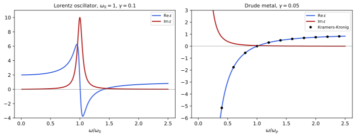
figures/emx_dispersion.sage.
The proposition expresses causality in the frequency domain. The real and imaginary parts of the response are not independent.
Proposition 16 (Kramers-Kronig relations) Let the polarisation respond causally and linearly, \mathbf P(t) = \int_0^\infty\chi(\tau)\mathbf E(t - \tau)\,d\tau with a real, integrable \chi, and set \varepsilon(\omega) = 1 + \hat\chi(\omega), \hat\chi(\omega) = \int_0^\infty\chi(\tau)e^{i\omega\tau}d\tau, for fields \propto e^{-i\omega t}. Then \hat\chi extends to a holomorphic function on \operatorname{Im}\omega > 0 (Definition 8 of Complex analysis), tending to 0 as |\omega| \to \infty, with \hat\chi(-\omega) = \overline{\hat\chi(\omega)} for real \omega, and \operatorname{Re}\varepsilon(\omega) - 1 = \frac2\pi\,\mathrm{P}\!\!\int_0^\infty\frac{\omega'\operatorname{Im}\varepsilon(\omega')}{\omega'^2 - \omega^2}d\omega', \qquad \operatorname{Im}\varepsilon(\omega) = -\frac{2\omega}\pi\,\mathrm{P}\!\!\int_0^\infty\frac{\operatorname{Re}\varepsilon(\omega') - 1}{\omega'^2 - \omega^2}d\omega' , \tag{33} where \mathrm P is the principal value (the limit of the integral with a symmetric interval around the pole removed). For a conductor, \operatorname{Im}\varepsilon has an extra \sigma_0/\omega at low frequency, which is removed before applying the second relation. Proof. For \operatorname{Im}\omega > 0 the factor e^{i\omega\tau} decays, so the integral converges and is holomorphic. Cauchy’s theorem (Theorem 2 of Complex analysis) for \hat\chi(\omega')/(\omega' - \omega) on the real line, closed by a large half-circle where \hat\chi \to 0 and indented by a small half-circle around \omega, gives \hat\chi(\omega) = \frac1{\pi i}\mathrm P\int_{-\infty}^\infty\frac{\hat\chi(\omega')}{\omega' - \omega}d\omega'; taking real and imaginary parts and using the symmetry under \omega \to -\omega gives Equation 33.
Veriphy. Pending.
Lean. Pending.
Sage. Pending.
The simplest causal response is an exponential relaxation. Its susceptibility is the Debye form. It describes the reorientation of the permanent dipoles of polar liquids such as water.
Example 353 (Debye relaxation) For \chi(\tau) = \frac{\Delta\varepsilon}{\tau_0}e^{-\tau/\tau_0}, \hat\chi(\omega) = \frac{\Delta\varepsilon}{1 - i\omega\tau_0}, with a pole at \omega = -i/\tau_0 in the lower half plane, as causality requires. It describes the orientational polarisation of polar liquids: water has \tau_0 \approx 8\,ps and \Delta\varepsilon \approx 75, which is why microwave ovens at 2.45\,GHz heat water (Exercise 360).
A static permittivity larger than one requires absorption at some frequency. The first relation at \omega = 0 makes it a sum rule.
Example 354 (No dispersion without absorption) At \omega = 0, Equation 33 gives \varepsilon(0) - 1 = \frac2\pi\int_0^\infty\frac{\operatorname{Im}\varepsilon(\omega')}{\omega'}d\omega': a medium that polarises in static fields must absorb somewhere in the spectrum, and a material transparent at all frequencies would have \varepsilon = 1.
At very high frequencies every material behaves as a gas of free electrons. The second relation then gives a sum rule on the absorption.
Example 355 (The f-sum rule) For \omega above every resonance, \varepsilon(\omega) \approx 1 - \frac{\omega_p^2}{\omega^2} (Definition 19), and comparing with the first relation for large \omega gives \int_0^\infty\omega'\operatorname{Im}\varepsilon(\omega')\,d\omega' = \frac\pi2\omega_p^2, with \omega_p^2 = ne^2/m for all the electrons: the total absorption measures the electron density (Maggiore 2023, sec. 14.2).
The reality of the response in time gives a symmetry in frequency. It is what allows the integrals over negative frequencies to be folded.
Example 356 (The reality condition) Since \chi(\tau) is real, \hat\chi(-\omega) = \int\chi e^{-i\omega\tau} = \overline{\hat\chi(\omega)}: \operatorname{Re}\varepsilon is even and \operatorname{Im}\varepsilon is odd in \omega, which turns the integrals over (-\infty, \infty) of the proof into those over (0, \infty) of Equation 33.
The imaginary part of the permittivity measures absorption. For passive materials it is positive at positive frequency. Such materials take energy from the wave and never give it back.
Example 357 (Absorption has a sign) The average power absorbed per unit volume from a field \operatorname{Re}(\mathbf E_0e^{-i\omega t}) is \langle\mathbf E\cdot\partial_t\mathbf P\rangle = \frac\omega2\operatorname{Im}\varepsilon(\omega)|\mathbf E_0|^2 (Exercise 363), so a passive material, which cannot give energy to the field, has \operatorname{Im}\varepsilon(\omega) \geq 0 for \omega > 0.
A conductor responds to a static field with a current, not a polarisation. Its permittivity has a pole at zero frequency.
Example 358 (The pole of a conductor) With \mathbf J_f = \sigma(\omega)\mathbf E, the current can be counted as a polarisation current -i\omega\mathbf P, so the effective permittivity is \varepsilon(\omega) + \frac{i\sigma(\omega)}\omega, which behaves as \frac{i\sigma_0}\omega near \omega = 0; the pole sits on the real axis and must be treated separately in the Kramers-Kronig relations (Maggiore 2023, sec. 14.1).
Causality in time and analyticity in frequency are two forms of the same statement. The example shows the response to a short pulse.
Example 359 (The response to a short pulse) A field pulse \mathbf E = \mathbf E_0\delta(t) produces \mathbf P(t) = \chi(t)\mathbf E_0 (Definition 24 of Differential equations): \chi is the impulse response, zero before the pulse. For a Lorentz oscillator it is a damped oscillation \frac{\omega_p^2}{\tilde\omega}e^{-\gamma t/2}\sin\tilde\omega t with \tilde\omega = \sqrt{\omega_0^2 - \gamma^2/4} (Exercise 362).
The Kramers-Kronig relations can be used to obtain one part of \varepsilon from measurements of the other. Spectroscopy does this routinely.
Example 360 (From absorption to refraction) Measuring the absorption spectrum \operatorname{Im}\varepsilon(\omega) over a wide range and inserting it into the first relation gives the refractive index at any frequency; for the Drude metal of Figure 16 the real part computed this way coincides with the model’s.
Near a narrow absorption line the real part of the permittivity has a characteristic shape. Kramers-Kronig ties it to the line.
Example 361 (Dispersion near a line) A narrow absorption line \operatorname{Im}\varepsilon \approx A\pi\delta(\omega - \omega_0) gives \operatorname{Re}\varepsilon - 1 \approx \frac{2A\omega_0}{\omega_0^2 - \omega^2}: the index rises toward the line from below (normal dispersion) and drops above it, the shape of Figure 16 away from the resonance (Maggiore 2023, sec. 14.3).
A response that started before its cause would violate the analyticity. The last example shows how. The susceptibility then has poles in the upper half of the complex plane.
Example 362 (An acausal response) \chi(\tau) = e^{-|\tau|/\tau_0}, symmetric in time, has \hat\chi(\omega) = \frac{2\tau_0}{1 + \omega^2\tau_0^2}, with poles at \omega = \pm i/\tau_0, one in the upper half plane: the proof fails, and indeed \operatorname{Im}\hat\chi = 0 while \operatorname{Re}\hat\chi \neq 0, which Equation 33 forbids.
The exercises start with the Debye response. The first one computes it with Sage and checks the relations numerically. The integrals are computed numerically and compared with the closed forms.
Exercise 360 (Debye relaxation, checked) With Sage, compute \hat\chi(\omega) for \chi(\tau) = \frac{\Delta\varepsilon}{\tau_0}e^{-\tau/\tau_0}, its real and imaginary parts, and check the first Kramers-Kronig relation numerically at \omega\tau_0 = 0.5; find the frequency of maximal absorption of water.
\operatorname{Re}\hat\chi = \frac{\Delta\varepsilon}{1 + \omega^2\tau_0^2}, \operatorname{Im}\hat\chi = \frac{\Delta\varepsilon\omega\tau_0}{1 + \omega^2\tau_0^2}, maximal at \omega = 1/\tau_0, f = 20\,GHz for water; the principal-value integral reproduces the real part:
tau, w, de = var('tau omega Delta', domain='positive')
chi = integrate(de * exp(-tau) * exp(I * w * tau), tau, 0, oo)
chi = chi.simplify_full()
print('chi(omega) =', chi)
re_ = chi.real().simplify_full(); im_ = chi.imag().simplify_full()
print('Re =', re_, '; Im =', im_)
print('Im maximal where d/dw Im = 0:', solve(diff(im_, w) == 0, w))
# first relation: Re chi(w0) = (2/pi) P int_0^oo x Im chi(x)/(x^2 - w0^2) dx, principal value removed by subtraction
g = lambda x: x * x / (1 + x^2)
w0 = 0.5
f = lambda x: (g(x) - g(w0)) / (x^2 - w0^2)
val = 2 / pi * (numerical_integral(f, 0, w0)[0] + numerical_integral(f, w0, Infinity)[0])
print('Kramers-Kronig at omega tau0 = 0.5:', n(val, digits=8), '; exact Re/Delta:', n(1 / (1 + w0^2), digits=8))
tau0 = 8e-12
print('water, tau0 = 8 ps: f_max = 1/(2 pi tau0) =', n(1 / (2 * pi * tau0) / 1e9, digits=3), 'GHz')Output:
chi(omega) = -Delta/(I*omega - 1)
Re = Delta/(omega^2 + 1) ; Im = Delta*omega/(omega^2 + 1)
Im maximal where d/dw Im = 0: [
omega == 1
]
Kramers-Kronig at omega tau0 = 0.5: 0.80000000 ; exact Re/Delta: 0.80000000
water, tau0 = 8 ps: f_max = 1/(2 pi tau0) = 19.9 GHzVeriphy. Pending.
Lean. Pending.
Sage. Pending.
The Lorentz oscillator satisfies the relations. The second exercise checks the second relation with Sage. The real part is reconstructed from the imaginary part at several frequencies.
Exercise 361 (The Lorentz oscillator, checked) With Sage, for \varepsilon = 1 + \frac{1}{1 - \omega^2 - 0.2i\omega}, compute the principal-value integral of the second relation numerically at \omega = 0.5 and \omega = 2 and compare with \operatorname{Im}\varepsilon.
The integrals agree with \operatorname{Im}\varepsilon to numerical accuracy:
def eps(x):
return 1 + 1 / (1 - x^2 - 0.2 * I * x)
def reps1(x):
return real_part(CDF(eps(x))) - 1
for w0 in [0.5, 2.0]:
f = lambda x: (reps1(x) - reps1(w0)) / (x^2 - w0^2)
val = -2 * w0 / pi * (numerical_integral(f, 0, w0)[0] + numerical_integral(f, w0, Infinity)[0])
print('omega =', w0, ': integral =', n(val, digits=8), '; Im eps =', n(imag_part(CDF(eps(w0))), digits=8))Output:
omega = 0.500000000000000 : integral = 0.17467249 ; Im eps = 0.17467249
omega = 2.00000000000000 : integral = 0.043668122 ; Im eps = 0.043668122Veriphy. Pending.
Lean. Pending.
Sage. Pending.
The impulse response of the Lorentz oscillator is a damped oscillation. The third exercise derives it with Sage. The impulse response vanishes before the impulse, as causality requires.
Exercise 362 (The impulse response) With Sage, solve \ddot x + \gamma\dot x + \omega_0^2x = \frac{e}{m}E_0\delta(t) for x = 0 before the pulse, deduce \chi(t) for n electrons per unit volume, and check that its transform is \frac{\omega_p^2}{\omega_0^2 - \omega^2 - i\gamma\omega}.
The pulse gives \dot x(0^+) = eE_0/m, so x = \frac{eE_0}{m\tilde\omega}e^{-\gamma t/2}\sin\tilde\omega t, and \chi = \frac{ne^2}{m\tilde\omega}e^{-\gamma t/2}\sin \tilde\omega t; its transform is the stated function:
t, w0, g, w, A = var('t omega0 gamma omega A', domain='positive')
wt = sqrt(w0^2 - g^2 / 4)
x = A / wt * exp(-g * t / 2) * sin(wt * t) # A = e E0/m
print('equation of motion satisfied for t > 0:', bool((diff(x, t, 2) + g * diff(x, t) + w0^2 * x).simplify_full() == 0))
print('x(0) =', x.subs(t=0), "; x'(0) =", diff(x, t).subs(t=0).simplify_full())
chi = exp(-g * t / 2) * sin(wt * t) / wt # chi(t)/omega_p^2
assume(4 * w0^2 - g^2 > 0)
F = integrate(chi * exp(I * w * t), t, 0, oo)
print('transform times omega_p^2 equals omega_p^2/(omega0^2 - omega^2 - i gamma omega):', bool((F - 1 / (w0^2 - w^2 - I * g * w)).simplify_full() == 0))Output:
equation of motion satisfied for t > 0: True
x(0) = 0 ; x'(0) = A
transform times omega_p^2 equals omega_p^2/(omega0^2 - omega^2 - i gamma omega): TrueVeriphy. Pending.
Lean. Pending.
Sage. Pending.
The absorbed power is given by the imaginary part. The fourth exercise derives it. The answer is the cycle average of the work done by the field on the charges.
Exercise 363 (Absorbed power) For \mathbf E = \operatorname{Re}(\mathbf E_0e^{-i\omega t}) and \mathbf P = \operatorname{Re}(\hat\chi\mathbf E_0e^{-i\omega t}), show that \langle\mathbf E\cdot\partial_t\mathbf P\rangle = \frac\omega2\operatorname{Im}\hat\chi|\mathbf E_0|^2.
\partial_t\mathbf P = \operatorname{Re}(-i\omega\hat\chi\mathbf E_0e^{-i\omega t}), and Example 226 gives \frac12\operatorname{Re}(\overline{\mathbf E_0}\cdot(-i\omega\hat\chi)\mathbf E_0) = \frac\omega2\operatorname{Im}\hat\chi|\mathbf E_0|^2.
Veriphy. Pending.
Lean. Pending.
Sage. Pending.
The f-sum rule can be checked on a single oscillator. The fifth exercise does it with Sage. The integral of the absorption weighted by the frequency is fixed by the plasma frequency alone.
Exercise 364 (The sum rule for one oscillator) With Sage, compute \int_0^\infty\omega\operatorname{Im}\varepsilon(\omega)\,d\omega for \varepsilon = 1 + \frac{\omega_p^2}{\omega_0^2 - \omega^2 - i\gamma\omega} and compare with \frac\pi2\omega_p^2.
The integral is \frac\pi2\omega_p^2 for any \omega_0 and \gamma:
for (w0, g) in [(1, 0.1), (1, 1), (2, 0.5), (0.5, 3)]:
f = lambda x: x * (g * x / ((w0^2 - x^2)^2 + g^2 * x^2)) # omega Im eps / omega_p^2
val = numerical_integral(f, 0, Infinity)[0]
print('omega0 =', w0, ', gamma =', g, ': integral/omega_p^2 =', n(val, digits=8), '; pi/2 =', n(pi / 2, digits=8))Output:
omega0 = 1 , gamma = 0.100000000000000 : integral/omega_p^2 = 1.5707963 ; pi/2 = 1.5707963
omega0 = 1 , gamma = 1 : integral/omega_p^2 = 1.5707963 ; pi/2 = 1.5707963
omega0 = 2 , gamma = 0.500000000000000 : integral/omega_p^2 = 1.5707963 ; pi/2 = 1.5707963
omega0 = 0.500000000000000 , gamma = 3 : integral/omega_p^2 = 1.5707963 ; pi/2 = 1.5707963Veriphy. Pending.
Lean. Pending.
Sage. Pending.
The static sum rule relates the static permittivity to absorption. The sixth exercise checks it for the oscillator. It follows from the first relation evaluated at zero frequency.
Exercise 365 (The static sum rule) Show that \frac2\pi\int_0^\infty\frac{\operatorname{Im}\varepsilon(\omega)}\omega d\omega = \frac{\omega_p^2}{\omega_0^2} for the Lorentz oscillator, which is \varepsilon(0) - 1.
\frac{\operatorname{Im}\varepsilon}\omega = \frac{\omega_p^2\gamma}{(\omega_0^2 - \omega^2)^2 + \gamma^2\omega^2}, and the integral over (0, \infty) is \frac{\pi\omega_p^2}{2\omega_0^2} by residues (Theorem 4 of Complex analysis), giving \frac{\omega_p^2}{\omega_0^2} = \varepsilon(0) - 1.
Veriphy. Pending.
Lean. Pending.
Sage. Pending.
The reality condition follows directly from the definition. The seventh exercise asks for it and for its consequence on the refractive index.
Exercise 366 (Symmetry of the permittivity) Prove \varepsilon(-\omega) = \overline{\varepsilon(\omega)} for real \omega, and deduce that the refractive index n(\omega) = \sqrt{\varepsilon(\omega)} has an even real part and an odd imaginary part.
The reality of \chi gives the first. With the branch of the square root continuous from \omega = 0, n(-\omega) = \overline{n(\omega)}, which is the second statement.
Veriphy. Pending.
Lean. Pending.
Sage. Pending.
The Hilbert transform pairs of the relations can be checked on simple functions. The eighth exercise uses a pole. The transform of a simple pole below the real axis is known in closed form.
Exercise 367 (A single pole) Show that f(\omega) = \frac{1}{\omega_1 - \omega - i\Gamma}, \Gamma > 0, is holomorphic in the upper half plane, and verify that its real and imaginary parts are related by f(\omega) = \frac1{\pi i}\mathrm P\int\frac{f(\omega')}{\omega' - \omega}d\omega' at \omega = \omega_1.
The pole is at \omega = \omega_1 - i\Gamma, in the lower half plane. At \omega = \omega_1, f = \frac{i}\Gamma, and \mathrm P\int\frac{d\omega'}{(\omega_1 - \omega' - i\Gamma)(\omega' - \omega_1)} = \mathrm P\int\frac{-du}{u(u + i\Gamma)} = -\frac\pi\Gamma (with u = \omega' - \omega_1, the odd part dropping out), so \frac1{\pi i}(-\frac\pi\Gamma) = \frac i\Gamma.
Veriphy. Pending.
Lean. Pending.
Sage. Pending.
Microwave heating rests on the Debye absorption of water. The ninth exercise estimates the absorbed power. The oven frequency lies well below the peak of the water absorption.
Exercise 368 (Microwave heating) With \Delta\varepsilon = 75 and \tau_0 = 8\,ps, compute \operatorname{Im}\varepsilon at 2.45\,GHz and the power absorbed per unit volume in a field of amplitude 10^3\,V/m, in SI units (\frac12\omega\varepsilon_0\operatorname{Im}\varepsilon E_0^2).
\omega\tau_0 = 0.12, \operatorname{Im}\varepsilon = \frac{75\cdot0.12}{1.015} = 9.1, and the absorbed power is \frac12\cdot1.54\times10^{10}\cdot8.85\times10^{-12}\cdot9.1\cdot10^6 \approx 6\times10^5\,W/m^3: a glass of water absorbs tens of watts.
Veriphy. Pending.
Lean. Pending.
Sage. Pending.
The relations fail for an acausal response. The last exercise checks it on the example. The real part computed from the relations differs from the true one.
Exercise 369 (The relations need causality) For \hat\chi = \frac{2\tau_0}{1 + \omega^2\tau_0^2} (Example 362), compute the right-hand side of the second relation and show that it is not zero.
With \operatorname{Re}\hat\chi even and positive, -\frac{2\omega}\pi\mathrm P\int_0^\infty\frac{\operatorname{Re}\hat\chi(\omega')}{\omega'^2 - \omega^2}d\omega' = \frac{2\omega\tau_0^2}{1 + \omega^2\tau_0^2} \neq 0 by residues, while \operatorname{Im}\hat\chi = 0: the relation fails.
Veriphy. Pending.
Lean. Pending.
Sage. Pending.
The simplest microscopic model of the response treats every electron as a damped harmonic oscillator driven by the field. It reproduces dielectrics and, with zero restoring force, metals.
Definition 19 (Drude-Lorentz model) In the Drude-Lorentz model the electrons of a medium, n per unit volume, are oscillators with resonance frequencies \omega_j, damping rates \gamma_j and fractions f_j (\sum_jf_j = 1), obeying m\ddot{\mathbf x} = -e\mathbf E - m\omega_j^2\mathbf x - m\gamma_j\dot{\mathbf x}; then \varepsilon(\omega) = 1 + \omega_p^2\sum_j\frac{f_j}{\omega_j^2 - \omega^2 - i\gamma_j\omega}, \qquad \omega_p^2 = \frac{ne^2}m , \tag{34} with the plasma frequency \omega_p (\omega_p^2 = ne^2/\varepsilon_0m in SI units). The Drude model of a metal is the case of free electrons, \omega_j = 0, \gamma_j = \gamma, equivalent to the conductivity \sigma(\omega) = \frac{ne^2}{m(\gamma - i\omega)} and \varepsilon(\omega) = 1 - \frac{\omega_p^2}{\omega(\omega + i\gamma)} (Maggiore 2023, secs. 14.3–14.5; Pierrus 2018, Question 10.8).
Veriphy. Pending.
Lean. Pending.
Sage. Pending.
A single resonance gives the typical shape of a dielectric. Below it the index rises with frequency, across it the material absorbs.
Example 363 (One resonance) For one oscillator, \operatorname{Re}\varepsilon = 1 + \frac{\omega_p^2(\omega_0^2 - \omega^2)}{(\omega_0^2 - \omega^2)^2 + \gamma^2\omega^2} rises with \omega below \omega_0 (normal dispersion), falls across the resonance (anomalous dispersion), and \operatorname{Im}\varepsilon is a peak of width \gamma at \omega_0 (Figure 16).
Glass is transparent in the visible because its resonances are in the ultraviolet. Expanding the model gives Cauchy’s empirical formula.
Example 364 (Cauchy’s formula) For \omega \ll \omega_0 and negligible damping, n^2 = \varepsilon \approx 1 + \frac{\omega_p^2}{\omega_0^2}\bigl(1 + \frac{\omega^2}{\omega_0^2}\bigr): the index grows slowly with frequency, so blue light is refracted more than red, which is why a prism separates colours (Exercise 373).
Copper is described well by the Drude model up to the visible. Its parameters follow from the electron density and the static conductivity.
Example 365 (Drude parameters of copper) With n = 8.5\times10^{28}\,m^{-3}, \omega_p = \sqrt{ne^2/\varepsilon_0m} = 1.6\times10^{16}\,s^{-1} (\hbar\omega_p = 11\,eV), and \sigma_0 = 6\times10^7\,S/m gives \gamma = \frac{ne^2}{m\sigma_0} = 4\times10^{13}\,s^{-1}, a collision time of 25\,fs (Pierrus 2018, Question 10.8).
The ionosphere is a dilute plasma. Its plasma frequency separates the radio waves it reflects from those it lets through.
Example 366 (The ionosphere) With n \approx 10^{12}\,m^{-3} electrons, f_p = \frac{\omega_p}{2\pi} \approx 9\,MHz: short waves below this frequency are reflected and travel around the Earth, while FM and satellite signals pass through (Macchi et al. 2023, Problem 11.14).
The Drude model gives the static conductivity and its frequency dependence. At low frequency the metal is a resistor. At high frequency the inertia of the electrons dominates.
Example 367 (The Drude conductivity) From m\dot{\mathbf v} = -e\mathbf E - m\gamma\mathbf v with \mathbf J = -ne\mathbf v, \sigma(\omega) = \frac{ne^2}{m(\gamma - i\omega)}: real and constant, \sigma_0 = \frac{ne^2}{m\gamma}, for \omega \ll \gamma, and imaginary (inductive) for \omega \gg \gamma, where the electrons respond by their inertia (Maggiore 2023, sec. 14.4).
Above its plasma frequency a metal becomes transparent. The alkali metals let ultraviolet light through. The threshold is set by the density of the conduction electrons.
Example 368 (Ultraviolet transparency of metals) For \omega \gg \gamma, \varepsilon \approx 1 - \frac{\omega_p^2}{\omega^2}, negative below \omega_p and positive above. Sodium, with one free electron per atom (n = 2.65\times10^{28}\,m^{-3}), has \lambda_p = 2\pi c/\omega_p = 205\,nm, and indeed becomes transparent below about 210\,nm (Maggiore 2023, sec. 14.5).
At very high frequency all electrons behave as free. The permittivity tends to one from below. This is why the refractive index of matter for X-rays is slightly below one.
Example 369 (X-rays) For \omega far above every resonance, \varepsilon \approx 1 - \frac{\omega_p^2}{\omega^2} with all Z electrons per atom in n: the index is slightly below one, 1 - n \sim 10^{-6} for X-rays in glass, which allows total external reflection of X-rays at grazing incidence.
The fractions f_j add up to one. This is the classical version of the oscillator-strength sum rule. It expresses that each electron contributes once to the total response.
Example 370 (Oscillator strengths) With \sum_jf_j = 1, Equation 34 satisfies the f-sum rule of Example 355 for every choice of resonances: the total absorption depends only on n. In quantum mechanics the f_j become transition strengths, still summing to the number of electrons.
A dilute gas has \varepsilon close to one. Its refractive index differs from one by half the susceptibility. The resulting index is close to the measured values for air and other gases.
Example 371 (The index of a gas) For |\chi| \ll 1, n = \sqrt{1 + \chi} \approx 1 + \frac\chi2: air at visible frequencies has n - 1 = 2.9\times10^{-4}, from oxygen and nitrogen resonances in the far ultraviolet; the index varies with pressure through n.
The Drude-Lorentz model includes the static polarisability. At zero frequency each oscillator gives the polarisability of Example 305. The static limit therefore agrees with the polarisability found earlier.
Example 372 (The static limit) At \omega = 0, Equation 34 gives \varepsilon(0) = 1 + \frac{ne^2}m\sum\frac{f_j}{\omega_j^2}, the polarisability \alpha = \frac{e^2}{m\omega_0^2} per electron with one resonance; the cloud model of Exercise 316 has \omega_0^2 = \frac{e^2}{4\pi ma^3}, the same.
The exercises start with the Lorentz oscillator. The first one derives Equation 34. The derivation solves the equation of motion of a bound electron in an oscillating field.
Exercise 370 (Deriving the permittivity) Solve m\ddot{\mathbf x} = -e\mathbf E_0e^{-i\omega t} - m\omega_0^2\mathbf x - m\gamma\dot{\mathbf x} in the steady state, and deduce \mathbf P = -ne\mathbf x and \varepsilon(\omega).
\mathbf x = \frac{-e\mathbf E_0/m}{\omega_0^2 - \omega^2 - i\gamma\omega}e^{-i\omega t}, so \mathbf P = \frac{ne^2/m}{\omega_0^2 - \omega^2 - i\gamma\omega}\mathbf E and \varepsilon = 1 + \frac{\omega_p^2}{\omega_0^2 - \omega^2 - i\gamma\omega}.
Veriphy. Pending.
Lean. Pending.
Sage. Pending.
Copper’s Drude parameters can be computed from tables. The second exercise does it with Sage. The density of conduction electrons and the conductivity are the only inputs.
Exercise 371 (Copper in numbers) With Sage, compute \omega_p, \hbar\omega_p in eV, \gamma from \sigma_0 = 5.96\times10^7\,S/m, and \operatorname{Re}\varepsilon and \operatorname{Im}\varepsilon at \lambda = 600\,nm in the Drude model, for n = 8.5\times10^{28}\,m^{-3}.
\omega_p = 1.64\times10^{16}\,s^{-1}, 10.8\,eV, \gamma = 4.0\times10^{13}\,s^{-1}, and at 600\,nm \varepsilon \approx -26 + 0.35i; the real copper has interband absorption that the model misses, which gives it its colour:
e = 1.602176634e-19; me = 9.1093837e-31; eps0 = 8.8541878128e-12; hbar = 1.054571817e-34; c = 299792458
N = 8.5e28; s0 = 5.96e7
wp = sqrt(N * e^2 / (eps0 * me))
g = eps0 * wp^2 / s0
print('omega_p =', n(wp, digits=3), '1/s; hbar omega_p =', n(hbar * wp / e, digits=3), 'eV; gamma =', n(g, digits=3), '1/s')
w = 2 * pi * c / 600e-9
eps = 1 - wp^2 / (w * (w + I * g))
print('omega =', n(w, digits=3), '1/s; eps =', CDF(eps))Output:
omega_p = 1.64e16 1/s; hbar omega_p = 10.8 eV; gamma = 4.02e13 1/s
omega = 3.14e15 1/s; eps = -26.44303769580224 + 0.35130741715649483*IVeriphy. Pending.
Lean. Pending.
Sage. Pending.
The plasma frequency of the ionosphere varies with height and with the time of day. The third exercise computes it with Sage.
Exercise 372 (Plasma frequencies) With Sage, compute f_p for electron densities 10^{10}, 10^{12} and 10^{29}\,m^{-3}, and the corresponding wavelengths (Macchi et al. 2023, Problem 11.14).
f_p = 0.90\,MHz, 9.0\,MHz and 2.8\times10^{15}\,Hz; \lambda_p = 330\,m, 33\,m and 106\,nm:
e = 1.602176634e-19; me = 9.1093837e-31; eps0 = 8.8541878128e-12; c = 299792458
for N in [1e10, 1e12, 1e29]:
fp = sqrt(N * e^2 / (eps0 * me)) / (2 * pi)
print('n =', N, ': f_p =', n(fp, digits=3), 'Hz, lambda_p =', n(c / fp, digits=3), 'm')Output:
n = 1.00000000000000e10 : f_p = 898000. Hz, lambda_p = 334. m
n = 1.00000000000000e12 : f_p = 8.98e6 Hz, lambda_p = 33.4 m
n = 1.00000000000000e29 : f_p = 2.84e15 Hz, lambda_p = 1.06e-7 mVeriphy. Pending.
Lean. Pending.
Sage. Pending.
Cauchy’s formula follows by expansion. The fourth exercise derives its coefficients. The expansion is valid well below the resonance frequency of the glass.
Exercise 373 (Cauchy’s coefficients) For one undamped resonance, expand n(\lambda) = \sqrt{\varepsilon} for \omega \ll \omega_0 as A + \frac B{\lambda^2}, and find A and B.
n^2 \approx 1 + \frac{\omega_p^2}{\omega_0^2} + \frac{\omega_p^2\omega^2}{\omega_0^4}; with n_0^2 = 1 + \frac{\omega_p^2}{\omega_0^2}, n \approx n_0 + \frac{\omega_p^2\omega^2}{2n_0\omega_0^4}, so A = n_0 and B = \frac{2\pi^2\omega_p^2}{n_0\omega_0^4} with \omega = 2\pi/\lambda (2\pi c/\lambda in SI units).
Veriphy. Pending.
Lean. Pending.
Sage. Pending.
The Drude conductivity changes character at \omega = \gamma. The fifth exercise checks the two regimes with Sage. The two regimes are those of a resistor and of a free electron gas.
Exercise 374 (Low and high frequency) With Sage, expand \sigma(\omega) = \frac{\sigma_0}{1 - i\omega/\gamma} for \omega \ll \gamma and \omega \gg \gamma, and show that \varepsilon = 1 + \frac{i\sigma}\omega equals the Drude form of Equation 34.
\sigma \approx \sigma_0(1 + i\omega/\gamma) and \sigma \approx \frac{i\sigma_0\gamma}\omega; and 1 + \frac{i\sigma}\omega = 1 - \frac{\omega_p^2}{\omega(\omega + i\gamma)} with \sigma_0 = \frac{\omega_p^2}\gamma:
w, g, wp = var('omega gamma omega_p', domain='positive')
s0 = wp^2 / g
sig = s0 / (1 - I * w / g)
print('omega << gamma:', sig.series(w, 2))
u = var('u') # u = 1/omega
print('omega >> gamma (leading term):', sig.subs({w: 1 / u}).series(u, 2))
eps = 1 + I * sig / w
print('1 + i sigma/omega = 1 - wp^2/(omega(omega + i gamma)):', bool((eps - (1 - wp^2 / (w * (w + I * g)))).simplify_full() == 0))Output:
omega << gamma: (omega_p^2/gamma) + (I*omega_p^2/gamma^2)*omega + Order(omega^2)
omega >> gamma (leading term): (I*omega_p^2)*u + Order(u^2)
1 + i sigma/omega = 1 - wp^2/(omega(omega + i gamma)): TrueVeriphy. Pending.
Lean. Pending.
Sage. Pending.
Sodium becomes transparent in the ultraviolet. The sixth exercise computes the threshold. It uses one conduction electron per atom and the density of the metal.
Exercise 375 (The transparency threshold of sodium) Sodium has density 970\,kg/m^3 and atomic mass 23. Assuming one free electron per atom, find n, \omega_p and \lambda_p in SI units.
n = \frac{970}{23\times1.66\times10^{-27}} = 2.5\times10^{28}\,m^{-3}, \omega_p = 9.0\times10^{15}\,s^{-1} and \lambda_p = 210\,nm, close to the observed threshold.
Veriphy. Pending.
Lean. Pending.
Sage. Pending.
The width of the absorption peak is the damping rate. The seventh exercise checks it. The width is measured at half the maximum height of the peak.
Exercise 376 (Width of the absorption line) Show that for \gamma \ll \omega_0, \operatorname{Im}\varepsilon falls to half its maximum at \omega \approx \omega_0 \pm \frac\gamma2, and find the height of the peak.
Near \omega_0, (\omega_0^2 - \omega^2)^2 \approx 4\omega_0^2(\omega - \omega_0)^2, so \operatorname{Im}\varepsilon \approx \frac{\omega_p^2\gamma\omega_0}{4\omega_0^2(\omega - \omega_0)^2 + \gamma^2\omega_0^2}, a Lorentzian of full width \gamma and height \frac{\omega_p^2}{\gamma\omega_0}.
Veriphy. Pending.
Lean. Pending.
Sage. Pending.
The energy of the electrons in a plasma wave is part of the wave’s energy. The eighth exercise compares it with the field energy.
Exercise 377 (Energy of a free electron gas in a wave) For a transverse wave in a collisionless plasma, show that the time-averaged kinetic energy of the electrons per unit volume is \frac{\omega_p^2}{4\omega^2}|\mathbf E_0|^2, and that adding it to \frac14(|\mathbf E_0|^2 + |\mathbf B_0|^2) gives the dispersive energy density of Example 350.
\mathbf v = \frac{-e\mathbf E_0}{-im\omega}e^{-i\omega t}, so \langle\frac12nmv^2\rangle = \frac{ne^2}{4m\omega^2}|\mathbf E_0|^2 = \frac{\omega_p^2}{4\omega^2}|\mathbf E_0|^2. With \frac{d(\omega\varepsilon)}{d\omega} = 1 + \frac{\omega_p^2}{\omega^2} for \varepsilon = 1 - \frac{\omega_p^2}{\omega^2}, \frac14\frac{d(\omega\varepsilon)}{d\omega}|\mathbf E_0|^2 = \frac14|\mathbf E_0|^2 + \frac{\omega_p^2}{4\omega^2}|\mathbf E_0|^2.
Veriphy. Pending.
Lean. Pending.
Sage. Pending.
Two resonances combine additively. The ninth exercise finds the transparent window between them. Between the resonances the medium is transparent and normally dispersive.
Exercise 378 (A window between two resonances) For \varepsilon = 1 + \frac{1}{1 - \omega^2} + \frac{1}{9 - \omega^2} (no damping), find where \varepsilon < 0 (no propagation) and where it is positive between the resonances.
With x = \omega^2, \varepsilon = 0 gives (1 - x)(9 - x) + (9 - x) + (1 - x) = x^2 - 12x + 19 = 0, so x = 6 \mp \sqrt{17}, \omega = 1.37 and 3.18. Just above each resonance the corresponding term is large and negative: \varepsilon < 0 for 1 < \omega < 1.37 and 3 < \omega < 3.18, and the medium is transparent for \omega < 1, between 1.37 and 3, and above 3.18.
Veriphy. Pending.
Lean. Pending.
Sage. Pending.
The Drude model fails for semiconductors without a correction for the lattice. The last exercise includes a background permittivity. The background accounts for the polarisation of the bound electrons.
Exercise 379 (A background permittivity) In a doped semiconductor \varepsilon(\omega) = \varepsilon_\infty - \frac{\omega_p^2}{\omega^2} (no damping) with \varepsilon_\infty = 12. Find the frequency below which it reflects, and its value for n = 10^{24}\,m^{-3} electrons of effective mass 0.07m_e, in SI units.
\varepsilon = 0 at \omega = \omega_p/\sqrt{\varepsilon_\infty}. With \omega_p = \sqrt{ne^2/\varepsilon_0m^*} = 2.1\times10^{14}\,s^{-1}, the edge is at 6.1\times10^{13}\,s^{-1}, a wavelength of 31\,\mum, in the infrared.
Veriphy. Pending.
Lean. Pending.
Sage. Pending.
Waves in matter
In a homogeneous medium the plane waves of Definition 13 survive with a wave number set by the response of the medium at the wave’s frequency. A complex permittivity makes the wave decay, and a negative one stops it; metal walls guide waves along a tube.
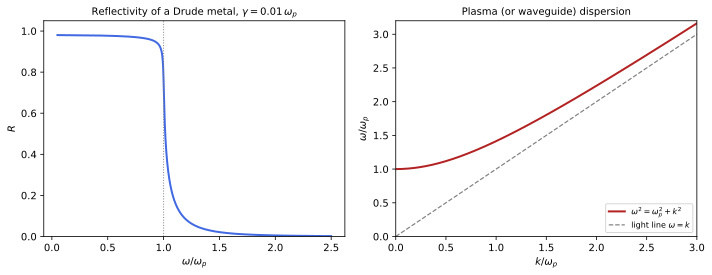
figures/emx_waves.sage.
The proposition gives the plane waves of a linear medium and the two velocities that describe them. The permittivity can include conduction, as in Example 358.
Proposition 17 (Waves in a linear medium) In a homogeneous linear medium without free charges, with \varepsilon(\omega) and \mu(\omega) (conduction included in \varepsilon), the fields \mathbf E = \operatorname{Re}(\mathbf E_0e^{i(kz - \omega t)}), \mathbf B = \operatorname{Re}(\frac k\omega\mathbf e_z\times\mathbf E_0e^{i(kz - \omega t)}) with \mathbf E_0\perp\mathbf e_z solve Equation 30 if and only if k^2 = \varepsilon(\omega)\mu(\omega)\omega^2, \qquad k = n(\omega)\omega, \qquad n = n_r + i\kappa = \sqrt{\varepsilon\mu} , \tag{35} (k = n\omega/c in SI units). The intensity decays as e^{-2\kappa\omega z}; the phase velocity is v_p = \omega/\operatorname{Re}k = 1/n_r and the group velocity, the speed of a wave packet of nearby frequencies in a transparent medium, is v_g = \frac{d\omega}{dk} = \bigl(\frac{d(n_r\omega)}{d\omega}\bigr)^{-1}. In a good conductor (\sigma \gg \omega) k \approx \frac{1 + i}\delta with the skin depth \delta = \sqrt{2/\mu\sigma\omega}; in a collisionless plasma (\varepsilon = 1 - \omega_p^2/\omega^2) waves propagate only for \omega > \omega_p. Proof. Insert into Faraday’s law, \omega\mathbf B_0 = k\mathbf e_z\times\mathbf E_0, and into the Ampère-Maxwell law with \mathbf D = \varepsilon\mathbf E, \mathbf H = \mathbf B/\mu: k\mathbf e_z\times\mathbf B_0/\mu = -\omega\varepsilon\mathbf E_0, which with the first gives k^2 = \varepsilon\mu\omega^2. A packet \int a(k)e^{i(kz - \omega(k)t)}dk peaked at k_0 moves with d\omega/dk by stationary phase. For \varepsilon \approx i\sigma/\omega, k^2 = i\mu\sigma\omega and \sqrt i = \frac{1 + i}{\sqrt2} (Maggiore 2023, secs. 15.1–15.3; Pierrus 2018, Questions 10.10-10.11).
Veriphy. Pending.
Lean. Pending.
Sage. Pending.
In glass light is slower than in vacuum. The phase velocity is the inverse of the refractive index. The wavelength inside the glass is shorter by the same factor.
Example 373 (Light in glass) For glass with n = 1.5 and \mu = 1, light travels at c/1.5 = 2\times10^8\,m/s and its wavelength shrinks by 1.5; the frequency is unchanged, being fixed by the source. |\mathbf B| = n|\mathbf E| in Heaviside-Lorentz units, so the magnetic part of the energy equals the electric part (Exercise 356).
Metals screen alternating fields within the skin depth. At power frequencies it is millimetres, at microwave frequencies micrometres. This is why thin metal sheets can screen microwaves completely.
Example 374 (The skin depth of copper) In SI units \delta = \sqrt{2/\mu_0\sigma\omega}: for copper 9.2\,mm at 50\,Hz, 66\,\mum at 1\,MHz and 2.1\,\mum at 1\,GHz, which is why high-frequency currents flow in a thin surface layer and cables are silver-plated (Pierrus 2018, Question 10.11).
The fraction of light reflected at a boundary depends on the indices on the two sides. At normal incidence the formula is simple.
Example 375 (Reflection at normal incidence) Matching tangential \mathbf E and \mathbf H at the surface of a medium with index n (\mu = 1) gives the reflected amplitude r = \frac{1 - n}{1 + n} (Exercise 382): R = |r|^2 = 4\% for glass, 2\% for water, and R \to 1 for a metal with |n| \gg 1.
A metal is a mirror for light below its plasma frequency. The permittivity is negative there and the wave cannot enter.
Example 376 (Why metals shine) For \gamma \ll \omega < \omega_p, \varepsilon \approx 1 - \frac{\omega_p^2}{\omega^2} < 0, so n \approx i\sqrt{\omega_p^2/\omega^2 - 1} is imaginary and R = |\frac{1 - n}{1 + n}|^2 = 1: total reflection, with the field decaying within \frac{1}{\sqrt{\omega_p^2 - \omega^2}}, about 20\,nm for silver (Figure 17) (Maggiore 2023, sec. 15.3.1).
In a plasma the phase velocity exceeds that of light. The group velocity, which carries the signal, does not. The product of the two velocities is one in natural units.
Example 377 (Phase and group velocity in a plasma) From \omega^2 = \omega_p^2 + k^2, v_p = \frac\omega k = \frac{1}{\sqrt{1 - \omega_p^2/\omega^2}} > 1 and v_g = \frac{k}\omega = \sqrt{1 - \omega_p^2/\omega^2} < 1, with v_pv_g = 1: radio pulses through the interstellar plasma arrive later at lower frequency, which measures the electron column density to pulsars (Figure 17) (Maggiore 2023, sec. 15.2).
In a dispersive transparent medium the group velocity is set by the group index. For glass it exceeds the ordinary index.
Example 378 (The group index of glass) v_g = 1/n_g with n_g = n + \omega\frac{dn}{d\omega} = n - \lambda\frac{dn}{d\lambda}; with Cauchy’s formula n = A + B/\lambda^2 (Example 364), n_g = A + 3B/\lambda^2. For a glass with A = 1.50, B = 4.2\times10^{-15}\,m^2 at 500\,nm, n = 1.517 and n_g = 1.550.
Near an absorption line the group velocity can exceed one, or become negative. Signals still do not travel faster than light.
Example 379 (Anomalous dispersion) Across a resonance dn_r/d\omega < 0, so v_g can exceed 1; the packet is then strongly absorbed and reshaped, and the front of a signal, governed by \varepsilon \to 1 at high frequency, travels at exactly 1, as causality (Proposition 16) requires (Maggiore 2023, sec. 15.2).
Sea water absorbs radio waves within metres. Submarines communicate at very low frequencies. Their low frequency gives them a skin depth of several metres.
Example 380 (Radio waves in sea water) With \sigma = 4\,S/m, sea water is a good conductor below about 1\,GHz, and \delta = \sqrt{2/\mu_0\sigma\omega} is 0.25\,m at 1\,MHz but 25\,m at 100\,Hz: only extremely low frequencies reach submerged submarines (Exercise 386).
At the plasma frequency a plasma supports oscillations without any wave vector constraint. They are longitudinal waves. They are the plasma oscillations of the electron gas as a whole.
Example 381 (Longitudinal waves) A longitudinal field \mathbf E \parallel \mathbf k has \nabla\cdot\mathbf D = i\varepsilon\mathbf k\cdot\mathbf E = 0, possible only if \varepsilon(\omega) = 0: in a plasma at \omega = \omega_p, the plasma oscillation of Exercise 18, with no magnetic field (Maggiore 2023, sec. 15.3.2; Macchi et al. 2023, Problem 11.3).
A layer of a quarter wavelength cancels the reflection from a lens. The two reflected waves interfere destructively. The coating has a refractive index between those of air and glass.
Example 382 (An anti-reflection coating) A film of index n_1 = \sqrt{n_2} and thickness \lambda/4n_1 on glass of index n_2 reflects at its two faces with equal amplitudes and a phase difference of \pi: the reflection vanishes at that wavelength. For n_2 = 1.5, n_1 = 1.22, close to magnesium fluoride’s 1.38 (Macchi et al. 2023, Problem 11.5).
The exercises start with the dispersion relation. The first one derives it with Sage. It eliminates the magnetic field from the macroscopic equations for a plane wave.
Exercise 380 (The dispersion relation, checked) With Sage, substitute the plane wave of Proposition 17 with \mathbf E_0 = E_0\mathbf e_x into Equation 30 with \mathbf D = \varepsilon\mathbf E, \mathbf H = \mathbf B/\mu, and find the condition on k.
The divergence equations hold, Faraday’s law is satisfied by the given \mathbf B, and the Ampère-Maxwell law requires k^2 = \varepsilon\mu\omega^2:
z, t, k, w, E0, eps, mu = var('z t k omega E0 epsilon mu')
Ex = E0 * cos(k * z - w * t)
By = k / w * Ex
print('Faraday dz Ex + dt By = 0:', bool((diff(Ex, z) + diff(By, t)).simplify_full() == 0))
print('divergences vanish: Ex depends on z only, By depends on z only')
res = (-diff(By / mu, z) - diff(eps * Ex, t)).simplify_full()
print('Ampere-Maxwell residual:', res.factor())
print('condition:', solve(res / (E0 * sin(k * z - w * t)) == 0, k))Output:
Faraday dz Ex + dt By = 0: True
divergences vanish: Ex depends on z only, By depends on z only
Ampere-Maxwell residual: (epsilon*mu*omega^2 - k^2)*(cos(k*z)*sin(omega*t) - cos(omega*t)*sin(k*z))*E0/(mu*omega)
condition: [
k == -sqrt(epsilon*mu)*omega,
k == sqrt(epsilon*mu)*omega,
sin(k*z) == cos(k*z)*sin(omega*t)/cos(omega*t)
]Veriphy. Pending.
Lean. Pending.
Sage. Pending.
Skin depths depend on the conductivity and the frequency. The second exercise computes several with Sage. The values cover copper and sea water at several frequencies.
Exercise 381 (Skin depths) With Sage, compute \delta for copper at 50\,Hz, 1\,MHz, 1\,GHz, for sea water at 100\,Hz and 1\,MHz, and check the condition \sigma \gg \varepsilon_0\omega in each case (Pierrus 2018, Question 10.11).
9.2\,mm, 65\,\mum, 2.1\,\mum for copper, where \sigma/\varepsilon_0\omega \geq 10^9; 25\,m and 0.25\,m for sea water, where \sigma/\varepsilon_0\omega = 7\times10^8 and 7\times10^4, still large:
mu0 = 4 * pi * 1e-7; eps0 = 8.8541878128e-12
for name, s, fs in [('copper', 5.96e7, [50, 1e6, 1e9]), ('sea water', 4, [100, 1e6])]:
for f in fs:
w = 2 * pi * f
print(name, f, 'Hz: delta =', n(sqrt(2 / (mu0 * s * w)), digits=3), 'm; sigma/(eps0 omega) =', n(s / (eps0 * w), digits=2))Output:
copper 50 Hz: delta = 0.00922 m; sigma/(eps0 omega) = 2.1e16
copper 1.00000000000000e6 Hz: delta = 0.0000652 m; sigma/(eps0 omega) = 1.1e12
copper 1.00000000000000e9 Hz: delta = 2.06e-6 m; sigma/(eps0 omega) = 1.1e9
sea water 100 Hz: delta = 25.2 m; sigma/(eps0 omega) = 7.2e8
sea water 1.00000000000000e6 Hz: delta = 0.252 m; sigma/(eps0 omega) = 72000.Veriphy. Pending.
Lean. Pending.
Sage. Pending.
The reflection coefficient follows from the boundary conditions. The third exercise derives it. The derivation uses the continuity of the tangential fields at normal incidence.
Exercise 382 (Reflection at normal incidence) A wave E_0e^{i(z - \omega t)} in vacuum meets a medium of index n (\mu = 1) at z = 0. Write reflected and transmitted waves, impose the continuity of E_x and H_y, and find r and t.
E_0 + E_r = E_t and, with H = nE in the medium and H = \pm E for the waves in vacuum, E_0 - E_r = nE_t. So r = \frac{1 - n}{1 + n} and t = \frac{2}{1 + n}, with |r|^2 + n|t|^2 = 1 for real n (energy conservation).
Veriphy. Pending.
Lean. Pending.
Sage. Pending.
The group velocity in a plasma decreases toward the plasma frequency. The fourth exercise computes the delay of a radio pulse with Sage.
Exercise 383 (Dispersion of pulsar signals) A pulse travels a distance L through a plasma with \omega_p \ll \omega. Show with Sage that the arrival time is L(1 + \frac{\omega_p^2}{2\omega^2}) to first order, and evaluate the extra delay between 400\,MHz and 800\,MHz for nL = 10^{24}\,m^{-2} (SI units, t = L/v_g c).
1/v_g = (1 - \omega_p^2/\omega^2)^{-1/2} \approx 1 + \frac{\omega_p^2}{2\omega^2}, so the delay is \frac{L\omega_p^2}{2c\omega^2} = \frac{e^2nL}{2\varepsilon_0mc\omega^2}: 0.84\,s at 400\,MHz and 0.21\,s at 800\,MHz, a difference of 0.63\,s:
w, wp = var('omega omega_p', domain='positive')
vg = sqrt(1 - wp^2 / w^2)
print('1/v_g to first order:', (1 / vg).series(wp, 3))
e = 1.602176634e-19; me = 9.1093837e-31; eps0 = 8.8541878128e-12; c = 299792458
nL = 1e24
delay = lambda f: e^2 * nL / (2 * eps0 * me * c * (2 * pi * f)^2)
d1, d2 = delay(400e6), delay(800e6)
print('delay at 400 MHz:', n(d1, digits=3), 's; at 800 MHz:', n(d2, digits=3), 's; difference:', n(d1 - d2, digits=3), 's')Output:
1/v_g to first order: 1 + (1/2/omega^2)*omega_p^2 + Order(omega_p^3)
delay at 400 MHz: 0.840 s; at 800 MHz: 0.210 s; difference: 0.630 sVeriphy. Pending.
Lean. Pending.
Sage. Pending.
The group index of glass follows from Cauchy’s formula. The fifth exercise derives it. The group index exceeds the refractive index in normal dispersion.
Exercise 384 (The group index) Show that n_g = n - \lambda\frac{dn}{d\lambda}, and that for n = A + B/\lambda^2, n_g = A + 3B/\lambda^2.
k = n\omega and \frac{dk}{d\omega} = n + \omega\frac{dn}{d\omega}; with \omega \propto 1/\lambda, \omega\frac{d}{d\omega} = -\lambda\frac{d}{d\lambda}. Then -\lambda\frac{dn}{d\lambda} = \frac{2B}{\lambda^2}.
Veriphy. Pending.
Lean. Pending.
Sage. Pending.
The reflectivity of a Drude metal falls sharply at the plasma frequency. The sixth exercise computes it with Sage. The computation evaluates the Fresnel formula with the Drude permittivity.
Exercise 385 (The reflectivity of a Drude metal) With Sage, compute R(\omega) = |\frac{1 - n}{1 + n}|^2 for \varepsilon = 1 - \frac{1}{\omega(\omega + 0.01i)} (units of \omega_p) at \omega = 0.5, 0.99, 1.01 and 2.
R = 0.98 at 0.5 and 0.87 at 0.99, then a sharp drop to 0.56 at 1.01, 0.17 at 1.1 and 0.005 at 2 (Figure 17):
for w in [0.5, 0.99, 1.01, 1.1, 2]:
eps = CDF(1 - 1 / (w * (w + 0.01 * I)))
nn = sqrt(eps)
if nn.imag() < 0:
nn = -nn
print('omega =', w, ': eps =', eps, ', R =', n(abs((1 - nn) / (1 + nn))^2, digits=3))Output:
omega = 0.500000000000000 : eps = -2.9984006397441023 + 0.07996801279488205*I , R = 0.977
omega = 0.990000000000000 : eps = -0.020199959192001682 + 0.010305050092848503*I , R = 0.871
omega = 1.01000000000000 : eps = 0.019800039207998443 + 0.0097049501068515*I , R = 0.559
omega = 1.10000000000000 : eps = 0.1736220147095282 + 0.007512527139004288*I , R = 0.169
omega = 2 : eps = 0.7500062498437539 + 0.0012499687507812305*I , R = 0.00515Veriphy. Pending.
Lean. Pending.
Sage. Pending.
Communication with submarines needs very low frequencies. The seventh exercise compares the attenuation with Sage. The comparison is between a very low and a low radio frequency.
Exercise 386 (Signals to a submarine) With Sage, find the attenuation of the intensity over 100\,m of sea water at 100\,Hz and at 10\,kHz, using e^{-2z/\delta}.
\delta = 25\,m and 2.5\,m, so the intensity falls by e^{-8} = 3.5\times10^{-4} and e^{-80} = 3\times10^{-35}: only the lowest frequencies are usable:
mu0 = 4 * pi * 1e-7; s = 4
for f in [100, 1e4]:
d = n(sqrt(2 / (mu0 * s * 2 * pi * f)))
print(f, 'Hz: delta =', n(d, digits=3), 'm; 2z/delta =', n(200 / d, digits=3), '; intensity factor =', '%.2e' % float(exp(-200 / d)))Output:
100 Hz: delta = 25.2 m; 2z/delta = 7.95 ; intensity factor = 3.53e-04
10000.0000000000 Hz: delta = 2.52 m; 2z/delta = 79.5 ; intensity factor = 3.05e-35Veriphy. Pending.
Lean. Pending.
Sage. Pending.
A good conductor has \mathbf B larger than \mathbf E and out of phase. The eighth exercise finds the ratio.
Exercise 387 (Fields in a good conductor) For k = \frac{1 + i}\delta, find |\mathbf B|/|\mathbf E| and the phase between them, and show that the magnetic energy dominates (Macchi et al. 2023, Problem 11.13).
\mathbf B_0 = \frac k\omega\mathbf e_z\times\mathbf E_0, so \frac{|B|}{|E|} = \frac{\sqrt2}{\omega\delta} = \sqrt{\sigma/\omega} \gg 1 (with \mu = 1) and \mathbf B lags \mathbf E by 45^\circ; the magnetic energy exceeds the electric one by \sigma/\omega.
Veriphy. Pending.
Lean. Pending.
Sage. Pending.
The anti-reflection condition follows from the amplitudes at the two interfaces. The ninth exercise derives it. The reflected amplitudes from the two surfaces must be equal and opposite.
Exercise 388 (The quarter-wave coating) Using r_{ab} = \frac{n_a - n_b}{n_a + n_b} and neglecting multiple reflections, show that a film of index n_1 and optical thickness \lambda/4 on a substrate n_2 cancels the reflection when n_1 = \sqrt{n_2} (Macchi et al. 2023, Problem 11.5).
The two reflections r_{01} = \frac{1 - n_1}{1 + n_1} and r_{12} = \frac{n_1 - n_2}{n_1 + n_2} differ in path by half a wavelength, a sign; they cancel when \frac{n_1 - 1}{n_1 + 1} = \frac{n_2 - n_1}{n_2 + n_1}, which gives n_1^2 = n_2.
Veriphy. Pending.
Lean. Pending.
Sage. Pending.
A metal film thinner than the skin depth lets some light through. The last exercise estimates it. The transmitted intensity falls exponentially with the ratio of the thickness to the skin depth.
Exercise 389 (A thin metal foil) A silver film with field decay length 20\,nm in the visible is 50\,nm thick. Estimate the fraction of the intensity that crosses it, ignoring multiple reflections but including the reflection at the first surface (R \approx 0.95) (Macchi et al. 2023, Problem 11.4).
The transmitted intensity is about (1 - R)e^{-2\cdot50/20} = 0.05\cdot e^{-5} \approx 3\times10^{-4}, enough to see a bright lamp through a gold-leaf or silver film.
Veriphy. Pending.
Lean. Pending.
Sage. Pending.
A hollow metal tube carries waves only above a frequency fixed by its size. The proposition finds the modes of a guide of any cross-section.
Proposition 18 (Waveguide modes) In a hollow, perfectly conducting tube along \mathbf e_z with cross-section \Sigma, fields \propto e^{i(k_zz - \omega t)} in vacuum split into TE modes (E_z = 0) with B_z = \psi(x, y), (\nabla_\perp^2 + \gamma^2)\psi = 0 and \partial_n\psi = 0 on \partial\Sigma, and TM modes (B_z = 0) with E_z = \psi and \psi = 0 on \partial\Sigma; in both, \omega^2 = k_z^2 + \gamma^2, so a mode propagates only above its cut-off \omega_c = \gamma, with group velocity k_z/\omega < 1 and phase velocity \omega/k_z > 1. A hollow guide has no TEM mode. For a rectangle 0 < x < a, 0 < y < b, \gamma_{mn} = \pi\sqrt{m^2/a^2 + n^2/b^2}, with m, n \geq 0 not both zero for TE and m, n \geq 1 for TM; the lowest mode is \mathrm{TE}_{10} with \omega_c = \pi/a (\pi c/a in SI units). Proof. The transverse fields follow from E_z, B_z by the curl equations, the boundary conditions \hat{\mathbf n}\times\mathbf E = 0, \hat{\mathbf n}\cdot\mathbf B = 0 on the walls become the stated conditions on \psi, and the wave equation gives \nabla_\perp^2\psi = (k_z^2 - \omega^2)\psi. A TEM mode would have \mathbf E_\perp = -\nabla_\perp\phi with \phi harmonic in \Sigma and constant on the single boundary, hence zero (Maggiore 2023, sec. 15.4; Pierrus 2018, Questions 7.12-7.13).
Veriphy. Pending.
Lean. Pending.
Sage. Pending.
The lowest mode of a rectangular guide has a simple field. Its electric field is a half sine across the wide side.
Example 383 (The \mathrm{TE}_{10} mode) For \psi = B_0\cos(\pi x/a), E_y = E_0\sin(\pi x/a)\cos(k_zz - \omega t) with E_0 = \frac{\omega a}\pi B_0, B_x = -\frac{k_z}\omega E_y and B_z = B_0\cos(\pi x/a)\sin(k_zz - \omega t): E_y vanishes on the walls x = 0, a and is tangent nowhere else, as required (Exercise 390) (Pierrus 2018, Question 7.13).
A standard X-band guide carries microwaves between about 8 and 12\,GHz. Its cut-offs follow from its dimensions. Below the lower limit no mode propagates in the guide.
Example 384 (An X-band waveguide) For a = 22.86\,mm and b = 10.16\,mm, f_c(\mathrm{TE}_{10}) = c/2a = 6.56\,GHz, f_c(\mathrm{TE}_{20}) = 13.1\,GHz and f_c(\mathrm{TE}_{01}) = 14.8\,GHz: between 6.6 and 13.1\,GHz only one mode propagates, which avoids mixing modes of different speeds.
The waveguide mode is a superposition of plane waves bouncing between the walls. Their angle depends on the frequency. At the cut-off they bounce back and forth without advancing.
Example 385 (Modes as bouncing waves) \sin(\pi x/a)e^{i(k_zz - \omega t)} = \frac1{2i}(e^{i(\pi x/a + k_zz)} - e^{i(-\pi x/a + k_zz)})e^{-i\omega t}: two plane waves with |\mathbf k| = \omega at angles \pm\theta from the axis, \cos\theta = k_z/\omega. The group velocity \cos\theta is the axial component of their speed, and at cut-off they bounce perpendicular to the axis (Macchi et al. 2023, Problem 12.5).
Near cut-off the energy travels slowly. The group velocity vanishes at the cut-off frequency. The phase velocity at the same time grows without bound.
Example 386 (Velocities in a guide) From \omega^2 = k_z^2 + \omega_c^2, v_g = \sqrt{1 - \omega_c^2/\omega^2} and v_p = 1/v_g: at twice the cut-off frequency v_g = 0.87, and below cut-off k_z is imaginary and the field decays along the guide as e^{-\sqrt{\omega_c^2 - \omega^2}z}, an evanescent wave.
A coaxial cable has two conductors and carries a TEM wave at every frequency. It is the guide without a cut-off.
Example 387 (The TEM mode of a coaxial cable) Between coaxial conductors, \phi = V\frac{\ln(b/s)}{\ln(b/a)} (Example 34) times e^{i(kz - \omega t)} with k = \sqrt{\varepsilon\mu}\omega gives a TEM wave, possible because the cross-section has two boundaries. Its impedance \frac VI = \frac{1}{2\pi}\sqrt{\frac\mu\varepsilon}\ln\frac ba, 60\,\Omega\,\frac{\ln(b/a)}{\sqrt{\varepsilon_r}} in SI units, is 50\,\Omega for polyethylene with b/a = 3.5 (Macchi et al. 2023, Problem 12.1).
A square guide has degenerate modes. Two polarisations share the lowest cut-off. The degeneracy is lifted when one side is made longer.
Example 388 (A square guide) For a = b, \mathrm{TE}_{10} and \mathrm{TE}_{01} have the same cut-off \pi/a and fields at right angles: any combination propagates, including circularly polarised ones, which is useful for rotating joints but makes the guide sensitive to small deformations (Macchi et al. 2023, Problem 12.4).
The lowest TM mode needs both indices to be at least one. Its cut-off is higher than that of the lowest TE mode.
Example 389 (The lowest TM mode) E_z = E_0\sin\frac{\pi x}a\sin\frac{\pi y}b vanishes on all walls, with \gamma_{11} = \pi\sqrt{a^{-2} + b^{-2}}, above \gamma_{10}: TM modes appear only at higher frequencies in a rectangular guide.
Closing a guide at both ends makes a resonant cavity. Its modes have discrete frequencies. Microwave ovens and the accelerating structures of particle accelerators are cavities of this kind.
Example 390 (A rectangular cavity) With conducting walls also at z = 0 and z = d, k_z = p\pi/d and \omega_{mnp} = \pi\sqrt{(m/a)^2 + (n/b)^2 + (p/d)^2}: a microwave oven, about 30\,cm wide, has many modes near 2.45\,GHz, and a rotating plate averages over their hot spots.
The space between the Earth and the ionosphere is a spherical cavity. Its lowest resonances are at a few hertz.
Example 391 (Schumann resonances) For a thin spherical shell of radius R the lowest modes have \omega_l \approx \frac{\sqrt{l(l + 1)}}R (c/R in SI units), so f_1 = \frac{\sqrt2c}{2\pi R} = 10.6\,Hz; lightning excites them, and the observed 7.8\,Hz is lower because the ionosphere is a lossy conductor (Macchi et al. 2023, Problem 12.8).
Filling a guide with a dielectric lowers its cut-off. The waves inside are slower. The cut-off frequency is divided by the refractive index of the filling.
Example 392 (A filled waveguide) With a medium \varepsilon, \mu inside, \varepsilon\mu\omega^2 = k_z^2 + \gamma^2 and the cut-off becomes \gamma/\sqrt{\varepsilon\mu}: a guide filled with polyethylene (\varepsilon = 2.25) passes frequencies 1.5 times lower (Macchi et al. 2023, Problem 12.7).
The exercises start with the \mathrm{TE}_{10} fields. The first one checks them with Sage. The fields must satisfy the wave equation and the boundary conditions on the walls.
Exercise 390 (The \mathrm{TE}_{10} mode, checked) With Sage, take E_y = E_0\sin(\pi x/a)\cos(kz - \omega t), compute \mathbf B from Faraday’s law, and check the vacuum equations and the boundary conditions on the walls.
\mathbf B = (-\frac k\omega E_y, 0, \frac{\pi E_0}{\omega a}\cos\frac{\pi x}a\sin(kz - \omega t)); the equations hold for \omega^2 = k^2 + \pi^2/a^2, E_y = 0 and B_x = 0 on x = 0, a:
x, y, z, t, k, w, E0, a = var('x y z t k omega E0 a')
assume(a > 0)
E = vector([0, E0 * sin(pi * x / a) * cos(k * z - w * t), 0])
B = vector([-k / w * E[1], 0, pi * E0 / (w * a) * cos(pi * x / a) * sin(k * z - w * t)])
X = [x, y, z]
curl = lambda F: vector([diff(F[2], y) - diff(F[1], z), diff(F[0], z) - diff(F[2], x), diff(F[1], x) - diff(F[0], y)])
div = lambda F: sum(diff(F[i], X[i]) for i in range(3))
print('Faraday curl E + dB/dt:', (curl(E) + diff(B, t)).simplify_full())
print('div E, div B:', div(E).simplify_full(), div(B).simplify_full())
res = (curl(B) - diff(E, t)).simplify_full()
print('Ampere-Maxwell residual:', vector([c.factor() for c in res]))
print('vanishes when omega^2 = k^2 + pi^2/a^2:', bool(res.subs({w: sqrt(k^2 + pi^2 / a^2)}).simplify_full() == 0))
print('E_y on x = 0, a:', E[1].subs(x=0), E[1].subs(x=a), '; B_x on x = 0, a:', B[0].subs(x=0), B[0].subs(x=a))Output:
Faraday curl E + dB/dt: (0, 0, 0)
div E, div B: 0 0
Ampere-Maxwell residual: (0, -(a^2*k^2 - a^2*omega^2 + pi^2)*(cos(k*z)*sin(omega*t) - cos(omega*t)*sin(k*z))*E0*sin(pi*x/a)/(a^2*omega), 0)
vanishes when omega^2 = k^2 + pi^2/a^2: True
E_y on x = 0, a: 0 0 ; B_x on x = 0, a: 0 0Veriphy. Pending.
Lean. Pending.
Sage. Pending.
A copper waveguide of standard size has a single-mode band. The second exercise finds it with Sage. The band lies between the first and the second cut-off frequencies.
Exercise 391 (The single-mode band) With Sage, list the cut-off frequencies of the five lowest modes of a guide with a = 3b = 3\,cm and find the band in which only \mathrm{TE}_{10} propagates (Pierrus 2018, Question 7.15).
5, 10, 15, 15 and 15.8\,GHz (\mathrm{TE}_{10}, \mathrm{TE}_{20}, then \mathrm{TE}_{30} and \mathrm{TE}_{01} together at 15, then \mathrm{TE}_{11} and \mathrm{TM}_{11} together); single-mode between 5 and 10\,GHz:
c = 299792458; a, b = 0.03, 0.01
modes = []
for m in range(0, 5):
for k in range(0, 3):
if (m, k) == (0, 0):
continue
f = c / 2 * sqrt((m / a)^2 + (k / b)^2)
kinds = 'TE' if (m == 0 or k == 0) else 'TE/TM'
modes.append((n(f / 1e9, digits=4), kinds + str(m) + str(k)))
modes.sort()
for f, name in modes[:6]:
print(name, f, 'GHz')Output:
TE10 4.997 GHz
TE20 9.993 GHz
TE01 14.99 GHz
TE30 14.99 GHz
TE/TM11 15.80 GHz
TE/TM21 18.02 GHzVeriphy. Pending.
Lean. Pending.
Sage. Pending.
The power carried by a mode is the flux of the Poynting vector. The third exercise integrates it with Sage.
Exercise 392 (Power in the \mathrm{TE}_{10} mode) With Sage, compute the time-averaged Poynting flux of the mode of Exercise 390 through the cross-section, and its ratio to the energy per unit length, which should be the group velocity.
\langle P\rangle = \frac{E_0^2kab}{4\omega} and the energy per unit length \frac{E_0^2ab}{4}, so the ratio is k/\omega = v_g:
x, y, z, t, k, w, E0, a, b = var('x y z t k omega E0 a b', domain='positive')
Ey = E0 * sin(pi * x / a) * cos(k * z - w * t)
Bx = -k / w * Ey
Bz = pi * E0 / (w * a) * cos(pi * x / a) * sin(k * z - w * t)
T = 2 * pi / w
avg = lambda f: integrate(integrate(integrate(f, x, 0, a), y, 0, b), t, 0, T) / T
P = avg(-Ey * Bx).simplify_full()
U = avg((Ey^2 + Bx^2 + Bz^2) / 2).simplify_full()
print('<P> =', P)
print('<U> per unit length =', U.subs({w: sqrt(k^2 + pi^2 / a^2)}).simplify_full())
print('ratio =', (P / U).subs({w: sqrt(k^2 + pi^2 / a^2)}).simplify_full())Output:
<P> = 1/4*E0^2*a*b*k/omega
<U> per unit length = 1/4*E0^2*a*b
ratio = a*k/sqrt(a^2*k^2 + pi^2)Veriphy. Pending.
Lean. Pending.
Sage. Pending.
Below cut-off the field decays along the guide. The fourth exercise estimates the decay for a waveguide window. The decay length is comparable to the width of the guide.
Exercise 393 (An evanescent wave) A 2.45\,GHz microwave oven has holes of 2\,mm in its door. Treating each hole as a guide with cut-off c/2a for a = 2\,mm, find the decay length of the field and the attenuation through a 1\,mm thick door.
f_c = 75\,GHz \gg 2.45\,GHz, so |k_z| \approx \pi/a = 1.6\times10^3\,m^{-1}, a decay length of 0.64\,mm, and the amplitude drops by e^{-1.6} = 0.2 per mm; many holes and a thicker mesh give the observed shielding.
Veriphy. Pending.
Lean. Pending.
Sage. Pending.
The bouncing-wave picture gives the group velocity geometrically. The fifth exercise asks for the angle. The angle follows from the ratio of the cut-off to the frequency.
Exercise 394 (The angle of the bouncing waves) For the \mathrm{TE}_{10} mode at frequency \omega, find the angle of the two plane waves of Example 385 with the axis, and show that the time a wavefront takes to advance a length L along the guide is L/v_g.
\sin\theta = \frac{\pi/a}\omega = \frac{\omega_c}\omega. Each plane wave moves at speed 1 along its direction, which has axial component \cos\theta = \sqrt{1 - \omega_c^2/\omega^2} = v_g, so the energy advances L in time L/\cos\theta.
Veriphy. Pending.
Lean. Pending.
Sage. Pending.
The impedance of a coaxial cable follows from its capacitance and inductance. The sixth exercise checks the TEM speed. The speed equals that of light in the dielectric of the cable.
Exercise 395 (Speed and impedance of a cable) Using the capacitance and the inductance per unit length of a coaxial cable filled with \varepsilon, \mu (Exercise 121), show that the TEM speed is 1/\sqrt{\varepsilon\mu} and the impedance \sqrt{L/C} is \frac{1}{2\pi}\sqrt{\mu/\varepsilon}\ln\frac ba.
C = \frac{2\pi\varepsilon}{\ln(b/a)}, L = \frac{\mu}{2\pi}\ln\frac ba; the telegraph equation gives speed 1/\sqrt{LC} = 1/\sqrt{\varepsilon\mu} and impedance \sqrt{L/C} = \frac{\ln(b/a)}{2\pi}\sqrt{\mu/\varepsilon}, which in SI units is 60\,\Omega\sqrt{\mu_r/\varepsilon_r}\ln\frac ba.
Veriphy. Pending.
Lean. Pending.
Sage. Pending.
The modes of a cavity are standing waves. The seventh exercise counts them with Sage. The count grows as the cube of the frequency at high frequency.
Exercise 396 (Modes of a cubic cavity) With Sage, count the modes (m, n, p) of a cubic cavity of side 30\,cm with frequencies between 2.40 and 2.50\,GHz, counting two polarisations when all three indices are non-zero and one otherwise.
There are twelve modes in this band, from the permutations of (2, 2, 4) and (0, 3, 4), so the field pattern in a microwave oven is a superposition of several standing waves:
c = 299792458; L = 0.3
count = 0; listing = []
for m in range(0, 10):
for k in range(0, 10):
for p in range(0, 10):
if [m, k, p].count(0) > 1:
continue
f = c / (2 * L) * sqrt(m^2 + k^2 + p^2)
if 2.40e9 <= f <= 2.50e9:
pol = 2 if 0 not in [m, k, p] else 1
count += pol
listing.append(((m, k, p), n(f / 1e9, digits=4), pol))
for item in listing:
print(item)
print('number of modes:', count)Output:
((0, 3, 4), 2.498, 1)
((0, 4, 3), 2.498, 1)
((2, 2, 4), 2.448, 2)
((2, 4, 2), 2.448, 2)
((3, 0, 4), 2.498, 1)
((3, 4, 0), 2.498, 1)
((4, 0, 3), 2.498, 1)
((4, 2, 2), 2.448, 2)
((4, 3, 0), 2.498, 1)
number of modes: 12Veriphy. Pending.
Lean. Pending.
Sage. Pending.
A hollow guide cannot carry a TEM wave, while a cable can. The eighth exercise proves the first statement. The proof uses the fact that a field without sources inside a closed conductor vanishes.
Exercise 397 (No TEM wave in a hollow guide) Show that a TEM mode (E_z = B_z = 0) has \nabla_\perp\times\mathbf E_\perp = 0 and \nabla_\perp\cdot\mathbf E_\perp = 0, so \mathbf E_\perp = -\nabla_\perp\phi with \phi harmonic, and conclude that it vanishes in a guide whose cross-section has a single boundary.
The z component of Faraday’s law gives \nabla_\perp\times\mathbf E_\perp = -\partial_tB_z = 0 and Gauss’s law gives \nabla_\perp\cdot\mathbf E_\perp = -\partial_zE_z = 0. On the single conducting boundary \phi is constant, and a harmonic function constant on the whole boundary is constant (Proposition 1), so \mathbf E_\perp = 0.
Veriphy. Pending.
Lean. Pending.
Sage. Pending.
An optical fibre guides light by total internal reflection. The ninth exercise finds the acceptance angle. The angle depends on the refractive indices of the core and the cladding.
Exercise 398 (An optical fibre) A fibre has core index n_1 = 1.48 and cladding n_2 = 1.46. Find the critical angle at the core-cladding boundary and the largest angle from the axis of light entering from air that is guided (Macchi et al. 2023, Problem 12.6).
Total reflection needs \sin\theta_c = n_2/n_1, \theta_c = 80.6^\circ from the normal, so the ray makes at most 9.4^\circ with the axis inside; Snell’s law at the entrance gives \sin\alpha = n_1\sin9.4^\circ = \sqrt{n_1^2 - n_2^2} = 0.24, \alpha = 14^\circ.
Veriphy. Pending.
Lean. Pending.
Sage. Pending.
A cavity loses energy through the walls. The last exercise estimates its quality factor from the skin depth. The quality factor is the ratio of the volume to the skin depth times the area, up to a factor of order one.
Exercise 399 (The quality factor of a cavity) For a cavity of size L with copper walls, the energy is stored in a volume \sim L^3 and dissipated in a layer of thickness \delta on an area \sim L^2. Estimate Q \sim L/\delta for L = 3\,cm at 10\,GHz.
\delta = 0.66\,\mum at 10\,GHz, so Q \sim 3\times10^{-2}/6.6\times10^{-7} \approx 5\times10^4, the order of measured values for copper cavities.
Veriphy. Pending.
Lean. Pending.
Sage. Pending.
Scattering of radiation
A wave falling on an electron or a molecule makes it oscillate, and the oscillation radiates in all directions. The ratio of the scattered power to the incident intensity is an area, the cross-section, which the model of Definition 19 computes for every frequency.
Proposition 19 (Scattering by a bound electron) The scattering cross-section of a body is \sigma = P_s/I, the scattered power divided by the incident intensity, and \frac{d\sigma}{d\Omega} = \frac{dP_s/d\Omega}{I}. An electron bound with frequency \omega_0 and damping \gamma (Definition 19), in a wave of frequency \omega polarised along \hat{\boldsymbol\epsilon}, has \frac{d\sigma}{d\Omega} = r_e^2\frac{\omega^4}{(\omega_0^2 - \omega^2)^2 + \gamma^2\omega^2}\sin^2\Theta, \qquad \sigma = \sigma_T\frac{\omega^4}{(\omega_0^2 - \omega^2)^2 + \gamma^2\omega^2} , \tag{36} with \Theta the angle between \hat{\boldsymbol\epsilon} and the direction of observation, r_e = \frac{e^2}{4\pi m} and \sigma_T = \frac{8\pi}3r_e^2 (Example 269). For unpolarised light \sin^2\Theta is replaced by \frac{1 + \cos^2\theta}2, \theta the scattering angle. The limits are Thomson scattering, \sigma = \sigma_T for \omega \gg \omega_0, and Rayleigh scattering, \sigma = \sigma_T(\omega/\omega_0)^4 for \omega \ll \omega_0. Proof. The steady state of Exercise 370 gives the dipole \mathbf p = \frac{e^2/m}{\omega_0^2 - \omega^2 - i\gamma\omega}\mathbf E_0e^{-i\omega t}, whose radiation (Proposition 12) has \frac{dP}{d\Omega} = \frac{\omega^4|\mathbf p_0|^2}{32\pi^2}\sin^2\Theta on average; divide by I = \frac12E_0^2 (Maggiore 2023, secs. 16.1–16.3).
Veriphy. Pending.
Lean. Pending.
Sage. Pending.
Free electrons scatter all frequencies equally. Their cross-section is the Thomson value. It is independent of the frequency as long as the electron moves slowly.
Example 393 (Thomson scattering) For \omega \gg \omega_0 (or free electrons, \omega_0 = 0, with \gamma \ll \omega), \sigma = \sigma_T = 6.65\times10^{-29}\,m^2, independent of frequency: it limits the transparency of the Sun’s interior (Exercise 272) and of the early universe before recombination (Maggiore 2023, sec. 16.2).
Molecules scatter visible light weakly because their resonances lie in the ultraviolet. The fourth power of the frequency colours the sky.
Example 394 (Rayleigh scattering) For \omega \ll \omega_0, \sigma = \sigma_T(\omega/\omega_0)^4: with \omega_0 in the ultraviolet, blue light is scattered several times more than red (Example 278). For an N_2 molecule at 500\,nm the measured \sigma \approx 5\times10^{-31}\,m^2 corresponds to an attenuation length of about 80\,km in air at sea level (Exercise 402).
At resonance the cross-section becomes huge. With purely radiative damping it is of the order of the square of the wavelength.
Example 395 (Resonance scattering) At \omega = \omega_0, \sigma = \sigma_T\frac{\omega_0^2}{\gamma^2}. If the damping is the radiative one, \gamma = \omega_0^2\tau (Example 297), then \sigma = \frac{8\pi r_e^2}{3\omega_0^2\tau^2} = \frac{6\pi}{\omega_0^2} = \frac{3\lambda^2}{2\pi}, independent of the charge: an atom at resonance scatters light from an area 10^{8} times its own size.
The scattered light is polarised. At right angles to the incident beam the polarisation is complete. This polarisation of the sky can be seen with polarising sunglasses.
Example 396 (Polarisation of scattered light) For unpolarised incident light, the factor \frac{1 + \cos^2\theta}2 is the average of 1 (polarisation perpendicular to the scattering plane) and \cos^2\theta (in the plane): at \theta = 90^\circ only the perpendicular part survives, and skylight at 90^\circ from the Sun is polarised (Exercise 275).
A small dielectric sphere scatters like a molecule. Its polarisability is that of the sphere in a uniform field. Its cross-section grows as the sixth power of the radius.
Example 397 (A small dielectric sphere) A sphere of radius a \ll \lambda and permittivity \varepsilon acquires \mathbf p = 4\pi a^3\frac{\varepsilon - 1}{\varepsilon + 2}\mathbf E (Example 324), so \sigma = \frac{8\pi}3k^4a^6\bigl(\frac{\varepsilon - 1}{\varepsilon + 2}\bigr)^2: dust and droplets much smaller than the wavelength scatter as \lambda^{-4}, larger ones less selectively, which is why clouds are white.
A conducting sphere also has a magnetic dipole induced by the wave. Both dipoles contribute to its cross-section. The magnetic dipole points opposite to the magnetic field of the wave.
Example 398 (A small conducting sphere) For a perfectly conducting sphere, \mathbf p = 4\pi a^3\mathbf E and, from the exclusion of the magnetic field, \mathbf m = -2\pi a^3\mathbf B; the two radiate together, with total \sigma = \frac{10\pi}3k^4a^6 and a backward-peaked pattern (Macchi et al. 2023, Problems 10.14-10.15).
Many scatterers remove light from a beam. The intensity decays exponentially with the number of scatterers crossed. The rate of decay is the density of scatterers times their cross-section.
Example 399 (Extinction) A beam crossing n scatterers per unit volume loses nI\sigma\,dx per unit area in a length dx, so I = I_0e^{-n\sigma x} (Beer’s law), with the mean free path 1/n\sigma: the sunset is red because the path through the atmosphere is long and the blue is scattered out.
At low frequency the bound electron behaves as a static polarisability. The Rayleigh law is the radiation of that induced dipole.
Example 400 (Rayleigh scattering and the static polarisability) For \omega \ll \omega_0, \mathbf p \approx \alpha\mathbf E with \alpha = \frac{e^2}{m\omega_0^2} (Example 372), and \sigma = \frac{\omega^4\alpha^2}{6\pi}: the cross-section depends only on the static polarisability, which is how the scattering by any small neutral body is computed.
When the photon energy is comparable to the electron’s rest energy the classical result fails. The example states the correction qualitatively.
Example 401 (The limit of classical scattering) Thomson’s formula assumes that the electron’s recoil is negligible, \hbar\omega \ll mc^2 = 511\,keV. For X- and \gamma-rays the scattered light changes frequency (Compton effect) and the cross-section decreases, effects of quantum electrodynamics.
Scattering by many molecules adds incoherently in a gas but coherently in a dense medium. Coherent forward scattering produces the refractive index.
Example 402 (Scattering and refraction) In a dense, uniform medium the waves scattered sideways by neighbouring molecules cancel, and only the forward-scattered waves survive; they add to the incident wave with a phase lag, which is the slowing of light by the index n of Example 371. Density fluctuations restore sideways scattering, as in the blue sky.
The exercises start with the cross-section as a function of frequency. The first one tabulates it with Sage. The table covers the Rayleigh, resonant and Thomson regimes.
Exercise 400 (The cross-section curve) With Sage, compute \sigma/\sigma_T from Equation 36 for \gamma = 0.05\omega_0 at \omega/\omega_0 = 0.1, 0.5, 1, 2, 10, and compare with the Rayleigh and Thomson limits.
10^{-4} (Rayleigh: 10^{-4}), 0.11, 400, 1.78 and 1.02 (Thomson: 1):
g = 0.05
for w in [0.1, 0.5, 1, 2, 10]:
s = w^4 / ((1 - w^2)^2 + g^2 * w^2)
print('omega =', w, ': sigma/sigma_T =', n(s, digits=3), '; Rayleigh omega^4 =', n(w^4, digits=3))Output:
omega = 0.100000000000000 : sigma/sigma_T = 0.000102 ; Rayleigh omega^4 = 0.000100
omega = 0.500000000000000 : sigma/sigma_T = 0.111 ; Rayleigh omega^4 = 0.0625
omega = 1 : sigma/sigma_T = 400. ; Rayleigh omega^4 = 1.00
omega = 2 : sigma/sigma_T = 1.78 ; Rayleigh omega^4 = 16.0
omega = 10 : sigma/sigma_T = 1.02 ; Rayleigh omega^4 = 10000.Veriphy. Pending.
Lean. Pending.
Sage. Pending.
The angular integral of the cross-section gives the total. The second exercise checks it with Sage for both polarisation cases.
Exercise 401 (Integrating the angular distribution) With Sage, integrate r_e^2\sin^2\Theta and r_e^2\frac{1 + \cos^2\theta}2 over the sphere and check that both give \sigma_T.
Both integrals equal \frac{8\pi}3r_e^2:
th, ph, re = var('theta phi r_e')
s1 = integrate(integrate(re^2 * sin(th)^2 * sin(th), th, 0, pi), ph, 0, 2 * pi)
s2 = integrate(integrate(re^2 * (1 + cos(th)^2) / 2 * sin(th), th, 0, pi), ph, 0, 2 * pi)
print('polarised:', s1, '; unpolarised:', s2, '; equal to 8 pi r_e^2/3:', bool(s1 == 8 * pi * re^2 / 3), bool(s2 == 8 * pi * re^2 / 3))Output:
polarised: 8/3*pi*r_e^2 ; unpolarised: 8/3*pi*r_e^2 ; equal to 8 pi r_e^2/3: True TrueVeriphy. Pending.
Lean. Pending.
Sage. Pending.
The attenuation length of sunlight in air follows from Rayleigh scattering. The third exercise computes it with Sage. The answer is compared with the thickness of the atmosphere.
Exercise 402 (Attenuation of sunlight) With Sage, take \sigma = 5\times10^{-31}\,m^2 at 500\,nm and \sigma \propto \lambda^{-4}, n = 2.5\times10^{25}\,m^{-3}, and find the mean free paths at 450 and 700\,nm, and the transmission through an atmosphere equivalent to 8\,km of sea-level air, overhead and at sunset (path \approx 38 times longer).
Mean free paths 52\,km and 310\,km; overhead the transmission is 0.86 and 0.97, at sunset 0.003 and 0.37: the setting Sun is red:
N = 2.5e25
for lam in [450, 700]:
s = 5e-31 * (500 / lam)^4
l = 1 / (N * s)
print(lam, 'nm: mean free path =', n(l / 1e3, digits=3), 'km; transmission overhead =', n(exp(-8e3 / l), digits=3), '; at sunset =', n(exp(-38 * 8e3 / l), digits=3))Output:
450 nm: mean free path = 52.5 km; transmission overhead = 0.859 ; at sunset = 0.00305
700 nm: mean free path = 307. km; transmission overhead = 0.974 ; at sunset = 0.372Veriphy. Pending.
Lean. Pending.
Sage. Pending.
The resonance cross-section with radiative damping is universal. The fourth exercise derives it. At resonance the cross-section depends only on the wavelength.
Exercise 403 (The universal resonance cross-section) Show that with \gamma = \omega_0^2\tau and \tau = \frac{e^2}{6\pi m}, \sigma(\omega_0) = \frac{6\pi}{\omega_0^2}, and evaluate it in SI units for the sodium line at 589\,nm.
\sigma_T\frac{\omega_0^2}{\gamma^2} = \frac{e^4}{6\pi m^2}\cdot\frac{36\pi^2m^2}{e^4\omega_0^2} = \frac{6\pi}{\omega_0^2}, i.e. \frac{3\lambda^2}{2\pi} = 1.7\times10^{-13}\,m^2 with \lambda = 589\,nm.
Veriphy. Pending.
Lean. Pending.
Sage. Pending.
The Rayleigh law follows from the static polarisability. The fifth exercise checks the equivalence. The polarisability is expressed through the refractive index of the gas.
Exercise 404 (Rayleigh from the polarisability) Show that \sigma_T(\omega/\omega_0)^4 = \frac{\omega^4\alpha^2}{6\pi} for \alpha = \frac{e^2}{m\omega_0^2}.
\frac{\omega^4}{6\pi}\frac{e^4}{m^2\omega_0^4} = \frac{e^4}{6\pi m^2}\frac{\omega^4}{\omega_0^4} = \sigma_T\frac{\omega^4}{\omega_0^4}.
Veriphy. Pending.
Lean. Pending.
Sage. Pending.
The scattering by small particles depends strongly on their size. The sixth exercise compares a droplet with a molecule. The droplet contains many molecules that scatter coherently.
Exercise 405 (A water droplet and a molecule) With Example 397, compare the cross-section of a water droplet (\varepsilon = 1.78 at optical frequencies) of radius 20\,nm with that of an N_2 molecule at 500\,nm, in SI units.
k = 1.26\times10^7\,m^{-1}, k^4a^6 = 1.6\times10^{-18}, (\frac{\varepsilon - 1}{\varepsilon + 2})^2 = 0.043, so \sigma = \frac{8\pi}3\cdot1.6\times10^{-18}\cdot0.043 \approx 5.7\times 10^{-19}\,m^2, 10^{12} times a molecule’s: a few droplets dominate the scattering of humid air.
Veriphy. Pending.
Lean. Pending.
Sage. Pending.
The polarisation of the scattered light depends on the angle. The seventh exercise computes the degree of polarisation with Sage.
Exercise 406 (Degree of polarisation of scattered light) With Sage, compute the degree of polarisation \frac{1 - \cos^2\theta}{1 + \cos^2\theta} of light scattered at angle \theta from unpolarised light, and evaluate it at 30^\circ, 60^\circ and 90^\circ.
0.14, 0.60 and 1:
th = var('th')
Pd = (1 - cos(th)^2) / (1 + cos(th)^2)
for d in [30, 60, 90]:
print(d, 'deg:', Pd.subs({th: d * pi / 180}), '=', n(Pd.subs({th: d * pi / 180}), digits=3))Output:
30 deg: 1/7 = 0.143
60 deg: 3/5 = 0.600
90 deg: 1 = 1.00Veriphy. Pending.
Lean. Pending.
Sage. Pending.
Beer’s law follows from the definition of the cross-section. The eighth exercise derives it. The derivation considers a thin slab of scatterers crossed by the beam.
Exercise 407 (Beer’s law) Derive I = I_0e^{-n\sigma x} for a beam crossing a dilute medium of independent scatterers, and state when it fails.
In a slab dx of unit area there are n\,dx scatterers, each removing \sigma I, so dI = -n\sigma I\,dx. It fails when scattering is coherent (dense media, Example 402) or when scattered light is scattered back into the beam (multiple scattering).
Veriphy. Pending.
Lean. Pending.
Sage. Pending.
The Thomson cross-section limits the luminosity of stars. The ninth exercise derives the Eddington limit. At that luminosity the radiation pressure balances gravity.
Exercise 408 (The Eddington luminosity) Radiation of luminosity L pushes the electrons of ionised hydrogen with the force \frac{L\sigma_T}{4\pi r^2c} per electron, while gravity pulls the protons with \frac{GMm_p}{r^2}. Find the largest luminosity of a star of mass M and evaluate it for one solar mass, in SI units.
Balance gives L_E = \frac{4\pi cGMm_p}{\sigma_T} = 1.3\times10^{31}\,W for M = 2\times10^{30}\,kg, 3\times10^4 solar luminosities.
Veriphy. Pending.
Lean. Pending.
Sage. Pending.
Coherent forward scattering produces the index of refraction. The last exercise estimates n - 1 for a gas from the scattered amplitude.
Exercise 409 (The index from forward scattering) For a dilute gas with polarisability \alpha per molecule, show that the forward-scattered waves of a slab of thickness dz add a phase \frac{n\alpha\omega}{2}dz to the incident wave, which is the index 1 + \frac{n\alpha}2 of Example 371.
A plane wave crossing a sheet of dipoles \mathbf p = \alpha\mathbf E with surface density n\,dz receives the field of the sheet, which by Exercise 252 with the polarisation current -i\omega n\alpha E\,dz is \frac{i\omega n\alpha}{2}E\,dz; this is a phase change \frac{\omega n\alpha}{2}dz = \omega(n_{\text{index}} - 1)dz, so n_{\text{index}} - 1 = \frac{n\alpha}2.
Veriphy. Pending.
Lean. Pending.
Sage. Pending.
Exercises
The exercises of this section combine the four parts of the chapter. Each follows one physical situation from the static fields through Maxwell’s equations and radiation to the response of matter.
A charge that moves through a medium faster than light does there radiates even at constant velocity. The first exercise combines the fields of moving charges with the index of refraction.
Exercise 410 (Cherenkov radiation) In a medium of index n, a charge moving with constant speed v > 1/n outruns its own field. Using the retarded-time construction of Proposition 10 with light speed 1/n, show that the wavefronts emitted along the path form a cone with \cos\theta = \frac{1}{nv}. With Sage, find the threshold kinetic energy of an electron in water (n = 1.33) and the maximal angle.
Light emitted at time t' has travelled \frac{t - t'}n while the charge travelled v(t - t'); the envelope of the spheres is a cone with \cos\theta = \frac{1/n}{v}. The threshold is v = 1/n, \gamma = (1 - n^{-2})^{-1/2} = 1.52, a kinetic energy of 0.26\,MeV, and the maximal angle, for v \to 1, is \arccos\frac1n = 41^\circ:
nn = 1.33; mc2 = 0.51099895 # MeV
g = 1 / sqrt(1 - 1 / nn^2)
print('threshold gamma =', n(g, digits=3), '; kinetic energy =', n((g - 1) * mc2, digits=3), 'MeV')
print('maximal angle arccos(1/n) =', n(arccos(1 / nn) * 180 / pi, digits=3), 'deg')Output:
threshold gamma = 1.52 ; kinetic energy = 0.264 MeV
maximal angle arccos(1/n) = 41.2 degVeriphy. Pending.
Lean. Pending.
Sage. Pending.
A superconductor expels magnetic fields from its interior. The second exercise derives the penetration depth from the canonical momentum of Definition 12 and Ampère’s law.
Exercise 411 (The London penetration depth) In a superconductor the electrons condense into a state with zero canonical momentum, m\mathbf v - e\mathbf A = 0 for charge -e in the Coulomb gauge. Show that \mathbf J = -\frac{ne^2}m\mathbf A, that static fields obey \nabla^2\mathbf B = \mathbf B/\lambda_L^2 with \lambda_L = \sqrt{m/ne^2} = 1/\omega_p, and evaluate \lambda_L with Sage for n = 10^{28}\,m^{-3} (SI: \lambda_L = c/\omega_p).
With \mathbf v = -e\mathbf A/m (sign of the charge included), \mathbf J = -ne\mathbf v = -\frac{ne^2}m\mathbf A. Taking the curl of \nabla\times\mathbf B = \mathbf J: -\nabla^2\mathbf B = -\frac{ne^2}m\mathbf B, so fields decay as e^{-x/\lambda_L} into the material. For n = 10^{28}\,m^{-3}, \lambda_L = 53\,nm:
x, lam = var('x lambda_L', domain='positive')
B = function('B')(x)
print('solution of B" = B/lambda^2:', desolve(diff(B, x, 2) - B / lam^2, B, ivar=x))
e = 1.602176634e-19; me = 9.1093837e-31; eps0 = 8.8541878128e-12; c = 299792458
N = 1e28
wp = sqrt(N * e^2 / (eps0 * me))
print('lambda_L = c/omega_p =', n(c / wp * 1e9, digits=3), 'nm')Output:
solution of B" = B/lambda^2: _K1*e^(x/lambda_L) + _K2*e^(-x/lambda_L)
lambda_L = c/omega_p = 53.1 nmVeriphy. Pending.
Lean. Pending.
Sage. Pending.
An intense laser cannot enter a plasma denser than a critical value. The third exercise combines the Drude model with the dispersion relation.
Exercise 412 (The critical density) With Sage, find the electron density at which \omega_p equals the frequency of light of wavelength 1\,\mum and 0.35\,\mum, and compare with the electron density of solid aluminium, 1.8\times10^{29}\,m^{-3}. What happens to the laser at the surface of the solid?
n_c = \frac{\varepsilon_0m\omega^2}{e^2} = 1.1\times10^{27} and 9.1\times10^{27}\,m^{-3}, far below the solid: the laser is reflected at the layer where the expanding plasma reaches n_c (Example 376), and absorbed only near it:
e = 1.602176634e-19; me = 9.1093837e-31; eps0 = 8.8541878128e-12; c = 299792458
for lam in [1e-6, 0.35e-6]:
w = 2 * pi * c / lam
nc = eps0 * me * w^2 / e^2
print(lam * 1e6, 'um: n_c =', n(nc, digits=3), 'm^-3; aluminium/n_c =', n(1.8e29 / nc, digits=3))Output:
1.00000000000000 um: n_c = 1.11e27 m^-3; aluminium/n_c = 161.
0.350000000000000 um: n_c = 9.10e27 m^-3; aluminium/n_c = 19.8Veriphy. Pending.
Lean. Pending.
Sage. Pending.
At high frequency the current in a wire flows near its surface. The fourth exercise combines the skin depth with the energy flow into the wire.
Exercise 413 (The resistance of a wire at high frequency) A copper wire of radius a = 1\,mm carries an alternating current at 1\,MHz. With the skin depth of Example 374, estimate the ratio of its resistance to the direct-current value, and explain with Example 143 where the dissipated energy enters (Macchi et al. 2023, Problem 6.14).
The current flows in a layer of thickness \delta = 66\,\mum around the circumference, so R_{\text{ac}}/R_{\text{dc}} \approx \frac{\pi a^2}{2\pi a\delta} = \frac a{2\delta} = 7.6. The energy enters from outside through the Poynting vector at the surface and is absorbed within \delta, where \mathbf E and \mathbf J are confined.
Veriphy. Pending.
Lean. Pending.
Sage. Pending.
A capacitor filled with water absorbs microwaves. The fifth exercise combines the Debye permittivity, the capacitor and the absorbed power.
Exercise 414 (A capacitor filled with water) A parallel-plate capacitor of empty capacitance C_0 = 1\,pF is filled with water described by the Debye model of Example 353. With Sage, find the complex admittance -i\omega\varepsilon(\omega)C_0 at 50\,Hz and 2.45\,GHz, and the power absorbed at 10\,V amplitude in each case.
\langle P\rangle = \frac12\omega C_0\operatorname{Im}\varepsilon\,V^2: about 3\times10^{-15}\,W at 50\,Hz, where water is a nearly lossless dielectric with \varepsilon \approx 76, and 7\,W at 2.45\,GHz, where \varepsilon = 74.9 + 9.1i:
C0 = 1e-12; V = 10; tau0 = 8e-12
for f in [50, 2.45e9]:
w = 2 * pi * f
eps = CDF(1 + 75 / (1 - I * w * tau0))
Y = -I * w * eps * C0
P = 0.5 * w * C0 * eps.imag() * V^2
print(f, 'Hz: eps =', eps, '; admittance =', CDF(Y), 'S; <P> =', n(P, digits=3), 'W')Output:
50 Hz: eps = 76.0 + 1.884955592153876e-07*I ; admittance = 5.921762640653615e-17 - 2.3876104167282428e-08*I S; <P> = 2.96e-15 W
2.45000000000000e9 Hz: eps = 74.87954074936735 + 9.09829736077697*I ; admittance = 0.14005740632908242 - 1.1526809740997113*I S; <P> = 7.00 WVeriphy. Pending.
Lean. Pending.
Sage. Pending.
The Earth’s magnetic field stores energy outside the planet. The sixth exercise uses the dipole field and the magnetostatic energy.
Exercise 415 (The energy of the Earth’s field) With the dipole moment of Example 97 and the formula \frac{\mu_0m^2}{12\pi R^3} for the energy of a dipole field outside a sphere of radius R (Exercise 122 in SI units), estimate the magnetic energy outside the Earth, and compare it with a day of the Sun’s power received by the Earth, 1.5\times10^{22}\,J.
\frac{\mu_0m^2}{12\pi R^3} = \frac{1.26\times10^{-6}\cdot6.4\times10^{45}}{12\pi\cdot2.6\times10^{20}} \approx 8\times10^{17}\,J, twenty thousand times less than a day of sunlight.
Veriphy. Pending.
Lean. Pending.
Sage. Pending.
A magnetised plasma rotates the polarisation of a wave. The seventh exercise combines circular polarisation with the Drude model in a magnetic field.
Exercise 416 (Faraday rotation) In a plasma in a magnetic field B along the direction of propagation, the electrons move under m\dot{\mathbf v} = -e(\mathbf E + \mathbf v\times\mathbf B). Show that the two circular polarisations of Example 234 see \varepsilon_\pm = 1 - \frac{\omega_p^2}{\omega(\omega \mp \omega_c)}, \omega_c = eB/m, and that a linear polarisation rotates by \frac{\omega_p^2\omega_c}{2\omega^2} per unit length for \omega \gg \omega_p, \omega_c (Macchi et al. 2023, Problem 11.7).
For \mathbf E = E(\mathbf e_x \pm i\mathbf e_y), the velocity is circular and the magnetic force shifts the effective frequency, giving \mathbf v = \frac{-ie\mathbf E}{m(\omega \mp \omega_c)} (the sign depending on the sense of rotation relative to the electron’s cyclotron motion), hence \varepsilon_\pm. The wave numbers k_\pm = \omega\sqrt{\varepsilon_\pm} \approx \omega - \frac{\omega_p^2}{2\omega}(1 \pm \frac{\omega_c}\omega) differ by \frac{\omega_p^2\omega_c}{\omega^2}, and a linear wave, the sum of the two, rotates by half the phase difference per unit length.
Veriphy. Pending.
Lean. Pending.
Sage. Pending.
A transmission line carries a wave between two conductors. The eighth exercise combines the static capacitance and inductance with the wave equation and reflection.
Exercise 417 (A transmission line) A line has inductance L and capacitance C per unit length. From \partial_zV = -L\partial_tI and \partial_zI = -C\partial_tV, derive waves of speed 1/\sqrt{LC} and impedance Z_0 = \sqrt{L/C}, and show that a load Z_L at the end reflects the amplitude \frac{Z_L - Z_0}{Z_L + Z_0} (Macchi et al. 2023, Problems 7.6, 12.1).
Differentiating, \partial_z^2V = LC\partial_t^2V. A wave V = f(z - t/\sqrt{LC}) has I = V/Z_0. At the load, V_+ + V_- = Z_L(V_+ - V_-)/Z_0, so \frac{V_-}{V_+} = \frac{Z_L - Z_0}{Z_L + Z_0}: a matched load absorbs everything, an open end (Z_L = \infty) reflects with the same sign, a short with the opposite sign; for the coaxial cable LC = \varepsilon\mu (Exercise 395).
Veriphy. Pending.
Lean. Pending.
Sage. Pending.
Hydrogen gas has an index of refraction and scatters light. The ninth exercise combines the oscillator model, the index and Rayleigh scattering.
Exercise 418 (Optics of atomic hydrogen) Model atomic hydrogen by one oscillator with \hbar\omega_0 = 10.2\,eV (the first ultraviolet line) and f = 1. With Sage, compute n - 1 at 500\,nm for n_{\text{at}} = 2.7\times 10^{25}\,m^{-3} and the Rayleigh cross-section at that wavelength.
\omega_0 = 1.55\times10^{16}\,s^{-1}, \omega = 3.77\times10^{15}\,s^{-1}; n - 1 = \frac{n_{\text{at}}e^2}{2\varepsilon_0m(\omega_0^2 - \omega^2)} \approx 1.9\times10^{-4}, the right order for hydrogen gas, and \sigma = \sigma_T\frac{\omega^4}{(\omega_0^2 - \omega^2)^2} \approx 2.6\times10^{-31}\,m^2:
e = 1.602176634e-19; me = 9.1093837e-31; eps0 = 8.8541878128e-12; c = 299792458; hbar = 1.054571817e-34
w0 = 10.2 * e / hbar
w = 2 * pi * c / 500e-9
N = 2.7e25
nm1 = N * e^2 / (2 * eps0 * me * (w0^2 - w^2))
re = e^2 / (4 * pi * eps0 * me * c^2)
sT = 8 * pi / 3 * re^2
s = sT * w^4 / (w0^2 - w^2)^2
print('omega0 =', n(w0, digits=3), '; omega =', n(w, digits=3))
print('n - 1 =', n(nm1, digits=3), '; sigma_T =', n(sT, digits=3), 'm^2; sigma =', n(s, digits=3), 'm^2')Output:
omega0 = 1.55e16 ; omega = 3.77e15
n - 1 = 0.000190 ; sigma_T = 6.65e-29 m^2; sigma = 2.63e-31 m^2Veriphy. Pending.
Lean. Pending.
Sage. Pending.
The ionosphere decides which radio waves travel beyond the horizon. The tenth exercise combines the plasma dispersion with geometry. The maximum usable frequency depends on the angle of incidence on the layer.
Exercise 419 (Radio waves and the ionosphere) A layer of maximal plasma frequency f_p = 9\,MHz reflects waves at oblique incidence up to f = f_p/\cos\theta_i (only the normal component of \mathbf k feels the plasma). Explain why AM and short-wave broadcasts reach beyond the horizon at night while FM at 100\,MHz does not, and find the largest frequency reflected at \theta_i = 80^\circ.
The normal component k\cos\theta_i is reflected when \omega\cos\theta_i < \omega_p. At \theta_i = 80^\circ, f_{\max} = 9/0.174 = 52\,MHz, below FM frequencies, which therefore always cross the ionosphere; lower frequencies bounce between ground and ionosphere and travel around the Earth.
Veriphy. Pending.
Lean. Pending.
Sage. Pending.
A wire at high frequency, a waveguide and a cavity all lose energy through the skin of their walls. The last exercise compares the losses of a waveguide with those of a cable.
Exercise 420 (Losses of a waveguide) For the \mathrm{TE}_{10} mode, the power lost per unit length in walls of surface resistance R_s = \frac1{\sigma\delta} is \frac12R_s\oint|\mathbf H_{\text{tan}}|^2d\ell. Estimate with Exercise 392 the attenuation length of a copper X-band guide at 10\,GHz, taking \oint|\mathbf H_{\text{tan}}|^2d\ell \sim (2a + 2b)\langle B_x^2 + B_z^2\rangle, and explain why waveguides replace cables at microwave frequencies.
The attenuation length is \frac{\langle P\rangle}{dP/dz} \sim \frac{v_gab}{R_s(a + b)} in units where the wave impedance is 1; in SI units with R_s = 1/\sigma\delta = 0.026\,\Omega and Z_0 = 377\,\Omega, \frac{Z_0ab}{R_s(a + b)} \approx 100\,m in order of magnitude, much longer than a coaxial cable’s few metres at 10\,GHz, whose thin inner conductor carries high current density.
Veriphy. Pending.
Lean. Pending.
Sage. Pending.